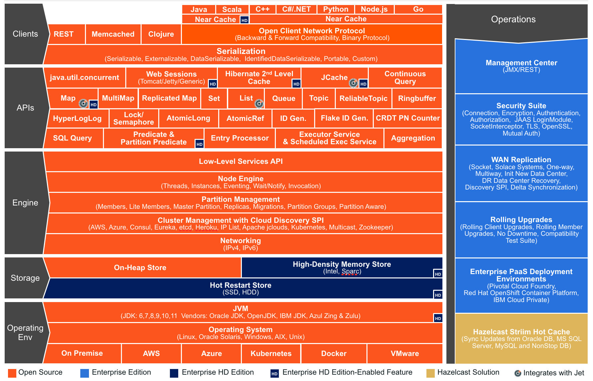

Preface
Welcome to the Hazelcast IMDG (In-Memory Data Grid) Reference Manual. This manual includes concepts, instructions, and samples to guide you on how to use Hazelcast and build Hazelcast IMDG applications.
As the reader of this manual, you must be familiar with the Java programming language and you should have installed your preferred Integrated Development Environment (IDE).
Hazelcast IMDG Editions
This Reference Manual covers all editions of Hazelcast IMDG. Throughout this manual:
- Hazelcast or Hazelcast IMDG refers to the open source edition of Hazelcast in-memory data grid middleware. Hazelcast is also the name of the company (Hazelcast, Inc.) providing the Hazelcast product.
- Hazelcast IMDG Enterprise is a commercially licensed edition of Hazelcast IMDG which provides high-value enterprise features in addition to Hazelcast IMDG.
- Hazelcast IMDG Enterprise HD is a commercially licensed edition of Hazelcast IMDG which provides High-Density (HD) Memory Store and Hot Restart Persistence features in addition to Hazelcast IMDG Enterprise.
Hazelcast IMDG Architecture
You can see the features for all Hazelcast IMDG editions in the following architecture diagram.

 NOTE You can see small "HD" boxes for some features in the above diagram. Those features can use High-Density (HD) Memory Store when it is available. It means if you have Hazelcast IMDG Enterprise HD, you can use those features with HD Memory Store.
NOTE You can see small "HD" boxes for some features in the above diagram. Those features can use High-Density (HD) Memory Store when it is available. It means if you have Hazelcast IMDG Enterprise HD, you can use those features with HD Memory Store.
For more information on Hazelcast IMDG's Architecture, please see the white paper An Architect's View of Hazelcast.
Hazelcast IMDG Plugins
You can extend Hazelcast IMDG's functionality by using its plugins. These plugins have their own lifecycles. Please see Plugins page to learn about Hazelcast plugins you can use. Hazelcast plugins are marked with  label throughout this manual.
label throughout this manual.
Licensing
Hazelcast IMDG and Hazelcast Reference Manual are free and provided under the Apache License, Version 2.0. Hazelcast IMDG Enterprise and Hazelcast IMDG Enterprise HD is commercially licensed by Hazelcast, Inc.
For more detailed information on licensing, please see the License Questions appendix.
Trademarks
Hazelcast is a registered trademark of Hazelcast, Inc. All other trademarks in this manual are held by their respective owners.
Customer Support
Support for Hazelcast is provided via GitHub, Mail Group and StackOverflow
For information on the commercial support for Hazelcast IMDG and Hazelcast IMDG Enterprise, please see hazelcast.com.
Release Notes
Please refer to the Release Notes document for the new features, enhancements and fixes performed for each Hazelcast IMDG release.
Contributing to Hazelcast IMDG
You can contribute to the Hazelcast IMDG code, report a bug, or request an enhancement. Please see the following resources.
- Developing with Git: Document that explains the branch mechanism of Hazelcast and how to request changes.
- Hazelcast Contributor Agreement form: Form that each contributing developer needs to fill and send back to Hazelcast.
- Hazelcast on GitHub: Hazelcast repository where the code is developed, issues and pull requests are managed.
Partners
Hazelcast partners with leading hardware and software technologies, system integrators, resellers and OEMs including Amazon Web Services, Vert.x, Azul Systems, C2B2. Please see the Partners page for the full list of and information on our partners.
Phone Home
Hazelcast uses phone home data to learn about usage of Hazelcast IMDG.
Hazelcast IMDG member instances call our phone home server initially when they are started and then every 24 hours. This applies to all the instances joined to the cluster.
What is sent in?
The following information is sent in a phone home:
- Hazelcast IMDG version
- Local Hazelcast IMDG member UUID
- Download ID
- A hash value of the cluster ID
- Cluster size bands for 5, 10, 20, 40, 60, 100, 150, 300, 600 and > 600
- Number of connected clients bands of 5, 10, 20, 40, 60, 100, 150, 300, 600 and > 600
- Cluster uptime
- Member uptime
- Environment Information:
- Name of operating system
- Kernel architecture (32-bit or 64-bit)
- Version of operating system
- Version of installed Java
- Name of Java Virtual Machine
- Hazelcast IMDG Enterprise specific:
- Number of clients by language (Java, C++, C#)
- Flag for Hazelcast Enterprise
- Hash value of license key
- Native memory usage
Phone Home Code
The phone home code itself is open source. Please see here.
Disabling Phone Homes
Set the hazelcast.phone.home.enabled system property to false either in the config or on the Java command line. Please see the System Properties section for information on how to set a property.
Starting with Hazelcast 3.9, you can also disable the phone home using the environment variable HZ_PHONE_HOME_ENABLED. Simply add the following line to your .bash_profile:
export HZ_PHONE_HOME_ENABLED=false
Phone Home URLs
For versions 1.x and 2.x: http://www.hazelcast.com/version.jsp.
For versions 3.x up to 3.6: http://versioncheck.hazelcast.com/version.jsp.
For versions after 3.6: http://phonehome.hazelcast.com/ping.
Typographical Conventions
Below table shows the conventions used in this manual.
| Convention | Description |
|---|---|
| bold font | - Indicates part of a sentence that requires the reader's specific attention. - Also indicates property/parameter values. |
| italic font | - When italicized words are enclosed with "<" and ">", it indicates a variable in the command or code syntax that you must replace (for example, hazelcast-<version>.jar). - Note and Related Information texts are in italics. |
monospace |
Indicates files, folders, class and library names, code snippets, and inline code words in a sentence. |
| RELATED INFORMATION | Indicates a resource that is relevant to the topic, usually with a link or cross-reference. |
| NOTE |
Indicates information that is of special interest or importance, for example an additional action required only in certain circumstances. |
| element & attribute | Mostly used in the context of declarative configuration that you perform using Hazelcast XML file. Element refers to an XML tag used to configure a Hazelcast feature. Attribute is a parameter owned by an element, contributing into the declaration of that element's configuration. Please see the following example.<port port-count="100">5701</port>In this example, port-count is an attribute of the port element. |
Document Revision History
This chapter lists the changes made to this document from the previous release.
NOTE: Please refer to the Release Notes for the new features, enhancements and fixes performed for each Hazelcast release.
| Chapter | Section | Description |
|---|---|---|
| Preface | Phone Home | Added information related to the new environment variable HZ_PHONE_HOME_ENABLED for disabling phone homes. |
| Consistency and Replication Model | Added as a new chapter to explain the full picture of Hazelcast's consistency model. | |
| Understanding Configuration | Added Configuration Pattern Patcher and Dynamically Adding Configuration on a Cluster as a new sections. | |
| Setting Up Clusters | User Code Deployment | Added "Example for Filtering Members" as a new section to explain how to use the provider-filter element. |
| Client User Code Deployment | Added as a new section. | |
| Failure Detector Configuration | Added as a new section to explain Hazelcast's Deadline and Phi Accrual failure detectors. | |
| Member Address Provider SPI | Added as a new section. | |
| Distributed Computing | Entry Processor | Added "Entry Processor Optimizations" as a new section explaining Offloadable and Readonly entry processors. |
| Distributed Data Structures | Lock | Added "Lock vs. IMap.lock" as a new section. |
| Event Journal | Added as a new section to explain the event journal distributed data structure that stores the history of mutation actions on the data structures such as map or cache. | |
| Hazelcast JCache | Scoping to Join Clusters | Enhanced the content to explain and give examples about the Hazelcast instance creations during cache manager starts. |
| Integrated Clustering | Integrating with Spring | Added "Defining Timeouts for Cache Read Operation" as a new section. |
| Hazelcast Java Client | Enabling Client TLS/SSL | Added information related to mutual authentication. |
| Configuring Client Connection Strategy | Added as a new section. | |
| Async Start and Reconnect Modes | Added as a new section. | |
| Setting Outbound Ports | Added as a new section. | |
| Management | Using Management Center with TLS/SSL Only | Added as a new section. |
| Promoting Lite Members to Data Member | Added as a new section. | |
| Managing Cluster and Member States | Added the explanation for the new cluster state NO_MIGRATION. |
|
| Added LDAP, Active Directory and JAAS Authentication as new sections. | ||
| Added Password Encryption as a new section to explain how to encrypt LDAP passwords. | ||
| Defining Member Attributes | Added information related to member filtering for distributed class loading (user code deployment). | |
| Management Center | Updated by adding "Metrics-Only" privilege definition and "Enabling TLS/SSL when starting with WAR file" section. | |
| Diagnostics | Added explanations for two new diagnostics plugins: OperationHeartbeats and MemberHeartbeats. | |
| Security | SSL | Added "Authenticating Mutually" as a new section. |
| Native Client Security | Added description for the Cache Permissions. | |
| Validating Secrets Using Strength Policy | Added as a new section. | |
| Performance | Near Cache | Added "Locally Initiated Changes" as a new section. |
| PartitioningStrategy | Added as a new section. | |
| WAN | Added the new section Defining WAN replication using Discovery SPI to explain how to use WAN with endpoints on various cloud infrastructures (such as Amazon EC2) where the IP addresses are not known in advance. WAN Replication Failure Detection and Recovery added as a new section. |
|
| Network Partitioning | Improved the whole content on how Hazelcast handles split-brain syndrome. | |
| System Properties | Added definitions for the new properties: - hazelcast.partition.migration.fragments.enabled - hazelcast.legacy.memberlist.format.enabled - hazelcast.mastership.claim.timeout.seconds - hazelcast.diagnostics.operation-heartbeat.seconds - hazelcast.diagnostics.operation-heartbeat.max-deviation-percentage - hazelcast.diagnostics.member-heartbeat.seconds - hazelcast.diagnostics.member-heartbeat.max-deviation-percentage - hazelcast.operation.fail.on.indeterminate.state |
Getting Started
This chapter explains how to install Hazelcast and start a Hazelcast member and client. It describes the executable files in the download package and also provides the fundamentals for configuring Hazelcast and its deployment options.
Installation
The following sections explain the installation of Hazelcast and Hazelcast Enterprise. It also includes notes and changes to consider when upgrading Hazelcast.
Hazelcast IMDG
You can find Hazelcast in standard Maven repositories. If your project uses Maven, you do not need to add
additional repositories to your pom.xml or add hazelcast-<version>.jar file into your
classpath (Maven does that for you). Just add the following lines to your pom.xml:
<dependencies>
<dependency>
<groupId>com.hazelcast</groupId>
<artifactId>hazelcast</artifactId>
<version>Hazelcast Version To Be Installed</version>
</dependency>
</dependencies>
As an alternative, you can download and install Hazelcast yourself. You only need to:
Download the package
hazelcast-<version>.ziporhazelcast-<version>.tar.gzfrom hazelcast.org.Extract the downloaded
hazelcast-<version>.ziporhazelcast-<version>.tar.gz.Add the file
hazelcast-<version>.jarto your classpath.
Hazelcast IMDG Enterprise
There are two Maven repositories defined for Hazelcast IMDG Enterprise:
<repository>
<id>Hazelcast Private Snapshot Repository</id>
<url>https://repository-hazelcast-l337.forge.cloudbees.com/snapshot/</url>
</repository>
<repository>
<id>Hazelcast Private Release Repository</id>
<url>https://repository-hazelcast-l337.forge.cloudbees.com/release/</url>
</repository>
Hazelcast IMDG Enterprise customers may also define dependencies, a sample of which is shown below.
<dependency>
<groupId>com.hazelcast</groupId>
<artifactId>hazelcast-enterprise</artifactId>
<version>${project.version}</version>
</dependency>
<dependency>
<groupId>com.hazelcast</groupId>
<artifactId>hazelcast-enterprise-all</artifactId>
<version>${project.version}</version>
</dependency>
Setting the License Key
Hazelcast IMDG Enterprise offers you two types of licenses: Enterprise and Enterprise HD. The supported features differ in your Hazelcast setup according to the license type you own.
- Enterprise license: In addition to the open source edition of Hazelcast, Enterprise features are the following:
- Security
- WAN Replication
- Clustered REST
- Clustered JMX
- Striim Hot Cache
- Rolling Upgrades
- Enterprise HD license: In addition to the Enterprise features, Enterprise HD features are the following:
- High-Density Memory Store
- Hot Restart Persistence
To use Hazelcast IMDG Enterprise, you need to set the provided license key using one of the configuration methods shown below.
Declarative Configuration:
Add the below line to any place you like in the file hazelcast.xml. This XML file offers you a declarative way to configure your Hazelcast. It is included in the Hazelcast download package. When you extract the downloaded package, you will see the file hazelcast.xml under the /bin directory.
<hazelcast>
...
<license-key>Your Enterprise License Key</license-key>
...
</hazelcast>
Client Declarative Configuration:
Native client distributions (Java, C++, .NET) of Hazelcast are open source. However, there are some Hazelcast Enterprise features which can be used with the Java Client such as SSL, Socket Interceptors, High-Density backed Near Cache, etc. In that case, you also need to have a Hazelcast Enterprise license and you should include this license in the file hazelcast-client-full.xml which is located under the directory src/main/resources of your hazelcast-client package. Set the license key in the hazelcast-client-full.xml as shown below.
<hazelcast-client>
...
<license-key>Your Enterprise License Key</license-key>
...
</hazelcast-client>
Programmatic Configuration:
Alternatively, you can set your license key programmatically as shown below.
Config config = new Config();
config.setLicenseKey( "Your Enterprise License Key" );
Spring XML Configuration:
If you are using Spring with Hazelcast, then you can set the license key using the Spring XML schema, as shown below.
<hz:config>
...
<hz:license-key>Your Enterprise License Key</hz:license-key>
...
</hz:config>
JVM System Property:
As another option, you can set your license key using the below command (the "-D" command line option).
-Dhazelcast.enterprise.license.key=Your Enterprise License Key
License Key Format
License keys have the following format:
<Name of the Hazelcast edition>#<Count of the Members>#<License key>
The strings before the <License key> is the human readable part. You can use your license key with or without this human readable part. So, both the following example license keys are valid:
HazelcastEnterpriseHD#2Nodes#1q2w3e4r5t
1q2w3e4r5t
Upgrading from 3.x
Upgrading from 3.6.x to 3.7.x when using
JCache: Hazelcast 3.7 introduced changes inJCacheimplementation which broke compatibility of 3.6.x clients to 3.7-3.7.2 cluster members and vice versa, so 3.7-3.7.2 clients are also incompatible with 3.6.x cluster members. This issue only affects Java clients which useJCachefunctionality.Starting with Hazelcast 3.7.3, a compatibility option is provided which can be used to ensure backwards compatibility with 3.6.x clients. In order to upgrade a 3.6.x cluster and clients to 3.7.3 (or later), you will need to use this compatibility option on either the member or the client side, depending on which one is upgraded first:
- first upgrade your cluster members to 3.7.3, adding property
hazelcast.compatibility.3.6.client=trueto your configuration; when started with this property, cluster members are compatible with 3.6.x and 3.7.3+ clients but not with 3.7-3.7.2 clients. Once your cluster is upgraded, you may upgrade your applications to use client version 3.7.3+. upgrade your clients from 3.6.x to 3.7.3, adding property
hazelcast.compatibility.3.6.server=trueto your Hazelcast client configuration. A 3.7.3 client started with this compatibility option is compatible with 3.6.x and 3.7.3+ cluster members but incompatible with 3.7-3.7.2 cluster members. Once your clients are upgraded, you may then proceed to upgrade your cluster members to version 3.7.3 or later.You may use any of the supported ways as described in System Properties section to configure the compatibility option. When done upgrading your cluster and clients, you may remove the compatibility property from your Hazelcast member configuration.
- first upgrade your cluster members to 3.7.3, adding property
Upgrading from 3.6.x to 3.8.x EE and if you are using when using
JCache: Due to a compatibility problem CacheConfig serialization may not work if your member is 3.8.x where x < 5. Hence, you will need to use the 3.8.5 or higher version where the problem is being fixed.Introducing the
spring-awareelement: Before the release 3.5, Hazelcast usesSpringManagedContextto scanSpringAwareannotations by default. This may cause some performance overhead for the users who do not useSpringAware. This behavior has been changed with the release of Hazelcast 3.5.SpringAwareannotations are disabled by default. By introducing thespring-awareelement, now it is possible to enable it by adding the<hz:spring-aware />tag to the configuration. Please see the Spring Integration section.Introducing new configuration options for WAN replication: Starting with Hazelcast 3.6, WAN replication related system properties, which are configured on a per member basis, can now be configured per target cluster. The 4 system properties below are no longer valid.
hazelcast.enterprise.wanrep.batch.size, please see the WAN Replication Batch Size.hazelcast.enterprise.wanrep.batchfrequency.seconds, please see the WAN Replication Batch Maximum Delay.hazelcast.enterprise.wanrep.optimeout.millis, please see the WAN Replication Response Timeout.hazelcast.enterprise.wanrep.queue.capacity, please see the WAN Replication Queue Capacity.
Removal of deprecated getId() method: The method
getId()in the interfaceDistributedObjecthas been removed. Please use the methodgetName()instead.Change in the Custom Serialization in the C++ Client Distribution: Before, the method
getTypeId()was used to retrieve the ID of the object to be serialized. Now, the methodgetHazelcastTypeId()is used and you give your object as a parameter to this new method. Also,getTypeId()was used in your custom serializer class, now it has been renamed togetHazelcastTypeId()too. Note that, these changes also apply when you want to switch from Hazelcast 3.6.1 to 3.6.2 too.Important note about Hazelcast System Properties: Even Hazelcast has not been recommending the usage of
GroupProperties.javaclass while benefiting from System Properties, there has been a change to inform to the users who have been using this class. Starting with Hazelcast 3.7, the classGroupProperties.javahas been replaced byGroupProperty.java. In this new class, system properties are instances of the newly introducedHazelcastPropertyobject. You can access the names of these properties by callinggetName()method ofHazelcastProperty.Removal of WanNoDelayReplication:
WanNoDelayReplicationimplementation of Hazelcast's WAN Replication has been removed starting with Hazelcast 3.7. You can still achieve this behavior by setting the batch size to1while configuring the WanBatchReplication. Please refer to the Defining WAN Replication section for more information.Introducing
element : Starting with Hazelcast 3.8, the configuration element<target-cluster>is replaced with the element<wan-publisher>in WAN replication configuration.WaitNotifyService interface has been renamed as OperationParker.
Synchronizing WAN Target Cluster: Starting with Hazelcast 3.8 release, the URL for the REST call has been changed from
http://member_ip:port/hazelcast/rest/wan/sync/maptohttp://member_ip:port/hazelcast/rest/mancenter/wan/sync/map.
Upgrading from 2.x
- Removal of deprecated static methods: The static methods of Hazelcast class reaching Hazelcast data components have been removed. The functionality of these methods can be reached from the HazelcastInstance interface. You should replace the following:
Map<Integer, String> customers = Hazelcast.getMap( "customers" );
with
HazelcastInstance hazelcastInstance = Hazelcast.newHazelcastInstance();
// or if you already started an instance named "instance1"
// HazelcastInstance hazelcastInstance = Hazelcast.getHazelcastInstanceByName( "instance1" );
Map<Integer, String> customers = hazelcastInstance.getMap( "customers" );
- Renaming "instance" to "distributed object": Before 3.0 there was confusion about the term "instance": it was used for both the cluster members and the distributed objects (map, queue, topic, etc. instances). Starting with Hazelcast 3.0, the term instance will be only used for Hazelcast instances, namely cluster members. We will use the term "distributed object" for map, queue, etc. instances. You should replace the related methods with the new renamed ones. 3.0 clients are smart clients in that they know in which cluster member the data is located, so you can replace your lite members with native clients.
public static void main( String[] args ) throws InterruptedException {
HazelcastInstance hazelcastInstance = Hazelcast.newHazelcastInstance();
IMap map = hazelcastInstance.getMap( "test" );
Collection<Instance> instances = hazelcastInstance.getInstances();
for ( Instance instance : instances ) {
if ( instance.getInstanceType() == Instance.InstanceType.MAP ) {
System.out.println( "There is a map with name: " + instance.getId() );
}
}
}
with
public static void main( String[] args ) throws InterruptedException {
HazelcastInstance hazelcastInstance = Hazelcast.newHazelcastInstance();
IMap map = hz.getMap( "test" );
Collection<DistributedObject> objects = hazelcastInstance.getDistributedObjects();
for ( DistributedObject distributedObject : objects ) {
if ( distributedObject instanceof IMap ) {
System.out.println( "There is a map with name: " + distributedObject.getName() );
}
}
}
- Package structure change:
PartitionService has been moved to package
com.hazelcast.corefromcom.hazelcast.partition.
- Listener API change:
Before 3.0,
removeListenermethods were taking the Listener object as a parameter. But this caused confusion because same listener object may be used as a parameter for different listener registrations. So we have changed the listener API.addListenermethods returns a unique ID and you can remove a listener by using this ID. So you should do the following replacement if needed:
IMap map = hazelcastInstance.getMap( "map" );
map.addEntryListener( listener, true );
map.removeEntryListener( listener );
with
IMap map = hazelcastInstance.getMap( "map" );
String listenerId = map.addEntryListener( listener, true );
map.removeEntryListener( listenerId );
- IMap changes:
tryRemove(K key, long timeout, TimeUnit timeunit)returns boolean indicating whether operation is successful.tryLockAndGet(K key, long time, TimeUnit timeunit)is removed.putAndUnlock(K key, V value)is removed.lockMap(long time, TimeUnit timeunit)andunlockMap()are removed.getMapEntry(K key)is renamed asgetEntryView(K key). The returned object's type, MapEntry class is renamed as EntryView.- There is no predefined names for merge policies. You just give the full class name of the merge policy implementation.
<merge-policy>com.hazelcast.map.merge.PassThroughMergePolicy</merge-policy>
Also MergePolicy interface has been renamed to MapMergePolicy and also returning null from the implemented merge() method causes the existing entry to be removed.
- IQueue changes:
There is no change on IQueue API but there are changes on how
IQueueis configured. With Hazelcast 3.0 there will be no backing map configuration for queue. Settings like backup count will be directly configured on queue config. For queue configuration details, please see the Queue section. - Transaction API change: In Hazelcast 3.0, transaction API is completely different. Please see the Transactions chapter.
- ExecutorService API change: Classes MultiTask and DistributedTask have been removed. All the functionality is supported by the newly presented interface IExecutorService. Please see the Executor Service section.
- LifeCycleService API:
The lifecycle has been simplified.
pause(),resume(),restart()methods have been removed. - AtomicNumber:
AtomicNumberclass has been renamed toIAtomicLong. - ICountDownLatch:
await()operation has been removed. We expect users to useawait()method with timeout parameters. - ISemaphore API:
The
ISemaphorehas been substantially changed.attach(),detach()methods have been removed. - In 2.x releases, the default value for
max-sizeeviction policy was cluster_wide_map_size. In 3.x releases, default is PER_NODE. After upgrading, themax-sizeshould be set according to this new default, if it is not changed. Otherwise, it is likely that OutOfMemory exception may be thrown.
Starting the Member and Client
Having installed Hazelcast, you can get started.
In this short tutorial, you perform the following activities.
- Create a simple Java application using the Hazelcast distributed map and queue.
- Run our application twice to have a cluster with two members (JVMs).
- Connect to our cluster from another Java application by using the Hazelcast Native Java Client API.
Let's begin.
- The following code starts the first Hazelcast member and creates and uses the
customersmap and queue.
import com.hazelcast.core.*;
import com.hazelcast.config.*;
import java.util.Map;
import java.util.Queue;
public class GettingStarted {
public static void main(String[] args) {
Config cfg = new Config();
HazelcastInstance instance = Hazelcast.newHazelcastInstance(cfg);
Map<Integer, String> mapCustomers = instance.getMap("customers");
mapCustomers.put(1, "Joe");
mapCustomers.put(2, "Ali");
mapCustomers.put(3, "Avi");
System.out.println("Customer with key 1: "+ mapCustomers.get(1));
System.out.println("Map Size:" + mapCustomers.size());
Queue<String> queueCustomers = instance.getQueue("customers");
queueCustomers.offer("Tom");
queueCustomers.offer("Mary");
queueCustomers.offer("Jane");
System.out.println("First customer: " + queueCustomers.poll());
System.out.println("Second customer: "+ queueCustomers.peek());
System.out.println("Queue size: " + queueCustomers.size());
}
}
- Run this
GettingStartedclass a second time to get the second member started. The members form a cluster and the output is similar to the following.
Members {size:2, ver:1} [
Member [127.0.0.1]:5701 - e40081de-056a-4ae5-8ffe-632caf8a6cf1 this
Member [127.0.0.1]:5702 - 93e82109-16bf-4b16-9c87-f4a6d0873080
]
Here, you can see the size of your cluster (size) and member list version (ver). The member list version will be incremented when changes happen to the cluster, e.g., a member leaving from or joining to the cluster.
The above member list format is introduced with Hazelcast 3.9. You can enable the legacy member list format, which was used for the releases before Hazelcast 3.9, using the system property hazelcast.legacy.memberlist.format.enabled. Please see the System Properties chapter. The following is an example for the legacy member list format:
Members [2] {
Member [127.0.0.1]:5701 - c1ccc8d4-a549-4bff-bf46-9213e14a9fd2 this
Member [127.0.0.1]:5702 - 33a82dbf-85d6-4780-b9cf-e47d42fb89d4
}
Now, add the
hazelcast-client-<version>.jarlibrary to your classpath. This is required to use a Hazelcast client.The following code starts a Hazelcast Client, connects to our cluster, and prints the size of the
customersmap.
package com.hazelcast.test;
import com.hazelcast.client.config.ClientConfig;
import com.hazelcast.client.HazelcastClient;
import com.hazelcast.core.HazelcastInstance;
import com.hazelcast.core.IMap;
public class GettingStartedClient {
public static void main( String[] args ) {
ClientConfig clientConfig = new ClientConfig();
HazelcastInstance client = HazelcastClient.newHazelcastClient( clientConfig );
IMap map = client.getMap( "customers" );
System.out.println( "Map Size:" + map.size() );
}
}
- When you run it, you see the client properly connecting to the cluster and printing the map size as 3.
Hazelcast also offers a tool, Management Center, that enables you to monitor your cluster.
To use it, deploy the mancenter-<version>.war included in the ZIP file to your web server.
You can use it to monitor your maps, queues, and other distributed data structures and members. Please
see the Management Center section for usage explanations.
By default, Hazelcast uses Multicast to discover other members that can form a cluster. If you are
working with other Hazelcast developers on the same network, you may find yourself joining their
clusters under the default settings. Hazelcast provides a way to segregate clusters within the same
network when using Multicast. Please see the Creating Cluster Groups
for more information. Alternatively, if you do not wish to use the default Multicast mechanism,
you can provide a fixed list of IP addresses that are allowed to join. Please see
the Join Configuration section for more information.
RELATED INFORMATION
You can also check the video tutorials here.
Using the Scripts In The Package
When you download and extract the Hazelcast ZIP or TAR.GZ package, you will see three scripts under the /bin folder that provide basic functionalities for member and cluster management.
The following are the names and descriptions of each script:
start.sh/start.bat: Starts a Hazelcast member with default configuration in the working directory*.stop.sh/stop.bat: Stops the Hazelcast member that was started in the current working directory.cluster.sh: Provides basic functionalities for cluster management, such as getting and changing the cluster state, shutting down the cluster or forcing the cluster to clean its persisted data and make a fresh start.
NOTE: start.sh / start.bat scripts lets you start one Hazelcast instance per folder. To start a new instance, please unzip Hazelcast ZIP or TAR.GZ package in a new folder.
Please refer to the Using the Script cluster.sh section to learn the usage of this script.
Deploying On Amazon EC2
You can deploy your Hazelcast project onto an Amazon EC2 environment using Third Party tools such as Vagrant and Chef.
You can find a sample deployment project (amazon-ec2-vagrant-chef) with step-by-step instructions in the hazelcast-integration folder of the hazelcast-code-samples package, which you can download at hazelcast.org. Please refer to this sample project for more information.
Deploying On Microsoft Azure

You can deploy your Hazelcast cluster onto a Microsoft Azure environment. For this, your cluster should make use of Hazelcast Discovery Plugin for Microsoft Azure. You can find information about this plugin on its GitHub repository at Hazelcast Azure.
For information on how to automatically deploy your cluster onto Azure, please see the Deployment section of Hazelcast Azure plugin repository.
Deploying On Pivotal Cloud Foundry

Starting with Hazelcast 3.7, you can deploy your Hazelcast cluster onto Pivotal Cloud Foundry. It is available as a Pivotal Cloud Foundry Tile which you can download at https://network.pivotal.io/products/hazelcast/. You can find the installation and usage instructions, and the release notes documents at https://docs.pivotal.io/partners/hazelcast/index.html.
Deploying using Docker

You can deploy your Hazelcast projects using the Docker containers. Hazelcast has the following images on Docker:
- Hazelcast IMDG
- Hazelcast IMDG Enterprise
- Hazelcast Management Center
- Hazelcast OpenShift
After you pull an image from the Docker registry, you can run your image to start the management center or a Hazelcast instance with Hazelcast's default configuration. All repositories provide the latest stable releases but you can pull a specific release too. You can also specify environment variables when running the image.
If you want to start a customized Hazelcast instance, you can extend the Hazelcast image by providing your own configuration file.
This feature is provided as a Hazelcast plugin. Please see its own GitHub repo at Hazelcast Docker for details on configurations and usages.
Hazelcast Overview
Hazelcast is an open source In-Memory Data Grid (IMDG). It provides elastically scalable distributed In-Memory computing, widely recognized as the fastest and most scalable approach to application performance. Hazelcast does this in open source. More importantly, Hazelcast makes distributed computing simple by offering distributed implementations of many developer-friendly interfaces from Java such as Map, Queue, ExecutorService, Lock, and JCache. For example, the Map interface provides an In-Memory Key Value store which confers many of the advantages of NoSQL in terms of developer friendliness and developer productivity.
In addition to distributing data In-Memory, Hazelcast provides a convenient set of APIs to access the CPUs in your cluster for maximum processing speed. Hazelcast is designed to be lightweight and easy to use. Since Hazelcast is delivered as a compact library (JAR) and since it has no external dependencies other than Java, it easily plugs into your software solution and provides distributed data structures and distributed computing utilities.
Hazelcast is highly scalable and available (100% operational, never failing). Distributed applications can use Hazelcast for distributed caching, synchronization, clustering, processing, pub/sub messaging, etc. Hazelcast is implemented in Java and has clients for Java, C/C++, .NET and REST. Hazelcast also speaks memcache protocol. It plugs into Hibernate and can easily be used with any existing database system.
If you are looking for In-Memory speed, elastic scalability, and the developer friendliness of NoSQL, Hazelcast is a great choice.
Hazelcast is Simple
Hazelcast is written in Java with no other dependencies. It exposes the same API from the familiar Java util package,
exposing the same interfaces. Just add hazelcast.jar to your classpath and you can quickly enjoy JVMs clustering
and start building scalable applications.
Hazelcast is Peer-to-Peer
Unlike many NoSQL solutions, Hazelcast is peer-to-peer. There is no master and slave; there is no single point of failure. All members store equal amounts of data and do equal amounts of processing. You can embed Hazelcast in your existing application or use it in client and server mode where your application is a client to Hazelcast members.
Hazelcast is Scalable
Hazelcast is designed to scale up to hundreds and thousands of members. Simply add new members and they will automatically discover the cluster and will linearly increase both memory and processing capacity. The members maintain a TCP connection between each other and all communication is performed through this layer.
Hazelcast is Fast
Hazelcast stores everything in-memory. It is designed to perform very fast reads and updates.
Hazelcast is Redundant
Hazelcast keeps the backup of each data entry on multiple members. On a member failure, the data is restored from the backup and the cluster will continue to operate without downtime.
Sharding in Hazelcast
Hazelcast shards are called Partitions. By default, Hazelcast has 271 partitions. Given a key, we serialize, hash and mod it with the number of partitions to find the partition which the key belongs to. The partitions themselves are distributed equally among the members of the cluster. Hazelcast also creates the backups of partitions and distributes them among members for redundancy.
RELATED INFORMATION
Please refer to the Data Partitioning section for more information on how Hazelcast partitions your data.
Hazelcast Topology
You can deploy a Hazelcast cluster in two ways: Embedded or Client/Server.
If you have an application whose main focal point is asynchronous or high performance computing and lots of task executions, then Embedded deployment is useful. In Embedded deployment, members include both the application and Hazelcast data and services. The advantage of the Embedded deployment is having a low-latency data access.
See the below illustration.

In the Client/Server deployment, Hazelcast data and services are centralized in one or more server members and they are accessed by the application through clients. You can have a cluster of server members that can be independently created and scaled. Your clients communicate with these members to reach to Hazelcast data and services on them.
See the below illustration.

Hazelcast provides native clients (Java, .NET and C++), Memcache and REST clients, Scala, Python and Node.js client implementations.
Client/Server deployment has advantages including more predictable and reliable Hazelcast performance, easier identification of problem causes, and most importantly, better scalability. When you need to scale in this deployment type, just add more Hazelcast server members. You can address client and server scalability concerns separately.
If you want low-latency data access, as in the Embedded deployment, and you also want the scalability advantages of the Client/Server deployment, you can consider defining Near Caches for your clients. This enables the frequently used data to be kept in the client's local memory. Please refer to Configuring Client Near Cache.
Why Hazelcast?
A Glance at Traditional Data Persistence
Data is at the core of software systems. In conventional architectures, a relational database persists and provides access to data. Applications are talking directly with a database which has its backup as another machine. To increase performance, tuning or a faster machine is required. This can cost a large amount of money or effort.
There is also the idea of keeping copies of data next to the database, which is performed using technologies like external key-value stores or second level caching that help offload the database. However, when the database is saturated or the applications perform mostly "put" operations (writes), this approach is of no use because it insulates the database only from the "get" loads (reads). Even if the applications are read-intensive there can be consistency problems--when data changes, what happens to the cache, and how are the changes handled? This is when concepts like time-to-live (TTL) or write-through come in.
In the case of TTL, if the access is less frequent than the TTL, the result will always be a cache miss. On the other hand, in the case of write-through caches, if there are more than one of these caches in a cluster, we again will have consistency issues. This can be avoided by having the nodes communicate with each other so that entry invalidations can be propagated.
We can conclude that an ideal cache would combine TTL and write-through features. There are several cache servers and in-memory database solutions in this field. However, these are stand-alone single instances with a distribution mechanism that is provided by other technologies to an extent. So, we are back to square one; we experience saturation or capacity issues if the product is a single instance or if consistency is not provided by the distribution.
And, there is Hazelcast
Hazelcast, a brand new approach to data, is designed around the concept of distribution. Hazelcast shares data around the cluster for flexibility and performance. It is an in-memory data grid for clustering and highly scalable data distribution.
One of the main features of Hazelcast is that it does not have a master member. Each cluster member is configured to be the same in terms of functionality. The oldest member (the first member created in the cluster) automatically performs the data assignment to cluster members. If the oldest member dies, the second oldest member takes over.
Another main feature of Hazelcast is that the data is held entirely in-memory. This is fast. In the case of a failure, such as a member crash, no data will be lost since Hazelcast distributes copies of the data across all the cluster members.
As shown in the feature list in the Hazelcast Overview, Hazelcast supports a number of distributed data structures and distributed computing utilities. These provide powerful ways of accessing distributed clustered memory and accessing CPUs for true distributed computing.
Hazelcast's Distinctive Strengths
- Hazelcast is open source.
- Hazelcast is only a JAR file. You do not need to install software.
- Hazelcast is a library, it does not impose an architecture on Hazelcast users.
- Hazelcast provides out of the box distributed data structures, such as Map, Queue, MultiMap, Topic, Lock and Executor.
- There is no "master," meaning no single point of failure in a Hazelcast cluster; each member in the cluster is configured to be functionally the same.
- When the size of your memory and compute requirements increase, new members can be dynamically joined to the Hazelcast cluster to scale elastically.
- Data is resilient to member failure. Data backups are distributed across the cluster. This is a big benefit when a member in the cluster crashes as data will not be lost.
- Members are always aware of each other unlike in traditional key-value caching solutions.
- You can build your own custom-distributed data structures using the Service Programming Interface (SPI) if you are not happy with the data structures provided.
Finally, Hazelcast has a vibrant open source community enabling it to be continuously developed.
Hazelcast is a fit when you need:
- analytic applications requiring big data processing by partitioning the data.
- to retain frequently accessed data in the grid.
- a cache, particularly an open source JCache provider with elastic distributed scalability.
- a primary data store for applications with utmost performance, scalability and low-latency requirements.
- an In-Memory NoSQL Key Value Store.
- publish/subscribe communication at highest speed and scalability between applications.
- applications that need to scale elastically in distributed and cloud environments.
- a highly available distributed cache for applications.
- an alternative to Coherence and Terracotta.
Data Partitioning
As you read in the Sharding in Hazelcast section, Hazelcast shards are called Partitions. Partitions are memory segments that can contain hundreds or thousands of data entries each, depending on the memory capacity of your system. Each Hazelcast partition can have multiple replicas, which are distributed among the cluster members. One of the replicas becomes the primary and other replicas are called backups. Cluster member which owns primary replica of a partition is called partition owner. When you read or write a particular data entry, you transparently talk to the owner of the partition that contains the data entry.
By default, Hazelcast offers 271 partitions. When you start a cluster with a single member, it owns all of 271 partitions (i.e., it keeps primary replicas for 271 partitions). The following illustration shows the partitions in a Hazelcast cluster with single member.

When you start a second member on that cluster (creating a Hazelcast cluster with two members), the partition replicas are distributed as shown in the illustration here.

In the illustration, the partition replicas with black text are primaries and the partition replicas with blue text are backups. The first member has primary replicas of 135 partitions (black), and each of these partitions are backed up in the second member (i.e., the second member owns the backup replicas) (blue). At the same time, the first member also has the backup replicas of the second member's primary partition replicas.
As you add more members, Hazelcast moves some of the primary and backup partition replicas to the new members one by one, making all members equal and redundant. Thanks to the consistent hashing algorithm, only the minimum amount of partitions will be moved to scale out Hazelcast. The following is an illustration of the partition replica distributions in a Hazelcast cluster with four members.

Hazelcast distributes partitions' primary and backup replicas equally among the members of the cluster. Backup replicas of the partitions are maintained for redundancy.
NOTE: Your data can have multiple copies on partition primaries and backups, depending on your backup count. Please see the Backing Up Maps section.
Partition distributions in the above illustrations are for your convenience and descriptive purposes. Normally, the partitions are not distributed in any order (as they are shown in these illustrations), but are distributed randomly. The important point here is that Hazelcast equally distributes the partition primaries and their backup replicas among the members.
Starting with Hazelcast 3.6, lite members are introduced. Lite members are a new type of members that do not own any partition. Lite members are intended for use in computationally-heavy task executions and listener registrations. Although they do not own any partitions, they can access partitions that are owned by other members in the cluster.
RELATED INFORMATION
Please refer to the Enabling Lite Members section.
How the Data is Partitioned
Hazelcast distributes data entries into the partitions using a hashing algorithm. Given an object key (for example, for a map) or an object name (for example, for a topic or list):
- the key or name is serialized (converted into a byte array),
- this byte array is hashed, and
- the result of the hash is mod by the number of partitions.
The result of this modulo - MOD(hash result, partition count) - is the partition in which the data will be stored, that is the partition ID. For ALL members you have in your cluster, the partition ID for a given key will always be the same.
Partition Table
When you start a member, a partition table is created within it. This table stores the partition IDs and the cluster members to which they belong. The purpose of this table is to make all members (including lite members) in the cluster aware of this information, making sure that each member knows where the data is.
The oldest member in the cluster (the one that started first) periodically sends the partition table to all members. In this way each member in the cluster is informed about any changes to partition ownership. The ownerships may be changed when, for example, a new member joins the cluster, or when a member leaves the cluster.
NOTE: If the oldest member of the cluster goes down, the next oldest member sends the partition table information to the other ones.
You can configure the frequency (how often) that the member sends the partition table the information by using the hazelcast.partition.table.send.interval system property. The property is set to every 15 seconds by default.
Repartitioning
Repartitioning is the process of redistribution of partition ownerships. Hazelcast performs the repartitioning in the following cases:
- When a member joins to the cluster.
- When a member leaves the cluster.
In these cases, the partition table in the oldest member is updated with the new partition ownerships.
Note that if a lite member joins or leaves a cluster, repartitioning is not triggered since lite members do not own any partitions.
Use Cases
Hazelcast can be used:
- to share server configuration/information to see how a cluster performs.
- to cluster highly changing data with event notifications, e.g., user based events, and to queue and distribute background tasks.
- as a simple Memcache with Near Cache.
- as a cloud-wide scheduler of certain processes that need to be performed on some members.
- to share information (user information, queues, maps, etc.) on the fly with multiple members in different installations under OSGI environments.
- to share thousands of keys in a cluster where there is a web service interface on an application server and some validation.
- as a distributed topic (publish/subscribe server) to build scalable chat servers for smartphones.
- as a front layer for a Cassandra back-end.
- to distribute user object states across the cluster, to pass messages between objects, and to share system data structures (static initialization state, mirrored objects, object identity generators).
- as a multi-tenancy cache where each tenant has its own map.
- to share datasets, e.g., table-like data structure, to be used by applications.
- to distribute the load and collect status from Amazon EC2 servers where the front-end is developed using, for example, Spring framework.
- as a real-time streamer for performance detection.
- as storage for session data in web applications (enables horizontal scalability of the web application).
Resources
- Hazelcast source code can be found at Github/Hazelcast.
- Hazelcast API can be found at Hazelcast.org/docs/Javadoc.
- Code samples can be downloaded from Hazelcast.org/download.
- More use cases and resources can be found at Hazelcast.com.
- Questions and discussions can be posted at the Hazelcast mail group.
Understanding Configuration
This chapter describes the options to configure your Hazelcast applications and explains the utilities which you can make use of while configuring. You can configure Hazelcast using one or mix of the following options:
- Declarative way
- Programmatic way
- Using Hazelcast system properties
- Within the Spring context
- Dynamically adding configuration on a running cluster (starting with Hazelcast 3.9)
Configuring Declaratively
This is the configuration option where you use an XML configuration file. When you download and unzip hazelcast-<version>.zip, you will see the following files present in /bin folder, which are standard XML-formatted configuration files:
hazelcast.xml: Default declarative configuration file for Hazelcast. The configuration in this XML file should be fine for most of the Hazelcast users. If not, you can tailor this XML file according to your needs by adding/removing/modifying properties.hazelcast-full-example.xml: Configuration file which includes all Hazelcast configuration elements and attributes with their descriptions. It is the "superset" ofhazelcast.xml. You can usehazelcast-full-example.xmlas a reference document to learn about any element or attribute, or you can change its name tohazelcast.xmland start to use it as your Hazelcast configuration file.
A part of hazelcast.xml is shown as an example below.
<group>
<name>dev</name>
<password>dev-pass</password>
</group>
<management-center enabled="false">http://localhost:8080/mancenter</management-center>
<network>
<port auto-increment="true" port-count="100">5701</port>
<outbound-ports>
<!--
Allowed port range when connecting to other members.
0 or * means the port provided by the system.
-->
<ports>0</ports>
</outbound-ports>
<join>
<multicast enabled="true">
<multicast-group>224.2.2.3</multicast-group>
<multicast-port>54327</multicast-port>
</multicast>
<tcp-ip enabled="false">
Composing Declarative Configuration
You can compose the declarative configuration of your Hazelcast member or Hazelcast client from multiple declarative configuration snippets. In order to compose a declarative configuration, you can use the <import/> element to load different declarative configuration files.
Let's say you want to compose the declarative configuration for Hazelcast out of two configurations: development-group-config.xml and development-network-config.xml. These two configurations are shown below.
development-group-config.xml:
<hazelcast>
<group>
<name>dev</name>
<password>dev-pass</password>
</group>
</hazelcast>
development-network-config.xml:
<hazelcast>
<network>
<port auto-increment="true" port-count="100">5701</port>
<join>
<multicast enabled="true">
<multicast-group>224.2.2.3</multicast-group>
<multicast-port>54327</multicast-port>
</multicast>
</join>
</network>
</hazelcast>
To get your example Hazelcast declarative configuration out of the above two, use the <import/> element as shown below.
<hazelcast>
<import resource="development-group-config.xml"/>
<import resource="development-network-config.xml"/>
</hazelcast>
This feature also applies to the declarative configuration of Hazelcast client. Please see the following examples.
client-group-config.xml:
<hazelcast-client>
<group>
<name>dev</name>
<password>dev-pass</password>
</group>
</hazelcast-client>
client-network-config.xml:
<hazelcast-client>
<network>
<cluster-members>
<address>127.0.0.1:7000</address>
</cluster-members>
</network>
</hazelcast-client>
To get a Hazelcast client declarative configuration from the above two examples, use the <import/> element as shown below.
<hazelcast-client>
<import resource="client-group-config.xml"/>
<import resource="client-network-config.xml"/>
</hazelcast>
NOTE: Use <import/> element on top level of the XML hierarchy.
Using the element <import>, you can also load XML resources from classpath and file system:
<hazelcast>
<import resource="file:///etc/hazelcast/development-group-config.xml"/> <!-- loaded from filesystem -->
<import resource="classpath:development-network-config.xml"/> <!-- loaded from classpath -->
</hazelcast>
The element <import> supports placeholders too. Please see the following example snippet:
<hazelcast>
<import resource="${environment}-group-config.xml"/>
<import resource="${environment}-network-config.xml"/>
</hazelcast>
Configuring Programmatically
Besides declarative configuration, you can configure your cluster programmatically. For this you can create a Config object, set/change its properties and attributes, and use this Config object to create a new Hazelcast member. Following is an example code which configures some network and Hazelcast Map properties.
Config config = new Config();
config.getNetworkConfig().setPort( 5900 )
.setPortAutoIncrement( false );
MapConfig mapConfig = new MapConfig();
mapConfig.setName( "testMap" )
.setBackupCount( 2 )
.setTimeToLiveSeconds( 300 );
config.addMapConfig( mapConfig );
To create a Hazelcast member with the above example configuration, pass the configuration object as shown below:
HazelcastInstance hazelcast = Hazelcast.newHazelcastInstance( config );
NOTE: The Config must not be modified after the Hazelcast instance is started. In other words, all configuration must be completed before creating the HazelcastInstance. Certain additional configuration elements can be added at runtime as described in the Dynamically Adding Data Structure Configuration on a Cluster section.
You can also create a named Hazelcast member. In this case, you should set instanceName of Config object as shown below:
Config config = new Config();
config.setInstanceName( "my-instance" );
Hazelcast.newHazelcastInstance( config );
To retrieve an existing Hazelcast member by its name, use the following:
Hazelcast.getHazelcastInstanceByName( "my-instance" );
To retrieve all existing Hazelcast members, use the following:
Hazelcast.getAllHazelcastInstances();
NOTE: Hazelcast performs schema validation through the file hazelcast-config-<version>.xsd which comes with your Hazelcast libraries. Hazelcast throws a meaningful exception if there is an error in the declarative or programmatic configuration.
If you want to specify your own configuration file to create Config, Hazelcast supports several ways including filesystem, classpath, InputStream, and URL:
Config cfg = new XmlConfigBuilder(xmlFileName).build();Config cfg = new XmlConfigBuilder(inputStream).build();Config cfg = new ClasspathXmlConfig(xmlFileName);Config cfg = new FileSystemXmlConfig(configFilename);Config cfg = new UrlXmlConfig(url);Config cfg = new InMemoryXmlConfig(xml);
Configuring with System Properties
You can use system properties to configure some aspects of Hazelcast. You set these properties as name and value pairs through declarative configuration, programmatic configuration or JVM system property. Following are examples for each option.
Declaratively:
....
<properties>
<property name="hazelcast.property.foo">value</property>
....
</properties>
</hazelcast>
Programmatically:
Config config = new Config() ;
config.setProperty( "hazelcast.property.foo", "value" );
Using JVM's System class or -D argument:
System.setProperty( "hazelcast.property.foo", "value" );
or
java -Dhazelcast.property.foo=value
You will see Hazelcast system properties mentioned throughout this Reference Manual as required in some of the chapters and sections. All Hazelcast system properties are listed in the System Properties appendix with their descriptions, default values and property types as a reference for you.
Configuring within Spring Context
If you use Hazelcast with Spring you can declare beans using the namespace hazelcast. When you add the namespace declaration to the element beans in the Spring context file, you can start to use the namespace shortcut hz to be used as a bean declaration. Following is an example Hazelcast configuration when integrated with Spring:
<hz:hazelcast id="instance">
<hz:config>
<hz:group name="dev" password="password"/>
<hz:network port="5701" port-auto-increment="false">
<hz:join>
<hz:multicast enabled="false"/>
<hz:tcp-ip enabled="true">
<hz:members>10.10.1.2, 10.10.1.3</hz:members>
</hz:tcp-ip>
</hz:join>
</hz:network>
</hz:config>
</hz:hazelcast>
Please see the Spring Integration section for more information on Hazelcast-Spring integration.
Dynamically Adding Data Structure Configuration on a Cluster
As described above, Hazelcast can be configured in a declarative or programmatic way; configuration must be completed before starting a Hazelcast member and this configuration cannot be altered at runtime, thus we refer to this as static configuration.
Starting with Hazelcast 3.9, it is possible to dynamically add configuration for certain data structures at runtime; these can be added by invoking one of the Config.add*Config methods on the Config object obtained from a running member's HazelcastInstance.getConfig() method. For example:
Config config = new Config():
MapConfig mapConfig = new MapConfig("sessions");
config.addMapConfig(mapConfig);
HazelcastInstance instance = Hazelcast.newHazelcastInstance(config);
// need to configure another map with no sync backups
MapConfig noBackupsMap = new MapConfig("dont-backup").setBackupCount(0);
// DO NOT DO THIS -- never modify the original Config object
// config.addMapConfig(noBackupsMap);
// Instead do this. The added config will be propagated to all members of the cluster
instance.getConfig().addMapConfig(noBackupsMap);
Dynamic configuration elements must be fully configured before the invocation of add*Config method: at that point, the configuration object will be delivered to every member of the cluster and added to each member's dynamic configuration, so mutating the configuration object after the add*Config invocation will have no effect.
As dynamically added data structure configuration is propagated across all cluster members, failures may occur due to conditions such as timeout and network partition. The configuration propagation mechanism internally retries adding the configuration whenever a membership change is detected. However if an exception is thrown from add*Config method, the configuration may have been partially propagated to some cluster members and adding the configuration should be retried by the user.
Adding new dynamic configuration is supported for all add*Config methods except:
JobTrackerwhich has been deprecated since Hazelcast 3.8QuorumConfig: new quorum configuration cannot be dynamically added but other configuration can reference quorums configured in the existing static configurationWanReplicationConfig: new WAN replication configuration cannot be dynamically added, however existing static ones can be referenced from other configurations, e.g., a new dynamicMapConfigmay include aWanReplicationRefto a statically configured WAN replication config.ListenerConfig: listeners can be instead added at runtime via other API such asHazelcastInstance.getCluster().addMembershipListenerandHazelcastInstance.getPartitionService().addMigrationListener.
Handling Configuration Conflicts
Attempting to add a dynamic configuration, when a static configuration for the same element already exists, will throw ConfigurationException. For example, assuming we start a member with the following fragment in hazelcast.xml configuration:
<map name="sessions">
...
</map>
Then adding a dynamic configuration for a map with the name sessions will throw a ConfigurationException:
HazelcastInstance instance = Hazelcast.newHazelcastInstance();
MapConfig sessionsMapConfig = new MapConfig("sessions");
// this will throw ConfigurationException:
instance.getConfig().addMapConfig(sessionsMapConfig);
When attempting to add dynamic configuration for an element for which dynamic configuration has already been added, then if a configuration conflict is detected a ConfigurationException will be thrown. For example:
HazelcastInstance instance = Hazelcast.newHazelcastInstance();
MapConfig sessionsMapConfig = new MapConfig("sessions").setBackupCount(0);
instance.getConfig().addMapConfig(sessionsMapConfig);
MapConfig sessionsWithBackup = new MapConfig("sessions").setBackupCount(1);
// throws ConfigurationException because the new MapConfig conflicts with existing one
instance.getConfig().addMapConfig(sessionsWithBackup);
MapConfig sessionsWithoutBackup = new MapConfig("sessions").setBackupCount(0);
// does not throw exception: new dynamic config is equal to existing dynamic config of same name
instance.getConfig().addMapConfig(sessionsWithoutBackup);
Checking Configuration
When you start a Hazelcast member without passing a Config object, as explained in the Configuring Programmatically section, Hazelcast checks the member's configuration as follows:
First, it looks for the
hazelcast.configsystem property. If it is set, its value is used as the path. This is useful if you want to be able to change your Hazelcast configuration; you can do this because it is not embedded within the application. You can set theconfigoption with the following command:- Dhazelcast.config=<path to the hazelcast.xml>.The path can be a regular one or a classpath reference with the prefix
classpath:.- If the above system property is not set, Hazelcast then checks whether there is a
hazelcast.xmlfile in the working directory. - If not, it then checks whether
hazelcast.xmlexists on the classpath. - If none of the above works, Hazelcast loads the default configuration (
hazelcast.xml) that comes with your Hazelcast package.
Before configuring Hazelcast, please try to work with the default configuration to see if it works for you. This default configuration should be fine for most of the users. If not, you can consider to modify the configuration to be more suitable for your environment.
Configuration Pattern Matcher
You can give a custom strategy to match an item name to a configuration pattern. By default Hazelcast uses a simplified wildcard matching. See Using Wildcards section for this.
A custom configuration pattern matcher can be given by using either member or client config objects. Please see the following example snippet:
// Setting a custom config pattern matcher via member config object
Config config = new Config();
config.setConfigPatternMatcher(new ExampleConfigPatternMatcher());
// A custom config pattern matcher which throws exception(instead of using `default` config) when config is not found
// MatchingPointConfigPatternMatcher is the default one used by Hazelcast
class ExampleConfigPatternMatcher extends MatchingPointConfigPatternMatcher {
@Override
public String matches(Iterable<String> configPatterns, String itemName) throws ConfigurationException {
String matches = super.matches(configPatterns, itemName);
if (matches == null) {
throw new ConfigurationException("No config found for " + itemName);
}
return matches;
}
}
Using Wildcards
Hazelcast supports wildcard configuration for all distributed data structures that can be configured using Config, that is, for all except IAtomicLong, IAtomicReference. Using an asterisk (*) character in the name, different instances of maps, queues, topics, semaphores, etc. can be configured by a single configuration.
A single asterisk (*) can be placed anywhere inside the configuration name.
For instance, a map named com.hazelcast.test.mymap can be configured using one of the following configurations.
<map name="com.hazelcast.test.*">
...
</map>
<map name="com.hazel*">
...
</map>
<map name="*.test.mymap">
...
</map>
<map name="com.*test.mymap">
...
</map>
Or a queue 'com.hazelcast.test.myqueue':
<queue name="*hazelcast.test.myqueue">
...
</queue>
<queue name="com.hazelcast.*.myqueue">
...
</queue>
Using Variables
In your Hazelcast and/or Hazelcast Client declarative configuration, you can use variables to set the values of the elements. This is valid when you set a system property programmatically or you use the command line interface. You can use a variable in the declarative configuration to access the values of the system properties you set.
For example, see the following command that sets two system properties.
-Dgroup.name=dev -Dgroup.password=somepassword
Let's get the values of these system properties in the declarative configuration of Hazelcast, as shown below.
<hazelcast>
<group>
<name>${group.name}</name>
<password>${group.password}</password>
</group>
</hazelcast>
This also applies to the declarative configuration of Hazelcast Client, as shown below.
<hazelcast-client>
<group>
<name>${group.name}</name>
<password>${group.password}</password>
</group>
</hazelcast-client>
If you do not want to rely on the system properties, you can use the XmlConfigBuilder and explicitly set a Properties instance, as shown below.
Properties properties = new Properties();
// fill the properties, e.g. from database/LDAP, etc.
XmlConfigBuilder builder = new XmlConfigBuilder();
builder.setProperties(properties)
Config config = builder.build();
HazelcastInstance hz = Hazelcast.newHazelcastInstance(config);
Setting Up Clusters
This chapter describes Hazelcast clusters and the methods cluster members and native clients use to form a Hazelcast cluster.
Discovery Mechanisms
A Hazelcast cluster is a network of cluster members that run Hazelcast. Cluster members (also called nodes) automatically join together to form a cluster. This automatic joining takes place with various discovery mechanisms that the cluster members use to find each other.
Please note that, after a cluster is formed, communication between cluster members is always via TCP/IP, regardless of the discovery mechanism used.
Hazelcast uses the following discovery mechanisms.
NOTE: You can refer to the Hazelcast IMDG Deployment and Operations Guide for advice on the best discovery mechanism to use.
TCP
You can configure Hazelcast to be a full TCP/IP cluster. Please see the Discovering Members by TCP section for configuration details.
Multicast
Multicast mechanism is not recommended for production since UDP is often blocked in production environments and other discovery mechanisms are more definite.
With this mechanism, Hazelcast allows cluster members to find each other using multicast communication. Please see the Discovering Members by Multicast section.
AWS Cloud Discovery
Hazelcast supports EC2 auto-discovery. It is useful when you do not want to provide or you cannot provide the list of possible IP addresses. This discovery feature is provided as a Hazelcast plugin. Please see its documentation for information on configuring and using it.
Apache jclouds® Cloud Discovery
Hazelcast members and native clients support jclouds® for discovery. This mechanism allows applications to be deployed in various cloud infrastructure ecosystems in an infrastructure-agnostic way. This discovery feature is provided as a Hazelcast plugin. Please see its documentation for information on configuring and using it.
Azure Cloud Discovery
Hazelcast offers a discovery strategy for your Hazelcast applications running on Azure. This strategy provides all of your Hazelcast instances by returning the virtual machines within your Azure resource group that are tagged with a specified value. This discovery feature is provided as a Hazelcast plugin. Please see its documentation for information on configuring and using it.
Zookeeper Cloud Discovery
This discovery mechanism provides a service based discovery strategy by using Apache Curator to communicate with your Zookeeper server. You can use this plugin with Discovery SPI enabled Hazelcast 3.6.1 and higher applications. This is provided as a Hazelcast plugin. Please see its documentation for information on configuring and using it.
Consul Cloud Discovery
Consul is a highly available and distributed service discovery and key-value store designed with support for the modern data center to make distributed systems and configuration easy. This mechanism provides a Consul based discovery strategy for Hazelcast enabled applications (Hazelcast 3.6 and higher) and enables Hazelcast members to dynamically discover one another via Consul. This discovery feature is provided as a Hazelcast plugin. Please see its documentation for information on configuring and using it.
etcd Cloud Discovery
This mechanism provides an etcd based discovery strategy for Hazelcast enabled applications (Hazelcast 3.6 and higher). This is an easy to configure plug-and-play Hazelcast discovery strategy that will optionally register each of your Hazelcast members with etcd and enable Hazelcast members to dynamically discover one another via etcd. This discovery feature is provided as a Hazelcast plugin. Please see its documentation for information on configuring and using it.
Hazelcast for PCF
Using a clickable Hazelcast Tile for Pivotal Cloud Foundry (PCF), you can deploy your Hazelcast cluster on PCF. This feature is provided as a Hazelcast plugin. Please see its documentation on how to install, configure and use the plugin Hazelcast for PCF.
Hazelcast OpenShift Integration
Hazelcast can run inside OpenShift benefiting from its cluster management software Kubernetes for discovery of members. Using Hazelcast Docker images, templates and default configuration files, you can deploy Hazelcast IMDG and Hazelcast IMDG Enterprise onto OpenShift. This discovery feature is provided as a Hazelcast plugin. Please see its documentation for information on this deployment.
Eureka Cloud Discovery
Eureka is a REST based service that is primarily used in the AWS cloud for locating services for the purpose of load balancing and failover of middle-tier servers. Hazelcast supports Eureka V1 discovery; Hazelcast members within EC2 Virtual Private Cloud can discover each other using this mechanism. This discovery feature is provided as a Hazelcast plugin. Please see its documentation.
Heroku Cloud Discovery
Heroku is a platform as a service (PaaS) with which you can build, run, and operate applications entirely in the cloud. It is a cloud platform based on a managed container system, with integrated data services and a powerful ecosystem. Hazelcast offers a discovery plugin that looks for IP addresses of other members by resolving service names against the Heroku DNS Discovery in Heroku Private Spaces. This discovery feature is provided as a Hazelcast plugin. Please see its documentation.
Kubernetes Cloud Discovery
Kubernetes is an open source system for automating deployment, scaling, and management of containerized applications. Hazelcast provides Kubernetes discovery mechanism that looks for IP addresses of other members by resolving the requests against a Kubernetes Service Discovery system. It supports two different options of resolving against the discovery registry: (i) a request to the REST API, (ii) DNS Lookup against a given DNS service name. This discovery feature is provided as a Hazelcast plugin. Please see its documentation for information on configuring and using it.
Discovering Members by TCP
If multicast is not the preferred way of discovery for your environment, then you can configure Hazelcast to be a full TCP/IP cluster. When you configure Hazelcast to discover members by TCP/IP, you must list all or a subset of the members' hostnames and/or IP addresses as cluster members. You do not have to list all of these cluster members, but at least one of the listed members has to be active in the cluster when a new member joins.
To set your Hazelcast to be a full TCP/IP cluster, set the following configuration elements. Please refer to the tcp-ip element section for the full description of the TCP/IP discovery configuration elements.
- Set the
enabledattribute of themulticastelement to "false". - Set the
enabledattribute of theawselement to "false". - Set the
enabledattribute of thetcp-ipelement to "true". - Set your
memberelements within thetcp-ipelement.
The following is an example declarative configuration.
<hazelcast>
...
<network>
...
<join>
<multicast enabled="false">
</multicast>
<tcp-ip enabled="true">
<member>machine1</member>
<member>machine2</member>
<member>machine3:5799</member>
<member>192.168.1.0-7</member>
<member>192.168.1.21</member>
</tcp-ip>
...
</join>
...
</network>
...
</hazelcast>
As shown above, you can provide IP addresses or hostnames for member elements. You can also give a range of IP addresses, such as 192.168.1.0-7.
Instead of providing members line-by-line as shown above, you also have the option to use the members element and write comma-separated IP addresses, as shown below.
<members>192.168.1.0-7,192.168.1.21</members>
If you do not provide ports for the members, Hazelcast automatically tries the ports 5701, 5702, and so on.
By default, Hazelcast binds to all local network interfaces to accept incoming traffic. You can change this behavior using the system property hazelcast.socket.bind.any. If you set this property to false, Hazelcast uses the interfaces specified in the interfaces element (please refer to the Interfaces Configuration section). If no interfaces are provided, then it will try to resolve one interface to bind from the member elements.
Discovering Members by Multicast
With the multicast auto-discovery mechanism, Hazelcast allows cluster members to find each other using multicast communication. The cluster members do not need to know the concrete addresses of the other members, as they just multicast to all the other members for listening. Whether multicast is possible or allowed depends on your environment.
To set your Hazelcast to multicast auto-discovery, set the following configuration elements. Please refer to the multicast element section for the full description of the multicast discovery configuration elements.
- Set the
enabledattribute of themulticastelement to "true". - Set
multicast-group,multicast-port,multicast-time-to-live, etc. to your multicast values. - Set the
enabledattribute of bothtcp-ipandawselements to "false".
The following is an example declarative configuration.
<hazelcast>
...
<network>
...
<join>
<multicast enabled="true">
<multicast-group>224.2.2.3</multicast-group>
<multicast-port>54327</multicast-port>
<multicast-time-to-live>32</multicast-time-to-live>
<multicast-timeout-seconds>2</multicast-timeout-seconds>
<trusted-interfaces>
<interface>192.168.1.102</interface>
</trusted-interfaces>
</multicast>
<tcp-ip enabled="false">
</tcp-ip>
<aws enabled="false">
</aws>
</join>
<network>
Pay attention to the multicast-timeout-seconds element. multicast-timeout-seconds specifies the time in seconds that a member should wait for a valid multicast response from another member running in the network before declaring itself the leader member (the first member joined to the cluster) and creating its own cluster. This only applies to the startup of members where no leader has been assigned yet. If you specify a high value to multicast-timeout-seconds, such as 60 seconds, it means that until a leader is selected, each member will wait 60 seconds before moving on. Be careful when providing a high value. Also, be careful not to set the value too low, or the members might give up too early and create their own cluster.
NOTE: Multicast auto-discovery is not supported for Hazelcast native clients yet. However, we offer Multicast Discovery Plugin for this purpose. Please refer to the Discovering Native Clients section.
Discovering Native Clients
Hazelcast members and native Java clients can find each other with multicast discovery plugin. This plugin is implemented using Hazelcast Discovery SPI. You should configure the plugin both at Hazelcast members and Java clients in order to use multicast discovery.
To configure your cluster to have the multicast discovery plugin, follow these steps:
- Disable the multicast and TCP/IP join mechanisms. To do this, set the
enabledattributes of themulticastandtcp-ipelements tofalsein yourhazelcast.xmlconfiguration file - Set the
enabledattribute of thehazelcast.discovery.enabledproperty totrue. - Add multicast discovery strategy configuration to your XML file, i.e.,
<discovery-strategies>element.
The following is an example declarative configuration.
...
<properties>
<property name="hazelcast.discovery.enabled">true</property>
</properties>
....
<join>
<multicast enabled="false">
</multicast>
<tcp-ip enabled="false">
</tcp-ip>
<discovery-strategies>
<discovery-strategy class="com.hazelcast.spi.discovery.multicast.MulticastDiscoveryStrategy" enabled="true">
<properties>
<property name="group">224.2.2.3</property>
<property name="port">54327</property>
</properties>
</discovery-strategy>
</discovery-strategies>
</join>
...
The table below lists the multicast discovery plugin configuration properties with their descriptions.
| Property Name | Type | Description |
|---|---|---|
group |
String | String value that is used to set the multicast group, so that you can isolate your clusters. |
port |
Integer | Integer value that is used to set the multicast port. |
Creating Cluster Groups
You can create cluster groups. To do this, use the group configuration element.
By specifying a group name and group password, you can separate your clusters in a simple way. Example groupings can be by development, production, test, app, etc. The following is an example declarative configuration.
<hazelcast>
<group>
<name>app1</name>
<password>app1-pass</password>
</group>
...
</hazelcast>
You can also define the cluster groups using the programmatic configuration. A JVM can host multiple Hazelcast instances. Each Hazelcast instance can only participate in one group. Each Hazelcast instance only joins to its own group and does not interact with other groups. The following code example creates three separate Hazelcast instances--h1 belongs to the app1 cluster, while h2 and h3 belong to the app2 cluster.
Config configApp1 = new Config();
configApp1.getGroupConfig().setName( "app1" ).setPassword( "app1-pass" );
Config configApp2 = new Config();
configApp2.getGroupConfig().setName( "app2" ).setPassword( "app2-pass" );
HazelcastInstance h1 = Hazelcast.newHazelcastInstance( configApp1 );
HazelcastInstance h2 = Hazelcast.newHazelcastInstance( configApp2 );
HazelcastInstance h3 = Hazelcast.newHazelcastInstance( configApp2 );
NOTE: Starting with Hazelcast 3.8.2, members with the same group name but with different group passwords (that do not use authentication) forms a cluster. Before this release, group passwords needed to be the same too.
Member User Code Deployment - BETA
Hazelcast can dynamically load your custom classes or domain classes from a remote class repository, which typically includes lite members. For this purpose Hazelcast offers a distributed dynamic class loader.
Using this dynamic class loader, you can control the local caching of the classes loaded from other members, control the classes to be served to other members, and create blacklists or whitelists of classes and packages. When you enable this feature, you will not have to deploy your classes to all cluster members.
The following is the brief working mechanism of the User Code Deployment feature:
- Dynamic class loader first checks the local classes, i.e., your classpath, for your custom class. If it is there, Hazelcast does not try to load it from the remote class repository.
- Then, it checks the cache of classes loaded from the remote class repository (for this, caching should have been enabled in your local, please refer to Configuring User Code Deployment section). If your class is found here, again, Hazelcast does not try to load it from the remote class repository.
- Finally, dynamic class loader checks the remote class repository. If a member in this repository returns the class, it means your class is found and will be used. You can also put this class into your local class cache as mentioned in the previous step.
Configuring User Code Deployment
User Code Deployment feature is not enabled by default. You can configure this feature declaratively or programmatically. Following are example configuration snippets:
Declarative Configuration
<user-code-deployment enabled="true">
<class-cache-mode>ETERNAL</class-cache-mode>
<provider-mode>LOCAL_CLASSES_ONLY</provider-mode>
<blacklist-prefixes>com.foo</blacklist-prefixes>
<whitelist-prefixes>com.bar.MyClass</whitelist-prefixes>
<provider-filter>HAS_ATTRIBUTE:lite<provider-filter>
</user-code-deployment>
Programmatic Configuration
Config config = new Config();
UserCodeDeploymentConfig distCLConfig = config.getUserCodeDeploymentConfig();
distCLConfig.setEnabled( true )
.setClassCacheMode( ClassCacheMode.ETERNAL )
.setProviderMode( ProviderMode.LOCAL_CLASSES_ONLY )
.setBlacklistedPrefixes( "com.foo" )
.setWhitelistedPrefixes( "com.bar.MyClass" )
.setProviderFilter( "HAS_ATTRIBUTE:lite" );
User Code Deployment has the following configuration elements and attributes:
enabled: Specifies whether dynamic class loading is enabled or not. Its default value is "true" and it is a mandatory attribute.<class-cache-mode>: Controls the local caching behavior for the classes loaded from the remote class repository. Available values are as follows:ETERNAL: Cache the loaded classes locally. This is the default value and suitable when you load long-living objects, such as domain objects stored in a map.OFF: Do not cache the loaded classes locally. It is suitable for loading runnables, callables, entry processors, etc.
<provider-mode>: Controls how the classes are served to the other cluster members. Available values are as follows:LOCAL_AND_CACHED_CLASSES: Serve classes loaded from both local classpath and from other members. This is the default value.LOCAL_CLASSES_ONLY: Serve classes from the local classpath only. Classes loaded from other members will be used locally, but they are not served to other members.OFF: Never serve classes to other members.
<blacklist-prefixes>: Comma separated name prefixes of classes/packages to be prevented from dynamic class loading. For example, if you set it as "com.foo", remote loading of all classes from the "com.foo" package will be blacklisted, including the classes from all its sub-packages. If you set it as "com.foo.Class", then the "Class" and all classes having the "Class" as prefix in the "com.foo" package will be blacklisted. There are some built-in prefixes which are blacklisted by default. These are as follows:javax.java.sun.com.hazelcast.
<whitelist-prefixes>: Comma separated name prefixes of classes/packages only from which the classes will be loaded. It allows to quickly configure remote loading only for classes from selected packages. It can be used together with blacklisting. For example, you can whitelist the prefix "com.foo" and blacklist the prefix "com.foo.secret".<provider-filter>: Filter to constraint members to be used for a class loading request when a class is not available locally. The value is in the format "HAS_ATTRIBUTE:foo". When it is set as "HAS_ATTRIBUTE:foo", the class loading request will only be sent to the members which have "foo" as a member attribute. Setting this to null will allow to load classes from all members. Please see an example in the below section.
Example for Filtering Members
As described above, the configuration element provider-filter is used to constrain a member to load classes only from a subset of all cluster members. The value of the provider-filter must be set as a member attribute in the desired members from which the classes will be loaded. Please see the following example usage provided as programmatic configurations.
The below example configuration will allow the Hazelcast member to load classes only from members with the class-provider attribute set. It will not ask any other member to provide a locally unavailable class:
Config hazelcastConfig = new Config();
DistributedClassloadingConfig distributedClassloadingConfig = hazelcastConfig.getDistributedClassloadingConfig();
distributedClassloadingConfig.setProviderFilter("HAS_ATTRIBUTE:class-provider");
HazecastInstance instance = Hazelcast.newHazelcastInstance(hazelcastConfig);
And the below example configuration sets the attribute class-provider for a member. So, the above member will load classes from the members who have the attribute class-provider:
Config hazelcastConfig = new Config();
MemberAttributeConfig memberAttributes = hazelcastConfig.getMemberAttributeConfig();
memberAttributes.setAttribute("class-provider", "true");
HazecastInstance instance = Hazelcast.newHazelcastInstance(hazelcastConfig);
Client User Code Deployment - BETA
You can use the User Code Deployment at the client side for the following situations:
- You have objects that will run on the cluster via the clients such as
Runnable,Callable, and Entry Processors. - You have new or amended user domain objects (in-memory format of the IMap set to
Object) which need to be deployed into the cluster.
When this feature is enabled, the clients will deploy these classes to the members. By this way, when a client adds a new class, the members will not require restarts to include the new classes in classpath.
You can also use the client permission policy to specify which clients are permitted to use User Code Deployment. Please see the Permissions.
Configuring Client User Code Deployment
Client User Code Deployment feature is not enabled by default. You can configure this feature declaratively or programmatically. Following are example configuration snippets:
Declarative Configuration
In your hazelcast-client.xml:
<user-code-deployment enabled="true">
<jarPaths>
<jarPath>/User/sample/sample.jar</jarPath>
<jarPath>sample.jar</jarPath> <!--from class path -->
<jarPath>https://com.sample.com/sample.jar</jarPath>
<jarPath>file://Users/sample/sample.jar</jarPath>
</jarPaths>
<classNames>
<!-- for the classes available in client class path -->
<className>sample.ClassName</className>
<className>sample.ClassName2</className>
</classNames>
</user-code-deployment>
Programmatic Configuration
ClientConfig clientConfig = new ClientConfig();
ClientUserCodeDeploymentConfig clientUserCodeDeploymentConfig = new ClientUserCodeDeploymentConfig();
clientUserCodeDeploymentConfig.addJar("/User/sample/sample.jar");
clientUserCodeDeploymentConfig.addJar("https://com.sample.com/sample.jar");
clientUserCodeDeploymentConfig.addClass("sample.ClassName");
clientUserCodeDeploymentConfig.addClass("sample.ClassName2");
clientUserCodeDeploymentConfig.setEnabled(true);
clientConfig.setUserCodeDeploymentConfig(clientUserCodeDeploymentConfig);
Note that User Code Deployment should also be enabled on the members to use this feature.
Config config = new Config();
UserCodeDeploymentConfig userCodeDeploymentConfig = config.getUserCodeDeploymentConfig();
userCodeDeploymentConfig.setEnabled( true );
Important to Know
Note that User Code Deployment should also be enabled on the members to use this feature.
Config config = new Config();
UserCodeDeploymentConfig userCodeDeploymentConfig = config.getUserCodeDeploymentConfig();
userCodeDeploymentConfig.setEnabled( true );
Please refer to the Member User Code Deployment section for more information on enabling it on the member side and its configuration properties.
For the property class-cache-mode, Client User Code Deployment supports only the ETERNAL mode, regardless of the configuration set at the member side (which can be ETERNAL and OFF).
For the property, provider-mode, Client User Code Deployment supports only the LOCAL_AND_CACHED_CLASSES mode, regardless of the configuration set at the member side (which can be LOCAL_AND_CACHED_CLASSES, LOCAL_CLASSES_ONLY and OFF).
The remaining properties, which are blacklist-prefixes, whitelist-prefixes and provider-filter configured at the member side, will effect the client user code deployment's behavior too. For example, assuming that you provide com.foo as a blacklist prefix at the member side, the member will discard the classes with the prefix com.foo loaded by the client.
Partition Group Configuration
Hazelcast distributes key objects into partitions using the consistent hashing algorithm. Multiple replicas are created for each partition and those partition replicas are distributed among Hazelcast members. An entry is stored in the members that own replicas of the partition to which the entry's key is assigned. The total partition count is 271 by default; you can change it with the configuration property hazelcast.partition.count. Please see the System Properties section.
Hazelcast member that owns the primary replica of a partition is called as partition owner. Other replicas are called backups. Based on the configuration, a key object can be kept in multiple replicas of a partition. A member can hold at most one replica of a partition (ownership or backup).
By default, Hazelcast distributes partition replicas randomly and equally among the cluster members, assuming all members in the cluster are identical. But what if some members share the same JVM or physical machine or chassis and you want backups of these members to be assigned to members in another machine or chassis? What if processing or memory capacities of some members are different and you do not want an equal number of partitions to be assigned to all members?
To deal with such scenarios, you can group members in the same JVM (or physical machine) or members located in the same chassis. Or you can group members to create identical capacity. We call these groups partition groups. Partitions are assigned to those partition groups instead of individual members. Backup replicas of a partition which is owned by a partition group are located in other partition groups.
Grouping Types
When you enable partition grouping, Hazelcast presents the following choices for you to configure partition groups.
1. HOST_AWARE:
You can group members automatically using the IP addresses of members, so members sharing the same network interface will be grouped together. All members on the same host (IP address or domain name) will be a single partition group. This helps to avoid data loss when a physical server crashes, because multiple replicas of the same partition are not stored on the same host. But if there are multiple network interfaces or domain names per physical machine, that will make this assumption invalid.
Following are declarative and programmatic configuration snippets that show how to enable HOST_AWARE grouping.
<partition-group enabled="true" group-type="HOST_AWARE" />
Config config = ...;
PartitionGroupConfig partitionGroupConfig = config.getPartitionGroupConfig();
partitionGroupConfig.setEnabled( true )
.setGroupType( MemberGroupType.HOST_AWARE );
2. CUSTOM:
You can do custom grouping using Hazelcast's interface matching configuration. This way, you can add different and multiple interfaces to a group. You can also use wildcards in the interface addresses. For example, the users can create rack-aware or data warehouse partition groups using custom partition grouping.
Following are declarative and programmatic configuration examples that show how to enable and use CUSTOM grouping.
<partition-group enabled="true" group-type="CUSTOM">
<member-group>
<interface>10.10.0.*</interface>
<interface>10.10.3.*</interface>
<interface>10.10.5.*</interface>
</member-group>
<member-group>
<interface>10.10.10.10-100</interface>
<interface>10.10.1.*</interface>
<interface>10.10.2.*</interface>
</member-group
</partition-group>
Config config = ...;
PartitionGroupConfig partitionGroupConfig = config.getPartitionGroupConfig();
partitionGroupConfig.setEnabled( true )
.setGroupType( MemberGroupType.CUSTOM );
MemberGroupConfig memberGroupConfig = new MemberGroupConfig();
memberGroupConfig.addInterface( "10.10.0.*" )
.addInterface( "10.10.3.*" ).addInterface("10.10.5.*" );
MemberGroupConfig memberGroupConfig2 = new MemberGroupConfig();
memberGroupConfig2.addInterface( "10.10.10.10-100" )
.addInterface( "10.10.1.*").addInterface( "10.10.2.*" );
partitionGroupConfig.addMemberGroupConfig( memberGroupConfig );
partitionGroupConfig.addMemberGroupConfig( memberGroupConfig2 );
3. PER_MEMBER:
You can give every member its own group. Each member is a group of its own and primary and backup partitions are distributed randomly (not on the same physical member). This gives the least amount of protection and is the default configuration for a Hazelcast cluster. This grouping type provides good redundancy when Hazelcast members are on separate hosts. However, if multiple instances run on the same host, this type is not a good option.
Following are declarative and programmatic configuration snippets that show how to enable PER_MEMBER grouping.
<partition-group enabled="true" group-type="PER_MEMBER" />
Config config = ...;
PartitionGroupConfig partitionGroupConfig = config.getPartitionGroupConfig();
partitionGroupConfig.setEnabled( true )
.setGroupType( MemberGroupType.PER_MEMBER );
4. ZONE_AWARE:
You can use ZONE_AWARE configuration with Hazelcast AWS, Hazelcast jclouds or Hazelcast Azure Discovery Service plugins.
As discovery services, these plugins put zone, rack, and host information to the Hazelcast member attributes map during the discovery process. Hazelcast creates the partition groups with respect to member attributes map entries that include zone, rack, and host information, which are the ZONE_AWARE configuration properties.
You can also configure these properties manually using Hazelcast's member attributes, and the following are the related property names:
hazelcast.partition.group.zone: For the zones in the same area.hazelcast.partition.group.rack: For different racks in the same zone.hazelcast.partition.group.host: For a shared physical member if virtualization is used.
Here is how to put them in a declarative configuration:
<member-attributes>
<attribute name="hazelcast.partition.group.zone">zone name</attribute>
<attribute name="hazelcast.partition.group.rack">rack name</attribute>
<attribute name="hazelcast.partition.group.host">host name</attribute>
</member-attributes>
When using ZONE_AWARE configuration, backups are created in the other zones. Each zone will be accepted as one partition group.
NOTE: Some cloud providers have rack information instead of zone information. In such cases, Hazelcast looks for zone, rack, and host information in the given order.
Following are declarative and programmatic configuration snippets that show how to enable ZONE_AWARE grouping.
<partition-group enabled="true" group-type="ZONE_AWARE" />
Config config = ...;
PartitionGroupConfig partitionGroupConfig = config.getPartitionGroupConfig();
partitionGroupConfig.setEnabled( true )
.setGroupType( MemberGroupType.ZONE_AWARE );
5. SPI:
You can provide your own partition group implementation using the SPI configuration. To create your partition group implementation, you need to first extend the DiscoveryStrategy class of the discovery service plugin, override the method public PartitionGroupStrategy getPartitionGroupStrategy(), and return the PartitionGroupStrategy configuration in that overridden method.
Following is a sample code covering the implementation steps mentioned in the above paragraph:
public class CustomDiscovery extends JCloudsDiscoveryStrategy {
public CustomDiscovery(Map<String, Comparable> properties) {
super(properties);
}
@Override
public PartitionGroupStrategy getPartitionGroupStrategy() {
return new CustomPartitionGroupStrategy();
}
private class CustomPartitionGroupStrategy implements PartitionGroupStrategy {
@Override
public Iterable<MemberGroup> getMemberGroups() {
...
...
}
}
}
Logging Configuration
Hazelcast has a flexible logging configuration and does not depend on any logging framework except JDK logging. It has built-in adapters for a number of logging frameworks and it also supports custom loggers by providing logging interfaces.
To use built-in adapters, set the hazelcast.logging.type property to one of the predefined types below.
- jdk: JDK logging (default)
- log4j: Log4j
- log4j2: Log4j2
- slf4j: Slf4j
- none: disable logging
You can set hazelcast.logging.type through declarative configuration, programmatic configuration, or JVM system property.
NOTE: If you choose to use log4j, log4j2, or slf4j, you should include the proper dependencies in the classpath.
Declarative Configuration
....
<properties>
<property name="hazelcast.logging.type">log4j</property>
....
</properties>
</hazelcast>
Programmatic Configuration
Config config = new Config() ;
config.setProperty( "hazelcast.logging.type", "log4j" );
System Property
- Using JVM parameter:
java -Dhazelcast.logging.type=slf4j - Using System class:
System.setProperty( "hazelcast.logging.type", "none" );
If the provided logging mechanisms are not satisfactory, you can implement your own using the custom logging feature. To use it, implement the com.hazelcast.logging.LoggerFactory and com.hazelcast.logging.ILogger interfaces and set the system property hazelcast.logging.class as your custom LoggerFactory class name.
-Dhazelcast.logging.class=foo.bar.MyLoggingFactory
You can also listen to logging events generated by Hazelcast runtime by registering LogListeners to LoggingService.
LogListener listener = new LogListener() {
public void log( LogEvent logEvent ) {
// do something
}
}
HazelcastInstance instance = Hazelcast.newHazelcastInstance();
LoggingService loggingService = instance.getLoggingService();
loggingService.addLogListener( Level.INFO, listener );
Through the LoggingService, you can get the currently used ILogger implementation and log your own messages too.
NOTE: If you are not using command line for configuring logging, you should be careful about Hazelcast classes. They may be defaulted to jdk logging before newly configured logging is read. When logging mechanism is selected, it will not change.
Other Network Configurations
All network related configurations are performed via the network element in the Hazelcast XML configuration file or the class NetworkConfig when using programmatic configuration. Following subsections describe the available configurations that you can perform under the network element.
Public Address
public-address overrides the public address of a member. By default, a member selects its socket address as its public address. But behind a network address translation (NAT), two endpoints (members) may not be able to see/access each other. If both members set their public addresses to their defined addresses on NAT, then that way they can communicate with each other. In this case, their public addresses are not an address of a local network interface but a virtual address defined by NAT. It is optional to set and useful when you have a private cloud. Note that, the value for this element should be given in the format host IP address:port number. See the following examples.
Declarative:
<network>
<public-address>11.22.33.44:5555</public-address>
</network>
Programmatic:
Config config = new Config();
config.getNetworkConfig()
.setPublicAddress( "11.22.33.44", "5555" );
Port
You can specify the ports that Hazelcast will use to communicate between cluster members. Its default value is 5701. The following are example configurations.
Declarative:
<network>
<port port-count="20" auto-increment="false">5701</port>
</network>
Programmatic:
Config config = new Config();
config.getNetworkConfig().setPort( "5701" );
.setPortCount( "20" ).setPortAutoIncrement( false );
port has the following attributes.
port-count: By default, Hazelcast will try 100 ports to bind. Meaning that, if you set the value of port as 5701, as members are joining to the cluster, Hazelcast tries to find ports between 5701 and 5801. You can choose to change the port count in the cases like having large instances on a single machine or willing to have only a few ports to be assigned. The parameterport-countis used for this purpose, whose default value is 100.
auto-increment: According to the above example, Hazelcast will try to find free ports between 5701 and 5801. Normally, you will not need to change this value, but it will come very handy when needed. You may also want to choose to use only one port. In that case, you can disable the auto-increment feature ofportby settingauto-incrementtofalse.
The parameter port-count is ignored when the above configuration is made.
Outbound Ports
By default, Hazelcast lets the system pick up an ephemeral port during socket bind operation. But security policies/firewalls may require you to restrict outbound ports to be used by Hazelcast-enabled applications. To fulfill this requirement, you can configure Hazelcast to use only defined outbound ports. The following are example configurations.
Declarative:
<network>
<outbound-ports>
<!-- ports between 33000 and 35000 -->
<ports>33000-35000</ports>
<!-- comma separated ports -->
<ports>37000,37001,37002,37003</ports>
<ports>38000,38500-38600</ports>
</outbound-ports>
</network>
Programmatic:
...
NetworkConfig networkConfig = config.getNetworkConfig();
// ports between 35000 and 35100
networkConfig.addOutboundPortDefinition("35000-35100");
// comma separated ports
networkConfig.addOutboundPortDefinition("36001, 36002, 36003");
networkConfig.addOutboundPort(37000);
networkConfig.addOutboundPort(37001);
...
Note: You can use port ranges and/or comma separated ports.
As shown in the programmatic configuration, you use the method addOutboundPort to add only one port. If you need to add a group of ports, then use the method addOutboundPortDefinition.
In the declarative configuration, the element ports can be used for both single and multiple port definitions.
Reuse Address
When you shutdown a cluster member, the server socket port will be in the TIME_WAIT state for the next couple of minutes. If you start the member right after shutting it down, you may not be able to bind it to the same port because it is in the TIME_WAIT state. If you set the reuse-address element to true, the TIME_WAIT state is ignored and you can bind the member to the same port again.
The following are example configurations.
Declarative:
<network>
<reuse-address>true</reuse-address>
</network>
Programmatic:
...
NetworkConfig networkConfig = config.getNetworkConfig();
networkConfig.setReuseAddress( true );
...
Join
The join configuration element is used to discover Hazelcast members and enable them to form a cluster. Hazelcast provides multicast, TCP/IP, EC2, and jclouds® discovery mechanisms. These mechanisms are explained the Discovering Cluster Members section. This section describes all the sub-elements and attributes of join element. The following are example configurations.
Declarative:
<network>
<join>
<multicast enabled="true">
<multicast-group>224.2.2.3</multicast-group>
<multicast-port>54327</multicast-port>
<multicast-time-to-live>32</multicast-time-to-live>
<multicast-timeout-seconds>2</multicast-timeout-seconds>
<trusted-interfaces>
<interface>192.168.1.102</interface>
</trusted-interfaces>
</multicast>
<tcp-ip enabled="false">
<required-member>192.168.1.104</required-member>
<member>192.168.1.104</member>
<members>192.168.1.105,192.168.1.106</members>
</tcp-ip>
<aws enabled="false">
<access-key>my-access-key</access-key>
<secret-key>my-secret-key</secret-key>
<region>us-west-1</region>
<host-header>ec2.amazonaws.com</host-header>
<security-group-name>hazelcast-sg</security-group-name>
<tag-key>type</tag-key>
<tag-value>hz-members</tag-value>
</aws>
<discovery-strategies>
<discovery-strategy ... />
</discovery-strategies>
</join>
<network>
Programmatic:
Config config = new Config();
NetworkConfig network = config.getNetworkConfig();
JoinConfig join = network.getJoin();
join.getMulticastConfig().setEnabled( false )
.addTrustedInterface( "192.168.1.102" );
join.getTcpIpConfig().addMember( "10.45.67.32" ).addMember( "10.45.67.100" )
.setRequiredMember( "192.168.10.100" ).setEnabled( true );
The join element has the following sub-elements and attributes.
multicast element
The multicast element includes parameters to fine tune the multicast join mechanism.
enabled: Specifies whether the multicast discovery is enabled or not,trueorfalse.multicast-group: The multicast group IP address. Specify it when you want to create clusters within the same network. Values can be between 224.0.0.0 and 239.255.255.255. Default value is 224.2.2.3.multicast-port: The multicast socket port that the Hazelcast member listens to and sends discovery messages through. Default value is 54327.multicast-time-to-live: Time-to-live value for multicast packets sent out to control the scope of multicasts. See more information here.multicast-timeout-seconds: Only when the members are starting up, this timeout (in seconds) specifies the period during which a member waits for a multicast response from another member. For example, if you set it as 60 seconds, each member will wait for 60 seconds until a leader member is selected. Its default value is 2 seconds.trusted-interfaces: Includes IP addresses of trusted members. When a member wants to join to the cluster, its join request will be rejected if it is not a trusted member. You can give an IP addresses range using the wildcard (*) on the last digit of IP address, e.g., 192.168.1.* or 192.168.1.100-110.
tcp-ip element
The tcp-ip element includes parameters to fine tune the TCP/IP join mechanism.
enabled: Specifies whether the TCP/IP discovery is enabled or not. Values can betrueorfalse.required-member: IP address of the required member. Cluster will only formed if the member with this IP address is found.member: IP address(es) of one or more well known members. Once members are connected to these well known ones, all member addresses will be communicated with each other. You can also give comma separated IP addresses using thememberselement.
NOTE: tcp-ip element also accepts the interface parameter. Please refer to the Interfaces element description.
connection-timeout-seconds: Defines the connection timeout. This is the maximum amount of time Hazelcast is going to try to connect to a well known member before giving up. Setting it to a too low value could mean that a member is not able to connect to a cluster. Setting it to a too high value means that member startup could slow down because of longer timeouts, for example when a well known member is not up. Increasing this value is recommended if you have many IPs listed and the members cannot properly build up the cluster. Its default value is 5.
aws element
The aws element includes parameters to allow the members to form a cluster on the Amazon EC2 environment.
enabled: Specifies whether the EC2 discovery is enabled or not,trueorfalse.access-key,secret-key: Access and secret keys of your account on EC2.region: The region where your members are running. Default value isus-east-1. You need to specify this if the region is other than the default one.host-header: The URL that is the entry point for a web service. It is optional.security-group-name: Name of the security group you specified at the EC2 management console. It is used to narrow the Hazelcast members to be within this group. It is optional.tag-key,tag-value: To narrow the members in the cloud down to only Hazelcast members, you can set these parameters as the ones you specified in the EC2 console. They are optional.connection-timeout-seconds: The maximum amount of time Hazelcast will try to connect to a well known member before giving up. Setting this value too low could mean that a member is not able to connect to a cluster. Setting the value too high means that member startup could slow down because of longer timeouts (for example, when a well known member is not up). Increasing this value is recommended if you have many IPs listed and the members cannot properly build up the cluster. Its default value is 5.
If you are using a cloud provider other than AWS, you can use the programmatic configuration to specify a TCP/IP cluster. The members will need to be retrieved from that provider, e.g., jclouds.
discovery-strategies element
The discovery-strategies element configures internal or external discovery strategies based on the Hazelcast Discovery SPI. For further information, please refer to the Discovery SPI section and the vendor documentation of the used discovery strategy.
AWSClient Configuration
To make sure EC2 instances are found correctly, you can use the AWSClient class. It determines the private IP addresses of EC2 instances to be connected. Give the AWSClient class the values for the parameters that you specified in the aws element, as shown below. You will see whether your EC2 instances are found.
public static void main( String[] args )throws Exception{
AwsConfig config = new AwsConfig();
config.setSecretKey( ... ) ;
config.setSecretKey( ... );
config.setRegion( ... );
config.setSecurityGroupName( ... );
config.setTagKey( ... );
config.setTagValue( ... );
config.setEnabled( true );
AWSClient client = new AWSClient( config );
List<String> ipAddresses = client.getPrivateIpAddresses();
System.out.println( "addresses found:" + ipAddresses );
for ( String ip: ipAddresses ) {
System.out.println( ip );
}
}
Interfaces
You can specify which network interfaces that Hazelcast should use. Servers mostly have more than one network interface, so you may want to list the valid IPs. Range characters ('*' and '-') can be used for simplicity. For instance, 10.3.10.* refers to IPs between 10.3.10.0 and 10.3.10.255. Interface 10.3.10.4-18 refers to IPs between 10.3.10.4 and 10.3.10.18 (4 and 18 included). If network interface configuration is enabled (it is disabled by default) and if Hazelcast cannot find a matching interface, then it will print a message on the console and will not start on that member.
The following are example configurations.
Declarative:
<hazelcast>
...
<network>
...
<interfaces enabled="true">
<interface>10.3.16.*</interface>
<interface>10.3.10.4-18</interface>
<interface>192.168.1.3</interface>
</interfaces>
</network>
...
</hazelcast>
Programmatic:
Config config = new Config();
NetworkConfig network = config.getNetworkConfig();
InterfacesConfig interface = network.getInterfaces();
interface.setEnabled( true )
.addInterface( "192.168.1.3" );
IPv6 Support
Hazelcast supports IPv6 addresses seamlessly (This support is switched off by default, please see the note at the end of this section).
All you need is to define IPv6 addresses or interfaces in network configuration. The only current limitation is that you cannot define wildcard IPv6 addresses in the TCP/IP join configuration (tcp-ip element). Interfaces configuration does not have this limitation, you can configure wildcard IPv6 interfaces in the same way as IPv4 interfaces.
<hazelcast>
...
<network>
<port auto-increment="true">5701</port>
<join>
<multicast enabled="false">
<multicast-group>FF02:0:0:0:0:0:0:1</multicast-group>
<multicast-port>54327</multicast-port>
</multicast>
<tcp-ip enabled="true">
<member>[fe80::223:6cff:fe93:7c7e]:5701</member>
<interface>192.168.1.0-7</interface>
<interface>192.168.1.*</interface>
<interface>fe80:0:0:0:45c5:47ee:fe15:493a</interface>
</tcp-ip>
</join>
<interfaces enabled="true">
<interface>10.3.16.*</interface>
<interface>10.3.10.4-18</interface>
<interface>fe80:0:0:0:45c5:47ee:fe15:*</interface>
<interface>fe80::223:6cff:fe93:0-5555</interface>
</interfaces>
...
</network>
...
</hazelcast>
JVM has two system properties for setting the preferred protocol stack (IPv4 or IPv6) as well as the preferred address family types (inet4 or inet6). On a dual stack machine, IPv6 stack is preferred by default, you can change this through the java.net.preferIPv4Stack=<true|false> system property. When querying name services, JVM prefers IPv4 addresses over IPv6 addresses and will return an IPv4 address if possible. You can change this through java.net.preferIPv6Addresses=<true|false> system property.
Also see additional details on IPv6 support in Java.
NOTE: IPv6 support has been switched off by default, since some platforms have issues using the IPv6 stack. Some other platforms such as Amazon AWS have no support at all. To enable IPv6 support, just set configuration property hazelcast.prefer.ipv4.stack to false. Please refer to the System Properties section for details.
Member Address Provider SPI
NOTE: This SPI is not intended to provide addresses of other cluster members with which the Hazelcast instance will form a cluster. To do that, refer to the other network configuration sections above.
By default, Hazelcast chooses the public and bind address. You can influence on the choice by defining a public-address in the configuration or by using other properties mentioned above. In some cases, though, these properties are not enough and the default address picking strategy will choose wrong addresses. This may be the case when deploying Hazelcast in some cloud environments, such as AWS, when using Docker or when the instance is deployed behind a NAT and the public-address property is not enough (please see the Public Address section).
In these cases, it is possible to configure the bind and public address in a more advanced way. You can provide an implementation of the com.hazelcast.spi.MemberAddressProvider interface which will provide the bind and public address. The implementation may then choose these addresses in any way - it may read from a system property or file or even invoke a web service to retrieve the public and private address.
The details of the implementation depend heavily on the environment in which Hazelcast is deployed. As such, we will demonstrate how to configure Hazelcast to use a simplified custom member address provider SPI implementation. An example of an implementation is shown below:
public static final class SimpleMemberAddressProvider implements MemberAddressProvider {
@Override
public InetSocketAddress getBindAddress() {
// determine the address using some configuration, calling an API, ...
return new InetSocketAddress(hostname, port);
}
@Override
public InetSocketAddress getPublicAddress() {
// determine the address using some configuration, calling an API, ...
return new InetSocketAddress(hostname, port);
}
}
Note that if the bind address port is 0 then it will use a port as configured in the Hazelcast network configuration (see the Port section). If the public address port is set to 0 then it will broadcast the same port that it is bound to. If you wish to bind to any local interface, you may return new InetSocketAddress((InetAddress) null, port) from the getBindAddress() address.
The following configuration examples contain properties that will be provided to the constructor of the provided class. If you do not provide any properties, the class may have either a no-arg constructor or a constructor accepting a single java.util.Properties instance. On the other hand, if you do provide properties in the configuration, the class must have a constructor accepting a single java.util.Properties instance.
Declarative:
<network>
<member-address-provider enabled="true">
<class-name>SimpleMemberAddressProvider</class-name>
<properties>
<property name="prop1">prop1-value</property>
<property name="prop2">prop2-value</property>
</properties>
</member-address-provider>
<!-- other network configuration -->
<network>
Programmatic:
Config config = new Config();
MemberAddressProviderConfig memberAddressProviderConfig = config.getNetworkConfig().getMemberAddressProviderConfig();
memberAddressProviderConfig
.setEnabled(true)
.setClassName(MemberAddressProviderWithStaticProperties.class.getName());
Properties properties = memberAddressProviderConfig.getProperties();
properties.setProperty("prop1", "prop1-value");
properties.setProperty("prop2", "prop2-value");
config.getNetworkConfig().getJoin().getMulticastConfig().setEnabled(false);
// perform other configuration
Hazelcast.newHazelcastInstance(config);
Failure Detector Configuration
A failure detector is responsible to determine if a member in the cluster is unreachable or crashed. The most important problem in failure detection is to distinguish whether a member is still alive but slow or has crashed. But according to the famous FLP result, it is impossible to distinguish a crashed member from a slow one in an asynchronous system. A workaround to this limitation is to use unreliable failure detectors. An unreliable failure detector allows a member to suspect that others have failed, usually based on liveness criteria but it can make mistakes to a certain degree.
Hazelcast has two built-in failure detectors; Deadline Failure Detector and Phi Accrual Failure Detector.
Deadline Failure Detector
Deadline Failure Detector uses an absolute timeout for missing/lost heartbeats. After timeout, a member is considered as crashed/unavailable and marked as suspected.
Deadline Failure Detector has two configuration properties:
hazelcast.heartbeat.interval.seconds: This is the interval at which member heartbeat messages are sent to each other.hazelcast.max.no.heartbeat.seconds: This is the timeout which defines when a cluster member is suspected because it has not sent any heartbeats.
To use Deadline Failure Detector configuration property hazelcast.heartbeat.failuredetector.type should be set to "deadline".
<hazelcast>
[...]
<properties>
<property name="hazelcast.heartbeat.failuredetector.type">deadline</property>
<property name="hazelcast.heartbeat.interval.seconds">5</property>
<property name="hazelcast.max.no.heartbeat.seconds">120</property>
[...]
</properties>
[...]
</hazelcast>
Config config = ...;
config.setProperty("hazelcast.heartbeat.failuredetector.type", "deadline");
config.setProperty("hazelcast.heartbeat.interval.seconds", "5");
config.setProperty("hazelcast.max.no.heartbeat.seconds", "120");
[...]
NOTE: Deadline Failure Detector is the default failure detector in Hazelcast.
Phi Accrual Failure Detector
This is the failure detector based on The Phi Accrual Failure Detector' by Hayashibara et al.
Phi Accrual Failure Detector keeps track of the intervals between heartbeats in a sliding window of time and measures the mean and variance of these samples and calculates a value of suspicion level (Phi). The value of phi will increase when the period since the last heartbeat gets longer. If the network becomes slow or unreliable, the resulting mean and variance will increase, there will need to be a longer period for which no heartbeat is received before the member is suspected.
hazelcast.heartbeat.interval.seconds and hazelcast.max.no.heartbeat.seconds properties will still be used as period of heartbeat messages and deadline of heartbeat messages. Since Phi Accrual Failure Detector is adaptive to network conditions, a much lower hazelcast.max.no.heartbeat.seconds can be defined than Deadline Failure Detector's timeout.
Additional to above two properties, Phi Accrual Failure Detector has three more configuration properties:
hazelcast.heartbeat.phiaccrual.failuredetector.threshold: This is the phi threshold for suspicion. After calculated phi exceeds this threshold, a member is considered as unreachable and marked as suspected. A low threshold allows to detect member crashes/failures faster but can generate more mistakes and cause wrong member suspicions. A high threshold generates fewer mistakes but is slower to detect actual crashes/failures.phi = 1means likeliness that we will make a mistake is about10%. The likeliness is about1%withphi = 2,0.1%withphi = 3, and so on. Default phi threshold is 10.hazelcast.heartbeat.phiaccrual.failuredetector.sample.size: Number of samples to keep for history. Default value is 200.hazelcast.heartbeat.phiaccrual.failuredetector.min.std.dev.millis: Minimum standard deviation to use for the normal distribution used when calculating phi. Too low standard deviation might result in too much sensitivity.
To use Phi Accrual Failure Detector configuration property hazelcast.heartbeat.failuredetector.type should be set to "phi-accrual".
<hazelcast>
[...]
<properties>
<property name="hazelcast.heartbeat.failuredetector.type">phi-accrual</property>
<property name="hazelcast.heartbeat.interval.seconds">1</property>
<property name="hazelcast.max.no.heartbeat.seconds">60</property>
<property name="hazelcast.heartbeat.phiaccrual.failuredetector.threshold">10</property>
<property name="hazelcast.heartbeat.phiaccrual.failuredetector.sample.size">200</property>
<property name="hazelcast.heartbeat.phiaccrual.failuredetector.min.std.dev.millis">100</property>
[...]
</properties>
[...]
</hazelcast>
Config config = ...;
config.setProperty("hazelcast.heartbeat.failuredetector.type", "phi-accrual");
config.setProperty("hazelcast.heartbeat.interval.seconds", "1");
config.setProperty("hazelcast.max.no.heartbeat.seconds", "60");
config.setProperty("hazelcast.heartbeat.phiaccrual.failuredetector.threshold", "10");
config.setProperty("hazelcast.heartbeat.phiaccrual.failuredetector.sample.size", "200");
config.setProperty("hazelcast.heartbeat.phiaccrual.failuredetector.min.std.dev.millis", "100");
[...]
Rolling Member Upgrades
Hazelcast IMDG Enterprise
This chapter explains the procedure of upgrading the version of Hazelcast members in a running cluster without interrupting the operation of the cluster.
Terminology
- Minor version: A version change after the decimal point, e.g., 3.8 and 3.9.
- Patch version: A version change after the second decimal point, e.g., 3.8.1 and 3.8.2.
- Member codebase version: The
major.minor.patchversion of the Hazelcast binary on which the member executes. For example, when running onhazelcast-3.8.jar, your member's codebase version is3.8.0. - Cluster version: The
major.minorversion at which the cluster operates. This ensures that cluster members are able to communicate using the same cluster protocol and determines the feature set exposed by the cluster.
Hazelcast Members Compatibility Guarantees
Hazelcast members operating on binaries of the same major and minor version numbers are compatible regardless of patch version.
For example, in a cluster with members running on version 3.7.1, it is possible to perform a rolling upgrade to 3.7.2 by shutting down, upgrading to hazelcast-3.7.2.jar binary
and starting each member one by one. Patch level compatibility applies to both Hazelcast IMDG and Hazelcast IMDG Enterprise.
Starting with Hazelcast IMDG Enterprise 3.8, each next minor version released will be compatible with the previous one. For example, it will be possible to perform a rolling upgrade on a cluster running Hazelcast IMDG Enterprise 3.8 to Hazelcast IMDG Enterprise 3.9 whenever that is released. Rolling upgrades across minor versions is a Hazelcast IMDG Enterprise feature, starting with version 3.8.
The compatibility guarantees described above are given in the context of rolling member upgrades and only apply to GA (general availability) releases. It is never advisable to run a cluster with members running on different patch or minor versions for prolonged periods of time.
Rolling Upgrade Procedure
NOTE: The version numbers used in the paragraph below are only used as an example.
Let's assume a cluster with four members running on codebase version 3.8.0 with cluster version 3.8, that should be upgraded to codebase version
3.9.0 and cluster version 3.9. The rolling upgrade process for this cluster, i.e., replacing existing 3.8.0 members one by one with an upgraded
one at version 3.9.0, includes the following steps which should be repeated for each member:
- Shutdown gracefully an existing
3.8.0member. - Wait until all partition migrations are completed; during migrations, membership changes (member joins or removals) are not allowed.
- Update the member with the new
3.9.0Hazelcast binaries. - Start the member and wait until it joins the cluster. You should see something like the following in your logs:
...
INFO: [192.168.2.2]:5701 [cluster] [3.9] Hazelcast 3.9 (20170630 - a67dc3a) starting at [192.168.2.2]:5701
...
INFO: [192.168.2.2]:5701 [cluster] [3.9] Cluster version set to 3.8
The version in brackets [3.9] still denotes the member's codebase version (running on the hypothetical hazelcast-3.9.jar binary). Once the member
locates existing cluster members, it sends its join request to the master. The master validates that the new member is allowed to join the cluster and
lets the new member know that the cluster is currently operating at 3.8 cluster version. The new member sets 3.8 as its cluster version and starts operating
normally.
At this point all members of the cluster have been upgraded to codebase version 3.9.0 but the cluster still operates at cluster version 3.8. In order to use 3.9 features
the cluster version must be changed to 3.9. There are two ways to accomplish this:
- Use Management Center.
- Use the command line cluster.sh script.
NOTE: You need to upgrade your Management Center version before upgrading the member version if you want to change cluster version using Management Center. Management Center is compatible with the previous minor version of Hazelcast, starting with version 3.9. For example, Management Center 3.9 works with both Hazelcast IMDG 3.8 and 3.9. To change your cluster version to 3.9, you need Management Center 3.9.
Network Partitions and Rolling Upgrades
In the event of network partitions which split your cluster into two subclusters, split brain handling works as explained in the Network Partitioning section, with the additional constraint that two subclusters will only merge as long as they operate on the same cluster version. This is a requirement to ensure that all members participating in each one of the subclusters will be able to operate as members of the merged cluster at the same cluster version.
With regards to rolling upgrades, the above constraint implies that if a network partition occurs while a change of cluster version is in progress, then with some unlucky timing, one subcluster may be upgraded to the new cluster version and another subcluster may have upgraded members but still operate at the old cluster version.
In order for the two subclusters to merge, it is necessary to change the cluster version of the subcluster that still operates at the old cluster version, so that both subclusters will be operating at the same, upgraded cluster version and will be able to merge as soon as the network partition is fixed.
Rolling Upgrade FAQ
How is the cluster version set?
When a new member starts, it is not yet joined to a cluster; therefore its cluster version is still undetermined. In order for the cluster version to be set, one of the following must happen:
- the member cannot locate any members of the cluster to join or is configured without a joiner: in this case, the member will appoint itself as the
master of a new single-member cluster and its cluster version will be set to the
major.minorversion of its own codebase version. So a standalone member running on codebase version3.8.0will set its own cluster version to3.8. - the member that is starting locates members of the cluster and identifies which is the master: in this case, the master will validate that the joining member's codebase version is compatible with the current cluster version. If it is found to be compatible, then the member joins and the master sends the cluster version, which is set on the joining member. Otherwise, the starting member fails to join and shuts down.
What if a new Hazelcast minor version changes fundamental cluster protocol communication, like join messages?
NOTE: The version numbers used in the paragraph below are only used as an example.
On startup, as explained above, the cluster version is not yet known to a member that has not joined any cluster.
By default the newly started member will use the cluster protocol that corresponds to its codebase version until this member joins a cluster
(so for codebase 3.9.0 this means implicitly assuming cluster version 3.9). If, hypothetically, major changes in discovery & join operations
have been introduced which do not allow the member to join a 3.8 cluster, then the member should be explicitly configured to start
assuming a 3.8 cluster version.
Do I have to upgrade clients to work with rolling upgrades?
Starting with Hazelcast 3.6, the Hazelcast Open Binary Client Protocol was introduced. Clients which implement the Open Binary Client Protocol are compatible with Hazelcast version 3.6 and newer minor versions. Thus older client versions will be compatible with next minor versions. Newer clients connected to a cluster will operate at the lower version of capabilities until all members are upgraded and the cluster version upgrade occurs.
Can I stop and start multiple members at once during a rolling member upgrade?
It is not recommended due to potential network partitions. It is advised to always stop and start one member in each upgrade step.
Can I upgrade my business app together with Hazelcast while doing a rolling member upgrade?
Yes, but make sure to make the new version of your app compatible with the old one since there will be a timespan when both versions interoperate. Checking if two versions of your app are compatible includes verifying binary and algorithmic compatibility, and some other steps.
It is worth mentioning that a business app upgrade is orthogonal to a rolling member upgrade. A rolling business app upgrade may be done without upgrading the members.
Distributed Data Structures
As mentioned in the Overview section, Hazelcast offers distributed implementations of Java interfaces. Below is the list of these implementations with links to the corresponding sections in this manual.
Standard utility collections
- Map is the distributed implementation of
java.util.Map. It lets you read from and write to a Hazelcast map with methods such asgetandput. - Queue is the distributed implementation of
java.util.concurrent.BlockingQueue. You can add an item in one member and remove it from another one. - Ringbuffer is implemented for reliable eventing system. It is also a distributed data structure.
- Set is the distributed and concurrent implementation of
java.util.Set. It does not allow duplicate elements and does not preserve their order. - List is similar to Hazelcast Set. The only difference is that it allows duplicate elements and preserves their order.
- MultiMap is a specialized Hazelcast map. It is a distributed data structure where you can store multiple values for a single key.
- Replicated Map does not partition data. It does not spread data to different cluster members. Instead, it replicates the data to all members.
- Cardinality Estimator is a data structure which implements Flajolet's HyperLogLog algorithm.
- Map is the distributed implementation of
Topic is the distributed mechanism for publishing messages that are delivered to multiple subscribers. It is also known as the publish/subscribe (pub/sub) messaging model. Please see the Topic section for more information. Hazelcast also has a structure called Reliable Topic which uses the same interface of Hazelcast Topic. The difference is that it is backed up by the Ringbuffer data structure. Please see the Reliable Topic section.
Concurrency utilities
- Lock is the distributed implementation of
java.util.concurrent.locks.Lock. When you use lock, the critical section that Hazelcast Lock guards is guaranteed to be executed by only one thread in the entire cluster. - Semaphore is the distributed implementation of
java.util.concurrent.Semaphore. When performing concurrent activities, semaphores offer permits to control the thread counts. - AtomicLong is the distributed implementation of
java.util.concurrent.atomic.AtomicLong. Most of AtomicLong's operations are available. However, these operations involve remote calls and hence their performances differ from AtomicLong, due to being distributed. - AtomicReference is the distributed implementation of
java.util.concurrent.atomic.AtomicReference. When you need to deal with a reference in a distributed environment, you can use Hazelcast AtomicReference. - IdGenerator is used to generate cluster-wide unique identifiers. ID generation occurs almost at the speed of
AtomicLong.incrementAndGet(). - CountdownLatch is the distributed implementation of
java.util.concurrent.CountDownLatch. Hazelcast CountDownLatch is a gate keeper for concurrent activities. It enables the threads to wait for other threads to complete their operations.
- Lock is the distributed implementation of
Overview of Hazelcast Distributed Objects
Hazelcast has two types of distributed objects in terms of their partitioning strategies:
- Data structures where each partition stores a part of the instance, namely partitioned data structures.
- Data structures where a single partition stores the whole instance, namely non-partitioned data structures.
Partitioned Hazelcast data structures are:
- Map
- MultiMap
- Cache (Hazelcast JCache implementation)
Non-partitioned Hazelcast data structures are:
- Queue
- Set
- List
- Ringbuffer
- Lock
- Semaphore
- AtomicLong
- AtomicReference
- IdGenerator
- CountdownLatch
- Cardinality Estimator
Besides these, Hazelcast also offers the Replicated Map structure as explained in the above Standard utility collections list.
Loading and Destroying a Distributed Object
Hazelcast offers a get method for most of its distributed objects. To load an object, first create a Hazelcast instance and then use the related get method on this instance. Following example code snippet creates an Hazelcast instance and a map on this instance.
public static void main( String[] args ) {
HazelcastInstance hazelcastInstance = Hazelcast.newHazelcastInstance();
Map<Integer, String> customers = hazelcastInstance.getMap( "customers" );
As to the configuration of distributed object, Hazelcast uses the default settings from the file hazelcast.xml that comes with your Hazelcast download. Of course, you can provide an explicit configuration in this XML or programmatically according to your needs. Please see the Understanding Configuration section.
Note that, most of Hazelcast's distributed objects are created lazily, i.e., a distributed object is created once the first operation accesses it.
If you want to use an object you loaded in other places, you can safely reload it using its reference without creating a new Hazelcast instance (customers in the above example).
To destroy a Hazelcast distributed object, you can use the method destroy. This method clears and releases all resources of the object. Therefore, you must use it with care since a reload with the same object reference after the object is destroyed creates a new data structure without an error. Please see the following example code where one of the queues are destroyed and the other one is accessed.
public class Member {
public static void main(String[] args) throws Exception {
HazelcastInstance hz1 = Hazelcast.newHazelcastInstance();
HazelcastInstance hz2 = Hazelcast.newHazelcastInstance();
IQueue<String> q1 = hz1.getQueue("q");
IQueue<String> q2 = hz2.getQueue("q");
q1.add("foo");
System.out.println("q1.size: "+q1.size()+ " q2.size:"+q2.size());
q1.destroy();
System.out.println("q1.size: "+q1.size() + " q2.size:"+q2.size());
}
}
If you start the Member above, the output will be as shown below:
q1.size: 1 q2.size:1
q1.size: 0 q2.size:0
As you see, no error is generated and a new queue resource is created.
Controlling Partitions
Hazelcast uses the name of a distributed object to determine which partition it will be put. Let's load two semaphores as shown below:
public static void main( String[] args ) {
HazelcastInstance hazelcastInstance = Hazelcast.newHazelcastInstance();
ISemaphore s1 = hazelcastInstance.getSemaphore("s1");
ISemaphore s2 = hazelcastInstance.getSemaphore("s2");
Since these semaphores have different names, they will be placed into different partitions. If you want to put these two into the same partition, you use the @ symbol as shown below:
public static void main( String[] args ) {
HazelcastInstance hazelcastInstance = Hazelcast.newHazelcastInstance();
ISemaphore s1 = hazelcastInstance.getSemaphore("s1@foo");
ISemaphore s2 = hazelcastInstance.getSemaphore("s2@foo");
Now, these two semaphores will be put into the same partition whose partition key is foo. Note that you can use the method getPartitionKey to learn the partition key of a distributed object. It may be useful when you want to create an object in the same partition of an existing object. Please see its usage as shown below:
String partitionKey = s1.getPartitionKey();
ISemaphore s3 = hazelcastInstance.getSemaphore("s3@"+partitionKey);
Common Features of all Hazelcast Data Structures
- If a member goes down, its backup replica (which holds the same data) will dynamically redistribute the data, including the ownership and locks on them, to the remaining live members. As a result, there will not be any data loss.
- There is no single cluster master that can be a single point of failure. Every member in the cluster has equal rights and responsibilities. No single member is superior. There is no dependency on an external 'server' or 'master'.
Example Distributed Object Code
Here is an example of how you can retrieve existing data structure instances (map, queue, set, lock, topic, etc.) and how you can listen for instance events, such as an instance being created or destroyed.
import java.util.Collection;
import com.hazelcast.config.Config;
import com.hazelcast.core.*;
public class Sample implements DistributedObjectListener {
public static void main(String[] args) {
Sample sample = new Sample();
Config config = new Config();
HazelcastInstance hazelcastInstance = Hazelcast.newHazelcastInstance(config);
hazelcastInstance.addDistributedObjectListener(sample);
Collection<DistributedObject> distributedObjects = hazelcastInstance.getDistributedObjects();
for (DistributedObject distributedObject : distributedObjects) {
System.out.println(distributedObject.getName() + "," + distributedObject.getId());
}
}
@Override
public void distributedObjectCreated(DistributedObjectEvent event) {
DistributedObject instance = event.getDistributedObject();
System.out.println("Created " + instance.getName() + "," + instance.getId());
}
@Override
public void distributedObjectDestroyed(DistributedObjectEvent event) {
DistributedObject instance = event.getDistributedObject();
System.out.println("Destroyed " + instance.getName() + "," + instance.getId());
}
}
Map
Hazelcast Map (IMap) extends the interface java.util.concurrent.ConcurrentMap and hence java.util.Map. It is the distributed implementation of Java map. You can perform operations like reading and writing from/to a Hazelcast map with the well known get and put methods.
Getting a Map and Putting an Entry
Hazelcast will partition your map entries and almost evenly distribute them onto all Hazelcast members. Each member carries approximately "(1/n * total-data) + backups", n being the number of members in the cluster. For example, if you have a member with 1000 objects to be stored in the cluster, and then you start a second member, each member will both store 500 objects and back up the 500 objects in the other member.
Let's create a Hazelcast instance and fill a map named Capitals with key-value pairs using the following code. Use the HazelcastInstance getMap method to get the map, then use the map put method to put an entry into the map.
public class FillMapMember {
public static void main( String[] args ) {
HazelcastInstance hzInstance = Hazelcast.newHazelcastInstance();
Map<String, String> capitalcities = hzInstance.getMap( "capitals" );
capitalcities.put( "1", "Tokyo" );
capitalcities.put( "2", "Parisâ );
capitalcities.put( "3", "Washington" );
capitalcities.put( "4", "Ankara" );
capitalcities.put( "5", "Brussels" );
capitalcities.put( "6", "Amsterdam" );
capitalcities.put( "7", "New Delhi" );
capitalcities.put( "8", "London" );
capitalcities.put( "9", "Berlin" );
capitalcities.put( "10", "Oslo" );
capitalcities.put( "11", "Moscow" );
...
...
capitalcities.put( "120", "Stockholm" );
}
}
When you run this code, a cluster member is created with a map whose entries are distributed across the members' partitions. See the below illustration. For now, this is a single member cluster.

NOTE: Please note that some of the partitions will not contain any data entries since we only have 120 objects and the partition count is 271 by default. This count is configurable and can be changed using the system property hazelcast.partition.count. Please see the System Properties section.
Creating A Member for Map Backup
Now let's create a second member by running the above code again. This will create a cluster with two members. This is also where backups of entries are created--remember the backup partitions mentioned in the Hazelcast Overview section. The following illustration shows two members and how the data and its backup is distributed.

As you see, when a new member joins the cluster, it takes ownership and loads some of the data in the cluster. Eventually, it will carry almost "(1/n * total-data) + backups" of the data, reducing the load on other members.
HazelcastInstance::getMap returns an instance of com.hazelcast.core.IMap which extends
the java.util.concurrent.ConcurrentMap interface. Methods like
ConcurrentMap.putIfAbsent(key,value) and ConcurrentMap.replace(key,value) can be used
on the distributed map, as shown in the example below.
import com.hazelcast.core.Hazelcast;
import com.hazelcast.core.HazelcastInstance;
import java.util.concurrent.ConcurrentMap;
HazelcastInstance hazelcastInstance = Hazelcast.newHazelcastInstance();
Customer getCustomer( String id ) {
ConcurrentMap<String, Customer> customers = hazelcastInstance.getMap( "customers" );
Customer customer = customers.get( id );
if (customer == null) {
customer = new Customer( id );
customer = customers.putIfAbsent( id, customer );
}
return customer;
}
public boolean updateCustomer( Customer customer ) {
ConcurrentMap<String, Customer> customers = hazelcastInstance.getMap( "customers" );
return ( customers.replace( customer.getId(), customer ) != null );
}
public boolean removeCustomer( Customer customer ) {
ConcurrentMap<String, Customer> customers = hazelcastInstance.getMap( "customers" );
return customers.remove( customer.getId(), customer );
}
All ConcurrentMap operations such as put and remove might wait if the key is locked by another thread in the local or remote JVM. But, they will eventually return with success. ConcurrentMap operations never throw a java.util.ConcurrentModificationException.
Also see:
Backing Up Maps
Hazelcast distributes map entries onto multiple cluster members (JVMs). Each member holds some portion of the data.
Distributed maps have one backup by default. If a member goes down, your data is recovered using the backups in the cluster. There are two types of backups as described below: sync and async.
Creating Sync Backups
To provide data safety, Hazelcast allows you to specify the number of backup copies you want to have. That way, data on a cluster member will be copied onto other member(s).
To create synchronous backups, select the number of backup copies using the backup-count property.
<hazelcast>
<map name="default">
<backup-count>1</backup-count>
</map>
</hazelcast>
When this count is 1, a map entry will have its backup on one other member in the cluster. If you set it to 2, then a map entry will have its backup on two other members. You can set it to 0 if you do not want your entries to be backed up, e.g., if performance is more important than backing up. The maximum value for the backup count is 6.
Hazelcast supports both synchronous and asynchronous backups. By default, backup operations are synchronous and configured with backup-count. In this case, backup operations block operations until backups are successfully copied to backup members (or deleted from backup members in case of remove) and acknowledgements are received. Therefore, backups are updated before a put operation is completed, provided that the cluster is stable. Sync backup operations have a blocking cost which may lead to latency issues.
Creating Async Backups
Asynchronous backups, on the other hand, do not block operations. They are fire & forget and do not require acknowledgements; the backup operations are performed at some point in time.
To create asynchronous backups, select the number of async backups with the async-backup-count property. An example is shown below.
<hazelcast>
<map name="default">
<backup-count>0</backup-count>
<async-backup-count>1</async-backup-count>
</map>
</hazelcast>
See Consistency and Replication Model for more detail.
NOTE: Backups increase memory usage since they are also kept in memory.
NOTE: A map can have both sync and aysnc backups at the same time.
Enabling Backup Reads
By default, Hazelcast has one sync backup copy. If backup-count is set to more than 1, then each member will carry both owned entries and backup copies of other members. So for the map.get(key) call, it is possible that the calling member has a backup copy of that key. By default, map.get(key) will always read the value from the actual owner of the key for consistency.
To enable backup reads (read local backup entries), set the value of the read-backup-data property to true. Its default value is false for consistency. Enabling backup reads can improve performance but on the other hand it can cause stale reads while still preserving monotonic-reads property.
<hazelcast>
<map name="default">
<backup-count>0</backup-count>
<async-backup-count>1</async-backup-count>
<read-backup-data>true</read-backup-data>
</map>
</hazelcast>
This feature is available when there is at least one sync or async backup.
Please note that if you are performing a read from a backup, you should take into account that your hits to the keys in the backups are not reflected as hits to the original keys on the primary members. This has an impact on IMap's maximum idle seconds or time-to-live seconds expiration. Therefore, even though there is a hit on a key in backups, your original key on the primary member may expire.
Map Eviction
NOTE: Starting with Hazelcast 3.7, Hazelcast Map uses a new eviction mechanism which is based on the sampling of entries. Please see the Eviction Algorithm section for details.
Evicting Map Entries
Unless you delete the map entries manually or use an eviction policy, they will remain in the map. Hazelcast supports policy-based eviction for distributed maps. Currently supported policies are LRU (Least Recently Used) and LFU (Least Frequently Used).
Understanding Map Eviction
Hazelcast Map performs eviction based on partitions. For example, when you specify a size using the PER_NODE attribute for max-size (please see Configuring Map Eviction), Hazelcast internally calculates the maximum size for every partition. Hazelcast uses the following equation to calculate the maximum size of a partition:
partition maximum size = max-size * member-count / partition-count
The eviction process starts according to this calculated partition maximum size when you try to put an entry. When entry count in that partition exceeds partition maximum size, eviction starts on that partition.
Assume that you have the following figures as examples:
- Partition count: 200
- Entry count for each partition: 100
max-size(PER_NODE): 20000
The total number of entries here is 20000 (partition count * entry count for each partition). This means you are at the eviction threshold since you set the max-size to 20000. When you try to put an entry
- the entry goes to the relevant partition;
- the partition checks whether the eviction threshold is reached (
max-size); - only one entry will be evicted.
As a result of this eviction process, when you check the size of your map, it is 19999. After this eviction, subsequent put operations will not trigger the next eviction until the map size is again close to the max-size.
NOTE: The above scenario is simply an example that describes how the eviction process works. Hazelcast finds the most optimum number of entries to be evicted according to your cluster size and selected policy.
Configuring Map Eviction
The following is an example declarative configuration for map eviction.
<hazelcast>
<map name="default">
...
<time-to-live-seconds>0</time-to-live-seconds>
<max-idle-seconds>0</max-idle-seconds>
<eviction-policy>LRU</eviction-policy>
<max-size policy="PER_NODE">5000</max-size>
...
</map>
</hazelcast>
Let's describe each element:
time-to-live-seconds: Maximum time in seconds for each entry to stay in the map. If it is not 0, entries that are older than this time and not updated for this time are evicted automatically. Valid values are integers between 0 andInteger.MAX VALUE. Default value is 0, which means infinite. If it is not 0, entries are evicted regardless of the seteviction-policy.max-idle-seconds: Maximum time in seconds for each entry to stay idle in the map. Entries that are idle for more than this time are evicted automatically. An entry is idle if noget,put,EntryProcessor.processorcontainsKeyis called. Valid values are integers between 0 andInteger.MAX VALUE. Default value is 0, which means infinite.eviction-policy: Valid values are described below.- NONE: Default policy. If set, no items will be evicted and the property
max-sizewill be ignored. You still can combine it withtime-to-live-secondsandmax-idle-seconds. - LRU: Least Recently Used.
- LFU: Least Frequently Used.
- NONE: Default policy. If set, no items will be evicted and the property
max-size: Maximum size of the map. When maximum size is reached, the map is evicted based on the policy defined. Valid values are integers between 0 andInteger.MAX VALUE. Default value is 0. If you wantmax-sizeto work, set theeviction-policyproperty to a value other than NONE. Its attributes are described below.PER_NODE: Maximum number of map entries in each cluster member. This is the default policy. If you use this option, please note that you cannot set themax-sizeto a value lower than the partition count (which is 271 by default).<max-size policy="PER_NODE">5000</max-size>PER_PARTITION: Maximum number of map entries within each partition. Storage size depends on the partition count in a cluster member. This attribute should not be used often. For instance, avoid using this attribute with a small cluster. If the cluster is small, it will be hosting more partitions, and therefore map entries, than that of a larger cluster. Thus, for a small cluster, eviction of the entries will decrease performance (the number of entries is large).<max-size policy="PER_PARTITION">27100</max-size>USED_HEAP_SIZE: Maximum used heap size in megabytes per map for each Hazelcast instance. Please note that this policy does not work when in-memory format is set toOBJECT, since the memory footprint cannot be determined when data is put asOBJECT.<max-size policy="USED_HEAP_SIZE">4096</max-size>USED_HEAP_PERCENTAGE: Maximum used heap size percentage per map for each Hazelcast instance. If, for example, a JVM is configured to have 1000 MB and this value is 10, then the map entries will be evicted when used heap size exceeds 100 MB. Please note that this policy does not work when in-memory format is set toOBJECT, since the memory footprint cannot be determined when data is put asOBJECT.<max-size policy="USED_HEAP_PERCENTAGE">10</max-size>FREE_HEAP_SIZE: Minimum free heap size in megabytes for each JVM.<max-size policy="FREE_HEAP_SIZE">512</max-size>FREE_HEAP_PERCENTAGE: Minimum free heap size percentage for each JVM. If, for example, a JVM is configured to have 1000 MB and this value is 10, then the map entries will be evicted when free heap size is below 100 MB.<max-size policy="FREE_HEAP_PERCENTAGE">10</max-size>USED_NATIVE_MEMORY_SIZE: (Hazelcast IMDG Enterprise HD) Maximum used native memory size in megabytes per map for each Hazelcast instance.<max-size policy="USED_NATIVE_MEMORY_SIZE">1024</max-size>USED_NATIVE_MEMORY_PERCENTAGE: (Hazelcast IMDG Enterprise HD) Maximum used native memory size percentage per map for each Hazelcast instance.<max-size policy="USED_NATIVE_MEMORY_PERCENTAGE">65</max-size>FREE_NATIVE_MEMORY_SIZE: (Hazelcast IMDG Enterprise HD) Minimum free native memory size in megabytes for each Hazelcast instance.<max-size policy="FREE_NATIVE_MEMORY_SIZE">256</max-size>FREE_NATIVE_MEMORY_PERCENTAGE: (Hazelcast IMDG Enterprise HD) Minimum free native memory size percentage for each Hazelcast instance.<max-size policy="FREE_NATIVE_MEMORY_PERCENTAGE">5</max-size>
NOTE: As of Hazelcast 3.7, the elements eviction-percentage and min-eviction-check-millis are deprecated. They will be ignored if configured since map eviction is based on the sampling of entries. Please see the Eviction Algorithm section for details.
Example Eviction Configurations
<map name="documents">
<max-size policy="PER_NODE">10000</max-size>
<eviction-policy>LRU</eviction-policy>
<max-idle-seconds>60</max-idle-seconds>
</map>
In the above example, documents map starts to evict its entries from a member when the map size exceeds 10000 in that member. Then the entries least recently used will be evicted. The entries not used for more than 60 seconds will be evicted as well.
And the following is an example eviction configuration for a map having NATIVE as the in-memory format:
<map name="nativeMap*">
<in-memory-format>NATIVE</in-memory-format>
<eviction-policy>LFU</eviction-policy>
<max-size policy="USED_NATIVE_MEMORY_PERCENTAGE">99</max-size>
</map>
Evicting Specific Entries
The eviction policies and configurations explained above apply to all the entries of a map. The entries that meet the specified eviction conditions are evicted.
You may also want to evict some specific map entries. To do this, you can use the ttl and timeunit parameters of the method map.put(). An example code line is given below.
myMap.put( "1", "John", 50, TimeUnit.SECONDS )
The map entry with the key "1" will be evicted 50 seconds after it is put into myMap.
Evicting All Entries
To evict all keys from the map except the locked ones, use the method evictAll(). If a MapStore is defined for the map, deleteAll is not called by evictAll. If you want to call the method deleteAll, use clear().
An example is given below.
public class EvictAll {
public static void main(String[] args) {
final int numberOfKeysToLock = 4;
final int numberOfEntriesToAdd = 1000;
HazelcastInstance node1 = Hazelcast.newHazelcastInstance();
HazelcastInstance node2 = Hazelcast.newHazelcastInstance();
IMap<Integer, Integer> map = node1.getMap(EvictAll.class.getCanonicalName());
for (int i = 0; i < numberOfEntriesToAdd; i++) {
map.put(i, i);
}
for (int i = 0; i < numberOfKeysToLock; i++) {
map.lock(i);
}
// should keep locked keys and evict all others.
map.evictAll();
System.out.printf("# After calling evictAll...\n");
System.out.printf("# Expected map size\t: %d\n", numberOfKeysToLock);
System.out.printf("# Actual map size\t: %d\n", map.size());
}
}
NOTE: Only EVICT_ALL event is fired for any registered listeners.
Forced Eviction
Hazelcast IMDG Enterprise
Hazelcast may use forced eviction in the cases when the eviction explained in Understanding Map Eviction is not enough to free up your memory. Note that this is valid if you are using Hazelcast IMDG Enterprise and you set your in-memory format to NATIVE.
Forced eviction mechanism is explained below as steps in the given order:
- When the normal eviction is not enough, forced eviction is triggered and first it tries to evict approx. 20% of the entries from the current partition. It retries this five times.
- If the result of above step is still not enough, forced eviction applies the above step to all maps. This time it might perform eviction from some other partitions too,provided that they are owned by the same thread.
- If that is still not enough to free up your memory, it evicts not the 20% but all the entries from the current partition.
- if that is not enough, it will evict all the entries from the other data structures; from the partitions owned by the local thread.
Finally, when all the above steps are not enough, Hazelcast throws a Native Out of Memory Exception.
Custom Eviction Policy
NOTE: This section is valid for Hazelcast 3.7 and higher releases.
Apart from the policies such as LRU and LFU, which Hazelcast provides out of the box, you can develop and use your own eviction policy.
To achieve this, you need to provide an implementation of MapEvictionPolicy as in the following OddEvictor example:
public class MapCustomEvictionPolicy {
public static void main(String[] args) {
Config config = new Config();
config.getMapConfig("test")
.setMapEvictionPolicy(new OddEvictor())
.getMaxSizeConfig()
.setMaxSizePolicy(PER_NODE).setSize(10000);
HazelcastInstance instance = Hazelcast.newHazelcastInstance(config);
IMap<Integer, Integer> map = instance.getMap("test");
final Queue<Integer> oddKeys = new ConcurrentLinkedQueue<Integer>();
final Queue<Integer> evenKeys = new ConcurrentLinkedQueue<Integer>();
map.addEntryListener(new EntryEvictedListener<Integer, Integer>() {
@Override
public void entryEvicted(EntryEvent<Integer, Integer> event) {
Integer key = event.getKey();
if (key % 2 == 0) {
evenKeys.add(key);
} else {
oddKeys.add(key);
}
}
}, false);
// Wait some more time to receive evicted events.
parkNanos(SECONDS.toNanos(5));
for (int i = 0; i < 15000; i++) {
map.put(i, i);
}
String msg = "IMap uses sampling based eviction. After eviction is completed, we are expecting " +
"number of evicted-odd-keys should be greater than number of evicted-even-keys" +
"\nNumber of evicted-odd-keys = %d, number of evicted-even-keys = %d";
out.println(format(msg, oddKeys.size(), evenKeys.size()));
instance.shutdown();
}
/**
* Odd evictor tries to evict odd keys first.
*/
private static class OddEvictor extends MapEvictionPolicy {
@Override
public int compare(EntryView o1, EntryView o2) {
Integer key = (Integer) o1.getKey();
if (key % 2 != 0) {
return -1;
}
return 1;
}
}
}
Then you can enable your policy by setting it via the method MapConfig#setMapEvictionPolicy
programmatically or via XML declaratively. Following is the example declarative configuration for the eviction policy OddEvictor implemented above:
<map name="test">
...
<map-eviction-policy-class-name>com.package.OddEvictor</map-eviction-policy-class-name>
....
</map>
If you Hazelcast with Spring, you can enable your policy as shown below.
<hz:map name="test">
<hz:map-eviction-policy class-name="com.package.OddEvictor"/>
</hz:map>
Setting In-Memory Format
IMap (and a few other Hazelcast data structures, such as ICache) has an in-memory-format configuration option. By default, Hazelcast stores data into memory in binary (serialized) format. Sometimes it can be efficient to store the entries in their object form, especially in cases of local processing, such as entry processor and queries.
To set how the data will be stored in memory, set in-memory-format in the configuration. You have the following format options:
BINARY(default). The data (both the key and value) will be stored in serialized binary format. You can use this option if you mostly perform regular map operations, such asputandget.OBJECT. The data will be stored in deserialized form. This configuration is good for maps where entry processing and queries form the majority of all operations and the objects are complex, making the serialization cost comparatively high. By storing objects, entry processing will not contain the deserialization cost. Note that when you useOBJECTas the in-memory format, the key will still be stored in binary format, and the value will be stored in object format.NATIVE: (Hazelcast IMDG Enterprise HD) This format behaves the same as BINARY, however, instead of heap memory, key and value will be stored in the off-heap memory.
Regular operations like get rely on the object instance. When the OBJECT format is used and a get is performed, the map does not return the stored instance, but creates a clone. Therefore, this whole get operation first includes a serialization on the member owning the instance, and then a deserialization on the member calling the instance. When the BINARY format is used, only a deserialization is required; BINARY is faster.
Similarly, a put operation is faster when the BINARY format is used. If the format was OBJECT, the map would create a clone of the instance, and there would first be a serialization and then a deserialization. When BINARY is used, only a deserialization is needed.
NOTE: If a value is stored in OBJECT format, a change on a returned value does not affect the stored instance. In this case, the returned instance is not the actual one but a clone. Therefore, changes made on an object after it is returned will not reflect on the actual stored data. Similarly, when a value is written to a map and the value is stored in OBJECT format, it will be a copy of the put value. Therefore, changes made on the object after it is stored will not reflect on the stored data.
Using High-Density Memory Store with Map
Hazelcast IMDG Enterprise HD
Hazelcast instances are Java programs. In case of BINARY and OBJECT in-memory formats, Hazelcast stores your distributed data into the heap of its server instances. Java heap is subject to garbage collection (GC). In case of larger heaps, garbage collection might cause your application to pause for tens of seconds (even minutes for really large heaps), badly affecting your application performance and response times.
As the data gets bigger, you either run the application with larger heap, which would result in longer GC pauses or run multiple instances with smaller heap which can turn into an operational nightmare if the number of such instances becomes very high.
To overcome this challenge, Hazelcast offers High-Density Memory Store for your maps. You can configure your map to use High-Density Memory Store by setting the in-memory format to NATIVE. The following snippet is the declarative configuration example.
<map name="nativeMap*">
<in-memory-format>NATIVE</in-memory-format>
</map>
Keep in mind that you should have already enabled the High-Density Memory Store usage for your cluster. Please see Configuring High-Density Memory Store section.
Required configuration changes when using NATIVE
Note that the eviction mechanism is different for NATIVE in-memory format.
The new eviction algorithm for map with High-Density Memory Store is similar to that of JCache with High-Density Memory Store and is described here.
Eviction percentage has no effect.
<map name="nativeMap*"> <in-memory-format>NATIVE</in-memory-format> <eviction-percentage>25</eviction-percentage> <-- NO IMPACT with NATIVE </map>These IMap eviction policies for
max-sizecannot be used:FREE_HEAP_PERCENTAGE,FREE_HEAP_SIZE,USED_HEAP_PERCENTAGE,USED_HEAP_SIZE.Near Cache eviction configuration is also different for
NATIVEin-memory format.For a Near Cache configuration with in-memory format set to
BINARY:<map name="nativeMap*"> <near-cache> <in-memory-format>BINARY</in-memory-format> <max-size>10000</max-size> <-- NO IMPACT with NATIVE <eviction-policy>LFU</eviction-policy> <-- NO IMPACT with NATIVE </near-cache> </map>the equivalent configuration for
NATIVEin-memory format would be similar to the following:<map name="nativeMap*"> <near-cache> <in-memory-format>NATIVE</in-memory-format> <eviction size="10000" eviction-policy="LFU" max-size-policy="USED_NATIVE_MEMORY_SIZE"/> <-- Correct configuration with NATIVE </near-cache> </map>Near Cache eviction policy
ENTRY_COUNTcannot be used formax-size-policy.
RELATED INFORMATION
Please refer to the High-Density Memory Store section for more information.
Loading and Storing Persistent Data
Hazelcast allows you to load and store the distributed map entries from/to a persistent data store such as a relational database. To do this, you can use Hazelcast's MapStore and MapLoader interfaces.
When you provide a MapLoader implementation and request an entry (IMap.get()) that does not exist in memory, MapLoader's load or loadAll methods will load that entry from the data store. This loaded entry is placed into the map and will stay there until it is removed or evicted.
When a MapStore implementation is provided, an entry is also put into a user defined data store.
NOTE: Data store needs to be a centralized system that is
accessible from all Hazelcast members. Persistence to a local file system is not supported.
NOTE: Also note that the MapStore interface extends the MapLoader interface as you can see in the interface code.
Following is a MapStore example.
public class PersonMapStore implements MapStore<Long, Person> {
private final Connection con;
public PersonMapStore() {
try {
con = DriverManager.getConnection("jdbc:hsqldb:mydatabase", "SA", "");
con.createStatement().executeUpdate(
"create table if not exists person (id bigint, name varchar(45))");
} catch (SQLException e) {
throw new RuntimeException(e);
}
}
public synchronized void delete(Long key) {
System.out.println("Delete:" + key);
try {
con.createStatement().executeUpdate(
format("delete from person where id = %s", key));
} catch (SQLException e) {
throw new RuntimeException(e);
}
}
public synchronized void store(Long key, Person value) {
try {
con.createStatement().executeUpdate(
format("insert into person values(%s,'%s')", key, value.name));
} catch (SQLException e) {
throw new RuntimeException(e);
}
}
public synchronized void storeAll(Map<Long, Person> map) {
for (Map.Entry<Long, Person> entry : map.entrySet())
store(entry.getKey(), entry.getValue());
}
public synchronized void deleteAll(Collection<Long> keys) {
for (Long key : keys) delete(key);
}
public synchronized Person load(Long key) {
try {
ResultSet resultSet = con.createStatement().executeQuery(
format("select name from person where id =%s", key));
try {
if (!resultSet.next()) return null;
String name = resultSet.getString(1);
return new Person(name);
} finally {
resultSet.close();
}
} catch (SQLException e) {
throw new RuntimeException(e);
}
}
public synchronized Map<Long, Person> loadAll(Collection<Long> keys) {
Map<Long, Person> result = new HashMap<Long, Person>();
for (Long key : keys) result.put(key, load(key));
return result;
}
public Iterable<Long> loadAllKeys() {
return null;
}
}
NOTE: During the initial loading process, MapStore uses a thread different from the partition threads that are used by the ExecutorService. After the initialization is completed, the map.get method looks up any nonexistent value from the database in a partition thread, or the map.put method looks up the database to return the previously associated value for a key also in a partition thread.
RELATED INFORMATION
For more MapStore/MapLoader code samples, please see here.
Hazelcast supports read-through, write-through, and write-behind persistence modes, which are explained in the subsections below.
Using Read-Through Persistence
If an entry does not exist in memory when an application asks for it, Hazelcast asks the loader implementation to load that entry from the data store. If the entry exists there, the loader implementation gets it, hands it to Hazelcast, and Hazelcast puts it into memory. This is read-through persistence mode.
Setting Write-Through Persistence
MapStore can be configured to be write-through by setting the write-delay-seconds property to 0. This means the entries will be put to the data store synchronously.
In this mode, when the map.put(key,value) call returns:
MapStore.store(key,value)is successfully called so the entry is persisted.- In-Memory entry is updated.
- In-Memory backup copies are successfully created on other cluster members (if
backup-countis greater than 0).
If MapStore throws an exception then the exception is propagated to the original put or remove call in the form of RuntimeException.
NOTE: There is a key difference in the behaviors of map.remove(key) and map.delete(key), i.e., the latter results in MapStore.delete(key) to be invoked whereas the former only removes the entry from IMap.
Setting Write-Behind Persistence
You can configure MapStore as write-behind by setting the write-delay-seconds property to a value bigger than 0. This means the modified entries will be put to the data store asynchronously after a configured delay.
NOTE: In write-behind mode, Hazelcast coalesces updates on a specific key by default, which means it applies only the last update on that key. However, you can set MapStoreConfig#setWriteCoalescing to FALSE and you can store all updates performed on a key to the data store.
NOTE: When you set MapStoreConfig#setWriteCoalescing to FALSE, after you reached per-node maximum write-behind-queue capacity, subsequent put operations will fail with ReachedMaxSizeException. This exception will be thrown to prevent uncontrolled grow of write-behind queues. You can set per-node maximum capacity using the system property hazelcast.map.write.behind.queue.capacity. Please refer to the System Properties section for information on this property and how to set the system properties.
In write-behind mode, when the map.put(key,value) call returns:
- In-Memory entry is updated.
- In-Memory backup copies are successfully created on other cluster members (if
backup-countis greater than 0). - The entry is marked as dirty so that after
write-delay-seconds, it can be persisted withMapStore.store(key,value)call. - For fault tolerance, dirty entries are stored in a queue on the primary member and also on a back-up member.
The same behavior goes for the map.remove(key), the only difference is that MapStore.delete(key) is called when the entry will be deleted.
If MapStore throws an exception, then Hazelcast tries to store the entry again. If the entry still cannot be stored, a log message is printed and the entry is re-queued.
For batch write operations, which are only allowed in write-behind mode, Hazelcast will call MapStore.storeAll(map) and MapStore.deleteAll(collection) to do all writes in a single call.
NOTE: If a map entry is marked as dirty, meaning that it is waiting to be persisted to the MapStore in a write-behind scenario, the eviction process forces the entry to be stored. This way you have control over the number of entries waiting to be stored, and thus you can prevent a possible OutOfMemory exception.
NOTE: MapStore or MapLoader implementations should not use Hazelcast Map/Queue/MultiMap/List/Set operations. Your implementation should only work with your data store. Otherwise, you may get into deadlock situations.
Here is a sample configuration:
<hazelcast>
...
<map name="default">
...
<map-store enabled="true" initial-mode="LAZY">
<class-name>com.hazelcast.examples.DummyStore</class-name>
<write-delay-seconds>60</write-delay-seconds>
<write-batch-size>1000</write-batch-size>
<write-coalescing>true</write-coalescing>
</map-store>
</map>
</hazelcast>
The following are the descriptions of MapStore configuration elements and attributes:
class-name: Name of the class implementing MapLoader and/or MapStore.write-delay-seconds: Number of seconds to delay to call the MapStore.store(key, value). If the value is zero then it is write-through so MapStore.store(key, value) will be called as soon as the entry is updated. Otherwise it is write-behind so updates will be stored after write-delay-seconds value by calling Hazelcast.storeAll(map). Default value is 0.write-batch-size: Used to create batch chunks when writing map store. In default mode, all map entries will be tried to be written in one go. To create batch chunks, the minimum meaningful value for write-batch-size is 2. For values smaller than 2, it works as in default mode.write-coalescing: In write-behind mode, Hazelcast coalesces updates on a specific key by default; it applies only the last update on it. You can set this element tofalseto store all updates performed on a key to the data store.enabled: True to enable this map-store, false to disable. Default value is true.initial-mode: Sets the initial load mode. LAZY is the default load mode, where load is asynchronous. EAGER means load is blocked till all partitions are loaded. Please see the Initializing Map on Startup section for more details.
Storing Entries to Multiple Maps
A configuration can be applied to more than one map using wildcards (see Using Wildcards), meaning that the configuration is shared among the maps. But MapStore does not know which entries to store when there is one configuration applied to multiple maps.
To store entries when there is one configuration applied to multiple maps, use Hazelcast's MapStoreFactory interface. Using the MapStoreFactory interface, MapStores for each map can be created when a wildcard configuration is used. Example code is shown below.
Config config = new Config();
MapConfig mapConfig = config.getMapConfig( "*" );
MapStoreConfig mapStoreConfig = mapConfig.getMapStoreConfig();
mapStoreConfig.setFactoryImplementation( new MapStoreFactory<Object, Object>() {
@Override
public MapLoader<Object, Object> newMapStore( String mapName, Properties properties ) {
return null;
}
});
To initialize the MapLoader implementation with the given map name, configuration properties, and the Hazelcast instance, implement the MapLoaderLifecycleSupport interface. This interface has the methods init() and destroy() as shown below.
public interface MapLoaderLifecycleSupport {
void init( HazelcastInstance hazelcastInstance, Properties properties, String mapName );
void destroy();
}
The method init() initializes the MapLoader implementation. Hazelcast calls this method when the map is first used on the Hazelcast instance. The MapLoader implementation can initialize the required resources for implementing MapLoader such as reading a configuration file or creating a database connection.
Hazelcast calls the method destroy() before shutting down. You can override this method to cleanup the resources held by this MapLoader implementation, such as closing the database connections.
Initializing Map on Startup
To pre-populate the in-memory map when the map is first touched/used, use the MapLoader.loadAllKeys API.
If MapLoader.loadAllKeys returns NULL, then nothing will be loaded. Your MapLoader.loadAllKeys implementation can return all or some of the keys. For example, you may select and return only the hot keys. MapLoader.loadAllKeys is the fastest way of pre-populating the map since Hazelcast will optimize the loading process by having each cluster member load its owned portion of the entries.
The InitialLoadMode configuration parameter in the class MapStoreConfig has two values: LAZY and EAGER. If InitialLoadMode is set to LAZY, data is not loaded during the map creation. If it is set to EAGER, all the data is loaded while the map is created, and everything becomes ready to use. Also, if you add indices to your map with the MapIndexConfig class or the addIndex method, then InitialLoadMode is overridden and MapStoreConfig behaves as if EAGER mode is on.
Here is the MapLoader initialization flow:
- When
getMap()is first called from any member, initialization will start depending on the value ofInitialLoadMode. If it is set toEAGER, initialization starts on all partitions as soon as the map is touched, i.e., all partitions will be loaded whengetMapis called. If it is set toLAZY, data will be loaded partition by partition, i.e., each partition will be loaded with its first touch. - Hazelcast will call
MapLoader.loadAllKeys()to get all your keys on one of the members. - That member will distribute keys to all other members in batches.
- Each member will load values of all its owned keys by calling
MapLoader.loadAll(keys). - Each member puts its owned entries into the map by calling
IMap.putTransient(key,value).
NOTE: If the load mode is LAZY and the clear() method is called (which triggers MapStore.deleteAll()), Hazelcast will remove ONLY the loaded entries from your map and datastore. Since all the data is not loaded in this case (LAZY mode), please note that there may still be entries in your datastore.
NOTE: If you do not want the MapStore start to load as soon as the first cluster member starts, you can use the system property hazelcast.initial.min.cluster.size. For example, if you set its value as 3, loading process will be blocked until all three members are completely up.
NOTE: The return type of loadAllKeys() is changed from Set to Iterable with the release of Hazelcast 3.5. MapLoader implementations from previous releases are also supported and do not need to be adapted.
Loading Keys Incrementally
If the number of keys to load is large, it is more efficient to load them incrementally rather than loading them all at once. To support incremental loading, the MapLoader.loadAllKeys() method returns an Iterable which can be lazily populated with the results of a database query.
Hazelcast iterates over the Iterable and, while doing so, sends out the keys to their respective owner members. The Iterator obtained from MapLoader.loadAllKeys() may also implement the Closeable interface, in which case Iterator is closed once the iteration is over. This is intended for releasing resources such as closing a JDBC result set.
Forcing All Keys To Be Loaded
The method loadAll loads some or all keys into a data store in order to optimize the multiple load operations. The method has two signatures; the same method can take two different parameter lists. One signature loads the given keys and the other loads all keys. Please see the example code below.
public class LoadAll {
public static void main(String[] args) {
final int numberOfEntriesToAdd = 1000;
final String mapName = LoadAll.class.getCanonicalName();
final Config config = createNewConfig(mapName);
final HazelcastInstance node = Hazelcast.newHazelcastInstance(config);
final IMap<Integer, Integer> map = node.getMap(mapName);
populateMap(map, numberOfEntriesToAdd);
System.out.printf("# Map store has %d elements\n", numberOfEntriesToAdd);
map.evictAll();
System.out.printf("# After evictAll map size\t: %d\n", map.size());
map.loadAll(true);
System.out.printf("# After loadAll map size\t: %d\n", map.size());
}
}
Post-Processing Objects in Map Store
In some scenarios, you may need to modify the object after storing it into the map store. For example, you can get an ID or version auto-generated by your database and then need to modify your object stored in the distributed map, but not to break the synchronization between the database and the data grid.
To post-process an object in the map store, implement the PostProcessingMapStore interface to put the modified object into the distributed map. This will trigger an extra step of Serialization, so use it only when needed. (This is only valid when using the write-through map store configuration.)
Here is an example of post processing map store:
class ProcessingStore implements MapStore<Integer, Employee>, PostProcessingMapStore {
@Override
public void store( Integer key, Employee employee ) {
EmployeeId id = saveEmployee();
employee.setId( id.getId() );
}
}
NOTE: Please note that if you are using a post processing map store in combination with entry processors, post-processed values will not be carried to backups.
Accessing a Database Using Properties
You can prepare your own MapLoader to access a database such as Cassandra and MongDB. For this, you can first declaratively specify the database properties in your hazelcast.xml configuration file and then implement the MapLoaderLifecycleSupport interface to pass those properties.
You can define the database properties, such as its URL and name, using the properties configuration element. The following is a configuration example for MongoDB:
<map name="supplements">
<map-store enabled="true" initial-mode="LAZY">
<class-name>com.hazelcast.loader.YourMapStoreImplementation</class-name>
<properties>
<property name="mongo.url">mongodb://localhost:27017</property>
<property name="mongo.db">mydb</property>
<property name="mongo.collection">supplements</property>
</properties>
</map-store>
</map>
After you specified the database properties in your configuration, you need to implement the MapLoaderLifecycleSupport interface and give those properties in the init() method, as shown below:
public class YourMapStoreImplementation implements MapStore<String, Supplement>, MapLoaderLifecycleSupport {
private MongoClient mongoClient;
private MongoCollection collection;
public YourMapStoreImplementation() {
}
@Override
public void init(HazelcastInstance hazelcastInstance, Properties properties, String mapName) {
String mongoUrl = (String) properties.get("mongo.url");
String dbName = (String) properties.get("mongo.db");
String collectionName = (String) properties.get("mongo.collection");
this.mongoClient = new MongoClient(new MongoClientURI(mongoUrl));
this.collection = mongoClient.getDatabase(dbName).getCollection(collectionName);
}
You can refer to the full example here.
Creating Near Cache for Map
The Hazelcast distributed map supports a local Near Cache for remotely stored entries to increase the performance of local read operations. Please refer to the Near Cache section for a detailed explanation of the Near Cache feature and its configuration.
Locking Maps
Hazelcast Distributed Map (IMap) is thread-safe to meet your thread safety requirements. When these requirements increase or you want to have more control on the concurrency, consider the Hazelcast solutions described here.
Let's work on a sample case as shown below.
public class RacyUpdateMember {
public static void main( String[] args ) throws Exception {
HazelcastInstance hz = Hazelcast.newHazelcastInstance();
IMap<String, Value> map = hz.getMap( "map" );
String key = "1";
map.put( key, new Value() );
System.out.println( "Starting" );
for ( int k = 0; k < 1000; k++ ) {
if ( k % 100 == 0 ) System.out.println( "At: " + k );
Value value = map.get( key );
Thread.sleep( 10 );
value.amount++;
map.put( key, value );
}
System.out.println( "Finished! Result = " + map.get(key).amount );
}
static class Value implements Serializable {
public int amount;
}
}
If the above code is run by more than one cluster member simultaneously, a race condition is likely. You can solve this condition with Hazelcast using either pessimistic locking or optimistic locking.
Pessimistic Locking
One way to solve the race issue is by using pessimistic locking--lock the map entry until you are finished with it.
To perform pessimistic locking, use the lock mechanism provided by the Hazelcast distributed map, i.e., the map.lock and map.unlock methods. See the below example code.
public class PessimisticUpdateMember {
public static void main( String[] args ) throws Exception {
HazelcastInstance hz = Hazelcast.newHazelcastInstance();
IMap<String, Value> map = hz.getMap( "map" );
String key = "1";
map.put( key, new Value() );
System.out.println( "Starting" );
for ( int k = 0; k < 1000; k++ ) {
map.lock( key );
try {
Value value = map.get( key );
Thread.sleep( 10 );
value.amount++;
map.put( key, value );
} finally {
map.unlock( key );
}
}
System.out.println( "Finished! Result = " + map.get( key ).amount );
}
static class Value implements Serializable {
public int amount;
}
}
The IMap lock will automatically be collected by the garbage collector when the lock is released and no other waiting conditions exist on the lock.
The IMap lock is reentrant, but it does not support fairness.
Another way to solve the race issue is by acquiring a predictable Lock object from Hazelcast. This way, every value in the map can be given a lock, or you can create a stripe of locks.
Optimistic Locking
In Hazelcast, you can apply the optimistic locking strategy with the map's replace method. This method compares values in object or data forms depending on the in-memory format configuration. If the values are equal, it replaces the old value with the new one. If you want to use your defined equals method, in-memory-format should be OBJECT. Otherwise, Hazelcast serializes objects to BINARY forms and compares them.
See the below example code.
public class OptimisticMember {
public static void main( String[] args ) throws Exception {
HazelcastInstance hz = Hazelcast.newHazelcastInstance();
IMap<String, Value> map = hz.getMap( "map" );
String key = "1";
map.put( key, new Value() );
System.out.println( "Starting" );
for ( int k = 0; k < 1000; k++ ) {
if ( k % 10 == 0 ) System.out.println( "At: " + k );
for (; ; ) {
Value oldValue = map.get( key );
Value newValue = new Value( oldValue );
Thread.sleep( 10 );
newValue.amount++;
if ( map.replace( key, oldValue, newValue ) )
break;
}
}
System.out.println( "Finished! Result = " + map.get( key ).amount );
}
static class Value implements Serializable {
public int amount;
public Value() {
}
public Value( Value that ) {
this.amount = that.amount;
}
public boolean equals( Object o ) {
if ( o == this ) return true;
if ( !( o instanceof Value ) ) return false;
Value that = ( Value ) o;
return that.amount == this.amount;
}
}
}
NOTE: The above example code is intentionally broken.
Pessimistic vs. Optimistic Locking
The locking strategy you choose will depend on your locking requirements.
Optimistic locking is better for mostly read-only systems. It has a performance boost over pessimistic locking.
Pessimistic locking is good if there are lots of updates on the same key. It is more robust than optimistic locking from the perspective of data consistency.
In Hazelcast, use IExecutorService to submit a task to a key owner, or to a member or members. This is the recommended way to perform task executions, rather than using pessimistic or optimistic locking techniques. IExecutorService will have fewer network hops and less data over wire, and tasks will be executed very near to the data. Please refer to the Data Affinity section.
Solving the ABA Problem
The ABA problem occurs in environments when a shared resource is open to change by multiple threads. Even if one thread sees the same value for a particular key in consecutive reads, it does not mean that nothing has changed between the reads. Another thread may change the value, do work, and change the value back, while the first thread thinks that nothing has changed.
To prevent these kind of problems, you can assign a version number and check it before any write to be sure that nothing has changed between consecutive reads. Although all the other fields will be equal, the version field will prevent objects from being seen as equal. This is the optimistic locking strategy, and it is used in environments that do not expect intensive concurrent changes on a specific key.
In Hazelcast, you can apply the optimistic locking strategy with the map replace method.
Lock Split-Brain Protection with Pessimistic Locking
Locks can be configured to check the number of currently present members before applying a locking operation. If the check fails, the lock operation will fail with a QuorumException (see Split-Brain Protection). As pessimistic locking uses lock operations internally, it will also use the configured lock quorum. This means that you can configure a lock quorum with the same name or a pattern that matches the map name. Note that the quorum for IMap locking actions can be different from the quorum for other IMap actions.
The following actions will then check for lock quorum before being applied:
IMap#lock(K)andIMap#lock(K, long, java.util.concurrent.TimeUnit)IMap#isLockedIMap#tryLock(K),IMap#tryLock(K, long, java.util.concurrent.TimeUnit)andIMap#tryLock(K, long, java.util.concurrent.TimeUnit, long, java.util.concurrent.TimeUnit)IMap#unlockIMap#forceUnlockMultiMap#lock(K)andMultiMap#lock(K, long, java.util.concurrent.TimeUnit)MultiMap#isLockedMultiMap#tryLock(K),MultiMap#tryLock(K, long, java.util.concurrent.TimeUnit)andMultiMap#tryLock(K, long, java.util.concurrent.TimeUnit, long, java.util.concurrent.TimeUnit)MultiMap#unlockMultiMap#forceUnlock
An example of declarative configuration:
<map name="myMap">
<quorum-ref>map-actions-quorum</quorum-ref>
</map>
<lock name="myMap">
<quorum-ref>map-lock-actions-quorum</quorum-ref>
</lock>
Here the configured map will use the map-lock-actions-quorum quorum for map lock actions and the map-actions-quorum quorum for other map actions.
Accessing Entry Statistics
Hazelcast keeps statistics about each map entry, such as creation time, last update time, last access time, number of hits, and version. To access the map entry statistics, use an IMap.getEntryView(key) call. Here is an example.
import com.hazelcast.core.Hazelcast;
import com.hazelcast.core.EntryView;
HazelcastInstance hz = Hazelcast.newHazelcastInstance();
EntryView entry = hz.getMap( "quotes" ).getEntryView( "1" );
System.out.println ( "size in memory : " + entry.getCost() );
System.out.println ( "creationTime : " + entry.getCreationTime() );
System.out.println ( "expirationTime : " + entry.getExpirationTime() );
System.out.println ( "number of hits : " + entry.getHits() );
System.out.println ( "lastAccessedTime: " + entry.getLastAccessTime() );
System.out.println ( "lastUpdateTime : " + entry.getLastUpdateTime() );
System.out.println ( "version : " + entry.getVersion() );
System.out.println ( "key : " + entry.getKey() );
System.out.println ( "value : " + entry.getValue() );
Map Listener
Please refer to the Listening for Map Events section.
Listening to Map Entries with Predicates
You can listen to the modifications performed on specific map entries. You can think of it as an entry listener with predicates. Please see the Listening for Map Events section for information on how to add entry listeners to a map.
IMPORTANT: The default backwards-compatible event publishing strategy only publishes
UPDATED events when map entries are updated to a value that matches the predicate with which the listener was registered.
This implies that when using the default event publishing strategy, your listener will not be notified about an entry whose
value is updated from one that matches the predicate to a new value that does not match the predicate.
Since version 3.7, when you configure Hazelcast members with property hazelcast.map.entry.filtering.natural.event.types set to true,
handling of entry updates conceptually treats value transition as entry, update or exit with regards to the predicate value space.
The following table compares how a listener is notified about an update to a map entry value under the default
backwards-compatible Hazelcast behavior (when property hazelcast.map.entry.filtering.natural.event.types is not set or is set
to false) versus when set to true:
| Default | hazelcast.map.entry.filtering.natural.event.types = true |
|
|---|---|---|
| When old value matches predicate, new value does not match predicate |
No event is delivered to entry listener | REMOVED event is delivered to entry listener |
| When old value matches predicate, new value matches predicate |
UPDATED event is delivered to entry listener |
UPDATED event is delivered to entry listener |
| When old value does not match predicate, new value does not match predicate |
No event is delivered to entry listener | No event is delivered to entry listener |
| When old value does not match predicate, new value matches predicate |
UPDATED event is delivered to entry listener |
ADDED event is delivered to entry listener |
As an example, let's listen to the changes made on an employee with the surname "Smith". First, let's create the Employee class.
import java.io.Serializable;
public class Employee implements Serializable {
private final String surname;
public Employee(String surname) {
this.surname = surname;
}
@Override
public String toString() {
return "Employee{" +
"surname='" + surname + '\'' +
'}';
}
}
Then, let's create a listener with predicate by adding a listener that tracks ADDED, UPDATED and REMOVED entry events with the surname predicate.
import com.hazelcast.core.*;
import com.hazelcast.query.SqlPredicate;
public class ListenerWithPredicate {
public static void main(String[] args) {
Config config = new Config();
config.setProperty("hazelcast.map.entry.filtering.natural.event.types", "true");
HazelcastInstance hz = Hazelcast.newHazelcastInstance(config);
IMap<String, String> map = hz.getMap("map");
map.addEntryListener(new MyEntryListener(),
new SqlPredicate("surname=smith"), true);
System.out.println("Entry Listener registered");
}
static class MyEntryListener
implements EntryAddedListener<String, String>,
EntryUpdatedListener<String, String>,
EntryRemovedListener<String, String> {
@Override
public void entryAdded(EntryEvent<String, String> event) {
System.out.println("Entry Added:" + event);
}
@Override
public void entryRemoved(EntryEvent<String, String> event); {
System.out.println("Entry Removed:" + event);
}
@Override
public void entryUpdated(EntryEvent<String, String> event) {
System.out.println("Entry Updated:" + event);
}
}
}
And now, let's play with the employee "smith" and see how that employee will be listened to.
import com.hazelcast.core.Hazelcast;
import com.hazelcast.core.HazelcastInstance;
import com.hazelcast.core.IMap;
public class Modify {
public static void main(String[] args) {
Config config = new Config();
config.setProperty("hazelcast.map.entry.filtering.natural.event.types", "true");
HazelcastInstance hz = Hazelcast.newHazelcastInstance(config);
IMap<String, Employee> map = hz.getMap("map");
map.put("1", new Employee("smith"));
map.put("2", new Employee("jordan"));
System.out.println("done");
System.exit(0);
}
}
When you first run the class ListenerWithPredicate and then run Modify, you will see output similar to the listing below.
entryAdded:EntryEvent {Address[192.168.178.10]:5702} key=1,oldValue=null,
value=Person{name= smith }, event=ADDED, by Member [192.168.178.10]:5702
RELATED INFORMATION
Please refer to Continuous Query Cache for more information.
Removing Map Entries in Bulk with Predicates
You can remove all map entries that match your predicate. For this, Hazelcast offers the method removeAll(). Its syntax is as follows:
void removeAll(Predicate<K, V> predicate);
Normally the map entries matching the predicate are found with a full scan of the map. If the entries are indexed, Hazelcast uses the index search to find them. With index, you can expect that finding the entries is faster.
NOTE: When removeAll() is called, ALL entries in the caller member's Near Cache are also removed.
Adding Interceptors
You can add intercept operations and execute your own business logic synchronously blocking the operations. You can change the returned value from a get operation, change the value in put, or cancel operations by throwing an exception.
Interceptors are different from listeners. With listeners, you take an action after the operation has been completed. Interceptor actions are synchronous and you can alter the behavior of operation, change its values, or totally cancel it.
Map interceptors are chained, so adding the same interceptor multiple times to the same map can result in duplicate effects. This can easily happen when the interceptor is added to the map at member initialization, so that each member adds the same interceptor. When you add the interceptor in this way, be sure to implement the hashCode() method to return the same value for every instance of the interceptor. It is not strictly necessary, but it is a good idea to also implement equals() as this will ensure that the map interceptor can be removed reliably.
The IMap API has two methods for adding and removing an interceptor to the map: addInterceptor and removeInterceptor.
/**
* Adds an interceptor for the map. Added interceptor intercepts operations
* and executes user defined methods and cancels operations if
* user defined methods throw exceptions.
*
* @param interceptor map interceptor.
* @return id of registered interceptor.
*/
String addInterceptor( MapInterceptor interceptor );
/**
* Removes the given interceptor for this map. So it does not
* intercept operations anymore.
*
* @param id registration ID of the map interceptor.
*/
void removeInterceptor( String id );
Here is the MapInterceptor interface:
public interface MapInterceptor extends Serializable {
/**
* Intercept the get operation before it returns a value.
* Return another object to change the return value of get().
* Returning null causes the get() operation to return the original value,
* namely return null if you do not want to change anything.
*
*
* @param value the original value to be returned as the result of get() operation.
* @return the new value that is returned by get() operation.
*/
Object interceptGet( Object value );
/**
* Called after get() operation is completed.
*
*
* @param value the value returned as the result of get() operation.
*/
void afterGet( Object value );
/**
* Intercept put operation before modifying map data.
* Return the object to be put into the map.
* Returning null causes the put() operation to operate as expected,
* namely no interception. Throwing an exception cancels the put operation.
*
*
* @param oldValue the value currently existing in the map.
* @param newValue the new value to be put.
* @return new value after intercept operation.
*/
Object interceptPut( Object oldValue, Object newValue );
/**
* Called after put() operation is completed.
*
*
* @param value the value returned as the result of put() operation.
*/
void afterPut( Object value );
/**
* Intercept remove operation before removing the data.
* Return the object to be returned as the result of remove operation.
* Throwing an exception cancels the remove operation.
*
*
* @param removedValue the existing value to be removed.
* @return the value to be returned as the result of remove operation.
*/
Object interceptRemove( Object removedValue );
/**
* Called after remove() operation is completed.
*
*
* @param value the value returned as the result of remove(.) operation
*/
void afterRemove( Object value );
}
Example Usage:
public class InterceptorTest {
@Test
public void testMapInterceptor() throws InterruptedException {
HazelcastInstance hazelcastInstance1 = Hazelcast.newHazelcastInstance();
HazelcastInstance hazelcastInstance2 = Hazelcast.newHazelcastInstance();
IMap<Object, Object> map = hazelcastInstance1.getMap( "testMapInterceptor" );
SimpleInterceptor interceptor = new SimpleInterceptor();
map.addInterceptor( interceptor );
map.put( 1, "New York" );
map.put( 2, "Istanbul" );
map.put( 3, "Tokyo" );
map.put( 4, "London" );
map.put( 5, "Paris" );
map.put( 6, "Cairo" );
map.put( 7, "Hong Kong" );
try {
map.remove( 1 );
} catch ( Exception ignore ) {
}
try {
map.remove( 2 );
} catch ( Exception ignore ) {
}
assertEquals( map.size(), 6) ;
assertEquals( map.get( 1 ), null );
assertEquals( map.get( 2 ), "ISTANBUL:" );
assertEquals( map.get( 3 ), "TOKYO:" );
assertEquals( map.get( 4 ), "LONDON:" );
assertEquals( map.get( 5 ), "PARIS:" );
assertEquals( map.get( 6 ), "CAIRO:" );
assertEquals( map.get( 7 ), "HONG KONG:" );
map.removeInterceptor( interceptor );
map.put( 8, "Moscow" );
assertEquals( map.get( 8 ), "Moscow" );
assertEquals( map.get( 1 ), null );
assertEquals( map.get( 2 ), "ISTANBUL" );
assertEquals( map.get( 3 ), "TOKYO" );
assertEquals( map.get( 4 ), "LONDON" );
assertEquals( map.get( 5 ), "PARIS" );
assertEquals( map.get( 6 ), "CAIRO" );
assertEquals( map.get( 7 ), "HONG KONG" );
}
static class SimpleInterceptor implements MapInterceptor, Serializable {
@Override
public Object interceptGet( Object value ) {
if (value == null)
return null;
return value + ":";
}
@Override
public void afterGet( Object value ) {
}
@Override
public Object interceptPut( Object oldValue, Object newValue ) {
return newValue.toString().toUpperCase();
}
@Override
public void afterPut( Object value ) {
}
@Override
public Object interceptRemove( Object removedValue ) {
if(removedValue.equals( "ISTANBUL" ))
throw new RuntimeException( "you can not remove this" );
return removedValue;
}
@Override
public void afterRemove( Object value ) {
// do something
}
}
}
Preventing Out of Memory Exceptions
It is very easy to trigger an out of memory exception (OOME) with query-based map methods, especially with large clusters or heap sizes. For example, on a cluster with five members having 10 GB of data and 25 GB heap size per member, a single call of IMap.entrySet() fetches 50 GB of data and crashes the calling instance.
A call of IMap.values() may return too much data for a single member. This can also happen with a real query and an unlucky choice of predicates, especially when the parameters are chosen by a user of your application.
To prevent this, you can configure a maximum result size limit for query based operations. This is not a limit like SELECT * FROM map LIMIT 100, which you can achieve by a Paging Predicate. A maximum result size limit for query based operations is meant to be a last line of defense to prevent your members from retrieving more data than they can handle.
The Hazelcast component which calculates this limit is the QueryResultSizeLimiter.
Setting Query Result Size Limit
If the QueryResultSizeLimiter is activated, it calculates a result size limit per partition. Each QueryOperation runs on all partitions of a member, so it collects result entries as long as the member limit is not exceeded. If that happens, a QueryResultSizeExceededException is thrown and propagated to the calling instance.
This feature depends on an equal distribution of the data on the cluster members to calculate the result size limit per member. Therefore, there is a minimum value defined in QueryResultSizeLimiter.MINIMUM_MAX_RESULT_LIMIT. Configured values below the minimum will be increased to the minimum.
Local Pre-check
In addition to the distributed result size check in the QueryOperations, there is a local pre-check on the calling instance. If you call the method from a client, the pre-check is executed on the member that invokes the QueryOperations.
Since the local pre-check can increase the latency of a QueryOperation, you can configure how many local partitions should be considered for the pre-check, or you can deactivate the feature completely.
Scope of Result Size Limit
Besides the designated query operations, there are other operations that use predicates internally. Those method calls will throw the QueryResultSizeExceededException as well. Please see the following matrix to see the methods that are covered by the query result size limit.

Configuring Query Result Size
The query result size limit is configured via the following system properties.
hazelcast.query.result.size.limit: Result size limit for query operations on maps. This value defines the maximum number of returned elements for a single query result. If a query exceeds this number of elements, a QueryResultSizeExceededException is thrown.hazelcast.query.max.local.partition.limit.for.precheck: Maximum value of local partitions to trigger local pre-check for TruePredicate query operations on maps.
Please refer to the System Properties section to see the full descriptions of these properties and how to set them.
Queue
Hazelcast distributed queue is an implementation of java.util.concurrent.BlockingQueue. Being distributed, Hazelcast distributed queue enables all cluster members to interact with it. Using Hazelcast distributed queue, you can add an item in one cluster member and remove it from another one.
Getting a Queue and Putting Items
Use the Hazelcast instance's getQueue method to get the queue, then use the queue's put method to put items into the queue.
import com.hazelcast.core.Hazelcast;
import java.util.concurrent.BlockingQueue;
import java.util.concurrent.TimeUnit;
public class SampleQueue {
public static void main(String[] args) throws Exception {
HazelcastInstance hazelcastInstance = Hazelcast.newHazelcastInstance();
BlockingQueue<MyTask> queue = hazelcastInstance.getQueue( "tasks" );
queue.put( new MyTask() );
MyTask task = queue.take();
boolean offered = queue.offer( new MyTask(), 10, TimeUnit.SECONDS );
task = queue.poll( 5, TimeUnit.SECONDS );
if ( task != null ) {
//process task
}
}
}
FIFO ordering will apply to all queue operations across the cluster. The user objects (such as MyTask in the example above) that are enqueued or dequeued have to be Serializable.
Hazelcast distributed queue performs no batching while iterating over the queue. All items will be copied locally and iteration will occur locally.
Hazelcast distributed queue uses ItemListener to listen to the events that occur when items are added to and removed from the queue. Please refer to the Listening for Item Events section for information on how to create an item listener class and register it.
Creating an Example Queue
The following example code illustrates a distributed queue that connects a producer and consumer.
Putting Items on the Queue
Let's put one integer on the queue every second, 100 integers total.
import com.hazelcast.core.Hazelcast;
import com.hazelcast.core.HazelcastInstance;
import com.hazelcast.core.IQueue;
public class ProducerMember {
public static void main( String[] args ) throws Exception {
HazelcastInstance hz = Hazelcast.newHazelcastInstance();
IQueue<Integer> queue = hz.getQueue( "queue" );
for ( int k = 1; k < 100; k++ ) {
queue.put( k );
System.out.println( "Producing: " + k );
Thread.sleep(1000);
}
queue.put( -1 );
System.out.println( "Producer Finished!" );
}
}
Producer puts a -1 on the queue to show that the puts are finished.
Taking Items off the Queue
Now, let's create a Consumer class to take a message from this queue, as shown below.
import com.hazelcast.core.Hazelcast;
import com.hazelcast.core.HazelcastInstance;
import com.hazelcast.core.IQueue;
public class ConsumerMember {
public static void main( String[] args ) throws Exception {
HazelcastInstance hz = Hazelcast.newHazelcastInstance();
IQueue<Integer> queue = hz.getQueue( "queue" );
while ( true ) {
int item = queue.take();
System.out.println( "Consumed: " + item );
if ( item == -1 ) {
queue.put( -1 );
break;
}
Thread.sleep( 5000 );
}
System.out.println( "Consumer Finished!" );
}
}
As seen in the above example code, Consumer waits five seconds before it consumes the next message. It stops once it receives -1. Also note that Consumer puts -1 back on the queue before the loop is ended.
When you first start Producer and then start Consumer, items produced on the queue will be consumed from the same queue.
Balancing the Queue Operations
From the above example code, you can see that an item is produced every second and consumed every five seconds. Therefore, the consumer keeps growing. To balance the produce/consume operation, let's start another consumer. This way, consumption is distributed to these two consumers, as seen in the sample outputs below.
The second consumer is started. After a while, here is the first consumer output:
...
Consumed 13
Consumed 15
Consumer 17
...
Here is the second consumer output:
...
Consumed 14
Consumed 16
Consumer 18
...
In the case of a lot of producers and consumers for the queue, using a list of queues may solve the queue bottlenecks. In this case, be aware that the order of the messages sent to different queues is not guaranteed. Since in most cases strict ordering is not important, a list of queues is a good solution.
NOTE: The items are taken from the queue in the same order they were put on the queue. However, if there is more than one consumer, this order is not guaranteed.
ItemIDs When Offering Items
Hazelcast gives an itemId for each item you offer, which is an incrementing sequence identification for the queue items. You should consider the following to understand the itemId assignment behavior:
- When a Hazelcast member has a queue, and that queue is configured to have at least one backup, and that member is restarted, the
itemIdassignment resumes from the last known highestitemIdbefore the restart;itemIdassignment does not start from the beginning for the new items. - When the whole cluster is restarted, the same behavior explained in the above consideration applies if your queue has a persistent data store (
QueueStore). If the queue hasQueueStore, theitemIdfor the new items are given, starting from the highestitemIdfound in the IDs returned by the methodloadAllKeys. If the methodloadAllKeysdoes not return anything, theitemIds will started from the beginning after a cluster restart. - The above two considerations mean there will be no duplicated
itemIds in the memory or in the persistent data store.
Setting a Bounded Queue
A bounded queue is a queue with a limited capacity. When the bounded queue is full, no more items can be put into the queue until some items are taken out.
To turn a Hazelcast distributed queue into a bounded queue, set the capacity limit with the max-size property. You can set the max-size property in the configuration, as shown below. max-size specifies the maximum size of the queue. Once the queue size reaches this value, put operations will be blocked until the queue size goes below max-size, which happens when a consumer removes items from the queue.
Let's set 10 as the maximum size of our example queue in Creating an Example Queue.
<hazelcast>
...
<queue name="queue">
<max-size>10</max-size>
</queue>
...
</hazelcast>
When the producer is started, ten items are put into the queue and then the queue will not allow more put operations. When the consumer is started, it will remove items from the queue. This means that the producer can put more items into the queue until there are ten items in the queue again, at which point the put operation again becomes blocked.
In this example code, the producer is five times faster than the consumer. It will effectively always be waiting for the consumer to remove items before it can put more on the queue. For this example code, if maximum throughput is the goal, it would be a good option to start multiple consumers to prevent the queue from filling up.
Queueing with Persistent Datastore
Hazelcast allows you to load and store the distributed queue items from/to a persistent datastore using the interface QueueStore. If queue store is enabled, each item added to the queue will also be stored at the configured queue store. When the number of items in the queue exceeds the memory limit, the subsequent items are persisted in the queue store, they are not stored in the queue memory.
The QueueStore interface enables you to store, load, and delete queue items with methods like store, storeAll, load and delete. The following example class includes all of the QueueStore methods.
public class TheQueueStore implements QueueStore<Item> {
@Override
public void delete(Long key) {
System.out.println("delete");
}
@Override
public void store(Long key, Item value) {
System.out.println("store");
}
@Override
public void storeAll(Map<Long, Item> map) {
System.out.println("store all");
}
@Override
public void deleteAll(Collection<Long> keys) {
System.out.println("deleteAll");
}
@Override
public Item load(Long key) {
System.out.println("load");
return null;
}
@Override
public Map<Long, Item> loadAll(Collection<Long> keys) {
System.out.println("loadAll");
return null;
}
@Override
public Set<Long> loadAllKeys() {
System.out.println("loadAllKeys");
return null;
}
Item must be serializable. The following is an example queue store configuration.
<queue-store>
<class-name>com.hazelcast.QueueStoreImpl</class-name>
<properties>
<property name="binary">false</property>
<property name="memory-limit">1000</property>
<property name="bulk-load">500</property>
</properties>
</queue-store>
Let's explain the queue store properties.
Binary: By default, Hazelcast stores the queue items in serialized form, and before it inserts the queue items into the , it deserializes them. If you are not reaching the queue store from an external application, you might prefer that the items be inserted in binary form. Do this by setting the
binaryproperty to true: then you can get rid of the deserialization step, which is a performance optimization. Thebinaryproperty is false by default.Memory Limit: This is the number of items after which Hazelcast will store items only to the datastore. For example, if the memory limit is 1000, then the 1001st item will be put only to the datastore. This feature is useful when you want to avoid out-of-memory conditions. If you want to always use memory, you can set it to
Integer.MAX_VALUE. The default number formemory-limitis 1000.Bulk Load: When the queue is initialized, items are loaded from
QueueStorein bulks. Bulk load is the size of these bulks. The default value ofbulk-loadis 250.
Split-Brain Protection for Queue
Queues can be configured to check for a minimum number of available members before applying queue operations (see Split-Brain Protection). This is a check to avoid performing successful queue operations on all parts of a cluster during a network partition.
Following is a list of methods that now support quorum checks. The list is grouped by quorum type.
- WRITE, READ_WRITE
Collection#addAllCollection#removeAll,Collection#retainAllBlockingQueue#offer,BlockingQueue#add,BlockingQueue#putBlockingQueue#drainToIQueue#poll,Queue#remove,IQueue#takeBlockingQueue#remove
- READ, READ_WRITE
Collection#clearCollection#containsAll,BlockingQueue#containsCollection#isEmptyCollection#iterator,Collection#toArrayQueue#peek,Queue#elementCollection#sizeBlockingQueue#remainingCapacity
Configuring Queue
The following are examples of queue configurations. It includes the QueueStore configuration, which is explained in the Queueing with Persistent Datastore section.
Declarative:
<queue name="default">
<max-size>0</max-size>
<backup-count>1</backup-count>
<async-backup-count>0</async-backup-count>
<empty-queue-ttl>-1</empty-queue-ttl>
<item-listeners>
<item-listener>com.hazelcast.examples.ItemListener</item-listener>
</item-listeners>
<queue-store>
<class-name>com.hazelcast.QueueStoreImpl</class-name>
<properties>
<property name="binary">false</property>
<property name="memory-limit">10000</property>
<property name="bulk-load">500</property>
</properties>
</queue-store>
<quorum-ref>quorumRuleWithThreeNodes</quorum-ref>
</queue>
Programmatic:
Config config = new Config();
QueueConfig queueConfig = config.getQueueConfig("default");
queueConfig.setName("MyQueue")
.setBackupCount(1)
.setMaxSize(0)
.setStatisticsEnabled(true)
.setQuorumName("quorum-name");
queueConfig.getQueueStoreConfig()
.setEnabled(true)
.setClassName("com.hazelcast.QueueStoreImpl")
.setProperty("binary", "false");
config.addQueueConfig(queueConfig);
Hazelcast distributed queue has one synchronous backup by default. By having this backup, when a cluster member with a queue goes down, another member having the backup of that queue will continue. Therefore, no items are lost. You can define the number of synchronous backups for a queue using the backup-count element in the declarative configuration. A queue can also have asynchronous backups: you can define the number of asynchronous backups using the async-backup-count element.
To set the maximum size of the queue, use the max-size element. To purge unused or empty queues after a period of time, use the empty-queue-ttl element. If you define a value (time in seconds) for the empty-queue-ttl element, then your queue will be destroyed if it stays empty or unused for the time in seconds that you give.
The following is the full list of queue configuration elements with their descriptions.
max-size: Maximum number of items in the queue. It is used to set an upper bound for the queue. You will not be able to put more items when the queue reaches to this maximum size whether you have a queue store configured or not.backup-count: Number of synchronous backups. Queue is a non-partitioned data structure, so all entries of a queue reside in one partition. When this parameter is '1', it means there will be one backup of that queue in another member in the cluster. When it is '2', two members will have the backup.async-backup-count: Number of asynchronous backups.empty-queue-ttl: Used to purge unused or empty queues. If you define a value (time in seconds) for this element, then your queue will be destroyed if it stays empty or unused for that time.item-listeners: Adds listeners (listener classes) for the queue items. You can also set the attributeinclude-valuetotrueif you want the item event to contain the item values, and you can setlocaltotrueif you want to listen to the items on the local member.queue-store: Includes the queue store factory class name and the properties binary, memory limit and bulk load. Please refer to Queueing with Persistent Datastore.statistics-enabled: If set totrue, you can retrieve statistics for this queue using the methodgetLocalQueueStats().quorum-ref: Name of quorum configuration that you want this queue to use.
MultiMap
Hazelcast MultiMap is a specialized map where you can store multiple values under a single key. Just like any other distributed data structure implementation in Hazelcast, MultiMap is distributed and thread-safe.
Hazelcast MultiMap is not an implementation of java.util.Map due to the difference in method signatures. It supports most features of Hazelcast Map except for indexing, predicates and MapLoader/MapStore. Yet, like Hazelcast Map, entries are almost evenly distributed onto all cluster members. When a new member joins the cluster, the same ownership logic used in the distributed map applies.
Getting a MultiMap and Putting an Entry
The following example creates a MultiMap and puts items into it. Use the HazelcastInstance getMultiMap method to get the MultiMap, then use the MultiMap put method to put an entry into the MultiMap.
public class PutMember {
public static void main( String[] args ) {
HazelcastInstance hazelcastInstance = Hazelcast.newHazelcastInstance();
MultiMap <String , String > map = hazelcastInstance.getMultiMap( "map" );
map.put( "a", "1" );
map.put( "a", "2" );
map.put( "b", "3" );
System.out.println( "PutMember:Done" );
}
}
Now let's print the entries in this MultiMap.
public class PrintMember {
public static void main( String[] args ) {
HazelcastInstance hazelcastInstance = Hazelcast.newHazelcastInstance();
MultiMap <String, String > map = hazelcastInstance.getMultiMap( "map" );
for ( String key : map.keySet() ){
Collection <String > values = map.get( key );
System.out.println( "%s -> %s\n",key, values );
}
}
}
After you run the first code sample, run the PrintMember sample. You will see the key a has two values, as shown below.
b -> [3]
a -> [2, 1]
Hazelcast MultiMap uses EntryListener to listen to events which occur when entries are added to, updated in or removed from the MultiMap. Please refer to the Listening for MultiMap Events section for information on how to create an entry listener class and register it.
Configuring MultiMap
When using MultiMap, the collection type of the values can be either Set or List. Configure the collection type with the valueCollectionType parameter. If you choose Set, duplicate and null values are not allowed in your collection and ordering is irrelevant. If you choose List, ordering is relevant and your collection can include duplicate and null values.
You can also enable statistics for your MultiMap with the statisticsEnabled parameter. If you enable statisticsEnabled, statistics can be retrieved with getLocalMultiMapStats() method.
NOTE: Currently, eviction is not supported for the MultiMap data structure.
The following are the example MultiMap configurations.
Declarative:
<hazelcast>
<multimap name="default">
<backup-count>0</backup-count>
<async-backup-count>1</async-backup-count>
<value-collection-type>SET</value-collection-type>
<entry-listeners>
<entry-listener include-value="false" local="false">
com.hazelcast.examples.EntryListener
</entry-listener>
</entry-listeners>
</map>
</hazelcast>
Programmatic:
MultiMapConfig mmConfig = new MultiMapConfig();
mmConfig.setName( "default" );
mmConfig.setBackupCount( "0" ).setAsyncBackupCount( "1" );
mmConfig.setValueCollectionType( "SET" );
The following are the configuration elements and their descriptions:
backup-count: Defines the number of synchronous backups. For example, if it is set to 1, backup of a partition will be placed on one other member. If it is 2, it will be placed on two other members.async-backup-count: The number of asynchronous backups. Behavior is the same as that of thebackup-countelement.statistics-enabled: You can retrieve some statistics such as owned entry count, backup entry count, last update time, and locked entry count by setting this parameter's value as "true". The method for retrieving the statistics isgetLocalMultiMapStats().value-collection-type: Type of the value collection. It can beSetorList.entry-listeners: Lets you add listeners (listener classes) for the map entries. You can also set the attribute include-value to true if you want the item event to contain the entry values, and you can set local to true if you want to listen to the entries on the local member.
Set
Hazelcast Set is a distributed and concurrent implementation of java.util.Set.
- Hazelcast Set does not allow duplicate elements.
- Hazelcast Set does not preserve the order of elements.
- Hazelcast Set is a non-partitioned data structure--all the data that belongs to a set will live on one single partition in that member.
- Hazelcast Set cannot be scaled beyond the capacity of a single machine. Since the whole set lives on a single partition, storing a large amount of data on a single set may cause memory pressure. Therefore, you should use multiple sets to store a large amount of data. This way, all the sets will be spread across the cluster, sharing the load.
- A backup of Hazelcast Set is stored on a partition of another member in the cluster so that data is not lost in the event of a primary member failure.
- All items are copied to the local member and iteration occurs locally.
- The equals method implemented in Hazelcast Set uses a serialized byte version of objects, as opposed to
java.util.HashSet.
Getting a Set and Putting Items
Use the HazelcastInstance getSet method to get the Set, then use the set put method to put items into the Set.
import com.hazelcast.core.Hazelcast;
import java.util.Set;
import java.util.Iterator;
HazelcastInstance hazelcastInstance = Hazelcast.newHazelcastInstance();
Set<Price> set = hazelcastInstance.getSet( "IBM-Quote-History" );
set.add( new Price( 10, time1 ) );
set.add( new Price( 11, time2 ) );
set.add( new Price( 12, time3 ) );
set.add( new Price( 11, time4 ) );
//....
Iterator<Price> iterator = set.iterator();
while ( iterator.hasNext() ) {
Price price = iterator.next();
//analyze
}
Hazelcast Set uses ItemListener to listen to events that occur when items are added to and removed from the Set. Please refer to the Listening for Item Events section for information on how to create an item listener class and register it.
Configuring Set
The following are the example set configurations.
Declarative:
<set name="default">
<backup-count>1</backup-count>
<async-backup-count>0</async-backup-count>
<max-size>10</max-size>
<item-listeners>
<item-listener>
com.hazelcast.examples.ItemListener
</item-listener>
<item-listeners>
</set>
Programmatic:
Config config = new Config();
CollectionConfig collectionSet = config.getCollectionConfig();
collectionSet.setName( "MySet" ).setBackupCount( "1" )
.setMaxSize( "10" );
Set configuration has the following elements.
statistics-enabled: True (default) if statistics gathering is enabled on the Set, false otherwise.backup-count: Count of synchronous backups. Set is a non-partitioned data structure, so all entries of a Set reside in one partition. When this parameter is '1', it means there will be one backup of that Set in another member in the cluster. When it is '2', two members will have the backup.async-backup-count: Count of asynchronous backups.max-size: The maximum number of entries for this Set.item-listeners: Lets you add listeners (listener classes) for the list items. You can also set the attributesinclude-valuetotrueif you want the item event to contain the item values, and you can setlocaltotrueif you want to listen to the items on the local member.
List
Hazelcast List is similar to Hazelcast Set, but Hazelcast List also allows duplicate elements.
- Besides allowing duplicate elements, Hazelcast List preserves the order of elements.
- Hazelcast List is a non-partitioned data structure where values and each backup are represented by their own single partition.
- Hazelcast List cannot be scaled beyond the capacity of a single machine.
- All items are copied to local and iteration occurs locally.
Getting a List and Putting Items
Use the HazelcastInstance getList method to get the list, then use the list put method to put items into the List.
import com.hazelcast.core.Hazelcast;
import java.util.List;
import java.util.Iterator;
HazelcastInstance hz = Hazelcast.newHazelcastInstance();
List<Price> list = hz.getList( "IBM-Quote-Frequency" );
list.add( new Price( 10 ) );
list.add( new Price( 11 ) );
list.add( new Price( 12 ) );
list.add( new Price( 11 ) );
list.add( new Price( 12 ) );
//....
Iterator<Price> iterator = list.iterator();
while ( iterator.hasNext() ) {
Price price = iterator.next();
//analyze
}
Hazelcast List uses ItemListener to listen to events that occur when items are added to and removed from the List. Please refer to the Listening for Item Events section for information on how to create an item listener class and register it.
Configuring List
The following are example list configurations.
Declarative:
<list name="default">
<backup-count>1</backup-count>
<async-backup-count>0</async-backup-count>
<max-size>10</max-size>
<item-listeners>
<item-listener>
com.hazelcast.examples.ItemListener
</item-listener>
</item-listeners>
</list>
Programmatic:
Config config = new Config();
CollectionConfig collectionList = config.getListConfig();
collectionList.setName( "MyList" ).setBackupCount( "1" )
.setMaxSize( "10" );
List configuration has the following elements.
statistics-enabled: True (default) if statistics gathering is enabled on the list, false otherwise.backup-count: Number of synchronous backups. List is a non-partitioned data structure, so all entries of a List reside in one partition. When this parameter is '1', there will be one backup of that List in another member in the cluster. When it is '2', two members will have the backup.async-backup-count: Number of asynchronous backups.max-size: The maximum number of entries for this List.item-listeners: Lets you add listeners (listener classes) for the list items. You can also set the attributeinclude-valuetotrueif you want the item event to contain the item values, and you can set the attributelocaltotrueif you want to listen the items on the local member.
Ringbuffer
Hazelcast Ringbuffer is a distributed data structure that stores its data in a ring-like structure. You can think of it as a circular array with a given capacity. Each Ringbuffer has a tail and a head. The tail is where the items are added and the head is where the items are overwritten or expired. You can reach each element in a Ringbuffer using a sequence ID, which is mapped to the elements between the head and tail (inclusive) of the Ringbuffer.
Getting a Ringbuffer and Reading Items
Reading from Ringbuffer is simple: get the Ringbuffer with the HazelcastInstance getRingbuffer method, get its current head with
the headSequence method, and start reading. Use the method readOne to return the item at the
given sequence; readOne blocks if no item is available. To read the next item, increment the sequence by one.
Ringbuffer<String> ringbuffer = hz.getRingbuffer("rb");
long sequence = ringbuffer.headSequence();
while(true){
String item = ringbuffer.readOne(sequence);
sequence++;
... process item
}
By exposing the sequence, you can now move the item from the Ringbuffer as long as the item is still available. If the item is not available
any longer, StaleSequenceException is thrown.
Adding Items to a Ringbuffer
Adding an item to a Ringbuffer is also easy with the Ringbuffer add method:
Ringbuffer<String> ringbuffer = hz.getRingbuffer("rb");
ringbuffer.add("someitem")
Use the method add to return the sequence of the inserted item; the sequence value will always be unique. You can use this as a
very cheap way of generating unique IDs if you are already using Ringbuffer.
IQueue vs. Ringbuffer
Hazelcast Ringbuffer can sometimes be a better alternative than an Hazelcast IQueue. Unlike IQueue, Ringbuffer does not remove the items, it only reads items using a certain position. There are many advantages to this approach:
- The same item can be read multiple times by the same thread. This is useful for realizing semantics of read-at-least-once or read-at-most-once.
- The same item can be read by multiple threads. Normally you could use an IQueue per thread for the same semantic, but this is
less efficient because of the increased remoting. A take from an IQueue is destructive, so the change needs to be applied for backup
also, which is why a
queue.take()is more expensive than aringBuffer.read(...). - Reads are extremely cheap since there is no change in the Ringbuffer. Therefore no replication is required.
- Reads and writes can be batched to speed up performance. Batching can dramatically improve the performance of Ringbuffer.
Configuring Ringbuffer Capacity
By default, a Ringbuffer is configured with a capacity of 10000 items. This creates an array with a size of 10000. If
a time-to-live is configured, then an array of longs is also created that stores the expiration time for every item.
In a lot of cases you may want to change this capacity number to something that better fits your needs.
Below is a declarative configuration example of a Ringbuffer with a capacity of 2000 items.
<ringbuffer name="rb">
<capacity>2000</capacity>
</ringbuffer>
Currently, Hazelcast Ringbuffer is not a partitioned data structure; its data is stored in a single partition and the replicas are stored in another partition. Therefore, create a Ringbuffer that can safely fit in a single cluster member.
Backing Up Ringbuffer
Hazelcast Ringbuffer has a single synchronous backup by default. You can control the Ringbuffer backup just like most of the other Hazelcast
distributed data structures by setting the synchronous and asynchronous backups: backup-count and async-backup-count. In the example below, a Ringbuffer is configured with no
synchronous backups and one asynchronous backup:
<ringbuffer name="rb">
<backup-count>0</backup-count>
<async-backup-count>1</async-backup-count>
</ringbuffer>
An asynchronous backup will probably give you better performance. However, there is a chance that the item added will be lost when the member owning the primary crashes before the backup could complete. You may want to consider batching methods if you need high performance but do not want to give up on consistency.
Configuring Ringbuffer Time To Live
You can configure Hazelcast Ringbuffer with a time to live in seconds. Using this setting, you can control how long the items remain in the Ringbuffer before they are expired. By default, the time to live is set to 0, meaning that unless the item is overwritten, it will remain in the Ringbuffer indefinitely. If you set a time to live and an item is added, then, depending on the Overflow Policy, either the oldest item is overwritten, or the call is rejected.
In the example below, a Ringbuffer is configured with a time to live of 180 seconds.
<ringbuffer name="rb">
<time-to-live-seconds>180</time-to-live-seconds>
</ringbuffer>
Setting Ringbuffer Overflow Policy
Using the overflow policy, you can determine what to do if the oldest item in the Ringbuffer is not old enough to expire when more items than the configured Ringbuffer capacity are being added. The below options are currently available.
OverflowPolicy.OVERWRITE: The oldest item is overwritten.OverflowPolicy.FAIL: The call is aborted. The methods that make use of the OverflowPolicy return-1to indicate that adding the item has failed.
Overflow policy gives you fine control on what to do if the Ringbuffer is full. You can also use the overflow policy to apply a back pressure mechanism. The following example code shows the usage of an exponential backoff.
long sleepMs = 100;
for (; ; ) {
long result = ringbuffer.addAsync(item, OverflowPolicy.FAIL).get();
if (result != -1) {
break;
}
TimeUnit.MILLISECONDS.sleep(sleepMs);
sleepMs = min(5000, sleepMs * 2);
}
Ringbuffer with Persistent Datastore
Hazelcast allows you to load and store the Ringbuffer items from/to a persistent datastore using the interface RingbufferStore. If a Ringbuffer store is enabled, each item added to the Ringbuffer will also be stored at the configured Ringbuffer store.
If the Ringbuffer store is configured, you can get items with sequences which are no longer in the actual Ringbuffer but are only in the Ringbuffer store. This will probably be much slower but still allow you to continue consuming items from the Ringbuffer even if they are overwritten with newer items in the Ringbuffer.
When a Ringbuffer is being instantiated, it will check if the Ringbuffer store is configured and will request the latest sequence in the Ringbuffer store. This is to enable the Ringbuffer to start with sequences larger than the ones in the Ringbuffer store. In this case, the Ringbuffer is empty but you can still request older items from it (which will be loaded from the Ringbuffer store).
The Ringbuffer store will store items in the same format as the Ringbuffer. If the BINARY in-memory format is used, the Ringbuffer store must implement the interface RingbufferStore<byte[]> meaning that the Ringbuffer will receive items in the binary format. If the OBJECT in-memory format is used, the Ringbuffer store must implement the interface RingbufferStore<K>, where K is the type of item being stored (meaning that the Ringbuffer store will receive the deserialized object).
When adding items to the Ringbuffer, the method storeAll allows you to store items in batches.
The following example class includes all of the RingbufferStore methods.
public class TheRingbufferObjectStore implements RingbufferStore<Item> {
@Override
public void store(long sequence, Item data) {
System.out.println("Object store");
}
@Override
public void storeAll(long firstItemSequence, Item[] items) {
System.out.println("Object store all");
}
@Override
public Item load(long sequence) {
System.out.println("Object load");
return null;
}
@Override
public long getLargestSequence() {
System.out.println("Object get largest sequence");
return -1;
}
}
Item must be serializable. The following is an example of a Ringbuffer with the Ringbuffer store configured and enabled.
<ringbuffer name="default">
<capacity>10000</capacity>
<time-to-live-seconds>30</time-to-live-seconds>
<backup-count>1</backup-count>
<async-backup-count>0</async-backup-count>
<in-memory-format>BINARY</in-memory-format>
<ringbuffer-store>
<class-name>com.hazelcast.RingbufferStoreImpl</class-name>
</ringbuffer-store>
</ringbuffer>
Below are the explanations for the Ringbuffer store configuration elements:
class-name: Name of the class implementing the
RingbufferStoreinterface.factory-class-name: Name of the class implementing the
RingbufferStoreFactoryinterface. This interface allows a factory class to be registered instead of a class implementing theRingbufferStoreinterface.
Either the class-name or the factory-class-name element should be used.
Configuring Ringbuffer In-Memory Format
You can configure Hazelcast Ringbuffer with an in-memory format that controls the format of the Ringbuffer's stored items. By default, BINARY in-memory format is used,
meaning that the object is stored in a serialized form. You can select the OBJECT in-memory format, which is useful when filtering is
applied or when the OBJECT in-memory format has a smaller memory footprint than BINARY.
In the declarative configuration example below, a Ringbuffer is configured with the OBJECT in-memory format:
<ringbuffer name="rb">
<in-memory-format>OBJECT</in-memory-format>
</ringbuffer>
Adding Batched Items
In the previous examples, the method ringBuffer.add() is used to add an item to the Ringbuffer. The problems with this method
are that it always overwrites and that it does not support batching. Batching can have a huge
impact on the performance. You can use the method addAllAsync to support batching.
Please see the following example code.
List<String> items = Arrays.asList("1","2","3");
ICompletableFuture<Long> f = rb.addAllAsync(items, OverflowPolicy.OVERWRITE);
f.get()
In the above case, three strings are added to the Ringbuffer using the policy OverflowPolicy.OVERWRITE. Please see the Overflow Policy section
for more information.
Reading Batched Items
In the previous example, the readOne method read items from the Ringbuffer. readOne is simple but not very efficient for the following reasons:
readOnedoes not use batching.readOnecannot filter items at the source; the items need to be retrieved before being filtered.
The method readManyAsync can read a batch of items and can filter items at the source.
Please see the following example code.
ICompletableFuture<ReadResultSet<E>> readManyAsync(
long startSequence,
int minCount,
int maxCount,
IFunction<E, Boolean> filter);
The meanings of the readManyAsync arguments are given below.
startSequence: Sequence of the first item to read.minCount: Minimum number of items to read. If you do not want to block, set it to 0. If you want to block for at least one item, set it to 1.maxCount: Maximum number of the items to retrieve. Its value cannot exceed 1000.filter: A function that accepts an item and checks if it should be returned. If no filtering should be applied, set it to null.
A full example is given below.
long sequence = rb.headSequence();
for(;;) {
ICompletableFuture<ReadResultSet<String>> f = rb.readManyAsync(sequence, 1, 10, null);
ReadResultSet<String> rs = f.get();
for (String s : rs) {
System.out.println(s);
}
sequence+=rs.readCount();
}
Please take a careful look at how your sequence is being incremented. You cannot always rely on the number of items being returned if the items are filtered out.
Using Async Methods
Hazelcast Ringbuffer provides asynchronous methods for more powerful operations like batched writing or batched reading with filtering.
To make these methods synchronous, just call the method get() on the returned future.
Please see the following example code.
ICompletableFuture f = ringbuffer.addAsync(item, OverflowPolicy.FAIL);
f.get();
However, you can also use ICompletableFuture to get notified when the operation has completed. The advantage of ICompletableFuture is that the thread used for the call is not blocked till the response is returned.
Please see the below code as an example of when you want to get notified when a batch of reads has completed.
ICompletableFuture<ReadResultSet<String>> f = rb.readManyAsync(sequence, min, max, someFilter);
f.andThen(new ExecutionCallback<ReadResultSet<String>>() {
@Override
public void onResponse(ReadResultSet<String> response) {
for (String s : response) {
System.out.println("Received:" + s);
}
}
@Override
public void onFailure(Throwable t) {
t.printStackTrace();
}
});
Ringbuffer Configuration Examples
The following shows the declarative configuration of a Ringbuffer called rb. The configuration is modeled after the Ringbuffer defaults.
<ringbuffer name="rb">
<capacity>10000</capacity>
<backup-count>1</backup-count>
<async-backup-count>0</async-backup-count>
<time-to-live-seconds>0</time-to-live-seconds>
<in-memory-format>BINARY</in-memory-format>
</ringbuffer>
You can also configure a Ringbuffer programmatically. The following is a programmatic version of the above declarative configuration.
RingbufferConfig rbConfig = new RingbufferConfig("rb")
.setCapacity(10000)
.setBackupCount(1)
.setAsyncBackupCount(0)
.setTimeToLiveSeconds(0)
.setInMemoryFormat(InMemoryFormat.BINARY);
Config config = new Config();
config.addRingbufferConfig(rbConfig);
Topic
Hazelcast provides a distribution mechanism for publishing messages that are delivered to multiple subscribers. This is also known as a publish/subscribe (pub/sub) messaging model. Publishing and subscribing operations are cluster wide. When a member subscribes to a topic, it is actually registering for messages published by any member in the cluster, including the new members that joined after you add the listener.
NOTE: Publish operation is async. It does not wait for operations to run in
remote members; it works as fire and forget.
Getting a Topic and Publishing Messages
Use the HazelcastInstance getTopic method to get the Topic, then use the topic publish method to publish your messages (messageObject).
import com.hazelcast.core.Topic;
import com.hazelcast.core.Hazelcast;
import com.hazelcast.core.MessageListener;
public class Sample implements MessageListener<MyEvent> {
public static void main( String[] args ) {
Sample sample = new Sample();
HazelcastInstance hazelcastInstance = Hazelcast.newHazelcastInstance();
ITopic topic = hazelcastInstance.getTopic( "default" );
topic.addMessageListener( sample );
topic.publish( new MyEvent() );
}
public void onMessage( Message<MyEvent> message ) {
MyEvent myEvent = message.getMessageObject();
System.out.println( "Message received = " + myEvent.toString() );
if ( myEvent.isHeavyweight() ) {
messageExecutor.execute( new Runnable() {
public void run() {
doHeavyweightStuff( myEvent );
}
} );
}
}
// ...
private final Executor messageExecutor = Executors.newSingleThreadExecutor();
}
Hazelcast Topic uses the MessageListener interface to listen for events that occur when a message is received. Please refer to the Listening for Topic Messages section for information on how to create a message listener class and register it.
Getting Topic Statistics
Topic has two statistic variables that you can query. These values are incremental and local to the member.
HazelcastInstance hazelcastInstance = Hazelcast.newHazelcastInstance();
ITopic<Object> myTopic = hazelcastInstance.getTopic( "myTopicName" );
myTopic.getLocalTopicStats().getPublishOperationCount();
myTopic.getLocalTopicStats().getReceiveOperationCount();
getPublishOperationCount and getReceiveOperationCount returns the total number of published and received messages since the start of this member, respectively. Please note that these values are not backed up, so if the member goes down, these values will be lost.
You can disable this feature with topic configuration. Please see the Configuring Topic section.
NOTE: These statistics values can be also viewed in Management Center. Please see Monitoring Topics.
Understanding Topic Behavior
Each cluster member has a list of all registrations in the cluster. When a new member is registered for a topic, it sends a registration message to all members in the cluster. Also, when a new member joins the cluster, it will receive all registrations made so far in the cluster.
The behavior of a topic varies depending on the value of the configuration parameter globalOrderEnabled.
Ordering Messages as Published
If globalOrderEnabled is disabled, messages are not ordered and listeners (subscribers) process the messages in the order that the messages are published. If cluster member M publishes messages m1, m2, m3, ..., mn to a topic T, then Hazelcast makes sure that all of the subscribers of topic T will receive and process m1, m2, m3, ..., mn in the given order.
Here is how it works. Let's say that we have three members (member1, member2 and member3) and that member1 and member2 are registered to a topic named news. Note that all three members know that member1 and member2 are registered to news.
In this example, member1 publishes two messages, a1 and a2, and member3 publishes two messages, c1 and c2. When member1 and member3 publish a message, they will check their local list for registered members, they will discover that member1 and member2 are in their lists, and then they will fire messages to those members. One possible order of the messages received could be the following.
member1 -> c1, a1, a2, c2
member2 -> c1, c2, a1, a2
Ordering Messages for Members
If globalOrderEnabled is enabled, all members listening to the same topic will get its messages in the same order.
Here is how it works. Let's say that we have three members (member1, member2 and member3) and that member1 and member2 are registered to a topic named news. Note that all three members know that member1 and member2 are registered to news.
In this example, member1 publishes two messages: a1 and a2, and member3 publishes two messages: c1 and c2. When a member publishes messages over the topic news, it first calculates which partition the news ID corresponds to. Then it sends an operation to the owner of the partition for that member to publish messages. Let's assume that news corresponds to a partition that member2 owns. member1 and member3 first sends all messages to member2. Assume that the messages are published in the following order:
member1 -> a1, c1, a2, c2
member2 then publishes these messages by looking at registrations in its local list. It sends these messages to member1 and member2 (it makes a local dispatch for itself).
member1 -> a1, c1, a2, c2
member2 -> a1, c1, a2, c2
This way we guarantee that all members will see the events in the same order.
Keeping Generated and Published Order the Same
In both cases, there is a StripedExecutor in EventService that is responsible for dispatching the received message. For all events in Hazelcast, the order that events are generated and the order they are published to the user are guaranteed to be the same via this StripedExecutor.
In StripedExecutor, there are as many threads as are specified in the property hazelcast.event.thread.count (default is five). For a specific event source (for a particular topic name), hash of that source's name % 5 gives the ID of the responsible thread. Note that there can be another event source (entry listener of a map, item listener of a collection, etc.) corresponding to the same thread. In order not to make other messages to block, heavy processing should not be done in this thread. If there is time-consuming work that needs to be done, the work should be handed over to another thread. Please see the Getting a Topic and Publishing Messages section.
Configuring Topic
To configure a topic, set the topic name, decide on statistics and global ordering, and set message listeners. Default values are:
global-orderingis false, meaning that by default, there is no guarantee of global order.statisticsis true, meaning that by default, statistics are calculated.
You can see the example configuration snippets below.
Declarative:
<hazelcast>
...
<topic name="yourTopicName">
<global-ordering-enabled>true</global-ordering-enabled>
<statistics-enabled>true</statistics-enabled>
<message-listeners>
<message-listener>MessageListenerImpl</message-listener>
</message-listeners>
</topic>
...
</hazelcast>
Programmatic:
TopicConfig topicConfig = new TopicConfig();
topicConfig.setGlobalOrderingEnabled( true );
topicConfig.setStatisticsEnabled( true );
topicConfig.setName( "yourTopicName" );
MessageListener<String> implementation = new MessageListener<String>() {
@Override
public void onMessage( Message<String> message ) {
// process the message
}
};
topicConfig.addMessageListenerConfig( new ListenerConfig( implementation ) );
HazelcastInstance instance = Hazelcast.newHazelcastInstance()
Topic configuration has the following elements.
statistics-enabled: Default istrue, meaning statistics are calculated.global-ordering-enabled: Default isfalse, meaning there is no global order guarantee.message-listeners: Lets you add listeners (listener classes) for the topic messages.
Besides the above elements, there are the following system properties that are topic related but not topic specific:
hazelcast.event.queue.capacitywith a default value of 1,000,000hazelcast.event.queue.timeout.milliswith a default value of 250hazelcast.event.thread.countwith a default value of 5
For a description of these parameters, please see the Global Event Configuration section.
Reliable Topic
The Reliable Topic data structure was introduced in Hazelcast 3.5. The Reliable Topic uses the same ITopic interface
as a regular topic. The main difference is that Reliable Topic is backed up by the Ringbuffer (also introduced with Hazelcast
3.5) data structure. The following are the advantages of this approach:
- Events are not lost since the Ringbuffer is configured with one synchronous backup by default.
- Each Reliable
ITopicgets its own Ringbuffer; if a topic has a very fast producer, it will not lead to problems at topics that run at a slower pace. - Since the event system behind a regular
ITopicis shared with other data structures, e.g., collection listeners, you can run into isolation problems. This does not happen with the ReliableITopic.
Sample Reliable ITopic Code
import com.hazelcast.core.Topic;
import com.hazelcast.core.Hazelcast;
import com.hazelcast.core.MessageListener;
public class Sample implements MessageListener<MyEvent> {
public static void main( String[] args ) {
Sample sample = new Sample();
HazelcastInstance hazelcastInstance = Hazelcast.newHazelcastInstance();
ITopic topic = hazelcastInstance.getReliableTopic( "default" );
topic.addMessageListener( sample );
topic.publish( new MyEvent() );
}
public void onMessage( Message<MyEvent> message ) {
MyEvent myEvent = message.getMessageObject();
System.out.println( "Message received = " + myEvent.toString() );
}
}
You can configure the Reliable ITopic using its Ringbuffer. If a Reliable Topic has the name Foo, then you can configure this topic
by adding a ReliableTopicConfig for a Ringbuffer with the name Foo. By default, a Ringbuffer does not have any TTL (time to live) and
it has a limited capacity; you may want to change that configuration.
By default, the Reliable ITopic uses a shared thread pool. If you need better isolation, you can configure a custom executor on the
ReliableTopicConfig.
Because the reads on a Ringbuffer are not destructive, batching is easy to apply. ITopic uses read batching and reads
ten items at a time (if available) by default.
Slow Consumers
The Reliable ITopic provides control and a way to deal with slow consumers. It is unwise to keep events for a slow consumer in memory
indefinitely since you do not know when the slow consumer is going to catch up. You can control the size of the Ringbuffer by using its capacity. For the cases when a Ringbuffer runs out of its capacity, you can specify the following policies for the TopicOverloadPolicy configuration:
DISCARD_OLDEST: Overwrite the oldest item, even if a TTL is set. In this case the fast producer supersedes a slow consumer.DISCARD_NEWEST: Discard the newest item.BLOCK: Wait until the items are expired in the Ringbuffer.ERROR: Immediately throwTopicOverloadExceptionif there is no space in the Ringbuffer.
Configuring Reliable Topic
The following are example Reliable Topic configurations.
Declarative:
<reliable-topic name="default">
<statistics-enabled>true</statistics-enabled>
<message-listeners>
<message-listener>
...
</message-listener>
</message-listeners>
<read-batch-size>10</read-batch-size>
<topic-overload-policy>BLOCK</topic-overload-policy>
</reliable-topic>
Programmatic:
Config config = new Config();
ReliableTopicConfig rtConfig = config.getReliableTopicConfig( "default" );
rtConfig.setTopicOverloadPolicy( TopicOverloadPolicy.BLOCK )
.setReadBatchSize( 10 )
.setStatisticsEnabled( true );
Reliable Topic configuration has the following elements.
statistics-enabled: Enables or disables the statistics collection for the Reliable Topic. The default value istrue.message-listener: Message listener class that listens to the messages when they are added or removed.read-batch-size: Minimum number of messages that Reliable Topic will try to read in batches. The default value is 10.topic-overload-policy: Policy to handle an overloaded topic. Available values areDISCARD_OLDEST,DISCARD_NEWEST,BLOCKandERROR. The default value is `BLOCK. See Slow Consumers for definitions of these policies.
Lock
ILock is the distributed implementation of java.util.concurrent.locks.Lock, meaning that if you lock using an ILock, the critical
section that it guards is guaranteed to be executed by only one thread in the entire cluster, provided that there are no network failures. Even though locks are great for synchronization, they can lead to problems if not used properly. Also note that Hazelcast Lock does not support fairness.
Using Try-Catch Blocks with Locks
Always use locks with try-catch blocks. This will ensure that locks are released if an exception is thrown from
the code in a critical section. Also note that the lock method is outside the try-catch block because we do not want to unlock
if the lock operation itself fails.
import com.hazelcast.core.Hazelcast;
import java.util.concurrent.locks.Lock;
HazelcastInstance hazelcastInstance = Hazelcast.newHazelcastInstance();
Lock lock = hazelcastInstance.getLock( "myLock" );
lock.lock();
try {
// do something here
} finally {
lock.unlock();
}
Releasing Locks with tryLock Timeout
If a lock is not released in the cluster, another thread that is trying to get the
lock can wait forever. To avoid this, use tryLock with a timeout value. You can
set a high value (normally it should not take that long) for tryLock. You can check the return value of tryLock as follows:
if ( lock.tryLock ( 10, TimeUnit.SECONDS ) ) {
try {
// do some stuff here..
} finally {
lock.unlock();
}
} else {
// warning
}
Avoiding Waiting Threads with Lease Time
You can also avoid indefinitely waiting threads by using lock with lease time--the lock will be released in the given lease time. The lock can be safely unlocked before the lease time expires. Note that the unlock operation can
throw an IllegalMonitorStateException if the lock is released because the lease time expires. If that is the case, critical section guarantee is broken.
Please see the below example.
lock.lock( 5, TimeUnit.SECONDS )
try {
// do some stuff here..
} finally {
try {
lock.unlock();
} catch ( IllegalMonitorStateException ex ){
// WARNING Critical section guarantee can be broken
}
}
You can also specify a lease time when trying to acquire a lock: tryLock(time, unit, leaseTime, leaseUnit). In that case, it tries to acquire the lock within the specified lease time. If the lock is not available, the current thread becomes disabled for thread scheduling purposes until either it acquires the lock or the specified waiting time elapses. Note that this lease time cannot be longer than the time you specify with the system property hazelcast.lock.max.lease.time.seconds. Please see the System Properties section to see the description of this property and to learn how to set a system property.
Understanding Lock Behavior
Locks are fail-safe. If a member holds a lock and some other members go down, the cluster will keep your locks safe and available. Moreover, when a member leaves the cluster, all the locks acquired by that dead member will be removed so that those locks are immediately available for live members.
Locks are re-entrant. The same thread can lock multiple times on the same lock. Note that for other threads to be able to require this lock, the owner of the lock must call
unlockas many times as the owner calledlock.In the split-brain scenario, the cluster behaves as if it were two different clusters. Since two separate clusters are not aware of each other, two members from different clusters can acquire the same lock. For more information on places where split brain syndrome can be handled, please see split brain syndrome.
Locks are not automatically removed. If a lock is not used anymore, Hazelcast will not automatically garbage collect the lock. This can lead to an
OutOfMemoryError. If you create locks on the fly, make sure they are destroyed.Hazelcast IMap also provides locking support on the entry level with the method
IMap.lock(key). Although the same infrastructure is used,IMap.lock(key)is not an ILock and it is not possible to expose it directly.
ILock vs. IMap.lock
ILock-based locks use system resources even when they are not acquired. You have to call destroy(), but this can have a side effect when another thread is trying to acquire it. ILock-based lock is a good choice when you have a limited number of locks. The IMap-based locks are auto-destructed. They use no resources when they are not acquired. This implies they are invisible for monitoring unless they are being hold by some thread.
Synchronizing Threads with ICondition
ICondition is the distributed implementation of the notify, notifyAll and wait operations on the Java object. You can use it to synchronize
threads across the cluster. More specifically, you use ICondition when a thread's work depends on another thread's output. A good example
is producer/consumer methodology.
Please see the below code examples for a producer/consumer implementation.
Producer thread:
HazelcastInstance hazelcastInstance = Hazelcast.newHazelcastInstance();
Lock lock = hazelcastInstance.getLock( "myLockId" );
ICondition condition = lock.newCondition( "myConditionId" );
lock.lock();
try {
while ( !shouldProduce() ) {
condition.await(); // frees the lock and waits for signal
// when it wakes up it re-acquires the lock
// if available or waits for it to become
// available
}
produce();
condition.signalAll();
} finally {
lock.unlock();
}
NOTE: The method await() takes time value and time unit as arguments. If you specify a negative value for the time, it is interpreted as infinite.
Consumer thread:
HazelcastInstance hazelcastInstance = Hazelcast.newHazelcastInstance();
Lock lock = hazelcastInstance.getLock( "myLockId" );
ICondition condition = lock.newCondition( "myConditionId" );
lock.lock();
try {
while ( !canConsume() ) {
condition.await(); // frees the lock and waits for signal
// when it wakes up it re-acquires the lock if
// available or waits for it to become
// available
}
consume();
condition.signalAll();
} finally {
lock.unlock();
}
Split-Brain Protection for Lock
Locks can be configured to check for a minimum number of available members before applying lock operations (see Split-Brain Protection). This is a check to avoid performing successful lock operations on all parts of a cluster during a network partition. Due to the implementation details, the check does not guarantee that the lock will fail in all conditions of a network partition and it can happen that two members can acquire the same lock.
Once the membership change has been detected, the lock operations will fail with a QuorumException if enough size of members are not present. In essence, this does not provide correctness but rather narrows down the window of opportunity in which locks can continue operations on several members concurrently.
Although the check does not provide correctness it can still be useful. In cases where members acquire the lock to perform some costly but idempotent operation, configuring lock quorum can further prevent some cases where the cluster has been split into several sub-clusters and more than one member perform the same operation.
Following is a list of methods that now support quorum checks. The list is grouped by quorum type. Additionally, since Hazelcast IMap also provides locking support, certain map and multimap methods also allow quorum checks.
- WRITE, READ_WRITE
Condition#await,Condition#awaitUninterruptibly,Condition#awaitNanos,Condition#awaitUntilLock#lockInterruptibly,ILock#lock,IMap#tryLock,IMap#lock,MultiMap#lock,MultiMap#tryLockCondition#signal,Condition#signalAll
- READ, READ_WRITE
ILock#getLockCountILock#getRemainingLeaseTimeILock#isLocked,IMap#isLocked,MultiMap#isLockedILock#forceUnlock,IMap#forceUnlock,MultiMap#forceUnlock,ILock#unlock,IMap#unlock,ObjectMultiMapProxy#unlock
Lock Configuration
As mentioned in the Split-brain Protection for Lock section, Lock allows for split-brain protection.
An example of declarative configuration is as follows:
<lock name="myLock">
<quorum-ref>quorum-name</quorum-ref>
</lock>
quorum-ref: Name of quorum configuration that you want this lock to use.
An example of programmatic configuration is as follows:
Config config = new Config();
LockConfig lockConfig = new LockConfig();
lockConfig.setName("myLock")
.setQuorumName("quorum-name");
config.addLockConfig(lockConfig);
NOTE: As mentioned above, a quorum definition for a lock that has the same name or a pattern that matches a map name will force the map locking actions to use the defined quorum. It is important to keep this in mind when using lock quorum and map locking actions.
IAtomicLong
Hazelcast IAtomicLong is the distributed implementation of java.util.concurrent.atomic.AtomicLong. It offers most of AtomicLong's operations such as get, set, getAndSet, compareAndSet and incrementAndGet. Since IAtomicLong is a distributed implementation, these operations involve remote calls and thus their performances differ from AtomicLong.
The following example code creates an instance, increments it by a million, and prints the count.
public class Member {
public static void main( String[] args ) {
HazelcastInstance hazelcastInstance = Hazelcast.newHazelcastInstance();
IAtomicLong counter = hazelcastInstance.getAtomicLong( "counter" );
for ( int k = 0; k < 1000 * 1000; k++ ) {
if ( k % 500000 == 0 ) {
System.out.println( "At: " + k );
}
counter.incrementAndGet();
}
System.out.printf( "Count is %s\n", counter.get() );
}
}
When you start other instances with the code above, you will see the count as member count times a million.
Sending Functions to IAtomicLong
You can send functions to an IAtomicLong. IFunction is a Hazelcast owned, single method interface. The following sample IFunction implementation adds two to the original value.
private static class Add2Function implements IFunction <Long, Long> {
@Override
public Long apply( Long input ) {
return input + 2;
}
}
Executing Functions on IAtomicLong
You can use the following methods to execute functions on IAtomicLong.
apply: Applies the function to the value in IAtomicLong without changing the actual value and returning the result.alter: Alters the value stored in the IAtomicLong by applying the function. It will not send back a result.alterAndGet: Alters the value stored in the IAtomicLong by applying the function, storing the result in the IAtomicLong and returning the result.getAndAlter: Alters the value stored in the IAtomicLong by applying the function and returning the original value.
The following sample code includes these methods.
public class Member {
public static void main( String[] args ) {
HazelcastInstance hazelcastInstance = Hazelcast.newHazelcastInstance();
IAtomicLong atomicLong = hazelcastInstance.getAtomicLong( "counter" );
atomicLong.set( 1 );
long result = atomicLong.apply( new Add2Function() );
System.out.println( "apply.result: " + result);
System.out.println( "apply.value: " + atomicLong.get() );
atomicLong.set( 1 );
atomicLong.alter( new Add2Function() );
System.out.println( "alter.value: " + atomicLong.get() );
atomicLong.set( 1 );
result = atomicLong.alterAndGet( new Add2Function() );
System.out.println( "alterAndGet.result: " + result );
System.out.println( "alterAndGet.value: " + atomicLong.get() );
atomicLong.set( 1 );
result = atomicLong.getAndAlter( new Add2Function() );
System.out.println( "getAndAlter.result: " + result );
System.out.println( "getAndAlter.value: " + atomicLong.get() );
}
}
Reasons to Use Functions with IAtomic
The reason for using a function instead of a simple code line like atomicLong.set(atomicLong.get() + 2)); is that the IAtomicLong read and write operations are not atomic. Since IAtomicLong is a distributed implementation, those operations can be remote ones, which may lead to race problems. By using functions, the data is not pulled into the code, but the code is sent to the data. This makes it more scalable.
NOTE: IAtomicLong has one synchronous backup and no asynchronous backups. Its backup count is not configurable.
ISemaphore
Hazelcast ISemaphore is the distributed implementation of java.util.concurrent.Semaphore.
Controlling Thread Counts with Permits
Semaphores offer permits to control the thread counts when performing concurrent activities. To execute a concurrent activity, a thread grants a permit or waits until a permit becomes available. When the execution is completed, the permit is released.
NOTE: ISemaphore with a single permit may be considered a lock. Unlike the locks, however, when semaphores are used, any thread can release the permit, and semaphores can have multiple permits.
NOTE: Hazelcast ISemaphore does not support fairness at all times. There are some edge cases where the fairness is not honored, e.g., when the permit becomes available at the time when an internal timeout occurs.
When a permit is acquired on ISemaphore:
- if there are permits, the number of permits in the semaphore is decreased by one and the calling thread performs its activity. If there is contention, the longest waiting thread will acquire the permit before all other threads.
- if no permits are available, the calling thread blocks until a permit becomes available. When a timeout happens during this block, the thread is interrupted.
Example Semaphore Code
The following example code uses an IAtomicLong resource 1000 times, increments the resource when a thread starts to use it, and decrements it when the thread completes.
public class SemaphoreMember {
public static void main( String[] args ) throws Exception{
HazelcastInstance hazelcastInstance = Hazelcast.newHazelcastInstance();
ISemaphore semaphore = hazelcastInstance.getSemaphore( "semaphore" );
IAtomicLong resource = hazelcastInstance.getAtomicLong( "resource" );
for ( int k = 0 ; k < 1000 ; k++ ) {
System.out.println( "At iteration: " + k + ", Active Threads: " + resource.get() );
semaphore.acquire();
try {
resource.incrementAndGet();
Thread.sleep( 1000 );
resource.decrementAndGet();
} finally {
semaphore.release();
}
}
System.out.println("Finished");
}
}
Let's limit the concurrent access to this resource by allowing at most three threads. You can configure it declaratively by setting the initial-permits property, as shown below.
<semaphore name="semaphore">
<initial-permits>3</initial-permits>
</semaphore>
NOTE: If there is a shortage of permits while the semaphore is being created, value of this property can be set to a negative number.
If you execute the above SemaphoreMember class 5 times, the output will be similar to the following:
At iteration: 0, Active Threads: 1
At iteration: 1, Active Threads: 2
At iteration: 2, Active Threads: 3
At iteration: 3, Active Threads: 3
At iteration: 4, Active Threads: 3
As you can see, the maximum count of concurrent threads is equal or smaller than three. If you remove the semaphore acquire/release statements in SemaphoreMember, you will see that there is no limitation on the number of concurrent usages.
Hazelcast also provides backup support for ISemaphore. When a member goes down, you can have another member take over the semaphore with the permit information (permits are automatically released when a member goes down). To enable this, configure synchronous or asynchronous backup with the properties backup-count and async-backup-count (by default, synchronous backup is already enabled).
Configuring Semaphore
The following are example semaphore configurations.
Declarative:
<semaphore name="semaphore">
<backup-count>1</backup-count>
<async-backup-count>0</async-backup-count>
<initial-permits>3</initial-permits>
</semaphore>
Programmatic:
Config config = new Config();
SemaphoreConfig semaphoreConfig = config.getSemaphoreConfig();
semaphoreConfig.setName( "semaphore" ).setBackupCount( "1" )
.setInitialPermits( "3" );
Semaphore configuration has the below elements.
initial-permits: the thread count to which the concurrent access is limited. For example, if you set it to "3", concurrent access to the object is limited to 3 threads.backup-count: Number of synchronous backups.async-backup-count: Number of asynchronous backups.
NOTE: If high performance is more important than not losing the permit information, you can disable the backups by setting backup-count to 0.
IAtomicReference
The IAtomicLong is very useful if you need to deal with a long, but in some cases you need to deal with a reference. That is why Hazelcast also supports the IAtomicReference which is the distributed version of the java.util.concurrent.atomic.AtomicReference.
Here is an IAtomicReference example.
public class Member {
public static void main(String[] args) {
Config config = new Config();
HazelcastInstance hz = Hazelcast.newHazelcastInstance(config);
IAtomicReference<String> ref = hz.getAtomicReference("reference");
ref.set("foo");
System.out.println(ref.get());
System.exit(0);
}
}
When you execute the above example, you will see the following output.
foo
Sending Functions to IAtomicReference
Just like IAtomicLong, IAtomicReference has methods that accept a 'function' as an argument, such as alter, alterAndGet, getAndAlter and apply. There are two big advantages of using these methods:
- From a performance point of view, it is better to send the function to the data then the data to the function. Often the function is a lot smaller than the data and therefore cheaper to send over the line. Also the function only needs to be transferred once to the target machine, and the data needs to be transferred twice.
- You do not need to deal with concurrency control. If you would perform a load, transform, store, you could run into a data race since another thread might have updated the value you are about to overwrite.
Using IAtomicReference
Below are some issues you need to know when you use IAtomicReference.
IAtomicReferenceworks based on the byte-content and not on the object-reference. If you use thecompareAndSetmethod, do not change to original value because its serialized content will then be different. It is also important to know that if you rely on Java serialization, sometimes (especially with hashmaps) the same object can result in different binary content.IAtomicReferencewill always have one synchronous backup.- All methods returning an object will return a private copy. You can modify the private copy, but the rest of the world will be shielded from your changes. If you want these changes to be visible to the rest of the world, you need to write the change back to the
IAtomicReference; but be careful about introducing a data-race. - The 'in-memory format' of an
IAtomicReferenceisbinary. The receiving side does not need to have the class definition available unless it needs to be deserialized on the other side, e.g., because a method like 'alter' is executed. This deserialization is done for every call that needs to have the object instead of the binary content, so be careful with expensive object graphs that need to be deserialized. - If you have an object with many fields or an object graph, and you only need to calculate some information or need a subset of fields, you can use the
applymethod. With theapplymethod, the whole object does not need to be sent over the line; only the information that is relevant is sent.
ICountDownLatch
Hazelcast ICountDownLatch is the distributed implementation of java.util.concurrent.CountDownLatch.
Gate-Keeping Concurrent Activities
CountDownLatch is considered to be a gate keeper for concurrent activities. It enables the threads to wait for other threads to complete their operations.
The following code samples describe the mechanism of ICountDownLatch. Assume that there is a leader process and there are follower processes that will wait until the leader completes. Here is the leader:
public class Leader {
public static void main( String[] args ) throws Exception {
HazelcastInstance hazelcastInstance = Hazelcast.newHazelcastInstance();
ICountDownLatch latch = hazelcastInstance.getCountDownLatch( "countDownLatch" );
System.out.println( "Starting" );
latch.trySetCount( 1 );
Thread.sleep( 30000 );
latch.countDown();
System.out.println( "Leader finished" );
latch.destroy();
}
}
Since only a single step is needed to be completed as a sample, the above code initializes the latch with 1. Then, the code sleeps for a while to simulate a process and starts the countdown. Finally, it clears up the latch. Let's write a follower:
public class Follower {
public static void main( String[] args ) throws Exception {
HazelcastInstance hazelcastInstance = Hazelcast.newHazelcastInstance();
ICountDownLatch latch = hazelcastInstance.getCountDownLatch( "countDownLatch" );
System.out.println( "Waiting" );
boolean success = latch.await( 10, TimeUnit.SECONDS );
System.out.println( "Complete: " + success );
}
}
The follower class above first retrieves ICountDownLatch and then calls the await method to enable the thread to listen for the latch. The method await has a timeout value as a parameter. This is useful when the countDown method fails. To see ICountDownLatch in action, start the leader first and then start one or more followers. You will see that the followers will wait until the leader completes.
Recovering From Failure
In a distributed environment, the counting down cluster member may go down. In this case, all listeners are notified immediately and automatically by Hazelcast. The state of the current process just before the failure should be verified and 'how to continue now' should be decided, e.g., restart all process operations, continue with the first failed process operation, and throw an exception.
Using ICountDownLatch
Although the ICountDownLatch is a very useful synchronization aid, you will probably not use it on a daily basis. Unlike Java's implementation, Hazelcast's ICountDownLatch count can be reset after a countdown has finished, but not during an active count.
NOTE: ICountDownLatch has 1 synchronous backup and no asynchronous backups. Its backup count is not configurable. Also, the count cannot be re-set during an active count, it should be re-set after the countdown is finished.
IdGenerator
Hazelcast IdGenerator is used to generate cluster-wide unique identifiers. Generated identifiers are long type primitive values between 0 and Long.MAX_VALUE.
Generating Cluster-Wide IDs
ID generation occurs almost at the speed of AtomicLong.incrementAndGet(). A group of 10,000 identifiers is allocated for each cluster member. In the background, this allocation takes place with an IAtomicLong incremented by 10,000. Once a cluster member generates IDs (allocation is done), IdGenerator increments a local counter. If a cluster member uses all IDs in the group, it will get another 10,000 IDs. This way, only one time of network traffic is needed, meaning that 9,999 identifiers are generated in memory instead of over the network. This is fast.
Let's write a sample identifier generator.
public class IdGeneratorExample {
public static void main( String[] args ) throws Exception {
HazelcastInstance hazelcastInstance = Hazelcast.newHazelcastInstance();
IdGenerator idGen = hazelcastInstance.getIdGenerator( "newId" );
while (true) {
Long id = idGen.newId();
System.err.println( "Id: " + id );
Thread.sleep( 1000 );
}
}
}
Let's run the above code two times. The output will be similar to the following.
Members [1] {
Member [127.0.0.1]:5701 this
}
Id: 1
Id: 2
Id: 3
Members [2] {
Member [127.0.0.1]:5701
Member [127.0.0.1]:5702 this
}
Id: 10001
Id: 10002
Id: 10003
Unique IDs and Duplicate IDs
You can see that the generated IDs are unique and counting upwards. If you see duplicated identifiers, it means your instances could not form a cluster.
NOTE: Generated IDs are unique during the life cycle of the cluster. If the entire cluster is restarted, IDs start from 0, again or you can initialize to a value using the init() method of IdGenerator.
NOTE: IdGenerator has one synchronous backup and no asynchronous backups. Its backup count is not configurable.
Replicated Map
A Replicated Map is a distributed key-value data structure where the data is replicated to all members in the cluster. It provides full replication of entries to all members for high speed access. The following are its features:
- When you have a Replicated Map in the cluster, your clients can communicate with any cluster member.
- All cluster members are able to perform write operations.
- It supports all methods of the interface
java.util.Map. - It supports automatic initial fill up when a new member is started.
- It provides statistics for entry access, write and update so that you can monitor it using Hazelcast Management Center.
- New members joining to the cluster pull all the data from the existing members.
- You can listen to entry events using listeners. Please refer to Using EntryListener on Replicated Map.
Replicating Instead of Partitioning
A Replicated Map does not partition data (it does not spread data to different cluster members); instead, it replicates the data to all members. All other data structures are partitioned in design.
Replication leads to higher memory consumption. However, a Replicated Map has faster read and write access since the data is available on all members.
Writes could take place on local/remote members in order to provide write-order, eventually being replicated to all other members.
Replicated Map is suitable for objects, catalog data, or idempotent calculable data (such as HTML pages). It fully implements the java.util.Map interface, but it lacks the methods from java.util.concurrent.ConcurrentMap since
there are no atomic guarantees to writes or reads.
NOTE: If Replicated Map is used from a dummy client and this dummy client is connected to a lite member, the entry listeners cannot be registered/de-registered.
NOTE: You cannot use Replicated Map from a lite member. A com.hazelcast.replicatedmap.ReplicatedMapCantBeCreatedOnLiteMemberException is thrown if com.hazelcast.core.HazelcastInstance#getReplicatedMap(name) is invoked on a lite member.
Example Replicated Map Code
Here is an example of Replicated Map code. The HazelcastInstance's getReplicatedMap method gets the Replicated Map, and the Replicated Map's put method creates map entries.
import com.hazelcast.core.Hazelcast;
import com.hazelcast.core.HazelcastInstance;
import java.util.Collection;
import java.util.Map;
HazelcastInstance hazelcastInstance = Hazelcast.newHazelcastInstance();
Map<String, Customer> customers = hazelcastInstance.getReplicatedMap("customers");
customers.put( "1", new Customer( "Joe", "Smith" ) );
customers.put( "2", new Customer( "Ali", "Selam" ) );
customers.put( "3", new Customer( "Avi", "Noyan" ) );
Collection<Customer> colCustomers = customers.values();
for ( Customer customer : colCustomers ) {
// process customer
}
HazelcastInstance::getReplicatedMap returns com.hazelcast.core.ReplicatedMap which, as stated above, extends the
java.util.Map interface.
The com.hazelcast.core.ReplicatedMap interface has some additional methods for registering entry listeners or retrieving values in an expected order.
Considerations for Replicated Map
If you have a large cluster or very high occurrences of updates, the Replicated Map may not scale linearly as expected since it has to replicate update operations to all members in the cluster.
Since the replication of updates is performed in an asynchronous manner, we recommend you enable back pressure in case your system has high occurrences of updates. Please refer to the Back Pressure section to learn how to enable it.
Replicated Map has an anti-entropy system that will converge values to a common one if some of the members are missing replication updates.
Replicated Map does not guarantee eventual consistency because there are some edge cases that fail to provide consistency.
Replicated Map uses the internal partition system of Hazelcast in order to serialize updates happening on the same key at the same time. This happens by sending updates of the same key to the same Hazelcast member in the cluster.
Due to the asynchronous nature of replication, a Hazelcast member could die before successfully replicating a "write" operation to other members after sending the "write completed" response to its caller during the write process. In this scenario, Hazelcast's internal partition system will promote one of the replicas of the partition as the primary one. The new primary partition will not have the latest "write" since the dead member could not successfully replicate the update. (This will leave the system in a state that the caller is the only one that has the update and the rest of the cluster have not.) In this case even the anti-entropy system simply could not converge the value since the source of true information is lost for the update. This leads to a break in the eventual consistency because different values can be read from the system for the same key.
Other than the aforementioned scenario, the Replicated Map will behave like an eventually consistent system with read-your-writes and monotonic-reads consistency.
Configuration Design for Replicated Map
There are several technical design decisions you should consider when you configure a Replicated Map.
Initial Provisioning
If a new member joins the cluster, there are two ways you can handle the initial provisioning that is executed to replicate all existing values to the new member. Each involves how you configure the async fill up.
First, you can configure async fill up to true, which does not block reads while the fill up operation is underway. That way, you have immediate access on the new member, but it will take time until all the values are eventually accessible. Not yet replicated values are returned as non-existing (null).
Second, you can configure for a synchronous initial fill up (by configuring the async fill up to false), which blocks every read or write access to the map until the fill up operation is finished. Use this with caution since it might block your application from operating.
Configuring Replicated Map
Replicated Map can be configured programmatically or declaratively.
Replicated Map Declarative Configuration
You can declare your Replicated Map configuration in the Hazelcast configuration file hazelcast.xml. Please see the following example.
<replicatedmap name="default">
<in-memory-format>BINARY</in-memory-format>
<async-fillup>true</async-fillup>
<statistics-enabled>true</statistics-enabled>
<entry-listeners>
<entry-listener include-value="true">
com.hazelcast.examples.EntryListener
</entry-listener>
</entry-listeners>
</replicatedmap>
in-memory-format: Internal storage format. Please see the In-Memory Format section. The default value isOBJECT.async-fillup: Specifies whether the Replicated Map is available for reads before the initial replication is completed. The default value istrue. If set tofalse(i.e., synchronous initial fill up), no exception will be thrown when the Replicated Map is not yet ready, butnullvalues can be seen until the initial replication is completed.statistics-enabled: If set totrue, the statistics such as cache hits and misses are collected. The default value istrue.entry-listener: Full canonical classname of theEntryListenerimplementation.entry-listener#include-value: Specifies whether the event includes the value or not. Sometimes the key is enough to react on an event. In those situations, setting this value tofalsewill save a deserialization cycle. The default value istrue.entry-listener#local: Not used for Replicated Map since listeners are always local.
Replicated Map Programmatic Configuration
You can configure a Replicated Map programmatically, as you can do for all other data structures in Hazelcast. You must create the configuration upfront, when you instantiate the HazelcastInstance.
A basic example of how to configure the Replicated Map using the programmatic approach is shown in the following snippet.
Config config = new Config();
ReplicatedMapConfig replicatedMapConfig =
config.getReplicatedMapConfig( "default" );
replicatedMapConfig.setInMemoryFormat( InMemoryFormat.BINARY );
All properties that can be configured using the declarative configuration are also available using programmatic configuration by transforming the tag names into getter or setter names.
In-Memory Format on Replicated Map
Currently, two in-memory-format values are usable with the Replicated Map.
OBJECT(default): The data will be stored in deserialized form. This configuration is the default choice since the data replication is mostly used for high speed access. Please be aware that changing the values without aMap::putis not reflected on the other members but is visible on the changing members for later value accesses.BINARY: The data is stored in serialized binary format and has to be deserialized on every request. This option offers higher encapsulation since changes to values are always discarded as long as the newly changed object is not explicitlyMap::putinto the map again.
Using EntryListener on Replicated Map
A com.hazelcast.core.EntryListener used on a Replicated Map serves the same purpose as it would on other
data structures in Hazelcast. You can use it to react on add, update, and remove operations. Replicated Maps do not yet support eviction.
Difference in EntryListener on Replicated Map
The fundamental difference in Replicated Map behavior, compared to the other data structures, is that an EntryListener only reflects changes on local data. Since replication is asynchronous, all listener events are fired only when an operation is finished on a local member. Events can fire at different times on different members.
Example of Replicated Map EntryListener
Here is a code example for using EntryListener on a Replicated Map.
The HazelcastInstance's getReplicatedMap method gets a Replicated Map (customers), and the ReplicatedMap's addEntryListener method adds an entry listener to the Replicated Map. Then, the ReplicatedMap's put method adds a Replicated Map
entry and updates it. The method remove removes the entry.
import com.hazelcast.core.EntryEvent;
import com.hazelcast.core.EntryListener;
import com.hazelcast.core.Hazelcast;
import com.hazelcast.core.HazelcastInstance;
import com.hazelcast.core.ReplicatedMap;
HazelcastInstance hazelcastInstance = Hazelcast.newHazelcastInstance();
ReplicatedMap<String, Customer> customers =
hazelcastInstance.getReplicatedMap( "customers" );
customers.addEntryListener( new EntryListener<String, Customer>() {
@Override
public void entryAdded( EntryEvent<String, Customer> event ) {
log( "Entry added: " + event );
}
@Override
public void entryUpdated( EntryEvent<String, Customer> event ) {
log( "Entry updated: " + event );
}
@Override
public void entryRemoved( EntryEvent<String, Customer> event ) {
log( "Entry removed: " + event );
}
@Override
public void entryEvicted( EntryEvent<String, Customer> event ) {
// Currently not supported, will never fire
}
});
customers.put( "1", new Customer( "Joe", "Smith" ) ); // add event
customers.put( "1", new Customer( "Ali", "Selam" ) ); // update event
customers.remove( "1" ); // remove event
Cardinality Estimator Service
Hazelcast's cardinality estimator service is a data structure which implements Flajolet's HyperLogLog algorithm for estimating cardinalities of unique objects in theoretically huge data sets. The implementation offered by Hazelcast includes improvements from Google's version of the algorithm, i.e., HyperLogLog++.
The cardinality estimator service does not provide any ways to configure its properties, but rather uses some well tested defaults.
P: Precision - 14, using the 14 LSB of the hash for the index.M: 2 ^ P = 16384 (16K) registersP': Sparse Precision - 25Durability: How many backups for each estimator, default 2
NOTE: It is important to understand that this data structure is not 100% accurate, it is used to provide estimates. The error rate is typically a result of 1.04/sqrt(M) which in our implementation is around 0.81% for high percentiles.
The memory consumption of this data structure is close to 16K despite the size of elements in the source data set or stream.
Cardinality Estimator API
The following is a brief view of the cardinality estimator API:
package com.hazelcast.cardinality;
import com.hazelcast.core.DistributedObject;
import com.hazelcast.core.ICompletableFuture;
import com.hazelcast.spi.annotation.Beta;
/**
* CardinalityEstimator is a redundant and highly available distributed data-structure used
* for probabilistic cardinality estimation purposes, on unique items, in significantly sized data cultures.
*
* CardinalityEstimator is internally based on a HyperLogLog++ data-structure,
* and uses P^2 byte registers for storage and computation. (Default P = 14)
*/
@Beta
public interface CardinalityEstimator extends DistributedObject {
/**
* Add a new object in the estimation set. This is the method you want to
* use to feed objects into the estimator.
*
* Objects are considered identical if they are serialized into the same binary blob.
* In other words: It does not use Java equality.
*/
void add(Object obj);
/**
* Estimates the cardinality of the aggregation so far.
* If it was previously estimated and never invalidated, then a cached version is used.
*/
long estimate();
/**
* Add a new object in the estimation set. This is the method you want to
* use to feed objects into the estimator.
*
* Objects are considered identical if they are serialized into the same binary blob.
* In other words: It does not use Java equality.
*
* This method will dispatch a request and return immediately an ICompletableFuture.
* The operations result can be obtained in a blocking way, or a
* callback can be provided for execution upon completion, as demonstrated in the following examples:
* 1. ICompletableFuture<Void> future = estimator.addAsync();
* // do something else, then read the result
* Boolean result = future.get(); // this method will block until the result is available
*
* 2. ICompletableFuture<Void> future = estimator.addAsync();
* future.andThen(new ExecutionCallback<Void>() {
* void onResponse(Void response) {
* // do something
* }
*
* void onFailure(Throwable t) {
* // handle failure
* }
* });
*/
ICompletableFuture<Void> addAsync(Object obj);
/**
* Estimates the cardinality of the aggregation so far.
* If it was previously estimated and never invalidated, then a cached version is used.
*
* This method will dispatch a request and return immediately an ICompletableFuture.
* The operations result can be obtained in a blocking way, or a
* callback can be provided for execution upon completion, as demonstrated in the following examples:
* 1. ICompletableFuture<Long> future = estimator.estimateAsync();
* // do something else, then read the result
* Long result = future.get(); // this method will block until the result is available
*
* 2. ICompletableFuture<Long> future = estimator.estimateAsync();
* future.andThen(new ExecutionCallback<Long>() {
* void onResponse(Long response) {
* // do something with the result
* }
*
* void onFailure(Throwable t) {
* // handle failure
* }
* });
*/
ICompletableFuture<Long> estimateAsync();
}
There are two phases in using the cardinality estimator.
Add objects to the instance of the estimator, e.g., for IPs
estimator.add("0.0.0.0."). The provided object is first serialized, and then the byte array is used to generate a hash for that object.
NOTE: Objects must be serializable in a form that Hazelcast understands.Compute the estimate of the set so far
estimator.estimate().
Examples
HazelcastInstance hazelcast = Hazelcast.newHazelcastInstance();
CardinalityEstimator uniqueVisitorsEstimator = instance.getCardinalityEstimator("visitors");
for (String ip : _visitorIpsBuffer_) {
uniqueVisitorsEstimator.add(ip);
}
int estimate = uniqueVisitorsEstimator.estimate();
Event Journal
The event journal is a distributed data structure that stores the history of mutation actions on map or cache. Each action on the map or cache which modifies its contents (such as put, remove or scheduled tasks which are not triggered by using the public API) will create an event which will be stored in the event journal. The event will store the event type as well as the key, old value and updated value for the entry (when applicable). As a user, you can only append to the journal indirectly by using the map and cache methods or by configuring expiration and eviction. By reading from the event journal you can recreate the state of the map or cache at any point in time.
NOTE: Currently the event journal does not expose a public API for reading the event journal in Hazelcast IMDG. The event journal should be used in conjunction with Hazelcast Jet. Because of this we will describe how to configure it but not how to use it from IMDG. If you enable and configure the event journal, you may only reach it through private API and you will most probably not get any benefits but the journal will retain events nevertheless and consume heap space.
The event journal has a fixed capacity and an expiration time. Internally it is structured as a ringbuffer (partitioned by ringbuffer item) and shares many similarities with it.
Interaction with Evictions and Expiration for IMap
Configuring IMap with eviction and expiration can cause the event journal to contain different events on the different replicas of the same partition. You can run into issues if you are reading from the event journal and the partition owner is terminated. A backup replica will then be promoted into the partition owner but the event journal will contain different events. The event count should stay the same but the entries which you previously thought were evicted and expired could now be "alive" and vice versa.
This is because eviction and expiration randomly choose entries to be evicted/expired. The entry is not coordinated between partition replicas. In these cases, the event journal diverges and will not converge at any future point but will remain inconsistent just as well as the contents of the internal record stores are inconsistent between replicas. You may say that the event journal on a specific replica is in-sync with the record store on that replica but the event journals and record stores between replicas are out-of-sync.
Configuring Event Journal
Configuring Event Journal Capacity
By default, an event journal is configured with a capacity of 10000 items. This creates a single array per partition, roughly the size of the capacity divided by the number of partitions. Thus, if the configured capacity is 10000 and the number of partitions is 271, we will create 271 arrays of size 36 (10000/271). If
a time-to-live is configured, then an array of longs is also created that stores the expiration time for every item.
A single array of the event journal keeps events that are only related to the map entries in that partition. In a lot of cases you may want to change this capacity number to something that better fits your needs. As the capacity is shared between partitions, keep in mind not to set it to a value which is too low for you. Setting the capacity to a number lower than the partition count will result in an error when initializing the event journal.
Below is a declarative configuration example of an event journal with a capacity of 2000 items:
<event-journal enabled="true">
<mapName>myMap</mapName>
<capacity>5000</capacity>
<time-to-live-seconds>20</time-to-live-seconds>
</event-journal>
<event-journal enabled="true">
<cacheName>myCache</cacheName>
<capacity>10000</capacity>
<time-to-live-seconds>0</time-to-live-seconds>
</event-journal>
You can also configure an event journal programmatically. The following is a programmatic version of the above declarative configuration:
EventJournalConfig myMapJournalConfig = new EventJournalConfig()
.setMapName("myMap")
.setEnabled(true)
.setCapacity(5000)
.setTimeToLiveSeconds(20);
EventJournalConfig myCacheJournalConfig = new EventJournalConfig()
.setMapName("myCache")
.setEnabled(true)
.setCapacity(10000)
.setTimeToLiveSeconds(0);
Config config = new Config();
config.addEventJournalConfig(myMapJournalConfig);
config.addEventJournalConfig(myCacheJournalConfig);
The mapName and cacheName attributes define the map or cache to which this event journal configuration applies. You can use pattern-matching and the default keyword when doing so. For instance, by using a mapName of journaled*, the journal configuration will apply to all maps whose names start with "journaled" and don't have other journal configurations that match (e.g., if you would have a more specific journal configuration with an exact name match). If you specify the mapName or cacheName as default, the journal configuration will apply to all maps and caches that don't have any other journal configuration. This means that potentially all maps and/or caches will have one single event journal configuration.
Event Journal Partitioning
The event journal is a partitioned data structure. The partitioning is done by the event key. Because of this, the map and cache entry with a specific key is co-located with the events for that key and will be migrated accordingly. Also, the backup count for the event journal is equal to the backup count of the map or cache for which it contains events. The events on the backup replicas will be created with the map or cache backup operations and no additional network traffic is introduced when appending events to the event journal.
Configuring Event Journal time-to-live
You can configure Hazelcast event journal with a time-to-live in seconds. Using this setting, you can control how long the items remain in
the event journal before they are expired. By default, the time-to-live is set to 0, meaning that unless the item is overwritten,
it will remain in the journal indefinitely. The expiration time of the existing journal events is checked whenever a new event is appended to the event journal or when the event journal is being read. If the journal is not being read or written to, the journal may keep expired items indefinitely.
In the example below, an event journal is configured with a time-to-live of 180 seconds:
<event-journal enabled="true">
<cacheName>myCache</cacheName>
<capacity>10000</capacity>
<time-to-live-seconds>180</time-to-live-seconds>
</event-journal>
Distributed Events
You can register for Hazelcast entry events so you will be notified when those events occur. Event Listeners are cluster-wide--when a listener is registered in one member of cluster, it is actually registered for events that originated at any member in the cluster. When a new member joins, events originated at the new member will also be delivered.
An Event is created only if you registered an event listener. If no listener is registered, then no event will be created. If you provided a predicate when you registered the event listener, pass the predicate before sending the event to the listener (member/client).
As a rule of thumb, your event listener should not implement heavy processes in its event methods that block the thread for a long time. If needed, you can use ExecutorService to transfer long running processes to another thread and thus offload the current listener thread.
NOTE: In a failover scenario, events are not highly available and may get lost. Eventing mechanism is being improved for failover scenarios.
Hazelcast offers the following event listeners.
For cluster events:
- Membership Listener for cluster membership events.
- Distributed Object Listener for distributed object creation and destroy events.
- Migration Listener for partition migration start and complete events.
- Partition Lost Listener for partition lost events.
- Lifecycle Listener for
HazelcastInstancelifecycle events. - Client Listener for client connection events.
For distributed object events:
- Entry Listener for
IMapandMultiMapentry events. - Item Listener for
IQueue,ISetandIListitem events. - Message Listener for
ITopicmessage events.
For Hazelcast JCache implementation:
- Cache Entry Listener, please see CacheEntryListener.
- Cache Partition Lost Listener, please see ICache Partition Lost Listener.
For Hazelcast clients:
- Lifecycle Listener
- Membership Listener
- Distributed Object Listener
Cluster Events
Listening for Member Events
The Membership Listener interface has methods that are invoked for the following events.
memberAdded: A new member is added to the cluster.memberRemoved: An existing member leaves the cluster.memberAttributeChanged: An attribute of a member is changed. Please refer to Defining Member Attributes to learn about member attributes.
To write a Membership Listener class, you implement the MembershipListener interface and its methods.
The following is an example Membership Listener class.
public class ClusterMembershipListener
implements MembershipListener {
public void memberAdded(MembershipEvent membershipEvent) {
System.err.println("Added: " + membershipEvent);
}
public void memberRemoved(MembershipEvent membershipEvent) {
System.err.println("Removed: " + membershipEvent);
}
public void memberAttributeChanged(MemberAttributeEvent memberAttributeEvent) {
System.err.println("Member attribute changed: " + memberAttributeEvent);
}
}
When a respective event is fired, the membership listener outputs the addresses of the members that joined and left, and also which attribute changed on which member.
Registering Membership Listeners
After you create your class, you can configure your cluster to include the membership listener. Below is an example using the method addMembershipListener.
HazelcastInstance hazelcastInstance = Hazelcast.newHazelcastInstance();
hazelcastInstance.getCluster().addMembershipListener( new ClusterMembershipListener() );
With the above approach, there is the possibility of missing events between the creation of the instance and registering the listener. To overcome this race condition, Hazelcast allows you to register listeners in the configuration. You can register listeners using declarative, programmatic, or Spring configuration, as shown below.
The following is an example programmatic configuration.
Config config = new Config();
config.addListenerConfig(
new ListenerConfig( "com.your-package.ClusterMembershipListener" ) );
The following is an example of the equivalent declarative configuration.
<hazelcast>
...
<listeners>
<listener>
com.your-package.ClusterMembershipListener
</listener>
</listeners>
...
</hazelcast>
The following is an example of the equivalent Spring configuration.
<hz:listeners>
<hz:listener class-name="com.your-package.ClusterMembershipListener"/>
<hz:listener implementation="MembershipListener"/>
</hz:listeners>
Listening for Distributed Object Events
The Distributed Object Listener methods distributedObjectCreated and distributedObjectDestroyed are invoked when a distributed object is created and destroyed throughout the cluster. To write a Distributed Object Listener class, you implement the DistributedObjectListener interface and its methods.
The following is an example Distributed Object Listener class.
public class SampleDistObjListener implements DistributedObjectListener {
public static void main(String[] args) {
SampleDistObjListener sample = new SampleDistObjListener();
Config config = new Config();
HazelcastInstance hazelcastInstance = Hazelcast.newHazelcastInstance(config);
hazelcastInstance.addDistributedObjectListener(sample);
Collection<DistributedObject> distributedObjects = hazelcastInstance.getDistributedObjects();
for (DistributedObject distributedObject : distributedObjects) {
System.out.println(distributedObject.getName() + "," + distributedObject.getId());
}
}
@Override
public void distributedObjectCreated(DistributedObjectEvent event) {
DistributedObject instance = event.getDistributedObject();
System.out.println("Created " + instance.getName() + "," + instance.getId());
}
@Override
public void distributedObjectDestroyed(DistributedObjectEvent event) {
DistributedObject instance = event.getDistributedObject();
System.out.println("Destroyed " + instance.getName() + "," + instance.getId());
}
}
When a respective event is fired, the distributed object listener outputs the event type, and the name, service (for example, if a Map service provides the distributed object, than it is a Map object), and ID of the object.
Registering Distributed Object Listeners
After you create your class, you can configure your cluster to include distributed object listeners. Below is an example using the method addDistributedObjectListener. You can also see this portion in the above class creation.
HazelcastInstance hazelcastInstance = Hazelcast.newHazelcastInstance();
SampleDistObjListener sample = new SampleDistObjListener();
hazelcastInstance.addDistributedObjectListener( sample );
With the above approach, there is the possibility of missing events between the creation of the instance and registering the listener. To overcome this race condition, Hazelcast allows you to register the listeners in the configuration. You can register listeners using declarative, programmatic, or Spring configuration, as shown below.
The following is an example programmatic configuration.
config.addListenerConfig(
new ListenerConfig( "com.your-package.SampleDistObjListener" ) );
The following is an example of the equivalent declarative configuration.
<hazelcast>
...
<listeners>
<listener>
com.your-package.SampleDistObjListener
</listener>
</listeners>
...
</hazelcast>
The following is an example of the equivalent Spring configuration.
<hz:listeners>
<hz:listener class-name="com.your-package.SampleDistObjListener"/>
<hz:listener implementation="DistributedObjectListener"/>
</hz:listeners>
Listening for Migration Events
The Migration Listener interface has methods that are invoked for the following events:
migrationStarted: A partition migration is started.migrationCompleted: A partition migration is completed.migrationFailed: A partition migration failed.
To write a Migration Listener class, you implement the MigrationListener interface and its methods.
The following is an example Migration Listener class.
public class ClusterMigrationListener implements MigrationListener {
@Override
public void migrationStarted(MigrationEvent migrationEvent) {
System.err.println("Started: " + migrationEvent);
}
@Override
public void migrationCompleted(MigrationEvent migrationEvent) {
System.err.println("Completed: " + migrationEvent);
}
@Override
public void migrationFailed(MigrationEvent migrationEvent) {
System.err.println("Failed: " + migrationEvent);
}
}
When a respective event is fired, the migration listener outputs the partition ID, status of the migration, the old member and the new member. The following is an example output.
Started: MigrationEvent{partitionId=98, oldOwner=Member [127.0.0.1]:5701,
newOwner=Member [127.0.0.1]:5702 this}
Registering Migration Listeners
After you create your class, you can configure your cluster to include migration listeners. Below is an example using the method addMigrationListener.
HazelcastInstance hazelcastInstance = Hazelcast.newHazelcastInstance();
PartitionService partitionService = hazelcastInstance.getPartitionService();
partitionService.addMigrationListener( new ClusterMigrationListener );
With the above approach, there is the possibility of missing events between the creation of the instance and registering the listener. To overcome this race condition, Hazelcast allows you to register the listeners in the configuration. You can register listeners using declarative, programmatic, or Spring configuration, as shown below.
The following is an example programmatic configuration.
config.addListenerConfig(
new ListenerConfig( "com.your-package.ClusterMigrationListener" ) );
The following is an example of the equivalent declarative configuration.
<hazelcast>
...
<listeners>
<listener>
com.your-package.ClusterMigrationListener
</listener>
</listeners>
...
</hazelcast>
The following is an example of the equivalent Spring configuration.
<hz:listeners>
<hz:listener class-name="com.your-package.ClusterMigrationListener"/>
<hz:listener implementation="MigrationListener"/>
</hz:listeners>
Listening for Partition Lost Events
Hazelcast provides fault-tolerance by keeping multiple copies of your data. For each partition, one of your cluster members becomes the owner and some of the other members become replica members, based on your configuration. Nevertheless, data loss may occur if a few members crash simultaneously.
Let`s consider the following example with three members: N1, N2, N3 for a given partition-0. N1 is owner of partition-0, and N2 and N3 are the first and second replicas respectively. If N1 and N2 crash simultaneously, partition-0 loses its data that is configured with less than two backups. For instance, if we configure a map with one backup, that map loses its data in partition-0 since both owner and first replica of partition-0 have crashed. However, if we configure our map with two backups, it does not lose any data since a copy of partition-0's data for the given map also resides in N3.
The Partition Lost Listener notifies for possible data loss occurrences with the information of how many replicas are lost for a partition. It listens to PartitionLostEvent instances. Partition lost events are dispatched per partition.
Partition loss detection is done after a member crash is detected by the other members and the crashed member is removed from the cluster. Please note that false-positive PartitionLostEvent instances may be fired on the network split errors.
Writing a Partition Lost Listener Class
To write a Partition Lost Listener, you implement the PartitionLostListener interface and its partitionLost method, which is invoked when a partition loses its owner and all backups.
The following is an example Partition Lost Listener class.
public class ConsoleLoggingPartitionLostListener implements PartitionLostListener {
@Override
public void partitionLost(PartitionLostEvent event) {
System.out.println(event);
}
}
When a PartitionLostEvent is fired, the partition lost listener given above outputs the partition ID, the replica index that is lost, and the member that has detected the partition loss. The following is an example output.
com.hazelcast.partition.PartitionLostEvent{partitionId=242, lostBackupCount=0,
eventSource=Address[192.168.2.49]:5701}
Registering Partition Lost Listeners
After you create your class, you can configure your cluster programmatically or declaratively to include the partition lost listener. Below is an example of its programmatic configuration.
HazelcastInstance hazelcastInstance = Hazelcast.newHazelcastInstance();
hazelcastInstance.getPartitionService().addPartitionLostListener( new ConsoleLoggingPartitionLostListener() );
The following is an example of the equivalent declarative configuration.
<hazelcast>
...
<partition-lost-listeners>
<partition-lost-listener>
com.your-package.ConsoleLoggingPartitionLostListener
</partition-lost-listener>
</partition-lost-listeners>
...
</hazelcast>
Listening for Lifecycle Events
The Lifecycle Listener notifies for the following events:
STARTING: A member is starting.STARTED: A member started.SHUTTING_DOWN: A member is shutting down.SHUTDOWN: A member's shutdown has completed.MERGING: A member is merging with the cluster.MERGED: A member's merge operation has completed.CLIENT_CONNECTED: A Hazelcast Client connected to the cluster.CLIENT_DISCONNECTED: A Hazelcast Client disconnected from the cluster.
The following is an example Lifecycle Listener class.
public class NodeLifecycleListener implements LifecycleListener {
@Override
public void stateChanged(LifecycleEvent event) {
System.err.println(event);
}
}
This listener is local to an individual member. It notifies the application that uses Hazelcast about the events mentioned above for a particular member.
Registering Lifecycle Listeners
After you create your class, you can configure your cluster to include lifecycle listeners. Below is an example using the method addLifecycleListener.
HazelcastInstance hazelcastInstance = Hazelcast.newHazelcastInstance();
hazelcastInstance.getLifecycleService().addLifecycleListener( new NodeLifecycleListener() );
With the above approach, there is the possibility of missing events between the creation of the instance and registering the listener. To overcome this race condition, Hazelcast allows you to register the listeners in the configuration. You can register listeners using declarative, programmatic, or Spring configuration, as shown below.
The following is an example programmatic configuration.
config.addListenerConfig(
new ListenerConfig( "com.your-package.NodeLifecycleListener" ) );
The following is an example of the equivalent declarative configuration.
<hazelcast>
...
<listeners>
<listener>
com.your-package.NodeLifecycleListener
</listener>
</listeners>
...
</hazelcast>
The following is an example of the equivalent Spring configuration.
<hz:listeners>
<hz:listener class-name="com.your-package.NodeLifecycleListener"/>
<hz:listener implementation="LifecycleListener"/>
</hz:listeners>
Listening for Clients
The Client Listener is used by the Hazelcast cluster members. It notifies the cluster members when a client is connected to or disconnected from the cluster.
To write a client listener class, you implement the ClientListener interface and its methods clientConnected and clientDisconnected,
which are invoked when a client is connected to or disconnected from the cluster. You can add your client listener as shown below.
hazelcast.getClientService().addClientListener(SampleClientListener);
The following is the equivalent declarative configuration.
<listeners>
<listener>
com.your-package.SampleClientListener
</listener>
</listeners>
The following is the equivalent configuration in the Spring context.
<hz:listeners>
<hz:listener class-name="com.your-package.SampleClientListener"/>
<hz:listener implementation="com.your-package.SampleClientListener"/>
</hz:listeners>
NOTE: You can also add event listeners to a Hazelcast client. Please refer to Client Listenerconfig for the related information.
Distributed Object Events
Listening for Map Events
You can listen to map-wide or entry-based events using the listeners provided by the Hazelcast's eventing framework. To listen to these events, implement a MapListener sub-interface.
A map-wide event is fired as a result of a map-wide operation. For
example, IMap#clear or IMap#evictAll.
An entry-based event is fired after the operations that affect a
specific entry. For example, IMap#remove or IMap#evict.
Catching a Map Event
To catch an event, you should explicitly
implement a corresponding sub-interface of a MapListener,
such as EntryAddedListener or MapClearedListener.
NOTE: The EntryListener interface still can be implemented (we kept
it for backward compatibility reasons). However, if you need to listen to a
different event, one that is not available in the EntryListener interface, you should also
implement a relevant MapListener sub-interface.
Let's take a look at the following class example.
public class Listen {
public static void main( String[] args ) {
HazelcastInstance hz = Hazelcast.newHazelcastInstance();
IMap<String, String> map = hz.getMap( "somemap" );
map.addEntryListener( new MyEntryListener(), true );
System.out.println( "EntryListener registered" );
}
static class MyEntryListener implements EntryAddedListener<String, String>,
EntryRemovedListener<String, String>,
EntryUpdatedListener<String, String>,
EntryEvictedListener<String, String> ,
MapEvictedListener,
MapClearedListener {
@Override
public void entryAdded( EntryEvent<String, String> event ) {
System.out.println( "Entry Added:" + event );
}
@Override
public void entryRemoved( EntryEvent<String, String> event ) {
System.out.println( "Entry Removed:" + event );
}
@Override
public void entryUpdated( EntryEvent<String, String> event ) {
System.out.println( "Entry Updated:" + event );
}
@Override
public void entryEvicted( EntryEvent<String, String> event ) {
System.out.println( "Entry Evicted:" + event );
}
@Override
public void mapEvicted( MapEvent event ) {
System.out.println( "Map Evicted:" + event );
}
@Override
public void mapCleared( MapEvent event ) {
System.out.println( "Map Cleared:" + event );
}
}
}
Now, let's perform some modifications on the map entries using the following example code.
public class Modify {
public static void main( String[] args ) {
HazelcastInstance hz = Hazelcast.newHazelcastInstance();
IMap<String, String> map = hz.getMap( "somemap");
String key = "" + System.nanoTime();
String value = "1";
map.put( key, value );
map.put( key, "2" );
map.delete( key );
}
}
If you execute the Listen class and then the Modify class, you get the following output
produced by the Listen class.
entryAdded:EntryEvent {Address[192.168.1.100]:5702} key=251359212222282,
oldValue=null, value=1, event=ADDED, by Member [192.168.1.100]:5702
entryUpdated:EntryEvent {Address[192.168.1.100]:5702} key=251359212222282,
oldValue=1, value=2, event=UPDATED, by Member [192.168.1.100]:5702
entryRemoved:EntryEvent {Address[192.168.1.100]:5702} key=251359212222282,
oldValue=2, value=2, event=REMOVED, by Member [192.168.1.100]:5702
public class MyEntryListener implements EntryListener{
private Executor executor = Executors.newFixedThreadPool(5);
@Override
public void entryAdded(EntryEvent event) {
executor.execute(new DoSomethingWithEvent(event));
}
...
NOTE: Please note that the method IMap.clear() does not fire an "EntryRemoved" event, but fires a "MapCleared" event.
Partitions and Entry Listeners
A map listener runs on the event threads that are also used by the other listeners. For example, the collection listeners and pub/sub message listeners. This means that the entry listeners can access other partitions. Consider this when you run long tasks, since listening to those tasks may cause the other map/event listeners to starve.
Listening for Lost Map Partitions
You can listen to MapPartitionLostEvent instances by registering an implementation
of MapPartitionLostListener, which is also a sub-interface of MapListener.
Let`s consider the following example code:
public static void main(String[] args) {
Config config = new Config();
// keeps its data if a single node crashes
config.getMapConfig("map").setBackupCount(1);
HazelcastInstance instance = HazelcastInstanceFactory.newHazelcastInstance(config);
IMap<Object, Object> map = instance1.getMap("map");
map.put(0, 0);
map.addPartitionLostListener(new MapPartitionLostListener() {
@Override
public void partitionLost(MapPartitionLostEvent event) {
System.out.println(event);
}
});
}
Within this example code, a MapPartitionLostListener implementation is registered to a map
that is configured with one backup. For this particular map and any of the partitions in the
system, if the partition owner member and its first backup member crash simultaneously, the
given MapPartitionLostListener receives a
corresponding MapPartitionLostEvent. If only a single member crashes in the cluster,
there will be no MapPartitionLostEvent fired for this map since backups for the partitions
owned by the crashed member are kept on other members.
Please refer to Listening for Partition Lost Events for more information about partition lost detection and partition lost events.
Registering Map Listeners
After you create your listener class, you can configure your cluster to include map listeners using the method addEntryListener (as you can see in the example Listen class above). Below is the related portion from this code, showing how to register a map listener.
HazelcastInstance hz = Hazelcast.newHazelcastInstance();
IMap<String, String> map = hz.getMap( "somemap" );
map.addEntryListener( new MyEntryListener(), true );
With the above approach, there is the possibility of missing events between the creation of the instance and registering the listener. To overcome this race condition, Hazelcast allows you to register listeners in configuration. You can register listeners using declarative, programmatic, or Spring configuration, as shown below.
The following is an example programmatic configuration.
mapConfig.addEntryListenerConfig(
new EntryListenerConfig( "com.yourpackage.MyEntryListener",
false, false ) );
The following is an example of the equivalent declarative configuration.
<hazelcast>
...
<map name="somemap">
...
<entry-listeners>
<entry-listener include-value="false" local="false">
com.your-package.MyEntryListener
</entry-listener>
</entry-listeners>
</map>
...
</hazelcast>
The following is an example of the equivalent Spring configuration.
<hz:map name="somemap">
<hz:entry-listeners>
<hz:entry-listener include-value="true"
class-name="com.hazelcast.spring.DummyEntryListener"/>
<hz:entry-listener implementation="dummyEntryListener" local="true"/>
</hz:entry-listeners>
</hz:map>
Map Listener Attributes
As you see, there are attributes of the map listeners in the above examples: include-value and local. The attribute include-value is a boolean attribute that is optional, and if you set it to true, the map event will contain the map value. Its default value is true.
The attribute local is also a boolean attribute that is optional, and if you set it to true, you can listen to the map on the local member. Its default value is false.
Listening for MultiMap Events
You can listen to entry-based events in the MultiMap using EntryListener. The following is an example listener class for MultiMap.
public class Listen {
public static void main( String[] args ) {
HazelcastInstance hz = Hazelcast.newHazelcastInstance();
MultiMap<String, String> map = hz.getMultiMap( "somemap" );
map.addEntryListener( new MyEntryListener(), true );
System.out.println( "EntryListener registered" );
}
static class SampleEntryListener implements EntryListener<String, String>{
@Override
public void entryAdded( EntryEvent<String, String> event ) {
System.out.println( "Entry Added:" + event );
}
@Override
public void entryRemoved( EntryEvent<String, String> event ) {
System.out.println( "Entry Removed:" + event );
}
}
}
Registering MultiMap Listeners
After you create your listener class, you can configure your cluster to include MultiMap listeners using the method addEntryListener (as you can see in the example Listen class above). Below is the related portion from this code, showing how to register a map listener.
HazelcastInstance hz = Hazelcast.newHazelcastInstance();
MultiMap<String, String> map = hz.getMultiMap( "somemap" );
map.addEntryListener( new MyEntryListener(), true );
With the above approach, there is the possibility of missing events between the creation of the instance and registering the listener. To overcome this race condition, Hazelcast allows you to register listeners in the configuration. You can register listeners using declarative, programmatic, or Spring configuration, as shown below.
The following is an example programmatic configuration.
multiMapConfig.addEntryListenerConfig(
new EntryListenerConfig( "com.your-package.SampleEntryListener",
false, false ) );
The following is an example of the equivalent declarative configuration.
<hazelcast>
...
<multimap name="somemap">
<value-collection-type>SET</value-collection-type>
<entry-listeners>
<entry-listener include-value="false" local="false">
com.your-package.SampleEntryListener
</entry-listener>
</entry-listeners>
</multimap>
...
</hazelcast>
The following is an example of the equivalent Spring configuration.
<hz:multimap name="default" value-collection-type="LIST">
<hz:entry-listeners>
<hz:entry-listener include-value="false"
class-name="com.your-package.SampleEntryListener"/>
<hz:entry-listener implementation="EntryListener" local="false"/>
</hz:entry-listeners>
</hz:multimap>
MultiMap Listener Attributes
As you see, there are attributes of the MultiMap listeners in the above examples: include-value and local. The attribute include-value is a boolean attribute that is optional, and if you set it to true, the MultiMap event will contain the map value. Its default value is true.
The attribute local is also a boolean attribute that is optional, and if you set it to true, you can listen to the MultiMap on the local member. Its default value is false.
Listening for Item Events
The Item Listener is used by the Hazelcast IQueue, ISet and IList interfaces.
To write an Item Listener class, you implement the ItemListener interface and its methods itemAdded and itemRemoved. These methods
are invoked when an item is added or removed.
The following is an example Item Listener class for an ISet structure.
public class SampleItemListener implements ItemListener {
public static void main( String[] args ) {
SampleItemListener sampleItemListener = new SampleItemListener();
HazelcastInstance hazelcastInstance = Hazelcast.newHazelcastInstance();
ICollection<Price> set = hazelcastInstance.getSet( "default" );
set.addItemListener( sampleItemListener, true );
Price price = new Price( 10, time1 )
set.add( price );
set.remove( price );
}
public void itemAdded( Object item ) {
System.out.println( "Item added = " + item );
}
public void itemRemoved( Object item ) {
System.out.println( "Item removed = " + item );
}
}
NOTE: You can use ICollection when creating any of the collection (queue, set and list) data structures, as shown above. You can also use IQueue, ISet or IList instead of ICollection.
Registering Item Listeners
After you create your class, you can configure your cluster to include item listeners. Below is an example using the method addItemListener for ISet (it applies also to IQueue and IList). You can also see this portion in the above class creation.
HazelcastInstance hazelcastInstance = Hazelcast.newHazelcastInstance();
ICollection<Price> set = hazelcastInstance.getSet( "default" );
// or ISet<Prices> set = hazelcastInstance.getSet( "default" );
default.addItemListener( sampleItemListener, true );
With the above approach, there is the possibility of missing events between the creation of the instance and registering the listener. To overcome this race condition, Hazelcast allows you to register listeners in the configuration. You can register listeners using declarative, programmatic, or Spring configuration, as shown below.
The following is an example programmatic configuration.
setConfig.addItemListenerConfig(
new ItemListenerConfig( "com.your-package.SampleItemListener", true ) );
The following is an example of the equivalent declarative configuration.
<hazelcast>
...
<item-listeners>
<item-listener include-value="true">
com.your-package.SampleItemListener
</item-listener>
</item-listeners>
...
</hazelcast>
The following is an example of the equivalent Spring configuration.
<hz:set name="default" >
<hz:item-listeners>
<hz:item-listener include-value="true"
class-name="com.your-package.SampleItemListener"/>
</hz:item-listeners>
</hz:set>
Item Listener Attributes
As you see, there is an attribute in the above examples: include-value. It is a boolean attribute that is optional, and if you set it to true, the item event will contain the item value. Its default value is true.
There is also another attribute called local, which is not shown in the above examples. It is also a boolean attribute that is optional, and if you set it to true, you can listen to the items on the local member. Its default value is false.
Listening for Topic Messages
The Message Listener is used by the ITopic interface. It notifies when a message is received for the registered topic.
To write a Message Listener class, you implement the MessageListener interface and its method onMessage, which is invoked
when a message is received for the registered topic.
The following is an example Message Listener class.
public class SampleMessageListener implements MessageListener<MyEvent> {
public static void main( String[] args ) {
SampleMessageListener sample = new SampleMessageListener();
HazelcastInstance hazelcastInstance = Hazelcast.newHazelcastInstance();
ITopic topic = hazelcastInstance.getTopic( "default" );
topic.addMessageListener( sample );
topic.publish( new MyEvent() );
}
public void onMessage( Message<MyEvent> message ) {
MyEvent myEvent = message.getMessageObject();
System.out.println( "Message received = " + myEvent.toString() );
if ( myEvent.isHeavyweight() ) {
messageExecutor.execute( new Runnable() {
public void run() {
doHeavyweightStuff( myEvent );
}
} );
}
}
Registering Message Listeners
After you create your class, you can configure your cluster to include message listeners. Below is an example using the method addMessageListener. You can also see this portion in the above class creation.
HazelcastInstance hazelcastInstance = Hazelcast.newHazelcastInstance();
ITopic topic = hazelcastInstance.getTopic( "default" );
topic.addMessageListener( sample );
With the above approach, there is the possibility of missing messaging events between the creation of the instance and registering the listener. To overcome this race condition, Hazelcast allows you to register this listener in the configuration. You can register it using declarative, programmatic, or Spring configuration, as shown below.
The following is an example programmatic configuration.
topicConfig.addMessageListenerConfig(
new ListenerConfig( "com.your-package.SampleMessageListener" ) );
The following is an example of the equivalent declarative configuration.
<hazelcast>
...
<topic name="default">
<message-listeners>
<message-listener>
com.your-package.SampleMessageListener
</message-listener>
</message-listeners>
</topic>
...
</hazelcast>
The following is an example of the equivalent Spring configuration.
<hz:topic name="default">
<hz:message-listeners>
<hz:message-listener
class-name="com.your-package.SampleMessageListener"/>
</hz:message-listeners>
</hz:topic>
Event Listeners for Hazelcast Clients
You can add event listeners to a Hazelcast Java client. You can configure the following listeners to listen to the events on the client side. Please see the respective sections under the Event Listeners for Hazelcast Members section for example code.
- Lifecycle Listener: Notifies when the client is starting, started, shutting down, and shutdown.
- Membership Listener: Notifies when a member joins to/leaves the cluster to which the client is connected, or when an attribute is changed in a member.
- DistributedObject Listener: Notifies when a distributed object is created or destroyed throughout the cluster to which the client is connected.
RELATED INFORMATION
Please refer to the Client Listenerconfig section for more information.
Global Event Configuration
hazelcast.event.queue.capacity: default value is 1000000hazelcast.event.queue.timeout.millis: default value is 250hazelcast.event.thread.count: default value is 5
A striped executor in each cluster member controls and dispatches the received events. This striped executor also guarantees the event order. For all events in Hazelcast, the order in which events are generated and the order in which they are published are guaranteed for given keys. For map and multimap, the order is preserved for the operations on the same key of the entry. For list, set, topic and queue, the order is preserved for events on that instance of the distributed data structure.
To achieve the order guarantee, you make only one thread responsible for a particular set of events (entry events of a key in a map, item events of a collection, etc.) in StripedExecutor (within com.hazelcast.util.executor).
If the event queue reaches its capacity (hazelcast.event.queue.capacity) and the last item cannot be put into the event queue for the period specified in hazelcast.event.queue.timeout.millis, these events will be dropped with a warning message, such as "EventQueue overloaded".
If event listeners perform a computation that takes a long time, the event queue can reach its maximum capacity and lose events. For map and multimap, you can configure hazelcast.event.thread.count to a higher value so that fewer collisions occur for keys, and therefore worker threads will not block each other in StripedExecutor. For list, set, topic and queue, you should offload heavy work to another thread. To preserve order guarantee, you should implement similar logic with StripedExecutor in the offloaded thread pool.
Distributed Computing
This chapter explains Hazelcast's executor service, durable executor service, and entry processor implementations.
Executor Service
One of the coolest features of Java 1.5 is the Executor framework, which allows you to asynchronously execute your tasks (logical units of work), such as database queries, complex calculations, and image rendering.
The default implementation of this framework (ThreadPoolExecutor) is designed to run within a single JVM (cluster member). In distributed systems, this implementation is not desired since you may want a task submitted in one JVM and processed in another one. Hazelcast offers IExecutorService for you to use in distributed environments. It implements java.util.concurrent.ExecutorService to serve the applications requiring computational and data processing power.
With IExecutorService, you can execute tasks asynchronously and perform other useful tasks. If your task execution takes longer than expected, you can cancel the task execution. Tasks should be Serializable since they will be distributed.
In the Java Executor framework, you implement tasks two ways: Callable or Runnable.
- Callable: If you need to return a value and submit it to Executor, implement the task as
java.util.concurrent.Callable. - Runnable: If you do not need to return a value, implement the task as
java.util.concurrent.Runnable.
Implementing a Callable Task
In Hazelcast, when you implement a task as java.util.concurrent.Callable (a task that returns a value), you implement Callable and Serializable.
Below is an example of a Callable task. SumTask prints out map keys and returns the summed map values.
import com.hazelcast.core.HazelcastInstance;
import com.hazelcast.core.HazelcastInstanceAware;
import com.hazelcast.core.IMap;
import java.io.Serializable;
import java.util.concurrent.Callable;
public class SumTask
implements Callable<Integer>, Serializable, HazelcastInstanceAware {
private transient HazelcastInstance hazelcastInstance;
public void setHazelcastInstance( HazelcastInstance hazelcastInstance ) {
this.hazelcastInstance = hazelcastInstance;
}
public Integer call() throws Exception {
IMap<String, Integer> map = hazelcastInstance.getMap( "map" );
int result = 0;
for ( String key : map.localKeySet() ) {
System.out.println( "Calculating for key: " + key );
result += map.get( key );
}
System.out.println( "Local Result: " + result );
return result;
}
}
Another example is the Echo callable below. In its call() method, it returns the local member and the input passed in. Remember that instance.getCluster().getLocalMember() returns the local member and toString() returns the member's address (IP + port) in String form, just to see which member actually executed the code for our example. Of course, the call() method can do and return anything you like.
import java.util.concurrent.Callable;
import java.io.Serializable;
public class Echo implements Callable<String>, Serializable {
String input = null;
public Echo() {
}
public Echo(String input) {
this.input = input;
}
public String call() {
Config cfg = new Config();
HazelcastInstance instance = Hazelcast.newHazelcastInstance(cfg);
return instance.getCluster().getLocalMember().toString() + ":" + input;
}
}
Executing a Callable Task
To execute a callable task with the executor framework:
- Obtain an
ExecutorServiceinstance (generally viaExecutors). - Submit a task which returns a
Future. - After executing the task, you do not have to wait for the execution to complete, you can process other things.
- When ready, use the
Futureobject to retrieve the result as shown in the code example below.
Below, the Echo task is executed.
ExecutorService executorService = Executors.newSingleThreadExecutor();
Future<String> future = executorService.submit( new Echo( "myinput") );
//while it is executing, do some useful stuff
//when ready, get the result of your execution
String result = future.get();
Please note that the Echo callable in the above code sample also implements a Serializable interface, since it may be sent to another member to be processed.
NOTE: When a task is deserialized, HazelcastInstance needs to be accessed. To do this, the task should implement HazelcastInstanceAware interface. Please see the HazelcastInstanceAware Interface section for more information.
Implementing a Runnable Task
In Hazelcast, when you implement a task as java.util.concurrent.runnable (a task that does not return a value), you implement Runnable and Serializable.
Below is Runnable example code. It is a task that waits for some time and echoes a message.
public class EchoTask implements Runnable, Serializable {
private final String msg;
public EchoTask( String msg ) {
this.msg = msg;
}
@Override
public void run() {
try {
Thread.sleep( 5000 );
} catch ( InterruptedException e ) {
}
System.out.println( "echo:" + msg );
}
}
Executing a Runnable Task
To execute the runnable task:
- Retrieve the Executor from
HazelcastInstance. - Submit the tasks to the Executor.
Now let's write a class that submits and executes these echo messages. Executor is retrieved from HazelcastInstance and 1000 echo tasks are submitted.
public class MasterMember {
public static void main( String[] args ) throws Exception {
HazelcastInstance hazelcastInstance = Hazelcast.newHazelcastInstance();
IExecutorService executor = hazelcastInstance.getExecutorService( "exec" );
for ( int k = 1; k <= 1000; k++ ) {
Thread.sleep( 1000 );
System.out.println( "Producing echo task: " + k );
executor.execute( new EchoTask( String.valueOf( k ) ) );
}
System.out.println( "EchoTaskMain finished!" );
}
}
Scaling The Executor Service
You can scale the Executor service both vertically (scale up) and horizontally (scale out).
To scale up, you should improve the processing capacity of the cluster member (JVM). You can do this by increasing the pool-size property mentioned in Configuring Executor Service (i.e., increasing the thread count). However, please be aware of your member's capacity. If you think it cannot handle such an additional load caused by increasing the thread count, you may want to consider improving the member's resources (CPU, memory, etc.). As an example, set the pool-size to 5 and run the above MasterMember. You will see that EchoTask is run as soon as it is produced.
To scale out, add more members instead of increasing only one member's capacity. In reality, you may want to expand your cluster by adding more physical or virtual machines. For example, in the EchoTask example in the Runnable section, you can create another Hazelcast instance. That instance will automatically get involved in the executions started in MasterMember and start processing.
Executing Code in the Cluster
The distributed executor service is a distributed implementation of java.util.concurrent.ExecutorService. It allows you to execute your code in the cluster. In this section, the code examples are based on the Echo class above (please note that the Echo class is Serializable). The code examples show how Hazelcast can execute your code (Runnable, Callable):
echoOnTheMember: On a specific cluster member you choose with theIExecutorServicesubmitToMembermethod.echoOnTheMemberOwningTheKey: On the member owning the key you choose with theIExecutorServicesubmitToKeyOwnermethod.echoOnSomewhere: On the member Hazelcast picks with theIExecutorServicesubmitmethod.echoOnMembers: On all or a subset of the cluster members with theIExecutorServicesubmitToMembersmethod.
import com.hazelcast.core.Member;
import com.hazelcast.core.Hazelcast;
import com.hazelcast.core.IExecutorService;
import java.util.concurrent.Callable;
import java.util.concurrent.Future;
import java.util.Set;
public void echoOnTheMember( String input, Member member ) throws Exception {
Callable<String> task = new Echo( input );
HazelcastInstance hazelcastInstance = Hazelcast.newHazelcastInstance();
IExecutorService executorService =
hazelcastInstance.getExecutorService( "default" );
Future<String> future = executorService.submitToMember( task, member );
String echoResult = future.get();
}
public void echoOnTheMemberOwningTheKey( String input, Object key ) throws Exception {
Callable<String> task = new Echo( input );
HazelcastInstance hazelcastInstance = Hazelcast.newHazelcastInstance();
IExecutorService executorService =
hazelcastInstance.getExecutorService( "default" );
Future<String> future = executorService.submitToKeyOwner( task, key );
String echoResult = future.get();
}
public void echoOnSomewhere( String input ) throws Exception {
HazelcastInstance hazelcastInstance = Hazelcast.newHazelcastInstance();
IExecutorService executorService =
hazelcastInstance.getExecutorService( "default" );
Future<String> future = executorService.submit( new Echo( input ) );
String echoResult = future.get();
}
public void echoOnMembers( String input, Set<Member> members ) throws Exception {
HazelcastInstance hazelcastInstance = Hazelcast.newHazelcastInstance();
IExecutorService executorService =
hazelcastInstance.getExecutorService( "default" );
Map<Member, Future<String>> futures = executorService
.submitToMembers( new Echo( input ), members );
for ( Future<String> future : futures.values() ) {
String echoResult = future.get();
// ...
}
}
NOTE: You can obtain the set of cluster members via HazelcastInstance#getCluster().getMembers() call.
Canceling an Executing Task
A task in the code that you execute in a cluster might take longer than expected. If you cannot stop/cancel that task, it will keep eating your resources.
To cancel a task, you can use the standard Java executor framework's cancel() API. This framework encourages us to code and design for cancellations, a highly ignored part of software development.
Example Task to Cancel
The Fibonacci callable class below calculates the Fibonacci number for a given number. In the calculate method, we check if the current thread is interrupted so that the code can respond to cancellations once the execution is started.
public class Fibonacci<Long> implements Callable<Long>, Serializable {
int input = 0;
public Fibonacci() {
}
public Fibonacci( int input ) {
this.input = input;
}
public Long call() {
return calculate( input );
}
private long calculate( int n ) {
if ( Thread.currentThread().isInterrupted() ) {
return 0;
}
if ( n <= 1 ) {
return n;
} else {
return calculate( n - 1 ) + calculate( n - 2 );
}
}
}
Example Method to Execute and Cancel the Task
The fib() method below submits the Fibonacci calculation task above for number 'n' and waits a maximum of 3 seconds for the result. If the execution does not completed in three seconds, future.get() will throw a TimeoutException and upon catching it, we cancel the execution, saving some CPU cycles.
long fib( int n ) throws Exception {
HazelcastInstance hazelcastInstance = Hazelcast.newHazelcastInstance();
IExecutorService es = hazelcastInstance.getExecutorService();
Future future = es.submit( new Fibonacci( n ) );
try {
return future.get( 3, TimeUnit.SECONDS );
} catch ( TimeoutException e ) {
future.cancel( true );
}
return -1;
}
fib(20) will probably take less than 3 seconds. However, fib(50) will take much longer. (This is not an example for writing better Fibonacci calculation code, but for showing how to cancel a running execution that takes too long.) The method future.cancel(false) can only cancel execution before it is running (executing), but future.cancel(true) can interrupt running executions provided that your code is able to handle the interruption. If you are willing to cancel an already running task, then your task should be designed to handle interruptions. If the calculate (int n) method did not have the (Thread.currentThread().isInterrupted()) line, then you would not be able to cancel the execution after it is started.
Callback When Task Completes
You can use the ExecutionCallback offered by Hazelcast to asynchronously be notified when the execution is done.
- To be notified when your task completes without an error, implement the
onResponsemethod. - To be notified when your task completes with an error, implement the
onFailuremethod.
Example Task to Callback
Let's use the Fibonacci series to explain this. The example code below is the calculation that will be executed. Note that it is Callable and Serializable.
public class Fibonacci<Long> implements Callable<Long>, Serializable {
int input = 0;
public Fibonacci() {
}
public Fibonacci( int input ) {
this.input = input;
}
public Long call() {
return calculate( input );
}
private long calculate( int n ) {
if (n <= 1) {
return n;
} else {
return calculate( n - 1 ) + calculate( n - 2 );
}
}
}
Example Method to Callback the Task
The example code below submits the Fibonacci calculation to ExecutionCallback and prints the result asynchronously. ExecutionCallback has the methods onResponse and onFailure. In this example code, onResponse is called upon a valid response and prints the calculation result, whereas onFailure is called upon a failure and prints the stacktrace.
import com.hazelcast.core.Hazelcast;
import com.hazelcast.core.ExecutionCallback;
import com.hazelcast.core.IExecutorService;
import java.util.concurrent.Future;
HazelcastInstance hazelcastInstance = Hazelcast.newHazelcastInstance();
IExecutorService es = hazelcastInstance.getExecutorService();
Callable<Long> task = new Fibonacci( 10 );
es.submit(task, new ExecutionCallback<Long> () {
@Override
public void onResponse( Long response ) {
System.out.println( "Fibonacci calculation result = " + response );
}
@Override
public void onFailure( Throwable t ) {
t.printStackTrace();
}
};
Selecting Members for Task Execution
As previously mentioned, it is possible to indicate where in the Hazelcast cluster the Runnable or Callable is executed. Usually you execute these in the cluster based on the location of a key or a set of keys, or you allow Hazelcast to select a member.
If you want more control over where your code runs, use the MemberSelector interface. For example, you may want certain tasks to run only on certain members, or you may wish to implement some form of custom load balancing regime. The MemberSelector is an interface that you can implement and then provide to the IExecutorService when you submit or execute.
The select(Member) method is called for every available member in the cluster. Implement this method to decide if the member is going to be used or not.
In a simple example shown below, we select the cluster members based on the presence of an attribute.
public class MyMemberSelector implements MemberSelector {
public boolean select(Member member) {
return Boolean.TRUE.equals(member.getAttribute("my.special.executor"));
}
}
You can use MemberSelector instances provided by the com.hazelcast.cluster.memberselector.MemberSelectors class. For example, you can select a lite member for running a task using com.hazelcast.cluster.memberselector.MemberSelectors#LITE_MEMBER_SELECTOR.
Configuring Executor Service
The following are example configurations for executor service.
Declarative:
<executor-service name="exec">
<pool-size>1</pool-size>
<queue-capacity>10</queue-capacity>
<statistics-enabled>true</statistics-enabled>
</executor-service>
Programmatic:
Config config = new Config();
ExecutorConfig executorConfig = config.getExecutorConfig("exec");
executorConfig.setPoolSize( "1" ).setQueueCapacity( "10" )
.setStatisticsEnabled( true );
Executor service configuration has the following elements.
pool-size: The number of executor threads per Member for the Executor. By default, Executor is configured to have 16 threads in the pool. You can change that with this element.queue-capacity: Executor's task queue capacity; the number of tasks this queue can hold.statistics-enabled: You can retrieve some statistics (such as pending operations count, started operations count, completed operations count, and cancelled operations count) by setting this parameter's value totrue. The method for retrieving the statistics isgetLocalExecutorStats().
Durable Executor Service
Hazelcast's durable executor service is a data structure which is able to store an execution task both on the executing Hazelcast member and its backup member(s), if configured. By this way, you do not lose any tasks if a member goes down or any results if the submitter (member or client) goes down while executing the task. When using the durable executor service you can either submit or execute a task randomly or on the owner of a provided key. Note that in executor service, you can submit or execute tasks to/on the selected member(s).
Processing of the tasks when using durable executor service involves two invocations:
- Sending the task to primary Hazelcast member (primary partition) and to its backups, if configured, and executing the task.
- Retrieving the result of the task.
As you may already know, Hazelcast's executor service returns a future representing the task to the user. With the above two-invocations approach, it is guaranteed that the task is executed before the future returns and you can track the response of a submitted task with a unique ID. Hazelcast stores the task on both primary and backup members, and starts the execution also.
With the first invocation, a Ringbuffer stores the task and a generated sequence for the task is returned to the caller as a result. In addition to the storing, the task is executed on the local execution service for the primary member. By this way, the task is now resilient to member failures and you are able to track the task with its ID.
After the first invocation has completed and the sequence of task is returned, second invocation starts to retrieve the result of task with that sequence. This retrieval waits in the waiting operations queue until notified, or it runs immediately if the result is already available.
When task execution is completed, Ringbuffer replaces the task with the result for the given task sequence. This replacement notifies the waiting operations queue.
Configuring Durable Executor Service
This section presents example configurations for durable executor service along with the descriptions of its configuration elements and attributes.
Declarative:
<durable-executor-service name="myDurableExecSvc">
<pool-size>8</pool-size>
<durability>1</durability>
<capacity>1</capacity>
</durable-executor-service>
Programmatic:
HazelcastInstance hazelcast = Hazelcast.newHazelcastInstance();
DurableExecutorService durableExecSvc = hazelcast.getDurableExecutorService("myDurableExecSvc");
Config config = new Config();
config.getDurableExecutorConfig( "myDurableExecSvc" ).
.setPoolSize ( "8" )
.setDurability( "1" )
.setCapacity( "1" );
Following are the descriptions of each configuration element and attribute:
name: Name of the executor task.pool-size: Number of executor threads per member for the executor.durability: Number of backups in the cluster for the submitted task; default is 1.capacity: Executor's task queue capacity; the number of tasks this queue can hold. 0 means Integer.MAX_VALUE.
Scheduled Executor Service
Hazelcast's scheduled executor service is a data structure which implements the java.util.concurrent.ScheduledExecutorService, partially.
Here, partially means that it allows the scheduling of a single future execution and/or at a fixed rate execution but not at a fixed delay.
On top of the Vanilla Scheduling APIs, the scheduled executor service allows additional ones such as the following:
scheduleOnMember: On a specific cluster member.scheduleOnKeyOwner: On the partition owning that key.scheduleOnAllMembers: On all cluster members.scheduleOnAllMembers: On all given members.
Scheduled Executor API
The following is the brief view of the scheduled executor API:
package com.hazelcast.scheduledexecutor;
import com.hazelcast.core.DistributedObject;
import com.hazelcast.core.Member;
import com.hazelcast.spi.annotation.Beta;
import java.util.Collection;
import java.util.List;
import java.util.Map;
import java.util.concurrent.Callable;
import java.util.concurrent.RejectedExecutionException;
import java.util.concurrent.ScheduledExecutorService;
import java.util.concurrent.TimeUnit;
/**
* Distributed & durable implementation similar to, but not directly inherited ScheduledExecutorService. IScheduledExecutorService provides similar API to the ScheduledExecutorService with some
* exceptions but also additional methods like scheduling tasks on a specific member, on a member who is owner of a specific key, executing a tasks on multiple members, etc.
*
*
* Tasks (Runnable and/or Callable) scheduled on any partition through an IScheduledExecutorService,
* yield some durability characteristics.
* When a member goes down (up to durability config), the scheduled task will get re-scheduled
* on a replica member.
* In the event of a partition migration, the task will be re-scheduled on the destination member.
*
* Note: The above characteristics don't apply when scheduled on a Member.
*
* Tasks that are holding state that needs to be also durable across partitions, will need to implement the StatefulTask interface.
*
* Upon scheduling a task acquires a resource handler, see ScheduledTaskHandler. The handler is generated before
* the actual scheduling of the task on the member, which allows for a way to access the future in an event of a member failure
* immediately after scheduling, and also guarantees no duplicates in the cluster by utilizing a unique name per task.
* A name can also be defined by the user by having the Runnable or Callable implement the NamedTask.
* Alternatively, one can wrap any task using the TaskUtils#named(String, Callable) or
* TaskUtils#named(String, Runnable) for simplicity.
*
* One difference of this service in comparison to ScheduledExecutorService is the
* #scheduleAtFixedRate(Runnable, long, long, TimeUnit) which has similar semantic
* to java.util.concurrent.ScheduledExecutorService#scheduleAtFixedRate(Runnable, long, long, TimeUnit). It
* guarantees a task won't be executed by multiple threads concurrently. The difference is that this service will
* skip a scheduled execution if another thread is still running the same task, instead of postponing its execution.
*
* The other difference is this service does not offer an equivalent of
* java.util.concurrent.ScheduledExecutorService#scheduleWithFixedDelay(Runnable, long, long, TimeUnit)
*/
@Beta
public interface IScheduledExecutorService extends DistributedObject {
/**
* Creates and executes a one-shot action that becomes enabled
* after the given delay.
*/
IScheduledFuture<?> schedule(Runnable command, long delay, TimeUnit unit);
/**
* Creates and executes a one-shot action that becomes enabled
* after the given delay.
*/
<V> IScheduledFuture<V> schedule(Callable<V> command, long delay, TimeUnit unit);
/**
* Creates and executes a periodic action that becomes enabled first
* after the given initial delay, and subsequently with the given
* period. Executions will commence after
* initialDelay then initialDelay+period, then
* initialDelay + 2 * period, and so on.
* If any execution of this task
* takes longer than its period, then subsequent execution will be skipped.
*/
IScheduledFuture<?> scheduleAtFixedRate(Runnable command, long initialDelay,
long period, TimeUnit unit);
/**
* Creates and executes a one-shot action that becomes enabled
* after the given delay at the given Member.
*/
IScheduledFuture<?> scheduleOnMember(Runnable command, Member member, long delay, TimeUnit unit);
/**
* Creates and executes a one-shot action that becomes enabled
* after the given delay at the given Member.
*/
<V> IScheduledFuture<V> scheduleOnMember(Callable<V> command, Member member, long delay, TimeUnit unit);
/**
* Creates and executes a periodic action that becomes enabled first
* after the given initial delay, and subsequently with the given
* period at the given Member. Executions will commence after
* initialDelay then initialDelay+period, then
* initialDelay + 2 * period, and so on.
* If any execution of this task
* takes longer than its period, then subsequent execution will be skipped.
*/
IScheduledFuture<?> scheduleOnMemberAtFixedRate(Runnable command, Member member,
long initialDelay, long period, TimeUnit unit);
/**
* Creates and executes a one-shot action that becomes enabled
* after the given delay on the partition owner of the given key.
*/
IScheduledFuture<?> scheduleOnMember(Runnable command, Object key, long delay, TimeUnit unit);
/**
* Creates and executes a one-shot action that becomes enabled
* after the given delay on the partition owner of the given key.
*/
<V> IScheduledFuture<V> scheduleOnKeyOwner(Callable<V> command, Object key, long delay, TimeUnit unit);
/**
* Creates and executes a periodic action that becomes enabled first
* after the given initial delay, and subsequently with the given
* period on the partition owner of the given key. Executions will commence after
* initialDelay then initialDelay+period, then
* initialDelay + 2 * period, and so on.
* If any execution of this task
* takes longer than its period, then subsequent execution will be skipped.
*/
IScheduledFuture<?> scheduleOnKeyOwnerAtFixedRate(Runnable command, Object key, long initialDelay,
long period, TimeUnit unit);
/**
* Creates and executes a one-shot action that becomes enabled
* after the given delay on all cluster Members.
*
* Note: In the event of Member leaving the cluster, for whatever reason, the task is lost.
* If a new member is added, the task will not get scheduled there automatically.
*/
Map<Member, IScheduledFuture<?>> scheduleOnAllMembers(Runnable command, long delay, TimeUnit unit);
/**
* Creates and executes a one-shot action that becomes enabled
* after the given delay on all cluster {@link Member}s.
*
* Note: In the event of Member leaving the cluster, for whatever reason, the task is lost.
* If a new member is added, the task will not get scheduled there automatically.
*/
<V> Map<Member, IScheduledFuture<V>> scheduleOnAllMembers(Callable<V> command, long delay, TimeUnit unit);
/**
* Creates and executes a periodic action that becomes enabled first
* after the given initial delay, and subsequently with the given
* period on all cluster Members. Executions will commence after
* initialDelay then initialDelay+period, then
* initialDelay + 2 * period, and so on.
* If any execution of this task
* takes longer than its period, then subsequent execution will be skipped.
*
* Note: In the event of Member leaving the cluster, for whatever reason, the task is lost.
* If a new member is added, the task will not get scheduled there automatically.
*/
Map<Member, IScheduledFuture<?>> scheduleOnAllMembersAtFixedRate(Runnable command, long initialDelay,
long period, TimeUnit unit);
/**
* Creates and executes a one-shot action that becomes enabled
* after the given delay on all Members given.
*
* Note: In the event of Member leaving the cluster, for whatever reason, the task is lost.
*/
Map<Member, IScheduledFuture<?>> scheduleOnMembers(Runnable command, Collection<Member> members,
long delay, TimeUnit unit);
/**
* Creates and executes a one-shot action that becomes enabled
* after the given delay on all Members given.
*
* Note: In the event of Member leaving the cluster, for whatever reason, the task is lost.
*/
<V> Map<Member, IScheduledFuture<V>> scheduleOnMembers(Callable<V> command, Collection<Member> members,
long delay, TimeUnit unit);
/**
* Creates and executes a periodic action that becomes enabled first
* after the given initial delay, and subsequently with the given
* period on all Members given. Executions will commence after
* initialDelay then initialDelay+period, then
* initialDelay + 2 * period, and so on.
* If any execution of this task
* takes longer than its period, then subsequent execution will be skipped.
*
* Note: In the event of Member leaving the cluster, for whatever reason, the task is lost.
*/
Map<Member, IScheduledFuture<?>> scheduleOnMembersAtFixedRate(Runnable command, Collection<Member> members,
long initialDelay, long period, TimeUnit unit);
/**
* Creates a new IScheduledFuture} from the given handler.
* This is useful in case your member member or client from which the original
* scheduling happened, went down, and now you want to access the ScheduledFuture again.
*/
<V> IScheduledFuture<V> getScheduledFuture(ScheduledTaskHandler handler);
/**
* Fetches and returns all scheduled (not disposed yet) futures from all members in the cluster.
* If a member has no running tasks for this scheduler, it wont be included in the returned Map.
*/
<V> Map<Member, List<IScheduledFuture<V>>> getAllScheduledFutures();
/**
* Initiates an orderly shutdown in which previously submitted
* tasks are executed, but no new tasks will be accepted.
* Invocation has no additional effect if already shut down.
*
* This method does not wait for previously submitted tasks to
* complete execution.
*/
void shutdown();
}
There are two different modes of durability for the service:
Upon partition specific scheduling, the future task is stored both in the primary partition and also in its N backups, N being the
<durability>property in the configuration. More specifically, there are always one or more backups to take ownership of the task in the event of a lost member. If a member is lost, the task will be re-scheduled on the backup (new primary) member, which might induce further delays on the subsequent executions of the task. For example, if we schedule a task to run in 10 seconds from now,schedule(new ExampleTask(), 10, TimeUnit.SECONDS);and after 5 seconds the owner member goes down (before the execution takes place), then the backup owner will re-schedule the task in 10 seconds from now. Therefore, from the user's perspective waiting on the result, this will be available in10 + 5 = 15seconds rather than 10 seconds as it is anticipated originally. IfatFixedRatewas used, then only the initial delay is affected in the above scenario, all subsequent executions should adhere to the given period parameter.Upon member specific scheduling, the future task is only stored in the member itself, which means that in the event of a lost member, the task will be lost as well.
To accomplish the described durability, all tasks provide a unique identity/name before the scheduling takes place. The name allows the service to reach the scheduled task even after the caller (client or member) goes down, and also allows helps to prevent duplicate tasks.
The name of the task can be user-defined if it needs to be, by implementing the com.hazelcast.scheduledexecutor.NamedTask interface (plain wrapper util is available here: com.hazelcast.scheduledexecutor.TaskUtils#named(java.lang.String, java.lang.Runnable)). If the task does not provide a name in its implementation, the service provides a random UUID for it, internally.
Upon scheduling, the service returns an IScheduledFuture which on top of the java.util.concurrent.ScheduledFuture functionality provides API to get the resource handler of the task ScheduledTaskHandler and also the runtime statistics of the task.
Futures associated with a scheduled task, in order to be aware of lost partitions and/or members, they act as listeners on the local member/client. Therefore, they are always strongly referenced, on the member/client side. In order to clean up their resources, once completed, one can use dispose(). Dispose will also cancel further executions of the task if scheduled at fixed rate.
Please see below for your reference:
package com.hazelcast.scheduledexecutor;
import java.util.concurrent.ScheduledFuture;
/**
* A delayed result-bearing action that can be cancelled.
* Usually a scheduled future is the result of scheduling
* a task with a IScheduledExecutorService.
*
* Enhances the default ScheduledFuture API with support
* of statistics and time measurement info, through ScheduledTaskStatistics.
*/
public interface IScheduledFuture<V>
extends ScheduledFuture<V> {
/**
* Returns the scheduled future resource handler.
* Can be used to re-acquire control of the IScheduledFuture using the
* IScheduledExecutorService#getScheduledFuture(ScheduledTaskHandler)
*/
ScheduledTaskHandler getHandler();
/**
* Returns the statistics and time measurement info of the execution of this scheduled future
* in the IScheduledExecutorService it was scheduled.
*/
ScheduledTaskStatistics getStats();
/**
* Used to destroy the instance of the IScheduledFuture in the scheduled executor.
* Once the instance is destroyed, any subsequent action on the {@link IScheduledFuture} will
* fail with an IllegalStateException.
* Attempting to re-create the IScheduledFuture from the
* IScheduledExecutorService#getScheduledFuture(ScheduledTaskHandler) using the #getHandler()
* will succeed, but any subsequent access on that new future, will also fail with StaleTaskException
*/
void dispose();
/**
* Attempts to cancel further scheduling of this task. This attempt will
* fail if the task has already completed, has already been cancelled,
* or could not be cancelled for some other reason. If successful,
* and this task has not started when cancel is called,
* this task should never run.
*
* Warning: This cancel will not attempt to interrupt the running
* thread if the task is already in progress, will just cancel further scheduling.
*
* After this method returns, subsequent calls to #isDone will
* always return true. Subsequent calls to #isCancelled
* will always return true if this method returned true.
*/
boolean cancel(boolean mayInterruptIfRunning);
}
The task handler, is a descriptor class holding information for the scheduled future, which is used to pinpoint the actual task in the cluster. It contains the name of the task, the owner (member or partition) and the scheduler name.
The handler is always available after scheduling and can be stored in a plain string format com.hazelcast.scheduledexecutor.ScheduledTaskHandler#toUrn and re-constructed back from that String com.hazelcast.scheduledexecutor.ScheduledTaskHandler#of. If the handler is lost, you can still find a task under a given scheduler by using the Scheduler's com.hazelcast.scheduledexecutor.IScheduledExecutorService#getAllScheduledFutures.
Last but not least, similar to executor service, the scheduled executor service allows Stateful tasks to be scheduled. Stateful tasks, are tasks that require any kind of state during their runtime, which must also be durable along with the task in the event of a lost partition.
Stateful tasks can be created by implementing the com.hazelcast.scheduledexecutor.StatefulTask interface, and providing implementation details for saving the state and loading it back. If a partition is lost, then the re-scheduled task will load the previously saved state before its execution.
NOTE: As with the tasks, Objects stored in the state Map need to be Hazelcast serializable.
Configuring Scheduled Executor Service
This section presents example configurations for scheduled executor service along with the descriptions of its configuration elements and attributes.
Declarative:
<scheduled-executor-service name="myScheduledExecSvc">
<pool-size>16</pool-size>
<durability>1</durability>
<capacity>100</capacity>
</scheduled-executor-service>
Programmatic:
Config config = new Config();
config.getScheduledExecutorConfig( "myScheduledExecSvc" ).
.setPoolSize ( "16" )
.setCapacity( 100 )
.setDurability( "1" );
HazelcastInstance hazelcast = Hazelcast.newHazelcastInstance(config);
ScheduledExecutorService myScheduledExecSvc = hazelcast.getScheduldExecutorService("myScheduledExecSvc");
Following are the descriptions of each configuration element and attribute:
name: Name of the scheduled executor.pool-size: Number of executor threads per member for the executor.capacity: Max number of tasks that a Scheduler can have per partition. Attempt to schedule more, will result in RejectedExecutionException. To free-up capacity, tasks should get disposed by the user.durability: Durability of the executor.
Examples
Scheduling a callable that computes the cluster size in 10 seconds from now:
static class DelayedClusterSizeTask implements Callable<Integer>, HazelcastInstanceAware, Serializable {
private transient HazelcastInstance instance;
@Override
public Integer call()
throws Exception {
return instance.getCluster().getMembers().size();
}
@Override
public void setHazelcastInstance(HazelcastInstance hazelcastInstance) {
this.instance = hazelcastInstance;
}
}
HazelcastInstance hazelcast = Hazelcast.newHazelcastInstance();
IScheduledExecutorService executorService = instance.getScheduledExecutor("myScheduler");
IScheduledFuture<Double> future = executorService.schedule(
new DelayedClusterSizeTask(), 10, TimeUnit.SECONDS);
int membersCount = future.get(); // Block until we get the result
ScheduledTaskStatistics stats = future.getStats();
future.dispose(); // Always dispose futures that are not in use any more, to release resources
int totalTaskRuns = stats.getTotalRuns()); // = 1
Entry Processor
Hazelcast supports entry processing. An entry processor is a function that executes your code on a map entry in an atomic way.
An entry processor is a good option if you perform bulk processing on an IMap. Usually you perform a loop of keys-- executing IMap.get(key), mutating the value, and finally putting the entry back in the map using IMap.put(key,value). If you perform this process from a client or from a member where the keys do not exist, you effectively perform two network hops for each update: the first to retrieve the data and the second to update the mutated value.
If you are doing the process described above, you should consider using entry processors. An entry processor executes a read and updates upon the member where the data resides. This eliminates the costly network hops described above.
NOTE: Entry processor is meant to process a single entry per call. Processing multiple entries and data structures in an entry processor is not supported as it may result in deadlocks.
Performing Fast In-Memory Map Operations
An entry processor enables fast in-memory operations on your map without you having to worry about locks or concurrency issues. You can apply it to a single map entry or to all map entries. Entry processors support choosing target entries using predicates. You do not need any explicit lock on entry thanks to the isolated threading model: Hazelcast runs the EntryProcessor for all entries on a partitionThread so there will NOT be any interleaving of the EntryProcessor and other mutations.
Hazelcast sends the entry processor to each cluster member and these members apply it to map entries. Therefore, if you add more members, your processing completes faster.
Using Indexes
Entry processors can be used with predicates. Predicates help to process a subset of data by selecting eligible entries. This selection can happen either by doing a full-table scan or by using indexes. To accelerate entry selection step, you can consider to add indexes. If indexes are there, entry processor will automatically use them.
Using OBJECT In-Memory Format
If entry processing is the major operation for a map and if the map consists of complex objects, you should use OBJECT as the in-memory-format to minimize serialization cost. By default, the entry value is stored as a byte array (BINARY format). When it is stored as an object (OBJECT format), then the entry processor is applied directly on the object. In that case, no serialization or deserialization is performed. However, if there is a defined event listener, a new entry value will be serialized when passing to the event publisher service.
NOTE: When in-memory-format is OBJECT, the old value of the updated entry will be null.
Entry Processing with IMap Methods
The methods below are in the IMap interface for entry processing.
executeOnKeyprocesses an entry mapped by a key.executeOnKeysprocesses entries mapped by a collection of keys.submitToKeyprocesses an entry mapped by a key while listening to event status.executeOnEntriesprocesses all entries in a map.executeOnEntriescan also process all entries in a map with a defined predicate.
/**
* Applies the user defined EntryProcessor to the entry mapped by the key.
* Returns the object which is the result of the process() method of EntryProcessor.
*/
Object executeOnKey( K key, EntryProcessor entryProcessor );
/**
* Applies the user defined EntryProcessor to the entries mapped by the collection of keys.
* Returns the results mapped by each key in the collection.
*/
Map<K, Object> executeOnKeys( Set<K> keys, EntryProcessor entryProcessor );
/**
* Applies the user defined EntryProcessor to the entry mapped by the key with
* specified ExecutionCallback to listen to event status and return immediately.
*/
void submitToKey( K key, EntryProcessor entryProcessor, ExecutionCallback callback );
/**
* Applies the user defined EntryProcessor to all entries in the map.
* Returns the results mapped by each key in the map.
*/
Map<K, Object> executeOnEntries( EntryProcessor entryProcessor );
/**
* Applies the user defined EntryProcessor to the entries in the map which satisfies
provided predicate.
* Returns the results mapped by each key in the map.
*/
Map<K, Object> executeOnEntries( EntryProcessor entryProcessor, Predicate predicate );
NOTE: Entry Processors run via Operation Threads that are dedicated to specific partitions. Therefore, with long running Entry Processor executions, other partition operations such as map.put(key) cannot be processed. With this in mind, it is good practice to make your Entry Processor executions as quick as possible.
EntryProcessor Interface
The following is the EntryProcessor interface:
public interface EntryProcessor<K, V> extends Serializable {
Object process( Map.Entry<K, V> entry );
EntryBackupProcessor<K, V> getBackupProcessor();
}
NOTE: If you want to execute a task on a single key, you can also use executeOnKeyOwner provided by Executor Service. However, in this case you need to perform a lock and serialization.
When using the executeOnEntries method, if the number of entries is high and you need the results, then returning null with the process() method is a good practice. By returning null, results of the processing is not stored in the map and thus out of memory errors are eliminated.
Processing Backup Entries
If your code modifies the data, then you should also provide a processor for backup entries. This is required to prevent the primary map entries from having different values than the backups because it causes the entry processor to be applied both on the primary and backup entries.
public interface EntryBackupProcessor<K, V> extends Serializable {
void processBackup( Map.Entry<K, V> entry );
}
NOTE: It is possible that an Entry Processor could see that a key exists though its backup processor may not find it at the run time due to an unsent backup of a previous operation, e.g., a previous put operation. In those situations, Hazelcast internally/eventually will synchronize those owner and backup partitions so you will not lose any data. When coding an EntryBackupProcessor, you should take that case into account, otherwise NullPointerException can be seen since Map.Entry.getValue() may return null.
Creating an Entry Processor
The EntryProcessorTest class has the following methods.
testMapEntryProcessorputs one map entry and callsexecuteOnKeyto process that map entry.testMapEntryProcessorAllKeysputs all the entries in a map and callsexecuteOnEntriesto process all the entries.
The static class IncrementingEntryProcessor creates an entry processor to process the map
entries in the EntryProcessorTest class. It creates the entry processor class by:
- implementing the map interfaces
EntryProcessorandEntryBackupProcessor. - implementing the
java.io.Serializableinterface. - implementing the
EntryProcessormethodsprocessandgetBackupProcessor. - implementing the
EntryBackupProcessormethodprocessBackup.
public class EntryProcessorTest {
@Test
public void testMapEntryProcessor() throws InterruptedException {
Config config = new Config().getMapConfig( "default" )
.setInMemoryFormat( MapConfig.InMemoryFormat.OBJECT );
HazelcastInstance hazelcastInstance1 = Hazelcast.newHazelcastInstance( config );
HazelcastInstance hazelcastInstance2 = Hazelcast.newHazelcastInstance( config );
IMap<Integer, Integer> map = hazelcastInstance1.getMap( "mapEntryProcessor" );
map.put( 1, 1 );
EntryProcessor entryProcessor = new IncrementingEntryProcessor();
map.executeOnKey( 1, entryProcessor );
assertEquals( map.get( 1 ), (Object) 2 );
hazelcastInstance1.getLifecycleService().shutdown();
hazelcastInstance2.getLifecycleService().shutdown();
}
@Test
public void testMapEntryProcessorAllKeys() throws InterruptedException {
StaticNodeFactory factory = new StaticNodeFactory( 2 );
Config config = new Config().getMapConfig( "default" )
.setInMemoryFormat( MapConfig.InMemoryFormat.OBJECT );
HazelcastInstance hazelcastInstance1 = factory.newHazelcastInstance( config );
HazelcastInstance hazelcastInstance2 = factory.newHazelcastInstance( config );
IMap<Integer, Integer> map = hazelcastInstance1
.getMap( "mapEntryProcessorAllKeys" );
int size = 100;
for ( int i = 0; i < size; i++ ) {
map.put( i, i );
}
EntryProcessor entryProcessor = new IncrementingEntryProcessor();
Map<Integer, Object> res = map.executeOnEntries( entryProcessor );
for ( int i = 0; i < size; i++ ) {
assertEquals( map.get( i ), (Object) (i + 1) );
}
for ( int i = 0; i < size; i++ ) {
assertEquals( map.get( i ) + 1, res.get( i ) );
}
hazelcastInstance1.getLifecycleService().shutdown();
hazelcastInstance2.getLifecycleService().shutdown();
}
static class IncrementingEntryProcessor
implements EntryProcessor, EntryBackupProcessor, Serializable {
public Object process( Map.Entry entry ) {
Integer value = (Integer) entry.getValue();
entry.setValue( value + 1 );
return value + 1;
}
public EntryBackupProcessor getBackupProcessor() {
return IncrementingEntryProcessor.this;
}
public void processBackup( Map.Entry entry ) {
entry.setValue( (Integer) entry.getValue() + 1 );
}
}
}
NOTE: You should explicitly call the setValue method of Map.Entry when modifying data in Entry Processor. Otherwise, Entry Processor will be accepted as read-only.
NOTE: An Entry Processor instance is not thread safe. If you are storing a partition specific state between invocations, be sure to register this in a thread-local. An Entry Processor instance can be used by multiple partition threads.
Abstract Entry Processor
You can use the AbstractEntryProcessor class when the same processing will be performed both on the primary and backup map entries (i.e. the same logic applies to them). If you use Entry Processor, you need to apply the same logic to the backup entries separately. The AbstractEntryProcessor class makes this primary/backup processing easier.
The code below shows the Hazelcast AbstractEntryProcessor class. You can use it to create your own Abstract Entry Processor.
public abstract class AbstractEntryProcessor <K, V>
implements EntryProcessor <K, V> {
private final EntryBackupProcessor <K,V> entryBackupProcessor;
public AbstractEntryProcessor() {
this(true);
}
public AbstractEntryProcessor(boolean applyOnBackup) {
if ( applyOnBackup ) {
entryBackupProcessor = new EntryBackupProcessorImpl();
} else {
entryBackupProcessor = null;
}
}
@Override
public abstract Object process(Map.Entry<K, V> entry);
@Override
public final EntryBackupProcessor <K, V> getBackupProcessor() {
return entryBackupProcessor;
}
private class EntryBackupProcessorImpl implements EntryBackupProcessor <K,V>{
@Override
public void processBackup(Map.Entry<K, V> entry) {
process(entry);
}
}
}
In the above code, the method getBackupProcessor returns an EntryBackupProcessor instance. This means the same processing will be applied to both the primary and backup entries. If you want to apply the processing only upon the primary entries, make the getBackupProcessor method return null.
NOTE: Beware of the null issue described in the note in the Processing Backup Entries section. Due to a yet unsent backup from a previous operation, an EntryBackupProcessor may temporarily receive null from Map.Entry.getValue() even though the value actually exists in the map. If you decide to use AbstractEntryProcessor, make sure your code logic is not sensitive to null values, or you may encounter NullPointerException during runtime.
Entry Processor Performance Optimizations
By default the entry processor executes on a partition thread. A partition thread is responsible for handling
one or more partitions. The design of entry processor assumes users have fast user code execution of the process() method.
In the pathological case where the code that is very heavy and executes in multi-milliseconds, this may create a bottleneck.
We have a slow user code detector which can be used to log a warning controlled by the following system properties:
hazelcast.slow.operation.detector.enabled(default: true)hazelcast.slow.operation.detector.threshold.millis(default: 10000)
The defaults catch extremely slow operations but you should set this much lower, say to 1ms, at development time to catch entry processors that could be problematic in production. These are good candidates for our optimizations.
We have two optimizations:
Offloadablewhich moves execution off the partition thread to an executor threadReadOnlywhich means we can avoid taking a lock on the key
These are enabled very simply by implementing these interfaces in your EntryProcessor.
As of 3.9, these optimizations apply to the following IMap methods only:
executeOnKey(Object, EntryProcessor)submitToKey(Object, EntryProcessor)submitToKey(Object, EntryProcessor, ExecutionCallback)
Offloadable Entry Processor
If an entry processor implements the Offloadable interface, the process() method will be executed in the executor
specified by the Offloadable's getExecutorName() method.
Offloading will unblock the partition thread allowing the user to profit from much higher throughput. The key will be locked for the time span of the processing in order to not generate a write conflict.
In this case the threading looks as follows:
- partition thread (fetch entry & lock key)
- execution thread (process(entry) method)
- partition thread (set new value & unlock key, or just unlock key if the entry has not been modified)
The getExecutorName() method may also return two constants defined in the Offloadable interface:
/**
* Constant meaning that there will be no off-loading if returned from the {@link #getExecutorName()} method.
*/
String NO_OFFLOADING = "no-offloading";
/**
* Constant meaning that processing will be off-loaded to the default OFFLOADABLE_EXECUTOR executor.
* if returned from the {@link #getExecutorName()} method.
*/
String OFFLOADABLE_EXECUTOR = ExecutionService.OFFLOADABLE_EXECUTOR;
ReadOnly Entry Processor
By default, an entry processor will not run if the key is locked.
It will wait until the key has been unlocked (it applies to the executeOnKey, submitToKey methods, that were mentioned before).
If the entry processor implements the ReadOnly interface without implementing the Offloadable interface, the processing will not
be offloaded to an external executor. However, the entry processor will not observe if the key of the processed entry is
locked, nor will try to acquire the lock since the entry processor will not do any modifications.
If the entry processor implements ReadOnly and modifies the entry, an UnsupportedOperationException will be thrown.
ReadOnly and Offloadable Entry Processor
If the entry processor implements both ReadOnly and Offloadable interfaces, we will observe the combination of both
optimizations described above.
The process() method will be executed in the executor specified by the Offloadable's getExecutorName() method.
Also, the entry processor will not observe if the key of the processed entry is locked, nor will try to acquire the
lock since the entry processor will not do any modifications.
In this case the threading looks as follows:
- partition thread (fetch entry)
- execution thread (process(entry))
In this case the EntryProcessor.getBackupProcessor() has to return null; otherwise an IllegalArgumentException
exception is thrown.
If the entry processor implements ReadOnly and modifies the entry, an UnsupportedOperationException will be thrown.
Putting it all together:
private static class OffloadableReadOnlyEntryProcessor implements EntryProcessor<String, Employee>,
Offloadable, ReadOnly {
@Override
public Object process(Map.Entry<String, Employee> entry) {
// heavy logic
return null;
}
@Override
public EntryBackupProcessor<String, Employee> getBackupProcessor() {
// ReadOnly EntryProcessor has to return null, since it's just a read-only operation that will not be
// executed on the backup
return null;
}
@Override
public String getExecutorName() {
return OFFLOADABLE_EXECUTOR;
}
}
Distributed Query
Distributed queries access data from multiple data sources stored on either the same or different members.
Hazelcast partitions your data and spreads it across cluster of members. You can iterate over the map entries and look for certain entries (specified by predicates) you are interested in. However, this is not very efficient because you will have to bring the entire entry set and iterate locally. Instead, Hazelcast allows you to run distributed queries on your distributed map.
How Distributed Query Works
- The requested predicate is sent to each member in the cluster.
- Each member looks at its own local entries and filters them according to the predicate. At this stage, key/value pairs of the entries are deserialized and then passed to the predicate.
- The predicate requester merges all the results coming from each member into a single set.
Distributed query is highly scalable. If you add new members to the cluster, the partition count for each member is reduced and thus the time spent by each member on iterating its entries is reduced. In addition, the pool of partition threads evaluates the entries concurrently in each member, and the network traffic is also reduced since only filtered data is sent to the requester.
Hazelcast offers the following APIs for distributed query purposes:
- Criteria API
- Distributed SQL Query
Employee Map Query Example
Assume that you have an "employee" map containing values of Employee objects, as coded below.
import java.io.Serializable;
public class Employee implements Serializable {
private String name;
private int age;
private boolean active;
private double salary;
public Employee(String name, int age, boolean live, double price) {
this.name = name;
this.age = age;
this.active = live;
this.salary = price;
}
public Employee() {
}
public String getName() {
return name;
}
public int getAge() {
return age;
}
public double getSalary() {
return salary;
}
public boolean isActive() {
return active;
}
}
Now let's look for the employees who are active and have an age less than 30 using the aforementioned APIs (Criteria API and Distributed SQL Query). The following subsections describe each query mechanism for this example.
NOTE: When using Portable objects, if one field of an object exists on one member but does not exist on another one, Hazelcast does not throw an unknown field exception.
Instead, Hazelcast treats that predicate, which tries to perform a query on an unknown field, as an always false predicate.
Querying with Criteria API
Criteria API is a programming interface offered by Hazelcast that is similar to the Java Persistence Query Language (JPQL). Below is the code for the above example query.
import com.hazelcast.core.IMap;
import com.hazelcast.query.Predicate;
import com.hazelcast.query.PredicateBuilder;
import com.hazelcast.query.EntryObject;
import com.hazelcast.config.Config;
IMap<String, Employee> map = hazelcastInstance.getMap( "employee" );
EntryObject e = new PredicateBuilder().getEntryObject();
Predicate predicate = e.is( "active" ).and( e.get( "age" ).lessThan( 30 ) );
Collection<Employee> employees = map.values( predicate );
In the above example code, predicate verifies whether the entry is active and its age value is less than 30. This predicate is
applied to the employee map using the map.values(predicate) method. This method sends the predicate to all cluster members
and merges the results coming from them. Since the predicate is communicated between the members, it needs to
be serializable.
NOTE: Predicates can also be applied to keySet, entrySet and localKeySet of the Hazelcast distributed
map.
Predicates Class Operators
The Predicates class offered by Hazelcast includes many operators for your query requirements. Some of them are
explained below.
equal: Checks if the result of an expression is equal to a given value.notEqual: Checks if the result of an expression is not equal to a given value.instanceOf: Checks if the result of an expression has a certain type.like: Checks if the result of an expression matches some string pattern. % (percentage sign) is the placeholder for many characters, (underscore) is placeholder for only one character.greaterThan: Checks if the result of an expression is greater than a certain value.greaterEqual: Checks if the result of an expression is greater than or equal to a certain value.lessThan: Checks if the result of an expression is less than a certain value.lessEqual: Checks if the result of an expression is less than or equal to a certain value.between: Checks if the result of an expression is between two values (this is inclusive).in: Checks if the result of an expression is an element of a certain collection.isNot: Checks if the result of an expression is false.regex: Checks if the result of an expression matches some regular expression.
RELATED INFORMATION
Please see the Predicates class for all predicates provided.
Combining Predicates with AND, OR, NOT
You can combine predicates using the and, or, and not operators, as shown in the below examples.
public Collection<Person> getWithNameAndAge( String name, int age ) {
Predicate namePredicate = Predicates.equal( "name", name );
Predicate agePredicate = Predicates.equal( "age", age );
Predicate predicate = Predicates.and( namePredicate, agePredicate );
return personMap.values( predicate );
}
public Collection<Person> getWithNameOrAge( String name, int age ) {
Predicate namePredicate = Predicates.equal( "name", name );
Predicate agePredicate = Predicates.equal( "age", age );
Predicate predicate = Predicates.or( namePredicate, agePredicate );
return personMap.values( predicate );
}
public Collection<Person> getNotWithName( String name ) {
Predicate namePredicate = Predicates.equal( "name", name );
Predicate predicate = Predicates.not( namePredicate );
return personMap.values( predicate );
}
Simplifying with PredicateBuilder
You can simplify predicate usage with the PredicateBuilder class, which offers simpler predicate building. Please see the
below example code which selects all people with a certain name and age.
public Collection<Person> getWithNameAndAgeSimplified( String name, int age ) {
EntryObject e = new PredicateBuilder().getEntryObject();
Predicate agePredicate = e.get( "age" ).equal( age );
Predicate predicate = e.get( "name" ).equal( name ).and( agePredicate );
return personMap.values( predicate );
}
Querying with SQL
com.hazelcast.query.SqlPredicate takes the regular SQL where clause. Here is an example:
IMap<Employee> map = hazelcastInstance.getMap( "employee" );
Set<Employee> employees = map.values( new SqlPredicate( "active AND age < 30" ) );
Supported SQL Syntax
AND/OR: <expression> AND <expression> AND <expression>...
active AND age>30active=false OR age = 45 OR name = 'Joe'active AND ( age > 20 OR salary < 60000 )
Equality: =, !=, <, <=, >, >=
<expression> = valueage <= 30name = 'Joe'salary != 50000
BETWEEN: <attribute> [NOT] BETWEEN <value1> AND <value2>
age BETWEEN 20 AND 33 ( same as age >= 20 AND age <= 33 )age NOT BETWEEN 30 AND 40 ( same as age < 30 OR age > 40 )
IN: <attribute> [NOT] IN (val1, val2,...)
age IN ( 20, 30, 40 )age NOT IN ( 60, 70 )active AND ( salary >= 50000 OR ( age NOT BETWEEN 20 AND 30 ) )age IN ( 20, 30, 40 ) AND salary BETWEEN ( 50000, 80000 )
LIKE: <attribute> [NOT] LIKE "expression"
The % (percentage sign) is placeholder for multiple characters, an _ (underscore) is placeholder for only one character.
name LIKE 'Jo%'(true for 'Joe', 'Josh', 'Joseph' etc.)name LIKE 'Jo_'(true for 'Joe'; false for 'Josh')name NOT LIKE 'Jo_'(true for 'Josh'; false for 'Joe')name LIKE 'J_s%'(true for 'Josh', 'Joseph'; false 'John', 'Joe')
ILIKE: <attribute> [NOT] ILIKE 'expression'
Similar to LIKE predicate but in a case-insensitive manner.
name ILIKE 'Jo%'(true for 'Joe', 'joe', 'jOe','Josh','joSH', etc.)name ILIKE 'Jo_'(true for 'Joe' or 'jOE'; false for 'Josh')
REGEX: <attribute> [NOT] REGEX 'expression'
name REGEX 'abc-.*'(true for 'abc-123'; false for 'abx-123')
Querying Entry Keys with Predicates
You can use __key attribute to perform a predicated search for entry keys. Please see the following example:
IMap<String, Person> personMap = hazelcastInstance.getMap(persons);
personMap.put("Alice", new Person("Alice", 35, Gender.FEMALE));
personMap.put("Andy", new Person("Andy", 37, Gender.MALE));
personMap.put("Bob", new Person("Bob", 22, Gender.MALE));
[...]
Predicate predicate = new SqlPredicate("__key like A%");
Collection<Person> startingWithA = personMap.values(predicate);
In this example, the code creates a collection with the entries whose keys start with the letter "Aâ.
Filtering with Paging Predicates
Hazelcast provides paging for defined predicates. With its PagingPredicate class, you can
get a collection of keys, values, or entries page by page by filtering them with predicates and giving the size of the pages. Also, you
can sort the entries by specifying comparators.
In the example code below:
- The
greaterEqualpredicate gets values from the "students" map. This predicate has a filter to retrieve the objects with an "age" greater than or equal to 18. - Then a
PagingPredicateis constructed in which the page size is 5, so there will be five objects in each page. The first time the values are called creates the first page. - It gets subsequent pages with the
nextPage()method ofPagingPredicateand querying the map again with the updatedPagingPredicate.
IMap<Integer, Student> map = hazelcastInstance.getMap( "students" );
Predicate greaterEqual = Predicates.greaterEqual( "age", 18 );
PagingPredicate pagingPredicate = new PagingPredicate( greaterEqual, 5 );
// Retrieve the first page
Collection<Student> values = map.values( pagingPredicate );
...
// Set up next page
pagingPredicate.nextPage();
// Retrieve next page
values = map.values( pagingPredicate );
...
If a comparator is not specified for PagingPredicate, but you want to get a collection of keys or values page by page, this collection must be an instance of Comparable (i.e., it must implement java.lang.Comparable). Otherwise, the java.lang.IllegalArgument exception is thrown.
Starting with Hazelcast 3.6, you can also access a specific page more easily with the help of the method setPage(). This way, if you make a query for the hundredth page, for example, it will get all 100 pages at once instead of reaching the hundredth page one by one using the method nextPage(). Please note that this feature tires the memory and refer to the PagingPredicate class.
Paging Predicate, also known as Order & Limit, is not supported in Transactional Context.
RELATED INFORMATION
Please see the Predicates class for all predicates provided.
Indexing Queries
Hazelcast distributed queries will run on each member in parallel and will return only the results to the caller. Then, on the caller side, the results will be merged.
When a query runs on a
member, Hazelcast will iterate through all the owned entries and find the matching ones. This can be made faster by indexing
the mostly queried fields, just like you would do for your database. Indexing will add overhead for each write
operation but queries will be a lot faster. If you query your map a lot, make sure to add indexes for the most frequently
queried fields. For example, if you do an active and age < 30 query, make sure you add an index for the active and
age fields. The following example code does that by:
- getting the map from the Hazelcast instance, and
- adding indexes to the map with the IMap
addIndexmethod.
IMap map = hazelcastInstance.getMap( "employees" );
// ordered, since we have ranged queries for this field
map.addIndex( "age", true );
// not ordered, because boolean field cannot have range
map.addIndex( "active", false );
Indexing Ranged Queries
IMap.addIndex(fieldName, ordered) is used for adding index. For each indexed field, if you have ranged queries such as age>30,
age BETWEEN 40 AND 60, then you should set the ordered parameter to true. Otherwise, set it to false.
Configuring IMap Indexes
Also, you can define IMap indexes in configuration. An example is shown below.
<map name="default">
...
<indexes>
<index ordered="false">name</index>
<index ordered="true">age</index>
</indexes>
</map>
You can also define IMap indexes using programmatic configuration, as in the example below.
mapConfig.addMapIndexConfig( new MapIndexConfig( "name", false ) );
mapConfig.addMapIndexConfig( new MapIndexConfig( "age", true ) );
The following is the Spring declarative configuration for the same sample.
<hz:map name="default">
<hz:indexes>
<hz:index attribute="name"/>
<hz:index attribute="age" ordered="true"/>
</hz:indexes>
</hz:map>
NOTE: Non-primitive types to be indexed should implement Comparable.
NOTE: Starting with Hazelcast 3.9, if you configure the data structure to use High-Density Memory Store **and** indexes, the indexes are automatically stored in the High-Density Memory Store as well. This prevents from running into full GCs, when doing a lot of updates to index.
Indexing Attributes with ValueExtractor
You can also define custom attributes that may be referenced in predicates, queries and indexes. Custom attributes can be defined by implementing a ValueExtractor. Please see the Indexing Custom Attributes section for details.
Configuring Query Thread Pool
You can change the size of thread pool dedicated to query operations using the pool-size property. Each query consumes a single thread from a Generic Operations ThreadPool on each Hazelcast member - let's call it the query-orchestrating thread. That thread is blocked throughout the whole execution-span of a query on the member.
The query-orchestrating thread will use the threads from the query-thread pool in two cases:
- if you run a
PagingPredicate- since each page is run as a separate task, - if you set the system property
hazelcast.query.predicate.parallel.evaluationto true - since the predicates are evaluated in parallel.
Please see Filtering with Paging Predicates and System Properties sections for information on paging predicates and for description of the above system property.
Below is an example of that declarative configuration.
<executor-service name="hz:query">
<pool-size>100</pool-size>
</executor-service>
Below is the equivalent programmatic configuration.
Config cfg = new Config();
cfg.getExecutorConfig("hz:query").setPoolSize(100);
Querying in Collections and Arrays
Hazelcast allows querying in collections and arrays. Querying in collections and arrays is compatible with all Hazelcast serialization methods, including the Portable serialization.
Let's have a look at the following data structure expressed in pseudo-code:
class Motorbike {
Wheel wheels[2];
}
class Wheel {
String name;
}
In order to query a single element of a collection/array, you can execute the following query:
// it matches all motorbikes where the zero wheel's name is 'front-wheel'
Predicate p = Predicates.equal('wheels[0].name', 'front-wheel');
Collection<Motorbike> result = map.values(p);
It is also possible to query a collection/array using the any semantic as shown below:
// it matches all motorbikes where any wheel's name is 'front-wheel'
Predicate p = Predicates.equal('wheels[any].name', 'front');
Collection<Motorbike> result = map.values(p);
The exact same query may be executed using the SQLPredicate as shown below:
Predicate p = new SQLPredicate('wheels[any].name', 'front');
Collection<Motorbike> result = map.values(p);
[] notation applies to both collections and arrays.
Indexing in Collections and Arrays
You can also create an index using a query in collections and arrays.
Please note that in order to leverage the index, the attribute name used in the query has to be the same as the one used in the index definition.
Let's assume you have the following index definition:
<indexes>
<index ordered="false">wheels[any].name</index>
</indexes>
The following query will use the index:
Predicate p = Predicates.equal('wheels[any].name', 'front-wheel');
The following query, however, will NOT leverage the index, since it does not use exactly the same attribute name that was used in the index:
Predicates.equal('wheels[0].name', 'front-wheel')
In order to use the index in the case mentioned above, you have to create another index, as shown below:
<indexes>
<index ordered="false">wheels[0].name</index>
</indexes>
Corner cases
Handling of corner cases may be a bit different than in a programming language like Java.
Let's have a look at the following examples in order to understand the differences.
To make the analysis simpler, let's assume that there is only one Motorbike object stored in a Hazelcast Map.
| Id | Query | Data state | Extraction Result | Match |
|---|---|---|---|---|
| 1 | Predicates.equal('wheels[7].name', 'front-wheel') | wheels.size() == 1 | null | No |
| 2 | Predicates.equal('wheels[7].name', null) | wheels.size() == 1 | null | Yes |
| 3 | Predicates.equal('wheels[0].name', 'front-wheel') | wheels[0].name == null | null | No |
| 4 | Predicates.equal('wheels[0].name', null) | wheels[0].name == null | null | Yes |
| 5 | Predicates.equal('wheels[0].name', 'front-wheel') | wheels[0] == null | null | No |
| 6 | Predicates.equal('wheels[0].name', null) | wheels[0] == null | null | Yes |
| 7 | Predicates.equal('wheels[0].name', 'front-wheel') | wheels == null | null | No |
| 8 | Predicates.equal('wheels[0].name', null) | wheels == null | null | Yes |
As you can see, no NullPointerExceptions or IndexOutOfBoundExceptions are thrown in the extraction process, even
though parts of the expression are null.
Looking at examples 4, 6 and 8, we can also easily notice that it is impossible to distinguish which part of the
expression was null.
If we execute the following query wheels[1].name = null, it may be evaluated to true because:
wheelscollection/array is null.index == 1is out of bound.nameattribute of the wheels[1] object isnull.
In order to make the query unambiguous, extra conditions would have to be added, e.g.,
wheels != null AND wheels[1].name = null.
Custom Attributes
It is possible to define a custom attribute that may be referenced in predicates, queries and indexes.
A custom attribute is a "synthetic" attribute that does not exist as a field or a getter in the object that it is extracted from.
Thus, it is necessary to define the policy on how the attribute is supposed to be extracted.
Currently the only way to extract a custom attribute is to implement a com.hazelcast.query.extractor.ValueExtractor
that encompasses the extraction logic.
Custom Attributes are compatible with all Hazelcast serialization methods, including the Portable serialization.
Implementing a ValueExtractor
In order to implement a ValueExtractor, extend the abstract com.hazelcast.query.extractor.ValueExtractor class
and implement the extract() method.
The ValueExtractor interface looks as follows:
/***
* Common superclass for all extractors.
*
* @param <T> type of the target object to extract the value from
* @param <A> type of the extraction argument object passed to the extract() method
*
*/
public abstract class ValueExtractor<T, A> {
/**
* Extracts custom attribute's value from the given target object.
*
* @param target object to extract the value from
* @param argument extraction argument
* @param collector collector of the extracted value(s)
*
*/
public abstract void extract(T target, A argument, ValueCollector collector);
}
The extract() method does not return any value since the extracted value is collected by the ValueCollector.
In order to return multiple results from a single extraction, invoke the ValueCollector.collect() method
multiple times, so that the collector collects all results.
Here is the ValueCollector contract:
/**
* Enables collecting values extracted by a {@see com.hazelcast.query.extractor.ValueExtractor}
*/
public abstract class ValueCollector {
/**
* Collects a value extracted by a ValueExtractor.
* <p/>
* More than one value may be collected in a single extraction
*
* @param value value to be collected
*/
public abstract void addObject(Object value);
}
ValueExtractor with Portable Serialization
Portable serialization is a special kind of serialization where there is no need to have the class of the serialized object on the
classpath in order to read its attributes. That is the reason why the target object passed to the ValueExtractor.extract()
method will not be of the exact type that has been stored. Instead, an instance of a com.hazelcast.query.extractor.ValueReader will be passed.
ValueReader enables reading the attributes of a Portable object in a generic and type-agnostic way.
It contains two methods:
read(String path, ValueCollector<T> collector)- enables passing all results directly to theValueCollector.read(String path, ValueCallback<T> callback)- enables filtering, transforming and grouping the result of the read operation and manually passing it to theValueCollector.
Here is the ValueReader contract:
/**
* Enables reading the value of the attribute specified by the path
* <p>
* The path may be:
* - simple -> it includes a single attribute only, like "name"
* - nested -> it includes more then a single attribute separated with a dot (.), e.g. person.address.city
* <p>
* The path may also includes array cells:
* - specific quantifier, like person.leg[1] -> returns the leg with index 1
* - wildcard quantifier, like person.leg[any] -> returns all legs
* <p>
* The wildcard quantifier may be used a couple of times, like person.leg[any].finger[any] which returns all fingers
* from all legs.
*/
public abstract class ValueReader {
/**
* Read the value of the attribute specified by the path and returns the result via the callback.
*
*/
public abstract <T> void read(String path, ValueCallback<T> callback) throws ValueReadingException;
/**
* Read the value of the attribute specified by the path and returns the result directly to the collector.
*
*/
public abstract <T> void read(String path, ValueCollector<T> collector) throws ValueReadingException;
}
Returning Multiple Values from a Single Extraction
It sounds counter-intuitive, but a single extraction may return multiple values when arrays or collections are involved. Let's have a look at the following data structure in pseudo-code:
class Motorbike {
Wheel wheel[2];
}
class Wheel {
String name;
}
Let's assume that we want to extract the names of all wheels from a single motorbike object. Each motorbike has two
wheels so there are two names for each bike. In order to return both values from the extraction operation, collect them
separately using the ValueCollector. Collecting multiple values in this way allows you to operate on these multiple
values as if they were single values during the evaluation of the predicates.
Let's assume that we registered a custom extractor with the name wheelName and executed the following query:
wheelName = front-wheel.
The extraction may return up to two wheel names for each Motorbike since each Motorbike has up to two wheels.
In such a case, it is enough if a single value evaluates the predicate's condition to true to return a match, so
it will return a Motorbike if "any" of the wheels matches the expression.
Extraction Arguments
A ValueExtractor may use a custom argument if it is specified in the query.
The custom argument may be passed within the square brackets located after the name of the custom attribute,
e.g., customAttribute[argument].
Let's have a look at the following query: currency[incoming] == EUR
The currency is a custom attribute that uses a com.test.CurrencyExtractor for extraction.
The string incoming is an argument that will be passed to the ArgumentParser during the extraction.
The parser will parse the string according to the parser's custom logic and it will return a parsed object.
The parsed object may be a single object, array, collection, or any arbitrary object.
It is up to the ValueExtractor's implementor to understand the semantics of the parsed argument object.
For now it is not possible to register a custom ArgumentParser, thus a default parser is used.
It follows a pass-through semantic, which means that the string located in the square brackets is passed "as is" to
the ValueExtractor.extract() method.
Please note that using square brackets within the argument string is not allowed.
Configuring a Custom Attribute Programmatically
The following snippet demonstrates how to define a custom attribute using a ValueExtractor.
MapAttributeConfig attributeConfig = new MapAttributeConfig();
attributeConfig.setName("currency");
attributeConfig.setExtractor("com.bank.CurrencyExtractor");
MapConfig mapConfig = new MapConfig();
mapConfig.addMapAttributeConfig(attributeConfig);
currency is the name of the custom attribute that will be extracted using the CurrencyExtractor class.
Keep in mind that an extractor may not be added after the map has been instantiated. All extractors have to be defined upfront in the map's initial configuration.
Configuring a Custom Attribute Declaratively
The following snippet demonstrates how to define a custom attribute in the Hazelcast XML Configuration.
<map name="trades">
<attributes>
<attribute extractor="com.bank.CurrencyExtractor">currency</attribute>
</attributes>
</map>
Analogous to the example above, currency is the name of the custom attribute that will be extracted using the
CurrencyExtractor class.
Please note that an attribute name may begin with an ASCII letter [A-Za-z] or digit [0-9] and may contain ASCII letters [A-Za-z], digits [0-9] or underscores later on.
Indexing Custom Attributes
You can create an index using a custom attribute.
The name of the attribute used in the index definition has to match the one used in the attributes configuration.
Defining indexes with extraction arguments is allowed, as shown in the example below:
<indexes>
<!-- custom attribute without an extraction argument -->
<index ordered="true">currency</index>
<!-- custom attribute using an extraction argument -->
<index ordered="true">currency[EUR]</index>
</indexes>
MapReduce
You have likely heard about MapReduce ever since Google released its research white paper on this concept. With Hadoop as the most common and well known implementation, MapReduce gained a broad audience and made it into all kinds of business applications dominated by data warehouses.
MapReduce is a software framework for processing large amounts of data in a distributed way. Therefore, the processing is normally spread over several machines. The basic idea behind MapReduce is that source data is mapped into a collection of key-value pairs and reducing those pairs, grouped by key, in a second step towards the final result.
The main idea can be summarized with the following steps.
- Read the source data.
- Map the data to one or multiple key-value pairs.
- Reduce all pairs with the same key.
Use Cases
The best known examples for MapReduce algorithms are text processing tools, such as counting the word frequency in large texts or websites. Apart from that, there are more interesting examples of use cases listed below.
- Log Analysis
- Data Querying
- Aggregation and summing
- Distributed Sort
- ETL (Extract Transform Load)
- Credit and Risk management
- Fraud detection
- and more.
Understanding MapReduce
This section will give deeper insight into the MapReduce pattern and will help you understand the semantics behind the different MapReduce phases and how they are implemented in Hazelcast.
In addition to this, the following sections compare Hadoop and Hazelcast MapReduce implementations to help adopters with Hadoop backgrounds quickly get familiar with Hazelcast MapReduce.
MapReduce Workflow Example
The flowchart below demonstrates the basic workflow of the word count example (distributed occurrences analysis) mentioned in the MapReduce section introduction. From left to right, it iterates over all the entries of a data structure (in this case an IMap). In the mapping phase, it splits the sentence into single words and emits a key-value pair per word: the word is the key, 1 is the value. In the next phase, values are collected (grouped) and transported to their corresponding reducers, where they are eventually reduced to a single key-value pair, the value being the number of occurrences of the word. At the last step, the different reducer results are grouped up to the final result and returned to the requester.

In pseudo code, the corresponding map and reduce function would look like the following. A Hazelcast code example will be shown in the next section.
map( key:String, document:String ):Void ->
for each w:word in document:
emit( w, 1 )
reduce( word:String, counts:List[Int] ):Int ->
return sum( counts )
MapReduce Phases
As seen in the workflow example, a MapReduce process consists of multiple phases. The original MapReduce pattern describes two phases (map, reduce) and one optional phase (combine). In Hazelcast, these phases either only exist virtually to explain the data flow, or are executed in parallel during the real operation while the general idea is still persisting.
(K x V)* -> (L x W)*
[(k1, v1), ..., (kn, vn)] -> [(l1, w1), ..., (lm, wm)]
Mapping Phase
The mapping phase iterates all key-value pairs of any kind of legal input source. The mapper then analyzes the input pairs and emits zero or more new key-value pairs.
K x V -> (L x W)*
(k, v) -> [(l1, w1), ..., (ln, wn)]
Combine Phase
In the combine phase, multiple key-value pairs with the same key are collected and combined to an intermediate result before being sent to the reducers. Combine phase is also optional in Hazelcast, but is highly recommended to lower the traffic.
In terms of the word count example, this can be explained using the sentences "Saturn is a planet but the Earth is a planet, too". As shown above, we would send two key-value pairs (planet, 1). The registered combiner now collects those two pairs and combines them into an intermediate result of (planet, 2). Instead of two key-value pairs sent through the wire, there is now only one for the key "planet".
The pseudo code for a combiner is similar to the reducer.
combine( word:String, counts:List[Int] ):Void ->
emit( word, sum( counts ) )
Grouping / Shuffling Phase
The grouping or shuffling phase only exists virtually in Hazelcast since it is not a real phase; emitted key-value pairs with the same key are always transferred to the same reducer in the same job. They are grouped together, which is equivalent to the shuffling phase.
Reducing Phase
In the reducing phase, the collected intermediate key-value pairs are reduced by their keys to build the final by-key result. This value can be a sum of all the emitted values of the same key, an average value, or something completely different, depending on the use case.
Here is a reduced representation of this phase.
L x W* -> X*
(l, [w1, ..., wn]) -> [x1, ..., xn]
Producing the Final Result
This is not a real MapReduce phase, but it is the final step in Hazelcast after all reducers are notified that reducing has finished. The original job initiator then requests all reduced results and builds the final result.
Additional MapReduce Resources
The Internet is full of useful resources for finding deeper information on MapReduce. Below is a short collection of more introduction material. In addition, there are books written about all kinds of MapReduce patterns and how to write a MapReduce function for your use case. To name them all is out of the scope of this documentation, but here are some resources:
- http://research.google.com/archive/mapreduce.html
- http://en.wikipedia.org/wiki/MapReduce
- http://hci.stanford.edu/courses/cs448g/a2/files/map_reduce_tutorial.pdf
- http://ksat.me/map-reduce-a-really-simple-introduction-kloudo/
- http://www.slideshare.net/franebandov/an-introduction-to-mapreduce-6789635
Using the MapReduce API
This section explains the basics of the Hazelcast MapReduce framework. While walking through the different API classes, we will build the word count example that was discussed earlier and create it step by step.
The Hazelcast API for MapReduce operations consists of a fluent DSL-like configuration syntax to build and submit jobs. JobTracker is the basic entry point to all MapReduce operations and is retrieved from com.hazelcast.core.HazelcastInstance by calling getJobTracker and supplying the name of the required JobTracker configuration. The configuration for JobTrackers will be discussed later; for now we focus on the API itself.
In addition, the complete submission part of the API is built to support a fully reactive way of programming.
To give an easy introduction to people used to Hadoop, we created the class names to be as familiar as possible to their counterparts on Hadoop. That means while most users will recognize a lot of similar sounding classes, the way to configure the jobs is more fluent due to the DSL-like styled API.
While building the example, we will go through as many options as possible, e.g., we will create a specialized JobTracker configuration (at the end). Special JobTracker configuration is not required, because for all other Hazelcast features you can use "default" as the configuration name. However, special configurations offer better options to predict behavior of the framework execution.
The full example is available here as a ready to run Maven project.
Retrieving a JobTracker Instance
JobTracker creates Job instances, whereas every instance of com.hazelcast.mapreduce.Job defines a single MapReduce configuration. The same Job can be submitted multiple times regardless of whether it is executed in parallel or after the previous execution is finished.
NOTE: After retrieving the JobTracker, be aware that it should only be used with data structures derived from the same HazelcastInstance. Otherwise, you can get unexpected behavior.
To retrieve a JobTracker from Hazelcast, we will start by using the "default" configuration for convenience reasons to show the basic way.
import com.hazelcast.mapreduce.*;
JobTracker jobTracker = hazelcastInstance.getJobTracker( "default" );
JobTracker is retrieved using the same kind of entry point as most other Hazelcast features. After building the cluster connection, you use the created HazelcastInstance to request the configured (or default) JobTracker from Hazelcast.
The next step will be to create a new Job and configure it to execute our first MapReduce request against cluster data.
Creating a Job
As mentioned in Retrieving a JobTracker Instance, you create a Job using the retrieved JobTracker instance. A Job defines exactly one configuration of a MapReduce task. Mapper, combiner and reducers will be defined per job. However, since the Job instance is only a configuration, it can be submitted multiple times, regardless of whether executions happen in parallel or one after the other.
A submitted job is always identified using a unique combination of the JobTracker's name and a jobId generated on submit-time. The way to retrieve the jobId will be shown in one of the later sections.
To create a Job, a second class com.hazelcast.mapreduce.KeyValueSource is necessary. We will have a deeper look at the KeyValueSource class in the next section. KeyValueSource is used to wrap any kind of data or data structure into a well defined set of key-value pairs.
The example code below is a direct follow up to the example in Retrieving a JobTracker Instance, and it reuses the already created HazelcastInstance and JobTracker instances.
The example starts by retrieving an instance of our data map, and then it creates the Job instance. Implementations used to configure the Job will be discussed while walking further through the API documentation.
NOTE: Since the Job class is highly dependent upon generics to support type safety, the generics change over time and may not be assignment compatible to old variable types. To make use of the full potential of the fluent API, we recommend you use fluent method chaining as shown in this example to prevent the need for too many variables.
IMap<String, String> map = hazelcastInstance.getMap( "articles" );
KeyValueSource<String, String> source = KeyValueSource.fromMap( map );
Job<String, String> job = jobTracker.newJob( source );
ICompletableFuture<Map<String, Long>> future = job
.mapper( new TokenizerMapper() )
.combiner( new WordCountCombinerFactory() )
.reducer( new WordCountReducerFactory() )
.submit();
// Attach a callback listener
future.andThen( buildCallback() );
// Wait and retrieve the result
Map<String, Long> result = future.get();
As seen above, we create the Job instance and define a mapper, combiner, and reducer. Then we submit the request to the cluster. The submit method returns an ICompletableFuture that can be used to attach our callbacks or to wait for the result to be processed in a blocking fashion.
There are more options available for job configurations, such as defining a general chunk size or on what keys the operation will operate. For more information, please refer to the Hazelcast source code for Job.java.
Creating Key-Value Input Sources with KeyValueSource
KeyValueSource can either wrap Hazelcast data structures (like IMap, MultiMap, IList, ISet) into key-value pair input sources, or build your own custom key-value input source. The latter option makes it possible to feed Hazelcast MapReduce with all kinds of data, such as just-in-time downloaded web page contents or data files. People familiar with Hadoop will recognize similarities with the Input class.
You can imagine a KeyValueSource as a bigger java.util.Iterator implementation. Whereas most methods must be implemented, implementing the getAllKeys method is optional. If implementation is able to gather all keys upfront, it should be implemented and isAllKeysSupported must return true. That way, Job configured KeyPredicates are able to evaluate keys upfront before sending them to the cluster. Otherwise they are serialized and transferred as well, to be evaluated at execution time.
As shown in the example above, the abstract KeyValueSource class provides a number of static methods to easily wrap Hazelcast data structures into KeyValueSource implementations already provided by Hazelcast. The data structures' generics are inherited by the resulting KeyValueSource instance. For data structures like IList or ISet, the key type is always String. While mapping, the key is the data structure's name, whereas
the value type and value itself are inherited from the IList or ISet itself.
// KeyValueSource from com.hazelcast.core.IMap
IMap<String, String> map = hazelcastInstance.getMap( "my-map" );
KeyValueSource<String, String> source = KeyValueSource.fromMap( map );
// KeyValueSource from com.hazelcast.core.MultiMap
MultiMap<String, String> multiMap = hazelcastInstance.getMultiMap( "my-multimap" );
KeyValueSource<String, String> source = KeyValueSource.fromMultiMap( multiMap );
// KeyValueSource from com.hazelcast.core.IList
IList<String> list = hazelcastInstance.getList( "my-list" );
KeyValueSource<String, String> source = KeyValueSource.fromList( list );
// KeyValueSource from com.hazelcast.core.ISet
ISet<String> set = hazelcastInstance.getSet( "my-set" );
KeyValueSource<String, String> source = KeyValueSource.fromSet( set );
PartitionIdAware
The com.hazelcast.mapreduce.PartitionIdAware interface can be implemented by the KeyValueSource implementation if the underlying data set is aware of the Hazelcast partitioning schema (as it is for all internal data structures). If this interface is implemented, the same KeyValueSource instance is reused multiple times for all partitions on the cluster member. As a consequence, the close and open methods are also executed
multiple times but once per partitionId.
Implementing Mapping Logic with Mapper
Using the Mapper interface, you will implement the mapping logic. Mappers can transform, split, calculate, and aggregate data from data sources. In Hazelcast you can also integrate data from more than the KeyValueSource data source by implementing com.hazelcast.core.HazelcastInstanceAware and requesting additional maps, multimaps, list, and/or sets.
The mappers map function is called once per available entry in the data structure. If you work on distributed data structures that operate in a partition-based fashion, multiple mappers work in parallel on the different cluster members on the members' assigned partitions. Mappers then prepare and maybe transform the input key-value pair and emit zero or more key-value pairs for the reducing phase.
For our word count example, we retrieve an input document (a text document) and we transform it by splitting the text into the available words. After that, as discussed in the pseudo code, we emit every single word with a key-value pair with the word as the key and 1 as the value.
A common implementation of that Mapper might look like the following example:
public class TokenizerMapper implements Mapper<String, String, String, Long> {
private static final Long ONE = Long.valueOf( 1L );
@Override
public void map(String key, String document, Context<String, Long> context) {
StringTokenizer tokenizer = new StringTokenizer( document.toLowerCase() );
while ( tokenizer.hasMoreTokens() ) {
context.emit( tokenizer.nextToken(), ONE );
}
}
}
This code splits the mapped texts into their tokens, iterates over the tokenizer as long as there are more tokens, and emits a pair per word. Note that we're not yet collecting multiple occurrences of the same word, we just fire every word on its own.
LifecycleMapper / LifecycleMapperAdapter
The LifecycleMapper interface or its adapter class LifecycleMapperAdapter can be used to make the Mapper implementation lifecycle aware. That means it will be notified when mapping of a partition or set of data begins and when the last entry was mapped.
Only special algorithms might need those additional lifecycle events to prepare, clean up, or emit additional values.
Minimizing Cluster Traffic with Combiner
As stated in the introduction, a Combiner is used to minimize traffic between the different cluster members when transmitting mapped values from mappers to the reducers. It does this by aggregating multiple values for the same emitted key. This is a fully optional operation, but using it is highly recommended.
Combiners can be seen as an intermediate reducer. The calculated value is always assigned back to the key for which the combiner initially was created. Since combiners are created per emitted key, the Combiner implementation itself is not defined in the jobs configuration; instead, a CombinerFactory that is able to create the expected Combiner instance is created.
Because Hazelcast MapReduce is executing the mapping and reducing phases in parallel, the Combiner implementation must be able to deal with chunked data. Therefore, you must reset its internal state whenever you call finalizeChunk. Calling the finalizeChunk method creates a chunk of intermediate data to be grouped (shuffled) and sent to the reducers.
Combiners can override beginCombine and finalizeCombine to perform preparation or cleanup work.
For our word count example, we are going to have a simple CombinerFactory and Combiner implementation similar to the following example.
public class WordCountCombinerFactory
implements CombinerFactory<String, Long, Long> {
@Override
public Combiner<Long, Long> newCombiner( String key ) {
return new WordCountCombiner();
}
private class WordCountCombiner extends Combiner<Long, Long> {
private long sum = 0;
@Override
public void combine( Long value ) {
sum++;
}
@Override
public Long finalizeChunk() {
return sum;
}
@Override
public void reset() {
sum = 0;
}
}
}
The Combiner must be able to return its current value as a chunk and reset the internal state by setting sum back to 0. Since combiners are always called from a single thread, no synchronization or volatility of the variables is necessary.
Doing Algorithm Work with Reducer
Reducers do the last bit of algorithm work. This can be aggregating values, calculating averages, or any other work that is expected from the algorithm.
Since values arrive in chunks, the reduce method is called multiple times for every emitted value of the creation key. This also can happen multiple times per chunk if no Combiner implementation was configured for a job configuration.
Unlike combiners, a reducer's finalizeReduce method is only called once per reducer (which means once per key). Therefore, a reducer does not need to reset its internal state at any time.
Reducers can override beginReduce to perform preparation work.
For our word count example, the implementation will look similar to the following code example.
public class WordCountReducerFactory implements ReducerFactory<String, Long, Long> {
@Override
public Reducer<Long, Long> newReducer( String key ) {
return new WordCountReducer();
}
private class WordCountReducer extends Reducer<Long, Long> {
private volatile long sum = 0;
@Override
public void reduce( Long value ) {
sum += value.longValue();
}
@Override
public Long finalizeReduce() {
return sum;
}
}
}
Reducers Switching Threads
Unlike combiners, reducers tend to switch threads if running out of data to prevent blocking threads from the JobTracker configuration. They are rescheduled at a later point when new data to be processed arrives, but are unlikely to be executed on the same thread as before. As of Hazelcast version 3.3.3 the guarantee for memory visibility on the new thread is ensured by the framework. This means the previous requirement for making fields volatile is dropped.
Modifying the Result with Collator
A Collator is an optional operation that is executed on the job emitting member and is able to modify the finally reduced result before returned to the user's codebase. Only special use cases are likely to use collators.
For an imaginary use case, we might want to know how many words were all over in the documents we analyzed. For this case, a Collator implementation can be given to the submit method of the Job instance.
A collator would look like the following snippet:
public class WordCountCollator implements Collator<Map.Entry<String, Long>, Long> {
@Override
public Long collate( Iterable<Map.Entry<String, Long>> values ) {
long sum = 0;
for ( Map.Entry<String, Long> entry : values ) {
sum += entry.getValue().longValue();
}
return sum;
}
}
The definition of the input type is a bit strange, but because Combiner and Reducer implementations are optional, the input type heavily depends on the state of the data. As stated above, collators are non-typical use cases and the generics of the framework always help in finding the correct signature.
Preselecting Keys with KeyPredicate
You can use KeyPredicate to pre-select whether or not a key should be selected for mapping in the mapping phase. If the KeyValueSource implementation is able to know all keys prior to execution, the keys are filtered before the operations are divided among the different cluster members.
A KeyPredicate can also be used to select only a special range of data, e.g., a time frame, or in similar use cases.
A basic KeyPredicate implementation that only maps keys containing the word "hazelcast" might look like the following code example:
public class WordCountKeyPredicate implements KeyPredicate<String> {
@Override
public boolean evaluate( String s ) {
return s != null && s.toLowerCase().contains( "hazelcast" );
}
}
Job Monitoring with TrackableJob
You can retrieve a TrackableJob instance after submitting a job. It is requested from the JobTracker using the unique jobId (per JobTracker). You can use it get runtime statistics of the job. The information available is limited to the number of processed (mapped) records and the processing state of the different partitions or members (if KeyValueSource is not PartitionIdAware).
To retrieve the jobId after submission of the job, use com.hazelcast.mapreduce.JobCompletableFuture instead of the com.hazelcast.core.ICompletableFuture as the variable type for the returned future.
The example code below gives a quick introduction on how to retrieve the instance and the runtime data. For more information, please have a look at the Javadoc corresponding your running Hazelcast version.
The example performs the following steps to get the job instance.
- It gets the map with the hazelcastInstance
getMapmethod. - From the map, it gets the source with the KeyValueSource
fromMapmethod. - From the source, it gets a job with the JobTracker
newJobmethod.
IMap<String, String> map = hazelcastInstance.getMap( "articles" );
KeyValueSource<String, String> source = KeyValueSource.fromMap( map );
Job<String, String> job = jobTracker.newJob( source );
JobCompletableFuture<Map<String, Long>> future = job
.mapper( new TokenizerMapper() )
.combiner( new WordCountCombinerFactory() )
.reducer( new WordCountReducerFactory() )
.submit();
String jobId = future.getJobId();
TrackableJob trackableJob = jobTracker.getTrackableJob(jobId);
JobProcessInformation stats = trackableJob.getJobProcessInformation();
int processedRecords = stats.getProcessedRecords();
log( "ProcessedRecords: " + processedRecords );
JobPartitionState[] partitionStates = stats.getPartitionStates();
for ( JobPartitionState partitionState : partitionStates ) {
log( "PartitionOwner: " + partitionState.getOwner()
+ ", Processing state: " + partitionState.getState().name() );
}
NOTE: Caching of the JobProcessInformation does not work on Java native clients since current values are retrieved while retrieving the instance to minimize traffic between executing member and client.
Configuring JobTracker
You configure JobTracker configuration to set up behavior of the Hazelcast MapReduce framework.
Every JobTracker is capable of running multiple MapReduce jobs at once; one configuration is meant as a shared resource for all jobs created by the same JobTracker. The configuration gives full control over the expected load behavior and thread counts to be used.
The following snippet shows a typical JobTracker configuration. The configuration properties are discussed below the example.
<jobtracker name="default">
<max-thread-size>0</max-thread-size>
<!-- Queue size 0 means number of partitions * 2 -->
<queue-size>0</queue-size>
<retry-count>0</retry-count>
<chunk-size>1000</chunk-size>
<communicate-stats>true</communicate-stats>
<topology-changed-strategy>CANCEL_RUNNING_OPERATION</topology-changed-strategy>
</jobtracker>
- max-thread-size: Maximum thread pool size of the JobTracker.
- queue-size: Maximum number of tasks that are able to wait to be processed. A value of 0 means an unbounded queue. Very low numbers can prevent successful execution since the job might not be correctly scheduled or intermediate chunks might be lost.
- retry-count: Currently not used. Reserved for later use where the framework will automatically try to restart/retry operations from an available save point.
- chunk-size: Number of emitted values before a chunk is sent to the reducers. If your emitted values are big or you want to better balance your work, you might want to change this to a lower or higher value. A value of 0 means immediate transmission, but remember that low values mean higher traffic costs. A very high value might cause an OutOfMemoryError to occur if the emitted values do not fit into heap memory before being sent to the reducers. To prevent this, you might want to use a combiner to pre-reduce values on mapping members.
- communicate-stats: Specifies whether the statistics (for example, statistics about processed entries) are transmitted to the job emitter. This can show progress to a user inside of an UI system, but it produces additional traffic. If not needed, you might want to deactivate this.
- topology-changed-strategy: Specifies how the MapReduce framework reacts on topology changes while executing a job. Currently, only CANCEL_RUNNING_OPERATION is fully supported, which throws an exception to the job emitter (will throw a
com.hazelcast.mapreduce.TopologyChangedException).
Hazelcast MapReduce Architecture
This section explains some of the internals of the MapReduce framework. This is more advanced information. If you're not interested in how it works internally, you might want to skip this section.
Member Interoperation Example
To understand the following technical internals, we first have a short look at what happens in terms of an example workflow.
As a simple example, think of an IMap<String, Integer> and emitted keys having the same types. Imagine you have a cluster with three members, and you initiate the MapReduce job on the first member. After you requested the JobTracker from your running/connected Hazelcast, we submit the task and retrieve the ICompletableFuture, which gives us a chance to wait for the result to be calculated or to add a callback (and being more reactive).
The example expects that the chunk size is 0 or 1, so an emitted value is directly sent to the reducers. Internally, the job is prepared, started, and executed on all members as shown below. The first member acts as the job owner (job emitter).
Member1 starts MapReduce job
Member1 emits key=Foo, value=1
Member1 does PartitionService::getKeyOwner(Foo) => results in Member3
Member2 emits key=Foo, value=14
Member2 asks jobOwner (Member1) for keyOwner of Foo => results in Member3
Member1 sends chunk for key=Foo to Member3
Member3 receives chunk for key=Foo and looks if there is already a Reducer,
if not creates one for key=Foo
Member3 processes chunk for key=Foo
Member2 sends chunk for key=Foo to Member3
Member3 receives chunk for key=Foo and looks if there is already a Reducer and uses
the previous one
Member3 processes chunk for key=Foo
Member1 send LastChunk information to Member3 because processing local values finished
Member2 emits key=Foo, value=27
Member2 has cached keyOwner of Foo => results in Member3
Member2 sends chunk for key=Foo to Member3
Member3 receives chunk for key=Foo and looks if there is already a Reducer and uses
the previous one
Member3 processes chunk for key=Foo
Member2 send LastChunk information to Member3 because processing local values finished
Member3 finishes reducing for key=Foo
Member1 registers its local partitions are processed
Member2 registers its local partitions are processed
Member1 sees all partitions processed and requests reducing from all members
Member1 merges all reduced results together in a final structure and returns it
The flow is quite complex but extremely powerful since everything is executed in parallel. Reducers do not wait until all values are emitted, but they immediately begin to reduce (when the first chunk for an emitted key arrives).
Internal MapReduce Packages
Beginning with the package level, there is one basic package: com.hazelcast.mapreduce. This includes the external API and the impl package, which itself contains the internal implementation.
- The impl package contains all the default
KeyValueSourceimplementations and abstract base and support classes for the exposed API. - The client package contains all classes that are needed on the client and member sides when a client offers a MapReduce job.
- The notification package contains all "notification" or event classes that notify other members about progress on operations.
- The operation package contains all operations that are used by the workers or job owner to coordinate work and sync partition or reducer processing.
- The task package contains all classes that execute the actual MapReduce operation. It features the supervisor, mapping phase implementation, and mapping and reducing tasks.
MapReduce Job Walk-Through
Now to the technical walk-through: A MapReduce Job is always retrieved from a named JobTracker, which is implemented in NodeJobTracker (extends AbstractJobTracker) and is configured using the configuration DSL. All of the internal implementation is completely ICompletableFuture-driven and mostly non-blocking in design.
On submit, the Job creates a unique UUID which afterwards acts as a jobId and is combined with the JobTracker's name to be uniquely identifiable inside the cluster. Then, the preparation is sent around the cluster and every member prepares its execution by creating a JobSupervisor, MapCombineTask, and ReducerTask. The job-emitting JobSupervisor gains special capabilities to synchronize and control JobSupervisors on other members for the same job.
If preparation is finished on all members, the job itself is started by executing a StartProcessingJobOperation on every member. This initiates a MappingPhase implementation (defaults to KeyValueSourceMappingPhase) and starts the actual mapping on the members.
The mapping process is currently a single threaded operation per member, but will be extended to run in parallel on multiple partitions (configurable per Job) in future versions. The Mapper is now called on every available value on the partition and eventually emits values. For every emitted value, either a configured CombinerFactory is called to create a Combiner or a cached one is used (or the default CollectingCombinerFactory is used to create Combiners). When the chunk limit is reached on a member, a IntermediateChunkNotification is prepared by collecting emitted keys to their corresponding members. This is either done by asking the job owner to assign members or by an already cached assignment. In later versions, a PartitionStrategy might also be configurable.
The IntermediateChunkNotification is then sent to the reducers (containing only values for this member) and is offered to the ReducerTask. On every offer, the ReducerTask checks if it is already running and if not, it submits itself to the configured ExecutorService (from the JobTracker configuration).
If reducer queue runs out of work, the ReducerTask is removed from the ExecutorService to not block threads but eventually will be resubmitted on next chunk of work.
On every phase, the partition state is changed to keep track of the currently running operations. A JobPartitionState can be in one of the following states with self-explanatory titles: [WAITING, MAPPING, REDUCING, PROCESSED, CANCELLED]. If you have a deeper interest of these states, look at the Javadoc.
- Member asks for new partition to process: WAITING => MAPPING
- Member emits first chunk to a reducer: MAPPING => REDUCING
- All members signal that they finished mapping phase and reducing is finished, too: REDUCING => PROCESSED
Eventually, all JobPartitionStates reach the state of PROCESSED. Then, the job emitter's JobSupervisor asks all members for their reduced results and executes a potentially offered Collator. With this Collator, the overall result is calculated before it removes itself from the JobTracker, doing some final cleanup and returning the result to the requester (using the internal TrackableJobFuture).
If a job is cancelled while execution, all partitions are immediately set to the CANCELLED state and a CancelJobSupervisorOperation is executed on all members to kill the running processes.
While the operation is running in addition to the default operations, some more operations like ProcessStatsUpdateOperation (updates processed records statistics) or NotifyRemoteExceptionOperation (notifies the members that the sending member encountered an unrecoverable situation and the Job needs to be cancelled, e.g., NullPointerException inside of a Mapper, are executed against the job owner to keep track of the process.
MapReduce Deprecation
This section informs Hazelcast users about the MapReduce deprecation, it's motivation and replacements.
Motivation
We've decided to deprecate the MapReduce framework in Hazelcast IMDG 3.8. The MapReduce framework provided the distributed computing model and it was used to back the old Aggregations system. Unfortunately the implementation didn't live up to the expectations and adoption wasn't high, so it never got out of Beta status. Apart from that the current shift in development away from M/R-like processing to a more near-realtime, streaming approach left us with the decision to deprecate and finally remove the MapReduce framework from Hazelcast IMDG. With that said, we want to introduce the successors and replacements; Fast Aggregations on top of Query infrastructure and the Hazelcast Jet distributed computing platform.
Built-In Aggregations
MapReduce is a very powerful tool, however it's demanding in terms of space, time and bandwidth. We realized that we don't need so much power when we simply want to find out a simple metric such as the number of entries matching a predicate. Therefore, the built-in aggregations were rebuilt on top of the existing Query infrastructure (count, sum, min, max, mean, variance) which automatically leverages any matching query index. The aggregations are computed in tho phases:
- 1st phase: on each member (scatter)
- 2nd phase: one member aggregates responses from members (gather)
It is not as flexible as a full-blown M/R system due to the 2nd phase being single-member, and the input can be massive in some use cases. The member doing the 2nd step needs enough capacity to hold all intermediate results from all members from the 1st step, but in practice it is sufficient for many aggregation tasks like "find average" or "find highest" and other common examples.
The benefits are:
- Improved performance
- Simplified API
- Utilization of existing indexes
You can refer to Fast Aggregations for examples. If you need a more powerful tool like MapReduce, then there is Hazelcast Jet!
Distributed Computation with Jet
Hazelcast Jet is the new distributed computing framework build on top of Hazelcast IMDG. It uses directed acyclic graphs (DAG) to model relationships between individual steps in the data processing pipeline. Conceptually speaking, the MapReduce model simply states that distributed computation on a large dataset can be boiled down to two kinds of computation steps - a map step and a reduce step. One pair of map and reduce does one level of aggregation over data. Complex computations typically require multiple such steps. Multiple M/R-steps essentially form a DAG of operations, so that a DAG execution model boils down to a generalization of the MapReduce model. Therefore it is always possible to rewrite a MapReduce application to Hazelcast Jet DAG or "pipeline of tasks" without conceptual changes.
Benefits:
- M/R steps are completely isolated (by definition). With the whole computation modeled as a DAG, the Jet scheduler can optimize the operation pipeline
- Hazelcast Jet provides a convenient high-level API (distributed j.u.stream). The code stays compact but also offers a more concrete API to leverage the full power of DAGs.
Moving MapReduce Tasks to Hazelcast Jet
We'll use the example of the "word count" application which summarizes a set of documents into a mapping from each word to the total number of its occurrences in the documents. This involves both a mapping stage where one document is transformed into a stream of words and a reducing stage that performs a COUNT DISTINCT operation on the stream and populates a Hazelcast IMap with the results.
This is the word count code in MapReduce (also available on hazlcast-jet-code-samples):
JobTracker t = hz.getJobTracker("word-count");
IMap<Long, String> documents = hz.getMap("documents");
LongSumAggregation<String, String> aggr = new LongSumAggregation<>();
Map<String, Long> counts =
t.newJob(KeyValueSource.fromMap(documents))
.mapper((Long x, String document, Context<String, Long> ctx) ->
Stream.of(document.toLowerCase().split("\\W+"))
.filter(w -> !w.isEmpty())
.forEach(w -> ctx.emit(w, 1L)))
.combiner(aggr.getCombinerFactory())
.reducer(aggr.getReducerFactory())
.submit()
.get();
Jet's Core API is strictly lower-level than MapReduce's because it can be used to build the entire infrastructure that can drive MapReduce's mapper, combiner, and reducer, fully preserving the semantics of the MapReduce job. However, this approach to migrating your code to Jet is not a good option because the MapReduce API enforces a quite suboptimal computation model. The simplest approach is implementing the job in terms of Jet's java.util.stream support (Jet JUS for short):
IStreamMap<String, String> documents = jet.getMap("documents");
IMap<String, Long> counts = documents
.stream()
.flatMap(m -> Stream.of(m.getValue().toLowerCase().split("\\W+"))
.filter(w -> !w.isEmpty()))
.collect(DistributedCollectors.toIMap(w -> w, w -> 1L, (left, right) -> left + right));
This can be taken as a general template to express a MapReduce job in terms of Jet JUS: the logic of the mapper is inside flatMap and the logic of both the combiner and the reducer is inside collect. Jet will automatically apply the optimization where the data stream is first "combined" locally on each member, then the partial results "reduced" in the final step, after sending across the network.
Keep in mind that MapReduce and java.util.stream use the same terminology, but with quite different meaning: in JUS the final step is called "combine" (MapReduce calls it "reduce") and the middle step is called "reduce" (MapReduce calls this one "combine"). MapReduce's "combine" collapses the stream in fixed-size batches, whereas in Jet JUS "reduce" collapses the complete local dataset and sends just a single item per distinct key to the final step. In Jet JUS, the final "combine" step combines just one partial result per member into the total result, whereas in MR the final step "reduces" all the one-per-batch items to the final result. Therefore, in Jet there are only O(distinct-key-count) items sent over the network whereas in MapReduce it is still O(total-item-count) with just a linear scaling factor equal to the configured batch size.
A complete example of the word count done with the Streams API can be found in the hazelcast-jet-code-samples repository, located in the "java.util.stream/wordcount-j.u.s" module in the file WordCount.java. A minor difference is that the code on GitHub stores the documents line by line, with the effect of a finer-grained distribution across the cluster.
To better understand how the JUS pipeline is executed by Jet, take a look at the file WordCount.java in the "core/wordcount" module, which builds the same DAG as the Jet JUS implementation, but using the Jet Core API. Here is a somewhat simplified DAG from this sample:
DAG dag = new DAG();
Vertex source = dag.newVertex("source", Processors.readMap("documents"))
.localParallelism(1);
Vertex map = dag.newVertex("map", Processors.flatMap(
(String document) -> traverseArray(document.split("\\W+"))));
Vertex reduce = dag.newVertex("reduce", Processors.groupAndAccumulate(
() -> 0L, (count, x) -> count + 1));
Vertex combine = dag.newVertex("combine", Processors.groupAndAccumulate(
Entry::getKey,
() -> 0L,
(Long count, Entry<String, Long> wordAndCount) ->
count + wordAndCount.getValue())
);
Vertex sink = dag.newVertex("sink", writeMap("counts"));
dag.edge(between(source, map))
.edge(between(map, reduce).partitioned(wholeItem(), HASH_CODE))
.edge(between(reduce, combine).partitioned(entryKey()).distributed())
.edge(between(combine, sink));
It is a simple cascade of vertices: source -> map -> reduce -> combine -> sink and matches quite closely the workflow of a MapReduce job. On each member, a distinct slice of data (IMap partitions stored locally) is ingested by the source vertex and sent to map on the local member. The output of map are words and they travel over a partitioned edge to reduce. Note that, as opposed to MapReduce, a single instance of a processor doesn't count occurrences of just one word, but is responsible for entire partitions. There are only as many processors as configured by the localParallelism property. This is one of several examples where Jet's DAG exposes performance-critical attributes of the computation to the user.
Another example of this can be seen in arguments passed to partitioned(wholeItem(), HASH_CODE). The user has precise control over the partitioning key as well as the algorithm used to map the key to a partition ID. In this case we use the whole item (the word) as the key and apply the fast HASH_CODE strategy, which derives the partition ID from the object's hashCode().
The reduce -> combine edge is both partitioned and distributed. Whereas each cluster member has its own reduce processor for any given word, there is only one combine processor in the entire cluster for a given word. This is where network traffic happens: reduce sends its local results for a word to that one combine processor in the cluster. Note that here we didn't specify HASH_CODE: it is not guaranteed to be safe on a distributed edge because on the target member the hashcode can come out differently. For many value classes (like String and Integer) it is guaranteed to work, though, because their hashCode explicitly specifies the function used. By default Jet applies the slower but safer Hazelcast strategy: 1. serialize, 2. compute the MurmurHash3 of the resulting blob. It is up to the user to ensure that the faster strategy is safe, or to provide a custom strategy.
In the above example we can see many out-of-the-box processors being used:
- readMap to ingest the data from an IMap
- flatMap to perform a flat-map operation on incoming items (closely corresponds to MapReduce's mapper)
- groupAndAccumulate to perform the reduction and combining
There are some more in the Processors class. For even more flexibility we'll now show how you can implement a processor on your own (also available in the Code Samples repository):
public class MapReduce {
public static void main(String[] args) throws Exception {
Jet.newJetInstance();
JetInstance jet = Jet.newJetInstance();
try {
DAG dag = new DAG();
Vertex source = dag.newVertex("source", readMap("sourceMap"));
Vertex map = dag.newVertex("map", MapP::new);
Vertex reduce = dag.newVertex("reduce", ReduceP::new);
Vertex combine = dag.newVertex("combine", CombineP::new);
Vertex sink = dag.newVertex("sink", writeMap("sinkMap"));
dag.edge(between(source, map))
.edge(between(map, reduce).partitioned(wholeItem(), HASH_CODE))
.edge(between(reduce, combine).partitioned(entryKey()).distributed())
.edge(between(combine, sink.localParallelism(1)));
jet.newJob(dag).execute().get();
} finally {
Jet.shutdownAll();
}
}
private static class MapP extends AbstractProcessor {
private final FlatMapper<Entry<Long, String>, String> flatMapper = flatMapper(
(Entry<Long, String> e) -> new WordTraverser(e.getValue())
);
@Override
protected boolean tryProcess0(@Nonnull Object item) {
return flatMapper.tryProcess((Entry<Long, String>) item);
}
}
private static class WordTraverser implements Traverser<String> {
private final StringTokenizer tokenizer;
WordTraverser(String document) {
this.tokenizer = new StringTokenizer(document.toLowerCase());
}
@Override
public String next() {
return tokenizer.hasMoreTokens() ? tokenizer.nextToken() : null;
}
}
private static class ReduceP extends AbstractProcessor {
private final Map<String, Long> wordToCount = new HashMap<>();
private final Traverser<Entry<String, Long>> resultTraverser =
lazy(() -> traverseIterable(wordToCount.entrySet()));
@Override
protected boolean tryProcess0(@Nonnull Object item) {
wordToCount.compute((String) item, (x, count) -> 1 + (count != null ? count : 0L));
return true;
}
@Override
public boolean complete() {
return emitCooperatively(resultTraverser);
}
}
private static class CombineP extends AbstractProcessor {
private final Map<String, Long> wordToCount = new HashMap<>();
private final Traverser<Entry<String, Long>> resultTraverser =
lazy(() -> traverseIterable(wordToCount.entrySet()));
@Override
protected boolean tryProcess0(@Nonnull Object item) {
final Entry<String, Long> e = (Entry<String, Long>) item;
wordToCount.compute(e.getKey(),
(x, count) -> e.getValue() + (count != null ? count : 0L));
return true;
}
@Override
public boolean complete() {
return emitCooperatively(resultTraverser);
}
}
}
One of the challenges of implementing a custom Processor is cooperativeness: it must back off as soon as there is no more room in the output buffer (the outbox). This example shows how to make use of another line of convenience provided at this lower level, which takes care of almost all the mechanics involved. One gotcha is that a simple for-loop must be converted to a stateful iterator-style object, like WordTraverser in the above code. To make this conversion as painless as possible we chose to not require a Java Iterator, but defined our own Traverser interface with just a single method to implement. This means that Traverser is a functional interface and can often be implemented with a one-liner lambda.
Jet Compared with New Aggregations
Hazelcast has native support for aggregation operations on the contents of its distributed data structures. They operate on the assumption that the aggregating function is commutative and associative, which allows the two-tiered approach where first the local data is aggregated, then all the local subresults sent to one member, where they are combined and returned to the user. This approach works quite well as long as the result is of manageable size. Many interesting aggregations produce an O(1) result and for those, the native aggregations are a good match.
The main area where native aggregations may not be sufficient are operations that group the data by key and produce results of size O(keyCount). The architecture of Hazelcast aggregations is not well adapted to this use case, although it will still work even for moderately-sized results (up to 100 MB, as a ballpark figure). Beyond these numbers, and whenever something more than a single aggregation step is needed, Jet becomes the preferred choice. In the mentioned use case Jet helps because it doesn't send entire hashtables in serialized form and materialize all the results on the user's machine, but rather streams the key-value pairs directly into a target IMap. Since it is a distributed structure, it doesn't focus its load on a single member.
Jet's DAG paradigm offers much more than the basic map-reduce-combine cascade. Among other setups it can compose several such cascades and also perform co-grouping, joining, and many other operations in complex combinations.
Aggregators
NOTE:* This feature has been deprecated. Please use the Fast-Aggregations instead.
Based on the Hazelcast MapReduce framework, Aggregators are ready-to-use data aggregations. These are typical operations like sum up values, finding minimum or maximum values, calculating averages, and other operations that you would expect in the relational database world.
Aggregation operations are implemented, as mentioned above, on top of the MapReduce framework, and all operations can be achieved using pure MapReduce calls. However, using the Aggregation feature is more convenient for a big set of standard operations.
Aggregations Basics
This section will quickly guide you through the basics of the Aggregations framework and some of its available classes. We also will implement a first base example.
Aggregations and Map Interfaces
Aggregations are available on both types of map interfaces, com.hazelcast.core.IMap and com.hazelcast
.core.MultiMap, using
the aggregate methods. Two overloaded methods are available that customize resource management of the
underlying MapReduce framework by supplying a custom configured
com.hazelcast.mapreduce.JobTracker instance. To find out how to
configure the MapReduce framework, please see Configuring JobTracker. We will
later see another way to configure the automatically used MapReduce framework if no special JobTracker is supplied.
Aggregations and Java
To make Aggregations more convenient to use and future proof, the API is heavily optimized for Java 8 and future versions. The API is still fully compatible with any Java version Hazelcast supports (Java 6 and Java 7). The biggest difference is how you work with the Java generics: on Java 6 and 7, the process to resolve generics is not as strong as on Java 8 and future Java versions. In addition, the whole Aggregations API has full Java 8 Project Lambda (or Closure, JSR 335) support.
For illustration of the differences in Java 6 and 7 in comparison to Java 8, we will have a quick look at code examples for both. After that, we will focus on using Java 8 syntax to keep examples short and easy to understand, and we will see some hints about what the code looks like in Java 6 or 7.
The first example will produce the sum of some int values stored in a Hazelcast IMap. This example does not use much of the functionality of the Aggregations framework, but it will show the main difference.
IMap<String, Integer> personAgeMapping = hazelcastInstance.getMap( "person-age" );
for ( int i = 0; i < 1000; i++ ) {
String lastName = RandomUtil.randomLastName();
int age = RandomUtil.randomAgeBetween( 20, 80 );
personAgeMapping.put( lastName, Integer.valueOf( age ) );
}
With our demo data prepared, we can see how to produce the sums in different Java versions.
Aggregations and Java 6 or Java 7
Since Java 6 and 7 are not as strong on resolving generics as Java 8, you need to be a bit more verbose with the code you write. You might also consider using raw types but breaking the type safety to ease this process.
For a short introduction on what the following code example means, look at the source code comments. We will later dig deeper into the different options.
// No filter applied, select all entries
Supplier<String, Integer, Integer> supplier = Supplier.all();
// Choose the sum aggregation
Aggregation<String, Integer, Integer> aggregation = Aggregations.integerSum();
// Execute the aggregation
int sum = personAgeMapping.aggregate( supplier, aggregation );
Aggregations and Java 8
With Java 8, the Aggregations API looks simpler because Java 8 can resolve the generic parameters for us. That means the above lines of Java 6/7 example code will end up in just one easy line on Java 8.
int sum = personAgeMapping.aggregate( Supplier.all(), Aggregations.integerSum() );
Aggregations and the MapReduce Framework
As mentioned before, the Aggregations implementation is based on the Hazelcast MapReduce framework and therefore you might find
overlaps in their APIs. One overload of the aggregate method can be supplied with
a JobTracker, which is part of the MapReduce framework.
If you implement your own aggregations, you will use a mixture of the Aggregations and the MapReduce API. If you do so, e.g., to make the life of colleagues easier, please read the Implementing Aggregations section.
For the full MapReduce documentation please see the MapReduce section.
Using the Aggregations API
We now look into what can be achieved using the Aggregations API. To work on some deeper examples, let's quickly have a look at the available classes and interfaces and discuss their usage.
Supplier
The com.hazelcast.mapreduce.aggregation.Supplier provides filtering and data extraction to the aggregation operation.
This class already provides a few different static methods to achieve the most common cases. Supplier.all()
accepts all incoming values and does not apply any data extraction or transformation upon them before supplying them to
the aggregation function itself.
For filtering data sets, you have two different options by default:
- You can either supply a
com.hazelcast.query.Predicateif you want to filter on values and/or keys, or - You can supply a
com.hazelcast.mapreduce.KeyPredicateif you can decide directly on the data key without the need to deserialize the value.
As mentioned above, all APIs are fully Java 8 and Lambda compatible. Let's have a look on how we can do basic filtering using those two options.
Basic Filtering with KeyPredicate
First, we have a look at a KeyPredicate and we only accept people whose last name is "Jones".
Supplier<...> supplier = Supplier.fromKeyPredicate(
lastName -> "Jones".equalsIgnoreCase( lastName )
);
class JonesKeyPredicate implements KeyPredicate<String> {
public boolean evaluate( String key ) {
return "Jones".equalsIgnoreCase( key );
}
}
Filtering on Values with Predicate
Using the standard Hazelcast Predicate interface, we can also filter based on the value of a data entry. In the following example, you can
only select values that are divisible by 4 without a remainder.
Supplier<...> supplier = Supplier.fromPredicate(
entry -> entry.getValue() % 4 == 0
);
class DivisiblePredicate implements Predicate<String, Integer> {
public boolean apply( Map.Entry<String, Integer> entry ) {
return entry.getValue() % 4 == 0;
}
}
Extracting and Transforming Data
As well as filtering, Supplier can also extract or transform data before providing it
to the aggregation operation itself. The following example shows how to transform an input value to a string.
Supplier<String, Integer, String> supplier = Supplier.all(
value -> Integer.toString(value)
);
You can see a Java 6/7 example in the Aggregations Examples section.
Apart from the fact we transformed the input value of type int (or Integer) to a string, we can see that the generic information
of the resulting Supplier has changed as well. This indicates that we now have an aggregation working on string values.
Chaining Multiple Filtering Rules
Another feature of Supplier is its ability to chain multiple filtering rules. Let's combine all of the
above examples into one rule set:
Supplier<String, Integer, String> supplier =
Supplier.fromKeyPredicate(
lastName -> "Jones".equalsIgnoreCase( lastName ),
Supplier.fromPredicate(
entry -> entry.getValue() % 4 == 0,
Supplier.all( value -> Integer.toString(value) )
)
);
Implementing Supplier with Special Requirements
You might prefer or need to implement your Supplier based on special
requirements. This is a very basic task. The Supplier abstract class has just one method: the apply method.
NOTE: Due to a limitation of the Java Lambda API, you cannot implement abstract classes using Lambdas. Instead it is
recommended that you create a standard named class.
class MyCustomSupplier extends Supplier<String, Integer, String> {
public String apply( Map.Entry<String, Integer> entry ) {
Integer value = entry.getValue();
if (value == null) {
return null;
}
return value % 4 == 0 ? String.valueOf( value ) : null;
}
}
The Supplier apply methods are expected to return null whenever the input value should not be mapped to the aggregation
process. This can be used, as in the example above, to implement filter rules directly. Implementing filters using the
KeyPredicate and Predicate interfaces might be more convenient.
To use your own Supplier, just pass it to the aggregate method or use it in combination with other Suppliers.
int sum = personAgeMapping.aggregate( new MyCustomSupplier(), Aggregations.count() );
Supplier<String, Integer, String> supplier =
Supplier.fromKeyPredicate(
lastName -> "Jones".equalsIgnoreCase( lastName ),
new MyCustomSupplier()
);
int sum = personAgeMapping.aggregate( supplier, Aggregations.count() );
Defining the Aggregation Operation
The com.hazelcast.mapreduce.aggregation.Aggregation interface defines the aggregation operation itself. It contains a set of
MapReduce API implementations like Mapper, Combiner, Reducer, and Collator. These implementations are normally unique to
the chosen Aggregation. This interface can also be implemented with your aggregation operations based on MapReduce calls. For
more information, refer to Implementing Aggregations section.
The com.hazelcast.mapreduce.aggregation.Aggregations class provides a common predefined set of aggregations. This class
contains type safe aggregations of the following types:
- Average (Integer, Long, Double, BigInteger, BigDecimal)
- Sum (Integer, Long, Double, BigInteger, BigDecimal)
- Min (Integer, Long, Double, BigInteger, BigDecimal, Comparable)
- Max (Integer, Long, Double, BigInteger, BigDecimal, Comparable)
- DistinctValues
- Count
Those aggregations are similar to their counterparts on relational databases and can be equated to SQL statements as set out below.
Average
Calculates an average value based on all selected values.
map.aggregate( Supplier.all( person -> person.getAge() ),
Aggregations.integerAvg() );
SELECT AVG(person.age) FROM person;
Sum
Calculates a sum based on all selected values.
map.aggregate( Supplier.all( person -> person.getAge() ),
Aggregations.integerSum() );
SELECT SUM(person.age) FROM person;
Minimum (Min)
Finds the minimal value over all selected values.
map.aggregate( Supplier.all( person -> person.getAge() ),
Aggregations.integerMin() );
SELECT MIN(person.age) FROM person;
Maximum (Max)
Finds the maximal value over all selected values.
map.aggregate( Supplier.all( person -> person.getAge() ),
Aggregations.integerMax() );
SELECT MAX(person.age) FROM person;
Distinct Values
Returns a collection of distinct values over the selected values
map.aggregate( Supplier.all( person -> person.getAge() ),
Aggregations.distinctValues() );
SELECT DISTINCT person.age FROM person;
Count
Returns the element count over all selected values
map.aggregate( Supplier.all(), Aggregations.count() );
SELECT COUNT(*) FROM person;
Extracting Attribute Values with PropertyExtractor
We used the com.hazelcast.mapreduce.aggregation.PropertyExtractor interface before when we had a look at the example
on how to use a Supplier to transform a value to another type. It can also be used to extract attributes from values.
class Person {
private String firstName;
private String lastName;
private int age;
// getters and setters
}
PropertyExtractor<Person, Integer> propertyExtractor = (person) -> person.getAge();
class AgeExtractor implements PropertyExtractor<Person, Integer> {
public Integer extract( Person value ) {
return value.getAge();
}
}
In this example, we extract the value from the person's age attribute. The value type changes from Person to Integer which is reflected in the generics information to stay type safe.
You can use PropertyExtractors for any kind of transformation of data. You might even want to have multiple
transformation steps chained one after another.
Configuring Aggregations
As stated before, the easiest way to configure the resources used by the underlying MapReduce framework is to supply a JobTracker
to the aggregation call itself by passing it to either IMap::aggregate or MultiMap::aggregate.
There is another way to implicitly configure the underlying used JobTracker. If no specific JobTracker was
passed for the aggregation call, internally one will be created using the following naming specifications:
For IMap aggregation calls the naming specification is created as:
hz::aggregation-map-and the concatenated name of the map.
For MultiMap it is very similar:
hz::aggregation-multimap-and the concatenated name of the MultiMap.
Knowing the specification of the name, we can configure the JobTracker as expected
(as described in Retrieving a JobTracker Instance) using the naming spec we just learned. For more information on configuration of the
JobTracker, please see Configuring Jobtracker.
To finish this section, let's have a quick example for the above naming specs:
IMap<String, Integer> map = hazelcastInstance.getMap( "mymap" );
// The internal JobTracker name resolves to 'hz::aggregation-map-mymap'
map.aggregate( ... );
MultiMap<String, Integer> multimap = hazelcastInstance.getMultiMap( "mymultimap" );
// The internal JobTracker name resolves to 'hz::aggregation-multimap-mymultimap'
multimap.aggregate( ... );
Aggregations Examples
For the final example, imagine you are working for an international company and you have an employee database stored in Hazelcast
IMap with all employees worldwide and a MultiMap for assigning employees to their certain locations or offices. In addition,
there is another IMap that holds the salary per employee.
Setting up the Data Model
Let's have a look at our data model.
class Employee implements Serializable {
private String firstName;
private String lastName;
private String companyName;
private String address;
private String city;
private String county;
private String state;
private int zip;
private String phone1;
private String phone2;
private String email;
private String web;
// getters and setters
}
class SalaryMonth implements Serializable {
private Month month;
private int salary;
// getters and setters
}
class SalaryYear implements Serializable {
private String email;
private int year;
private List<SalaryMonth> months;
// getters and setters
public int getAnnualSalary() {
int sum = 0;
for ( SalaryMonth salaryMonth : getMonths() ) {
sum += salaryMonth.getSalary();
}
return sum;
}
}
The two IMaps and the MultiMap are keyed by the string of email. They are defined as follows:
IMap<String, Employee> employees = hz.getMap( "employees" );
IMap<String, SalaryYear> salaries = hz.getMap( "salaries" );
MultiMap<String, String> officeAssignment = hz.getMultiMap( "office-employee" );
So far, we know all the important information to work out some example aggregations. We will look into some deeper implementation details and how we can work around some current limitations that will be eliminated in future versions of the API.
Average Aggregation Example
Let's start with a very basic example. We want to know the average salary of all of our employees. To do this,
we need a PropertyExtractor and the average aggregation for type Integer.
IMap<String, SalaryYear> salaries = hazelcastInstance.getMap( "salaries" );
PropertyExtractor<SalaryYear, Integer> extractor =
(salaryYear) -> salaryYear.getAnnualSalary();
int avgSalary = salaries.aggregate( Supplier.all( extractor ),
Aggregations.integerAvg() );
That's it. Internally, we created a MapReduce task based on the predefined aggregation and fired it up immediately. Currently all
aggregation calls are blocking operations, so it is not yet possible to execute the aggregation in a reactive way (using
com.hazelcast.core.ICompletableFuture), but this will be part of an upcoming version.
Map Join Example
The following example is a little more complex. We only want to have our US-based employees selected into the average salary calculation, so we need to execute a join operation between the employees and salaries maps.
class USEmployeeFilter implements KeyPredicate<String>, HazelcastInstanceAware {
private transient HazelcastInstance hazelcastInstance;
public void setHazelcastInstance( HazelcastInstance hazelcastInstance ) {
this.hazelcastInstance = hazelcastInstance;
}
public boolean evaluate( String email ) {
IMap<String, Employee> employees = hazelcastInstance.getMap( "employees" );
Employee employee = employees.get( email );
return "US".equals( employee.getCountry() );
}
}
Using the HazelcastInstanceAware interface, we get the current instance of Hazelcast injected into our filter and we can perform data
joins on other data structures of the cluster. We now only select employees that work as part of our US offices into the
aggregation.
IMap<String, SalaryYear> salaries = hazelcastInstance.getMap( "salaries" );
PropertyExtractor<SalaryYear, Integer> extractor =
(salaryYear) -> salaryYear.getAnnualSalary();
int avgSalary = salaries.aggregate( Supplier.fromKeyPredicate(
new USEmployeeFilter(), extractor
), Aggregations.integerAvg() );
Grouping Example
For our next example, we will do some grouping based on the different worldwide offices. Currently, a group aggregator is not yet available, so we need a small workaround to achieve this goal. (In later versions of the Aggregations API this will not be required because it will be available out of the box in a much more convenient way.)
Again, let's start with our filter. This time, we want to filter based on an office name and we need to do some data joins to achieve this kind of filtering.
A short tip: to minimize the data transmission on the aggregation we can use Data Affinity rules to influence the partitioning of data. Be aware that this is an expert feature of Hazelcast.
class OfficeEmployeeFilter implements KeyPredicate<String>, HazelcastInstanceAware {
private transient HazelcastInstance hazelcastInstance;
private String office;
// Deserialization Constructor
public OfficeEmployeeFilter() {
}
public OfficeEmployeeFilter( String office ) {
this.office = office;
}
public void setHazelcastInstance( HazelcastInstance hazelcastInstance ) {
this.hazelcastInstance = hazelcastInstance;
}
public boolean evaluate( String email ) {
MultiMap<String, String> officeAssignment = hazelcastInstance
.getMultiMap( "office-employee" );
return officeAssignment.containsEntry( office, email );
}
}
Now we can execute our aggregations. As mentioned before, we currently need to do the grouping on our own by executing multiple aggregations in a row.
Map<String, Integer> avgSalariesPerOffice = new HashMap<String, Integer>();
IMap<String, SalaryYear> salaries = hazelcastInstance.getMap( "salaries" );
MultiMap<String, String> officeAssignment =
hazelcastInstance.getMultiMap( "office-employee" );
PropertyExtractor<SalaryYear, Integer> extractor =
(salaryYear) -> salaryYear.getAnnualSalary();
for ( String office : officeAssignment.keySet() ) {
OfficeEmployeeFilter filter = new OfficeEmployeeFilter( office );
int avgSalary = salaries.aggregate( Supplier.fromKeyPredicate( filter, extractor ),
Aggregations.integerAvg() );
avgSalariesPerOffice.put( office, avgSalary );
}
Simple Count Example
We want to end this section by executing one final and easy aggregation. We want to know how many employees we currently have on a worldwide basis. Before reading the next lines of example code, you can try to do it on your own to see if you understood how to execute aggregations.
IMap<String, Employee> employees = hazelcastInstance.getMap( "employees" );
int count = employees.size();
Ok, after the quick joke of the previous two code lines, we look at the real two code lines:
IMap<String, Employee> employees = hazelcastInstance.getMap( "employees" );
int count = employees.aggregate( Supplier.all(), Aggregations.count() );
We now have an overview of how to use aggregations in real life situations. If you want to do your colleagues a favor, you might want to write your own additional set of aggregations. If so, then read the next section, Implementing Aggregations.
Implementing Aggregations
This section explains how to implement your own aggregations in your own application. It is an advanced section, so if you do not intend to implement your own aggregation, you might want to stop reading here and come back later when you need to know how to implement your own aggregation.
An Aggregation implementation is defining a MapReduce task, but with a small difference: the Mapper
is always expected to work on a Supplier that filters and/or transforms the mapped input value to some output value.
Aggregation Methods
The main interface for making your own aggregation is com.hazelcast.mapreduce.aggregation.Aggregation. It consists of four
methods.
interface Aggregation<Key, Supplied, Result> {
Mapper getMapper(Supplier<Key, ?, Supplied> supplier);
CombinerFactory getCombinerFactory();
ReducerFactory getReducerFactory();
Collator<Map.Entry, Result> getCollator();
}
The getMapper and getReducerFactory methods should return non-null values. getCombinerFactory and getCollator are
optional operations and you do not need to implement them. You can decide to implement them depending on the use case you want
to achieve.
Aggregation Tips
For more information on how you implement mappers, combiners, reducers, and collators, refer to the MapReduce section.
For best speed and traffic usage, as mentioned in the MapReduce section, you should add a Combiner to your aggregation
whenever it is possible to do some kind of pre-reduction step.
Your implementation also should use DataSerializable or IdentifiedDataSerializable for best compatibility and speed/stream-size
reasons.
Fast-Aggregations
Fast-Aggregations functionality is the successor of the Aggregators. They are equivalent to the MapReduce Aggregators in most of the use cases, but instead of running on the MapReduce engine they run on the Query infrastructure. Their performance is tens to hundreds times better since they run in parallel for each partition and are highly optimized for speed and low memory consumption.
Aggregator API
The API of the Aggregator looks as follows:
package com.hazelcast.aggregation;
/**
* Base class for all aggregators. Exposes API for parallel two-phase aggregations:
* - accumulation of input entries by multiple instance of aggregators
* - combining all aggregators into one to calculate the final result
*
* Aggregator does not have to be thread-safe.
* accumulate() and combine() calls may be interwoven.
*
* The very instance passed to an aggregate() method will not be used at all. It is just a prototype object
* that will be cloned using serialization, since each partition gets its own instance of an aggregator.
* In this way the aggregator is not used by multiple-threads. Each thread gets its own aggregator instance.
*
* @param <I> input type
* @param <R> result type
* @since 3.8
*/
public abstract class Aggregator<I, R> implements Serializable {
/**
* Accumulates the given entries.
*
* @param input input to accumulate.
*/
public abstract void accumulate(I input);
/**
* Called after the last call to combine on a specific instance. Enables disposing of the intermediary state.
* This should be a very fast operation that just disposes unnecessary state (if applicable).
* <p>
* IMPORTANT: It may not be called if the instance aggregator does not take part in the accumulation phase.
* It's caused by the fact that the aggregation may be run in a parallel way and each thread gets a clone of the
* aggregator.
*/
public void onAccumulationFinished() {
}
/**
* Incorporates the intermediary result of the given aggregator to this instance of the aggregator.
* Enables merging the intermediary state from a given aggregator.
* It is used when the aggregation is split into a couple of aggregators.
*
* @param aggregator aggregator providing intermediary results to be combined into the results of this aggregator.
*/
public abstract void combine(Aggregator aggregator);
/**
* Called after the last call to combine on a specific instance. Enables disposing of the intermediary state.
* This should be a very fast operation that just disposes unnecessary state (if applicable).
* <p>
* IMPORTANT: It may not be called if the instance aggregator does not take part in the combination phase.
* It's caused by the fact that the aggregation may be run in a parallel way and each thread gets a clone of the
* aggregator.
*/
public void onCombinationFinished() {
}
/**
* Returns the result of the aggregation. The result may be calculated in this call or cached by the aggregator.
*
* @return returns the result of the aggregation.
*/
public abstract R aggregate();
}
The Fast-Aggregation consists of three phases represented by three methods:
accumulate(),combine(),aggregate().
There are also two callbacks:
onAccumulationFinished()called when the accumulation phase finishes.onCombinationFinished()called when the combination phase finishes.
These callbacks enable releasing the state that might have been initialized and stored in the Aggregator - to reduce the network traffic.
Each phase is described below.
Accumulation
During the accumulation phase each Aggregator accumulates all entries passed to it by the query engine. It accumulates only those pieces of information that are required to calculate the aggregation result in the last phase - that's implementation specific.
In case of the DoubleAverage aggregation the Aggregator would accumulate:
- the sum of the elements it accumulated
- the count of the elements it accumulated
Combination
Since Fast-Aggregation is executed in parallel on each partition of the cluster, the results need to be combined after the accumulation phase in order to be able to calculate the final result.
In case of the DoubleAverage aggregation, the aggregator would sum up all the sums of the elements and all the counts.
Aggregation
Aggregation is the last phase that calculates the final result from the results accumulated and combined in the preceding phases.
In case of the DoubleAverage aggregation, the Aggregator would just divide the sum of the elements by their count (if non-zero).
Fast-Aggregations and Map Interfaces
Fast-Aggregations are available on com.hazelcast.core.IMap only.
There are two methods that enable using them:
/**
* Applies the aggregation logic on all map entries and returns the result
* <p>
* Fast-Aggregations are the successor of the Map-Reduce Aggregators.
* They are equivalent to the Map-Reduce Aggregators in most of the use-cases, but instead of running on the Map-Reduce
* engine they run on the Query infrastructure. Their performance is tens to hundreds times better due to the fact
* that they run in parallel for each partition and are highly optimized for speed and low memory consumption.
*
* @param aggregator aggregator to aggregate the entries with
* @param <R> type of the result
* @return the result of the given type
* @since 3.8
*/
<R> R aggregate(Aggregator<Map.Entry<K, V>, R> aggregator);
/**
* Applies the aggregation logic on map entries filtered with the Predicated and returns the result
* <p>
* Fast-Aggregations are the successor of the Map-Reduce Aggregators.
* They are equivalent to the Map-Reduce Aggregators in most of the use-cases, but instead of running on the Map-Reduce
* engine they run on the Query infrastructure. Their performance is tens to hundreds times better due to the fact
* that they run in parallel for each partition and are highly optimized for speed and low memory consumption.
*
* @param aggregator aggregator to aggregate the entries with
* @param predicate predicate to filter the entries with
* @param <R> type of the result
* @return the result of the given type
* @since 3.8
*/
<R> R aggregate(Aggregator<Map.Entry<K, V>, R> aggregator, Predicate<K, V> predicate);
Sample Implementation
Here's a sample implementation of the Aggregator:
public class DoubleAverageAggregator<I> extends AbstractAggregator<I, Double> {
private double sum;
private long count;
public DoubleAverageAggregator() {
super();
}
public DoubleAverageAggregator(String attributePath) {
super(attributePath);
}
@Override
public void accumulate(I entry) {
count++;
Double extractedValue = (Double) extract(entry);
sum += extractedValue;
}
@Override
public void combine(Aggregator aggregator) {
DoubleAverageAggregator doubleAverageAggregator = (DoubleAverageAggregator) aggregator;
this.sum += doubleAverageAggregator.sum;
this.count += doubleAverageAggregator.count;
}
@Override
public Double aggregate() {
if (count == 0) {
return null;
}
return (sum / (double) count);
}
}
As you can see:
- the
accumulate()method calculates the sum and the count of the elements. - the
combine()method combines the results from all the accumulations. - the
aggregate()method calculates the final result.
Built-In Aggregations
The com.hazelcast.aggregation.Aggregators class provides a wide variety of built-in Aggregators.
The full list is presented below:
- count
- distinct
- bigDecimal sum/avg/min/max
- bigInteger sum/avg/min/max
- double sum/avg/min/max
- integer sum/avg/min/max
- long sum/avg/min/max
- number avg
- comparable min/max
- fixedPointSum, floatingPointSum
To use the any of these Aggregators, instantiate them using the Aggregators factory class.
Each built-in Aggregator can also navigate to an attribute of the object passed to the accumulate() method (via reflection). For example, Aggregators.distinct("address.city") will extract the address.city attribute from the object passed to the Aggregator and accumulate the extracted value.
Configuration Options
On each partition, after the entries have been passed to the aggregator, the accumulation runs in parallel. It means that each aggregator is cloned and receives a sub-set of the entries received from a partition. Then, it runs the accumulation phase in all of the cloned aggregators - at the end, the result is combined into a single accumulation result. It speeds up the processing by at least the factor of two - even in case of simple aggregations. If the accumulation logic is more "heavy", the speed-up may be more significant.
In order to switch the accumulation into a sequential mode just set the hazelcast.aggregation.accumulation.parallel.evaluation property to false (it's set to true by default).
Projections
There are cases where instead of sending all the data returned by a query from a member, you want to transform (strip down) each result object in order to avoid redundant network traffic.
For example, you select all employees based on some criteria, but you just want to return their name instead of the whole Employee object. It is easily doable with the Projection API.
Projections API
The API of the Projection looks as follows:
package com.hazelcast.projection;
import java.io.Serializable;
/**
* Enables transforming object into other objects.
* Exemplary usage scenario is the project() method of the {@link com.hazelcast.core.IMap}
* <p>
* Only 1:1 transformations allowed. Use an Aggregator to perform N:1 aggregations.
*
* @param <I> input type
* @param <O> output type
*/
public abstract class Projection<I, O> implements Serializable {
/**
* Transforms the input object into the output object.
*
* @param input object.
* @return the output object.
*/
public abstract O transform(I input);
}
The transform() method is called on each result object. Its result is then gathered as the final query result entity.
Projections and Map Interfaces
Projections are available on com.hazelcast.core.IMap only.
There are two methods that enable using the Projections:
/**
* Applies the projection logic on all map entries and returns the result
*
* @param projection projection to transform the entries with. May return null.
* @param <R> type of the result
* @return the result of the given type
*/
<R> Collection<R> project(Projection<Map.Entry<K, V>, R> projection);
/**
* Applies the projection logic on map entries filtered with the Predicated and returns the result
*
* @param projection projection to transform the entries with. May return null.
* @param predicate predicate to filter the entries with
* @param <R> type of the result
* @return the result of the given type
*/
<R> Collection<R> project(Projection<Map.Entry<K, V>, R> projection, Predicate<K, V> predicate);
Sample implementation
Let's consider the following domain object stored in an IMap:
public class Employee implements Serializable {
private String name;
public Employee() {
}
public String getName() {
return name;
}
public void setName(String firstName) {
this.name = name;
}
}
To return just the names of the Employees, you can run the query in the following way:
Collection<String> names = employees.project(new Projection<Map.Entry<String, Employee>, String>() {
@Override
public String transform(Map.Entry<String, Employee> entry) {
return entry.getValue().getName();
}
}, somePredicate);
Built-In Projections
The com.hazelcast.projection.Projections class provides two built-in Projections:
- singleAttribute
- multiAttribute
The singleAttribute Projection enables extracting a single attribute from an object (via reflection). For example, Projection.singleAttribute("address.city") will extract the address.city attribute from the object passed to the Projection.
The multiAttribute Projection enables extracting multiples attributes from an object (via reflection). For example, Projection.multiAttribute("address.city", "postalAddress.city") will extract both attributes from the object passed to the Projection and return them in an Object[] array.
Continuous Query Cache
A continuous query cache is used to cache the result of a continuous query. After the construction of a continuous query cache, all changes on the underlying IMap are immediately reflected to this cache as a stream of events. Therefore, this cache will be an always up-to-date view of the IMap. You can create a continuous query cache either on the client or member.
Keeping Query Results Local and Ready
A continuous query cache is beneficial when you need to query the distributed IMap data in a very frequent and fast way. By using a continuous query cache, the result of the query will always be ready and local to the application.
Accessing Continuous Query Cache from Member
The following code snippet shows how you can access a continuous query cache from a member.
QueryCacheConfig queryCacheConfig = new QueryCacheConfig("cache-name");
queryCacheConfig.getPredicateConfig().setImplementation(new OddKeysPredicate());
MapConfig mapConfig = new MapConfig("map-name");
mapConfig.addQueryCacheConfig(queryCacheConfig);
Config config = new Config();
config.addMapConfig(mapConfig);
HazelcastInstance node = Hazelcast.newHazelcastInstance(config);
IEnterpriseMap<Integer, String> map = (IEnterpriseMap) node.getMap("map-name");
QueryCache<Integer, String> cache = map.getQueryCache("cache-name");
Accessing Continuous Query Cache from Client Side
The following code snippet shows how you can access a continuous query cache from the client side. The difference in this code from the member side code above is that you configure and instantiate a client instance instead of a member instance.
QueryCacheConfig queryCacheConfig = new QueryCacheConfig("cache-name");
queryCacheConfig.getPredicateConfig().setImplementation(new OddKeysPredicate());
ClientConfig clientConfig = new ClientConfig();
clientConfig.addQueryCacheConfig("map-name", queryCacheConfig);
HazelcastInstance client = HazelcastClient.newHazelcastClient(clientConfig);
IEnterpriseMap<Integer, Integer> clientMap = (IEnterpriseMap) client.getMap("map-name");
QueryCache<Integer, Integer> cache = clientMap.getQueryCache("cache-name");
Features of Continuous Query Cache
The following features of continuous query cache are valid for both the member and client.
- The initial query that is run on the existing
IMapdata during the continuous query cache construction can be enabled/disabled according to the supplied predicate viaQueryCacheConfig#setPopulate. - Continuous query cache allows you to run queries with indexes, and perform event batching and coalescing.
- A continuous query cache is evictable. Note that a continuous query cache has a default maximum capacity of 10000. If you need a non-evictable cache, you should configure the eviction via
QueryCacheConfig#setEvictionConfig. - A listener can be added to a continuous query cache using
QueryCache#addEntryListener. IMapevents are reflected in continuous query cache in the same order as they were generated on map entries. Since events are created on entries stored in partitions, ordering of events is maintained based on the ordering within the partition. You can add listeners to capture lost events usingEventLostListenerand you can recover lost events with the methodQueryCache#tryRecover. Recovery of lost events largely depends on the size of the buffer on Hazelcast members. Default buffer size is 16 per partition; i.e. 16 events per partition can be maintained in the buffer. If the event generation is high, setting the buffer size to a higher number will provide better chances of recovering lost events. You can set buffer size withQueryCacheConfig#setBufferSize. You can use the following example code for a recovery case.QueryCache queryCache = map.getQueryCache("cache-name", new SqlPredicate("this > 20"), true); queryCache.addEntryListener(new EventLostListener() { @Override public void eventLost(EventLostEvent event) { queryCache.tryRecover(); } }, false);You can configure continuous query cache declaratively or programmatically.
- You can populate a continuous query cache with only the keys of its entries and retrieve the subsequent values directly via
QueryCache#getfrom the underlyingIMap. This helps to decrease the initial population time when the values are very large.
Transactions
This chapter explains the usage of Hazelcast in a transactional context. It describes the Hazelcast transaction types and how they work, how to provide XA (eXtended Architeture) transactions, and how to integrate Hazelcast with J2EE containers.
Creating a Transaction Interface
You create a TransactionContext object to begin, commit, and rollback a transaction. You can obtain transaction-aware instances of queues, maps, sets, lists, multimaps via TransactionContext, work with them, and commit/rollback in one shot. You can see the TransactionContext source code here.
Hazelcast supports two types of transactions: ONE_PHASE and TWO_PHASE. The type of transaction controls what happens when a member crashes while a transaction is committing. The default behavior is TWO_PHASE.
NOTE: Starting with Hazelcast 3.6, the transaction type LOCAL has been deprecated. Please use ONE_PHASE for the Hazelcast releases 3.6 and higher.
ONE_PHASE: By selecting this transaction type, you execute the transactions with a single phase that is committing the changes. Since a preparing phase does not exist, the conflicts are not detected. When a conflict happens while committing the changes, e.g., due to a member crash, not all the changes are written and this leaves the system in an inconsistent state.
TWO_PHASE: When you select this transaction type, Hazelcast first tries to execute the prepare phase. This phase fails if there are any conflicts. Once the prepare phase is successful, Hazelcast executes the commit phase (writing the changes). Before TWO_PHASE commits, Hazelcast copies the commit log to other members, so in case of a member failure, another member can complete the commit.
import java.util.Queue;
import java.util.Map;
import java.util.Set;
import com.hazelcast.core.Hazelcast;
import com.hazelcast.core.Transaction;
HazelcastInstance hazelcastInstance = Hazelcast.newHazelcastInstance();
TransactionOptions options = new TransactionOptions()
.setTransactionType( TransactionType.ONE_PHASE );
TransactionContext context = hazelcastInstance.newTransactionContext( options );
context.beginTransaction();
TransactionalQueue queue = context.getQueue( "myqueue" );
TransactionalMap map = context.getMap( "mymap" );
TransactionalSet set = context.getSet( "myset" );
try {
Object obj = queue.poll();
//process obj
map.put( "1", "value1" );
set.add( "value" );
//do other things..
context.commitTransaction();
} catch ( Throwable t ) {
context.rollbackTransaction();
}
In a transaction, operations will not be executed immediately. Their changes will be local to the TransactionContext until committed. However, they will ensure the changes via locks.
For the above example, when map.put is executed, no data will be put in the map but the key will be locked against changes. While committing, operations will be executed, the value will be put to the map, and the key will be unlocked.
The isolation level in Hazelcast Transactions is READ_COMMITTED on the level of a single partition. If you are in a transaction, you can read the data in your transaction and the data that is already committed. If you are not in a transaction, you can only read the committed data.
NOTE: The REPEATABLE_READ isolation level can also be exercised using the method getForUpdate() of TransactionalMap.
NOTE: The isolation levels might be broken if the objects involved in the transaction span multiple partitions. A reader which is not in a transaction can then temporarily observe partially committed data.
Queue/Set/List vs. Map/Multimap
Hazelcast implements queue/set/list operations differently than map/multimap operations. For queue operations (offer, poll), offered and/or polled objects are copied to the owner member in order to safely commit/rollback. For map/multimap, Hazelcast first acquires the locks for the write operations (put, remove) and holds the differences (what is added/removed/updated) locally for each transaction. When the transaction is set to commit, Hazelcast will release the locks and apply the differences. When rolling back, Hazelcast will release the locks and discard the differences.
MapStore and QueueStore do not participate in transactions. Hazelcast will suppress exceptions thrown by the store in a transaction. Please refer to the XA Transactions section for further information.
ONE_PHASE vs. TWO_PHASE
As discussed in Creating a Transaction Interface, when you choose ONE_PHASE as the transaction type, Hazelcast tracks all changes you make locally in a commit log, i.e., a list of changes. In this case, all the other members are asked to agree that the commit can succeed and once they agree, Hazelcast starts to write the changes. However, if the member that initiates the commit crashes after it has written to at least one member (but has not completed writing to all other members), your system may be left in an inconsistent state.
On the other hand, if you choose TWO_PHASE as the transaction type, the commit log is again tracked locally but it is copied to another cluster member. Therefore, when a failure happens, e.g., the member initiating the commit crashes, you still have the commit log in another member and that member can complete the commit. However, copying the commit log to another member makes the TWO_PHASE approach slow.
Consequently, it is recommended that you choose ONE_PHASE as the transaction type if you want better performance, and that you choose TWO_PHASE if reliability of your system is more important than the performance.
Providing XA Transactions
XA describes the interface between the global transaction manager and the local resource manager. XA allows multiple resources (such as databases, application servers, message queues, transactional caches, etc.) to be accessed within the same transaction, thereby preserving the ACID properties across applications. XA uses a two-phase commit to ensure that all resources either commit or rollback any particular transaction consistently (all do the same).
When you implement the XAResource interface, Hazelcast provides XA transactions. You can obtain the HazelcastXAResource instance via the HazelcastInstance getXAResource method. You can see the
HazelcastXAResource source code here.
Below is example code that uses Atomikos for transaction management.
UserTransactionManager tm = new UserTransactionManager();
tm.setTransactionTimeout(60);
tm.begin();
HazelcastInstance hazelcastInstance = Hazelcast.newHazelcastInstance();
HazelcastXAResource xaResource = hazelcastInstance.getXAResource();
Transaction transaction = tm.getTransaction();
transaction.enlistResource(xaResource);
// other resources (database, app server etc...) can be enlisted
try {
TransactionContext context = xaResource.getTransactionContext();
TransactionalMap map = context.getMap("m");
map.put("key", "value");
// other resource operations
transaction.delistResource(xaResource, XAResource.TMSUCCESS);
tm.commit();
} catch (Exception e) {
tm.rollback();
}
Hazelcast JCache
This chapter describes the basics of JCache, the standardized Java caching layer API. The JCache caching API is specified by the Java Community Process (JCP) as Java Specification Request (JSR) 107.
Caching keeps data in memory that either are slow to calculate/process or originate from another underlying backend system. Caching is used to prevent additional request round trips for frequently used data. In both cases, caching can be used to gain performance or decrease application latencies.
JCache Overview
Starting with Hazelcast 3.3.1, Hazelcast offers a specification-compliant JCache implementation. To show our commitment to this important specification that the Java world was waiting for over a decade, we did not just provide a simple wrapper around our existing APIs; we implemented a caching structure from the ground up to optimize the behavior to the needs of JCache. The Hazelcast JCache implementation is 100% TCK (Technology Compatibility Kit) compliant and therefore passes all specification requirements.
In addition to the given specification, we added some features like asynchronous versions of almost all operations to give the user extra power.
This chapter gives a basic understanding of how to configure your application and how to setup Hazelcast to be your JCache provider. It also shows examples of basic JCache usage as well as the additionally offered features that are not part of JSR-107. To gain a full understanding of the JCache functionality and provided guarantees of different operations, read the specification document (which is also the main documentation for functionality) at the specification page of JSR-107.
JCache Setup and Configuration
This section shows what is necessary to provide the JCache API and the Hazelcast JCache implementation for your application. In addition, it demonstrates the different configuration options and describes the configuration properties.
Setting up Your Application
To provide your application with this JCache functionality, your application needs the JCache API inside its classpath. This API is the bridge between the specified JCache standard and the implementation provided by Hazelcast.
The method of integrating the JCache API JAR into the application classpath depends on the build system used. For Maven, Gradle, SBT, Ivy, and many other build systems, all using Maven-based dependency repositories, perform the integration by adding the Maven coordinates to the build descriptor.
As already mentioned, you have to add JCache coordinates next to the default Hazelcast coordinates that might be already part of the application.
For Maven users, the coordinates look like the following code:
<dependency>
<groupId>javax.cache</groupId>
<artifactId>cache-api</artifactId>
<version>1.0.0</version>
</dependency>
With other build systems, you might need to describe the coordinates in a different way.
Activating Hazelcast as JCache Provider
To activate Hazelcast as the JCache provider implementation, add either hazelcast-all.jar or
hazelcast.jar to the classpath (if not already available) by either one of the following Maven snippets.
If you use hazelcast-all.jar:
<dependency>
<groupId>com.hazelcast</groupId>
<artifactId>hazelcast-all</artifactId>
<version>"your Hazelcast version, e.g. 3.7"</version>
</dependency>
If you use hazelcast.jar:
<dependency>
<groupId>com.hazelcast</groupId>
<artifactId>hazelcast</artifactId>
<version>"your Hazelcast version, e.g. 3.7"</version>
</dependency>
The users of other build systems have to adjust the definition of the dependency to their needs.
Connecting Clients to Remote Member
When the users want to use Hazelcast clients to connect to a remote cluster, the hazelcast-client.jar dependency is also required
on the client side applications. This JAR is already included in hazelcast-all.jar. Or, you can add it to the classpath using the following
Maven snippet:
<dependency>
<groupId>com.hazelcast</groupId>
<artifactId>hazelcast-client</artifactId>
<version>"your Hazelcast version, e.g. 3.7"</version>
</dependency>
For other build systems, for instance, ANT, the users have to download these dependencies from either the JSR-107 specification and Hazelcast community website (http://www.hazelcast.org) or from the Maven repository search page (http://search.maven.org).
Example JCache Application
Before moving on to configuration, let's have a look at a basic introductory example. The following code shows how to use the Hazelcast JCache integration inside an application in an easy but typesafe way.
// Retrieve the CachingProvider which is automatically backed by
// the chosen Hazelcast member or client provider
CachingProvider cachingProvider = Caching.getCachingProvider();
// Create a CacheManager
CacheManager cacheManager = cachingProvider.getCacheManager();
// Create a simple but typesafe configuration for the cache
CompleteConfiguration<String, String> config =
new MutableConfiguration<String, String>()
.setTypes( String.class, String.class );
// Create and get the cache
Cache<String, String> cache = cacheManager.createCache( "example", config );
// Alternatively to request an already existing cache
// Cache<String, String> cache = cacheManager
// .getCache( name, String.class, String.class );
// Put a value into the cache
cache.put( "world", "Hello World" );
// Retrieve the value again from the cache
String value = cache.get( "world" );
// Print the value 'Hello World'
System.out.println( value );
Although the example is simple, let's go through the code lines one by one.
Getting the Hazelcast JCache Implementation
First of all, we retrieve the javax.cache.spi.CachingProvider using the static method from
javax.cache.Caching::
getCachingManager, which automatically picks up Hazelcast as the underlying JCache implementation, if
available in the classpath. This way, the Hazelcast implementation of a CachingProvider will automatically start a new Hazelcast
member or client (depending on the chosen provider type) and pick up the configuration from either the command line parameter
or from the classpath. We will show how to use an existing HazelcastInstance later in this chapter; for now, we keep it simple.
Setting up the JCache Entry Point
In the next line, we ask the CachingProvider to return a javax.cache.CacheManager. This is the general application's entry
point into JCache. The CachingProvider creates and manages named caches.
Configuring the Cache Before Creating It
The next few lines create a simple javax.cache.configuration.MutableConfiguration to configure the cache before actually
creating it. In this case, we only configure the key and value types to make the cache typesafe which is highly recommended and
checked on retrieval of the cache.
Creating the Cache
To create the cache, we call javax.cache.CacheManager::createCache with a name for the cache and the previously created
configuration; the call returns the created cache. If you need to retrieve a previously created cache, you can use the corresponding method overload javax.cache.CacheManager::getCache. If the cache was created using type parameters, you must retrieve the cache afterward using the type checking version of getCache.
get, put, and getAndPut
The following lines are simple put and get calls from the java.util.Map interface. The
javax.cache.Cache::put has a void return type and does not return the previously assigned value of the key. To imitate the
java.util.Map::put method, the JCache cache has a method called getAndPut.
Configuring for JCache
Hazelcast JCache provides for two different methods of cache configuration:
- programmatically: the typical Hazelcast way, using the Config API seen above, and
- declaratively: using
hazelcast.xmlorhazelcast-client.xml.
JCache Declarative Configuration
You can declare your JCache cache configuration using the hazelcast.xml or hazelcast-client.xml configuration files. Using this declarative configuration makes creating the javax.cache.Cache fully transparent and automatically ensures internal thread safety. You do not need a call to javax.cache.Cache::createCache in this case: you can retrieve the cache using
javax.cache.Cache::getCache overloads and by passing in the name defined in the configuration for the cache.
To retrieve the cache that you defined in the declaration files, you need only perform a simple call (example below) because the cache is created automatically by the implementation.
CachingProvider cachingProvider = Caching.getCachingProvider();
CacheManager cacheManager = cachingProvider.getCacheManager();
Cache<Object, Object> cache = cacheManager
.getCache( "default", Object.class, Object.class );
Note that this section only describes the JCache provided standard properties. For the Hazelcast specific properties, please see the ICache Configuration section.
<cache name="default">
<key-type class-name="java.lang.Object" />
<value-type class-name="java.lang.Object" />
<statistics-enabled>false</statistics-enabled>
<management-enabled>false</management-enabled>
<read-through>true</read-through>
<write-through>true</write-through>
<cache-loader-factory
class-name="com.example.cache.MyCacheLoaderFactory" />
<cache-writer-factory
class-name="com.example.cache.MyCacheWriterFactory" />
<expiry-policy-factory
class-name="com.example.cache.MyExpirePolicyFactory" />
<cache-entry-listeners>
<cache-entry-listener old-value-required="false" synchronous="false">
<cache-entry-listener-factory
class-name="com.example.cache.MyEntryListenerFactory" />
<cache-entry-event-filter-factory
class-name="com.example.cache.MyEntryEventFilterFactory" />
</cache-entry-listener>
...
</cache-entry-listeners>
</cache>
key-type#class-name: Fully qualified class name of the cache key type. Its default value isjava.lang.Object.value-type#class-name: Fully qualified class name of the cache value type. Its default value isjava.lang.Object.statistics-enabled: If set to true, statistics like cache hits and misses are collected. Its default value is false.management-enabled: If set to true, JMX beans are enabled and collected statistics are provided. It doesn't automatically enable statistics collection. Defaults to false.read-through: If set to true, enables read-through behavior of the cache to an underlying configuredjavax.cache.integration.CacheLoaderwhich is also known as lazy-loading. Its default value is false.write-through: If set to true, enables write-through behavior of the cache to an underlying configuredjavax.cache.integration.CacheWriterwhich passes any changed value to the external backend resource. Its default value is false.cache-loader-factory#class-name: Fully qualified class name of thejavax.cache.configuration.Factoryimplementation providing ajavax.cache.integration.CacheLoaderinstance to the cache.cache-writer-factory#class-name: Fully qualified class name of thejavax.cache.configuration.Factoryimplementation providing ajavax.cache.integration.CacheWriterinstance to the cache.expiry-policy-factory#-class-name: Fully qualified class name of thejavax.cache.configuration.Factoryimplementation providing ajavax.cache.expiry.ExpiryPolicyinstance to the cache.cache-entry-listener: A set of attributes and elements, explained below, to describe ajavax.cache.event. CacheEntryListener.cache-entry-listener#old-value-required: If set to true, previously assigned values for the affected keys will be sent to thejavax.cache.event.CacheEntryListenerimplementation. Setting this attribute to true creates additional traffic. Its default value is false.cache-entry-listener#synchronous: If set to true, thejavax.cache.event.CacheEntryListenerimplementation will be called in a synchronous manner. Its default value is false.cache-entry-listener/entry-listener-factory#class-name: Fully qualified class name of thejavax.cache.configuration.Factoryimplementation providing ajavax.cache.event.CacheEntryListenerinstance.cache-entry-listener/entry-event-filter-factory#class-name: Fully qualified class name of thejavax.cache.configuration.Factoryimplementation providing ajavax.cache.event. CacheEntryEventFilterinstance.
NOTE: The JMX MBeans provided by Hazelcast JCache show statistics of the local member only.
To show the cluster-wide statistics, the user should collect statistic information from all members and accumulate them to
the overall statistics.
JCache Programmatic Configuration
To configure the JCache programmatically:
- either instantiate
javax.cache.configuration.MutableConfigurationif you will use only the JCache standard configuration, - or instantiate
com.hazelcast.config.CacheConfigfor a deeper Hazelcast integration.
com.hazelcast.config.CacheConfig offers additional options that are specific to Hazelcast, such as asynchronous and synchronous backup counts.
Both classes share the same supertype interface javax.cache.configuration.
CompleteConfiguration which is part of the JCache
standard.
NOTE: To stay vendor independent, try to keep your code as near as possible to the standard JCache API. We recommend that you use declarative configuration
and that you use the javax.cache.configuration.Configuration or javax.cache.configuration.CompleteConfiguration interfaces in
your code only when you need to pass the configuration instance throughout your code.
If you don't need to configure Hazelcast specific properties, we recommend that you instantiate
javax.cache.configuration.MutableConfiguration and that you use the setters to configure Hazelcast as shown in the example in the
Example JCache Application section. Since the configurable properties are the same as the ones explained in the
JCache Declarative Configuration section, they are not mentioned here. For Hazelcast specific
properties, please read the ICache Configuration section section.
JCache Providers
Use JCache providers to create caches for a specification compliant implementation. Those providers abstract the platform specific behavior and bindings, and provide the different JCache required features.
Hazelcast has two types of providers. Depending on your application setup and the cluster topology, you can use the Client Provider (used by Hazelcast clients) or the Server Provider (used by cluster members).
Configuring JCache Provider
Configure the JCache javax.cache.spi.CachingProvider by either specifying the provider at the command line or by declaring the provider inside the Hazelcast configuration XML file. For more information on setting properties in this XML
configuration file, please see the JCache Declarative Configuration section.
Hazelcast implements a delegating CachingProvider that can automatically be configured for either client or member mode and that
delegates to the real underlying implementation based on the user's choice. Hazelcast recommends that you use this CachingProvider
implementation.
The delegating CachingProviders fully qualified class name is
com.hazelcast.cache.HazelcastCachingProvider
To configure the delegating provider at the command line, add the following parameter to the Java startup call, depending on the chosen provider:
-Dhazelcast.jcache.provider.type=[client|server]
By default, the delegating CachingProvider is automatically picked up by the JCache SPI and provided as shown above. In cases where multiple javax.cache.spi.CachingProvider implementations reside on the classpath (like in some Application
Server scenarios), you can select a CachingProvider by explicitly calling Caching::getCachingProvider
overloads and providing them using the canonical class name of the provider to be used. The class names of member and client providers
provided by Hazelcast are mentioned in the following two subsections.
NOTE: Hazelcast advises that you use the Caching::getCachingProvider overloads to select a
CachingProvider explicitly. This ensures that uploading to later environments or Application Server versions doesn't result in
unexpected behavior like choosing a wrong CachingProvider.
For more information on cluster topologies and Hazelcast clients, please see the Hazelcast Topology section.
Configuring JCache with Client Provider
For cluster topologies where Hazelcast light clients are used to connect to a remote Hazelcast cluster, use the Client Provider to configure JCache.
The Client Provider provides the same features as the Server Provider. However, it does not hold data on its own but instead delegates requests and calls to the remotely connected cluster.
The Client Provider can connect to multiple clusters at the same time. This can be achieved by scoping the client side
CacheManager with different Hazelcast configuration files. For more information, please see
Scoping to Join Clusters.
To request this CachingProvider using Caching#getCachingProvider( String ) or
Caching#getCachingProvider( String, ClassLoader ), use the following fully qualified class name:
com.hazelcast.client.cache.impl.HazelcastClientCachingProvider
Configuring JCache with Server Provider
If a Hazelcast member is embedded into an application directly and the Hazelcast client is not used, the Server Provider is required. In this case, the member itself becomes a part of the distributed cache and requests and operations are distributed directly across the cluster by its given key.
The Server Provider provides the same features as the Client provider, but it keeps data in the local Hazelcast member and also distributes non-owned keys to other direct cluster members.
Like the Client Provider, the Server Provider can connect to multiple clusters at the same time. This can be achieved by scoping the client side CacheManager with different Hazelcast configuration files. For more
information please see Scoping to Join Clusters.
To request this CachingProvider using Caching#getCachingProvider( String ) or
Caching#getCachingProvider( String, ClassLoader ), use the following fully qualified class name:
com.hazelcast.cache.impl.HazelcastServerCachingProvider
JCache API
This section explains the JCache API by providing simple examples and use cases. While walking through the examples, we will have a look at a couple of the standard API classes and see how these classes are used.
JCache API Application Example
The code in this subsection creates a small account application by providing a caching layer over an imagined database abstraction. The database layer will be simulated using single demo data in a simple DAO interface. To show the difference between the "database" access and retrieving values from the cache, a small waiting time is used in the DAO implementation to simulate network and database latency.
Creating User Class Example
Before we implement the JCache caching layer, let's have a quick look at some basic classes we need for this example.
The User class is the representation of a user table in the database. To keep it simple, it has just two properties:
userId and username.
public class User {
private int userId;
private String username;
// Getters and setters
}
Creating DAO Interface Example
The DAO interface is also kept easy in this example. It provides a simple method to retrieve (find) a user by its userId.
public interface UserDAO {
User findUserById( int userId );
boolean storeUser( int userId, User user );
boolean removeUser( int userId );
Collection<Integer> allUserIds();
}
Configuring JCache Example
To show most of the standard features, the configuration example is a little more complex.
// Create javax.cache.configuration.CompleteConfiguration subclass
CompleteConfiguration<Integer, User> config =
new MutableConfiguration<Integer, User>()
// Configure the cache to be typesafe
.setTypes( Integer.class, User.class )
// Configure to expire entries 30 secs after creation in the cache
.setExpiryPolicyFactory( FactoryBuilder.factoryOf(
new AccessedExpiryPolicy( new Duration( TimeUnit.SECONDS, 30 ) )
) )
// Configure read-through of the underlying store
.setReadThrough( true )
// Configure write-through to the underlying store
.setWriteThrough( true )
// Configure the javax.cache.integration.CacheLoader
.setCacheLoaderFactory( FactoryBuilder.factoryOf(
new UserCacheLoader( userDao )
) )
// Configure the javax.cache.integration.CacheWriter
.setCacheWriterFactory( FactoryBuilder.factoryOf(
new UserCacheWriter( userDao )
) )
// Configure the javax.cache.event.CacheEntryListener with no
// javax.cache.event.CacheEntryEventFilter, to include old value
// and to be executed synchronously
.addCacheEntryListenerConfiguration(
new MutableCacheEntryListenerConfiguration<Integer, User>(
new UserCacheEntryListenerFactory(),
null, true, true
)
);
Let's go through this configuration line by line.
Setting the Cache Type and Expire Policy
First, we set the expected types for the cache, which is already known from the previous example. On the next line, a
javax.cache.expiry.ExpirePolicy is configured. Almost all integration ExpirePolicy implementations are configured using
javax.cache.configuration.Factory instances. Factory and FactoryBuilder are explained later in this chapter.
Configuring Read-Through and Write-Through
The next two lines configure the thread that will be read-through and write-through to the underlying backend resource that is configured
over the next few lines. The JCache API offers javax.cache.integration.CacheLoader and javax.cache.integration.CacheWriter to
implement adapter classes to any kind of backend resource, e.g., JPA, JDBC, or any other backend technology implementable in Java.
The interface provides the typical CRUD operations like create, get, update, delete, and some bulk operation versions of those
common operations. We will look into the implementation of those implementations later.
Configuring Entry Listeners
The last configuration setting defines entry listeners based on sub-interfaces of javax.cache.event.CacheEntryListener. This
config does not use a javax.cache.event.CacheEntryEventFilter since the listener is meant to be fired on every change that
happens on the cache. Again we will look in the implementation of the listener in later in this chapter.
Full Example Code
A full running example that is presented in this
subsection is available in the
code samples repository.
The application is built to be a command line app. It offers a small shell to accept different commands. After startup, you can
enter help to see all available commands and their descriptions.
JCache Base Classes
In the Example JCache Application section, we have already seen a couple of the base classes and explained how those work. The following are quick descriptions of them:
javax.cache.Caching:
The access point into the JCache API. It retrieves the general CachingProvider backed by any compliant JCache
implementation, such as Hazelcast JCache.
javax.cache.spi.CachingProvider:
The SPI that is implemented to bridge between the JCache API and the implementation itself. Hazelcast members and clients use different providers chosen as seen in the Configuring JCache Provider section which enable the JCache API to interact with Hazelcast clusters.
When a javax.cache.spi.CachingProvider::getCacheManager overload is used that takes a java.lang.ClassLoader argument, this
classloader will be part of the scope of the created java.cache.Cache and it is not possible to retrieve it on other members.
We advise not to use those overloads, as they are not meant to be used in distributed environments!
javax.cache.CacheManager:
The CacheManager provides the capability to create new and manage existing JCache caches.
NOTE: A javax.cache.Cache instance created with key and value types in the configuration
provides a type checking of those types at retrieval of the cache. For that reason, all non-types retrieval methods like
getCache throw an exception because types cannot be checked.
javax.cache.configuration.Configuration, javax.cache.configuration.MutableConfiguration:
These two classes are used to configure a cache prior to retrieving it from a CacheManager. The Configuration interface,
therefore, acts as a common super type for all compatible configuration classes such as MutableConfiguration.
Hazelcast itself offers a special implementation (com.hazelcast.config.CacheConfig) of the Configuration interface which
offers more options on the specific Hazelcast properties that can be set to configure features like synchronous and asynchronous
backups counts or selecting the underlying In Memory Format of the cache. For more information on this
configuration class, please see the reference in JCache Programmatic Configuration section.
javax.cache.Cache:
This interface represents the cache instance itself. It is comparable to java.util.Map but offers special operations dedicated
to the caching use case. Therefore, for example javax.cache.Cache::put, unlike java.util.Map::put, does not return the old
value previously assigned to the given key.
NOTE: Bulk operations on the Cache interface guarantee atomicity per entry but not over
all given keys in the same bulk operations since no transactional behavior is applied over the whole batch process.
Implementing Factory and FactoryBuilder
The javax.cache.configuration.Factory implementations configure features like
CacheEntryListener, ExpirePolicy, and CacheLoaders or CacheWriters. These factory implementations are required to distribute the
different features to members in a cluster environment like Hazelcast. Therefore, these factory implementations have to be serializable.
Factory implementations are easy to do, as they follow the default Provider- or Factory-Pattern. The sample class
UserCacheEntryListenerFactory shown below implements a custom JCache Factory.
public class UserCacheEntryListenerFactory
implements Factory<CacheEntryListener<Integer, User>> {
@Override
public CacheEntryListener<Integer, User> create() {
// Just create a new listener instance
return new UserCacheEntryListener();
}
}
To simplify the process for the users, JCache API offers a set of helper methods collected in
javax.cache.
configuration.FactoryBuilder. In the above configuration example, FactoryBuilder::factoryOf creates a
singleton factory for the given instance.
Implementing CacheLoader
javax.cache.integration.CacheLoader loads cache entries from any external backend resource.
Cache read-through
If the cache is
configured to be read-through, then CacheLoader::load is called transparently from the cache when the key or the value is not
yet found in the cache. If no value is found for a given key, it returns null.
If the cache is not configured to be read-through, nothing is loaded automatically. The user code must call javax.cache.Cache::loadAll to load data for the given set of keys into the cache.
For the bulk load operation (loadAll()), some keys may not be found in the returned result set. In this case, a javax.cache.integration.CompletionListener parameter can be used as an asynchronous callback after all the key-value pairs are loaded because loading many key-value pairs can take lots of time.
CacheLoader Example
Let's look at the UserCacheLoader implementation. This implementation is quite straight forward.
- It implements
CacheLoader. - It overrides the
loadmethod to compute or retrieve the value corresponding tokey. - It overrides the
loadAllmethod to compute or retrieve the values corresponding tokeys.
An important note is that
any kind of exception has to be wrapped into javax.cache.integration.CacheLoaderException.
public class UserCacheLoader
implements CacheLoader<Integer, User>, Serializable {
private final UserDao userDao;
public UserCacheLoader( UserDao userDao ) {
// Store the dao instance created externally
this.userDao = userDao;
}
@Override
public User load( Integer key ) throws CacheLoaderException {
// Just call through into the dao
return userDao.findUserById( key );
}
@Override
public Map<Integer, User> loadAll( Iterable<? extends Integer> keys )
throws CacheLoaderException {
// Create the resulting map
Map<Integer, User> loaded = new HashMap<Integer, User>();
// For every key in the given set of keys
for ( Integer key : keys ) {
// Try to retrieve the user
User user = userDao.findUserById( key );
// If user is not found do not add the key to the result set
if ( user != null ) {
loaded.put( key, user );
}
}
return loaded;
}
}
CacheWriter
You use a javax.cache.integration.CacheWriter to update an external backend resource. If the cache is configured to be
write-through, this process is executed transparently to the user's code. Otherwise, there is currently no way to trigger
writing changed entries to the external resource to a user-defined point in time.
If bulk operations throw an exception, java.util.Collection has to be cleaned of all successfully written keys so
the cache implementation can determine what keys are written and can be applied to the cache state.
The following example performs the following tasks:
- It implements
CacheWriter. - It overrides the
writemethod to write the specified entry to the underlying store. - It overrides the
writeAllmethod to write the specified entires to the underlying store. - It overrides the
deletemethod to delete the key entry from the store. - It overrides the
deleteAllmethod to delete the data and keys from the underlying store for the given collection of keys, if present.
public class UserCacheWriter
implements CacheWriter<Integer, User>, Serializable {
private final UserDao userDao;
public UserCacheWriter( UserDao userDao ) {
// Store the dao instance created externally
this.userDao = userDao;
}
@Override
public void write( Cache.Entry<? extends Integer, ? extends User> entry )
throws CacheWriterException {
// Store the user using the dao
userDao.storeUser( entry.getKey(), entry.getValue() );
}
@Override
public void writeAll( Collection<Cache.Entry<...>> entries )
throws CacheWriterException {
// Retrieve the iterator to clean up the collection from
// written keys in case of an exception
Iterator<Cache.Entry<...>> iterator = entries.iterator();
while ( iterator.hasNext() ) {
// Write entry using dao
write( iterator.next() );
// Remove from collection of keys
iterator.remove();
}
}
@Override
public void delete( Object key ) throws CacheWriterException {
// Test for key type
if ( !( key instanceof Integer ) ) {
throw new CacheWriterException( "Illegal key type" );
}
// Remove user using dao
userDao.removeUser( ( Integer ) key );
}
@Override
public void deleteAll( Collection<?> keys ) throws CacheWriterException {
// Retrieve the iterator to clean up the collection from
// written keys in case of an exception
Iterator<?> iterator = keys.iterator();
while ( iterator.hasNext() ) {
// Write entry using dao
delete( iterator.next() );
// Remove from collection of keys
iterator.remove();
}
}
}
Again, the implementation is pretty straightforward and also as above all exceptions thrown by the external resource, like
java.sql.SQLException has to be wrapped into a javax.cache.integration.CacheWriterException. Note this is a different
exception from the one thrown by CacheLoader.
Implementing EntryProcessor
With javax.cache.processor.EntryProcessor, you can apply an atomic function to a cache entry. In a distributed
environment like Hazelcast, you can move the mutating function to the member that owns the key. If the value
object is big, it might prevent traffic by sending the object to the mutator and sending it back to the owner to update it.
By default, Hazelcast JCache sends the complete changed value to the backup partition. Again, this can cause a lot of traffic if the object is big. The Hazelcast ICache extension can also prevent this. Further information is available at Implementing BackupAwareEntryProcessor.
An arbitrary number of arguments can be passed to the Cache::invoke and Cache::invokeAll methods. All of those arguments need
to be fully serializable because in a distributed environment like Hazelcast, it is very likely that these arguments have to be passed around the cluster.
The following example performs the following tasks.
- It implements
EntryProcessor. - It overrides the
processmethod to process an entry.
public class UserUpdateEntryProcessor
implements EntryProcessor<Integer, User, User> {
@Override
public User process( MutableEntry<Integer, User> entry, Object... arguments )
throws EntryProcessorException {
// Test arguments length
if ( arguments.length < 1 ) {
throw new EntryProcessorException( "One argument needed: username" );
}
// Get first argument and test for String type
Object argument = arguments[0];
if ( !( argument instanceof String ) ) {
throw new EntryProcessorException(
"First argument has wrong type, required java.lang.String" );
}
// Retrieve the value from the MutableEntry
User user = entry.getValue();
// Retrieve the new username from the first argument
String newUsername = ( String ) arguments[0];
// Set the new username
user.setUsername( newUsername );
// Set the changed user to mark the entry as dirty
entry.setValue( user );
// Return the changed user to return it to the caller
return user;
}
}
NOTE: By executing the bulk Cache::invokeAll operation, atomicity is only guaranteed for a
single cache entry. No transactional rules are applied to the bulk operation.
NOTE: JCache EntryProcessor implementations are not allowed to call
javax.cache.Cache methods. This prevents operations from deadlocking between different calls.
In addition, when using a Cache::invokeAll method, a java.util.Map is returned that maps the key to its
javax.cache.processor.EntryProcessorResult, which itself wraps the actual result or a thrown
javax.cache.processor.EntryProcessorException.
CacheEntryListener
The javax.cache.event.CacheEntryListener implementation is straight forward. CacheEntryListener is a super-interface that is used as a marker for listener classes in JCache. The specification brings a set of sub-interfaces.
CacheEntryCreatedListener: Fires after a cache entry is added (even on read-through by aCacheLoader) to the cache.CacheEntryUpdatedListener: Fires after an already existing cache entry updates.CacheEntryRemovedListener: Fires after a cache entry was removed (not expired) from the cache.CacheEntryExpiredListener: Fires after a cache entry has been expired. Expiry does not have to be a parallel process-- it is only required to be executed on the keys that are requested byCache::getand some other operations. For a full table of expiry please see the https://www.jcp.org/en/jsr/detail?id=107 point 6.
To configure CacheEntryListener, add a javax.cache.configuration.CacheEntryListenerConfiguration instance to
the JCache configuration class, as seen in the above example configuration. In addition, listeners can be configured to be
executed synchronously (blocking the calling thread) or asynchronously (fully running in parallel).
In this example application, the listener is implemented to print event information on the console. That visualizes what is going on in the cache. This application performs the following tasks:
- It implements CacheEntryCreatedListener.
- It implements the
onCreatedmethod to call after an entry is created. - It implements the
onUpdatedmethod to call after an entry is updated. - It implements the
onRemovedmethod to call after an entry is removed. - It implements the
onExpiredmethod to call after an entry expires. - It implements
printEventsto print event information on the console.
public class UserCacheEntryListener
implements CacheEntryCreatedListener<Integer, User>,
CacheEntryUpdatedListener<Integer, User>,
CacheEntryRemovedListener<Integer, User>,
CacheEntryExpiredListener<Integer, User> {
@Override
public void onCreated( Iterable<CacheEntryEvent<...>> cacheEntryEvents )
throws CacheEntryListenerException {
printEvents( cacheEntryEvents );
}
@Override
public void onUpdated( Iterable<CacheEntryEvent<...>> cacheEntryEvents )
throws CacheEntryListenerException {
printEvents( cacheEntryEvents );
}
@Override
public void onRemoved( Iterable<CacheEntryEvent<...>> cacheEntryEvents )
throws CacheEntryListenerException {
printEvents( cacheEntryEvents );
}
@Override
public void onExpired( Iterable<CacheEntryEvent<...>> cacheEntryEvents )
throws CacheEntryListenerException {
printEvents( cacheEntryEvents );
}
private void printEvents( Iterable<CacheEntryEvent<...>> cacheEntryEvents ) {
Iterator<CacheEntryEvent<...>> iterator = cacheEntryEvents.iterator();
while ( iterator.hasNext() ) {
CacheEntryEvent<...> event = iterator.next();
System.out.println( event.getEventType() );
}
}
}
ExpirePolicy
In JCache, javax.cache.expiry.ExpirePolicy implementations are used to automatically expire cache entries based on different rules.
Expiry timeouts are defined using javax.cache.expiry.Duration, which is a pair of java.util.concurrent.TimeUnit, that
describes a time unit and a long, defining the timeout value. The minimum allowed TimeUnit is TimeUnit.MILLISECONDS.
The long value durationAmount must be equal or greater than zero. A value of zero (or Duration.ZERO) indicates that the
cache entry expires immediately.
By default, JCache delivers a set of predefined expiry strategies in the standard API.
AccessedExpiryPolicy: Expires after a given set of time measured from creation of the cache entry. The expiry timeout is updated on accessing the key.CreatedExpiryPolicy: Expires after a given set of time measured from creation of the cache entry. The expiry timeout is never updated.EternalExpiryPolicy: Never expires. This is the default behavior, similar toExpiryPolicybeing set to null.ModifiedExpiryPolicy: Expires after a given set of time measured from creation of the cache entry. The expiry timeout is updated on updating the key.TouchedExpiryPolicy: Expires after a given set of time measured from creation of the cache entry. The expiry timeout is updated on accessing or updating the key.
Because EternalExpirePolicy does not expire cache entries, it is still possible to evict values from memory if an underlying
CacheLoader is defined.
JCache - Hazelcast Instance Integration
You can retrieve javax.cache.Cache instances directly through HazelcastInstance::getCache(String name) method.
The parameter name in HazelcastInstance::getCache(String name) is the full cache name except the Hazelcast prefix, i.e., /hz/.
If you create a cache through a CacheManager which has its own specified URI scope (and/or specified classloader),
it must be prepended to the pure cache name as a prefix while retrieving the cache through HazelcastInstance::getCache(String name).
Prefix generation for full cache name (except the Hazelcast prefix, which is /hz/) is exposed through
com.hazelcast.cache.CacheUtil#getPrefixedCacheName(String name, java.net.URI uri, ClassLoader classloader).
If the URI scope and classloader is not specified, the pure cache name can be used directly while retrieving cache over HazelcastInstance.
If you have a cache which is not created, but is defined/exists (cache is specified in Hazelcast configuration but not created yet), you can retrieve this cache by its name. This also triggers cache creation before retrieving it. This retrieval is supported through HazelcastInstance. However, HazelcastInstance does not support creating a cache by specifying configuration; this is supported by Hazelcast's CacheManager as it is.
NOTE: If a valid (rather than 1.0.0-PFD or 0.x versions) JCache library does not exist on the classpath, IllegalStateException is thrown.
JCache and Hazelcast Instance Awareness
HazelcastInstance is injected into the following cache API interfaces (provided by javax.cache.Cache and com.hazelcast.cache.ICache) if they implement HazelcastInstanceAware interface:
ExpiryPolicyFactoryandExpiryPolicy[provided byjavax.cache.Cache]CacheLoaderFactoryandCacheLoader[provided byjavax.cache.Cache]CacheWriteFactoryandCacheWriter[provided byjavax.cache.Cache]EntryProcessor[provided byjavax.cache.Cache]CacheEntryListener(CacheEntryCreatedListener,CacheEntryUpdatedListener,CacheEntryRemovedListener,CacheEntryExpiredListener) [provided byjavax.cache.Cache]CacheEntryEventFilter[provided byjavax.cache.Cache]CompletionListener[provided byjavax.cache.Cache]CachePartitionLostListener[provided bycom.hazelcast.cache.ICache]
Hazelcast JCache Extension - ICache
Hazelcast provides extension methods to Cache API through the interface com.hazelcast.cache.ICache.
It has two sets of extensions:
- Asynchronous version of all cache operations. See Async Operations.
- Cache operations with custom
ExpiryPolicyparameter to apply on that specific operation. See Custom ExpiryPolicy.
Scoping to Join Clusters
A CacheManager, started either as a client or as an embedded member, can be configured to start a new Hazelcast instance or reuse an already existing one to connect to a Hazelcast cluster. To achieve this, request
a CacheManager by passing a java.net.URI instance to CachingProvider::getCacheManager. The java.net.URI instance must point to either a Hazelcast configuration or to the name of a named
com.hazelcast.core.HazelcastInstance instance. In addition to the above, the same can be achieved by passing Hazelcast-specific properties to CachingProvider::getCacheManager(URI, ClassLoader, Properties) as detailed in the sections that follow.
NOTE: Multiple requests for the same java.net.URI result in returning a CacheManager
instance that shares the same HazelcastInstance as the CacheManager returned by the previous call.
Examples
The following examples illustrate how HazelcastInstances are created or reused during the creation of a new CacheManager. Complete reference on the HazelcastInstance lookup mechanism is provided in the sections that follow.
Starting the Default CacheManager
Assuming no other HazelcastInstance exists in the same JVM, the cacheManager below will start a new HazelcastInstance, configured according to the configuration lookup rules as defined for Hazelcast.newHazelcastInstance() in case of an embedded member or HazelcastClient.newHazelcastClient() for a client-side CacheManager.
CachingProvider caching = Caching.getCachingProvider();
CacheManager cacheManager = caching.getCacheManager();
Reusing Existing HazelcastInstance with the Default CacheManager
When using both Hazelcast-specific features and JCache, a HazelcastInstance might be already available to your JCache configuration. By configuring an instance name in hazelcast.xml in the classpath root, the CacheManager will locate the existing instance by name and reuse it.
hazelcast.xml:<?xml version="1.0" encoding="UTF-8"?> <hazelcast xsi:schemaLocation="http://www.hazelcast.com/schema/config hazelcast-config-3.9.xsd" xmlns="http://www.hazelcast.com/schema/config" xmlns:xsi="http://www.w3.org/2001/XMLSchema-instance"> <instance-name>hz-member-1</instance-name> </hazelcast>HazelcastInstance&CacheManagerstartup:// start hazelcast, configured with default hazelcast.xml HazelcastInstance hz = Hazelcast.newHazelcastInstance(); // start the default CacheManager -- it will locate the default hazelcast.xml configuration // and identify the existing HazelcastInstance by its name CachingProvider caching = Caching.getCachingProvider(); CacheManager cacheManager = caching.getCacheManager();
Starting a CacheManager with a New HazelcastInstance Configured with a Non-default Configuration File
Given a configuration file named hazelcast-jcache.xml in the package com.domain, a CacheManager can be configured to start a new HazelcastInstance:
By passing the
URIto the configuration file as theCacheManager'sURI:CachingProvider caching = Caching.getCachingProvider(); CacheManager cacheManager = caching.getCacheManager(new URI("classpath:com/domain/hazelcast-jcache.xml"), null);By specifying the configuration file location as a property:
Properties properties = HazelcastCachingProvider.propertiesByLocation("classpath:com/domain/aaa-hazelcast.xml"); CachingProvider caching = Caching.getCachingProvider(); CacheManager cacheManager = caching.getCacheManager(new URI("any-uri-will-do"), null, properties);
Note that if the Hazelcast configuration file does specify an instance name, then any CacheManagers referencing the same configuration file will locate by name and reuse the same HazelcastInstance.
Reusing an Existing Named HazelcastInstance
Assuming a HazelcastInstance named hc-instance is already started, it can be used as the HazelcastInstance to back a CacheManager:
By using the instance's name as the
CacheManager'sURI:CachingProvider caching = Caching.getCachingProvider(); CacheManager cacheManager = caching.getCacheManager(new URI("hc-instance"), null);By specifying the instance name as a property:
Properties properties = HazelcastCachingProvider.propertiesByInstanceName("hc-instance"); CachingProvider caching = Caching.getCachingProvider(); CacheManager cacheManager = caching.getCacheManager(new URI("any-uri-will-do"), null, properties);
Applying Configuration Scope
To connect or join different clusters, apply a configuration scope to the CacheManager. If the same URI is
used to request a CacheManager that was created previously, those CacheManagers share the same underlying HazelcastInstance.
To apply configuration scope you can do either one of the following:
- pass the path to the configuration file using the location property
HazelcastCachingProvider#HAZELCAST_CONFIG_LOCATION(which resolves tohazelcast.config.location) as a mapping inside ajava.util.Propertiesinstance to theCachingProvider#getCacheManager(uri, classLoader, properties)call. - use directly the configuration path as the
CacheManager'sURI.
If both HazelcastCachingProvider#HAZELCAST_CONFIG_LOCATION property is set and the CacheManager URI resolves to a valid config file location, then the property value will be used to obtain the configuration for the HazelcastInstance the first time a CacheManager is created for the given URI.
Here is an example of using configuration scope:
CachingProvider cachingProvider = Caching.getCachingProvider();
// Create Properties instance pointing to a Hazelcast config file
Properties properties = new Properties();
// "scope-hazelcast.xml" resides in package com.domain.config
properties.setProperty( HazelcastCachingProvider.HAZELCAST_CONFIG_LOCATION,
"classpath:com/domain/config/scoped-hazelcast.xml" );
URI cacheManagerName = new URI( "my-cache-manager" );
CacheManager cacheManager = cachingProvider
.getCacheManager( cacheManagerName, null, properties );
Here is an example using HazelcastCachingProvider::propertiesByLocation helper method:
CachingProvider cachingProvider = Caching.getCachingProvider();
// Create Properties instance pointing to a Hazelcast config file in root package
String configFile = "classpath:scoped-hazelcast.xml";
Properties properties = HazelcastCachingProvider
.propertiesByLocation( configFile );
URI cacheManagerName = new URI( "my-cache-manager" );
CacheManager cacheManager = cachingProvider
.getCacheManager( cacheManagerName, null, properties );
The retrieved CacheManager is scoped to use the HazelcastInstance that was just created and configured using the given XML
configuration file.
Available protocols for config file URL include classpath to point to a classpath location, file to point to a filesystem
location, and http and https for remote web locations. In addition, everything that does not specify a protocol is recognized
as a placeholder that can be configured using a system property.
String configFile = "my-placeholder";
Properties properties = HazelcastCachingProvider
.propertiesByLocation( configFile );
You can set this on the command line:
-Dmy-placeholder=classpath:my-configs/scoped-hazelcast.xml
You should consider the following rules about the Hazelcast instance name when you specify the configuration file location using HazelcastCachingProvider#HAZELCAST_CONFIG_LOCATION (which resolves to hazelcast.config.location):
- If you also specified the
HazelcastCachingProvider#HAZELCAST_INSTANCE_NAME(which resolves tohazelcast.instance.name) property, this property is used as the instance name even though you configured the instance name in the configuration file. - If you do not specify
HazelcastCachingProvider#HAZELCAST_INSTANCE_NAMEbut you configure the instance name in the configuration file using the element<instance-name>, this element's value will be used as the instance name. - If you do not specify an instance name via property or in the configuration file, the URL of the configuration file location is used as the instance name.
NOTE: No check is performed to prevent creating multiple CacheManagers with the same cluster
configuration on different configuration files. If the same cluster is referred from different configuration files, multiple
cluster members or clients are created.
NOTE: The configuration file location will not be a part of the resulting identity of the
CacheManager. An attempt to create a CacheManager with a different set of properties but an already used name will result in
undefined behavior.
Binding to a Named Instance
You can bind CacheManager to an existing and named HazelcastInstance instance. If the instanceName is specified in com.hazelcast.config.Config, it can be used directly by passing it to CachingProvider implementation. Otherwise (instanceName not set or instance is a client instance) you must get the instance name from the HazelcastInstance instance via the String getName() method to pass the CachingProvider implementation. Please note that instanceName is not configurable for the client side HazelcastInstance instance and is auto-generated by using group name (if it is specified). In general, String getName() method over HazelcastInstance is safer and the preferable way to get the name of the instance. Multiple CacheManagers created using an equal java.net.URI will share the same HazelcastInstance.
A named scope is applied nearly the same way as the configuration scope. Pass the instance name using:
- either the property
HazelcastCachingProvider#HAZELCAST_INSTANCE_NAME(which resolves tohazelcast.instance.name) as a mapping inside ajava.util.Propertiesinstance to theCachingProvider#getCacheManager(uri, classLoader, properties)call. - or use the instance name when specifying the
CacheManager'sURI.
If a valid instance name is provided both as property and as URI, then the property value takes precedence and is used to resolve the HazelcastInstance the first time a CacheManager is created for the given URI.
Here is an example of Named Instance Scope with specified name:
Config config = new Config();
config.setInstanceName( "my-named-hazelcast-instance" );
// Create a named HazelcastInstance
Hazelcast.newHazelcastInstance( config );
CachingProvider cachingProvider = Caching.getCachingProvider();
// Create Properties instance pointing to a named HazelcastInstance
Properties properties = new Properties();
properties.setProperty( HazelcastCachingProvider.HAZELCAST_INSTANCE_NAME,
"my-named-hazelcast-instance" );
URI cacheManagerName = new URI( "my-cache-manager" );
CacheManager cacheManager = cachingProvider
.getCacheManager( cacheManagerName, null, properties );
Here is an example of Named Instance Scope with specified name passed as URI of the CacheManager:
Config config = new Config();
config.setInstanceName( "my-named-hazelcast-instance" );
// Create a named HazelcastInstance
Hazelcast.newHazelcastInstance( config );
CachingProvider cachingProvider = Caching.getCachingProvider();
URI cacheManagerName = new URI( "my-named-hazelcast-instance" );
CacheManager cacheManager = cachingProvider
.getCacheManager( cacheManagerName, null);
Here is an example of Named Instance Scope with auto-generated name:
Config config = new Config();
// Create a auto-generated named HazelcastInstance
HazelcastInstance instance = Hazelcast.newHazelcastInstance( config );
String instanceName = instance.getName();
CachingProvider cachingProvider = Caching.getCachingProvider();
// Create Properties instance pointing to a named HazelcastInstance
Properties properties = new Properties();
properties.setProperty( HazelcastCachingProvider.HAZELCAST_INSTANCE_NAME,
instanceName );
URI cacheManagerName = new URI( "my-cache-manager" );
CacheManager cacheManager = cachingProvider
.getCacheManager( cacheManagerName, null, properties );
Here is an example of Named Instance Scope with auto-generated name on client instance:
ClientConfig clientConfig = new ClientConfig();
ClientNetworkConfig networkConfig = clientConfig.getNetworkConfig();
networkConfig.addAddress("127.0.0.1", "127.0.0.2");
// Create a client side HazelcastInstance
HazelcastInstance instance = HazelcastClient.newHazelcastClient( clientConfig );
String instanceName = instance.getName();
CachingProvider cachingProvider = Caching.getCachingProvider();
// Create Properties instance pointing to a named HazelcastInstance
Properties properties = new Properties();
properties.setProperty( HazelcastCachingProvider.HAZELCAST_INSTANCE_NAME,
instanceName );
URI cacheManagerName = new URI( "my-cache-manager" );
CacheManager cacheManager = cachingProvider
.getCacheManager( cacheManagerName, null, properties );
Here is an example using HazelcastCachingProvider::propertiesByInstanceName method:
Config config = new Config();
config.setInstanceName( "my-named-hazelcast-instance" );
// Create a named HazelcastInstance
Hazelcast.newHazelcastInstance( config );
CachingProvider cachingProvider = Caching.getCachingProvider();
// Create Properties instance pointing to a named HazelcastInstance
Properties properties = HazelcastCachingProvider
.propertiesByInstanceName( "my-named-hazelcast-instance" );
URI cacheManagerName = new URI( "my-cache-manager" );
CacheManager cacheManager = cachingProvider
.getCacheManager( cacheManagerName, null, properties );
NOTE: The instanceName will not be a part of the resulting identity of the CacheManager.
An attempt to create a CacheManager with a different set of properties but an already used name will result in undefined behavior.
Binding to an Existing Hazelcast Instance Object
When an existing HazelcastInstance object is available, it can be passed to the CacheManager by setting the property HazelcastCachingProvider#HAZELCAST_INSTANCE_ITSELF:
// Create a member HazelcastInstance
HazelcastInstance instance = Hazelcast.newHazelcastInstance();
Properties properties = new Properties();
properties.setProperty( HazelcastCachingProvider.HAZELCAST_INSTANCE_ITSELF,
instance );
CachingProvider cachingProvider = Caching.getCachingProvider();
// cacheManager initialized for uri will be bound to instance
CacheManager cacheManager = cachingProvider.getCacheManager(uri, classLoader, properties);
Namespacing
The java.net.URIs that don't use the above-mentioned Hazelcast-specific schemes are recognized as namespacing. Those
CacheManagers share the same underlying default HazelcastInstance created (or set) by the CachingProvider, but they cache with the
same names and different namespaces on the CacheManager level, and therefore they won't share the same data. This is useful where multiple
applications might share the same Hazelcast JCache implementation, e.g., on application or OSGi servers, but are developed by
independent teams. To prevent interfering on caches using the same name, every application can use its own namespace when
retrieving the CacheManager.
Here is an example of using namespacing.
CachingProvider cachingProvider = Caching.getCachingProvider();
URI nsApp1 = new URI( "application-1" );
CacheManager cacheManagerApp1 = cachingProvider.getCacheManager( nsApp1, null );
URI nsApp2 = new URI( "application-2" );
CacheManager cacheManagerApp2 = cachingProvider.getCacheManager( nsApp2, null );
That way both applications share the same HazelcastInstance instance but not the same caches.
Retrieving an ICache Instance
Besides Scoping to Join Clusters and Namespacing, which are implemented using the URI feature of the
specification, all other extended operations are required to retrieve the com.hazelcast.cache.ICache interface instance from
the JCache javax.cache.Cache instance. For Hazelcast, both interfaces are implemented on the same object instance. It
is recommended that you stay with the specification method to retrieve the ICache version, since ICache might be subject to change without notification.
To retrieve or unwrap the ICache instance, you can execute the following code example:
CachingProvider cachingProvider = Caching.getCachingProvider();
CacheManager cacheManager = cachingProvider.getCacheManager();
Cache<Object, Object> cache = cacheManager.getCache( ... );
ICache<Object, Object> unwrappedCache = cache.unwrap( ICache.class );
After unwrapping the Cache instance into an ICache instance, you have access to all of the following operations, e.g.,
ICache Async Methods and ICache Convenience Methods.
ICache Configuration
As mentioned in the JCache Declarative Configuration section, the Hazelcast ICache extension offers additional configuration properties over the default JCache configuration. These additional properties include internal storage format, backup counts, eviction policy and quorum reference.
The declarative configuration for ICache is a superset of the previously discussed JCache configuration:
<cache>
<!-- ... default cache configuration goes here ... -->
<backup-count>1</backup-count>
<async-backup-count>1</async-backup-count>
<in-memory-format>BINARY</in-memory-format>
<eviction size="10000" max-size-policy="ENTRY_COUNT" eviction-policy="LRU" />
<partition-lost-listeners>
<partition-lost-listener>CachePartitionLostListenerImpl</partition-lost-listener>
</partition-lost-listeners>
<quorum-ref>quorum-name</quorum-ref>
<disable-per-entry-invalidation-events>true</disable-per-entry-invalidation-events>
</cache>
backup-count: Number of synchronous backups. Those backups are executed before the mutating cache operation is finished. The mutating operation is blocked.backup-countdefault value is 1.async-backup-count: Number of asynchronous backups. Those backups are executed asynchronously so the mutating operation is not blocked and it will be done immediately.async-backup-countdefault value is 0.in-memory-format: Internal storage format. For more information, please see the In Memory Format section. Default isBINARY.eviction: Defines the used eviction strategies and sizes for the cache. For more information on eviction, please see the JCache Eviction.size: Maximum number of records or maximum size in bytes depending on themax-size-policyproperty. Size can be any integer between0andInteger.MAX_VALUE. Default max-size-policy isENTRY_COUNTand default size is10.000.max-size-policy: Maximum size. If maximum size is reached, the cache is evicted based on the eviction policy. Default max-size-policy isENTRY_COUNTand default size is10.000. The following eviction policies are available:ENTRY_COUNT: Maximum number of cache entries in the cache. Available on heap based cache record store only.USED_NATIVE_MEMORY_SIZE: Maximum used native memory size in megabytes per cache for each Hazelcast instance. Available on High-Density Memory cache record store only.USED_NATIVE_MEMORY_PERCENTAGE: Maximum used native memory size percentage per cache for each Hazelcast instance. Available on High-Density Memory cache record store only.FREE_NATIVE_MEMORY_SIZE: Minimum free native memory size in megabytes for each Hazelcast instance. Available on High-Density Memory cache record store only.FREE_NATIVE_MEMORY_PERCENTAGE: Minimum free native memory size percentage for each Hazelcast instance. Available on High-Density Memory cache record store only.
eviction-policy: Eviction policy that compares values to find the best matching eviction candidate. Default isLRU.LRU: Less Recently Used - finds the best eviction candidate based on the lastAccessTime.LFU: Less Frequently Used - finds the best eviction candidate based on the number of hits.
partition-lost-listeners: Defines listeners for dispatching partition lost events for the cache. For more information, please see the ICache Partition Lost Listener section.quorum-ref: Name of quorum configuration that you want this cache to use.disable-per-entry-invalidation-events: Disables invalidation events for each entry; but full-flush invalidation events are still enabled. Full-flush invalidation means the invalidation of events for all entries whenclearis called. The default value isfalse.
Since javax.cache.configuration.MutableConfiguration misses the above additional configuration properties, Hazelcast ICache extension
provides an extended configuration class called com.hazelcast.config.CacheConfig. This class is an implementation of javax.cache.configuration.CompleteConfiguration and all the properties shown above can be configured
using its corresponding setter methods.
NOTE: At the client side, ICache can be configured only programmatically.
ICache Async Methods
As another addition of Hazelcast ICache over the normal JCache specification, Hazelcast provides asynchronous versions of almost
all methods, returning a com.hazelcast.core.ICompletableFuture. By using these methods and the returned future objects, you can use JCache in a reactive way by registering zero or more callbacks on the future to prevent blocking the current thread.
The asynchronous versions of the methods append the phrase Async to the method name. The example code below uses the method putAsync().
ICache<Integer, String> unwrappedCache = cache.unwrap( ICache.class );
ICompletableFuture<String> future = unwrappedCache.putAsync( 1, "value" );
future.andThen( new ExecutionCallback<String>() {
public void onResponse( String response ) {
System.out.println( "Previous value: " + response );
}
public void onFailure( Throwable t ) {
t.printStackTrace();
}
} );
Following methods are available in asynchronous versions:
get(key):getAsync(key)getAsync(key, expiryPolicy)
put(key, value):putAsync(key, value)putAsync(key, value, expiryPolicy)
putIfAbsent(key, value):putIfAbsentAsync(key, value)putIfAbsentAsync(key, value, expiryPolicy)
getAndPut(key, value):getAndPutAsync(key, value)getAndPutAsync(key, value, expiryPolicy)
remove(key):removeAsync(key)
remove(key, value):removeAsync(key, value)
getAndRemove(key):getAndRemoveAsync(key)
replace(key, value):replaceAsync(key, value)replaceAsync(key, value, expiryPolicy)
replace(key, oldValue, newValue):replaceAsync(key, oldValue, newValue)replaceAsync(key, oldValue, newValue, expiryPolicy)
getAndReplace(key, value):getAndReplaceAsync(key, value)getAndReplaceAsync(key, value, expiryPolicy)
The methods with a given javax.cache.expiry.ExpiryPolicy are further discussed in the
Defining a Custom ExpiryPolicy.
NOTE: Asynchronous versions of the methods are not compatible with synchronous events.
Defining a Custom ExpiryPolicy
The JCache specification has an option to configure a single ExpiryPolicy per cache. Hazelcast ICache extension
offers the possibility to define a custom ExpiryPolicy per key by providing a set of method overloads with an expirePolicy
parameter, as in the list of asynchronous methods in the Async Methods section. This means that you can pass custom expiry policies to a cache operation.
Here is how an ExpirePolicy is set on JCache configuration:
CompleteConfiguration<String, String> config =
new MutableConfiguration<String, String>()
setExpiryPolicyFactory(
AccessedExpiryPolicy.factoryOf( Duration.ONE_MINUTE )
);
To pass a custom ExpirePolicy, a set of overloads is provided. You can use them as shown in the following code example.
ICache<Integer, String> unwrappedCache = cache.unwrap( ICache.class );
unwrappedCache.put( 1, "value", new AccessedExpiryPolicy( Duration.ONE_DAY ) );
The ExpirePolicy instance can be pre-created, cached, and re-used, but only for each cache instance. This is because ExpirePolicy
implementations can be marked as java.io.Closeable. The following list shows the provided method overloads over javax.cache.Cache
by com.hazelcast.cache.ICache featuring the ExpiryPolicy parameter:
get(key):get(key, expiryPolicy)
getAll(keys):getAll(keys, expirePolicy)
put(key, value):put(key, value, expirePolicy)
getAndPut(key, value):getAndPut(key, value, expirePolicy)
putAll(map):putAll(map, expirePolicy)
putIfAbsent(key, value):putIfAbsent(key, value, expirePolicy)
replace(key, value):replace(key, value, expirePolicy)
replace(key, oldValue, newValue):replace(key, oldValue, newValue, expirePolicy)
getAndReplace(key, value):getAndReplace(key, value, expirePolicy)
Asynchronous method overloads are not listed here. Please see ICache Async Methods for the list of asynchronous method overloads.
JCache Eviction
Caches are generally not expected to grow to an infinite size. Implementing an expiry policy is one way you can prevent infinite growth, but sometimes it is hard to define a meaningful expiration timeout. Therefore, Hazelcast JCache provides the eviction feature. Eviction offers the possibility of removing entries based on the cache size or amount of used memory (Hazelcast IMDG Enterprise Only) and not based on timeouts.
Eviction and Runtime
Since a cache is designed for high throughput and fast reads, Hazelcast put a lot of effort into designing the eviction system to be as predictable as possible. All built-in implementations provide an amortized O(1) runtime. The default operation runtime is rendered as O(1), but it can be faster than the normal runtime cost if the algorithm finds an expired entry while sampling.
Cache Types
Most importantly, typical production systems have two common types of caches:
- Reference Caches: Caches for reference data are normally small and are used to speed up the de-referencing as a lookup table. Those caches are commonly tend to be small and contain a previously known, fixed number of elements, e.g., states of the USA or abbreviations of elements.
- Active DataSet Caches: The other type of caches normally caches an active data set. These caches run to their maximum size and evict the oldest or not frequently used entries to keep in memory bounds. They sit in front of a database or HTML generators to cache the latest requested data.
Hazelcast JCache eviction supports both types of caches using a slightly different approach based on the configured maximum size of the cache. For detailed information, please see the Eviction Algorithm section.
Configuring Eviction Policies
Hazelcast JCache provides two commonly known eviction policies, LRU and LFU, but loosens the rules for predictable runtime
behavior. LRU, normally recognized as Least Recently Used, is implemented as Less Recently Used, and LFU known as Least Frequently Used is implemented as
Less Frequently Used. The details about this difference are explained in the
Eviction Algorithm section.
Eviction Policies are configured by providing the corresponding abbreviation to the configuration as shown in the ICache Configuration section. As already mentioned, two built-in policies are available:
To configure the use of the LRU (Less Recently Used) policy:
<eviction size="10000" max-size-policy="ENTRY_COUNT" eviction-policy="LRU" />
And to configure the use of the LFU (Less Frequently Used) policy:
<eviction size="10000" max-size-policy="ENTRY_COUNT" eviction-policy="LFU" />
The default eviction policy is LRU. Therefore, Hazelcast JCache does not offer the possibility of performing no eviction.
Custom Eviction Policies
Besides out of the box eviction policies LFU and LRU, you can also specify your custom eviction policies through the eviction configuration either programmatically or declaratively.
You can provide your com.hazelcast.cache.CacheEvictionPolicyComparator implementation to compare com.hazelcast.cache.CacheEntryViews. Supplied CacheEvictionPolicyComparator is used to compare cache entry views to select the one with higher priority to evict.
Here is an example for custom eviction policy comparator implementation for JCache:
public class MyCacheEvictionPolicyComparator
extends CacheEvictionPolicyComparator<Long, String> {
@Override
public int compare(CacheEntryView<Long, String> e1, CacheEntryView<Long, String> e2) {
long id1 = e1.getKey();
long id2 = e2.getKey();
if (id1 > id2) {
return FIRST_ENTRY_HAS_HIGHER_PRIORITY_TO_BE_EVICTED; // -1
} else if (id1 < id2) {
return SECOND_ENTRY_HAS_HIGHER_PRIORITY_TO_BE_EVICTED; // +1
} else {
return BOTH_OF_ENTRIES_HAVE_SAME_PRIORITY_TO_BE_EVICTED; // 0
}
}
}
Configuration
Custom eviction policy comparator can be specified through the eviction configuration
by giving the full class name of the EvictionPolicyComparator (CacheEvictionPolicyComparator for JCache and its Near Cache)
implementation or by specifying its instance itself.
Programmatic:
You can specify the full class name of custom EvictionPolicyComparator (CacheEvictionPolicyComparator for JCache and its Near Cache) implementation
through EvictionConfig. This approach is useful when eviction configuration is specified at the client side
and custom EvictionPolicyComparator implementation class itself does not exist at the client but at server side.
CacheConfig cacheConfig = new CacheConfig();
...
EvictionConfig evictionConfig =
new EvictionConfig(50000,
MaxSizePolicy.ENTRY_COUNT,
"com.mycompany.MyEvictionPolicyComparator");
cacheConfig.setEvictionConfig(evictionConfig);
You can specify the custom EvictionPolicyComparator (CacheEvictionPolicyComparator for JCache and its Near Cache) instance itself directly through EvictionConfig.
CacheConfig cacheConfig = new CacheConfig();
...
EvictionConfig evictionConfig =
new EvictionConfig(50000,
MaxSizePolicy.ENTRY_COUNT,
new MyEvictionPolicyComparator());
cacheConfig.setEvictionConfig(evictionConfig);
Declarative:
You can specify the full class name of custom EvictionPolicyComparator (CacheEvictionPolicyComparator for JCache and its Near Cache) implementation
in the <eviction> tag through comparator-class-name attribute in Hazelcast configuration XML file.
<cache name="cacheWithCustomEvictionPolicyComparator">
<eviction size="50000" max-size-policy="ENTRY_COUNT" comparator-class-name="com.mycompany.MyEvictionPolicyComparator"/>
</cache>
Declarative for Spring:
You can specify the full class name of custom EvictionPolicyComparator (CacheEvictionPolicyComparator for JCache and its Near Cache) implementation
in the <eviction> tag through comparator-class-name attribute in Hazelcast Spring configuration XML file.
<hz:cache name="cacheWithCustomEvictionPolicyComparator">
<hz:eviction size="50000" max-size-policy="ENTRY_COUNT" comparator-class-name="com.mycompany.MyEvictionPolicyComparator"/>
</hz:cache>
You can specify the custom EvictionPolicyComparator (CacheEvictionPolicyComparator for JCache and its Near Cache) bean in the <eviction> tag
by referencing through comparator-bean attribute in Hazelcast Spring configuration XML file
<hz:cache name="cacheWithCustomEvictionPolicyComparator">
<hz:eviction size="50000" max-size-policy="ENTRY_COUNT" comparator-bean="myEvictionPolicyComparatorBean"/>
</hz:cache>
Eviction Strategy
Eviction strategies implement the logic of selecting one or more eviction candidates from the underlying storage implementation and passing them to the eviction policies. Hazelcast JCache provides an amortized O(1) cost implementation for this strategy to select a fixed number of samples from the current partition that it is executed against.
The default implementation is com.hazelcast.cache.impl.eviction.impl.strategy.sampling.SamplingBasedEvictionStrategy which, as
mentioned, samples 15 random elements. A detailed description of the algorithm will be explained in the next section.
Eviction Algorithm
The Hazelcast JCache eviction algorithm is specially designed for the use case of high performance caches and with predictability in mind. The built-in implementations provide an amortized O(1) runtime and therefore provide a highly predictable runtime behavior which does not rely on any kind of background threads to handle the eviction. Therefore, the algorithm takes some assumptions into account to prevent network operations and concurrent accesses.
As an explanation of how the algorithm works, let's examine the following flowchart step by step.

- A new cache is created. Without any special settings, the eviction is configured to kick in when the cache exceeds 10.000 elements and an LRU (Less Recently Used) policy is set up.
- The user puts in a new entry, e.g., a key-value pair.
- For every put, the eviction strategy evaluates the current cache size and decides if an eviction is necessary or not. If not, the entry is stored in step 10.
- If eviction is required, a new sampling is started. The built-in sampler is implemented as an lazy iterator.
- The sampling algorithm selects a random sample from the underlying data storage.
- The eviction strategy tests whether the sampled entry is already expired (lazy expiration). If expired, the sampling stops and the entry is removed in step 9.
- If not yet expired, the entry (eviction candidate) is compared to the last best matching candidate (based on the eviction policy) and the new best matching candidate is remembered.
- The sampling is repeated 15 times and then the best matching eviction candidate is returned to the eviction strategy.
- The expired or best matching eviction candidate is removed from the underlying data storage.
- The new put entry is stored.
- The put operation returns to the user.
As seen in the flowchart, the general eviction operation is easy. As long as the cache does not reach its maximum capacity, or you execute updates (put/replace), no eviction is executed.
To prevent network operations and concurrent access, as mentioned earlier, the cache size is estimated based on the size of the currently handled partition. Due to the imbalanced partitions, the single partitions might start to evict earlier than the other partitions.
As mentioned in the Cache Types section, typically two types of caches are found in the production systems. For small caches, referred to as Reference Caches, the eviction algorithm has a special set of rules depending on the maximum configured cache size. Please see the Reference Caches section for details. The other type of cache is referred to as an Active DataSet Cache, which in most cases makes heavy use of the eviction to keep the most active data set in the memory. Those kinds of caches use a very simple but efficient way to estimate the cluster-wide cache size.
All of the following calculations have a well known set of fixed variables:
GlobalCapacity: User defined maximum cache size (cluster-wide).PartitionCount: Number of partitions in the cluster (defaults to 271).BalancedPartitionSize: Number of elements in a balanced partition state,BalancedPartitionSize := GlobalCapacity / PartitionCount.Deviation: An approximated standard deviation (tests proofed it to be pretty near),Deviation := sqrt(BalancedPartitionSize).
Reference Caches
A Reference Cache is typically small and the number of elements to store in the reference caches is normally known prior to creating the cache. Typical examples of reference caches are lookup tables for abbreviations or the states of a country. They tend to have a fixed but small element number and the eviction is an unlikely event, and rather undesirable behavior.
Since an imbalanced partition is a worse problem in small and mid-sized caches than in caches with millions of entries, the normal estimation rule (as discussed in a bit) is not applied to these kinds of caches. To prevent unwanted eviction on the small and mid-sized caches, Hazelcast implements a special set of rules to estimate the cluster size.
To adjust the imbalance of partitions as found in the typical runtime, the actual calculated maximum cache size (known as the eviction threshold) is slightly higher than the user defined size. That means more elements can be stored into the cache than expected by the user. This needs to be taken into account especially for large objects, since those can easily exceed the expected memory consumption!
Small caches:
If a cache is configured with no more than 4.000 elements, this cache is considered to be a small cache. The actual partition
size is derived from the number of elements (GlobalCapacity) and the deviation using the following formula:
MaxPartitionSize := Deviation * 5 + BalancedPartitionSize
This formula ends up with big partition sizes which, summed up, exceed the expected maximum cache size (set by the user). Since the small caches typically have a well known maximum number of elements, this is not a big issue. Only if the small caches are used for a use case other than as a reference cache, this needs to be taken into account.
Mid-sized caches
A mid-sized cache is defined as a cache with a maximum number of elements that is bigger than 4.000 but not bigger than
1.000.000 elements. The calculation of mid-sized caches is similar to that of the small caches but with a different
multiplier. To calculate the maximum number of elements per partition, the following formula is used:
MaxPartitionSize := Deviation * 3 + BalancedPartitionSize
Active DataSet Caches
For large caches, where the maximum cache size is bigger than 1.000.000 elements, there is no additional calculation needed. The maximum
partition size is considered to be equal to BalancedPartitionSize since statistically big partitions are expected to almost
balance themselves. Therefore, the formula is as easy as the following:
MaxPartitionSize := BalancedPartitionSize
Cache Size Estimation
As mentioned earlier, Hazelcast JCache provides an estimation algorithm to prevent cluster-wide network operations, concurrent access to other partitions and background tasks. It also offers a highly predictable operation runtime when the eviction is necessary.
The estimation algorithm is based on the previously calculated maximum partition size (please see the Reference Caches section and Active DataSet Caches section) and is calculated against the current partition only.
The algorithm to reckon the number of stored entries in the cache (cluster-wide) and decide if the eviction is necessary is shown in the following pseudo-code example:
RequiresEviction[Boolean] := CurrentPartitionSize >= MaxPartitionSize
JCache Near Cache
The Hazelcast JCache implementation supports a local Near Cache for remotely stored entries to increase the performance of local read operations. Please refer to the Near Cache section for a detailed explanation of the Near Cache feature and its configuration.
NOTE: Near Cache for JCache is only available for clients, NOT members.
ICache Convenience Methods
In addition to the operations explained in ICache Async Methods and Defining a Custom ExpiryPolicy, Hazelcast ICache also provides a set of convenience methods. These methods are not part of the JCache specification.
size(): Returns the estimated size of the distributed cache.destroy(): Destroys the cache and removes the data from memory. This is different from the methodjavax.cache.Cache::close.getLocalCacheStatistics(): Returns acom.hazelcast.cache.CacheStatisticsinstance providing the same statistics data as the JMX beans. This method is not available yet on Hazelcast clients--the exceptionjava.lang.UnsupportedOperationExceptionis thrown when you use this method on a Hazelcast client.
Implementing BackupAwareEntryProcessor
Another feature, especially interesting for distributed environments like Hazelcast, is the JCache specified
javax.cache.processor.EntryProcessor. For more general information, please see the Implementing EntryProcessor section.
Since Hazelcast provides backups of cached entries on other members, the default way to backup an object changed by an
EntryProcessor is to serialize the complete object and send it to the backup partition. This can be a huge network overhead for big objects.
Hazelcast offers a sub-interface for EntryProcessor called com.hazelcast.cache.BackupAwareEntryProcessor. This allows you to create or pass another EntryProcessor to run on backup
partitions and apply delta changes to the backup entries.
The backup partition EntryProcessor can either be the currently running processor (by returning this) or it can be
a specialized EntryProcessor implementation (different from the currently running one) that does different operations or leaves
out operations, e.g., sending emails.
If we again take the EntryProcessor example from the demonstration application provided in the Implementing EntryProcessor section,
the changed code will look like the following snippet.
public class UserUpdateEntryProcessor
implements BackupAwareEntryProcessor<Integer, User, User> {
@Override
public User process( MutableEntry<Integer, User> entry, Object... arguments )
throws EntryProcessorException {
// Test arguments length
if ( arguments.length < 1 ) {
throw new EntryProcessorException( "One argument needed: username" );
}
// Get first argument and test for String type
Object argument = arguments[0];
if ( !( argument instanceof String ) ) {
throw new EntryProcessorException(
"First argument has wrong type, required java.lang.String" );
}
// Retrieve the value from the MutableEntry
User user = entry.getValue();
// Retrieve the new username from the first argument
String newUsername = ( String ) arguments[0];
// Set the new username
user.setUsername( newUsername );
// Set the changed user to mark the entry as dirty
entry.setValue( user );
// Return the changed user to return it to the caller
return user;
}
public EntryProcessor<K, V, T> createBackupEntryProcessor() {
return this;
}
}
You can use the additional method BackupAwareEntryProcessor::createBackupEntryProcessor to create or return the EntryProcessor
implementation to run on the backup partition (in the example above, the same processor again).
NOTE: For the backup runs, the returned value from the backup processor is ignored and not
returned to the user.
ICache Partition Lost Listener
You can listen to CachePartitionLostEvent instances by registering an implementation
of CachePartitionLostListener, which is also a sub-interface of java.util.EventListener
from ICache.
Let's consider the following example code:
public static void main(String[] args) {
CachingProvider cachingProvider = Caching.getCachingProvider();
CacheManager cacheManager = cachingProvider.getCacheManager();
Cache<Object, Object> cache = cacheManager.getCache( ... );
ICache<Object, Object> unwrappedCache = cache.unwrap( ICache.class );
unwrappedCache.addPartitionLostListener(new CachePartitionLostListener() {
@Override
public void partitionLost(CachePartitionLostEvent event) {
System.out.println(event);
}
});
}
Within this example code, a CachePartitionLostListener implementation is registered to a cache and assumes that this cache is configured with one backup. For this particular cache and any of the partitions in the
system, if the partition owner member and its first backup member crash simultaneously, the
given CachePartitionLostListener receives a
corresponding CachePartitionLostEvent. If only a single member crashes in the cluster,
a CachePartitionLostEvent is not fired for this cache since backups for the partitions
owned by the crashed member are kept on other members.
Please refer to the Partition Lost Listener section for more information about partition lost detection and partition lost events.
JCache Split-Brain
Split-Brain handling is internally supported as a service inside Hazelcast (see Network Partitioning for more details) and JCache uses same infrastructure with IMap to support Split-Brain. You can specify cache merge policy to determine which entry is used while merging. You can also provide your own cache merge policy by implementing the CacheMergePolicy interface.
NOTE: Split-Brain is only supported for heap-based JCache but not for HD-JCache, since merging a high volume of data in consistent way may cause significant performance loss on the system.
CacheMergePolicy Interface
After split clusters are joined again, they merge their entries with each other. This merge process is handled over the CacheMergePolicy interface.
The CacheMergePolicy instance takes two entries: the owned entry, and the merging entry which comes from the joined cluster. The CacheEntryView instance wraps the key, value, and some metadata about the entry (such as creation time, expiration time, and access hit). Then the CacheMergePolicy instance selects one of the entries and returns it.
The returned entry is used as the stored cache entry.
CacheEntryView
Wraps key, value and some metadata (such as expiration time, last access time, and access hit of cache entry) and exposes them to outside as read only.
CacheMergePolicy
Policy for merging cache entries. Entries from joined clusters are merged by using this policy to select one of them from source and target.
Passed CacheEntryView instances wrap the key and value as their original types, with conversion to object from their storage types.
If the user doesn't need the original types of key and value, you should use StorageTypeAwareCacheMergePolicy, which is a sub-type of this interface.
StorageTypeAwareCacheMergePolicy
Marker interface indicating that the key and value wrapped by CacheEntryView will be not converted to their original types.
The motivation of this interface is that while merging cache entries, actual key and value are not usually not checked. Therefore, there is no need to convert them to their original types.
At worst case, value is returned from the merge method as selected, meaning that in all cases, value is accessed. So even if the the conversion is done as lazy, it will be processed at this point. By default, key and value are converted to their original types unless this StorageTypeAwareCacheMergePolicy is used.
Another motivation for using this interface is that at the member side, there is no need to locate classes of stored entries. Entries can be put from the client with BINARY in-memory format and the classpath of the client can be different from the member. So in this case, if entries try to convert to their original types while merging, ClassNotFoundException is thrown here.
As a result, both for performance and for the ClassNotFoundException mentioned above, it is strongly recommended that you use this interface if the original values of key and values are not needed.
Configuration
There are four built-in cache merge policies:
- Pass Through: Merges cache entry from source to destination directly. You can specify this policy with its full class name as
com.hazelcast.cache.merge.PassThroughCacheMergePolicyor with its constant name asPASS_THROUGH. - Put If Absent: Merges cache entry from source to destination if it does not exist in the destination cache. You can specify this policy with its full class name as
com.hazelcast.cache.merge.PutIfAbsentCacheMergePolicyor with its constant name asPUT_IF_ABSENT. - Higher Hits: Merges cache entry from source to destination cache if the source entry has more hits than the destination one. You can specify this policy with its full class name as
com.hazelcast.cache.merge.HigherHitsCacheMergePolicyor with its constant name asHIGHER_HITS. - Latest Access: Merges cache entry from source to destination cache if the source entry has been accessed more recently than the destination entry. You can specify this policy with its full class name as
com.hazelcast.cache.merge.LatestAccessCacheMergePolicyor with its constant name asLATEST_ACCESS.
NOTE: Starting with Hazelcast 3.9, the default Cache merge policy is Put If Absent. It was Pass Through before Hazelcast 3.9.
You can access full class names or constant names of all built-in cache merge policies over com.hazelcast.cache.BuiltInCacheMergePolicies enum. You can specify merge policy configuration for cache declaratively or programmatically.
The following are example configurations for JCache Split-Brain.
Declarative:
<cache name="cacheWithBuiltInMergePolicyAsConstantName">
...
<merge-policy>HIGHER_HITS</merge-policy>
...
</cache><cache name="cacheWithBuiltInMergePolicyAsFullClassName">
...
<merge-policy>com.hazelcast.cache.merge.LatestAccessCacheMergePolicy</merge-policy>
...
</cache>
<cache name="cacheWithBuiltInMergePolicyAsCustomImpl">
...
<merge-policy>com.mycompany.cache.merge.MyCacheMergePolicy</merge-policy>
...
</cache>
Programmatic:
CacheConfig cacheConfigWithBuiltInMergePolicyAsConstantName = new CacheConfig();
cacheConfig.setMergePolicy(BuiltInCacheMergePolicies.HIGGER_HITS.name());
CacheConfig cacheConfigWithBuiltInMergePolicyAsFullClassName = new CacheConfig();
cacheConfig.setMergePolicy(BuiltInCacheMergePolicies.LATEST_ACCESS.getImplementationClassName());
CacheConfig cacheConfigWithBuiltInMergePolicyAsCustomImpl = new CacheConfig();
cacheConfig.setMergePolicy("com.mycompany.cache.merge.MyCacheMergePolicy");
Testing for JCache Specification Compliance
Hazelcast JCache is fully compliant with the JSR 107 TCK (Technology Compatibility Kit),and therefore is officially a JCache implementation.
You can test Hazelcast JCache for compliance by executing the TCK. Just perform the instructions below:
- Checkout the TCK from https://github.com/jsr107/jsr107tck.
- Change the properties in
tck-parent/pom.xmlas shown below. - Run the TCK by
mvn clean install.
<properties>
<project.build.sourceEncoding>UTF-8</project.build.sourceEncoding>
<project.reporting.outputEncoding>UTF-8</project.reporting.outputEncoding>
<CacheInvocationContextImpl>
javax.cache.annotation.impl.cdi.CdiCacheKeyInvocationContextImpl
</CacheInvocationContextImpl>
<domain-lib-dir>${project.build.directory}/domainlib</domain-lib-dir>
<domain-jar>domain.jar</domain-jar>
<!-- ################################################################# -->
<!-- Change the following properties on the command line
to override with the coordinates for your implementation-->
<implementation-groupId>com.hazelcast</implementation-groupId>
<implementation-artifactId>hazelcast</implementation-artifactId>
<implementation-version>3.4</implementation-version>
<!-- Change the following properties to your CacheManager and
Cache implementation. Used by the unwrap tests. -->
<CacheManagerImpl>
com.hazelcast.client.cache.impl.HazelcastClientCacheManager
</CacheManagerImpl>
<CacheImpl>com.hazelcast.cache.ICache</CacheImpl>
<CacheEntryImpl>
com.hazelcast.cache.impl.CacheEntry
</CacheEntryImpl>
<!-- Change the following to point to your MBeanServer, so that
the TCK can resolve it. -->
<javax.management.builder.initial>
com.hazelcast.cache.impl.TCKMBeanServerBuilder
</javax.management.builder.initial>
<org.jsr107.tck.management.agentId>
TCKMbeanServer
</org.jsr107.tck.management.agentId>
<jsr107.api.version>1.0.0</jsr107.api.version>
<!-- ################################################################# -->
</properties>
This will run the tests using an embedded Hazelcast Member.
Integrated Clustering
In this chapter, we show you how Hazelcast is integrated with Hibernate 2nd level cache and Spring, and how Hazelcast helps with your Filter, Tomcat and Jetty based web session replications.
The Hibernate Second Level Cache section tells how you should configure both Hazelcast and Hibernate to integrate them. It explains the modes of Hazelcast that can be used by Hibernate and also provides how to perform advanced settings like accessing the underlying Hazelcast instance used by Hibernate.
The Web Session Replication section tells how to cluster user HTTP sessions automatically. You will learn how to enable session replication using filter based solution. In addition, Tomcat and Jetty specific modules will be explained.
The Spring Integration section tells how you can integrate Hazelcast into a Spring project by explaining the Hazelcast instance and client configurations with the hazelcast namespace. It also lists the supported Spring bean attributes.
Hibernate Second Level Cache

Hazelcast provides distributed second level cache for your Hibernate entities, collections and queries. This feature is offered as Hazelcast plugins. We have two plugin repositories for Hibernate 2nd Level Cache. Please see their own GitHub repositories at Hazelcast Hibernate (for Hibernate 3.x and 4.x) and Hazelcast Hibernate 5 (for Hibernate 5.x) for information on configuring and using them.
Web Session Replication
This section explains how you can cluster your web sessions using Servlet Filter, Tomcat, and Jetty based solutions. Each web session clustering is explained in the following subsections.
Filter based web session replication has the option to use a map with High-Density Memory Store to keep your session objects. Note that High-Density Memory Store is available in Hazelcast IMDG Enterprise HD. Please refer to the High-Density Memory Store section for details on this feature.
Filter Based Web Session Replication

Sample Code: Please see our sample application for Filter Based Web Session Replication.
Assume that you have more than one web server (A, B, C) with a load balancer in front of it. If server A goes down, your users on that server will be directed to one of the live servers (B or C), but their sessions will be lost.
We need to have all these sessions backed up somewhere if we do not want to lose the sessions upon server crashes. Hazelcast Web Manager (WM) allows you to cluster user HTTP sessions automatically.
Filter Based Web Session Replication is provided as a Hazelcast plugin. Please see its own GitHub repo at Hazelcast Filter Based Web Session Replication for information on configuring and using it.
Tomcat Based Web Session Replication

Tomcat based web session replication is offered through Hazelcast Tomcat Session Manager. It is a container specific module that enables session replication for JEE Web Applications without requiring changes to the application. Tomcat Session Manager is provided as a Hazelcast plugin. Please see its own GitHub repo at Hazelcast Tomcat Session Manager for information on configuring and using it.
Jetty Based Web Session Replication

Jetty based web session replication is offered through Hazelcast Jetty Session Manager. It is a container specific module that enables session replication for JEE Web Applications without requiring changes to the application. Jetty Session Manager is provided as a Hazelcast plugin. Please see its own GitHub repo at Hazelcast Jetty Session Manager for information on configuring and using it.
Spring Integration
You can integrate Hazelcast with Spring and this chapter explains the configuration of Hazelcast within Spring context.
Supported Versions
- Spring 2.5+
Configuring Spring
Sample Code: Please see our sample application for Spring Configuration.
Enabling Spring Integration
Classpath Configuration
NOTE: To enable Spring integration, either hazelcast-spring-<version>.jar or hazelcast-all-<version>.jar must be in the classpath.
If you use Maven, add the following lines to your pom.xml.
If you use hazelcast-all.jar:
<dependency>
<groupId>com.hazelcast</groupId>
<artifactId>hazelcast-all</artifactId>
<version>"your Hazelcast version, e.g. 3.8"</version>
</dependency>
If you use hazelcast-spring.jar:
<dependency>
<groupId>com.hazelcast</groupId>
<artifactId>hazelcast-spring</artifactId>
<version>"your Hazelcast version, e.g. 3.8"</version>
</dependency>
If you use other build systems, you have to adjust the definition of dependencies to your needs.
Troubleshooting
When the Spring Integration JARs are not correctly installed in the Java classpath, you may see either of the following exceptions:
org.xml.sax.SAXParseException; systemId: http://hazelcast.com/schema/spring/hazelcast-spring.xsd; lineNumber: 2; columnNumber: 35; s4s-elt-character: Non-whitespace characters are not allowed in schema elements other than 'xs:appinfo' and 'xs:documentation'. Saw '301 Moved Permanently'.
org.springframework.beans.factory.parsing.BeanDefinitionParsingException: Configuration problem: Unable to locate Spring NamespaceHandler for XML schema namespace [http://www.hazelcast.com/schema/spring]
org.xml.sax.SAXParseException; lineNumber: 25; columnNumber: 33; schema_reference.4: Failed to read schema document 'http://www.hazelcast.com/schema/spring/hazelcast-spring.xsd', because 1) could not find the document; 2) the document could not be read; 3) the root element of the document is not <xsd:schema>.
In this case, please ensure that the required classes are in the classpath, as explained above.
Declaring Beans by Spring beans Namespace
Bean Declaration
You can declare Hazelcast Objects using the default Spring beans namespace. Example code for a Hazelcast Instance declaration is listed below.
<bean id="instance" class="com.hazelcast.core.Hazelcast" factory-method="newHazelcastInstance">
<constructor-arg>
<bean class="com.hazelcast.config.Config">
<property name="groupConfig">
<bean class="com.hazelcast.config.GroupConfig">
<property name="name" value="dev"/>
<property name="password" value="pwd"/>
</bean>
</property>
<!-- and so on ... -->
</bean>
</constructor-arg>
</bean>
<bean id="map" factory-bean="instance" factory-method="getMap">
<constructor-arg value="map"/>
</bean>
Declaring Beans by hazelcast Namespace
Hazelcast has its own namespace hazelcast for bean definitions. You can easily add the namespace declaration xmlns:hz="http://www.hazelcast.com/schema/spring" to the beans element in the context file so that hz namespace shortcut can be used as a bean declaration.
Here is an example schema definition for Hazelcast 3.3.x:
<beans xmlns="http://www.springframework.org/schema/beans"
xmlns:xsi="http://www.w3.org/2001/XMLSchema-instance"
xmlns:hz="http://www.hazelcast.com/schema/spring"
xsi:schemaLocation="http://www.springframework.org/schema/beans
http://www.springframework.org/schema/beans/spring-beans-3.0.xsd
http://www.hazelcast.com/schema/spring
http://www.hazelcast.com/schema/spring/hazelcast-spring.xsd">
Supported Configurations with hazelcast Namespace
- Configuring Hazelcast Instance
<hz:hazelcast id="instance">
<hz:config>
<hz:group name="dev" password="password"/>
<hz:network port="5701" port-auto-increment="false">
<hz:join>
<hz:multicast enabled="false"
multicast-group="224.2.2.3"
multicast-port="54327"/>
<hz:tcp-ip enabled="true">
<hz:members>10.10.1.2, 10.10.1.3</hz:members>
</hz:tcp-ip>
</hz:join>
</hz:network>
<hz:map name="map"
backup-count="2"
max-size="0"
eviction-percentage="30"
read-backup-data="true"
eviction-policy="NONE"
merge-policy="com.hazelcast.map.merge.PassThroughMergePolicy"/>
</hz:config>
</hz:hazelcast>
- Configuring Hazelcast Client
<hz:client id="client">
<hz:group name="${cluster.group.name}" password="${cluster.group.password}" />
<hz:network connection-attempt-limit="3"
connection-attempt-period="3000"
connection-timeout="1000"
redo-operation="true"
smart-routing="true">
<hz:member>10.10.1.2:5701</hz:member>
<hz:member>10.10.1.3:5701</hz:member>
</hz:network>
</hz:client>
Hazelcast Supported Type Configurations and Examples
mapmultiMapreplicatedmapqueuetopicsetlistexecutorServiceidGeneratoratomicLongatomicReferencesemaphorecountDownLatchlock
<hz:map id="map" instance-ref="client" name="map" lazy-init="true" />
<hz:multiMap id="multiMap" instance-ref="instance" name="multiMap"
lazy-init="false" />
<hz:replicatedmap id="replicatedmap" instance-ref="instance"
name="replicatedmap" lazy-init="false" />
<hz:queue id="queue" instance-ref="client" name="queue"
lazy-init="true" depends-on="instance"/>
<hz:topic id="topic" instance-ref="instance" name="topic"
depends-on="instance, client"/>
<hz:set id="set" instance-ref="instance" name="set" />
<hz:list id="list" instance-ref="instance" name="list"/>
<hz:executorService id="executorService" instance-ref="client"
name="executorService"/>
<hz:idGenerator id="idGenerator" instance-ref="instance"
name="idGenerator"/>
<hz:atomicLong id="atomicLong" instance-ref="instance" name="atomicLong"/>
<hz:atomicReference id="atomicReference" instance-ref="instance"
name="atomicReference"/>
<hz:semaphore id="semaphore" instance-ref="instance" name="semaphore"/>
<hz:countDownLatch id="countDownLatch" instance-ref="instance"
name="countDownLatch"/>
<hz:lock id="lock" instance-ref="instance" name="lock"/>
- Supported Spring Bean Attributes
Hazelcast also supports lazy-init, scope and depends-on bean attributes.
<hz:hazelcast id="instance" lazy-init="true" scope="singleton">
...
</hz:hazelcast>
<hz:client id="client" scope="prototype" depends-on="instance">
...
</hz:client>
- Configuring MapStore and NearCache
For map-store, you should set either the class-name or the implementation attribute.
<hz:config>
<hz:map name="map1">
<hz:near-cache time-to-live-seconds="0" max-idle-seconds="60"
eviction-policy="LRU" max-size="5000" invalidate-on-change="true"/>
<hz:map-store enabled="true" class-name="com.foo.DummyStore"
write-delay-seconds="0"/>
</hz:map>
<hz:map name="map2">
<hz:map-store enabled="true" implementation="dummyMapStore"
write-delay-seconds="0"/>
</hz:map>
<bean id="dummyMapStore" class="com.foo.DummyStore" />
</hz:config>
Enabling SpringAware Objects
You can mark Hazelcast Distributed Objects with @SpringAware if the object wants:
- to apply bean properties,
- to apply factory callbacks such as
ApplicationContextAware,BeanNameAware, - to apply bean post-processing annotations such as
InitializingBean,@PostConstruct.
Hazelcast Distributed ExecutorService, or more generally any Hazelcast managed object, can benefit from these features. To enable SpringAware objects, you must first configure HazelcastInstance using hazelcast namespace as explained in Configuring Spring and add <hz:spring-aware /> tag.
SpringAware Examples
- Configure a Hazelcast Instance (3.3.x) via Spring Configuration and define someBean as Spring Bean.
- Add
<hz:spring-aware />to Hazelcast configuration to enable @SpringAware.
<beans xmlns="http://www.springframework.org/schema/beans"
xmlns:xsi="http://www.w3.org/2001/XMLSchema-instance"
xmlns:context="http://www.springframework.org/schema/context"
xmlns:hz="http://www.hazelcast.com/schema/spring"
xsi:schemaLocation="http://www.springframework.org/schema/beans
http://www.springframework.org/schema/beans/spring-beans-3.0.xsd
http://www.springframework.org/schema/context
http://www.springframework.org/schema/context/spring-context-3.0.xsd
http://www.hazelcast.com/schema/spring
http://www.hazelcast.com/schema/spring/hazelcast-spring.xsd">
<context:annotation-config />
<hz:hazelcast id="instance">
<hz:config>
<hz:spring-aware />
<hz:group name="dev" password="password"/>
<hz:network port="5701" port-auto-increment="false">
<hz:join>
<hz:multicast enabled="false" />
<hz:tcp-ip enabled="true">
<hz:members>10.10.1.2, 10.10.1.3</hz:members>
</hz:tcp-ip>
</hz:join>
</hz:network>
...
</hz:config>
</hz:hazelcast>
<bean id="someBean" class="com.hazelcast.examples.spring.SomeBean"
scope="singleton" />
...
</beans>
Distributed Map SpringAware Example:
- Create a class called
SomeValuewhich contains Spring Bean definitions likeApplicationContextandSomeBean.
@SpringAware
@Component("someValue")
@Scope("prototype")
public class SomeValue implements Serializable, ApplicationContextAware {
private transient ApplicationContext context;
private transient SomeBean someBean;
private transient boolean init = false;
public void setApplicationContext( ApplicationContext applicationContext )
throws BeansException {
context = applicationContext;
}
@Autowired
public void setSomeBean( SomeBean someBean) {
this.someBean = someBean;
}
@PostConstruct
public void init() {
someBean.doSomethingUseful();
init = true;
}
...
}
- Get
SomeValueObject from Context and put it into Hazelcast Distributed Map on the first member.
HazelcastInstance hazelcastInstance =
(HazelcastInstance) context.getBean( "hazelcast" );
SomeValue value = (SomeValue) context.getBean( "someValue" )
IMap<String, SomeValue> map = hazelcastInstance.getMap( "values" );
map.put( "key", value );
- Read
SomeValueObject from Hazelcast Distributed Map and assert thatinitmethod is called since it is annotated with@PostConstruct.
HazelcastInstance hazelcastInstance =
(HazelcastInstance) context.getBean( "hazelcast" );
IMap<String, SomeValue> map = hazelcastInstance.getMap( "values" );
SomeValue value = map.get( "key" );
Assert.assertTrue( value.init );
ExecutorService SpringAware Example:
- Create a Callable Class called SomeTask which contains Spring Bean definitions like
ApplicationContext,SomeBean.
@SpringAware
public class SomeTask
implements Callable<Long>, ApplicationContextAware, Serializable {
private transient ApplicationContext context;
private transient SomeBean someBean;
public Long call() throws Exception {
return someBean.value;
}
public void setApplicationContext( ApplicationContext applicationContext )
throws BeansException {
context = applicationContext;
}
@Autowired
public void setSomeBean( SomeBean someBean ) {
this.someBean = someBean;
}
}
- Submit
SomeTaskto two Hazelcast Members and assert thatsomeBeanis autowired.
HazelcastInstance hazelcastInstance =
(HazelcastInstance) context.getBean( "hazelcast" );
SomeBean bean = (SomeBean) context.getBean( "someBean" );
Future<Long> f = hazelcastInstance.getExecutorService().submit(new SomeTask());
Assert.assertEquals(bean.value, f.get().longValue());
// choose a member
Member member = hazelcastInstance.getCluster().getMembers().iterator().next();
Future<Long> f2 = (Future<Long>) hazelcast.getExecutorService()
.submitToMember(new SomeTask(), member);
Assert.assertEquals(bean.value, f2.get().longValue());
NOTE: Spring managed properties/fields are marked as transient.
Adding Caching to Spring
Sample Code: Please see our sample application for Spring Cache.
As of version 3.1, Spring Framework provides support for adding caching into an existing Spring application. Spring 3.2 and later versions support JCache compliant caching providers. You can also use JCache caching backed by Hazelcast if your Spring version supports JCache.
Declarative Spring Cache Configuration
<cache:annotation-driven cache-manager="cacheManager" />
<hz:hazelcast id="hazelcast">
...
</hz:hazelcast>
<bean id="cacheManager" class="com.hazelcast.spring.cache.HazelcastCacheManager">
<constructor-arg ref="instance"/>
</bean>
Hazelcast uses its Map implementation for underlying cache. You can configure a map with your cache's name if you want to set additional configuration such as ttl.
<cache:annotation-driven cache-manager="cacheManager" />
<hz:hazelcast id="hazelcast">
<hz:config>
...
<hz:map name="city" time-to-live-seconds="0" in-memory-format="BINARY" />
</hz:hazelcast>
<bean id="cacheManager" class="com.hazelcast.spring.cache.HazelcastCacheManager">
<constructor-arg ref="instance"/>
</bean>
public interface IDummyBean {
@Cacheable("city")
String getCity();
}
Defining Timeouts for Cache Read Operation
Starting with Hazelcast 3.8.4, you can define a timeout value for the get operations from your Spring cache. This may be useful for some cases, such as SLA requirements. Hazelcast provides a property to specify this timeout: hazelcast.spring.cache.prop. This can be specified as a Java property (using -D) or you can add this property to your Spring properties file (usually named as application.properties).
A sample usage is given below:
hazelcast.spring.cache.prop=defaultReadTimeout=2,cache1=10,cache2=20
The argument defaultReadTimeout applies to all of your Spring caches. If you want to define different timeout values for some specific Spring caches, you can provide them as a comma separated list as shown in the above sample usage. The values are in milliseconds. If you want to have no timeout for a cache, simply set it to 0 or a negative value.
Declarative Hazelcast JCache Based Caching Configuration
<cache:annotation-driven cache-manager="cacheManager" />
<hz:hazelcast id="hazelcast">
...
</hz:hazelcast>
<hz:cache-manager id="hazelcastJCacheCacheManager" instance-ref="instance" name="hazelcastJCacheCacheManager"/>
<bean id="cacheManager" class="org.springframework.cache.jcache.JCacheCacheManager">
<constructor-arg ref="hazelcastJCacheCacheManager" />
</bean>
You can use JCache implementation in both member and client mode. A cache manager should be bound to an instance. Instance can be referenced by instance-ref attribute or provided by hazelcast.instance.name property which is passed to CacheManager. Instance should be specified using one of these methods.
NOTE: Instance name provided in properties overrides instance-ref attribute.
You can specify an URI for each cache manager with uri attribute.
<hz:cache-manager id="cacheManager2" name="cacheManager2" uri="testURI">
<hz:properties>
<hz:property name="hazelcast.instance.name">named-spring-hz-instance</hz:property>
<hz:property name="testProperty">testValue</hz:property>
</hz:properties>
</hz:cache-manager>
Annotation-Based Spring Cache Configuration
Annotation-Based Configuration does not require any XML definition. To perform Annotation-Based Configuration:
- Implement a
CachingConfigurationclass with related Annotations.
@Configuration
@EnableCaching
public class CachingConfiguration implements CachingConfigurer{
@Bean
public CacheManager cacheManager() {
ClientConfig config = new ClientConfig();
HazelcastInstance client = HazelcastClient.newHazelcastClient(config);
return new com.hazelcast.spring.cache.HazelcastCacheManager(client);
}
@Bean
public KeyGenerator keyGenerator() {
return null;
}
- Launch Application Context and register
CachingConfiguration.
AnnotationConfigApplicationContext context = new AnnotationConfigApplicationContext();
context.register(CachingConfiguration.class);
context.refresh();
For more information about Spring Cache, please see Spring Cache Abstraction.
Configuring Hibernate Second Level Cache
Sample Code: Please see our sample application for Hibernate 2nd Level Cache Config.
If you are using Hibernate with Hazelcast as a second level cache provider, you can easily configure your
LocalSessionFactoryBean to use a Hazelcast instance by passing Hazelcast instance name. That way, you can use the
same HazelcastInstance as Hibernate L2 cache instance.
...
<bean id="sessionFactory"
class="org.springframework.orm.hibernate3.LocalSessionFactoryBean"
scope="singleton">
<property name="dataSource" ref="dataSource"/>
<property name="hibernateProperties">
<props>
...
<prop key="hibernate.cache.region.factory_class">com.hazelcast.hibernate.HazelcastLocalCacheRegionFactory</prop>
<prop key="hibernate.cache.hazelcast.instance_name">${hz.instance.name}</prop>
</props>
</property>
...
</bean>
Hibernate RegionFactory Classes
com.hazelcast.hibernate.HazelcastLocalCacheRegionFactorycom.hazelcast.hibernate.HazelcastCacheRegionFactory
Please refer to Hibernate Configuring RegionFactory for more information.
Configuring Hazelcast Transaction Manager
Sample Code: Please see our sample application for Hazelcast Transaction Manager in our code samples repository.
Starting with Hazelcast 3.7, you can get rid of the boilerplate code to begin, commit or rollback transactions by using HazelcastTransactionManager
which is a PlatformTransactionManager implementation to be used with Spring Transaction API.
Sample Configuration for Hazelcast Transaction Manager
You need to register HazelcastTransactionManager as your transaction manager implementation and also you need to
register ManagedTransactionalTaskContext
to access transactional data structures within your service class.
...
<hz:hazelcast id="instance">
...
</hz:hazelcast>
...
<tx:annotation-driven transaction-manager="transactionManager"/>
<bean id="transactionManager" class="com.hazelcast.spring.transaction.HazelcastTransactionManager">
<constructor-arg ref="instance"/>
</bean>
<bean id="transactionalContext" class="com.hazelcast.spring.transaction.ManagedTransactionalTaskContext">
<constructor-arg ref="transactionManager"/>
</bean>
<bean id="YOUR_SERVICE" class="YOUR_SERVICE_CLASS">
<property name="transactionalTaskContext" ref="transactionalContext"/>
</bean>
...
Sample Transactional Method
public class ServiceWithTransactionalMethod {
private TransactionalTaskContext transactionalTaskContext;
@Transactional
public void transactionalPut(String key, String value) {
transactionalTaskContext.getMap("testMap").put(key, value);
}
...
}
After marking your method as Transactional either declaratively or by annotation and accessing the data structure
through the TransactionalTaskContext, HazelcastTransactionManager will begin, commit or rollback the transaction for you.
Best Practices
Spring tries to create a new Map/Collection instance and fill the new instance by iterating and converting values of the original Map/Collection (IMap, IQueue, etc.) to required types when generic type parameters of the original Map/Collection and the target property/attribute do not match.
Since Hazelcast Maps/Collections are designed to hold very large data which a single machine cannot carry, iterating through whole values can cause out of memory errors.
To avoid this issue, the target property/attribute can be declared as un-typed Map/Collection as shown below.
public class SomeBean {
@Autowired
IMap map; // instead of IMap<K, V> map
@Autowired
IQueue queue; // instead of IQueue<E> queue
...
}
Or, parameters of injection methods (constructor, setter) can be un-typed as shown below.
public class SomeBean {
IMap<K, V> map;
IQueue<E> queue;
// Instead of IMap<K, V> map
public SomeBean(IMap map) {
this.map = map;
}
...
// Instead of IQueue<E> queue
public void setQueue(IQueue queue) {
this.queue = queue;
}
...
}
RELATED INFORMATION
For more information please see Spring issue-3407.
Integrating into Java EE

You can integrate Hazelcast into Java EE containers. This integration is offered as a Hazelcast plugin. Please see its own GitHub repository at Hazelcast Resource Adapter for information on configuring the resource adapter, glassfish applications, and JBoss web applications.
Integrating with MuleSoft
Hazelcast is embedded within a MuleSoft container as an out-of-the-box offering. For a proper integration you should edit the mule-deploy.properties file to have the following entry:
loader.override=com.hazelcast
Storage
This chapter describes Hazelcast's High-Density Memory Store and Hot Restart Persistence features along with their configurations, and gives recommendations on the storage sizing.
High-Density Memory Store
Hazelcast IMDG Enterprise HD
By default, data structures in Hazelcast store data on heap in serialized form for highest data compaction; yet, these data structures are still subject to Java Garbage Collection (GC). Modern hardware has much more available memory. If you want to make use of that hardware and scale up by specifying higher heap sizes, GC becomes an increasing problem: the application faces long GC pauses that make the application unresponsive. Also, you may get out of memory errors if you fill your whole heap. Garbage collection, which is the automatic process that manages the application's runtime memory, often forces you into configurations where multiple JVMs with small heaps (sizes of 2-4GB per member) run on a single physical hardware device to avoid garbage collection pauses. This results in oversized clusters to hold the data and leads to performance level requirements.
In Hazelcast IMDG Enterprise HD, the High-Density Memory Store is Hazelcast's new enterprise in-memory storage solution. It solves garbage collection limitations so that applications can exploit hardware memory more efficiently without the need of oversized clusters. High-Density Memory Store is designed as a pluggable memory manager which enables multiple memory stores for different data structures. These memory stores are all accessible by a common access layer that scales up to terabytes of the main memory on a single JVM by minimizing the GC pressure. High-Density Memory Store enables predictable application scaling and boosts performance and latency while minimizing garbage collection pauses.
This foundation includes, but is not limited to, storing keys and values next to the heap in a native memory region.
High-Density Memory Store is currently provided for the following Hazelcast features and implementations:
- Map
- JCache Implementation
- Near Cache
- Hot Restart Persistence
- Java Client, when using the Near Cache for client
- Web Session Replications
- Hibernate 2nd Level Caching
Configuring High-Density Memory Store
To use the High-Density memory storage, the native memory usage must be enabled using the programmatic or declarative configuration. Also, you can configure its size, memory allocator type, minimum block size, page size and metadata space percentage.
- size: Size of the total native memory to allocate. Default value is 512 MB.
allocator type: Type of the memory allocator. Available values are as follows:
STANDARD: This option is used internally by Hazelcast's POOLED allocator type or for debugging/testing purposes.
- With this option, the memory is allocated or deallocated using your operating system's default memory manager.
- It uses GNU C Library's standard
malloc()andfree()methods which are subject to contention on multithreaded/multicore systems. - Memory operations may become slower when you perform a lot of small allocations and deallocations.
- It may cause large memory fragmentations, unless you use a method in the background that emphasizes fragmentation avoidance, such as
jemalloc(). Note that a large memory fragmentation can trigger the Linux Out of Memory Killer if there is no swap space enabled in your system. Even if the swap space is enabled, the killer can be again triggered if there is not enough swap space left. - If you still want to use the operating system's default memory management, you can set the allocator type to STANDARD in your native memory configuration.
- It uses GNU C Library's standard
- With this option, the memory is allocated or deallocated using your operating system's default memory manager.
POOLED: This is the default option, Hazelcast's own pooling memory allocator.
- With this option, memory blocks are managed using internal memory pools.
- It allocates memory blocks, each of which has a 4MB page size by default, and splits them into chunks or merges them to create larger chunks when required. Sizing of these chunks follows the buddy memory allocation algorithm, i.e. power-of-two sizing.
- It never frees memory blocks back to the operating system. It marks disposed memory blocks as available to be used later, meaning that these blocks are reusable.
- Memory allocation and deallocation operations (except the ones requiring larger sizes than the page size) do not interact with the operating system mostly.
- For memory allocation, it tries to find the requested memory size inside the internal memory pools. If it cannot be found, then it interacts with the operating system.
minimum block size: Minimum size of the blocks in bytes to split and fragment a page block to assign to an allocation request. It is used only by the POOLED memory allocator. Default value is 16.
- page size: Size of the page in bytes to allocate memory as a block. It is used only by the POOLED memory allocator. Default value is
1 << 22= 4194304 Bytes, about 4 MB. - metadata space percentage: Defines the percentage of the allocated native memory that is used for internal memory structures by the High-Density Memory for tracking the used and available memory blocks. It is used only by the POOLED memory allocator. Default value is 12.5. Please note that when the memory runs out, you will get a Native
OutOfMemoryException; if your store has a big size of entries, you should consider increasing this percentage.
The following is the programmatic configuration example.
MemorySize memorySize = new MemorySize(512, MemoryUnit.MEGABYTES);
NativeMemoryConfig nativeMemoryConfig =
new NativeMemoryConfig()
.setAllocatorType(NativeMemoryConfig.MemoryAllocatorType.POOLED)
.setSize(memorySize)
.setEnabled(true)
.setMinBlockSize(16)
.setPageSize(1 << 20);
The following is the declarative configuration example.
<native-memory enabled="true" allocator-type="POOLED">
<size value="512" unit="MEGABYTES"/>
</native-memory>
NOTE: You can check whether there is enough free physical memory for the requested number of bytes using the system property hazelcast.hidensity.check.freememory. Please see the System Properties chapter on how to use Hazelcast system properties.
Sizing Practices
Data in Hazelcast is both active data and backup data for high availability, so the total memory footprint is the size of active data plus the size of backup data. If you use a single backup, it means the total memory footprint is two times the active data (active data + backup data). If you use, for example, two backups, then the total memory footprint is three times the active data (active data + backup data + backup data).
If you use only heap memory, each Hazelcast member with a 4 GB heap should accommodate a maximum of 3.5 GB of total data (active and backup). If you use the High-Density Memory Store, up to 75% of the configured physical memory footprint may be used for active and backup data, with headroom of 25% for normal memory fragmentation. In both cases, however, you should also keep some memory headroom available to handle any member failure or explicit member shutdown. When a member leaves the cluster, the data previously owned by the newly offline member will be distributed among the remaining members. For this reason, we recommend that you plan to use only 60% of available memory, with 40% headroom to handle member failure or shutdown.
Hot Restart Persistence
Hazelcast IMDG Enterprise HD
This chapter explains the Hazelcast's Hot Restart Persistence feature, introduced with Hazelcast 3.6. Hot Restart Persistence provides fast cluster restarts by storing the states of the cluster members on the disk. This feature is currently provided for the Hazelcast map data structure and the Hazelcast JCache implementation.
Hot Restart Persistence Overview
Hot Restart Persistence enables you to get your cluster up and running swiftly after a cluster restart. A restart can be caused by a planned shutdown (including rolling upgrades) or a sudden cluster-wide crash, e.g., power outage. For Hot Restart Persistence, required states for Hazelcast clusters and members are introduced. Please refer to the Managing Cluster and Member States section for information on the cluster and member states. The purpose of the Hot Restart Persistence is to provide a maintenance window for member operations and restart the cluster in a fast way. It is not meant to recover the catastrophic shutdown of one member.
Hot Restart Types
The Hot Restart feature is supported for the following restart types:
Restart after a planned shutdown:
The cluster is shut down completely and restarted with the exact same previous setup and data.
You can shut down the cluster completely using the method
HazelcastInstance.getCluster().shutdown()or you can manually change the cluster state toPASSIVEand then shut down each member one by one. When you send the command to shut the cluster down, i.e.HazelcastInstance.getCluster().shutdown(), the members that are not in thePASSIVEstate temporarily change their states toPASSIVE. Then, each member shuts itself down by calling the methodHazelcastInstance.shutdown().Difference between explicitly changing state to
PASSIVEbefore shutdown and shutting down cluster directly viaHazelcastInstance.getCluster().shutdown()is, on latter case when cluster is restarted, cluster state will be in the latest state before shutdown. That means if cluster isACTIVEbefore shutdown, cluster state will automatically becomeACTIVEafter restart is completed.Rolling restart: The cluster is restarted intentionally member by member. For example, this could be done to install an operating system patch or new hardware.
To be able to shut down the cluster member by member as part of a planned restart, each member in the cluster should be in the
FROZENorPASSIVEstate. After the cluster state is changed toFROZENorPASSIVE, you can manually shut down each member by calling the methodHazelcastInstance.shutdown(). When that member is restarted, it will rejoin the running cluster. After all members are restarted, the cluster state can be changed back toACTIVE.
Restart after a cluster crash: The cluster is restarted after all its members crashed at the same time due to a power outage, networking interruptions, etc.
Restart Process
During the restart process, each member waits to load data until all the members in the partition table are started. During this process, no operations are allowed. Once all cluster members are started, Hazelcast changes the cluster state to PASSIVE and starts to load data. When all data is loaded, Hazelcast changes the cluster state to its previous known state before shutdown and starts to accept the operations which are allowed by the restored cluster state.
If a member fails to either start, join the cluster in time (within the timeout), or load its data, then that member will be terminated immediately. After the problems causing the failure are fixed, that member can be restarted. If the cluster start cannot be completed in time, then all members will fail to start. Please refer to the Configuring Hot Restart section for defining timeouts.
In the case of a restart after a cluster crash, the Hot Restart feature realizes that it was not a clean shutdown and Hazelcast tries to restart the cluster with the last saved data following the process explained above. In some cases, specifically when the cluster crashes while it has an ongoing partition migration process, currently it is not possible to restore the last saved state.
Example Scenarios
Assume the following:
- You have a cluster consisting of members A and B with Hot Restart enabled, which is initially stable.
- Member B is killed.
- Member B restarts.
Since only a single member has failed, the cluster performed the standard High Availability routine by recovering member B's data from backups and redistributing the data among the remaining members (the single member A in this case). Member B's persisted Hot Restart data is completely irrelevant.
Furthermore, when a member starts with existing Hot Restart data, it expects to find itself within a cluster that has been shut down as a whole and is now restarting as a whole. Since the reality is that the cluster has been running all along, member B's persisted cluster state does not match the actual state. Therefore, member B aborts initialization and shuts down.
As another scenario, assume the following:
- You have a cluster consisting of members A and B with Hot Restart enabled, which is initially stable.
- Member B is killed.
- Member B's Hot Restart base directory(
base-dir) is deleted. - Member B restarts.
Now member B joins the cluster as a fresh, empty member. The cluster will assign some partitions to it, unrelated to the partitions it owned before going down.
Force Start
A member can crash permanently and then be unable to recover from the failure. In that case, restart process cannot be completed since some of the members do not start or fail to load their own data. In that case, you can force the cluster to clean its persisted data and make a fresh start. This process is called force start.
Assume the following which is a valid scenario to use force start:
- You have a cluster consisting of members A and B which is initially stable.
- Cluster transitions into
FROZENorPASSIVEstate. - Cluster gracefully shuts down.
- Member A restarts, but member B does not.
- Member A uses its Hot Restart data to initiate the Hot Restart procedure.
- Since it knows the cluster originally contained member B as well, it waits for it to join.
- This never happens.
- Now you have the choice to Force Start the cluster without member B.
- Cluster discards all Hot Restart data and starts empty.
You can trigger the force start process using the Management Center, REST API and cluster management scripts.
Please note that force start is a destructive process, which results in deletion of persisted Hot Restart data.
Please refer to the Hot Restart functionality of the Management Center section to learn how you can perform a force start using the Management Center.
Partial Start
When one or more members fail to start or have incorrect Hot Restart data (stale or corrupted data) or fail to load their Hot Restart data, cluster will become incomplete and restart mechanism cannot proceed. One solution is to use Force Start and make a fresh start with existing members. Another solution is to do a partial start.
Partial start means that the cluster will start with an incomplete member set. Data belonging to those missing members will be assumed lost and Hazelcast will try to recover missing data using the restored backups. For example, if you have minimum two backups configured for all maps and caches, then a partial start up to two missing members will be safe against data loss. If there are more than two missing members or there are maps/caches with less than two backups, then data loss is expected.
Partial start is controlled by cluster-data-recovery-policy configuration parameter and is not allowed by default. To enable partial start, one of the configuration values PARTIAL_RECOVERY_MOST_RECENT or PARTIAL_RECOVERY_MOST_COMPLETE should be set. Please see Configuring Hot Restart section for details.
When partial start is enabled, Hazelcast can perform a partial start automatically or manually, in case of some members are unable to restart successfully. Partial start proceeds automatically when some members fail to start and join to the cluster in validation-timeout-seconds. After the validation-timeout-seconds duration is passed, Hot Restart chooses to perform partial start with the members present in the cluster. Moreover, partial start can be requested manually using the Management Center, REST API and cluster management scripts before the validation-timeout-seconds duration passes.
The other situation to decide to perform a partial start is failures during the data load phase. When Hazelcast learns data load result of all members which have passed the validation step, it automatically performs a partial start with the ones which have successfully restored their Hot Restart data. Please note that partial start does not expect every member to succeed in the data load step. It completes the process when it learns data load result for every member and there is at least one member which has successfully restored its Hot Restart data. Relatedly, if it cannot learn data load result of all members before data-load-timeout-seconds duration, it proceeds with the ones which have already completed the data load process.
Selection of members to perform partial start among live members is done according to the cluster-data-recovery-policy configuration. Set of members which are not selected by the cluster-data-recovery-policy are called Excluded members, and they are instructed to perform force start. Excluded members are allowed to join cluster only when they clean their Hot Restart data and make a fresh-new start. This is a completely automatic process. For instance, if you start the missing members after partial start is completed, they clean their Hot Restart data and join to the cluster.
Please note that partial start is a destructive process. Once it is completed, it cannot be repeated with a new configuration. For this reason, one may need to perform the partial start process manually. Automatic behavior of partial start relies on validation-timeout-seconds and data-load-timeout-seconds configuration values. If you need to control the process manually, validation-timeout-seconds and data-load-timeout-seconds properties can be set to very big values so that Hazelcast cannot make progress on timeouts automatically. Then, the overall process can be managed manually via aforementioned methods, i.e. Management Center, REST API and cluster management scripts.
Configuring Hot Restart
You can configure Hot Restart programmatically or declaratively. The configuration includes elements to enable/disable the feature, to specify the directory where the Hot Restart data will be stored, and to define timeout values.
The following are the descriptions of the Hot Restart configuration elements.
hot-restart-persistence: The configuration that enables the Hot Restart feature. It includes the elementbase-dirthat is used to specify the directory where the Hot Restart data will be stored. The default value forbase-dirishot-restart. You can use the default value, or you can specify the value of another folder containing the Hot Restart configuration, but it is mandatory that thishot-restartelement has a value. This directory will be created automatically if it does not exist. A singlebase-dircan be used only and only by a single Hazelcast member, it cannot be shared by multiple members. An attempt to use the samebase-dirby multiple members will make these members abort the startup process except one which wins the ownership of the directory.parallelism: Level of parallelism in Hot Restart Persistence. There will be this many IO threads, each writing in parallel to its own files. During the Hot Restart procedure, this many IO threads will be reading the files and this many rebuilder threads will be rebuilding the Hot Restart metadata. The default value for this property is 1. This is a good default in most but not all cases. You should measure the raw IO throughput of your infrastructure and test with different values of parallelism. In some cases such as dedicated hardware higher parallelism can yield more throughput of Hot Restart. In other cases such as running on EC2, it can yield diminishing returns - more thread scheduling, more contention on IO and less efficient garbage collection.validation-timeout-seconds: Validation timeout for the Hot Restart process when validating the cluster members expected to join and the partition table on the whole cluster.data-load-timeout-seconds: Data load timeout for the Hot Restart process. All members in the cluster should finish restoring their local data before this timeout.cluster-data-recovery-policy: Specifies the data recovery policy that will be respected during Hot Restart cluster start. Valid values are;FULL_RECOVERY_ONLY: Starts the cluster only when all expected members are present and correct. Otherwise, it fails. This is the default value.PARTIAL_RECOVERY_MOST_RECENT: Starts the cluster with the members which have most up-to-date partition table and successfully restored their data. All other members will leave the cluster and force start themselves. If no member restores its data successfully, cluster start fails.PARTIAL_RECOVERY_MOST_COMPLETE: Starts the cluster with the largest group of members which have the same partition table version and successfully restored their data. All other members will leave the cluster and force start themselves. If no member restores its data successfully, cluster start fails.
hot-restart: The configuration that enables or disables the Hot Restart feature per data structure. This element is used for the supported data structures (in the above examples, you can see that it is included inmapandcache). Turning onfsyncguarantees that data is persisted to the disk device when a write operation returns successful response to the caller. By default,fsyncis turned off. That means data will be persisted to the disk device eventually, instead of on every disk write. This generally provides better performance.
Hot Restart Configuration Examples
The following are example configurations for a Hazelcast map and JCache implementation.
Declarative Configuration:
An example configuration is shown below.
<hazelcast>
...
<hot-restart-persistence enabled="true">
<base-dir>/mnt/hot-restart</base-dir>
<parallelism>1</parallelism>
<validation-timeout-seconds>120</validation-timeout-seconds>
<data-load-timeout-seconds>900</data-load-timeout-seconds>
<cluster-data-recovery-policy>FULL_RECOVERY_ONLY</cluster-data-recovery-policy>
</hot-restart-persistence>
...
<map>
<hot-restart enabled="true">
<fsync>false</fsync>
</hot-restart>
</map>
...
<cache>
<hot-restart enabled="true">
<fsync>false</fsync>
</hot-restart>
</cache>
...
</hazelcast>
Programmatic Configuration:
The programmatic equivalent of the above declarative configuration is shown below.
HotRestartPersistenceConfig hotRestartPersistenceConfig = new HotRestartPersistenceConfig();
hotRestartPersistenceConfig.setEnabled(true);
hotRestartPersistenceConfig.setBaseDir(new File("/mnt/hot-restart"));
hotRestartPersistenceConfig.setParallelism(1);
hotRestartPersistenceConfig.setValidationTimeoutSeconds(120);
hotRestartPersistenceConfig.setDataLoadTimeoutSeconds(900);
hotRestartPersistenceConfig.setClusterDataRecoveryPolicy(HotRestartClusterDataRecoveryPolicy.FULL_RECOVERY_ONLY);
config.setHotRestartPersistenceConfig(hotRestartPersistenceConfig);
...
MapConfig mapConfig = new MapConfig();
mapConfig.getHotRestartConfig().setEnabled(true);
...
CacheConfig cacheConfig = new CacheConfig();
cacheConfig.getHotRestartConfig().setEnabled(true);
Moving/Copying Hot Restart Data
After Hazelcast member owning the Hot Restart data is shutdown, Hot Restart base-dir can be copied/moved to a different server (which may have different IP address and/or different number of CPU cores) and Hazelcast member can be restarted using the existing Hot Restart data on that new server. Having a new IP address does not affect Hot Restart, since it does not rely on the IP address of the server but instead uses Member UUID as a unique identifier.
This flexibility provides;
- ability to replace one or more faulty servers with new ones easily without touching remaining cluster
- ability to use Hot Restart on cloud environments easily. Sometimes cloud providers do not preserve IP addresses on restart or after shutdown. Also it is possible to startup whole cluster on a different set of machines.
- ability to copy production data to test environment, so that a more functional test cluster can bet setup
Unfortunately having different number of CPU cores is not that straightforward. Hazelcast partition threads, by default, will use a heuristic from the number of cores, e.g., # of partition threads = # of CPU cores. When Hazelcast member is started on a server with a different CPU core count, number of Hazelcast partition threads will change and that will make Hot Restart fail during startup. Solution is to explicitly set number of Hazelcast partition threads (hazelcast.operation.thread.count system property) and Hot Restart parallelism configuration and use the same parameters on the new server. For setting system properties see System Properties section.
Hot Restart Persistence Design Details
Hazelcast's Hot Restart Persistence uses the log-structured storage approach. The following is a top-level design description:
- The only kind of update operation on persistent data is appending.
- What is appended are facts about events that happened to the data model represented by the store; either a new value was assigned to a key or a key was removed.
- Each record associated with a key makes stale the previous record that was associated with that key.
- Stale records contribute to the amount of garbage present in the persistent storage.
- Measures are taken to remove garbage from the storage.
This kind of design focuses almost all of the system's complexity into the garbage collection (GC) process, stripping down the client's operation to the bare necessity of guaranteeing persistent behavior: a simple file append operation. Consequently, the latency of operations is close to the theoretical minimum in almost all cases. Complications arise only during prolonged periods of maximum load; this is where the details of the GC process begin to matter.
Concurrent, Incremental, Generational GC
In order to maintain the lowest possible footprint in the update operation latency, the following properties are built into the garbage collection process:
- A dedicated thread performs the GC. In Hazelcast terms, this thread is called the Collector and the application thread is called the Mutator.
- On each update there is metadata to be maintained; this is done asynchronously by the Collector thread. The Mutator enqueues update events to the Collector's work queue.
- The Collector keeps draining its work queue at all times, including the time it goes through the GC cycle. Updates are taken into account at each stage in the GC cycle, preventing the copying of already dead records into compacted files.
- All GC-induced I/O competes for the same resources as the Mutator's update operations. Therefore, measures are taken to minimize the impact of I/O done during GC:
- data is never read from files, but from RAM;
- a heuristic scheme is employed which minimizes the number of bytes written to disk for each kilobyte of reclaimed garbage;
- measures are also taken to achieve a good interleaving of Collector and Mutator operations, minimizing latency outliers perceived by the Mutator.
I/O Minimization Scheme
The success of this scheme is subject to a bet on the Weak Generational Garbage Hypothesis, which states that a new record entering the system is likely to become garbage soon. In other words, a key updated now is more likely than average to be updated again soon.
The scheme was taken from the seminal Sprite LFS paper, Rosenblum, Ousterhout, The Design and Implementation of a Log-Structured File System. The following is an outline of the paper:
- Data is not written to one huge file, but to many files of moderate size (8 MB) called "chunks".
- Garbage is collected incrementally, i.e. by choosing several chunks, then copying all their live data to new chunks, then deleting the old ones.
- I/O is minimized using a collection technique which results in a bimodal distribution of chunks with respect to their garbage content: most files are either almost all live data or they are all garbage.
- The technique consists of two main principles:
- Chunks are selected based on their Cost-Benefit factor (see below).
- Records are sorted by age before copying to new chunks.
Cost-Benefit Factor
The Cost-Benefit factor of a chunk consists of two components multiplied together:
- The ratio of benefit (amount of garbage that can be collected) to I/O cost (amount of live data to be written).
- The age of the data in the chunk, measured as the age of the youngest record it contains.
The essence is in the second component: given equal amount of garbage in all chunks, it will make the young ones less attractive to the Collector. Assuming the generational garbage hypothesis, this will allow the young chunks to quickly accumulate more garbage. On the flip side, it will also ensure that even files with little garbage are eventually garbage collected. This removes garbage which would otherwise linger on, thinly spread across many chunk files.
Sorting records by age will group young records together in a single chunk and will do the same for older records. Therefore the chunks will either tend to keep their data live for a longer time, or quickly become full of garbage.
Hot Restart Performance Considerations
In this section you can find performance test summaries which are results of benchmark tests performed with a single Hazelcast member running on a physical server and on AWS R3.
Performance on a Physical Server
The member has the following:
- An IMap data structure with High-Density Memory Store.
- Its data size is changed for each test, started from 10 GB to 500 GB (each map entry has a value of 1 KB).
The tests investigate the write and read performance of Hot Restart Persistence and are performed on HP ProLiant servers with RHEL 7 operating system using Hazelcast Simulator.
The following are the specifications of the server hardware used for the test:
- CPU: 2x Intel(R) Xeon(R) CPU E5-2687W v3 @ 3.10GHz â with 10 cores per processor. Total 20 cores, 40 with hyper threading enabled.
- Memory: 768GB 2133 MHz memory 24x HP 32GB 4Rx4 PC4-2133P-L Kit
The following are the storage media used for the test:
- A hot-pluggable 2.5 inch HDD with 1 TB capacity and 10K RPM.
- An SSD, Light Endurance PCle Workload Accelerator.
The below table shows the test results.

Performance on AWS R3
The member has the following:
- An IMap data structure with High-Density Memory Store.
- IMap has 40 million distinct keys, each map entry is 1 KB.
- High-Density Memory Store is 59 GiB whose 19% is metadata.
- Hot Restart is configured with
fsyncturned off. - Data size reloaded on restart is 38 GB.
The tests investigate the write and read performance of Hot Restart Persistence and are performed on R3.2xlarge and R3.4xlarge EC2 instances using Hazelcast Simulator.
The following are the AWS storage types used for the test:
- Elastic Block Storage (EBS) General Purpose SSD (GP2).
- Elastic Block Storage with Provisioned IOPS (IO1). Provisioned 10,000 IOPS on a 340 GiB volume, enabled EBS-optimized on instance.
- SSD-backed instance store.
The below table shows the test results.

Hot Backup
During Hot Restart operations you can take a snapshot of the Hot Restart Store at a certain point in time. This is useful when you wish to bring up a new cluster with the same data or parts of the data. The new cluster can then be used to share load with the original cluster, to perform testing, QA or reproduce an issue on production data.
Simple file copying of a currently running cluster does not suffice and can produce inconsistent snapshots with problems such as resurrection of deleted values or missing values.
Configuring Hot Backup
To create snapshots you must first configure the Hot Restart backup directory. You can configure the directory programmatically or declaratively using the following configuration element:
backup-dir: This element is included in thehot-restart-persistenceand denotes the destination under which backups will be stored. If this element is not defined, hot backup will be disabled. If a directory is defined which does not exist, it will be created on first backup. To avoid clashing data on multiple backups, each backup has a unique sequence ID which determines the name of the directory which will contain all Hot Restart data. This unique directory is created as a subdirectory of the configuredbackup-dir.
The following are examples configurations for Hot backup.
Declarative Configuration:
An example configuration is shown below.
<hazelcast>
...
<hot-restart-persistence enabled="true">
...
<backup-dir>/mnt/hot-backup</backup-dir>
...
</hot-restart-persistence>
...
</hazelcast>
Programmatic Configuration:
The programmatic equivalent of the above declarative configuration is shown below.
HotRestartPersistenceConfig hotRestartPersistenceConfig = new HotRestartPersistenceConfig();
hotRestartPersistenceConfig.setBackupDir(new File("/mnt/hot-backup"));
...
config.setHotRestartPersistenceConfig(hotRestartPersistenceConfig);
Using Hot Backup
Once configured, you can initiate a new backup via API or from the management center. The backup is started transactionally and cluster-wide. This means that either all or none of the members will start the same backup. The member which receives the backup request will determine a new backup sequence ID and send that information to all members. If all members respond that no other backup is currently in progress and that no other backup request has already been made, then the coordinating member will command the other members to start the actual backup process. This will create a directory under the configured backup-dir with the name backup-<backupSeq> and start copying the data from the original store.
The backup process is initiated nearly instantaneously on all members. Note that since there is no limitation as to when the backup process is initiated, it may be initiated during membership changes, partition table changes or during normal data update. Some of these operations may not be completed fully yet, which means that some members will backup some data while some members will backup a previous version of the same data. This will usually be solved by the anti-entropy mechanism on the new cluster which will reconcile different versions of the same data. Please check the Achieving High Consistency of Backup Data section for more information.
The duration of the backup process and the disk data usage drastically depends on what is supported by the system and the configuration. Please check the Achieving high performance of backup process section for more information on achieving better resource usage of the backup process.
Following is an example of how to trigger the Hot Backup via API:
HotRestartService service = instance.getCluster().getHotRestartService();
service.backup();
You can also define the backup sequence yourself:
HotRestartService service = instance.getCluster().getHotRestartService();
long backupSeq = ...
service.backup(backupSeq);
Keep in mind that the backup will fail if any member contains a backup directory with the name backup-<backupSeq>, where backupSeq is the given sequence.
Achieving High Consistency of Backup Data
The backup is initiated nearly simultaneously on all members but you can encounter some inconsistencies in the data. This is because some members might have and some might not have received updated values yet from executed operations, because the system could be undergoing partition and membership changes or because there are some transactions which have not yet been committed.
To achieve a high consistency of data on all members, the cluster should be put to PASSIVE state for the duration of the call to the backup method. See the Cluster Member States section on information on how to do this. The cluster does not need to be in PASSIVE state for the entire duration of the backup process, though. Because of the design, only partition metadata is copied synchronously during the invocation of the backup method. Once the backup method has returned all cluster metadata has been copied and the exact partition data which needs to be copied will have been marked. After that, the backup process continues asynchronously and you can return the cluster to the ACTIVE state and resume operations.
Achieving High Performance of Backup Process
Because of the design of Hot Restart Store, we can use hard links to achieve backups/snapshots of the store. The hot backup process will use hard links whenever possible because they provide big performance benefits and because the backups share disk usage.
The performance benefit comes from the fact that Hot Restart file contents are not being duplicated (thus using disk and IO resources) but rather a new file name is created for the same contents on disk (another pointer to the same inode). Since all backups and stores share the same inode, disk usage drops.
The bigger the percentage of stable data in the Hot Restart Store (data not undergoing changes), the more files will each backup share with the operational Hot Restart Store and the less disk space it will be using. For the hot backup to use hard links, you must be running Hazelcast members on JDK 7 or higher and must satisfy all requirements for the Files#createLink method to be supported.
The backup process will initially attempt to create a new hard link and if that fails for any reason it will continue by copying the data. Subsequent backups will also attempt to use hard links.
Backup Process Progress and Completion
Only cluster and distributed object metadata is copied synchronously during the invocation of the backup method. The rest of the Hot Restart Store containing partition data will be copied asynchronously after the method call has ended. You can track the progress by API or view it from the management center.
An example of how to track the progress via API is shown below:
HotRestartService service = instance.getCluster().getHotRestartService();
HotRestartStateImpl status = service.getBackupTaskStatus();
...
The returned object contains local member backup status:
- the backup state (NOT_STARTED, IN_PROGRESS, FAILURE, SUCCESS)
- the completed count
- the total count
The completed and total count can provide you a way to track the percentage of the copied data. Currently the count defines the number of copied and total local member Hot Restart Stores (defined by HotRestartPersistenceConfig#setParallelism) but this can change at a later point to provide greater resolution.
Besides tracking the Hot Restart status by API, you can view the status in the management center and you can inspect the on-disk files for each member. Each member creates an inprogress file which is created in each of the copied Hot Restart Stores. This means that the backup is currently in progress. As the backup task completes the backup operation, the file will be removed. If an error occurs during the backup task, the inprogress file will be renamed to failure and it will contain a stack trace of the exception.
Backup Task Interruption and Cancellation
Once the backup method call has returned and asynchronous copying of the partition data has started, the backup task can be interrupted. This is helpful in situations where the backup task has started at an inconvenient time. For instance, the backup task could be automatized and it could be accidentally triggered during high load on the Hazelcast instances, causing the performance of the Hazelcast instances to drop.
The backup task mainly uses disk IO, consumes little CPU and it generally does not last for a long time (although you should test it with your environment to determine the exact impact). Nevertheless, you can abort the backup tasks on all members via a cluster-wide interrupt operation. This operation can be triggered programmatically or from the management center.
An example of programmatic interruption is shown below:
HotRestartService service = instance.getCluster().getHotRestartService();
service.interruptBackupTask();
...
This method will send an interrupt to all members. The interrupt is ignored if the backup task is currently not in progress so you can safely call this method even though it has previously been called or when some members have already completed their local backup tasks.
You can also interrupt the local member backup task as shown below:
HotRestartService service = instance.getCluster().getHotRestartService();
service.interruptLocalBackupTask();
...
The backup task will stop as soon as possible and it will not remove the disk contents of the backup directory meaning that you must remove it manually.
Hazelcast Striim Hot Cache
Hazelcast IMDG Enterprise
With Hazelcast Striim Hot Cache, you can reduce the latency of propagation of data from your backend database into your Hazelcast cache to milliseconds. You have the flexibility to run multiple applications off a single database, keeping Hazelcast cache refreshes current while adhering to low latency SLAs.
This joint solution with Hazelcast's in-memory data grid uses Striim's Change Data Capture (CDC) to solve the cache consistency problems.
When you have an application that needs to retrieve and store information in a database, you can use a Hazelcast in-memory cache for rapid access to data. There may be some other applications that make database updates; in this case, your application may show out-of-date or invalid information.
Hazelcast Striim Hot Cache solves this by using streaming CDC to synchronize the cache with the database in real time. This ensures that both the cache and your application always have the most current data.
Through CDC, Striim is able to recognize which tables and key values have changed. It immediately captures these changes with their table and key, and, using the Hazelcast Striim writer, pushes those changes into the cache.
To learn more, please see the full press release, visit the Hazelcast Striim Hot Cache product page, or download a fully loaded evaluation copy of Striim for Hazelcast Hot Cache.
Hazelcast Java Client
There are currently three ways to connect to a running Hazelcast cluster natively:
- Native Java Client
- Native C++ Client
- Native .NET Client
Please also check the Other Client and Language Implementations.
Native Clients enable you to perform almost all Hazelcast operations without being a member of the cluster. It connects to one of the cluster members and delegates all cluster wide operations to it (dummy client), or it connects to all of them and delegates operations smartly (smart client). When the relied cluster member dies, the client will transparently switch to another live member.
Hundreds or even thousands of clients can be connected to the cluster. By default, there are core count 10* threads on the server side that will handle all the requests, e.g., if the server has 4 cores, there will be 40 threads.
Imagine a trading application where all the trading data are stored and managed in a Hazelcast cluster with tens of members. Swing/Web applications at the traders' desktops can use Native Clients to access and modify the data in the Hazelcast cluster.
Currently, Hazelcast has Java, C++ and .NET Clients as native clients. This chapter describes the Java Client.
IMPORTANT: Starting with Hazelcast 3.5, a new Java Native Client Library is introduced in the release package. This library contains clients which use the new Hazelcast Open Binary Client Protocol.
- For 3.5.x releases: You can use the new client experimentally with the library
hazelcast-client-new. This library does not exist for the releases before 3.5. Please do not use this library with the Hazelcast clusters from 3.6.x and higher releases since it is not compatible with those releases. - For 3.6.x releases: You can use the new client with the library
hazelcast-client. The old client's library ishazelcast-client-legacy, and you can still use it. - For 3.7.x and higher releases: There is no more old client for these releases. The only one is the
hazelcast-clientlibrary, which includes clients implemented with the Hazelcast Open Binary Client Protocol.
Hazelcast Clients Feature Comparison
Before detailing the Java Client, this section provides the below comparison matrix to show which features are supported by the Hazelcast native clients.
| Feature | Java Client | .NET Client | C++ Client |
|---|---|---|---|
| Map | Yes | Yes | Yes |
| Queue | Yes | Yes | Yes |
| Set | Yes | Yes | Yes |
| List | Yes | Yes | Yes |
| MultiMap | Yes | Yes | Yes |
| Replicated Map | Yes | No | No |
| Ringbuffer | Yes | Yes | No |
| Topic | Yes | Yes | Yes |
| Reliable Topic | Yes | No | Yes |
| JCache | Yes | No | No |
| Cardinality Estimator | Yes | No | No |
| Projections | Yes | No | No |
| Fast Aggregations | Yes | No | no |
| Lock | Yes | Yes | Yes |
| Condition | Yes | No | No |
| Semaphore | Yes | Yes | Yes |
| AtomicLong | Yes | Yes | Yes |
| AtomicReference | Yes | Yes | Yes |
| IdGenerator | Yes | Yes | Yes |
| CountDownLatch | Yes | Yes | Yes |
| Distributed Executor Service | Yes | No | No |
| Event Listeners | Yes | Yes | Yes |
| Sub-Listener Interfaces for Map ListenerMap | Yes | No | No |
| Entry Processor | Yes | Yes | Yes |
| Transactional Map | Yes | Yes | Yes |
| Transactional MultiMap | Yes | Yes | Yes |
| Transactional Queue | Yes | Yes | Yes |
| Transactional List | Yes | Yes | Yes |
| Transactional Set | Yes | Yes | Yes |
| Query (Predicates) | Yes | Yes | Yes |
| Paging Predicates | Yes | No | No |
| Support Built-in Predicates as defined in Java client | Yes | Yes | Yes |
| Continuous Query Caching | Yes | No | No |
| Listener with Predicate | Yes | Yes | Yes |
| MapReduce | Yes | No | No |
| Near Cache | Yes | Yes | Yes |
| High-Density Memory Store | Yes | No | No |
| Preload Cache from Last Used | Yes | No | No |
| Eventual Consistency Control | Yes | No | No |
| Declarative Configuration | Yes | Yes | No |
| Programmatic Configuration | Yes | Yes | Yes |
| Client Configuration Import | Yes | No | No |
| Fail Fast on Invalid Configuration | Yes | No | No |
| SSL Support | Yes (EE Only) | Yes (EE Only) | No |
| XA Transactions | Yes | No | No |
| Authorization | Yes | Yes | Yes |
| Open Client Protocol | Yes | Yes | Yes |
| Smart Client | Yes | Yes | Yes |
| Unisocket Client | Yes | Yes | Yes |
| Lifecycle Service | Yes | Yes | Yes |
| Heartbeat | Yes | Yes | Yes |
| Cloud Discovery SPI | Yes | No | No |
| DataSerializable | Yes | No | No |
| IdentifiedDataSerializable | Yes | Yes | Yes |
| Portable Serialization | Yes | Yes | Yes |
| Custom Serializers | Yes | Yes | Yes |
| Global Serializers | Yes | Yes | No |
Java Client Overview
The Java client is the most full featured Hazelcast native client. It is offered both with Hazelcast IMDG and Hazelcast IMDG Enterprise. The main idea behind the Java client is to provide the same Hazelcast functionality by proxying each operation through a Hazelcast member. It can access and change distributed data, and it can listen to distributed events of an already established Hazelcast cluster from another Java application.
Including Dependencies for Java Clients
You should include two dependencies in your classpath to start using the Hazelcast client: hazelcast.jar and hazelcast-client.jar.
After adding these dependencies, you can start using the Hazelcast client as if you are using the Hazelcast API. The differences are discussed in the below sections.
If you prefer to use maven, add the following lines to your pom.xml.
<dependency>
<groupId>com.hazelcast</groupId>
<artifactId>hazelcast-client</artifactId>
<version>$LATEST_VERSION$</version>
</dependency>
<dependency>
<groupId>com.hazelcast</groupId>
<artifactId>hazelcast</artifactId>
<version>$LATEST_VERSION$</version>
</dependency>
Getting Started with Client API
The first step is configuration. You can configure the Java client declaratively or programmatically. We will use the programmatic approach throughout this tutorial. Please refer to the Java Client Declarative Configuration section for details.
ClientConfig clientConfig = new ClientConfig();
clientConfig.getGroupConfig().setName("dev").setPassword("dev-pass");
clientConfig.getNetworkConfig().addAddress("10.90.0.1", "10.90.0.2:5702");
The second step is to initialize the HazelcastInstance to be connected to the cluster.
HazelcastInstance client = HazelcastClient.newHazelcastClient(clientConfig);
This client interface is your gateway to access all Hazelcast distributed objects.
Let's create a map and populate it with some data.
IMap<String, Customer> mapCustomers = client.getMap("customers"); //creates the map proxy
mapCustomers.put("1", new Customer("Joe", "Smith"));
mapCustomers.put("2", new Customer("Ali", "Selam"));
mapCustomers.put("3", new Customer("Avi", "Noyan"));
As a final step, if you are done with your client, you can shut it down as shown below. This will release all the used resources and will close connections to the cluster.
client.shutdown();
Java Client Operation Modes
The client has two operation modes because of the distributed nature of the data and cluster.
Smart Client: In smart mode, clients connect to each cluster member. Since each data partition uses the well known and consistent hashing algorithm, each client can send an operation to the relevant cluster member, which increases the overall throughput and efficiency. Smart mode is the default mode.
Dummy Client: For some cases, the clients can be required to connect to a single member instead of to each member in the cluster. Firewalls, security, or some custom networking issues can be the reason for these cases.
In dummy client mode, the client will only connect to one of the configured addresses. This single member will behave as a gateway to the other members. For any operation requested from the client, it will redirect the request to the relevant member and return the response back to the client returned from this member.
Handling Failures
There are two main failure cases you should be aware of, and configurations you can perform to achieve proper behavior.
Handling Client Connection Failure
While the client is trying to connect initially to one of the members in the ClientNetworkConfig.addressList, all the members might be not available. Instead of giving up, throwing an exception and stopping the client, the client will retry as many as connectionAttemptLimit times.
You can configure connectionAttemptLimit for the number of times you want the client to retry connecting. Please see Setting Connection Attempt Limit.
The client executes each operation through the already established connection to the cluster. If this connection(s) disconnects or drops, the client will try to reconnect as configured.
Handling Retry-able Operation Failure
While sending the requests to related members, operations can fail due to various reasons. Read-only operations are retried by default. If you want to enable retry for the other operations, set the redoOperation to true. Please see Enabling Redo Operation.
You can set a timeout for retrying the operations sent to a member. This can be provided by using the property hazelcast.client.invocation.timeout.seconds in ClientProperties. The client will retry an operation within this given period, of course, if it is a read-only operation or you enabled the redoOperation as stated in the above paragraph. This timeout value is important when there is a failure resulted by either of the following causes:
- Member throws an exception.
- Connection between the client and member is closed.
- Client's heartbeat requests are timed out.
Please see the Client System Properties section.
Using Supported Distributed Data Structures
Most of the Distributed Data Structures are supported by the Java client. When you use clients in other languages, you should check for the exceptions.
As a general rule, you configure these data structures on the server side and access them through a proxy on the client side.
Using Map with Java Client
You can use any Distributed Map object with the client, as shown below.
Imap<Integer, String> map = client.getMap(âmyMapâ);
map.put(1, âAliâ);
String value= map.get(1);
map.remove(1);
Locality is ambiguous for the client, so addLocalEntryListener and localKeySet are not supported. Please see the Distributed Map section for more information.
Using MultiMap with Java Client
A MultiMap usage example is shown below.
MultiMap<Integer, String> multiMap = client.getMultiMap("myMultiMap");
multiMap.put(1,âaliâ);
multiMap.put(1,âveliâ);
Collection<String> values = multiMap.get(1);
addLocalEntryListener, localKeySet and getLocalMultiMapStats are not supported because locality is ambiguous for the client. Please see the Distributed MultiMap section for more information.
Using Queue with Java Client
A sample usage is shown below.
IQueue<String> myQueue = client.getQueue(âtheQueueâ);
myQueue.offer(âaliâ)
getLocalQueueStats is not supported because locality is ambiguous for the client. Please see the Distributed Queue section for more information.
Using Topic with Java Client
getLocalTopicStats is not supported because locality is ambiguous for the client.
Using Other Supported Distributed Structures
The distributed data structures listed below are also supported by the client. Since their logic is the same in both the member side and client side, you can refer to their sections as listed below.
- Replicated Map
- MapReduce
- List
- Set
- IAtomicLong
- IAtomicReference
- ICountDownLatch
- ISemaphore
- IdGenerator
- Lock
Using Client Services
Hazelcast provides the services discussed below for some common functionalities on the client side.
Using Distributed Executor Service
The distributed executor service is for distributed computing. It can be used to execute tasks on the cluster on a designated partition or on all the partitions. It can also be used to process entries. Please see the Distributed Executor Service section for more information.
IExecutorService executorService = client.getExecutorService("default");
After getting an instance of IExecutorService, you can use the instance as the interface with the one provided on the server side. Please see the Distributed Computing chapter for detailed usage.
NOTE: This service is only supported by the Java client.
Listening to Client Connection
If you need to track clients and you want to listen to their connection events, you can use the clientConnected and clientDisconnected methods of the ClientService class. This class must be run on the member side. The following is an example code.
final ClientService clientService = hazelcastInstance.getClientService();
final Collection<Client> connectedClients = clientService.getConnectedClients();
clientService.addClientListener(new ClientListener() {
@Override
public void clientConnected(Client client) {
//Handle client connected event
}
@Override
public void clientDisconnected(Client client) {
//Handle client disconnected event
}
});
Finding the Partition of a Key
You use partition service to find the partition of a key. It will return all partitions. See the example code below.
PartitionService partitionService = client.getPartitionService();
//partition of a key
Partition partition = partitionService.getPartition(key);
//all partitions
Set<Partition> partitions = partitionService.getPartitions();
Handling Lifecycle
Lifecycle handling performs the following:
- checks to see if the client is running,
- shuts down the client gracefully,
- terminates the client ungracefully (forced shutdown), and
- adds/removes lifecycle listeners.
LifecycleService lifecycleService = client.getLifecycleService();
if(lifecycleService.isRunning()){
//it is running
}
//shutdown client gracefully
lifecycleService.shutdown();
Client Listeners
You can configure listeners to listen to various event types on the client side. You can configure global events not relating to any distributed object through Client ListenerConfig. You should configure distributed object listeners like map entry listeners or list item listeners through their proxies. You can refer to the related sections under each distributed data structure in this reference manual.
Client Transactions
Transactional distributed objects are supported on the client side. Please see the Transactions chapter on how to use them.
Async Start and Reconnect Modes
Java client can be configured to connect to a cluster in an async manner during the client start and reconnecting after a cluster disconnect. Both of these options are configured via ClientConnectionStrategyConfig.
Async client start is configured by setting the configuration element async-start to true. This configuration will change the behavior of HazelcastClient.newHazelcastClient() call. It'll return a client instance without waiting to establish a cluster connection.
Until the client connects to cluster, it will throw HazelcastClientOfflineException on any network dependent operations hence they won't block. If you want to check or wait the client to complete its cluster connection, you can use the built-in lifecycle listener:
ClientStateListener clientStateListener = new ClientStateListener(clientConfig);
HazelcastInstance client = HazelcastClient.newHazelcastClient(clientConfig);
//Client started but may not be connected to cluster yet.
//check connection status
clientStateListener.isConnected();
//blocks until client completes connect to cluster
if (clientStateListener.awaitConnected()) {
//connected successfully
} else {
//client failed to connect to cluster
}
Java client can also be configured to specify how it reconnects after a cluster disconnection. There are three options:
- A client can reject to reconnect to the cluster and trigger the client shutdown process.
- Client can open a connection to the cluster by blocking all waiting invocations.
- Client can open a connection to the cluster without blocking the waiting invocations. All invocations will receive
HazelcastClientOfflineExceptionduring the establishment of cluster connection. If cluster connection is failed to connect, then client shutdown will be triggered.
You can refer to the Configuring Client Connection Strategy section to learn how to configure these.
Configuring Java Client
You can configure Hazelcast Java Client declaratively (XML) or programmatically (API).
For declarative configuration, the Hazelcast client looks at the following places for the client configuration file.
System property: The client first checks if
hazelcast.client.configsystem property is set to a file path, e.g.,-Dhazelcast.client.config=C:/myhazelcast.xml.Classpath: If config file is not set as a system property, the client checks the classpath for
hazelcast-client.xmlfile.
If the client does not find any configuration file, it starts with the default configuration (hazelcast-client-default.xml) located in the hazelcast-client.jar library. Before configuring the client, please try to work with the default configuration to see if it works for you. The default should be just fine for most users. If not, then consider custom configuration for your environment.
If you want to specify your own configuration file to create a Config object, the Hazelcast client supports the following.
Config cfg = new XmlClientConfigBuilder(xmlFileName).build();Config cfg = new XmlClientConfigBuilder(inputStream).build();
For programmatic configuration of the Hazelcast Java Client, just instantiate a ClientConfig object and configure the desired aspects. An example is shown below.
ClientConfig clientConfig = new ClientConfig();
clientConfig.setGroupConfig(new GroupConfig("dev","dev-passâ);
clientConfig.setLoadBalancer(yourLoadBalancer);
...
...
Configuring Client Network
All network related configuration of Hazelcast Java Client is performed via the network element in the declarative configuration file, or in the class ClientNetworkConfig when using programmatic configuration. Let's first give the examples for these two approaches. Then we will look at its sub-elements and attributes.
Declarative Client Network Configuration
Here is an example of configuring network for Java Client declaratively.
<hazelcast-client xsi:schemaLocation=
"http://www.hazelcast.com/schema/client-config hazelcast-client-config-<version>.xsd"
xmlns="http://www.hazelcast.com/schema/client-config"
xmlns:xsi="http://www.w3.org/2001/XMLSchema-instance">
...
<network>
<cluster-members>
<address>127.0.0.1</address>
<address>127.0.0.2</address>
</cluster-members>
<outbound-ports>
<ports>34600</ports>
<ports>34700-34710</ports>
</outbound-ports>
<smart-routing>true</smart-routing>
<redo-operation>true</redo-operation>
<socket-interceptor enabled="true">
<class-name>com.hazelcast.XYZ</class-name>
<properties>
<property name="kerberos-host">kerb-host-name</property>
<property name="kerberos-config-file">kerb.conf</property>
</properties>
</socket-interceptor>
<aws enabled="true" connection-timeout-seconds="11">
<inside-aws>false</inside-aws>
<access-key>my-access-key</access-key>
<secret-key>my-secret-key</secret-key>
<iam-role>s3access</iam-role>
<region>us-west-1</region>
<host-header>ec2.amazonaws.com</host-header>
<security-group-name>hazelcast-sg</security-group-name>
<tag-key>type</tag-key>
<tag-value>hz-members</tag-value>
</aws>
</network>
Programmatic Client Network Configuration
Here is an example of configuring network for Java Client programmatically.
ClientConfig clientConfig = new ClientConfig();
ClientNetworkConfig networkConfig = clientConfig.getNetworkConfig();
networkConfig.addAddress("10.1.1.21", "10.1.1.22:5703")
.setSmartRouting(true)
.addOutboundPortDefinition("34700-34710")
.setRedoOperation(true)
.setConnectionTimeout(5000)
.setConnectionAttemptLimit(5)
ClientAwsConfig clientAwsConfig = new ClientAwsConfig();
clientAwsConfig.setInsideAws( false )
.setAccessKey( "my-access-key" )
.setSecretKey( "my-secret-key" )
.setRegion( "us-west-1" )
.setHostHeader( "ec2.amazonaws.com" )
.setSecurityGroupName( ">hazelcast-sg" )
.setTagKey( "type" )
.setTagValue( "hz-members" )
.setIamRole( "s3access" )
.setEnabled( true );
clientConfig.getNetworkConfig().setAwsConfig( clientAwsConfig );
HazelcastInstance client = HazelcastClient.newHazelcastClient( clientConfig );
Configuring Address List
Address List is the initial list of cluster addresses to which the client will connect. The client uses this list to find an alive member. Although it may be enough to give only one address of a member in the cluster (since all members communicate with each other), it is recommended that you give the addresses for all the members.
Declarative:
<hazelcast-client>
...
<network>
<cluster-members>
<address>10.1.1.21</address>
<address>10.1.1.22:5703</address>
</cluster-members>
...
</network>
...
</hazelcast-client>
Programmatic:
ClientConfig clientConfig = new ClientConfig();
ClientNetworkConfig networkConfig = clientConfig.getNetworkConfig();
networkConfig.addAddress("10.1.1.21", "10.1.1.22:5703");
If the port part is omitted, then 5701, 5702, and 5703 will be tried in random order.
You can provide multiple addresses with ports provided or not, as seen above. The provided list is shuffled and tried in random order. Default value is localhost.
Setting Outbound Ports
You may want to restrict outbound ports to be used by Hazelcast-enabled applications. To fulfill this requirement, you can configure Hazelcast Java client to use only defined outbound ports. The following are example configurations.
Declarative:
<network>
<outbound-ports>
<!-- ports between 34700 and 34710 -->
<ports>34700-34710</ports>
<!-- comma separated ports -->
<ports>34700,34701,34702,34703</ports>
<ports>34700,34705-34710</ports>
</outbound-ports>
</network>
Programmatic:
...
NetworkConfig networkConfig = config.getNetworkConfig();
// ports between 34700 and 34710
networkConfig.addOutboundPortDefinition("34700-34710");
// comma separated ports
networkConfig.addOutboundPortDefinition("34700,34701,34702,34703");
networkConfig.addOutboundPort(34705);
...
Note: You can use port ranges and/or comma separated ports.
As shown in the programmatic configuration, you use the method addOutboundPort to add only one port. If you need to add a group of ports, then use the method addOutboundPortDefinition.
In the declarative configuration, the element ports can be used for both single and multiple port definitions.
Setting Smart Routing
Smart routing defines whether the client mode is smart or dummy. The following are example configurations.
Declarative:
...
<network>
...
<smart-routing>true</smart-routing>
...
</network>
...
Programmatic:
ClientConfig clientConfig = new ClientConfig();
ClientNetworkConfig networkConfig = clientConfig.getNetworkConfig();
networkConfig().setSmartRouting(true);
The default is smart client mode.
Enabling Redo Operation
It enables/disables redo-able operations as described in Handling Retry-able Operation Failure. The following are the example configurations.
Declarative:
...
<network>
...
<redo-operation>true</redo-operation>
...
</network>
Programmatic:
ClientConfig clientConfig = new ClientConfig();
ClientNetworkConfig networkConfig = clientConfig.getNetworkConfig();
networkConfig().setRedoOperation(true);
Default is disabled.
Setting Connection Timeout
Connection timeout is the timeout value in milliseconds for members to accept client connection requests. The following are the example configurations.
Declarative:
...
<network>
...
<connection-timeout>5000</connection-timeout>
...
</network>
Programmatic:
ClientConfig clientConfig = new ClientConfig();
clientConfig.getNetworkConfig().setConnectionTimeout(5000);
The default value is 5000 milliseconds.
Setting Connection Attempt Limit
While the client is trying to connect initially to one of the members in the ClientNetworkConfig.addressList, all members might be not available. Instead of giving up, throwing an exception and stopping the client, the client will retry as many as ClientNetworkConfig.connectionAttemptLimit times. This is also the case when an existing client-member connection goes down. The following are example configurations.
Declarative:
...
<network>
...
<connection-attempt-limit>5</connection-attempt-limit>
...
</network>
Programmatic:
ClientConfig clientConfig = new ClientConfig();
clientConfig.getNetworkConfig().setConnectionAttemptLimit(5);
Default value is 2.
Setting Connection Attempt Period
Connection timeout period is the duration in milliseconds between the connection attempts defined by ClientNetworkConfig.connectionAttemptLimit. The following are example configurations.
Declarative:
...
<network>
...
<connection-attempt-period>5000</connection-attempt-period>
...
</network>
Programmatic:
ClientConfig clientConfig = new ClientConfig();
clientConfig.getNetworkConfig().setConnectionAttemptPeriod(5000);
Default value is 3000.
Setting a Socket Interceptor
Hazelcast IMDG Enterprise
Following is a client configuration to set a socket intercepter. Any class implementing com.hazelcast.nio.SocketInterceptor is a socket interceptor.
public interface SocketInterceptor {
void init(Properties properties);
void onConnect(Socket connectedSocket) throws IOException;
}
SocketInterceptor has two steps. First, it will be initialized by the configured properties. Second, it will be informed just after the socket is connected using onConnect.
SocketInterceptorConfig socketInterceptorConfig = clientConfig
.getNetworkConfig().getSocketInterceptorConfig();
MyClientSocketInterceptor myClientSocketInterceptor = new MyClientSocketInterceptor();
socketInterceptorConfig.setEnabled(true);
socketInterceptorConfig.setImplementation(myClientSocketInterceptor);
If you want to configure the socket connector with a class name instead of an instance, see the example below.
SocketInterceptorConfig socketInterceptorConfig = clientConfig
.getNetworkConfig().getSocketInterceptorConfig();
MyClientSocketInterceptor myClientSocketInterceptor = new MyClientSocketInterceptor();
socketInterceptorConfig.setEnabled(true);
//These properties are provided to interceptor during init
socketInterceptorConfig.setProperty("kerberos-host","kerb-host-name");
socketInterceptorConfig.setProperty("kerberos-config-file","kerb.conf");
socketInterceptorConfig.setClassName(myClientSocketInterceptor);
RELATED INFORMATION
Please see the Socket Interceptor section for more information.
Configuring Network Socket Options
You can configure the network socket options using SocketOptions. It has the following methods.
socketOptions.setKeepAlive(x): Enables/disables the SO_KEEPALIVE socket option. The default value istrue.socketOptions.setTcpNoDelay(x): Enables/disables the TCP_NODELAY socket option. The default value istrue.socketOptions.setReuseAddress(x): Enables/disables the SO_REUSEADDR socket option. The default value istrue.socketOptions.setLingerSeconds(x): Enables/disables SO_LINGER with the specified linger time in seconds. The default value is3.socketOptions.setBufferSize(x): Sets the SO_SNDBUF and SO_RCVBUF options to the specified value in KB for this Socket. The default value is32.
SocketOptions socketOptions = clientConfig.getNetworkConfig().getSocketOptions();
socketOptions.setBufferSize(32);
socketOptions.setKeepAlive(true);
socketOptions.setTcpNoDelay(true);
socketOptions.setReuseAddress(true);
socketOptions.setLingerSeconds(3);
Enabling Client TLS/SSL
Hazelcast IMDG Enterprise
You can use TLS/SSL to secure the connection between the client and the members. If you want TLS/SSL enabled for the client-cluster connection, you should set SSLConfig. Once set, the connection (socket) is established out of an TLS/SSL factory defined either by a factory class name or factory implementation. Please see the TLS/SSL section.
As explained in the TLS/SSL section, Hazelcast members have keyStores used to identify themselves (to other members) and Hazelcast clients have trustStore used to define which members they can trust. Starting with Hazelcast 3.8.1 release, mutual authentication is introduced. This allows the clients also to have their keyStores and members to have their trustStores so that the members can know which clients they can trust. Please see the Mutual Authentication section.
Configuring Client for AWS
The example declarative and programmatic configurations below show how to configure a Java client for connecting to a Hazelcast cluster in AWS.
Declarative:
...
<network>
<aws enabled="true">
<inside-aws>false</inside-aws>
<access-key>my-access-key</access-key>
<secret-key>my-secret-key</secret-key>
<iam-role>s3access</iam-role>
<region>us-west-1</region>
<host-header>ec2.amazonaws.com</host-header>
<security-group-name>hazelcast-sg</security-group-name>
<tag-key>type</tag-key>
<tag-value>hz-members</tag-value>
</aws>
...
</network>
Programmatic:
ClientConfig clientConfig = new ClientConfig();
ClientAwsConfig clientAwsConfig = new ClientAwsConfig();
clientAwsConfig.setInsideAws( false )
.setAccessKey( "my-access-key" )
.setSecretKey( "my-secret-key" )
.setRegion( "us-west-1" )
.setHostHeader( "ec2.amazonaws.com" )
.setSecurityGroupName( ">hazelcast-sg" )
.setTagKey( "type" )
.setTagValue( "hz-members" )
.setIamRole( "s3access" )
.setEnabled( true );
clientConfig.getNetworkConfig().setAwsConfig( clientAwsConfig );
HazelcastInstance client = HazelcastClient.newHazelcastClient( clientConfig );
You can refer to the aws element section for the descriptions of above AWS configuration elements except inside-aws and iam-role, which are explained below.
If the inside-aws element is not set, the private addresses of cluster members will always be converted to public addresses. Also, the client will use public addresses to connect to the members. In order to use private addresses, set the inside-aws parameter to true. Also note that, when connecting outside from AWS, setting the inside-aws parameter to true will cause the client to not be able to reach the members.
IAM roles are used to make secure requests from your clients. You can provide the name of your IAM role that you created previously on your AWS console using the iam-role or setIamRole() method.
Configuring Client Load Balancer
LoadBalancer allows you to send operations to one of a number of endpoints (Members). Its main purpose is to determine the next Member if queried. It is up to your implementation to use different load balancing policies. You should implement the interface com.hazelcast.client.LoadBalancer for that purpose.
If the client is configured in smart mode, only the operations that are not key-based will be routed to the endpoint that is returned by the LoadBalancer. If the client is not a smart client, LoadBalancer will be ignored.
The following are example configurations.
Declarative:
<hazelcast-client>
...
<load-balancer type=ârandomâ>
yourLoadBalancer
</load-balancer>
...
</hazelcast-client>
Programmatic:
ClientConfig clientConfig = new ClientConfig();
clientConfig.setLoadBalancer(yourLoadBalancer);
Configuring Client Near Cache
The Hazelcast distributed map supports a local Near Cache for remotely stored entries to increase the performance of local read operations. Since the client always requests data from the cluster members, it can be helpful in some use cases to configure a Near Cache on the client side. Please refer to the Near Cache section for a detailed explanation of the Near Cache feature and its configuration.
Client Group Configuration
Clients should provide a group name and password in order to connect to the cluster.
You can configure them using GroupConfig, as shown below.
clientConfig.setGroupConfig(new GroupConfig("dev","dev-pass"));
Client Security Configuration
In the cases where the security established with GroupConfig is not enough and you want your clients connecting securely to the cluster, you can use ClientSecurityConfig. This configuration has a credentials parameter to set the IP address and UID. Please see ClientSecurityConfig.java in our code.
Client Serialization Configuration
For the client side serialization, use Hazelcast configuration. Please refer to the Serialization chapter.
Configuring Client Listeners
You can configure global event listeners using ListenerConfig as shown below.
ClientConfig clientConfig = new ClientConfig();
ListenerConfig listenerConfig = new ListenerConfig(LifecycleListenerImpl);
clientConfig.addListenerConfig(listenerConfig);
ClientConfig clientConfig = new ClientConfig();
ListenerConfig listenerConfig = new ListenerConfig("com.hazelcast.example.MembershipListenerImpl");
clientConfig.addListenerConfig(listenerConfig);
You can add three types of event listeners.
- LifecycleListener
- MembershipListener
- DistributedObjectListener
Configuring Client Connection Strategy
You can configure the client's starting mode as async or sync using the configuration element async-start. When it is set to true (async), Hazelcast will create the client without waiting a connection to the cluster. In this case, the client instance throws an exception until it connects to the cluster. If it is false, the client will not be created until the cluster is ready to use clients and a connection with the cluster is established. Its default value is false (sync)
You can also configure how the client will reconnect to the cluster after a disconnection. This is configured using the configuration element reconnect-mode; it has three options (OFF, ON or ASYNC). The option OFF disables the reconnection. ON enables reconnection in a blocking manner where all the waiting invocations will be blocked until a cluster connection is established or failed.
The option ASYNC enables reconnection in a non-blocking manner where all the waiting invocations will receive a HazelcastClientOfflineException. Its default value is ON.
The example declarative and programmatic configurations below show how to configure a Java client's starting and reconnecting modes.
Declarative:
<hazelcast-client>
...
<client-connection-strategy async-start="true" reconnect-mode="ASYNC" />
...
</hazelcast-client>
Programmatic:
ClientConfig clientConfig = new ClientConfig();
clientConfig.getClientConfigurationStrategy()
.setAsyncStart(true)
.setReconnnectMode(ReconnectMode.ASYNC);
ExecutorPoolSize
Hazelcast has an internal executor service (different from the data structure Executor Service) that has threads and queues to perform internal operations such as handling responses. This parameter specifies the size of the pool of threads which perform these operations laying in the executor's queue. If not configured, this parameter has the value as 5 * core size of the client (i.e. it is 20 for a machine that has 4 cores).
ClassLoader
You can configure a custom classLoader. It will be used by the serialization service and to load any class configured in configuration, such as event listeners or ProxyFactories.
Client System Properties
There are some advanced client configuration properties to tune some aspects of Hazelcast Client. You can set them as property name and value pairs through declarative configuration, programmatic configuration, or JVM system property. Please see the System Properties section to learn how to set these properties.
NOTE: When you want to reconfigure a system property, you need to restart the members for which the property is modified.
The table below lists the client configuration properties with their descriptions.
| Property Name | Default Value | Type | Description |
|---|---|---|---|
hazelcast.client.event.queue.capacity |
1000000 | string | Default value of the capacity of executor that handles incoming event packets. |
hazelcast.client.event.thread.count |
5 | string | Thread count for handling incoming event packets. |
hazelcast.client.heartbeat.interval |
10000 | string | Frequency of heartbeat messages sent by the clients to members. |
hazelcast.client.heartbeat.timeout |
60000 | string | Timeout for the heartbeat messages sent by the client to members. If no messages pass between client and member within the given time via this property in milliseconds, the connection will be closed. |
hazelcast.client.max.concurrent.invocations |
Integer.MAX_VALUE | string | Maximum allowed number of concurrent invocations. You can apply a constraint on the number of concurrent invocations in order to prevent the system from overloading. If the maximum number of concurrent invocations is exceeded and a new invocation comes in, Hazelcast throws HazelcastOverloadException. |
hazelcast.client.invocation.timeout.seconds |
120 | string | Time to give up the invocation when a member in the member list is not reachable. |
hazelcast.client.shuffle.member.list |
true | string | The client shuffles the given member list to prevent all clients to connect to the same member when this property is false. When it is set to true, the client tries to connect to the members in the given order. |
hazelcast.compatibility.3.6.server |
false | bool | When this property is true, if the client cannot know the server version, it will assume that the server has the version 3.6.x. |
hazelcast.invalidation.max.tolerated.miss.count |
10 | int | If missed invalidation count is bigger than this value, relevant cached data will be made unreachable. |
hazelcast.invalidation.reconciliation.interval.seconds |
60 | int | Period for which the clients are scanned to compare generated invalidation events with the received ones from Near Cache. |
hazelcast.client.statistics.enabled |
false | bool | If set to true, it enables collecting the client statistics and sending them to the cluster. When it is true you can monitor the clients that are connected to your Hazelcast cluster, using Hazelcast Management Center. Please refer to the Monitoring Clients section in the Hazelcast Management Center Reference Manual for more information. |
hazelcast.client.statistics.period.seconds |
3 | int | The period in seconds the client statistics are collected and sent to the cluster. Please refer to the Monitoring Clients section in the Hazelcast Management Center Reference Manual for more information. on the client statistics. |
hazelcast.client.responsequeue.idlestrategy |
block | string | Specifies whether the response thread for internal operations at the client side will be blocked or not. If you use block (the default value) the thread will be blocked and need to be notified which can cause a reduction in the performance. If you use backoff there will be no blocking. By enabling the backoff mode and depending on your use case, you can get a 5-10% performance improvement. However, keep in mind that this will increase CPU utilization. We recommend you to use backoff with care and if you have a tool for measuring your cluster's performance. |
Sample Codes for Client
Please refer to Client Code Samples.
Using High-Density Memory Store with Java Client
Hazelcast IMDG Enterprise HD
If you have Hazelcast IMDG Enterprise HD, your Hazelcast Java client's Near Cache can benefit from the High-Density Memory Store.
Let's recall the Java client's Near Cache configuration (please see the Configuring Client Near Cache section) without High-Density Memory Store:
</hazelcast-client>
...
...
<near-cache name="MENU">
<max-size>2000</max-size>
<time-to-live-seconds>0</time-to-live-seconds>
<max-idle-seconds>0</max-idle-seconds>
<eviction-policy>LFU</eviction-policy>
<invalidate-on-change>true</invalidate-on-change>
<in-memory-format>OBJECT</in-memory-format>
</near-cache>
...
</hazelcast-client>
You can configure this Near Cache to use Hazelcast's High-Density Memory Store by setting the in-memory format to NATIVE. Please see the following configuration example:
</hazelcast-client>
...
...
<near-cache>
...
<time-to-live-seconds>0</time-to-live-seconds>
<max-idle-seconds>0</max-idle-seconds>
<invalidate-on-change>true</invalidate-on-change>
<in-memory-format>NATIVE</in-memory-format>
<eviction size="1000" max-size-policy="ENTRY_COUNT" eviction-policy="LFU"/>
...
</near-cache>
</hazelcast-client>
Please notice that when the in-memory format is NATIVE, i.e. High-Density Memory Store is enabled, the configuration element <eviction> is used to specify the eviction behavior of your client's Near Cache. In this case, the elements <max-size> and <eviction-policy> used in the configuration of a Near Cache without High-Density Memory Store do not have any impact.
The element <eviction> has the following attributes:
size: Maximum size (entry count) of the Near Cache.max-size-policy: Maximum size policy for eviction of the Near Cache. Available values are as follows:- ENTRY_COUNT: Maximum entry count per member.
- USED_NATIVE_MEMORY_SIZE: Maximum used native memory size in megabytes.
- USED_NATIVE_MEMORY_PERCENTAGE: Maximum used native memory percentage.
- FREE_NATIVE_MEMORY_SIZE: Minimum free native memory size to trigger cleanup.
- FREE_NATIVE_MEMORY_PERCENTAGE: Minimum free native memory percentage to trigger cleanup.
eviction-policy: Eviction policy configuration. Its default values is NONE. Available values are as follows:- NONE: No items will be evicted and the property max-size will be ignored. You still can combine it with time-to-live-seconds.
- LRU: Least Recently Used.
- LFU: Least Frequently Used.
Keep in mind that you should have already enabled the High-Density Memory Store usage for your client, using the <native-memory> element in the client's configuration.
Please see the High-Density Memory Store section for more information on Hazelcast's High-Density Memory Store feature.
Other Client and Language Implementations
Besides Java client, Hazelcast offers the following clients and language APIs to extend the benefits of operational in-memory computing to applications:
- Native C++ client
- Native .NET client
- Python client
- Node.js client
- Hazelcast Scala API
- REST client
- Memcache client
Please refer to Feature Comparison Matrix to see the features implemented across the clients and language APIs.
Following sections describe each client and language API. Most of them will direct you to their own GitHub repositories.
C++ Client
You can use Native C++ Client to connect to Hazelcast cluster members and perform almost all operations that a member can perform. Clients differ from members in that clients do not hold data. The C++ Client is by default a smart client, i.e., it knows where the data is and asks directly for the correct member. You can disable this feature (using the ClientConfig::setSmart method) if you do not want the clients to connect to every member.
The features of C++ Clients are listed below:
- Access to distributed data structures (IMap, IQueue, MultiMap, ITopic, etc.).
- Access to transactional distributed data structures (TransactionalMap, TransactionalQueue, etc.).
- Ability to add cluster listeners to a cluster and entry/item listeners to distributed data structures.
- Distributed synchronization mechanisms with ILock, ISemaphore and ICountDownLatch.
Please refer to C++ client's own GitHub repo at Hazelcast C++ Client for information on setting the client up, installing and compiling it, its serialization support, and APIs such as raw pointer and query.
.NET Client
You can use the native .NET client to connect to Hazelcast client members. You need to add HazelcastClient3x.dll into your .NET project references. The API is very similar to the Java native client.
Please refer to .NET client's own GitHub repo at Hazelcast .NET Client for information on configuring and starting the client.
Python Client
This is the Python Client implementation for Hazelcast. It is implemented using the Hazelcast Open Binary Client Protocol.
Please refer to Hazelcast Python Client for information on its GitHub repository, documentation and supported features.
Node.js Client
This is the Node.js Client implementation for Hazelcast. It is implemented using the Hazelcast Open Binary Client Protocol.
Please refer to Hazelcast Node.js Client for information on its GitHub repository, documentation and supported features.
Scala
The API for Hazelcast Scala is based on Scala 2.11 and Hazelcast 3.6 releases. However, these are not hard dependencies provided that you include the relevant Hazelcast dependencies.
Please refer to Hazelcast Scala Client for information on its GitHub repository, documentation and supported features.
REST Client
Hazelcast provides a REST interface, i.e. it provides an HTTP service in each cluster member so that you can access your map and queue using HTTP protocol. Assuming mapName and queueName are already configured in your Hazelcast, its structure is shown below.
http://member IP address:port/hazelcast/rest/maps/mapName/key
http://member IP address:port/hazelcast/rest/queues/queueName
For the operations to be performed, standard REST conventions for HTTP calls are used.
NOTE: REST client request listener service is not enabled by default. You should enable it on your cluster members to use REST client. It can be enabled using the system property hazelcast.rest.enabled. Please refer to the System Properties section for the definition of this property and how to set a system property.
REST Client GET/POST/DELETE Examples
In the following GET, POST, and DELETE examples, assume that your cluster members are as shown below.
Members [5] {
Member [10.20.17.1:5701]
Member [10.20.17.2:5701]
Member [10.20.17.4:5701]
Member [10.20.17.3:5701]
Member [10.20.17.5:5701]
}
NOTE: All of the requests below can return one of the following responses in case of a failure.
- If the HTTP request syntax is not known, the following response will be returned.
HTTP/1.1 400 Bad Request
Content-Length: 0
- In case of an unexpected exception, the following response will be returned.
< HTTP/1.1 500 Internal Server Error
< Content-Length: 0
Creating/Updating Entries in a Map for REST Client
You can put a new key1/value1 entry into a map by using POST call to
http://10.20.17.1:5701/hazelcast/
rest/maps/mapName/key1 URL. This call's content body should contain the value of the key. Also, if the call contains the MIME type, Hazelcast stores this information, too.
A sample POST call is shown below.
$ curl -v -X POST -H "Content-Type: text/plain" -d "bar"
http://10.20.17.1:5701/hazelcast/rest/maps/mapName/foo
It will return the following response if successful:
< HTTP/1.1 200 OK
< Content-Type: text/plain
< Content-Length: 0
Retrieving Entries from a Map for REST Client
If you want to retrieve an entry, you can use a GET call to http://10.20.17.1:5701/hazelcast/rest/maps/mapName/key1. You can also retrieve this entry from another member of your cluster, such as
http://10.20.17.3:5701/hazelcast/rest/
maps/mapName/key1.
An example of a GET call is shown below.
$ curl -X GET http://10.20.17.3:5701/hazelcast/rest/maps/mapName/foo
It will return the following response if there is a corresponding value:
< HTTP/1.1 200 OK
< Content-Type: text/plain
< Content-Length: 3
bar
This GET call returned a value, its length, and also the MIME type (text/plain) since the POST call example shown above included the MIME type.
It will return the following if there is no mapping for the given key:
< HTTP/1.1 204 No Content
< Content-Length: 0
Removing Entries from a Map for REST Client
You can use a DELETE call to remove an entry. A sample DELETE call is shown below with its response.
$ curl -v -X DELETE http://10.20.17.1:5701/hazelcast/rest/maps/mapName/foo
< HTTP/1.1 200 OK
< Content-Type: text/plain
< Content-Length: 0
If you leave the key empty as follows, DELETE will delete all entries from the map.
$ curl -v -X DELETE http://10.20.17.1:5701/hazelcast/rest/maps/mapName
< HTTP/1.1 200 OK
< Content-Type: text/plain
< Content-Length: 0
Offering Items on a Queue for REST Client
You can use a POST call to create an item on the queue. A sample is shown below.
$ curl -v -X POST -H "Content-Type: text/plain" -d "foo"
http://10.20.17.1:5701/hazelcast/rest/queues/myEvents
The above call is equivalent to HazelcastInstance#getQueue("myEvents").offer("foo");.
It will return the following if successful:
< HTTP/1.1 200 OK
< Content-Type: text/plain
< Content-Length: 0
It will return the following if the queue is full and the item is not able to be offered to the queue:
< HTTP/1.1 503 Service Unavailable
< Content-Length: 0
Retrieving Items from a Queue for REST Client
You can use a DELETE call for retrieving items from a queue. Note that you should state the poll timeout while polling for queue events by an extra path parameter.
An example is shown below (10 being the timeout value).
$ curl -v -X DELETE \http://10.20.17.1:5701/hazelcast/rest/queues/myEvents/10
The above call is equivalent to HazelcastInstance#getQueue("myEvents").poll(10, SECONDS);. Below is the response.
< HTTP/1.1 200 OK
< Content-Type: text/plain
< Content-Length: 3
foo
When the timeout is reached, the response will be No Content success, i.e. there is no item on the queue to be returned.
< HTTP/1.1 204 No Content
< Content-Length: 0
Getting the size of the queue for REST Client
$ curl -v -X GET \http://10.20.17.1:5701/hazelcast/rest/queues/myEvents/size
The above call is equivalent to HazelcastInstance#getQueue("myEvents").size();. Below is a sample response.
< HTTP/1.1 200 OK
< Content-Type: text/plain
< Content-Length: 1
5
Checking the Status of the Cluster for REST Client
Besides the above operations, you can check the status of your cluster, a sample of which is shown below.
$ curl -v http://127.0.0.1:5701/hazelcast/rest/cluster
The return will be similar to the following:
< HTTP/1.1 200 OK
< Content-Length: 119
Members [5] {
Member [10.20.17.1:5701] this
Member [10.20.17.2:5701]
Member [10.20.17.4:5701]
Member [10.20.17.3:5701]
Member [10.20.17.5:5701]
}
ConnectionCount: 5
AllConnectionCount: 20
RESTful access is provided through any member of your cluster. You can even put an HTTP load-balancer in front of your cluster members for load balancing and fault tolerance.
NOTE: You need to handle the failures on REST polls as there is no transactional guarantee.
Memcache Client
NOTE: Hazelcast Memcache Client only supports ASCII protocol. Binary Protocol is not supported.
A Memcache client written in any language can talk directly to a Hazelcast cluster. No additional configuration is required.
NOTE: Memcache client request listener service is not enabled by default. You should enable it on your cluster members to use Memcache client. It can be enabled using the system property hazelcast.memcache.enabled. Please refer to the System Properties section for the definition of this property and how to set a system property.
Memcache Client Code Examples
Assume that your cluster members are as shown below.
Members [5] {
Member [10.20.17.1:5701]
Member [10.20.17.2:5701]
Member [10.20.17.4:5701]
Member [10.20.17.3:5701]
Member [10.20.17.5:5701]
}
Assume that you have a PHP application that uses PHP Memcache client to cache things in Hazelcast. All you need to do is have your PHP Memcache client connect to one of these members. It does not matter which member the client connects to because the Hazelcast cluster looks like one giant machine (Single System Image). Here is a PHP client code example.
<?php
$memcache = new Memcache;
$memcache->connect( '10.20.17.1', 5701 ) or die ( "Could not connect" );
$memcache->set( 'key1', 'value1', 0, 3600 );
$get_result = $memcache->get( 'key1' ); // retrieve your data
var_dump( $get_result ); // show it
?>
Notice that Memcache client connects to 10.20.17.1 and uses port 5701. Here is a Java client code example with SpyMemcached client:
MemcachedClient client = new MemcachedClient(
AddrUtil.getAddresses( "10.20.17.1:5701 10.20.17.2:5701" ) );
client.set( "key1", 3600, "value1" );
System.out.println( client.get( "key1" ) );
If you want your data to be stored in different maps, for example to utilize per map configuration, you can do that with a map name prefix as in the following example code.
MemcachedClient client = new MemcachedClient(
AddrUtil.getAddresses( "10.20.17.1:5701 10.20.17.2:5701" ) );
client.set( "map1:key1", 3600, "value1" ); // store to *hz_memcache_map1
client.set( "map2:key1", 3600, "value1" ); // store to hz_memcache_map2
System.out.println( client.get( "key1" ) ); // get from hz_memcache_map1
System.out.println( client.get( "key2" ) ); // get from hz_memcache_map2
hz_memcache prefix_ separates Memcache maps from Hazelcast maps. If no map name is given, it will be stored in a default map named hz_memcache_default.
An entry written with a Memcache client can be read by another Memcache client written in another language.
Unsupported Operations for Memcache
CAS operations are not supported. In operations that get CAS parameters, such as append, CAS values are ignored.
Only a subset of statistics are supported. Below is the list of supported statistic values.
- cmd_set
- cmd_get
- incr_hits
- incr_misses
- decr_hits
- decr_misses
Serialization
Hazelcast needs to serialize the Java objects that you put into Hazelcast because Hazelcast is a distributed system. The data and its replicas are stored in different partitions on multiple cluster members. The data you need may not be present on the local member, and in that case, Hazelcast retrieves that data from another member. This requires serialization.
Hazelcast serializes all your objects into an instance of com.hazelcast.nio.serialization.Data. Data is the binary representation of an object.
Serialization is used when:
- key/value objects are added to a map,
- items are put in a queue/set/list,
- a runnable is sent using an executor service,
- an entry processing is performed within a map,
- an object is locked, and
- a message is sent to a topic.
Hazelcast optimizes the serialization for the basic types and their array types. You cannot override this behavior.
Default Types;
- Byte, Boolean, Character, Short, Integer, Long, Float, Double, String
- byte[], boolean[], char[], short[], int[], long[], float[], double[], String[]
java.util.Date,java.math.BigInteger,java.math.BigDecimal,java.lang.Class
Hazelcast optimizes all of the above object types. You do not need to worry about their (de)serializations.
Serialization Interface Types
For complex objects, use the following interfaces for serialization and deserialization.
java.io.Serializable: Please see the Implementing Java Serializable and Externalizable section.java.io.Externalizable: Please see the Implementing Java Externalizable section.com.hazelcast.nio.serialization.DataSerializable: Please see the Implementing DataSerializable section.com.hazelcast.nio.serialization.IdentifiedDataSerializable: Please see the IdentifiedDataSerializable section.com.hazelcast.nio.serialization.Portable: Please see the Implementing Portable Serialization section.Custom Serialization (using StreamSerializer and ByteArraySerializer).
Global Serializer: Please see the Global Serializer section for details.
When Hazelcast serializes an object into Data:
(1) It first checks whether the object is null.
(2) If the above check fails, then Hazelcast checks if it is an instance of com.hazelcast.nio.serialization.DataSerializable or com.hazelcast.nio.serialization.IdentifiedDataSerializable.
(3) If the above check fails, then Hazelcast checks if it is an instance of com.hazelcast.nio.serialization.Portable.
(4) If the above check fails, then Hazelcast checks if it is an instance of one of the default types (see the Serialization chapter introduction for default types).
(5) If the above check fails, then Hazelcast looks for a user-specified Custom Serializer, i.e. an implementation of ByteArraySerializer or StreamSerializer. Custom serializer is searched using the input Object's Class and its parent class up to Object. If parent class search fails, all interfaces implemented by the class are also checked (excluding java.io.Serializable and java.io.Externalizable).
(6) If the above check fails, then Hazelcast checks if it is an instance of java.io.Serializable or java.io.Externalizable and a Global Serializer is not registered with Java Serialization Override feature.
(7) If the above check fails, Hazelcast will use the registered Global Serializer if one exists.
If all of the above checks fail, then serialization will fail. When a class implements multiple interfaces, the above steps are important to determine the serialization mechanism that Hazelcast will use. When a class definition is required for any of these serializations, you need to have all the classes needed by the application on your classpath because Hazelcast does not download them automatically.
Comparing Serialization Interfaces
The table below provides a comparison between the interfaces listed in the previous section to help you in deciding which interface to use in your applications.
| Serialization Interface | Advantages | Drawbacks |
|---|---|---|
| Serializable | - A standard and basic Java interface - Requires no implementation |
- More time and CPU usage - More space occupancy - Not supported by Native clients |
| Externalizable | - A standard Java interface - More CPU and memory usage efficient than Serializable |
- Serialization interface must be implemented - Not supported by Native clients |
| DataSerializable | - More CPU and memory usage efficient than Serializable | - Specific to Hazelcast - Not supported by Native clients |
| IdentifiedDataSerializable | - More CPU and memory usage efficient than Serializable - Reflection is not used during deserialization - Supported by all Native Clients |
- Specific to Hazelcast - Serialization interface must be implemented - A Factory and configuration must be implemented |
| Portable | - More CPU and memory usage efficient than Serializable - Reflection is not used during deserialization - Versioning is supported Partial deserialization is supported during Queries - Supported by all Native Clients |
- Specific to Hazelcast - Serialization interface must be implemented - A Factory and configuration must be implemented - Class definition is also sent with data but stored only once per class |
| Custom Serialization | - Does not require class to implement an interface - Convenient and flexible - Can be based on StreamSerializer ByteArraySerializer |
- Serialization interface must be implemented - Plug in and configuration is required |
Let's dig into the details of the above serialization mechanisms in the following sections.
Implementing Java Serializable and Externalizable
A class often needs to implement the java.io.Serializable interface; native Java serialization is the easiest way to do serialization.
Let's take a look at the example code below for Java Serializable.
public class Employee implements Serializable {
private static final long serialVersionUID = 1L;
private String surname;
public Employee( String surname ) {
this.surname = surname;
}
}
Here, the fields that are non-static and non-transient are automatically serialized. To eliminate class compatibility issues, it is recommended that you add a serialVersionUID, as shown above. Also, when you are using methods that perform byte-content comparisons, such as IMap.replace(), and if byte-content of equal objects is different, you may face unexpected behaviors. For example, if the class relies on a hash map, the replace method may fail. The reason for this is the hash map is a serialized data structure with unreliable byte-content.
Implementing Java Externalizable
Hazelcast also supports java.io.Externalizable. This interface offers more control on the way fields are serialized or deserialized. Compared to native Java serialization, it also can have a positive effect on performance. With java.io.Externalizable, there is no need to add serialVersionUID.
Let's take a look at the example code below.
public class Employee implements Externalizable {
private String surname;
public Employee(String surname) {
this.surname = surname;
}
@Override
public void readExternal( ObjectInput in )
throws IOException, ClassNotFoundException {
this.surname = in.readUTF();
}
@Override
public void writeExternal( ObjectOutput out )
throws IOException {
out.writeUTF(surname);
}
}
You explicitly perform writing and reading of fields. Perform reading in the same order as writing.
Implementing DataSerializable
As mentioned in Implementing Java Serializable & Externalizable, Java serialization is an easy mechanism. However, it does not control how fields are serialized or deserialized. Moreover, Java serialization can lead to excessive CPU loads since it keeps track of objects to handle the cycles and streams class descriptors. These are performance decreasing factors; thus, serialized data may not have an optimal size.
The DataSerializable interface of Hazelcast overcomes these issues. Here is an example of a class implementing the com.hazelcast.nio.serialization.DataSerializable interface.
public class Address implements DataSerializable {
private String street;
private int zipCode;
private String city;
private String state;
public Address() {}
//getters setters..
public void writeData( ObjectDataOutput out ) throws IOException {
out.writeUTF(street);
out.writeInt(zipCode);
out.writeUTF(city);
out.writeUTF(state);
}
public void readData( ObjectDataInput in ) throws IOException {
street = in.readUTF();
zipCode = in.readInt();
city = in.readUTF();
state = in.readUTF();
}
}
Reading and Writing and DataSerializable
Let's take a look at another example which encapsulates a DataSerializable field.
Since the address field itself is DataSerializable, it calls address.writeData(out) when writing and address.readData(in) when reading. Also note that you should have writing and reading of the fields occur
in the same order. When Hazelcast serializes a DataSerializable, it writes the className first. When Hazelcast deserializes it, className is used to instantiate the object using reflection.
public class Employee implements DataSerializable {
private String firstName;
private String lastName;
private int age;
private double salary;
private Address address; //address itself is DataSerializable
public Employee() {}
//getters setters..
public void writeData( ObjectDataOutput out ) throws IOException {
out.writeUTF(firstName);
out.writeUTF(lastName);
out.writeInt(age);
out.writeDouble (salary);
address.writeData (out);
}
public void readData( ObjectDataInput in ) throws IOException {
firstName = in.readUTF();
lastName = in.readUTF();
age = in.readInt();
salary = in.readDouble();
address = new Address();
// since Address is DataSerializable let it read its own internal state
address.readData(in);
}
}
As you can see, since the address field itself is DataSerializable, it calls address.writeData(out) when writing and address.readData(in) when reading. Also note that you should have writing and reading of the fields occur in the same order. While Hazelcast serializes a DataSerializable, it writes the className first. When Hazelcast deserializes it, className is used to instantiate the object using reflection.
NOTE: Since Hazelcast needs to create an instance during deserialization,DataSerializable class has a no-arg constructor.
NOTE: DataSerializable is a good option if serialization is only needed for in-cluster communication.
NOTE: DataSerializable is not supported by non-Java clients as it uses Java reflection. If you need non-Java clients, please use IdentifiedDataSerializable or Portable.
IdentifiedDataSerializable
For a faster serialization of objects, avoiding reflection and long class names, Hazelcast recommends you implement com.hazelcast.nio.serialization.IdentifiedDataSerializable which is a slightly better version of DataSerializable.
DataSerializable uses reflection to create a class instance, as mentioned in Implementing DataSerializable. But IdentifiedDataSerializable uses a factory for this purpose and it is faster during deserialization, which requires new instance creations.
getID and getFactoryId Methods
IdentifiedDataSerializable extends DataSerializable and introduces two new methods.
int getId();int getFactoryId();
IdentifiedDataSerializable uses getId() instead of class name, and it uses getFactoryId() to load the class when given the Id. To complete the implementation, you should also implement com.hazelcast.nio.serialization.DataSerializableFactory and register it into SerializationConfig, which can be accessed from Config.getSerializationConfig(). Factory's responsibility is to return an instance of the right IdentifiedDataSerializable object, given the Id. This is currently the most efficient way of Serialization that Hazelcast supports off the shelf.
Implementing IdentifiedDataSerializable
Let's take a look at the following example code and configuration to see IdentifiedDataSerializable in action.
public class Employee
implements IdentifiedDataSerializable {
private String surname;
public Employee() {}
public Employee( String surname ) {
this.surname = surname;
}
@Override
public void readData( ObjectDataInput in )
throws IOException {
this.surname = in.readUTF();
}
@Override
public void writeData( ObjectDataOutput out )
throws IOException {
out.writeUTF( surname );
}
@Override
public int getFactoryId() {
return EmployeeDataSerializableFactory.FACTORY_ID;
}
@Override
public int getId() {
return EmployeeDataSerializableFactory.EMPLOYEE_TYPE;
}
@Override
public String toString() {
return String.format( "Employee(surname=%s)", surname );
}
}
The methods getId and getFactoryId return a unique positive number within the EmployeeDataSerializableFactory. Now, let's create an instance of this EmployeeDataSerializableFactory.
public class EmployeeDataSerializableFactory
implements DataSerializableFactory{
public static final int FACTORY_ID = 1;
public static final int EMPLOYEE_TYPE = 1;
@Override
public IdentifiedDataSerializable create(int typeId) {
if ( typeId == EMPLOYEE_TYPE ) {
return new Employee();
} else {
return null;
}
}
}
The only method you should implement is create, as seen in the above example. It is recommended that you use a switch-case statement instead of multiple if-else blocks if you have a lot of subclasses. Hazelcast throws an exception if null is returned for typeId.
Registering EmployeeDataSerializableFactory
As the last step, you need to register EmployeeDataSerializableFactory declaratively (declare in the configuration file hazelcast.xml) as shown below. Note that factory-id has the same value of FACTORY_ID in the above code. This is crucial to enable Hazelcast to find the correct factory.
<hazelcast>
...
<serialization>
<data-serializable-factories>
<data-serializable-factory factory-id="1">
EmployeeDataSerializableFactory
</data-serializable-factory>
</data-serializable-factories>
</serialization>
...
</hazelcast>
RELATED INFORMATION
Please refer to the Serialization Configuration Wrap-Up section for a full description of Hazelcast Serialization configuration.
Implementing Portable Serialization
As an alternative to the existing serialization methods, Hazelcast offers a language/platform independent Portable serialization that has the following advantages:
- Supports multi-version of the same object type.
- Fetches individual fields without having to rely on reflection.
- Queries and indexing support without deserialization and/or reflection.
In order to support these features, a serialized Portable object contains meta information like the version and the concrete location of the each field in the binary data. This way, Hazelcast navigates in the byte[] and deserializes only the required field without actually deserializing the whole object. This improves the Query performance.
With multi-version support, you can have two cluster members where each has different versions of the same object. Hazelcast will store both meta information and use the correct one to serialize and deserialize Portable objects depending on the member. This is very helpful when you are doing a rolling upgrade without shutting down the cluster.
Portable serialization is totally language independent and is used as the binary protocol between Hazelcast server and clients.
Portable Serialization Example Code
Here is example code for Portable implementation of a Foo class.
public class Foo implements Portable{
final static int ID = 5;
private String foo;
public String getFoo() {
return foo;
}
public void setFoo( String foo ) {
this.foo = foo;
}
@Override
public int getFactoryId() {
return 1;
}
@Override
public int getClassId() {
return ID;
}
@Override
public void writePortable( PortableWriter writer ) throws IOException {
writer.writeUTF( "foo", foo );
}
@Override
public void readPortable( PortableReader reader ) throws IOException {
foo = reader.readUTF( "foo" );
}
}
Similar to IdentifiedDataSerializable, a Portable Class must provide classId and factoryId. The Factory object creates the Portable object given the classId.
An example Factory could be implemented as follows:
public class MyPortableFactory implements PortableFactory {
@Override
public Portable create( int classId ) {
if ( Foo.ID == classId )
return new Foo();
else
return null;
}
}
Registering the Portable Factory
The last step is to register the Factory to the SerializationConfig. Below are the programmatic and declarative configurations for this step.
Config config = new Config();
config.getSerializationConfig().addPortableFactory( 1, new MyPortableFactory() );
<hazelcast>
<serialization>
<portable-version>0</portable-version>
<portable-factories>
<portable-factory factory-id="1">
com.hazelcast.nio.serialization.MyPortableFactory
</portable-factory>
</portable-factories>
</serialization>
</hazelcast>
Note that the id that is passed to the SerializationConfig is the same as the factoryId that the Foo class returns.
Versioning for Portable Serialization
More than one version of the same class may need to be serialized and deserialized. For example, a client may have an older version of a class, and the member to which it is connected may have a newer version of the same class.
Portable serialization supports versioning. It is a global versioning, meaning that all portable classes that are serialized through a member get the globally configured portable version.
You can declare Version in the configuration file hazelcast.xml using the portable-version element, as shown below.
<serialization>
<portable-version>1</portable-version>
<portable-factories>
<portable-factory factory-id="1">
PortableFactoryImpl
</portable-factory>
</portable-factories>
</serialization>
You can also use the interface VersionedPortable which enables to upgrade the version per class, instead of global versioning. If you need to update only one class, you can use this interface. In this case, your class should implement VersionedPortable instead of Portable, and you can give the desired version using the method VersionedPortable.getClassVersion().
You should consider the following when you perform versioning.
- It is important to change the version whenever an update is performed in the serialized fields of a class, for example by incrementing the version.
- If a client performs a Portable deserialization on a field, and then that Portable is updated by removing that field on the cluster side, this may lead to a problem.
- Portable serialization does not use reflection and hence, fields in the class and in the serialized content are not automatically mapped. Field renaming is a simpler process. Also, since the class ID is stored, renaming the Portable does not lead to problems.
- Types of fields need to be updated carefully. Hazelcast performs basic type upgradings, such as
inttofloat.
Example Portable Versioning Scenarios
Assume that a new member joins to the cluster with a class that has been modified and class' version has been upgraded due to this modification.
- If you modified the class by adding a new field, the new member's
putoperations will include that new field. If this new member tries to get an object that was put from the older members, it will getnullfor the newly added field. - If you modified the class by removing a field, the old members get
nullfor the objects that are put by the new member. - If you modified the class by changing the type of a field, the error
IncompatibleClassChangeErroris generated unless the change was made on a built-in type or the byte size of the new type is less than or equal to the old one. The following are example allowed type conversions:long->int,byte,char,shortint->byte,char,short
If you have not modify a class at all, it will work as usual.
Ordering Consistency for writePortable
Independent of the member-member or member-client communications, the method writePortable() of the classes that implement Portable should be consistent. This means, the fields listed under the method writePortable() should be in the same order for all involved members and/or clients.
Let's consider the following Employee class:
class Employee implements Portable {
private String name;
private int age;
public Employee() {
}
public Employee(int age, String name) {
this.age = age;
this.name = name;
}
public int getFactoryId() {
return 666;
}
public int getClassId() {
return 2;
}
public void writePortable(PortableWriter writer) throws IOException {
writer.writeUTF("n", name);
writer.writeInt("a", age);
}
public void readPortable(PortableReader reader) throws IOException {
name = reader.readUTF("n");
age = reader.readInt("a");
}
public int getAge() {
return age;
}
}
As you see in the above example, first the name and then the age is written. This order should be preserved in other members or clients.
Null Portable Serialization
Be careful with serializing null portables. Hazelcast lazily creates a class definition of portable internally
when the user first serializes. This class definition is stored and used later for deserializing that portable class. When
the user tries to serialize a null portable when there is no class definition at the moment, Hazelcast throws an
exception saying that com.hazelcast.nio.serialization.HazelcastSerializationException: Cannot write null portable
without explicitly registering class definition!.
There are two solutions to get rid of this exception. Either put a non-null portable class of the same type before any other operation, or manually register a class definition in serialization configuration as shown below.
Config config = new Config();
final ClassDefinition classDefinition = new ClassDefinitionBuilder(Foo.factoryId, Foo.getClassId)
.addUTFField("foo").build();
config.getSerializationConfig().addClassDefinition(classDefinition);
Hazelcast.newHazelcastInstance(config);
DistributedObject Serialization
Putting a DistributedObject (Hazelcast Semaphore, Queue, etc.) in a cluster member and getting it from another one is not a straightforward operation. Passing the ID and type of the DistributedObject can be a solution. For deserialization, you can get the object from HazelcastInstance. For instance, if your object is an instance of IQueue, you can either use HazelcastInstance.getQueue(id) or Hazelcast.getDistributedObject.
You can use the HazelcastInstanceAware interface in the case of a deserialization of a Portable DistributedObject if it gets an ID to be looked up. HazelcastInstance is set after deserialization, so you first need to store the ID and then retrieve the DistributedObject using the setHazelcastInstance method.
RELATED INFORMATION
Please refer to the Serialization Configuration Wrap-Up section for a full description of Hazelcast Serialization configuration.
Custom Serialization
Hazelcast lets you plug in a custom serializer for serializing your objects. You can use StreamSerializer and ByteArraySerializer interfaces for this purpose.
Implementing StreamSerializer
You can use a stream to serialize and deserialize data by using StreamSerializer. This is a good option for your own implementations. It can also be adapted to external serialization libraries like Kryo, JSON, and protocol buffers.
StreamSerializer Example Code 1
First, let's create a simple object.
public class Employee {
private String surname;
public Employee( String surname ) {
this.surname = surname;
}
}
Now, let's implement StreamSerializer for Employee class.
public class EmployeeStreamSerializer
implements StreamSerializer<Employee> {
@Override
public int getTypeId () {
return 1;
}
@Override
public void write( ObjectDataOutput out, Employee employee )
throws IOException {
out.writeUTF(employee.getSurname());
}
@Override
public Employee read( ObjectDataInput in )
throws IOException {
String surname = in.readUTF();
return new Employee(surname);
}
@Override
public void destroy () {
}
}
In practice, classes may have many fields. Just make sure the fields are read in the same order as they are written. The type ID must be unique and greater than or equal to 1. Uniqueness of the type ID enables Hazelcast to determine which serializer will be used during deserialization.
As the last step, let's register the EmployeeStreamSerializer in the configuration file hazelcast.xml, as shown below.
<serialization>
<serializers>
<serializer type-class="Employee" class-name="EmployeeStreamSerializer" />
</serializers>
</serialization>
NOTE: StreamSerializer cannot be created for well-known types, such as Long and String, and primitive arrays. Hazelcast already registers these types.
StreamSerializer Example Code 2
Let's take a look at another example implementing StreamSerializer.
public class Foo {
private String foo;
public String getFoo() {
return foo;
}
public void setFoo( String foo ) {
this.foo = foo;
}
}
Assume that our custom serialization will serialize
Foo into XML. First you need to implement a
com.hazelcast.nio.serialization.StreamSerializer. A very simple one that uses XMLEncoder and XMLDecoder could look like the following:
public static class FooXmlSerializer implements StreamSerializer<Foo> {
@Override
public int getTypeId() {
return 10;
}
@Override
public void write( ObjectDataOutput out, Foo object ) throws IOException {
ByteArrayOutputStream bos = new ByteArrayOutputStream();
XMLEncoder encoder = new XMLEncoder( bos );
encoder.writeObject( object );
encoder.close();
out.write( bos.toByteArray() );
}
@Override
public Foo read( ObjectDataInput in ) throws IOException {
InputStream inputStream = (InputStream) in;
XMLDecoder decoder = new XMLDecoder( inputStream );
return (Foo) decoder.readObject();
}
@Override
public void destroy() {
}
}
Configuring StreamSerializer
Note that typeId must be unique because Hazelcast will use it to look up the StreamSerializer while it deserializes the object. The last required step is to register the StreamSerializer in your Hazelcast configuration. Below are the programmatic and declarative configurations for this step.
SerializerConfig sc = new SerializerConfig()
.setImplementation(new FooXmlSerializer())
.setTypeClass(Foo.class);
Config config = new Config();
config.getSerializationConfig().addSerializerConfig(sc);
<hazelcast>
<serialization>
<serializers>
<serializer type-class="com.www.Foo" class-name="com.www.FooXmlSerializer" />
</serializers>
</serialization>
</hazelcast>
From now on, this Hazelcast example will use FooXmlSerializer
to serialize Foo objects. In this way, you can write an adapter (StreamSerializer) for any Serialization framework and plug it into Hazelcast.
RELATED INFORMATION
Please refer to the Serialization Configuration Wrap-Up section for a full description of Hazelcast Serialization configuration.
Implementing ByteArraySerializer
ByteArraySerializer exposes the raw ByteArray used internally by Hazelcast. It is a good option if the serialization library you are using deals with ByteArrays instead of streams.
Let's implement ByteArraySerializer for the Employee class mentioned in Implementing StreamSerializer.
public class EmployeeByteArraySerializer
implements ByteArraySerializer<Employee> {
@Override
public void destroy () {
}
@Override
public int getTypeId () {
return 1;
}
@Override
public byte[] write( Employee object )
throws IOException {
return object.getName().getBytes();
}
@Override
public Employee read( byte[] buffer )
throws IOException {
String surname = new String( buffer );
return new Employee( surname );
}
}
Configuring ByteArraySerializer
As usual, let's register the EmployeeByteArraySerializer in the configuration file hazelcast.xml, as shown below.
<serialization>
<serializers>
<serializer type-class="Employee">EmployeeByteArraySerializer</serializer>
</serializers>
</serialization>
RELATED INFORMATION
Please refer to the Serialization Configuration Wrap-Up section for a full description of Hazelcast Serialization configuration.
Global Serializer
The global serializer is identical to custom serializers from the implementation perspective. The global serializer is registered as a fallback serializer to handle all other objects if a serializer cannot be located for them.
By default, the global serializer does not handle java.io.Serializable and java.io.Externalizable instances. However, you can configure it to be responsible for those instances.
A custom serializer should be registered for a specific class type. The global serializer will handle all class types if all the steps in searching for a serializer fail as described in Serialization Interface Types.
Use cases
Third party serialization frameworks can be integrated using the global serializer.
For your custom objects, you can implement a single serializer to handle all of them.
You can replace the internal Java serialization by enabling the
overrideJavaSerializationoption of the global serializer configuration.
Any custom serializer can be used as the global serializer. Please refer to the Custom Serialization section for implementation details.
NOTE: To function properly, Hazelcast needs the Java serializable objects to be handled correctly. If the global serializer is configured to handle the Java serialization, the global serializer must properly serialize/deserialize the java.io.Serializable instances. Otherwise, it causes Hazelcast to malfunction.
Sample Global Serializer
A sample global serializer that integrates with a third party serializer is shown below.
public class GlobalStreamSerializer
implements StreamSerializer<Object> {
private SomeThirdPartySerializer someThirdPartySerializer;
private init() {
//someThirdPartySerializer = ...
}
@Override
public int getTypeId () {
return 123;
}
@Override
public void write( ObjectDataOutput out, Object object ) throws IOException {
byte[] bytes = someThirdPartySerializer.encode(object);
out.writeByteArray(bytes);
}
@Override
public Object read( ObjectDataInput in ) throws IOException {
byte[] bytes = in.readByteArray();
return someThirdPartySerializer.decode(bytes);
}
@Override
public void destroy () {
someThirdPartySerializer.destroy();
}
}
Now, we can register the global serializer in the configuration file hazelcast.xml, as shown below.
<serialization>
<serializers>
<global-serializer override-java-serialization="true">GlobalStreamSerializer</global-serializer>
</serializers>
</serialization>
Implementing HazelcastInstanceAware
You can implement the HazelcastInstanceAware interface to access distributed objects for cases where an object is deserialized and needs access to HazelcastInstance.
Let's implement it for the Employee class mentioned in the Custom Serialization section.
public class Employee
implements Serializable, HazelcastInstanceAware {
private static final long serialVersionUID = 1L;
private String surname;
private transient HazelcastInstance hazelcastInstance;
public Person( String surname ) {
this.surname = surname;
}
@Override
public void setHazelcastInstance( HazelcastInstance hazelcastInstance ) {
this.hazelcastInstance = hazelcastInstance;
System.out.println( "HazelcastInstance set" );
}
@Override
public String toString() {
return String.format( "Person(surname=%s)", surname );
}
}
After deserialization, the object is checked to see if it implements HazelcastInstanceAware and the method setHazelcastInstance is called. Notice the hazelcastInstance is transient. This is because this field should not be serialized.
It may be a good practice to inject a HazelcastInstance into a domain object, e.g., Employee in the above sample, when used together with Runnable/Callable implementations. These runnables/callables are executed by IExecutorService which sends them to another machine. And after a task is deserialized, run/call method implementations need to access HazelcastInstance.
We recommend you only set the HazelcastInstance field while using setHazelcastInstance method and you not execute operations on the HazelcastInstance. The reason is that when HazelcastInstance is injected for a HazelcastInstanceAware implementation, it may not be up and running at the injection time.
Serialization Configuration Wrap-Up
This section summarizes the configuration of serialization options, explained in the above sections, into all-in-one examples. The following are example serialization configurations.
Declarative:
<serialization>
<portable-version>2</portable-version>
<use-native-byte-order>true</use-native-byte-order>
<byte-order>BIG_ENDIAN</byte-order>
<enable-compression>true</enable-compression>
<enable-shared-object>false</enable-shared-object>
<allow-unsafe>true</allow-unsafe>
<data-serializable-factories>
<data-serializable-factory factory-id="1001">
abc.xyz.Class
</data-serializable-factory>
</data-serializable-factories>
<portable-factories>
<portable-factory factory-id="9001">
xyz.abc.Class
</portable-factory>
</portable-factories>
<serializers>
<global-serializer>abc.Class</global-serializer>
<serializer type-class="Employee" class-name="com.EmployeeSerializer">
</serializer>
</serializers>
<check-class-def-errors>true</check-class-def-errors>
</serialization>
Programmatic:
Config config = new Config();
SerializationConfig srzConfig = config.getSerializationConfig();
srzConfig.setPortableVersion( "2" ).setUseNativeByteOrder( true );
srzConfig.setAllowUnsafe( true ).setEnableCompression( true );
srzConfig.setCheckClassDefErrors( true );
GlobalSerializerConfig globSrzConfig = srzConfig.getGlobalSerializerConfig();
globSrzConfig.setClassName( "abc.Class" );
SerializerConfig serializerConfig = srzConfig.getSerializerConfig();
serializerConfig.setTypeClass( "Employee" )
.setClassName( "com.EmployeeSerializer" );
Serialization configuration has the following elements.
portable-version: Defines versioning of the portable serialization. Portable version differentiates two of the same classes that have changes, such as adding/removing field or changing a type of a field.use-native-byte-order: Set totrueto use native byte order for the underlying platform.byte-order: Defines the byte order that the serialization will use:BIG_ENDIANorLITTLE_ENDIAN. The default value isBIG_ENDIAN.enable-compression: Enables compression if default Java serialization is used.enable-shared-object: Enables shared object if default Java serialization is used.allow-unsafe: Set totrueto allowunsafeto be used.data-serializable-factory: The DataSerializableFactory class to be registered.portable-factory: The PortableFactory class to be registered.global-serializer: The global serializer class to be registered if no other serializer is applicable.serializer: The class name of the serializer implementation.check-class-def-errors: When set totrue, the serialization system will check for class definitions error at start and will throw a Serialization Exception with an error definition.
Management
This chapter provides information on managing and monitoring your Hazelcast cluster. It gives detailed instructions related to gathering statistics, monitoring via JMX protocol, and managing the cluster with useful utilities. It also explains how to use Hazelcast Management Center.
Getting Member Statistics
You can get various statistics from your distributed data structures via the Statistics API. Since the data structures are distributed in the cluster, the Statistics API provides statistics for the local portion (1/Number of Members in the Cluster) of data on each member.
Map Statistics
To get local map statistics, use the getLocalMapStats() method from the IMap interface. This method returns a
LocalMapStats object that holds local map statistics.
Below is example code where the getLocalMapStats() method and the getOwnedEntryCount() method get the number of entries owned by this member.
HazelcastInstance hazelcastInstance = Hazelcast.newHazelcastInstance();
IMap<String, Customer> customers = hazelcastInstance.getMap( "customers" );
LocalMapStats mapStatistics = customers.getLocalMapStats;
System.out.println( "number of entries owned on this member = "
+ mapStatistics.getOwnedEntryCount() );
Note: Since Hazelcast IMDG 3.8 getOwnedEntryMemoryCost() method is now supported for NATIVE in-memory-format as well.
Below is the list of metrics that you can access via the LocalMapStats object.
/**
* Returns the number of entries owned by this member.
*/
long getOwnedEntryCount();
/**
* Returns the number of backup entries hold by this member.
*/
long getBackupEntryCount();
/**
* Returns the number of backups per entry.
*/
int getBackupCount();
/**
* Returns memory cost (number of bytes) of owned entries in this member.
*/
long getOwnedEntryMemoryCost();
/**
* Returns memory cost (number of bytes) of backup entries in this member.
*/
long getBackupEntryMemoryCost();
/**
* Returns the creation time of this map on this member.
*/
long getCreationTime();
/**
* Returns the last access (read) time of the locally owned entries.
*/
long getLastAccessTime();
/**
* Returns the last update time of the locally owned entries.
*/
long getLastUpdateTime();
/**
* Returns the number of hits (reads) of the locally owned entries.
*/
long getHits();
/**
* Returns the number of currently locked locally owned keys.
*/
long getLockedEntryCount();
/**
* Returns the number of entries that the member owns and are dirty (updated
* but not persisted yet).
* dirty entry count is meaningful when there is a persistence defined.
*/
long getDirtyEntryCount();
/**
* Returns the number of put operations.
*/
long getPutOperationCount();
/**
* Returns the number of get operations.
*/
long getGetOperationCount();
/**
* Returns the number of Remove operations.
*/
long getRemoveOperationCount();
/**
* Returns the total latency of put operations. To get the average latency,
* divide by number of puts
*/
long getTotalPutLatency();
/**
* Returns the total latency of get operations. To get the average latency,
* divide by the number of gets.
*/
long getTotalGetLatency();
/**
* Returns the total latency of remove operations. To get the average latency,
* divide by the number of gets.
*/
long getTotalRemoveLatency();
/**
* Returns the maximum latency of put operations. To get the average latency,
* divide by the number of puts.
*/
long getMaxPutLatency();
/**
* Returns the maximum latency of get operations. To get the average latency,
* divide by the number of gets.
*/
long getMaxGetLatency();
/**
* Returns the maximum latency of remove operations. To get the average latency,
* divide by the number of gets.
*/
long getMaxRemoveLatency();
/**
* Returns the number of Events Received.
*/
long getEventOperationCount();
/**
* Returns the total number of Other Operations.
*/
long getOtherOperationCount();
/**
* Returns the total number of total operations.
*/
long total();
/**
* Cost of map & Near Cache & backup in bytes.
* todo: in object mode, object size is zero.
*/
long getHeapCost();
/**
* Returns statistics related to the Near Cache.
*/
NearCacheStats getNearCacheStats();
Near Cache Statistics
To get Near Cache statistics, use the getNearCacheStats() method from the LocalMapStats object.
This method returns a NearCacheStats object that holds Near Cache statistics.
Below is example code where the getNearCacheStats() method and the getRatio method from NearCacheStats get a Near Cache hit/miss ratio.
HazelcastInstance node = Hazelcast.newHazelcastInstance();
IMap<String, Customer> customers = node.getMap( "customers" );
LocalMapStats mapStatistics = customers.getLocalMapStats();
NearCacheStats nearCacheStatistics = mapStatistics.getNearCacheStats();
System.out.println( "Near Cache hit/miss ratio = "
+ nearCacheStatistics.getRatio() );
Below is the list of metrics that you can access via the NearCacheStats object.
This behavior applies to both client and member Near Caches.
/**
* Returns the creation time of this NearCache on this member
*/
long getCreationTime();
/**
* Returns the number of entries owned by this member.
*/
long getOwnedEntryCount();
/**
* Returns memory cost (number of bytes) of entries in this cache.
*/
long getOwnedEntryMemoryCost();
/**
* Returns the number of hits (reads) of the locally owned entries.
*/
long getHits();
/**
* Returns the number of misses of the locally owned entries.
*/
long getMisses();
/**
* Returns the hit/miss ratio of the locally owned entries.
*/
double getRatio();
Multimap Statistics
To get MultiMap statistics, use the getLocalMultiMapStats() method from the MultiMap interface.
This method returns a LocalMultiMapStats object that holds local MultiMap statistics.
Below is example code where the getLocalMultiMapStats() method and the getLastUpdateTime method from LocalMultiMapStats get the last update time.
HazelcastInstance node = Hazelcast.newHazelcastInstance();
MultiMap<String, Customer> customers = node.getMultiMap( "customers" );
LocalMultiMapStats multiMapStatistics = customers.getLocalMultiMapStats();
System.out.println( "last update time = "
+ multiMapStatistics.getLastUpdateTime() );
Below is the list of metrics that you can access via the LocalMultiMapStats object.
/**
* Returns the number of entries owned by this member.
*/
long getOwnedEntryCount();
/**
* Returns the number of backup entries hold by this member.
*/
long getBackupEntryCount();
/**
* Returns the number of backups per entry.
*/
int getBackupCount();
/**
* Returns memory cost (number of bytes) of owned entries in this member.
*/
long getOwnedEntryMemoryCost();
/**
* Returns memory cost (number of bytes) of backup entries in this member.
*/
long getBackupEntryMemoryCost();
/**
* Returns the creation time of this map on this member.
*/
long getCreationTime();
/**
* Returns the last access (read) time of the locally owned entries.
*/
long getLastAccessTime();
/**
* Returns the last update time of the locally owned entries.
*/
long getLastUpdateTime();
/**
* Returns the number of hits (reads) of the locally owned entries.
*/
long getHits();
/**
* Returns the number of currently locked locally owned keys.
*/
long getLockedEntryCount();
/**
* Returns the number of entries that the member owns and are dirty (updated
* but not persisted yet).
* Dirty entry count is meaningful when a persistence is defined.
*/
long getDirtyEntryCount();
/**
* Returns the number of put operations.
*/
long getPutOperationCount();
/**
* Returns the number of get operations.
*/
long getGetOperationCount();
/**
* Returns the number of Remove operations.
*/
long getRemoveOperationCount();
/**
* Returns the total latency of put operations. To get the average latency,
* divide by the number of puts.
*/
long getTotalPutLatency();
/**
* Returns the total latency of get operations. To get the average latency,
* divide by the number of gets.
*/
long getTotalGetLatency();
/**
* Returns the total latency of remove operations. To get the average latency,
* divide by the number of gets.
*/
long getTotalRemoveLatency();
/**
* Returns the maximum latency of put operations. To get the average latency,
* divide by the number of puts.
*/
long getMaxPutLatency();
/**
* Returns the maximum latency of get operations. To get the average latency,
* divide by the number of gets.
*/
long getMaxGetLatency();
/**
* Returns the maximum latency of remove operations. To get the average latency,
* divide by the number of gets.
*/
long getMaxRemoveLatency();
/**
* Returns the number of Events Received.
*/
long getEventOperationCount();
/**
* Returns the total number of Other Operations.
*/
long getOtherOperationCount();
/**
* Returns the total number of total operations.
*/
long total();
/**
* Cost of map & Near Cache & backup in bytes.
* todo: in object mode, object size is zero.
*/
long getHeapCost();
Queue Statistics
To get local queue statistics, use the getLocalQueueStats() method from the IQueue interface.
This method returns a LocalQueueStats object that holds local queue statistics.
Below is example code where the getLocalQueueStats() method and the getAvgAge method from LocalQueueStats get the average age of items.
HazelcastInstance node = Hazelcast.newHazelcastInstance();
IQueue<Order> orders = node.getQueue( "orders" );
LocalQueueStats queueStatistics = orders.getLocalQueueStats();
System.out.println( "average age of items = "
+ queueStatistics.getAvgAge() );
Below is the list of metrics that you can access via the LocalQueueStats object.
/**
* Returns the number of owned items in this member.
*/
long getOwnedItemCount();
/**
* Returns the number of backup items in this member.
*/
long getBackupItemCount();
/**
* Returns the min age of the items in this member.
*/
long getMinAge();
/**
* Returns the max age of the items in this member.
*/
long getMaxAge();
/**
* Returns the average age of the items in this member.
*/
long getAvgAge();
/**
* Returns the number of offer/put/add operations.
* Offers returning false will be included.
* #getRejectedOfferOperationCount can be used
* to get the rejected offers.
*/
long getOfferOperationCount();
/**
* Returns the number of rejected offers. Offer
* can be rejected because of max-size limit
* on the queue.
*/
long getRejectedOfferOperationCount();
/**
* Returns the number of poll/take/remove operations.
* Polls returning null (empty) will be included.
* #getEmptyPollOperationCount can be used to get the
* number of polls returned null.
*/
long getPollOperationCount();
/**
* Returns the number of null returning poll operations.
* Poll operation might return null if the queue is empty.
*/
long getEmptyPollOperationCount();
/**
* Returns the number of other operations.
*/
long getOtherOperationsCount();
/**
* Returns the number of event operations.
*/
long getEventOperationCount();
Topic Statistics
To get local topic statistics, use the getLocalTopicStats() method from the ITopic interface.
This method returns a LocalTopicStats object that holds local topic statistics.
Below is example code where the getLocalTopicStats() method and the getPublishOperationCount method from LocalTopicStats get the number of publish operations.
HazelcastInstance node = Hazelcast.newHazelcastInstance();
ITopic<Object> news = node.getTopic( "news" );
LocalTopicStats topicStatistics = news.getLocalTopicStats();
System.out.println( "number of publish operations = "
+ topicStatistics.getPublishOperationCount() );
Below is the list of metrics that you can access via the LocalTopicStats object.
/**
* Returns the creation time of this topic on this member.
*/
long getCreationTime();
/**
* Returns the total number of published messages of this topic on this member.
*/
long getPublishOperationCount();
/**
* Returns the total number of received messages of this topic on this member.
*/
long getReceiveOperationCount();
Executor Statistics
To get local executor statistics, use the getLocalExecutorStats() method from the IExecutorService interface.
This method returns a LocalExecutorStats object that holds local executor statistics.
Below is example code where the getLocalExecutorStats() method and the getCompletedTaskCount method from LocalExecutorStats get the number of completed operations of the executor service.
HazelcastInstance node = Hazelcast.newHazelcastInstance();
IExecutorService orderProcessor = node.getExecutorService( "orderProcessor" );
LocalExecutorStats executorStatistics = orderProcessor.getLocalExecutorStats();
System.out.println( "completed task count = "
+ executorStatistics.getCompletedTaskCount() );
Below is the list of metrics that you can access via the LocalExecutorStats object.
/**
* Returns the number of pending operations of the executor service.
*/
long getPendingTaskCount();
/**
* Returns the number of started operations of the executor service.
*/
long getStartedTaskCount();
/**
* Returns the number of completed operations of the executor service.
*/
long getCompletedTaskCount();
/**
* Returns the number of cancelled operations of the executor service.
*/
long getCancelledTaskCount();
/**
* Returns the total start latency of operations started.
*/
long getTotalStartLatency();
/**
* Returns the total execution time of operations finished.
*/
long getTotalExecutionLatency();
JMX API per Member
Hazelcast members expose various management beans which include statistics about distributed data structures and the states of Hazelcast member internals.
The metrics are local to the members, i.e. they do not reflect cluster wide values.
You can find the JMX API definition below with descriptions and the API methods in parenthesis.
Atomic Long (IAtomicLong)
- Name (
name) - Current Value (
currentValue) - Set Value (
set(v)) - Add value and Get (
addAndGet(v)) - Compare and Set (
compareAndSet(e,v)) - Decrement and Get (
decrementAndGet()) - Get and Add (
getAndAdd(v)) - Get and Increment (
getAndIncrement()) - Get and Set (
getAndSet(v)) - Increment and Get (
incrementAndGet()) - Partition key (
partitionKey)
Atomic Reference ( IAtomicReference )
- Name (
name) - Partition key (
partitionKey)
Countdown Latch ( ICountDownLatch )
- Name (
name) - Current count (
count) - Countdown (
countDown()) - Partition key (
partitionKey)
Executor Service ( IExecutorService )
- Local pending operation count (
localPendingTaskCount) - Local started operation count (
localStartedTaskCount) - Local completed operation count (
localCompletedTaskCount) - Local cancelled operation count (
localCancelledTaskCount) - Local total start latency (
localTotalStartLatency) - Local total execution latency (
localTotalExecutionLatency)
List ( IList )
- Name (
name) - Clear list (
clear)
Lock ( ILock )
- Name (
name) - Lock Object (
lockObject) - Partition key (
partitionKey)
Map ( IMap )
- Name (
name) - Size (
size) - Config (
config) - Owned entry count (
localOwnedEntryCount) - Owned entry memory cost (
localOwnedEntryMemoryCost) - Backup entry count (
localBackupEntryCount) - Backup entry cost (
localBackupEntryMemoryCost) - Backup count (
localBackupCount) - Creation time (
localCreationTime) - Last access time (
localLastAccessTime) - Last update time (
localLastUpdateTime) - Hits (
localHits) - Locked entry count (
localLockedEntryCount) - Dirty entry count (
localDirtyEntryCount) - Put operation count (
localPutOperationCount) - Get operation count (
localGetOperationCount) - Remove operation count (
localRemoveOperationCount) - Total put latency (
localTotalPutLatency) - Total get latency (
localTotalGetLatency) - Total remove latency (
localTotalRemoveLatency) - Max put latency (
localMaxPutLatency) - Max get latency (
localMaxGetLatency) - Max remove latency (
localMaxRemoveLatency) - Event count (
localEventOperationCount) - Other (keySet,entrySet etc..) operation count (
localOtherOperationCount) - Total operation count (
localTotal) - Heap Cost (
localHeapCost) - Clear (
clear()) - Values (
values(p)) - Entry Set (
entrySet(p))
MultiMap ( MultiMap )
- Name (
name) - Size (
size) - Owned entry count (
localOwnedEntryCount) - Owned entry memory cost (
localOwnedEntryMemoryCost) - Backup entry count (
localBackupEntryCount) - Backup entry cost (
localBackupEntryMemoryCost) - Backup count (
localBackupCount) - Creation time (
localCreationTime) - Last access time (
localLastAccessTime) - Last update time (
localLastUpdateTime) - Hits (
localHits) - Locked entry count (
localLockedEntryCount) - Put operation count (
localPutOperationCount) - Get operation count (
localGetOperationCount) - Remove operation count (
localRemoveOperationCount) - Total put latency (
localTotalPutLatency) - Total get latency (
localTotalGetLatency) - Total remove latency (
localTotalRemoveLatency) - Max put latency (
localMaxPutLatency) - Max get latency (
localMaxGetLatency) - Max remove latency (
localMaxRemoveLatency) - Event count (
localEventOperationCount) - Other (keySet,entrySet etc..) operation count (
localOtherOperationCount) - Total operation count (
localTotal) - Clear (
clear())
Replicated Map ( ReplicatedMap )
- Name (
name) - Size (
size) - Config (
config) - Owned entry count (
localOwnedEntryCount) - Creation time (
localCreationTime) - Last access time (
localLastAccessTime) - Last update time (
localLastUpdateTime) - Hits (
localHits) - Put operation count (
localPutOperationCount) - Get operation count (
localGetOperationCount) - Remove operation count (
localRemoveOperationCount) - Total put latency (
localTotalPutLatency) - Total get latency (
localTotalGetLatency) - Total remove latency (
localTotalRemoveLatency) - Max put latency (
localMaxPutLatency) - Max get latency (
localMaxGetLatency) - Max remove latency (
localMaxRemoveLatency) - Event count (
localEventOperationCount) - Replication event count (
localReplicationEventCount) - Other (keySet,entrySet etc..) operation count (
localOtherOperationCount) - Total operation count (
localTotal) - Clear (
clear()) - Values (
values()) - Entry Set (
entrySet())
Queue ( IQueue )
- Name (
name) - Config (
QueueConfig) - Partition key (
partitionKey) - Owned item count (
localOwnedItemCount) - Backup item count (
localBackupItemCount) - Minimum age (
localMinAge) - Maximum age (
localMaxAge) - Average age (
localAveAge) - Offer operation count (
localOfferOperationCount) - Rejected offer operation count (
localRejectedOfferOperationCount) - Poll operation count (
localPollOperationCount) - Empty poll operation count (
localEmptyPollOperationCount) - Other operation count (
localOtherOperationsCount) - Event operation count (
localEventOperationCount) - Clear (
clear())
Semaphore ( ISemaphore )
- Name (
name) - Available permits (
available) - Partition key (
partitionKey) - Drain (
drain()) - Shrink available permits by given number (
reduce(v)) - Release given number of permits (
release(v))
Set ( ISet )
- Name (
name) - Partition key (
partitionKey) - Clear (
clear())
Topic ( ITopic )
- Name (
name) - Config (
config) - Creation time (
localCreationTime) - Publish operation count (
localPublishOperationCount) - Receive operation count (
localReceiveOperationCount)
Hazelcast Instance ( HazelcastInstance )
- Name (
name) - Version (
version) - Build (
build) - Configuration (
config) - Configuration source (
configSource) - Group name (
groupName) - Network Port (
port) - Cluster-wide Time (
clusterTime) - Size of the cluster (
memberCount) - List of members (
Members) - Running state (
running) - Shutdown the member (
shutdown())
- Node (
HazelcastInstance.Node)- Address (
address) - Master address (
masterAddress)
- Address (
- Event Service (
HazelcastInstance.EventService)- Event thread count (
eventThreadCount) - Event queue size (
eventQueueSize) - Event queue capacity (
eventQueueCapacity)
- Event thread count (
Operation Service (
HazelcastInstance.OperationService)- Response queue size (
responseQueueSize) - Operation executor queue size (
operationExecutorQueueSize) - Running operation count (
runningOperationsCount) - Remote operation count (
remoteOperationCount) - Executed operation count (
executedOperationCount) - Operation thread count (
operationThreadCount)
- Response queue size (
Proxy Service (
HazelcastInstance.ProxyService)- Proxy count (
proxyCount)
- Proxy count (
Partition Service (
HazelcastInstance.PartitionService)- Partition count (
partitionCount) - Active partition count (
activePartitionCount) - Cluster Safe State (
isClusterSafe) - LocalMember Safe State (
isLocalMemberSafe)
- Partition count (
Connection Manager (
HazelcastInstance.ConnectionManager)- Client connection count (
clientConnectionCount) - Active connection count (
activeConnectionCount) - Connection count (
connectionCount)
- Client connection count (
Client Engine (
HazelcastInstance.ClientEngine)- Client endpoint count (
clientEndpointCount)
- Client endpoint count (
System Executor (
HazelcastInstance.ManagedExecutorService)- Name (
name) - Work queue size (
queueSize) - Thread count of the pool (
poolSize) - Maximum thread count of the pool (
maximumPoolSize) - Remaining capacity of the work queue (
remainingQueueCapacity) - Is shutdown (
isShutdown) - Is terminated (
isTerminated) - Completed task count (
completedTaskCount)
- Name (
Async Executor (
HazelcastInstance.ManagedExecutorService)- Name (
name) - Work queue size (
queueSize) - Thread count of the pool (
poolSize) - Maximum thread count of the pool (
maximumPoolSize) - Remaining capacity of the work queue (
remainingQueueCapacity) - Is shutdown (
isShutdown) - Is terminated (
isTerminated) - Completed task count (
completedTaskCount)
- Name (
Scheduled Executor (
HazelcastInstance.ManagedExecutorService)- Name (
name) - Work queue size (
queueSize) - Thread count of the pool (
poolSize) - Maximum thread count of the pool (
maximumPoolSize) - Remaining capacity of the work queue (
remainingQueueCapacity) - Is shutdown (
isShutdown) - Is terminated (
isTerminated) - Completed task count (
completedTaskCount)
- Name (
Client Executor (
HazelcastInstance.ManagedExecutorService)- Name (
name) - Work queue size (
queueSize) - Thread count of the pool (
poolSize) - Maximum thread count of the pool (
maximumPoolSize) - Remaining capacity of the work queue (
remainingQueueCapacity) - Is shutdown (
isShutdown) - Is terminated (
isTerminated) - Completed task count (
completedTaskCount)
- Name (
Query Executor (
HazelcastInstance.ManagedExecutorService)- Name (
name) - Work queue size (
queueSize) - Thread count of the pool (
poolSize) - Maximum thread count of the pool (
maximumPoolSize) - Remaining capacity of the work queue (
remainingQueueCapacity) - Is shutdown (
isShutdown) - Is terminated (
isTerminated) - Completed task count (
completedTaskCount)
- Name (
IO Executor (
HazelcastInstance.ManagedExecutorService)- Name (
name) - Work queue size (
queueSize) - Thread count of the pool (
poolSize) - Maximum thread count of the pool (
maximumPoolSize) - Remaining capacity of the work queue (
remainingQueueCapacity) - Is shutdown (
isShutdown) - Is terminated (
isTerminated) - Completed task count (
completedTaskCount)
- Name (
Monitoring with JMX
You can monitor your Hazelcast members via the JMX protocol.
To achieve this, first add the following system properties to enable JMX agent:
-Dcom.sun.management.jmxremote-Dcom.sun.management.jmxremote.port=\_portNo\_(to specify JMX port, the default is1099) (optional)-Dcom.sun.management.jmxremote.authenticate=false(to disable JMX auth) (optional)
Then enable the Hazelcast property hazelcast.jmx (please refer to the System Properties section) using one of the following ways:
- By declarative configuration:
<properties>
<property name="hazelcast.jmx">true</property>
</properties>
- By programmatic configuration:
config.setProperty("hazelcast.jmx", "true");
- By Spring XML configuration:
<hz:properties>
<hz: property name="hazelcast.jmx">true</hz:property>
</hz:properties>
- By setting the system property
-Dhazelcast.jmx=true
MBean Naming for Hazelcast Data Structures
Hazelcast set the naming convention for MBeans as follows:
final ObjectName mapMBeanName = new ObjectName("com.hazelcast:instance=_hzInstance_1_dev,type=IMap,name=trial");
The MBeans name consists of the Hazelcast instance name, the type of the data structure, and that data structure's name. In the above sample, _hzInstance_1_dev is the instance name, we connect to an IMap with the name trial.
Connecting to JMX Agent
One of the ways you can connect to JMX agent is using jconsole, jvisualvm (with MBean plugin) or another JMX compliant monitoring tool.
The other way to connect is to use a custom JMX client.
First, you need to specify the URL where the Hazelcast JMX service is running. Please see the following sample code snippet. The port in this sample should be the one that you define while setting the JMX remote port number (if different than the default port 1099).
// Parameters for connecting to the JMX Service
int port = 1099;
String hostname = InetAddress.getLocalHost().getHostName();
JMXServiceURL url = new JMXServiceURL("service:jmx:rmi://" + hostname + ":" + port + "/jndi/rmi://" + hostname + ":" + port + "/jmxrmi");
Then use the URL you acquired to connect to the JMX service and get the JMXConnector object. Using this object, get the MBeanServerConnection object. The MBeanServerConnection object will enable you to use the MBean methods. Please see the example code below.
// Connect to the JMX Service
JMXConnector jmxc = JMXConnectorFactory.connect(url, null);
MBeanServerConnection mbsc = jmxc.getMBeanServerConnection();
Once you get the MBeanServerConnection object, you can call the getter methods of MBeans as follows:
System.out.println("\nTotal entries on map " + mbsc.getAttribute(mapMBeanName, "name") + " : "
+ mbsc.getAttribute(mapMBeanName, "localOwnedEntryCount"));
Cluster Utilities
This section provides information on programmatic utilities you can use to listen to the cluster events, to change the state of your cluster, to check whether the cluster and/or members are safe before shutting down a member, and to define the minimum number of cluster members required for the cluster to remain up and running. It also gives information on the Hazelcast Lite Member.
Getting Member Events and Member Sets
Hazelcast allows you to register for membership events so you will be notified when members are added or removed. You can also get the set of cluster members.
The following example code does the above: registers for member events, notified when members are added or removed, and gets the set of cluster members.
import com.hazelcast.core.*;
HazelcastInstance hazelcastInstance = Hazelcast.newHazelcastInstance();
Cluster cluster = hazelcastInstance.getCluster();
cluster.addMembershipListener( new MembershipListener() {
public void memberAdded( MembershipEvent membershipEvent ) {
System.out.println( "MemberAdded " + membershipEvent );
}
public void memberRemoved( MembershipEvent membershipEvent ) {
System.out.println( "MemberRemoved " + membershipEvent );
}
} );
Member localMember = cluster.getLocalMember();
System.out.println ( "my inetAddress= " + localMember.getInetAddress() );
Set setMembers = cluster.getMembers();
for ( Member member : setMembers ) {
System.out.println( "isLocalMember " + member.localMember() );
System.out.println( "member.inetaddress " + member.getInetAddress() );
System.out.println( "member.port " + member.getPort() );
}
RELATED INFORMATION
Please refer to the Membership Listener section for more information on membership events.
Managing Cluster and Member States
Starting with Hazelcast 3.6, Hazelcast introduces cluster and member states in addition to the default ACTIVE state. This section explains these states of Hazelcast clusters and members which you can use to allow or restrict the designated cluster/member operations.
Cluster States
By changing the state of your cluster, you can allow/restrict several cluster operations or change the behavior of those operations. You can use the methods changeClusterState() and shutdown() which are in the Cluster interface to change your cluster's state.
Hazelcast clusters have the following states:
ACTIVE: This is the default cluster state. Cluster continues to operate without restrictions.NO_MIGRATION:- In this state, migrations (partition rebalancing) and backup replications are not allowed.
- The cluster accepts new members.
- All other operations are allowed.
- You cannot change the state of a cluster to
NO_MIGRATIONwhen migration/replication tasks are being performed. - When you want to add multiple new members to the cluster, you can first change the cluster state to
NO_MIGRATION, then start the new members. Once all of them join to the cluster, you can change the cluster state back toACTIVE. Then, the cluster will rebalance partition replica distribution at once.
FROZEN:- In this state, the partition table is frozen and partition assignments are not performed.
- The cluster does not accept new members.
- If a member leaves, it can join back. Its partition assignments (both primary and backup replicas) remain the same until either it joins back or the cluster state is changed to
ACTIVE. When it joins back to the cluster, it will own all previous partition assignments as it was. On the other hand, when the cluster state changes toACTIVE, re-partitioning starts and unassigned partition replicas are assigned to the active members. - All other operations in the cluster, except migration, continue without restrictions.
- You cannot change the state of a cluster to
FROZENwhen migration/replication tasks are being performed. - You can make use of
FROZENstate along with the Hot Restart Persistence feature. You can change the cluster state toFROZEN, then restart some of your members using the Hot Restart feature. The data on the restarting members will not be accessible but you will be able to access to the data that is stored in other members. Basically,FROZENcluster state allows you do perform maintenance on your members with degrading availability partially.
PASSIVE:- In this state, the partition table is frozen and partition assignments are not performed.
- The cluster does not accept new members.
- If a member leaves while the cluster is in this state, the member will be removed from the partition table if cluster state moves back to
ACTIVE. - This state rejects ALL operations immediately EXCEPT the read-only operations like
map.get()andcache.get(), replication and cluster heartbeat tasks. - You cannot change the state of a cluster to
PASSIVEwhen migration/replication tasks are being performed. - You can make use of
PASSIVEstate along with the Hot Restart Persistence feature. Please see Cluster Shutdown API for more info.
IN_TRANSITION:- This state shows that the state of the cluster is in transition.
- You cannot set your cluster's state as
IN_TRANSITIONexplicitly. - It is a temporary and intermediate state.
- During this state, your cluster does not accept new members and migration/replication tasks are paused.
NOTE: All in-cluster methods are fail-fast, i.e. when a method fails in the cluster, it throws an exception immediately (it will not be retried).
The following snippet is from the Cluster interface showing the new methods used to manage your cluster's states.
public interface Cluster {
...
...
ClusterState getClusterState();
void changeClusterState(ClusterState newState);
void changeClusterState(ClusterState newState, TransactionOptions transactionOptions);
void shutdown();
void shutdown(TransactionOptions transactionOptions);
Please refer to the Cluster interface for information on these methods.
Cluster Member States
Hazelcast cluster members have the following states:
ACTIVE: This is the initial member state. The member can execute and process all operations. When the state of the cluster isACTIVEorFROZEN, the members are in theACTIVEstate.PASSIVE: In this state, member rejects all operations EXCEPT the read-only ones, replication and migration operations, heartbeat operations, and the join operations as explained in the Cluster States section above. A member can go into this state when either of the following happens:- Until the member's shutdown process is completed after the method
Node.shutdown(boolean)is called. Note that, when the shutdown process is completed, member's state changes toSHUT_DOWN. - Cluster's state is changed to
PASSIVEusing the methodchangeClusterState().
- Until the member's shutdown process is completed after the method
SHUT_DOWN: A member goes into this state when the member's shutdown process is completed. The member in this state rejects all operations and invocations. A member in this state cannot be restarted.
Using the Script cluster.sh
You can use the script cluster.sh, which comes with the Hazelcast package, to get/change the state of your cluster, to shutdown your cluster and to force your cluster to clean its persisted data and make a fresh start. The latter is the Force Start operation of Hazelcast's Hot Restart Persistence feature. Please refer to the Force Start section.
NOTE: The script cluster.sh uses curl command and curl must be installed to be able to use the script.
The script cluster.sh needs the following parameters to operate according to your needs. If these parameters are not provided, the default values are used.
| Parameter | Default Value | Description |
|---|---|---|
-o or --operation |
get-state |
Executes a cluster-wide operation. Operation can be get-state, change-state, shutdown, force-start, get-cluster-version and change-cluster-version. |
-s or --state |
None | Updates the state of the cluster to a new state. New state can be active, no_migration, frozen, passive. This is used with the operation change-state. This parameter has no default value; when you use this, you should provide a valid state. |
-a or --address |
127.0.0.1 |
Defines the IP address of a cluster member. If you want to manage your cluster remotely, you should use this parameter to provide the IP address of a member to this script. |
-p or --port |
5701 |
Defines on which port Hazelcast is running on the local or remote machine. The default value is 5701. |
-g or --groupname |
dev |
Defines the name of a cluster group which is used for a simple authentication. Please see the Creating Cluster Groups section. |
-P or --password |
dev-pass |
Defines the password of a cluster group. Please see the Creating Cluster Groups section. |
-v or --version |
None | Defines the cluster version to change to. To be used in conjunction with change-cluster-version operation. |
The script cluster.sh is self-documented; you can see the parameter descriptions using the command sh cluster.sh -h or sh cluster.sh --help.
NOTE: You can perform the above operations using the Hot Restart tab of Hazelcast Management Center or using the REST API. Please see the Hot Restart section and Using REST API for Cluster Management section.
Example Usages for cluster.sh
Let's say you have a cluster running on remote machines and one Hazelcast member is running on the IP 172.16.254.1 and on the port
5702. The group name and password of the cluster are test and test.
Getting the cluster state:
To get the state of the cluster, use the following command:
sh cluster.sh -o get-state -a 172.16.254.1 -p 5702 -g test -P test
The following also gets the cluster state, using the alternative parameter names, e.g., --port instead of -p:
sh cluster.sh --operation get-state --address 172.16.254.1 --port 5702 --groupname test --password test
Changing the cluster state:
To change the state of the cluster to frozen, use the following command:
sh cluster.sh -o change-state -s frozen -a 172.16.254.1 -p 5702 -g test -P test
Similarly, you can use the following command for the same purpose:
sh cluster.sh --operation change-state --state frozen --address 172.16.254.1 --port 5702 --groupname test --password test
Shutting down the cluster:
To shutdown the cluster, use the following command:
sh cluster.sh -o shutdown -a 172.16.254.1 -p 5702 -g test -P test
Similarly, you can use the following command for the same purpose:
sh cluster.sh --operation shutdown --address 172.16.254.1 --port 5702 --groupname test --password test
Partial starting the cluster:
To partial start the cluster when Hot Restart is enabled, use the following command:
sh cluster.sh -o partial-start -a 172.16.254.1 -p 5702 -g test -P test
Similarly, you can use the following command for the same purpose:
sh cluster.sh --operation partial-start --address 172.16.254.1 --port 5702 --groupname test --password test
Force starting the cluster:
To force start the cluster when Hot Restart is enabled, use the following command:
sh cluster.sh -o force-start -a 172.16.254.1 -p 5702 -g test -P test
Similarly, you can use the following command for the same purpose:
sh cluster.sh --operation force-start --address 172.16.254.1 --port 5702 --groupname test --password test
Getting the current cluster version:
To get the cluster version, use the following command:
sh cluster.sh -o get-cluster-version -a 172.16.254.1 -p 5702 -g test -P test
The following also gets the cluster state, using the alternative parameter names, e.g., --port instead of -p:
sh cluster.sh --operation get-cluster-version --address 172.16.254.1 --port 5702 --groupname test --password test
Changing cluster version:
Learn more about when you should change the cluster version in Rolling Member Upgrades section.
To change the cluster version to 3.9, use the following command:
sh cluster.sh -o change-cluster-version -v 3.9 -a 172.16.254.1 -p 5702 -g test -P test
Cluster version is always in major.minor format, using other formats will result in a failure.
NOTE: Currently, this script is not supported on the Windows platforms.
Using REST API for Cluster Management
Besides the Management Center's Hot Restart tab and the script cluster.sh, you can also use REST API to manage your cluster's state. The following are the commands you can use.
Getting the cluster state:
To get the state of the cluster, use the following command:
curl --data "${GROUPNAME}&${PASSWORD}" http://127.0.0.1:5701/hazelcast/rest/management/cluster/state
Changing the cluster state:
To change the state of the cluster to frozen, use the following command:
curl --data "${GROUPNAME}&${PASSWORD}&${STATE}" http://127.0.0.1:${PORT}/hazelcast/rest/management/cluster/changeState
Shutting down the cluster:
To shutdown the cluster, use the following command:
curl --data "${GROUPNAME}&${PASSWORD}" http://127.0.0.1:${PORT}/hazelcast/rest/management/cluster/shutdown
Partial starting the cluster:
To partial start the cluster when Hot Restart is enabled, use the following command:
curl --data "${GROUPNAME}&${PASSWORD}" http://127.0.0.1:${PORT}/hazelcast/rest/management/cluster/partialStart/
Force starting the cluster:
To force start the cluster when Hot Restart is enabled, use the following command:
curl --data "${GROUPNAME}&${PASSWORD}" http://127.0.0.1:${PORT}/hazelcast/rest/management/cluster/forceStart/
NOTE: You can also perform the above operations using the Hot Restart tab of Hazelcast Management Center or using the script cluster.sh. Please see the Hot Restart section and Using the Script cluster.sh section.
Querying the current cluster version:
To get the current cluster version, use the following curl command:
$ curl http://127.0.0.1:${PORT}/hazelcast/rest/management/cluster/version
{"status":"success","version":"3.9"}
Changing the cluster version:
To upgrade the cluster version, after having upgraded all members of your cluster to a new minor version, use the following curl command:
$ curl --data "${GROUPNAME}&${PASSWORD}&${CLUSTER_VERSION}" http://127.0.0.1:${PORT}/hazelcast/rest/management/cluster/version
For example, assuming the default group name and password, issue the following command to any member of the cluster to upgrade from cluster version 3.8 to 3.9:
$ curl --data "dev&dev-pass&3.9" http://127.0.0.1:5701/hazelcast/rest/management/cluster/version
{"status":"success","version":"3.9"}
NOTE: You can also perform the above cluster version operations using Hazelcast Management Center or using the script cluster.sh. Please see the Rolling Member Upgrades chapter and Using the Script cluster.sh section.
Enabling Lite Members
Lite members are the Hazelcast cluster members that do not store data. These members are used mainly to execute tasks and register listeners, and they do not have partitions.
You can form your cluster to include the regular Hazelcast members to store data and Hazelcast lite members to run heavy computations. The presence of the lite members do not affect the operations performed on the other members in the cluster. You can directly submit your tasks to the lite members, register listeners on them and invoke operations for the Hazelcast data structures on them such as map.put() and map.get().
Configuring Lite Members
You can enable a cluster member to be a lite member using declarative or programmatic configuration.
Declarative Configuration
<hazelcast>
<lite-member enabled="true">
</hazelcast>
Programmatic Configuration
Config config = new Config();
config.setLiteMember(true);
Promoting Lite Members to Data Member
Lite members can be promoted to data members using the Cluster interface. When they are promoted, cluster partitions are rebalanced and ownerships of some portion of the partitions are assigned to the newly promoted data members.
Config config = new Config();
config.setLiteMember(true);
HazelcastInstance hazelcastInstance = Hazelcast.newHazelcastInstance(config);
Cluster cluster = hazelcastInstance.getCluster();
cluster.promoteLocalLiteMember();
NOTE: A data member cannot be downgraded to a lite member back.
Defining Member Attributes
You can define various member attributes on your Hazelcast members. You can use these member attributes to tag your members as your business logic requirements.
To define member attribute on a member, you can either:
provide
MemberAttributeConfigto yourConfigobject,or provide member attributes at runtime via attribute setter methods on the
Memberinterface.
For example, you can tag your members with their CPU characteristics and you can route CPU intensive tasks to those CPU-rich members.
MemberAttributeConfig fourCore = new MemberAttributeConfig();
memberAttributeConfig.setIntAttribute( "CPU_CORE_COUNT", 4 );
MemberAttributeConfig twelveCore = new MemberAttributeConfig();
memberAttributeConfig.setIntAttribute( "CPU_CORE_COUNT", 12 );
MemberAttributeConfig twentyFourCore = new MemberAttributeConfig();
memberAttributeConfig.setIntAttribute( "CPU_CORE_COUNT", 24 );
Config member1Config = new Config();
config.setMemberAttributeConfig( fourCore );
Config member2Config = new Config();
config.setMemberAttributeConfig( twelveCore );
Config member3Config = new Config();
config.setMemberAttributeConfig( twentyFourCore );
HazelcastInstance member1 = Hazelcast.newHazelcastInstance( member1Config );
HazelcastInstance member2 = Hazelcast.newHazelcastInstance( member2Config );
HazelcastInstance member3 = Hazelcast.newHazelcastInstance( member3Config );
IExecutorService executorService = member1.getExecutorService( "processor" );
executorService.execute( new CPUIntensiveTask(), new MemberSelector() {
@Override
public boolean select(Member member) {
int coreCount = (int) member.getIntAttribute( "CPU_CORE_COUNT" );
// Task will be executed at either member2 or member3
if ( coreCount > 8 ) {
return true;
}
return false;
}
} );
HazelcastInstance member4 = Hazelcast.newHazelcastInstance();
// We can also set member attributes at runtime.
member4.setIntAttribute( "CPU_CORE_COUNT", 2 );
For another example, you can tag some members with a filter so that a member in the cluster can load classes from those tagged members. Please see the User Code Deployment section for more information.
You can also configure your member attributes through declarative configuration and start your member afterwards. Here is how you can use the declarative approach:
<member-attributes>
<attribute name="CPU_CORE_COUNT">4</attribute-name>
</member-attributes>
Safety Checking Cluster Members
To prevent data loss when shutting down a cluster member, Hazelcast provides a graceful shutdown feature. You perform this shutdown by calling the method HazelcastInstance.shutdown().
Starting with Hazelcast 3.7, the master member migrates all of the replicas owned by the shutdown-requesting member to the other running (not initiated shutdown) cluster members. After these migrations are completed, the shutting down member will not be the owner or a backup of any partition anymore. It means that you can shutdown any number of Hazelcast members in a cluster concurrently with no data loss.
Please note that the process of shutting down members waits for a predefined amount of time for the master to migrate their partition replicas. You can specify this graceful shutdown timeout duration using the property hazelcast.graceful.shutdown.max.wait. Its default value is 10 minutes. If migrations are not completed within this duration, shutdown may continue non-gracefully and lead to data loss. Therefore, you should choose your own timeout duration considering the size of data in your cluster.
Ensuring Safe State with PartitionService
With the improvements in graceful shutdown procedure in Hazelcast 3.7, the following methods are not needed to perform graceful shutdown. Nevertheless, you can use them to check the current safety status of the partitions in your cluster.
public interface PartitionService {
...
...
boolean isClusterSafe();
boolean isMemberSafe(Member member);
boolean isLocalMemberSafe();
boolean forceLocalMemberToBeSafe(long timeout, TimeUnit unit);
}
The method isClusterSafe checks whether the cluster is in a safe state. It returns true if there are no active partition migrations and all backups are in sync for each partition.
The method isMemberSafe checks whether a specific member is in a safe state. It checks if all backups of partitions of the given member are in sync with the primary ones. Once it returns true, the given member is safe and it can be shut down without data loss.
Similarly, the method isLocalMemberSafe does the same check for the local member. The method forceLocalMemberToBeSafe forces the owned and backup partitions to be synchronized, making the local member safe.
NOTE: If you want to use the above methods, please note that they are available starting with Hazelcast 3.3.
RELATED INFORMATION
For more code samples please refer to PartitionService Code Samples.
Diagnostics
Starting with Hazelcast 3.7, Hazelcast offers an extended set of diagnostics plugins for both Hazelcast members and clients. A dedicated log file is used to write the diagnostics content, and a rolling file approach is used to prevent taking up too much disk space.
Enabling Diagnostics Logging
To enable diagnostics logging, you should specify the following properties an the member side:
-Dhazelcast.diagnostics.enabled=true
-Dhazelcast.diagnostics.metric.level=info
-Dhazelcast.diagnostics.invocation.sample.period.seconds=30
-Dhazelcast.diagnostics.pending.invocations.period.seconds=30
-Dhazelcast.diagnostics.slowoperations.period.seconds=30
-Dhazelcast.diagnostics.storeLatency.period.seconds=60
At the client side you should specify the following properties:
-Dhazelcast.diagnostics.enabled=true
-Dhazelcast.diagnostics.metric.level=info
Diagnostics Log File
You can use the following property to specify the location of the diagnostics log file:
-Dhazelcast.diagnostics.directory=/your/log/directory
The name of the log file has the following format:
diagnostics-<host IP>#<port>-<unique ID>.log
The name of the log file can be prefixed with a custom string as shown below:
-Dhazelcast.diagnostics.filename.prefix=foobar
The content format of the diagnostics log file is depicted below:
<Date> BuildInfo[
<log content for BuildInfo diagnostics plugin>]
<Date> SystemProperties[
<log content for SystemProperties diagnostics plugin>]
<Date> ConfigProperties[
<log content for ConfigProperties diagnostics plugin>]
<Date> Metrics[
<log content for Metrics diagnostics plugin>]
<Date> SlowOperations[
<log content for SlowOperations diagnostics plugin>]
<Date> HazelcastInstance[
<log content for HazelcastInstance diagnostics plugin>]
...
...
...
A rolling file approach is used to prevent creating too much data. By default 10 files of 50MB each are allowed to exist. The size of the file can be changed using the following property:
-Dhazelcast.diagnostics.max.rolled.file.size.mb=100
You can also set the number of files using the following property:
-Dhazelcast.diagnostics.max.rolled.file.count=5
In Hazelcast 3.9 the default file size has been upgraded from 10MB to 50MB.
Diagnostics Plugins
As it is stated in the introduction of this section and shown in the log file content above, diagnostics utility consists of plugins such as BuildInfo, SystemProperties, and HazelcastInstance.
BuildInfo
It shows the detailed Hazelcast build information including the Hazelcast release number, Git revision number, and whether you have Hazelcast IMDG Enterprise or not.
SystemProperties
It shows all the properties and their values in your system used by and configured for your Hazelcast installation. These are the properties starting with java (excluding java.awt), hazelcast, sun and os. It also includes the arguments that are used to startup the JVM.
ConfigProperties
It shows the Hazelcast properties and their values explicitly set by you either on the command line (with -D) or by using declarative/programmatic configuration.
Metrics
It shows a comprehensive log of what is happening in your Hazelcast system.
You can configure the level of detail and frequency of dumping information to the log file using the following properties:
hazelcast.diagnostics.metrics.period.seconds: Set a value in seconds. Its default is 60.hazelcast.diagnostics.metrics.level: Set a level. It can beMandatory,InfoandDebug. Its default isMandatory.
SlowOperations
It shows the slow operations and invocations, Please refer to SlowOperationDetector for more information.
Invocations
It shows all kinds of statistics about current and past invocations including current pending invocations, history of invocations and slow history, i.e. all samples where the invocation took more than the defined threshold. Slow history does not only include the invocations where the operations took a lot of time, but it also includes any other invocations that have been obstructed.
Using the following properties, you can configure the frequency of scanning all pending invocations and the threshold that makes an invocation to be considered as slow:
hazelcast.diagnostics.invocation.sample.period.seconds: Set a value in seconds. Its default is 60.hazelcast.diagnostics.invocation.slow.threshold.seconds: Set a value in seconds. Its default is 5.
HazelcastInstance
It shows the basic state of your Hazelcast cluster including the count and addresses of current members and the address of master member. It is useful to get a fast impression of the cluster without needing to analyze a lot of data.
You can configure the frequency at which the cluster information is dumped to the log file using the following property:
hazelcast.diagnostics.memberinfo.period.second: Set a value in seconds. Its default is 60.
SystemLog
It shows the activities in your cluster including when a connection/member is added or removed, and if there is a change in the lifecycle of the cluster. It also includes the reasons for connection closings.
You can enable or disable the system log diagnostics plugin, and configure whether it shows information about partition migrations using the following properties:
hazelcast.diagnostics.systemlog.enabled: Its default istrue.hazelcast.diagnostics.systemlog.partitions: Its default is false. Please note that if you enable this, you may get a lot of log entries if you have many partitions.
StoreLatency
It shows statistics including the count of methods for each store (load, loadAll, loadAllKeys, etc.), average and maximum latencies for each store method calls, and latency distributions for each store. The following is an example output snippet as part of the diagnostics log file for Hazelcast MapStore:
17-9-2016 13:12:34 MapStoreLatency[
map[
loadAllKeys[
count=1
totalTime(us)=8
avg(us)=8
max(us)=8
latency-distribution[
0..99us=1]]
load[
count=100
totalTime(us)=4,632,190
avg(us)=46,321
max(us)=99,178
latency-distribution[
0..99us=1
1600..3199us=3
3200..6399us=3
6400..12799us=7
12800..25599us=13
25600..51199us=32
51200..102399us=41]]]]
According to your store usage, a similar output can be seen for Hazelcast JCache, Queue and Ringbuffer with persistent datastores.
You can control the StoreLatency plugin using the following properties:
hazelcast.diagnostics.storeLatency.period.seconds: The frequency this plugin is writing the collected information to the disk. By default it is disabled. A sensible production value would be 60 (seconds).hazelcast.diagnostics.storeLatency.reset.period.seconds: The period of resetting the statistics. If, for example, it is set as 300 (5 minutes), all the statistics are cleared for every 5 minutes. By default it is 0, meaning that statistics are not reset.
OperationHeartbeats
It shows the deviation between member/member operation heartbeats. Every member will send to every other member, regardless if
there is an operation running on behalf of that member, an operation heartbeat. It contains a listing of all callIds of the running
operations from a given member. This plugin also works fine between members/lite-members.
Because this operation heartbeat is sent periodically; by default 1/4 of the operation call timeout of 60 seconds, we would expect an operation heartbeat to be received every 15 seconds. Operation heartbeats are high priority packets (so they overtake regular packets) and are processed by an isolated thread in the invocation monitor. If there is any deviation in the frequency of receiving these packets, it may be due to the problems such as network latencies.
The following shows an example of the output where an operation heartbeat has not been received for 37 seconds:
20-7-2017 11:12:55 OperationHeartbeats[
member[10.212.1.119]:5701[
deviation(%)=146.6666717529297
noHeartbeat(ms)=37,000
lastHeartbeat(ms)=1,500,538,375,603
lastHeartbeat(date-time)=20-7-2017 11:12:55
now(ms)=1,500,538,338,603
now(date-time)=20-7-2017 11:12:18]]]
The OperationHeartbeats plugin is enabled by default since it has very little overhead and will only print to the diagnostics file if the max-deviation (explained below) is exceeded.
You can control the OperationHeartbeats plugin using the following properties:
hazelcast.diagnostics.operation-heartbeat.seconds: The frequency this plugin is writing the collected information to the disk. It is configured to be 10 seconds by default. 0 disables the plugin.hazelcast.diagnostics.operation-heartbeat.max-deviation-percentage: The maximum allowed deviation percentage. Its default value is 33. For example, with a default 60 call timeout and operation heartbeat interval being 15 seconds, the maximum deviation with a deviation-percentage of 33, is 5 seconds. So there is no problem if a packet is arrived after 19 seconds, but if it arrives after 21 seconds, then the plugin will render.
MemberHeartbeats
This plugin looks a lot like the OperationHeartbeats plugin, but instead of relying on operation heartbeats to determine the deviation, it relies on member/member cluster heartbeats. Every member will send a heartbeat to every other member periodically (by default every 5 seconds).
Just like the OperationHeartbeats, the MemberHeartbeats plugin can be used to detect if there are networking problems long before they actually lead to problems such as split-brain syndromes.
The following shows an example of the output where no member/member heartbeat has been received for 9 seconds:
20-7-2017 19:32:22 MemberHeartbeats[
member[10.212.1.119]:5701[
deviation(%)=80.0
noHeartbeat(ms)=9,000
lastHeartbeat(ms)=1,500,568,333,645
lastHeartbeat(date-time)=20-7-2017 19:32:13
now(ms)=1,500,568,342,645
now(date-time)=20-7-2017 19:32:22]]
The MemberHeartbeats plugin is enabled by default since it has very little overhead and will only print to the diagnostics file if the max-deviation (explained below) is exceeded.
You can control the MemberHeartbeats plugin using the following properties:
hazelcast.diagnostics.member-heartbeat.seconds: The frequency this plugin is writing the collected information to the disk. It is configured to be 10 seconds by default. 0 disables the plugin.hazelcast.diagnostics.member-heartbeat.max-deviation-percentage: The maximum allowed deviation percentage. Its default value is 100. For example, if the interval of member/member heartbeats is 5 seconds, a 100% deviation will be fine with heartbeats arriving up to 5 seconds after they are expected. So a heartbeat arriving after 9 seconds will not be rendered, but a heartbeat received after 11 seconds will be rendered.
Health Check and Monitoring
Hazelcast provides an HTTP based health check implementation and a Health Monitoring utility explained as below.
Health Check
This is Hazelcast's HTTP based health check implementation which provides basic information about your cluster and member (on which it is launched).
First, you need to enable the health check. To do this, set the hazelcast.http.healthcheck.enabled system property to true. By default, it is false.
Now you retrieve information about your cluster's health status (member state, cluster state, cluster size, etc.) by launching http://<your member's host IP>:5701/hazelcast/health on your preferred browser.
An example output is given below:
Hazelcast::NodeState=ACTIVE
Hazelcast::ClusterState=ACTIVE
Hazelcast::ClusterSafe=TRUE
Hazelcast::MigrationQueueSize=0
Hazelcast::ClusterSize=2
Health Monitor
Health monitor periodically prints logs in your console to provide information about your member's state. By default, it is enabled when you start your cluster.
You can set the interval of health monitoring using the hazelcast.health.monitoring.delay.seconds system property. Its default value is 30 seconds.
The system property hazelcast.health.monitoring.level is used to configure the monitoring's log level. If it is set to OFF, the monitoring will be disabled. If it is set to NOISY, monitoring logs are always printed for the defined intervals. When it is SILENT, which is the default value, monitoring logs are printed only when the values exceed some predefined thresholds. These thresholds are related to memory and CPU percentages, and can be configured using the hazelcast.health.monitoring.threshold.memory.percentage and hazelcast.health.monitoring.threshold.cpu.percentage system properties, whose default values are both 70.
The following is an example monitoring output
Sep 08, 2017 5:02:28 PM com.hazelcast.internal.diagnostics.HealthMonitor
INFO: [192.168.2.44]:5701 [host-name] [3.9] processors=4, physical.memory.total=16.0G, physical.memory.free=5.5G, swap.space.total=0, swap.space.free=0, heap.memory.used=102.4M,
heap.memory.free=249.1M, heap.memory.total=351.5M, heap.memory.max=3.6G, heap.memory.used/total=29.14%, heap.memory.used/max=2.81%, minor.gc.count=4, minor.gc.time=68ms, major.gc.count=1,
major.gc.time=41ms, load.process=0.44%, load.system=1.00%, load.systemAverage=315.48%, thread.count=97, thread.peakCount=98, cluster.timeDiff=0, event.q.size=0, executor.q.async.size=0,
executor.q.client.size=0, executor.q.query.size=0, executor.q.scheduled.size=0, executor.q.io.size=0, executor.q.system.size=0, executor.q.operations.size=0,
executor.q.priorityOperation.size=0, operations.completed.count=226, executor.q.mapLoad.size=0, executor.q.mapLoadAllKeys.size=0, executor.q.cluster.size=0, executor.q.response.size=0,
operations.running.count=0, operations.pending.invocations.percentage=0.00%, operations.pending.invocations.count=0, proxy.count=0, clientEndpoint.count=1,
connection.active.count=2, client.connection.count=1, connection.count=1
NOTE: Please see the Configuring with System Properties section to learn how to set system properties.
Management Center
Hazelcast Management Center enables you to monitor and manage your cluster members running Hazelcast. In addition to monitoring the overall state of your clusters, you can also analyze and browse your data structures in detail, update map configurations and take thread dumps from members. You can run scripts (JavaScript, Groovy, etc.) and commands on your members with its scripting and console modules.
Please refer to Hazelcast Management Center Documentation for its usage details.
Clustered JMX via Management Center
Hazelcast IMDG Enterprise
Clustered JMX via Management Center allows you to monitor clustered statistics of distributed objects from a JMX interface.
Configuring Clustered JMX
In order to configure Clustered JMX, use the following command line parameters for your Management Center deployment.
-Dhazelcast.mc.jmx.enabled=true(default is false)-Dhazelcast.mc.jmx.port=9000(optional, default is 9999)-Dcom.sun.management.jmxremote.ssl=false
Starting with Hazelcast Management Center 3.8.4, you can also use the following parameters:
-Dhazelcast.mc.jmx.rmi.port=9001(optional, default is 9998)-Dhazelcast.mc.jmx.host=localhost(optional, default is server's host name)
With embedded Jetty, you do not need to deploy your Management Center application to any container or application server.
You can start Management Center application with Clustered JMX enabled as shown below.
java -Dhazelcast.mc.jmx.enabled=true -Dhazelcast.mc.jmx.port=9999 -Dcom.sun.management.jmxremote.ssl=false -jar mancenter-3.3.jar
Once Management Center starts, you should see a log similar to below.
INFO: Management Center 3.3
Jun 05, 2014 11:55:32 AM com.hazelcast.webmonitor.service.jmx.impl.JMXService
INFO: Starting Management Center JMX Service on port :9999
You should be able to connect to Clustered JMX interface from the address localhost:9999.
You can use jconsole or any other JMX client to monitor your Hazelcast Cluster. As a sample, below is the jconsole screenshot of the Clustered JMX hierarchy.

Enabling TLS/SSL for Clustered JMX
By default, Clustered JMX is served unencrypted. To enable TLS/SSL for Clustered JMX, use the following command line parameters for your Management Center deployment.
-Dhazelcast.mc.jmx.ssl=true(default is false)-Djavax.net.ssl.keyStore=path to your keyStore-Djavax.net.ssl.keyStorePassword=password for your keyStore
Following is an example on how to start Management Center with a TLS/SSL enabled Clustered JMX service on port 65432:
java -Dhazelcast.mc.jmx.enabled=true -Dhazelcast.mc.jmx.port=65432 -Dhazelcast.mc.jmx.ssl=true -Djavax.net.ssl.keyStore=/some/dir/selfsigned.jks -Djavax.net.ssl.keyStorePassword=yourpassword -jar mancenter-3.8.1.war
Then you can use the following command to connect to the Clustered JMX service using JConsole with address localhost:65432:
jconsole -J-Djavax.net.ssl.trustStore=/some/dir/selftrusted.ts -J-Djavax.net.ssl.trustStorePassword=trustpass
Clustered JMX API
The management beans are exposed with the following object name format.
ManagementCenter[cluster name]:type=<object type>,name=<object name>,member="<cluster member IP address>"
Object name starts with ManagementCenter prefix. Then it has the cluster name in brackets followed by a colon. After that, type,name and member attributes follows, each separated with a comma.
typeis the type of object. Values areClients,Executors,Maps,Members,MultiMaps,Queues,Services, andTopics.nameis the name of object.memberis the member address of object (only required if the statistics are local to the member).
A sample bean is shown below.
ManagementCenter[dev]:type=Services,name=OperationService,member="192.168.2.79:5701"
Here is the list of attributes that are exposed from the Clustered JMX interface.
- ManagementCenter[ClusterName]
- Clients
- Address
- ClientType
- Uuid
- Executors
- Cluster
- Name
- StartedTaskCount
- CompletedTaskCount
- CancelledTaskCount
- PendingTaskCount
- Maps
- Cluster
- Name
- BackupEntryCount
- BackupEntryMemoryCost
- CreationTime
- DirtyEntryCount
- Events
- GetOperationCount
- HeapCost
- Hits
- LastAccessTime
- LastUpdateTime
- LockedEntryCount
- MaxGetLatency
- MaxPutLatency
- MaxRemoveLatency
- OtherOperationCount
- OwnedEntryCount
- PutOperationCount
- RemoveOperationCount
- ReplicatedMaps
- Cluster
- Name
- BackupEntryCount
- BackupEntryMemoryCost
- CreationTime
- DirtyEntryCount
- Events
- GetOperationCount
- HeapCost
- Hits
- LastAccessTime
- LastUpdateTime
- LockedEntryCount
- MaxGetLatency
- MaxPutLatency
- MaxRemoveLatency
- OtherOperationCount
- OwnedEntryCount
- PutOperationCount
- RemoveOperationCount
- Members
- ConnectedClientCount
- HeapFreeMemory
- HeapMaxMemory
- HeapTotalMemory
- HeapUsedMemory
- IsMaster
- OwnedPartitionCount
- MultiMaps
- Cluster
- Name
- BackupEntryCount
- BackupEntryMemoryCost
- CreationTime
- DirtyEntryCount
- Events
- GetOperationCount
- HeapCost
- Hits
- LastAccessTime
- LastUpdateTime
- LockedEntryCount
- MaxGetLatency
- MaxPutLatency
- MaxRemoveLatency
- OtherOperationCount
- OwnedEntryCount
- PutOperationCount
- RemoveOperationCount
- Queues
- Cluster
- Name
- MinAge
- MaxAge
- AvgAge
- OwnedItemCount
- BackupItemCount
- OfferOperationCount
- OtherOperationsCount
- PollOperationCount
- RejectedOfferOperationCount
- EmptyPollOperationCount
- EventOperationCount
- CreationTime
- Services
- ConnectionManager
- ActiveConnectionCount
- ClientConnectionCount
- ConnectionCount
- EventService
- EventQueueCapacity
- EventQueueSize
- EventThreadCount
- OperationService
- ExecutedOperationCount
- OperationExecutorQueueSize
- OperationThreadCount
- RemoteOperationCount
- ResponseQueueSize
- RunningOperationsCount
- PartitionService
- ActivePartitionCount
- PartitionCount
- ProxyService
- ProxyCount
- ManagedExecutor[hz::async]
- Name
- CompletedTaskCount
- MaximumPoolSize
- PoolSize
- QueueSize
- RemainingQueueCapacity
- Terminated
- ManagedExecutor[hz::client]
- Name
- CompletedTaskCount
- MaximumPoolSize
- PoolSize
- QueueSize
- RemainingQueueCapacity
- Terminated
- ManagedExecutor[hz::global-operation]
- Name
- CompletedTaskCount
- MaximumPoolSize
- PoolSize
- QueueSize
- RemainingQueueCapacity
- Terminated
- ManagedExecutor[hz::io]
- Name
- CompletedTaskCount
- MaximumPoolSize
- PoolSize
- QueueSize
- RemainingQueueCapacity
- Terminated
- ManagedExecutor[hz::query]
- Name
- CompletedTaskCount
- MaximumPoolSize
- PoolSize
- QueueSize
- RemainingQueueCapacity
- Terminated
- ManagedExecutor[hz::scheduled]
- Name
- CompletedTaskCount
- MaximumPoolSize
- PoolSize
- QueueSize
- RemainingQueueCapacity
- Terminated
- ManagedExecutor[hz::system]
- Name
- CompletedTaskCount
- MaximumPoolSize
- PoolSize
- QueueSize
- RemainingQueueCapacity
- Terminated
- ConnectionManager
- Topics
- Cluster
- Name
- CreationTime
- PublishOperationCount
- ReceiveOperationCount
Integrating with New Relic
Use the Clustered JMX interface to integrate Hazelcast Management Center with New Relic. To perform this integration, attach New Relic Java agent and provide an extension file that describes which metrics will be sent to New Relic.
Please see Custom JMX instrumentation by YAML on the New Relic webpage.
Below is an example Map monitoring .yml file for New Relic.
name: Clustered JMX
version: 1.0
enabled: true
jmx:
- object_name: ManagementCenter[clustername]:type=Maps,name=mapname
metrics:
- attributes: PutOperationCount, GetOperationCount, RemoveOperationCount, Hits,\
BackupEntryCount, OwnedEntryCount, LastAccessTime, LastUpdateTime
type: simple
- object_name: ManagementCenter[clustername]:type=Members,name="member address in\
double quotes"
metrics:
- attributes: OwnedPartitionCount
type: simple
Put the .yml file in the extensions folder in your New Relic installation. If an extensions folder does not exist there, create one.
After you set your extension, attach the New Relic Java agent and start Management Center as shown below.
java -javaagent:/path/to/newrelic.jar -Dhazelcast.mc.jmx.enabled=true\
-Dhazelcast.mc.jmx.port=9999 -jar mancenter-3.3.jar
If your logging level is set as FINER, you should see the log listing in the file newrelic_agent.log, which is located in the logs folder in your New Relic installation. Below is an example log listing.
Jun 5, 2014 14:18:43 +0300 [72696 62] com.newrelic.agent.jmx.JmxService FINE:
JMX Service : querying MBeans (1)
Jun 5, 2014 14:18:43 +0300 [72696 62] com.newrelic.agent.jmx.JmxService FINER:
JMX Service : MBeans query ManagementCenter[dev]:type=Members,
name="192.168.2.79:5701", matches 1
Jun 5, 2014 14:18:43 +0300 [72696 62] com.newrelic.agent.jmx.JmxService FINER:
Recording JMX metric OwnedPartitionCount : 68
Jun 5, 2014 14:18:43 +0300 [72696 62] com.newrelic.agent.jmx.JmxService FINER:
JMX Service : MBeans query ManagementCenter[dev]:type=Maps,name=orders,
matches 1
Jun 5, 2014 14:18:43 +0300 [72696 62] com.newrelic.agent.jmx.JmxService FINER:
Recording JMX metric Hits : 46,593
Jun 5, 2014 14:18:43 +0300 [72696 62] com.newrelic.agent.jmx.JmxService FINER:
Recording JMX metric BackupEntryCount : 1,100
Jun 5, 2014 14:18:43 +0300 [72696 62] com.newrelic.agent.jmx.JmxService FINER:
Recording JMX metric OwnedEntryCount : 1,100
Jun 5, 2014 14:18:43 +0300 [72696 62] com.newrelic.agent.jmx.JmxService FINER:
Recording JMX metric RemoveOperationCount : 0
Jun 5, 2014 14:18:43 +0300 [72696 62] com.newrelic.agent.jmx.JmxService FINER:
Recording JMX metric PutOperationCount : 118,962
Jun 5, 2014 14:18:43 +0300 [72696 62] com.newrelic.agent.jmx.JmxService FINER:
Recording JMX metric GetOperationCount : 0
Jun 5, 2014 14:18:43 +0300 [72696 62] com.newrelic.agent.jmx.JmxService FINER:
Recording JMX metric LastUpdateTime : 1,401,962,426,811
Jun 5, 2014 14:18:43 +0300 [72696 62] com.newrelic.agent.jmx.JmxService FINER:
Recording JMX metric LastAccessTime : 1,401,962,426,811
Then you can navigate to your New Relic account and create Custom Dashboards. Please see Creating custom dashboards.
While you are creating the dashboard, you should see the metrics that you are sending to New Relic from Management Center in the Metrics section under the JMX folder.
Integrating with AppDynamics
Use the Clustered JMX interface to integrate Hazelcast Management Center with AppDynamics. To perform this integration, attach AppDynamics Java agent to the Management Center.
For agent installation, refer to Install the App Agent for Java page.
For monitoring on AppDynamics, refer to Using AppDynamics for JMX Monitoring page.
After installing AppDynamics agent, you can start Management Center as shown below.
java -javaagent:/path/to/javaagent.jar -Dhazelcast.mc.jmx.enabled=true\
-Dhazelcast.mc.jmx.port=9999 -jar mancenter-3.3.jar
When Management Center starts, you should see the logs below.
Started AppDynamics Java Agent Successfully.
Hazelcast Management Center starting on port 8080 at path : /mancenter
Clustered REST via Management Center
Hazelcast IMDG Enterprise
The Clustered REST API is exposed from Management Center to allow you to monitor clustered statistics of distributed objects.
Enabling Clustered REST
To enable Clustered REST on your Management Center, pass the following system property at startup. This property is disabled by default.
-Dhazelcast.mc.rest.enabled=true
Clustered REST API Root
The entry point for Clustered REST API is /rest/.
This resource does not have any attributes.
Clusters Resource
This resource returns a list of clusters that are connected to the Management Center.
Retrieve Clusters
- Request Type: GET
- URL:
/rest/clusters Request:
curl http://localhost:8083/mancenter/rest/clusters- Response:
200(application/json) Body:
["dev","qa"]
Cluster Resource
This resource returns information related to the provided cluster name.
Retrieve Cluster Information
- Request Type: GET
- URL:
/rest/clusters/{clustername} Request:
curl http://localhost:8083/mancenter/rest/clusters/dev/- Response:
200(application/json) Body:
{"masterAddress":"192.168.2.78:5701"}
Members Resource
This resource returns a list of members belonging to the provided clusters.
Retrieve Members [GET] [/rest/clusters/{clustername}/members]
- Request Type: GET
- URL:
/rest/clusters/{clustername}/members Request:
curl http://localhost:8083/mancenter/rest/clusters/dev/members- Response:
200(application/json) Body:
["192.168.2.78:5701","192.168.2.78:5702","192.168.2.78:5703","192.168.2.78:5704"]
Member Resource
This resource returns information related to the provided member.
Retrieve Member Information
- Request Type: GET
- URL:
/rest/clusters/{clustername}/members/{member} Request:
curl http://localhost:8083/mancenter/rest/clusters/dev/members/192.168.2.78:5701- Response:
200(application/json) Body:
{ "cluster":"dev", "name":"192.168.2.78:5701", "maxMemory":129957888, "ownedPartitionCount":68, "usedMemory":60688784, "freeMemory":24311408, "totalMemory":85000192, "connectedClientCount":1, "master":true }
Retrieve Connection Manager Information
- Request Type: GET
- URL:
/rest/clusters/{clustername}/members/{member}/connectionManager Request:
curl http://localhost:8083/mancenter/rest/clusters/dev/members/192.168.2.78:5701/connectionManager- Response:
200(application/json) Body:
{ "clientConnectionCount":2, "activeConnectionCount":5, "connectionCount":5 }
Retrieve Operation Service Information
- Request Type: GET
- URL:
/rest/clusters/{clustername}/members/{member}/operationService Request:
curl http://localhost:8083/mancenter/rest/clusters/dev/members/192.168.2.78:5701/operationService- Response:
200(application/json) Body:
{ "responseQueueSize":0, "operationExecutorQueueSize":0, "runningOperationsCount":0, "remoteOperationCount":1, "executedOperationCount":461139, "operationThreadCount":8 }
Retrieve Event Service Information
- Request Type: GET
- URL:
/rest/clusters/{clustername}/members/{member}/eventService Request:
curl http://localhost:8083/mancenter/rest/clusters/dev/members/192.168.2.78:5701/eventService- Response:
200(application/json) Body:
{ "eventThreadCount":5, "eventQueueCapacity":1000000, "eventQueueSize":0 }
Retrieve Partition Service Information
- Request Type: GET
- URL:
/rest/clusters/{clustername}/members/{member}/partitionService Request:
curl http://localhost:8083/mancenter/rest/clusters/dev/members/192.168.2.78:5701/partitionService- Response:
200(application/json) Body:
{ "partitionCount":271, "activePartitionCount":68 }
Retrieve Proxy Service Information
- Request Type: GET
- URL:
/rest/clusters/{clustername}/members/{member}/proxyService Request:
curl http://localhost:8083/mancenter/rest/clusters/dev/members/192.168.2.78:5701/proxyService- Response:
200(application/json) Body:
{ "proxyCount":8 }
Retrieve All Managed Executors
- Request Type: GET
- URL:
/rest/clusters/{clustername}/members/{member}/managedExecutors Request:
curl http://localhost:8083/mancenter/rest/clusters/dev/members/192.168.2.78:5701/managedExecutors- Response:
200(application/json) Body:
["hz:system","hz:scheduled","hz:client","hz:query","hz:io","hz:async"]
Retrieve a Managed Executor
- Request Type: GET
- URL:
/rest/clusters/{clustername}/members/{member}/managedExecutors/{managedExecutor} Request:
curl http://localhost:8083/mancenter/rest/clusters/dev/members/192.168.2.78:5701 /managedExecutors/hz:system- Response:
200(application/json) Body:
{ "name":"hz:system", "queueSize":0, "poolSize":0, "remainingQueueCapacity":2147483647, "maximumPoolSize":4, "completedTaskCount":12, "terminated":false }
Clients Resource
This resource returns a list of clients belonging to the provided cluster.
Retrieve List of Clients
- Request Type: GET
- URL:
/rest/clusters/{clustername}/clients Request:
curl http://localhost:8083/mancenter/rest/clusters/dev/clients- Response:
200(application/json) Body:
["192.168.2.78:61708"]
Retrieve Client Information
- Request Type: GET
- URL:
/rest/clusters/{clustername}/clients/{client} Request:
curl http://localhost:8083/mancenter/rest/clusters/dev/clients/192.168.2.78:61708- Response:
200(application/json) Body:
{ "uuid":"6fae7af6-7a7c-4fa5-b165-cde24cf070f5", "address":"192.168.2.78:61708", "clientType":"JAVA" }
Maps Resource
This resource returns a list of maps belonging to the provided cluster.
Retrieve List of Maps
- Request Type: GET
- URL:
/rest/clusters/{clustername}/maps Request:
curl http://localhost:8083/mancenter/rest/clusters/dev/maps- Response:
200(application/json) Body:
["customers","orders"]
Retrieve Map Information
- Request Type: GET
- URL:
/rest/clusters/{clustername}/maps/{mapName} Request:
curl http://localhost:8083/mancenter/rest/clusters/dev/maps/customers- Response:
200(application/json) Body:
{ "cluster":"dev", "name":"customers", "ownedEntryCount":1000, "backupEntryCount":1000, "ownedEntryMemoryCost":157890, "backupEntryMemoryCost":113683, "heapCost":297005, "lockedEntryCount":0, "dirtyEntryCount":0, "hits":3001, "lastAccessTime":1403608925777, "lastUpdateTime":1403608925777, "creationTime":1403602693388, "putOperationCount":110630, "getOperationCount":165945, "removeOperationCount":55315, "otherOperationCount":0, "events":0, "maxPutLatency":52, "maxGetLatency":30, "maxRemoveLatency":21 }
MultiMaps Resource
This resource returns a list of multimaps belonging to the provided cluster.
Retrieve List of MultiMaps
- Request Type: GET
- URL:
/rest/clusters/{clustername}/multimaps Request:
curl http://localhost:8083/mancenter/rest/clusters/dev/multimaps- Response:
200(application/json) Body:
["customerAddresses"]
Retrieve MultiMap Information
- Request Type: GET
- URL:
/rest/clusters/{clustername}/multimaps/{multimapname} Request:
curl http://localhost:8083/mancenter/rest/clusters/dev/multimaps/customerAddresses- Response:
200(application/json) Body:
{ "cluster":"dev", "name":"customerAddresses", "ownedEntryCount":996, "backupEntryCount":996, "ownedEntryMemoryCost":0, "backupEntryMemoryCost":0, "heapCost":0, "lockedEntryCount":0, "dirtyEntryCount":0, "hits":0, "lastAccessTime":1403603095521, "lastUpdateTime":1403603095521, "creationTime":1403602694158, "putOperationCount":166041, "getOperationCount":110694, "removeOperationCount":55347, "otherOperationCount":0, "events":0, "maxPutLatency":77, "maxGetLatency":69, "maxRemoveLatency":42 }
Queues Resource
This resource returns a list of queues belonging to the provided cluster.
Retrieve List of Queues
- Request Type: GET
- URL:
/rest/clusters/{clustername}/queues Request:
curl http://localhost:8083/mancenter/rest/clusters/dev/queues- Response:
200(application/json) Body:
["messages"]
Retrieve Queue Information
- Request Type: GET
- URL:
/rest/clusters/{clustername}/queues/{queueName} Request:
curl http://localhost:8083/mancenter/rest/clusters/dev/queues/messages- Response:
200(application/json) Body:
{ "cluster":"dev", "name":"messages", "ownedItemCount":55408, "backupItemCount":55408, "minAge":0, "maxAge":0, "aveAge":0, "numberOfOffers":55408, "numberOfRejectedOffers":0, "numberOfPolls":0, "numberOfEmptyPolls":0, "numberOfOtherOperations":0, "numberOfEvents":0, "creationTime":1403602694196 }
Topics Resource
This resource returns a list of topics belonging to the provided cluster.
Retrieve List of Topics
- Request Type: GET
- URL:
/rest/clusters/{clustername}/topics Request:
curl http://localhost:8083/mancenter/rest/clusters/dev/topics- Response:
200(application/json) Body:
["news"]
Retrieve Topic Information
- Request Type: GET
- URL:
/rest/clusters/{clustername}/topics/{topicName} Request:
curl http://localhost:8083/mancenter/rest/clusters/dev/topics/news- Response:
200(application/json) Body:
{ "cluster":"dev", "name":"news", "numberOfPublishes":56370, "totalReceivedMessages":56370, "creationTime":1403602693411 }
Executors Resource
This resource returns a list of executors belonging to the provided cluster.
Retrieve List of Executors
- Request Type: GET
- URL:
/rest/clusters/{clustername}/executors Request:
curl http://localhost:8083/mancenter/rest/clusters/dev/executors- Response:
200(application/json) Body:
["order-executor"]
Retrieve Executor Information [GET] [/rest/clusters/{clustername}/executors/{executorName}]
- Request Type: GET
- URL:
/rest/clusters/{clustername}/executors/{executorName} Request:
curl http://localhost:8083/mancenter/rest/clusters/dev/executors/order-executor- Response:
200(application/json) Body:
{ "cluster":"dev", "name":"order-executor", "creationTime":1403602694196, "pendingTaskCount":0, "startedTaskCount":1241, "completedTaskCount":1241, "cancelledTaskCount":0 }
Security
Hazelcast IMDG Enterprise
This chapter describes the security features of Hazelcast. These features allow you to perform security activities, such as intercepting socket connections and remote operations executed by the clients, encrypting the communications between the members at socket level, and using SSL socket communication. All of the Security features explained in this chapter are the features of Hazelcast IMDG Enterprise edition.
Enabling JAAS Security
With Hazelcast's extensible, JAAS based security feature, you can:
- authenticate both cluster members and clients,
- and perform access control checks on client operations. Access control can be done according to endpoint principal and/or endpoint address.
You can enable security declaratively or programmatically, as shown below.
<hazelcast xsi:schemaLocation="http://www.hazelcast.com/schema/config
http://www.hazelcast.com/schema/config/hazelcast-config-3.9.xsd"
xmlns="http://www.hazelcast.com/schema/config"
xmlns:xsi="http://www.w3.org/2001/XMLSchema-instance">
...
<security enabled="true">
...
</security>
</hazelcast>
Config cfg = new Config();
SecurityConfig securityCfg = cfg.getSecurityConfig();
securityCfg.setEnabled( true );
Also, see the Setting License Key section for information on how to set your Hazelcast IMDG Enterprise license.
Socket Interceptor
Hazelcast IMDG Enterprise
Hazelcast allows you to intercept socket connections before a member joins a cluster or a client connects to a member of a cluster. This allow you to add custom hooks to join and perform connection procedures (like identity checking using Kerberos, etc.).
To use the socket interceptor, implement com.hazelcast.nio.MemberSocketInterceptor for members and com.hazelcast.nio.SocketInterceptor for clients.
The following example code enables the socket interceptor for members.
public class MySocketInterceptor implements MemberSocketInterceptor {
public void init( SocketInterceptorConfig socketInterceptorConfig ) {
// initialize interceptor
}
void onConnect( Socket connectedSocket ) throws IOException {
// do something meaningful when a member has connected to the cluster
}
public void onAccept( Socket acceptedSocket ) throws IOException {
// do something meaningful when the cluster is ready to accept the member connection
}
}
<hazelcast>
...
<network>
...
<socket-interceptor enabled="true">
<class-name>com.hazelcast.examples.MySocketInterceptor</class-name>
<properties>
<property name="kerberos-host">kerb-host-name</property>
<property name="kerberos-config-file">kerb.conf</property>
</properties>
</socket-interceptor>
</network>
...
</hazelcast>
public class MyClientSocketInterceptor implements SocketInterceptor {
void onConnect( Socket connectedSocket ) throws IOException {
// do something meaningful when connected
}
}
ClientConfig clientConfig = new ClientConfig();
clientConfig.setGroupConfig( new GroupConfig( "dev", "dev-pass" ) )
.addAddress( "10.10.3.4" );
MyClientSocketInterceptor clientSocketInterceptor = new MyClientSocketInterceptor();
clientConfig.setSocketInterceptor( clientSocketInterceptor );
HazelcastInstance client = HazelcastClient.newHazelcastClient( clientConfig );
Security Interceptor
Hazelcast IMDG Enterprise
Hazelcast allows you to intercept every remote operation executed by the client. This lets you add a very flexible custom security logic. To do this, implement com.hazelcast.security.SecurityInterceptor.
public class MySecurityInterceptor implements SecurityInterceptor {
public void before( Credentials credentials, String serviceName,
String methodName, Parameters parameters )
throws AccessControlException {
// credentials: client credentials
// serviceName: MapService.SERVICE_NAME, QueueService.SERVICE_NAME, ... etc
// methodName: put, get, offer, poll, ... etc
// parameters: holds parameters of the executed method, iterable.
}
public void after( Credentials credentials, String serviceName,
String methodName, Parameters parameters ) {
// can be used for logging etc.
}
}
The before method will be called before processing the request on the remote server. The after method will be called after the processing. Exceptions thrown while executing the before method will propagate to the client, but exceptions thrown while executing the after method will be suppressed.
Encryption
Hazelcast IMDG Enterprise
Hazelcast allows you to encrypt the entire socket level communication among all Hazelcast members and clients. Encryption is based on Java Cryptography Architecture.
Hazelcast provides symmetric and asymmetric encryption. For asymmetric encryption, SSL/TLS cryptographic protocols are used. For symmetric encryption, the following algorithms are used.
- DES/ECB/PKCS5Padding
- PBEWithMD5AndDES
- Blowfish
- DESede
Hazelcast uses MD5 message-digest algorithm as the cryptographic hash function. You can also use the salting process by giving a salt and password which are then concatenated and processed with MD5, and the resulting output is stored with the salt.
In symmetric encryption, each member uses the same key, so the key is shared. Here is an example configuration for symmetric encryption.
<hazelcast>
...
<network>
...
<symmetric-encryption enabled="true">
<algorithm>PBEWithMD5AndDES</algorithm>
<salt>thesalt</salt>
<password>thepass</password>
<iteration-count>19</iteration-count>
</symmetric-encryption>
</network>
...
</hazelcast>
You set the encryption algorithm, the salt value to use for generating the secret key, the password to use when generating the secret key, and the iteration count to use when generating the secret key. You also need to set enabled to true. Note that all members should have the same encryption configuration.
NOTE: Encryption cannot be used on Hazelcast clients. Moreover, when you enable encryption on your Hazelcast cluster, the clients will not work, i.e., they will not be able to connect to the cluster.
RELATED INFORMATION
Please see the SSL section.
TLS/SSL
Hazelcast IMDG Enterprise
NOTE: You cannot use TLS/SSL when Hazelcast Encryption is enabled.
One of the offers of Hazelcast is the SSL (Secure Sockets Layer) protocol which you can use to establish an encrypted communication across your cluster with key stores and trust stores. Note that, if you are developing applications using Java 8, you will be using its successor TLS (Transport Layer Security).
NOTE: It is NOT recommended to reuse the key stores and trust stores for external applications.
TLS/SSL for Hazelcast Members
Hazelcast allows you to encrypt socket level communication between Hazelcast members and between Hazelcast clients and members, for end to end encryption. To use it, you need to implement com.hazelcast.nio.ssl.SSLContextFactory and configure the SSL section in the network configuration.
The following is the implementation code snippet:
public class MySSLContextFactory implements SSLContextFactory {
public void init( Properties properties ) throws Exception {
}
public SSLContext getSSLContext() {
...
SSLContext sslCtx = SSLContext.getInstance( protocol );
return sslCtx;
}
}
The following is the base declarative configuration for the implemented SSLContextFactory:
<hazelcast>
...
<network>
...
<ssl enabled="true">
<factory-class-name>
com.hazelcast.examples.MySSLContextFactory
</factory-class-name>
<properties>
<property name="foo">bar</property>
</properties>
</ssl>
</network>
...
</hazelcast>
Hazelcast provides a default SSLContextFactory, com.hazelcast.nio.ssl.BasicSSLContextFactory, which uses the configured keystore to initialize SSLContext; see the following example configuration for TLS/SSL.
<hazelcast>
...
<network>
...
<ssl enabled="true">
<factory-class-name>
com.hazelcast.nio.ssl.BasicSSLContextFactory
</factory-class-name>
<properties>
<property name="keyStore">keyStore</property>
<property name="keyStorePassword">keyStorePassword</property>
<property name="trustStore">trustStore</property>
<property name="trustStorePassword">trustStorePassword</property>
<property name="keyManagerAlgorithm">SunX509</property>
<property name="trustManagerAlgorithm">SunX509</property>
<property name="protocol">TLS</property>
</properties>
</ssl>
</network>
...
</hazelcast>
Here are the descriptions for the properties:
keystore: Path of your keystore file. Note that your keystore's type must beJKS.keyStorePassword: Password to access the key from your keystore file.keyManagerAlgorithm: Name of the algorithm based on which the authentication keys are provided.keyStoreType: The type of the keystore. Its default value isJKS.truststore: Path of your truststore file. The file truststore is a keystore file that contains a collection of certificates trusted by your application. Its type should beJKS.trustStorePassword: Password to unlock the truststore file.trustManagerAlgorithm: Name of the algorithm based on which the trust managers are provided.trustStoreType: The type of the truststore. Its default value isJKS.protocol: Name of the algorithm which is used in your TLS/SSL. Its default value isTLS. Available values are:- SSL
- SSLv2
- SSLv3
- TLS
- TLSv1
- TLSv1.1
- TLSv1.2
All of the above algorithms support Java 6 and higher versions, except the TLSv1.2 supports Java 7 and higher versions. For the
protocolproperty, we recommend you to provide SSL or TLS with its version information, e.g.,TLSv1.2. Note that if you write onlySSLorTLS, your application will choose the SSL or TLS version according to your Java version.
Other Property Configuration Options
You can set all the properties presented in this section using the javax.net.ssl prefix, e.g., javax.net.ssl.keyStore and javax.net.ssl.keyStorePassword.
Also note that these properties can be specified using the related Java system properties and also Java's -D command line option. See below equivalent examples:
System.setProperty("javax.net.ssl.trustStore", "/user/home/hazelcast.ts");
Or,
-Djavax.net.ssl.trustStore=/user/home/hazelcast.ts
TLS/SSL for Hazelcast Clients
Hazelcast clients which support TLS/SSL should have the following properties to configure the TLS/SSL:
Properties clientSslProps = TestKeyStoreUtil.createSslProperties();
clientSslProps.setProperty("javax.net.ssl.trustStore", getTrustStoreFilePath());
clientSslProps.setProperty("javax.net.ssl.trustStorePassword", "123456");
ClientConfig config = new ClientConfig();
config.getNetworkConfig().setSSLConfig(new SSLConfig().setEnabled(true).setProperties(clientSslProps));
Mutual Authentication
As explained above, Hazelcast members have keyStore used to identify themselves (to other members) and Hazelcast clients have trustStore used to define which members they can trust.
Starting with Hazelcast 3.8.1, mutual authentication is introduced. This allows the clients also to have their keyStores and members to have their trustStores so that the members can know which clients they can trust.
To enable mutual authentication, you need to set the following property at the member side:
props.setProperty("javax.net.ssl.mutualAuthentication", "REQUIRED");
And at the client side, you need to set the following properties:
clientSslProps.setProperty("javax.net.ssl.keyStore", getKeyStoreFilePath());
clientSslProps.setProperty("javax.net.ssl.keyStorePassword", "123456");
Please see the below example snippet to see the full configuration at the member side:
Config cfg = new Config();
Properties props = new Properties();
props.setProperty("javax.net.ssl.keyStore", getKeyStoreFilePath());
props.setProperty("javax.net.ssl.trustStore", getTrustStoreFilePath());
props.setProperty("javax.net.ssl.keyStorePassword", "123456");
props.setProperty("javax.net.ssl.trustStorePassword", "123456");
props.setProperty("javax.net.ssl.mutualAuthentication", "REQUIRED");
cfg.getNetworkConfig().setSSLConfig(new SSLConfig().setEnabled(true).setProperties(props));
Hazelcast.newHazelcastInstance(cfg);
The property javax.net.ssl.mutualAuthentication has two options:
- REQUIRED: If the client does not provide a keystore or the provided keys are not included in the member's truststore, the client will not be authenticated.
- OPTIONAL: If the client does not provide a keystore, it will be authenticated. But if the client provides keys that are not included in the member's truststore, the client will not be authenticated.
NOTE: When a new client is introduced with a new keystore, the truststore at the member side should be updated accordingly to include new clients' information to be able to accept it.
Please see the below example snippet to see the full configuration at the client side:
Properties clientSslProps = new Properties();
clientSslProps.setProperty("javax.net.ssl.keyStore", getKeyStoreFilePath());
clientSslProps.setProperty("javax.net.ssl.trustStore", getTrustStoreFilePath());
clientSslProps.setProperty("javax.net.ssl.keyStorePassword", "123456");
clientSslProps.setProperty("javax.net.ssl.trustStorePassword", "123456");
ClientConfig config = new ClientConfig();
config.getNetworkConfig().setSSLConfig(new SSLConfig().setEnabled(true).setProperties(clientSslProps));
HazelcastClient.newHazelcastClient(config);
TLS/SSL Performance Improvements for Java
TLS/SSL can have a significant impact on performance. There are a few ways to increase the performance.
The first thing that can be done is making sure that AES intrensics are used. Modern CPUs (2010 or newer Westmere) have hardware support for AES encryption/decryption and if a Java 8 or newer JVM is
used, the JIT will automatically make use of these AES instructions. They can also be explicitly enabled using -XX:+UseAES -XX:+UseAESIntrinsics,
or disabled using -XX:-UseAES -XX:-UseAESIntrinsics.
A lot of encryption algorithms make use of padding because they encrypt/decrypt in fixed sized blocks. If not enough data is available
for a block, the algorithm relies on random number generation to pad. Under Linux, the JVM automatically makes use of /dev/random for
the generation of random numbers. /dev/random relies on entropy to be able to generate random numbers. However if this entropy is
insufficient to keep up with the rate requiring random numbers, it can slow down the encryption/decryption since /dev/random will
block; it could block for minutes waiting for sufficient entropy . This can be fixed
by adding the following system property -Djava.security.egd=file:/dev/./urandom. For a more permanent solution, modify
<JAVA_HOME>/jre/lib/security/java.security file, look for the securerandom.source=/dev/urandom and change it
to securerandom.source=file:/dev/./urandom. Switching to /dev/urandom could be controversial because the /dev/urandom will not
block if there is a shortage of entropy and the returned random values could theoretically be vulnerable to a cryptographic attack.
If this is a concern in your application, use /dev/random instead.
Another way to increase performance for the Java smart client is to make use of Hazelcast 3.8. In Hazelcast 3.8, the Java smart client
automatically makes use of extra I/O threads for encryption/decryption and this have a significant impact on the performance. This can
be changed using the hazelcast.client.io.input.thread.count and hazelcast.client.io.input.thread.count client system properties.
By default it is 1 input thread and 1 output thread. If TLS/SSL is enabled, it will default to 3 input threads and 3 output threads.
Having more client I/O threads than members in the cluster will not lead to an increased performance. So with a 2-member cluster,
2 in and 2 out threads will give the best performance.
TLS/SSL Debugging
To assist with TLS/SSL issues, the following system property can be used:
-Djavax.net.debug=all
The property will provide a lot of logging output including the TLS/SSL handshake, that can be used to determine the cause of the problem. For more information please see Debugging TSL/SSL Connections.
TLS/SSL for Hazelcast Management Center
In order to use secured communication between cluster and Management Center, you have to configure the cluster, see Connecting Hazelcast members to Management Center.
Integrating OpenSSL
Hazelcast IMDG Enterprise
NOTE: You cannot integrate OpenSSL into Hazelcast when Hazelcast Encryption
is enabled.
NOTE: You currently cannot use OpenSSL integration with Hazelcast when using IBM JDK.
TLS/SSL in Java is normally provided by the JRE. However, the performance overhead can be significant; even with AES intrensics enabled. If you are using Linux, Hazelcast provides OpenSSL integration for TLS/SSL which can provide significant performance improvements.
OpenSSL can be used on clients and/or members. For best performance, it is recommended to install on a client and member, and configure the appropriate cipher suite(s).
Integrating OpenSSL into Hazelcast is achieved with the following steps:
- Installing OpenSSL
- Configuring Hazelcast to use OpenSSL
- Configuring Cipher Suites
Below sections explain these steps.
Installing OpenSSL
Install OpenSSL. Make sure that you are installing 1.0.1 or newer release. Please refer to its documentation at github.com/openssl.
On the major distributions, OpenSSL is installed by default.
Apache Portable Runtime library
Install Apache Portable Runtime library. Please refer to apr.apache.org.
For RHEL:
sudo yum -y install apr
For Ubuntu:
sudo apt-get -y install libapr1
Netty Libraries
For the OpenSSL integration in Java, the Netty library is used.
Make sure the following libraries from the Netty framework are on the classpath:
netty-buffer-4.1.8.Final.jarnetty-codec-4.1.8.Final.jarnetty-common-4.1.8.Final.jarnetty-buffer-4.1.8.Final.jarnetty-resolver-4.1.8.Final.jarnetty-transport-4.1.8.Final.jarnetty-tcnative-boringssl-static-1.1.33.Fork26-linux-x86_64.jar
For a Maven based project, the following snippet adds the JARs.
<dependencies>
<dependency>
<groupId>io.netty</groupId>
<artifactId>netty-tcnative-boringssl-static</artifactId>
<version>1.1.33.Fork26</version>
</dependency>
<dependency>
<groupId>io.netty</groupId>
<artifactId>netty-all</artifactId>
<version>4.1.8.Final</version>
</dependency>
...
</dependencies>
If your projects require a smaller set of dependencies, then instead of using the larger netty-all JAR from the previous snippet,
use the following snippet which contains all the essentials JARs.
<dependencies>
<dependency>
<groupId>io.netty</groupId>
<artifactId>netty-tcnative-boringssl-static</artifactId>
<version>1.1.33.Fork26</version>
</dependency>
<dependency>
<groupId>io.netty</groupId>
<artifactId>netty-buffer</artifactId>
<version>4.1.8.Final</version>
</dependency>
<dependency>
<groupId>io.netty</groupId>
<artifactId>netty-codec</artifactId>
<version>4.1.8.Final</version>
</dependency>
<dependency>
<groupId>io.netty</groupId>
<artifactId>netty-common</artifactId>
<version>4.1.8.Final</version>
</dependency>
<dependency>
<groupId>io.netty</groupId>
<artifactId>netty-handler</artifactId>
<version>4.1.8.Final</version>
</dependency>
<dependency>
<groupId>io.netty</groupId>
<artifactId>netty-resolver</artifactId>
<version>4.1.8.Final</version>
</dependency>
<dependency>
<groupId>io.netty</groupId>
<artifactId>netty-transport</artifactId>
<version>4.1.8.Final</version>
</dependency>
...
</dependencies>
NOTE: It is very important that the version of Netty JAR(s) corresponds to a very specific version of netty-tcnative. In case of doubt, the simplest thing to do is to download the netty-<version>.tar.bz2 file from the Netty website and check which netty-tcnative version is used for that Netty release.
Configuring Hazelcast for OpenSSL
Configuring OpenSSL in Hazelcast is straight forward. On the client and/or member side, the following snippet enables TLS/SSL using OpenSSL:
<network>
...
<ssl enabled="true">
<factory-class-name>com.hazelcast.nio.ssl.OpenSSLEngineFactory</factory-class-name>
<properties>
<property name="keyStore">hazelcast.keystore</property>
<property name="keyStorePassword">123456</property>
<property name="keyManagerAlgorithm">SunX509</property>
<property name="trustManagerAlgorithm">SunX509</property>
<property name="trustStore">hazelcast.truststore</property>
<property name="trustStorePassword">123456</property>
<property name="protocol">TLSv1.2</property>
</properties>
</ssl>
</network>
The configuration is almost the same as regular TLS/SSL integration. The main difference is the OpenSSLEngineFactory factory class.
Here are the descriptions for the properties:
keystore: Path of your keystore file. Note that your keystore's type must beJKS.keyStorePassword: Password to access the key from your keystore file.keyManagerAlgorithm: Name of the algorithm based on which the authentication keys are provided.trustManagerAlgorithm: Name of the algorithm based on which the trust managers are provided.truststore: Path of your truststore file. The file truststore is a keystore file that contains a collection of certificates trusted by your application. Its type should beJKS.trustStorePassword: Password to unlock the truststore file.protocol: Name of the algorithm which is used in your TLS/SSL. Its default value isTLS. Available values are:- SSL
- SSLv2
- SSLv3
- TLS
- TLSv1
- TLSv1.1
- TLSv1.2
All of the above algorithms support Java 6 and higher versions, except the TLSv1.2 supports Java 7 and higher versions. For
the protocol property, we recommend you to provide SSL or TLS with its version information, e.g., TLSv1.2. Note that if you
configure only SSL or TLS, it will be converted to SSLv3 and TLSv1.2.
Configuring Cipher Suites
To get the best performance out of OpenSSL, the correct cipher suites need to be configured. Each cipher suite has different performance and security characteristics and depending on the hardware and selected cipher suite, the overhead of TLS can range from dramatic to almost negligible.
The cipher suites are configured using the ciphersuites property as shown below:
<ssl enabled="true">
<factory-class-name>com.hazelcast.nio.ssl.OpenSSLEngineFactory</factory-class-name>
<properties>
<property name="keyStore">upload/hazelcast.keystore</property>
...
...
...
<property name="ciphersuites">TLS_ECDHE_RSA_WITH_AES_128_CBC_SHA256,
TLS_ECDH_RSA_WITH_3DES_EDE_CBC_SHA</property>
</properties>
</ssl>
The ciphersuites property accepts a comma separated list (spaces, enters, tabs are filtered out) of cipher suites in the order
of preference.
You can configure a member and client with different cipher suites; but there should be at least one shared cipher suite.
One of the cipher suites that gave very low overhead but still provides solid security is the 'TLS_ECDHE_RSA_WITH_AES_128_GCM_SHA256'. However in our measurements this cipher suite only performs well using OpenSSL; using the regular Java TLS integration, it performs badly. So keep that in mind when configuring a client using regular SSL and a member using OpenSSL.
Please check with your security expert to determine which cipher suites are appropriate and run performance tests to see which ones perform well in your environment.
If you don't configure the cipher suites, then both client and/or member will determine a cipher suite by themselves during the TLS/SSL handshake. This can lead to suboptimal performance and lower security than required.
Other Ways of Configuring Properties
You can set all the properties presented in this section using the javax.net.ssl prefix, e.g., javax.net.ssl.keyStore
and javax.net.ssl.keyStorePassword.
Also note that these properties can be specified using the related Java system properties and also Java's -D command line
option. This is very useful if you require a more flexible configuration e.g. when doing performance tests.
See below examples equivalent to each other:
System.setProperty("javax.net.ssl.trustStore", "/user/home/hazelcast.ts");
Or,
-Djavax.net.ssl.trustStore=/user/home/hazelcast.ts
Another two examples equivalent to each other:
System.setProperty("javax.net.ssl.ciphersuites", "TLS_ECDHE_RSA_WITH_AES_128_CBC_SHA256,TLS_ECDH_RSA_WITH_3DES_EDE_CBC_SHA");
Or,
-Djavax.net.ssl.ciphersuites=TLS_ECDHE_RSA_WITH_AES_128_CBC_SHA256,TLS_ECDH_RSA_WITH_3DES_EDE_CBC_SHA
Credentials
Hazelcast IMDG Enterprise
One of the key elements in Hazelcast security is the Credentials object, which carries all credentials of an endpoint (member or client). Credentials is an interface which extends Serializable. You can either implement the three methods in the Credentials interface, or you can extend the AbstractCredentials class, which is an abstract implementation of Credentials.
Hazelcast calls the Credentials.setEndpoint() method when an authentication request arrives at the member before authentication takes place.
package com.hazelcast.security;
public interface Credentials extends Serializable {
String getEndpoint();
void setEndpoint( String endpoint ) ;
String getPrincipal() ;
}
Here is an example of extending the AbstractCredentials class.
package com.hazelcast.security;
...
public abstract class AbstractCredentials implements Credentials, DataSerializable {
private transient String endpoint;
private String principal;
...
}
UsernamePasswordCredentials, a custom implementation of Credentials, is in the Hazelcast com.hazelcast.security package. UsernamePasswordCredentials is used for default configuration during the authentication process of both members and clients.
package com.hazelcast.security;
...
public class UsernamePasswordCredentials extends Credentials {
private byte[] password;
...
}
ClusterLoginModule
Hazelcast IMDG Enterprise
All security attributes are carried in the Credentials object. Credentials is used by LoginModule s during the authentication process. User supplied attributes from LoginModules are accessed by CallbackHandler s. To access the Credentials object, Hazelcast uses its own specialized CallbackHandler. During initialization of LoginModules, Hazelcast passes this special CallbackHandler into the LoginModule.initialize() method.
Your implementation of LoginModule should create an instance of com.hazelcast.security.CredentialsCallback and call the handle(Callback[] callbacks) method of CallbackHandler during the login process.
CredentialsCallback.getCredentials() returns the supplied Credentials object.
public class CustomLoginModule implements LoginModule {
CallbackHandler callbackHandler;
Subject subject;
Credentials credentials;
public void initialize( Subject subject, CallbackHandler callbackHandler,
Map<String, ?> sharedState, Map<String, ?> options ) {
this.subject = subject;
this.callbackHandler = callbackHandler;
}
public final boolean login() throws LoginException {
CredentialsCallback callback = new CredentialsCallback();
try {
callbackHandler.handle( new Callback[] { callback } );
credentials = callback.getCredentials();
} catch ( Exception e ) {
throw new LoginException( e.getMessage() );
}
...
}
...
}
To use the default Hazelcast permission policy, you must create an instance of com.hazelcast.security.ClusterPrincipal that holds the Credentials object, and you must add it to Subject.principals onLoginModule.commit() as shown below.
public class MyCustomLoginModule implements LoginModule {
...
public boolean commit() throws LoginException {
...
Principal principal = new ClusterPrincipal( credentials );
subject.getPrincipals().add( principal );
return true;
}
...
}
Hazelcast has an abstract implementation of LoginModule that does callback and cleanup operations and holds the resulting Credentials instance. LoginModules extending ClusterLoginModule can access Credentials, Subject, LoginModule instances and options, and sharedState maps. Extending the ClusterLoginModule is recommended instead of implementing all required stuff.
package com.hazelcast.security;
...
public abstract class ClusterLoginModule implements LoginModule {
protected abstract boolean onLogin() throws LoginException;
protected abstract boolean onCommit() throws LoginException;
protected abstract boolean onAbort() throws LoginException;
protected abstract boolean onLogout() throws LoginException;
}
Enterprise Integration
Using the above API, you can implement a LoginModule that performs authentication against the Security System of your choice, such as an LDAP store like Apache Directory or some other corporate standard you might have. For example, you may wish to have your clients send an identification token in the Credentials object. This token can then be sent to your back-end security system via the LoginModule that runs on the cluster side.
Additionally, the same system may authenticate the user and also then return the roles that are attributed to the user. These roles can then be used for data structure authorization.
RELATED INFORMATION
Please refer to JAAS Reference Guide for further information.
Cluster Member Security
Hazelcast IMDG Enterprise
Hazelcast supports standard Java Security (JAAS) based authentication between cluster members. To implement it, you configure one or more LoginModules and an instance of com.hazelcast.security.ICredentialsFactory. Although Hazelcast has default implementations using cluster group and group-password and UsernamePasswordCredentials on authentication, it is recommended that you implement the LoginModules and an instance of com.hazelcast.security.ICredentialsFactory according to your specific needs and environment.
<security enabled="true">
<member-credentials-factory
class-name="com.hazelcast.examples.MyCredentialsFactory">
<properties>
<property name="property1">value1</property>
<property name="property2">value2</property>
</properties>
</member-credentials-factory>
<member-login-modules>
<login-module usage="required"
class-name="com.hazelcast.examples.MyRequiredLoginModule">
<properties>
<property name="property3">value3</property>
</properties>
</login-module>
<login-module usage="sufficient"
class-name="com.hazelcast.examples.MySufficientLoginModule">
<properties>
<property name="property4">value4</property>
</properties>
</login-module>
<login-module usage="optional"
class-name="com.hazelcast.examples.MyOptionalLoginModule">
<properties>
<property name="property5">value5</property>
</properties>
</login-module>
</member-login-modules>
...
</security>
You can define as many as LoginModules as you want in configuration. They are executed in the order listed in configuration. The usage attribute has 4 values: 'required', 'requisite', 'sufficient' and 'optional' as defined in javax.security.auth.login.AppConfigurationEntry.LoginModuleControlFlag.
package com.hazelcast.security;
/**
* ICredentialsFactory is used to create Credentials objects to be used
* during member authentication before connection accepted by master member.
*/
public interface ICredentialsFactory {
void configure( GroupConfig groupConfig, Properties properties );
Credentials newCredentials();
void destroy();
}
Properties defined in the configuration are passed to the ICredentialsFactory.configure() method as java.util.Properties and to the LoginModule.initialize() method as java.util.Map.
Native Client Security
Hazelcast IMDG Enterprise
Hazelcast's Client security includes both authentication and authorization.
Authentication
The authentication mechanism works the same as cluster member authentication. To implement client authentication, you configure a Credential and one or more LoginModules. The client side does not have and does not need a factory object to create Credentials objects like ICredentialsFactory. You must create the credentials at the client side and send them to the connected member during the connection process.
<security enabled="true">
<client-login-modules>
<login-module usage="required"
class-name="com.hazelcast.examples.MyRequiredClientLoginModule">
<properties>
<property name="property3">value3</property>
</properties>
</login-module>
<login-module usage="sufficient"
class-name="com.hazelcast.examples.MySufficientClientLoginModule">
<properties>
<property name="property4">value4</property>
</properties>
</login-module>
<login-module usage="optional"
class-name="com.hazelcast.examples.MyOptionalClientLoginModule">
<properties>
<property name="property5">value5</property>
</properties>
</login-module>
</client-login-modules>
...
</security>
You can define as many as LoginModules as you want in configuration. Those are executed in the order given in configuration. The usage attribute has 4 values: 'required', 'requisite', 'sufficient' and 'optional' as defined in javax.security.auth.login.AppConfigurationEntry.LoginModuleControlFlag.
ClientConfig clientConfig = new ClientConfig();
clientConfig.setCredentials( new UsernamePasswordCredentials( "dev", "dev-pass" ) );
HazelcastInstance client = HazelcastClient.newHazelcastClient( clientConfig );
Authorization
Hazelcast client authorization is configured by a client permission policy. Hazelcast has a default permission policy implementation that uses permission configurations defined in the Hazelcast security configuration. Default policy permission checks are done against instance types (map, queue, etc.), instance names (map, queue, name, etc.), instance actions (put, read, remove, add, etc.), client endpoint addresses, and client principal defined by the Credentials object. Instance and principal names and endpoint addresses can be defined as wildcards(*). Please see the Network Configuration section and Using Wildcards section.
<security enabled="true">
<client-permissions>
<!-- Principal 'admin' from endpoint '127.0.0.1' has all permissions. -->
<all-permissions principal="admin">
<endpoints>
<endpoint>127.0.0.1</endpoint>
</endpoints>
</all-permissions>
<!-- Principals named 'dev' from all endpoints have 'create', 'destroy',
'put', 'read' permissions for map named 'default'. -->
<map-permission name="default" principal="dev">
<actions>
<action>create</action>
<action>destroy</action>
<action>put</action>
<action>read</action>
</actions>
</map-permission>
<!-- All principals from endpoints '127.0.0.1' or matching to '10.10.*.*'
have 'put', 'read', 'remove' permissions for map
whose name matches to 'com.foo.entity.*'. -->
<map-permission name="com.foo.entity.*">
<endpoints>
<endpoint>10.10.*.*</endpoint>
<endpoint>127.0.0.1</endpoint>
</endpoints>
<actions>
<action>put</action>
<action>read</action>
<action>remove</action>
</actions>
</map-permission>
<!-- Principals named 'dev' from endpoints matching to either
'192.168.1.1-100' or '192.168.2.*'
have 'create', 'add', 'remove' permissions for all queues. -->
<queue-permission name="*" principal="dev">
<endpoints>
<endpoint>192.168.1.1-100</endpoint>
<endpoint>192.168.2.*</endpoint>
</endpoints>
<actions>
<action>create</action>
<action>add</action>
<action>remove</action>
</actions>
</queue-permission>
<!-- All principals from all endpoints have transaction permission.-->
<transaction-permission />
</client-permissions>
</security>
You can also define your own policy by implementing com.hazelcast.security.IPermissionPolicy.
package com.hazelcast.security;
/**
* IPermissionPolicy is used to determine any Subject's
* permissions to perform a security sensitive Hazelcast operation.
*
*/
public interface IPermissionPolicy {
void configure( SecurityConfig securityConfig, Properties properties );
PermissionCollection getPermissions( Subject subject,
Class<? extends Permission> type );
void destroy();
}
Permission policy implementations can access client-permissions that are in configuration by using
SecurityConfig.
getClientPermissionConfigs() when Hazelcast calls the method configure(SecurityConfig securityConfig, Properties properties).
The IPermissionPolicy.getPermissions(Subject subject, Class<? extends Permission> type) method is used to determine a client request that has been granted permission to perform a security-sensitive operation.
Permission policy should return a PermissionCollection containing permissions of the given type for the given Subject. The Hazelcast access controller will call PermissionCollection.implies(Permission) on returning PermissionCollection and it will decide whether or not the current Subject has permission to access the requested resources.
Permissions
- All Permission
<all-permissions principal="principal">
<endpoints>
...
</endpoints>
</all-permissions>
- Map Permission
<map-permission name="name" principal="principal">
<endpoints>
...
</endpoints>
<actions>
...
</actions>
</map-permission>
Actions: all, create, destroy, put, read, remove, lock, intercept, index, listen
- Queue Permission
<queue-permission name="name" principal="principal">
<endpoints>
...
</endpoints>
<actions>
...
</actions>
</queue-permission>
Actions: all, create, destroy, add, remove, read, listen
- Multimap Permission
<multimap-permission name="name" principal="principal">
<endpoints>
...
</endpoints>
<actions>
...
</actions>
</multimap-permission>
Actions: all, create, destroy, put, read, remove, listen, lock
- Topic Permission
<topic-permission name="name" principal="principal">
<endpoints>
...
</endpoints>
<actions>
...
</actions>
</topic-permission>
Actions: create, destroy, publish, listen
- List Permission
<list-permission name="name" principal="principal">
<endpoints>
...
</endpoints>
<actions>
...
</actions>
</list-permission>
Actions: all, create, destroy, add, read, remove, listen
- Set Permission
<set-permission name="name" principal="principal">
<endpoints>
...
</endpoints>
<actions>
...
</actions>
</set-permission>
Actions: all, create, destroy, add, read, remove, listen
- Lock Permission
<lock-permission name="name" principal="principal">
<endpoints>
...
</endpoints>
<actions>
...
</actions>
</lock-permission>
Actions: all, create, destroy, lock, read
- AtomicLong Permission
<atomic-long-permission name="name" principal="principal">
<endpoints>
...
</endpoints>
<actions>
...
</actions>
</atomic-long-permission>
Actions: all, create, destroy, read, modify
- CountDownLatch Permission
<countdown-latch-permission name="name" principal="principal">
<endpoints>
...
</endpoints>
<actions>
...
</actions>
</countdown-latch-permission>
Actions: all, create, destroy, modify, read
- IdGenerator Permission
<id-generator-permission name="name" principal="principal">
<endpoints>
...
</endpoints>
<actions>
...
</actions>
</id-generator-permission>
Actions: all, create, destroy, modify, read
- Semaphore Permission
<semaphore-permission name="name" principal="principal">
<endpoints>
...
</endpoints>
<actions>
...
</actions>
</semaphore-permission>
Actions: all, create, destroy, acquire, release, read
- Executor Service Permission
<executor-service-permission name="name" principal="principal">
<endpoints>
...
</endpoints>
<actions>
...
</actions>
</executor-service-permission>
Actions: all, create, destroy
- Transaction Permission
<transaction-permission principal="principal">
<endpoints>
...
</endpoints>
</transaction-permission>
- Cache Permission
<cache-permission name="/hz/cache-name" principal="principal">
<endpoints>
...
</endpoints>
<actions>
...
</actions>
</cache-permission>
Actions: all, create, destroy, put, read, remove, listen
- User Code Deployment Permission
<user-code-deployment-permission principal="principal">
<endpoints>
...
</endpoints>
<actions>
...
</actions>
</user-code-deployment-permission>
Actions: all, deploy
NOTE: The name provided in cache-permission must be the Hazelcast distributed object name corresponding to the Cache as described in JCache - Hazelcast Instance Integration.
Performance
This chapter provides information on the performance features of Hazelcast including slow operations detector, back pressure and data affinity. Moreover, the chapter describes the best performance practices for Hazelcast deployed on Amazon EC2. It also describes the threading models for I/O, events, executors and operations.
Data Affinity
Data affinity ensures that related entries exist on the same member. If related data is on the same member, operations can be executed without the cost of extra network calls and extra wire data. This feature is provided by using the same partition keys for related data.
PartitionAware
Co-location of related data and computation
Hazelcast has a standard way of finding out which member owns/manages each key object. The following operations will be routed to the same member, since all of them are operating based on the same key "key1".
HazelcastInstance hazelcastInstance = Hazelcast.newHazelcastInstance();
Map mapA = hazelcastInstance.getMap( "mapA" );
Map mapB = hazelcastInstance.getMap( "mapB" );
Map mapC = hazelcastInstance.getMap( "mapC" );
// since map names are different, operation will be manipulating
// different entries, but the operation will take place on the
// same member since the keys ("key1") are the same
mapA.put( "key1", value );
mapB.get( "key1" );
mapC.remove( "key1" );
// lock operation will still execute on the same member
// of the cluster since the key ("key1") is same
hazelcastInstance.getLock( "key1" ).lock();
// distributed execution will execute the 'runnable' on the
// same member since "key1" is passed as the key.
hazelcastInstance.getExecutorService().executeOnKeyOwner( runnable, "key1" );
When the keys are the same, entries are stored on the same member. But we sometimes want to have related entries stored on the same member, such as a customer and his/her order entries. We would have a customers map with customerId as the key and an orders map with orderId as the key. Since customerId and orderId are different keys, a customer and his/her orders may fall into different members in your cluster. So how can we have them stored on the same member? We create an affinity between customer and orders. If we make them part of the same partition then these entries will be co-located. We achieve this by making orderIds PartitionAware.
public class OrderKey implements Serializable, PartitionAware {
private final long customerId;
private final long orderId;
public OrderKey( long orderId, long customerId ) {
this.customerId = customerId;
this.orderId = orderId;
}
public long getCustomerId() {
return customerId;
}
public long getOrderId() {
return orderId;
}
public Object getPartitionKey() {
return customerId;
}
@Override
public String toString() {
return "OrderKey{"
+ "customerId=" + customerId
+ ", orderId=" + orderId
+ '}';
}
}
Notice that OrderKey implements PartitionAware and that getPartitionKey() returns the customerId. This will make sure that the Customer entry and its Orders will be stored on the same member.
HazelcastInstance hazelcastInstance = Hazelcast.newHazelcastInstance();
Map mapCustomers = hazelcastInstance.getMap( "customers" );
Map mapOrders = hazelcastInstance.getMap( "orders" );
// create the customer entry with customer id = 1
mapCustomers.put( 1, customer );
// now create the orders for this customer
mapOrders.put( new OrderKey( 21, 1 ), order );
mapOrders.put( new OrderKey( 22, 1 ), order );
mapOrders.put( new OrderKey( 23, 1 ), order );
Assume that you have a customers map where customerId is the key and the customer object is the value. You want to remove one of the customer orders and return the number of remaining orders. Here is how you would normally do it.
public static int removeOrder( long customerId, long orderId ) throws Exception {
IMap<Long, Customer> mapCustomers = instance.getMap( "customers" );
IMap mapOrders = hazelcastInstance.getMap( "orders" );
mapCustomers.lock( customerId );
mapOrders.remove( orderId );
Set orders = orderMap.keySet(Predicates.equal( "customerId", customerId ));
mapCustomers.unlock( customerId );
return orders.size();
}
There are couple of things you should consider.
- There are four distributed operations there: lock, remove, keySet, unlock. Can you reduce the number of distributed operations?
- The customer object may not be that big, but can you not have to pass that object through the wire? Think about a scenario where you set order count to the customer object for fast access, so you should do a get and a put, and as a result, the customer object is passed through the wire twice.
Instead, why not move the computation over to the member (JVM) where your customer data resides. Here is how you can do this with distributed executor service.
- Send a
PartitionAwareCallabletask. Callabledoes the deletion of the order right there and returns with the remaining order count.- Upon completion of the
Callabletask, return the result (remaining order count). You do not have to wait until the task is completed; since distributed executions are asynchronous, you can do other things in the meantime.
Here is an example code.
HazelcastInstance hazelcastInstance = Hazelcast.newHazelcastInstance();
public int removeOrder(long customerId, long orderId) throws Exception {
IExecutorService executorService = hazelcastInstance.getExecutorService("ExecutorService");
OrderDeletionTask task = new OrderDeletionTask(customerId, orderId);
Future<Integer> future = executorService.submit(task);
int remainingOrders = future.get();
return remainingOrders;
}
public static class OrderDeletionTask
implements Callable<Integer>, PartitionAware, Serializable, HazelcastInstanceAware {
private long orderId;
private long customerId;
private HazelcastInstance hazelcastInstance;
public OrderDeletionTask() {
}
public OrderDeletionTask(long customerId, long orderId) {
this.customerId = customerId;
this.orderId = orderId;
}
@Override
public Integer call() {
IMap<Long, Customer> customerMap = hazelcastInstance.getMap("customers");
IMap<OrderKey, Order> orderMap = hazelcastInstance.getMap("orders");
customerMap.lock(customerId);
Predicate predicate = Predicates.equal("customerId", customerId);
Set<OrderKey> orderKeys = orderMap.localKeySet(predicate);
int orderCount = orderKeys.size();
for (OrderKey key : orderKeys) {
if (key.orderId == orderId) {
orderCount--;
orderMap.delete(key);
}
}
customerMap.unlock(customerId);
return orderCount;
}
@Override
public Object getPartitionKey() {
return customerId;
}
@Override
public void setHazelcastInstance(HazelcastInstance hazelcastInstance) {
this.hazelcastInstance = hazelcastInstance;
}
}
The benefits of doing the same operation with distributed ExecutorService based on the key are:
- Only one distributed execution (
executorService.submit(task)), instead of four. - Less data is sent over the wire.
- Since lock/update/unlock cycle is done locally (local to the customer data), lock duration for the
Customerentry is much less, thus enabling higher concurrency.
PartitioningStrategy
Another way of storing the related data on the same location is using/implementing the class PartitioningStrategy. Normally (if no partitioning strategy is defined), Hazelcast finds the partition of a key first by converting the object to binary and then by hashing this binary. If a partitioning strategy is defined, Hazelcast injects the key to the strategy and the strategy returns an object out of which the partition is calculated by hashing it.
Hazelcast offers the following out-of-the-box partitioning strategies:
DefaultPartitioningStrategy: Default strategy. It checks whether the key implementsPartitionAware. If it implements, the object is converted to binary and then hashed, to find the partition of the key.StringPartitioningStrategy: Works only for string keys. It uses the string after@character as the partition ID. For example, if you have two keysordergroup1@region1andcustomergroup1@region1, bothordergroup1andcustomergroup1will fall into the partition whereregion1is located.StringAndPartitionAwarePartitioningStrategy: Works as the combination of the above two strategies. If the key implementsPartitionAware, it works like theDefaultPartitioningStrategy. If it is a string key, it works like theStringPartitioningStrategy.
Following are the example configuration snippets. Note that these strategy configurations are per map.
Declarative Configuration
<hazelcast>
...
<map name="name-of-the-map">
...
<partition-strategy>
com.hazelcast.partition.strategy.StringAndPartitionAwarePartitioningStrategy
</partition-strategy>
...
</map>
...
</hazelcast>
Programmatic Configuration
Config config = new Config();
MapConfig mapConfig = config.getMapConfig("name-of-the-map");
PartitioningStrategyConfig psConfig = mapConfig.getPartitioningStrategyConfig();
psConfig.setPartitioningStrategyClass( "StringAndPartitionAwarePartitioningStrategy" );
// OR
psConfig.setPartitioningStrategy(YourCustomPartitioningStrategy);
...
You can also define your own partition strategy by implementing the class PartitioningStrategy. To enable your implementation, add the full class name to your Hazelcast configuration using either the declarative or programmatic approach, as sampled above.
As stated previously, above strategies are defined per map in your Hazelcast member. You can also define a strategy per member in your Hazelcast cluster. This can be done by defining the hazelcast.partitioning.strategy.class system property. An example declarative way of configuring this property is shown below:
<hazelcast>
...
<properties>
<property name="hazelcast.partitioning.strategy.class">
com.hazelcast.partition.strategy.StringAndPartitionAwarePartitioningStrategy
</property>
....
</properties>
...
</hazelcast>
You can also use other system property configuring options as explained in the Configuring with System Properties section.
Back Pressure
Hazelcast uses operations to make remote calls. For example, a map.get is an operation and a map.put is one operation for the primary
and one operation for each of the backups, i.e. map.put is executed for the primary and also for each backup. In most cases, there will be a natural balance between the number of threads performing operations
and the number of operations being executed. However, there are two situations where this balance and operations
can pile up and eventually lead to Out of Memory Exception (OOME):
Asynchronous calls: With async calls, the system may be flooded with the requests.
Asynchronous backups: The asynchronous backups may be piling up.
To prevent the system from crashing, Hazelcast provides back pressure. Back pressure works by:
limiting the number of concurrent operation invocations,
periodically making an async backup sync.
Member Side
Back pressure is disabled by default and you can enable it using the following system property:
hazelcast.backpressure.enabled
To control the number of concurrent invocations, you can configure the number of invocations allowed per partition using the following system property:
hazelcast.backpressure.max.concurrent.invocations.per.partition
The default value of this system property is 100. Using a default configuration a system is allowed to have (271 + 1) * 100 = 27200 concurrent invocations (271 partitions + 1 for generic operations).
Back pressure is only applied to normal operations. System operations like heart beats and partition migration operations
are not influenced by back pressure. 27200 invocations might seem like a lot, but keep in mind that executing a task on IExecutor
or acquiring a lock also requires an operation.
If the maximum number of invocations has been reached, Hazelcast will automatically apply an exponential back off policy. This
gives the system some time to deal with the load. Using the following system property, you can configure the maximum time to wait before a HazelcastOverloadException is thrown:
hazelcast.backpressure.backoff.timeout.millis
This system property's default value is 60000 ms.
The Health Monitor keeps an eye on the usage of the invocations. If it sees a member has consumed 70% or more of the invocations, it starts to log health messages.
Apart from controlling the number of invocations, you also need to control the number of pending async backups. This is done by periodically making these backups sync instead of async. This forces all pending backups to get drained. For this, Hazelcast tracks the number of asynchronous backups for each partition. At every Nth call, one synchronization is forced. This N is controlled through the following property:
hazelcast.backpressure.syncwindow
This system property's default value is 100. It means, out of 100 asynchronous backups, Hazelcast makes 1 of them a synchronous one. A randomization is added, so the sync window with default configuration will be between 75 and 125 invocations.
Client Side
To prevent the system at the client side from overloading, you can apply a constraint on the number of concurrent invocations. You can use the following system property at the client side for this purpose:
hazelcast.client.max.concurrent.invocations
This property defines the maximum allowed number of concurrent invocations. When it is not explicitly set, it has the value Integer.MAX_VALUE by default, which means infinite. When you set it and if the maximum number of concurrent invocations is exceeded this value, Hazelcast will throw HazelcastOverloadException when a new invocation comes in.
Please note that back off timeout and controlling the number of pending async backups (sync window) is not supported at the client side.
RELATED INFORMATION
Please refer to the System Properties section to learn how to configure the system properties.
Threading Model
Your application server has its own threads. Hazelcast does not use these; it manages its own threads.
I/O Threading
Hazelcast uses a pool of threads for I/O. A single thread does not perform all the I/O. Instead, multiple threads perform the I/O. On each cluster member, the I/O threading is split up in 3 types of I/O threads:
- I/O thread for the accept requests.
- I/O threads to read data from other members/clients.
- I/O threads to write data to other members/clients.
You can configure the number of I/O threads using the hazelcast.io.thread.count system property. Its default value is 3 per member. If 3 is used, in total there are 7 I/O threads: 1 accept I/O thread, 3 read I/O threads, and 3 write I/O threads. Each I/O thread has its own Selector instance and waits on the Selector.select if there is nothing to do.
NOTE: You can also specify counts for input and output threads separately. There are hazelcast.io.input.thread.count and hazelcast.io.output.thread.count properties for this purpose. Please refer to the System Properties section for information on these properties and how to set them.
Hazelcast periodically scans utilization of each I/O thread and can decide to migrate a connection to a new thread if the existing thread is servicing a disproportionate number of I/O events. You can customize the scanning interval by configuring the hazelcast.io.balancer.interval.seconds system property; its default interval is 20 seconds. You can disable the balancing process by setting this property to a negative value.
In case of the read I/O thread, when sufficient bytes for a packet have been received, the Packet object is created. This Packet object is
then sent to the system where it is de-multiplexed. If the Packet header signals that it is an operation/response, the Packet is handed
over to the operation service (please see the Operation Threading section). If the Packet is an event, it is handed
over to the event service (please see the Event Threading section).
Event Threading
Hazelcast uses a shared event system to deal with components that rely on events, such as topic, collections, listeners, and Near Cache.
Each cluster member has an array of event threads and each thread has its own work queue. When an event is produced, either locally or remotely, an event thread is selected (depending on if there is a message ordering) and the event is placed in the work queue for that event thread.
The following properties can be set to alter the behavior of the system.
hazelcast.event.thread.count: Number of event-threads in this array. Its default value is 5.hazelcast.event.queue.capacity: Capacity of the work queue. Its default value is 1000000.hazelcast.event.queue.timeout.millis: Timeout for placing an item on the work queue. Its default value is 250.
If you process a lot of events and have many cores, changing the value of hazelcast.event.thread.count property to
a higher value is a good practice. This way, more events can be processed in parallel.
Multiple components share the same event queues. If there are 2 topics, say A and B, for certain messages they may share the same queue(s) and hence the same event thread. If there are a lot of pending messages produced by A, then B needs to wait. Also, when processing a message from A takes a lot of time and the event thread is used for that, B suffers from this. That is why it is better to offload processing to a dedicated thread (pool) so that systems are better isolated.
If the events are produced at a higher rate than they are consumed, the queue grows in size. To prevent overloading the system
and running into an OutOfMemoryException, the queue is given a capacity of 1 million items. When the maximum capacity is reached, the items are
dropped. This means that the event system is a 'best effort' system. There is no guarantee that you are going to get an
event. Topic A might have a lot of pending messages and therefore B cannot receive messages because the queue
has no capacity and messages for B are dropped.
IExecutor Threading
Executor threading is straight forward. When a task is received to be executed on Executor E, then E will have its
own ThreadPoolExecutor instance and the work is placed in the work queue of this executor. Thus, Executors are fully isolated, but still share the same underlying hardware - most importantly the CPUs.
You can configure the IExecutor using the ExecutorConfig (programmatic configuration) or using <executor> (declarative configuration). Please also see the Configuring Executor Service section.
Operation Threading
There are 2 types of operations:
- Operations that are aware of a certain partition, e.g.,
IMap.get(key). - Operations that are not partition aware, such as the
IExecutorService.executeOnMember(command, member)operation.
Each of these operation types has a different threading model explained in the following sections.
Partition-aware Operations
To execute partition-aware operations, an array of operation threads is created. The default value of this array's size is the number of cores and it has a minimum value of 2. This value can be changed using the hazelcast.operation.thread.count property.
Each operation thread has its own work queue and it consumes messages from this work queue. If a partition-aware operation needs to be scheduled, the right thread is found using the formula below.
threadIndex = partitionId % partition thread-count
After the threadIndex is determined, the operation is put in the work queue of that operation thread. This means the followings:
A single operation thread executes operations for multiple partitions; if there are 271 partitions and 10 partition threads, then roughly every operation thread executes operations for 27 partitions.
Each partition belongs to only 1 operation thread. All operations for a partition are always handled by exactly the same operation thread.
Concurrency control is not needed to deal with partition-aware operations because once a partition-aware operation is put in the work queue of a partition-aware operation thread, only 1 thread is able to touch that partition.
Because of this threading strategy, there are two forms of false sharing you need to be aware of:
False sharing of the partition - two completely independent data structures share the same partition. For example, if there is a map
employeesand a maporders, the methodemployees.get("peter")running on partition 25 may be blocked by the methodorders.get(1234)also running on partition 25. If independent data structures share the same partition, a slow operation on one data structure can slow down the other data structures.False sharing of the partition-aware operation thread - each operation thread is responsible for executing operations on a number of partitions. For example, thread 1 could be responsible for partitions 0, 10, 20, etc. and thread-2 could be responsible for partitions 1, 11, 21, etc. If an operation for partition 1 takes a lot of time, it blocks the execution of an operation for partition 11 because both of them are mapped to the same operation thread.
You need to be careful with long running operations because you could starve operations of a thread.
As a general rule, the partition thread should be released as soon as possible because operations are not designed
as long running operations. That is why, for example, it is very dangerous to execute a long running operation
using AtomicReference.alter() or an IMap.executeOnKey(), because these operations block other operations to be executed.
Currently, there is no support for work stealing. Different partitions that map to the same thread may need to wait till one of the partitions is finished, even though there are other free partition-aware operation threads available.
Example:
Take a cluster with three members. Two members will have 90 primary partitions and one member will have 91 primary partitions. Let's say you have one CPU and four cores per CPU. By default, four operation threads will be allocated to serve 90 or 91 partitions.
Operations that are Not Partition-aware
To execute operations that are not partition-aware, e.g., IExecutorService.executeOnMember(command, member), generic operation
threads are used. When the Hazelcast instance is started, an array of operation threads is created. The size of this array
has a default value of the number of cores divided by two with a minimum value of 2. It can be changed using the
hazelcast.operation.generic.thread.count property.
A non-partition-aware operation thread does not execute an operation for a specific partition. Only partition-aware operation threads execute partition-aware operations.
Unlike the partition-aware operation threads, all the generic operation threads share the same work queue: genericWorkQueue.
If a non-partition-aware operation needs to be executed, it is placed in that work queue and any generic operation thread can execute it. The big advantage is that you automatically have work balancing since any generic operation thread is allowed to pick up work from this queue.
The disadvantage is that this shared queue can be a point of contention. You may not see this contention in production since performance is dominated by I/O and the system does not run many non-partition-aware operations.
Priority Operations
In some cases, the system needs to run operations with a higher priority, e.g., an important system operation. To support priority operations, Hazelcast has the following features:
For partition-aware operations: Each partition thread has its own work queue and it also has a priority work queue. The partition thread always checks the priority queue before it processes work from its normal work queue.
For non-partition-aware operations: Next to the
genericWorkQueue, there is also agenericPriorityWorkQueue. When a priority operation needs to be run, it is put in thegenericPriorityWorkQueue. Like the partition-aware operation threads, a generic operation thread first checks thegenericPriorityWorkQueuefor work.
Since a worker thread blocks on the normal work queue (either partition specific or generic), a priority operation
may not be picked up because it is not put in the queue where it is blocking. Hazelcast always sends a 'kick the worker' operation that
only triggers the worker to wake up and check the priority queue.
Operation-response and Invocation-future
When an Operation is invoked, a Future is returned. Please see the example code below.
GetOperation operation = new GetOperation( mapName, key );
Future future = operationService.invoke( operation );
future.get();
The calling side blocks for a reply. In this case, GetOperation is set in the work queue for the partition of key, where
it eventually is executed. Upon execution, a response is returned and placed on the genericWorkQueue where it is executed by a
"generic operation thread". This thread signals the future and notifies the blocked thread that a response is available.
Hazelcast has a plan of exposing this future to the outside world, and we will provide the ability to register a completion listener so you can perform asynchronous calls.
Local Calls
When a local partition-aware call is done, an operation is made and handed over to the work queue of the correct partition operation thread,
and a future is returned. When the calling thread calls get on that future, it acquires a lock and waits for the result
to become available. When a response is calculated, the future is looked up and the waiting thread is notified.
In the future, this will be optimized to reduce the amount of expensive systems calls, such as lock.acquire()/notify() and the expensive
interaction with the operation-queue. Probably, we will add support for a caller-runs mode, so that an operation is directly run on
the calling thread.
SlowOperationDetector
The SlowOperationDetector monitors the operation threads and collects information about all slow operations. An Operation is a task executed by a generic or partition thread (see Operation Threading). An operation is considered as slow when it takes more computation time than the configured threshold.
The SlowOperationDetector stores the fully qualified classname of the operation and its stacktrace as well as operation details, start time and duration of each slow invocation. All collected data is available in the Management Center.
The SlowOperationDetector is configured via the following system properties.
hazelcast.slow.operation.detector.enabledhazelcast.slow.operation.detector.log.purge.interval.secondshazelcast.slow.operation.detector.log.retention.secondshazelcast.slow.operation.detector.stacktrace.logging.enabledhazelcast.slow.operation.detector.threshold.millis
Please refer to the System Properties section for explanations of these properties.
Logging of Slow Operations
The detected slow operations are logged as warnings in the Hazelcast log files:
WARN 2015-05-07 11:05:30,890 SlowOperationDetector: [127.0.0.1]:5701
Slow operation detected: com.hazelcast.map.impl.operation.PutOperation
Hint: You can enable the logging of stacktraces with the following config
property: hazelcast.slow.operation.detector.stacktrace.logging.enabled
WARN 2015-05-07 11:05:30,891 SlowOperationDetector: [127.0.0.1]:5701
Slow operation detected: com.hazelcast.map.impl.operation.PutOperation
(2 invocations)
WARN 2015-05-07 11:05:30,892 SlowOperationDetector: [127.0.0.1]:5701
Slow operation detected: com.hazelcast.map.impl.operation.PutOperation
(3 invocations)
Stacktraces are always reported to the Management Center, but by default they are not printed to keep the log size small. If logging of stacktraces is enabled, the full stacktrace is printed every 100 invocations. All other invocations print a shortened version.
Purging of Slow Operation Logs
Since a Hazelcast cluster can run for a very long time, Hazelcast purges the slow operation logs periodically to prevent an OOME. You can configure the purge interval and the retention time for each invocation.
The purging removes each invocation whose retention time is exceeded. When all invocations are purged from a slow operation log, the log is deleted.
Near Cache
Map or Cache entries in Hazelcast are partitioned across the cluster members. Hazelcast clients do not have local data at all. Suppose you read the key k a number of times from a Hazelcast client or k is owned by another member in your cluster. Then each map.get(k) or cache.get(k) will be a remote operation, which creates a lot of network trips. If you have a data structure that is mostly read, then you should consider creating a local Near Cache, so that reads are sped up and less network traffic is created.
These benefits do not come for free, please consider the following trade-offs:
- Members with a Near Cache will have to hold the extra cached data, which increases memory consumption.
- If invalidation is enabled and entries are updated frequently, then invalidations will be costly.
- Near Cache breaks the strong consistency guarantees; you might be reading stale data.
Near Cache is highly recommended for data structures that are mostly read.
In a client/server system you must enable the Near Cache separately on the client, without the need to configure it on the server. Please note that Near Cache configuration is specific to the server or client itself: a data structure on a server may not have Near Cache configured while the same data structure on a client may have Near Cache configured. They also can have different Near Cache configurations.
If you are using Near Cache, you should take into account that your hits to the keys in the Near Cache are not reflected as hits to the original keys on the primary members. This has for example an impact on IMap's maximum idle seconds or time-to-live seconds expiration. Therefore, even though there is a hit on a key in Near Cache, your original key on the primary member may expire.
NOTE: Near Cache works only when you access data via map.get(k) or cache.get(k) methods. Data returned using a predicate is not stored in the Near Cache.
Hazelcast Data Structures with Near Cache Support
The following matrix shows the Hazelcast data structures with Near Cache support. Please have a look at the next section for a detailed explanation of cache-local-entries, local-update-policy, preloader and serialize-keys.
| Data structure | Near Cache Support | cache-local-entries |
local-update-policy |
preloader |
serialize-keys |
|---|---|---|---|---|---|
| IMap member | yes | yes | no | no | yes |
| IMap client | yes | no | no | yes | yes |
| JCache member | no | no | no | no | no |
| JCache client | yes | no | yes | yes | yes |
| ReplicatedMap member | no | no | no | no | no |
| ReplicatedMap client | yes | no | no | no | no |
| TransactionalMap member | limited | no | no | no | no |
| TransactionalMap client | no | no | no | no | no |
NOTE: Even though lite members do not store any data for Hazelcast data structures, you can enable Near Cache on lite members for faster reads.
Configuring Near Cache
The following shows the configuration for the Hazelcast Near Cache.
NOTE: Please keep in mind that, if you want to use near cache on a Hazelcast member, configure it on the member; if you want to use it on a Hazelcast client, configure it on the client.
Declarative:
<near-cache name="myDataStructure">
<in-memory-format>(OBJECT|BINARY|NATIVE)</in-memory-format>
<serialize-keys>(true|false)</serialize-keys>
<invalidate-on-change>(true|false)</invalidate-on-change>
<time-to-live-seconds>(0..INT_MAX)</time-to-live-seconds>
<max-idle-seconds>(0..INT_MAX)</max-idle-seconds>
<eviction eviction-policy="(LRU|LFU|RANDOM|NONE)"
max-size-policy="(ENTRY_COUNT
|USED_NATIVE_MEMORY_SIZE|USED_NATIVE_MEMORY_PERCENTAGE
|FREE_NATIVE_MEMORY_SIZE|FREE_NATIVE_MEMORY_PERCENTAGE"
size="(0..INT_MAX)"/>
<cache-local-entries>(false|true)</cache-local-entries>
<local-update-policy>(INVALIDATE|CACHE_ON_UPDATE)</local-update-policy>
<preloader enabled="(true|false)"
directory="nearcache-example"
store-initial-delay-seconds="(0..INT_MAX)"
store-interval-seconds="(0..INT_MAX)"/>
</near-cache>
The element <near-cache> has an optional attribute name whose default value is default.
Programmatic:
EvictionConfig evictionConfig = new EvictionConfig()
.setMaximumSizePolicy(MaxSizePolicy.ENTRY_COUNT
|USED_NATIVE_MEMORY_SIZE|USED_NATIVE_MEMORY_PERCENTAGE
|FREE_NATIVE_MEMORY_SIZE|FREE_NATIVE_MEMORY_PERCENTAGE);
.setEvictionPolicy(EvictionPolicy.LRU|LFU|RANDOM|NONE);
.setSize(0..INT_MAX);
NearCachePreloaderConfig preloaderConfig = new NearCachePreloaderConfig()
.setEnabled(true|false)
.setDirectory("nearcache-example")
.setStoreInitialDelaySeconds(0..INT_MAX)
.setStoreIntervalSeconds(0..INT_MAX);
NearCacheConfig nearCacheConfig = new NearCacheConfig()
.setName("myDataStructure")
.setInMemoryFormat(InMemoryFormat.BINARY|OBJECT|NATIVE)
.setSerializeKeys(true|false)
.setInvalidateOnChange(true|false)
.setTimeToLiveSeconds(0..INT_MAX)
.setMaxIdleSeconds(0..INT_MAX)
.setEvictionConfig(evictionConfig)
.setCacheLocalEntries(true|false)
.setLocalUpdatePolicy(LocalUpdatePolicy.INVALIDATE|CACHE_ON_UPDATE)
.setPreloaderConfig(preloaderConfig);
The class NearCacheConfig is used for all supported Hazelcast data structures on members and clients.
Following are the descriptions of all configuration elements:
in-memory-format: Specifies in which format data will be stored in your Near Cache. Note that a map's in-memory format can be different from that of its Near Cache. Available values are as follows:BINARY: Data will be stored in serialized binary format (default value).OBJECT: Data will be stored in deserialized form.NATIVE: Data will be stored in the Near Cache that uses Hazelcast's High-Density Memory Store feature. This option is available only in Hazelcast IMDG Enterprise HD. Note that a map and its Near Cache can independently use High-Density Memory Store. For example, while your map does not use High-Density Memory Store, its Near Cache can use it.
serialize-keys: Specifies if the keys of a Near Cache entry should be serialized or not. Serializing the keys has a big impact on the read performance of the Near Cache. It should just be activated when you have mutable keys, which are changed after use for the Near Cache. Its default value isfalse.invalidate-on-change: Specifies whether the cached entries are evicted when the entries are updated or removed. Its default value is true.time-to-live-seconds: Maximum number of seconds for each entry to stay in the Near Cache. Entries that are older than this period are automatically evicted from the Near Cache. Regardless of the eviction policy used,time-to-live-secondsstill applies. Any integer between 0 andInteger.MAX_VALUE. 0 means infinite. Its default value is 0.max-idle-seconds: Maximum number of seconds each entry can stay in the Near Cache as untouched (not read). Entries that are not read more than this period are removed from the Near Cache. Any integer between 0 andInteger.MAX_VALUE. 0 meansInteger.MAX_VALUE. Its default value is 0.eviction: Specifies the eviction behavior when you use High-Density Memory Store for your Near Cache. It has the following attributes:eviction-policy: Eviction policy configuration. Available values are as follows:LRU: Least Recently Used (default value).LFU: Least Frequently Used.NONE: No items will be evicted and the property max-size will be ignored. You still can combine it withtime-to-live-secondsandmax-idle-secondsto evict items from the Near Cache.RANDOM: A random item will be evicted.
max-size-policy: Maximum size policy for eviction of the Near Cache. Available values are as follows:ENTRY_COUNT: Maximum size based on the entry count in the Near Cache (default value).USED_NATIVE_MEMORY_SIZE: Maximum used native memory size of the specified Near Cache in MB to trigger the eviction. If the used native memory size exceeds this threshold, the eviction is triggered. Available only forNATIVEin-memory format. This is supported only by Hazelcast IMDG Enterprise.USED_NATIVE_MEMORY_PERCENTAGE: Maximum used native memory percentage of the specified Near Cache to trigger the eviction. If the native memory usage percentage (relative to maximum native memory size) exceeds this threshold, the eviction is triggered. Available only forNATIVEin-memory format. This is supported only by Hazelcast IMDG Enterprise.FREE_NATIVE_MEMORY_SIZE: Minimum free native memory size of the specified Near Cache in MB to trigger the eviction. If free native memory size goes below this threshold, eviction is triggered. Available only forNATIVEin-memory format. This is supported only by Hazelcast IMDG Enterprise.FREE_NATIVE_MEMORY_PERCENTAGE: Minimum free native memory percentage of the specified Near Cache to trigger eviction. If free native memory percentage (relative to maximum native memory size) goes below this threshold, eviction is triggered. Available only forNATIVEin-memory format. This is supported only by Hazelcast IMDG Enterprise.
size: Maximum size of the Near Cache used formax-size-policy. When this is reached the Near Cache is evicted based on the policy defined. Any integer between1andInteger.MAX_VALUE. This value has different defaults, depending on the data structure.IMap: Its default value isInteger.MAX_VALUEfor on-heap maps and10000for theNATIVEin-memory format.JCache: Its default value is10000.
cache-local-entries: Specifies whether the local entries will be cached. It can be useful when in-memory format for Near Cache is different from that of the map. By default, it is disabled. Is just available on Hazelcast members, not on Hazelcast clients (which have no local entries).local-update-policy: Specifies the update policy of the local Near Cache. It is available on JCache clients. Available values are as follows:INVALIDATE: Removes the Near Cache entry on mutation. After the mutative call to the member completes but before the operation returns to the caller, the Near Cache entry is removed. Until the mutative operation completes, the readers still continue to read the old value. But as soon as the update completes the Near Cache entry is removed. Any threads reading the key after this point will have a Near Cache miss and call through to the member, obtaining the new entry. This setting provides read-your-writes consistency. This is the default setting.CACHE_ON_UPDATE: Updates the Near Cache entry on mutation. After the mutative call to the member completes but before the put returns to the caller, the Near Cache entry is updated. So a remove will remove it and one of the put methods will update it to the new value. Until the update/remove operation completes, the entry's old value can still be read from the Near Cache. But before the call completes the Near Cache entry is updated. Any threads reading the key after this point will read the new entry. If the mutative operation was a remove, the key will no longer exist in the cache, both the Near Cache and the original copy in the member. The member will initiate an invalidate event to any other Near Caches, however the caller Near Cache is not invalidated as it already has the new value. This setting also provides read-your-writes consistency.
preloader: Specifies if the Near Cache should store and pre-load its keys for a faster re-population after a Hazelcast client restart. Is just available on IMap and JCache clients. It has the following attributes:enabled: Specifies whether the preloader for this Near Cache is enabled or not,trueorfalse.directory: Specifies the parent directory for the preloader of this Near Cache. The filenames for the preloader storage will be generated from the Near Cache name. You can additionally specify the parent directory to have multiple clients on the same machine with the same Near Cache names.store-initial-delay-seconds: Specifies the delay in seconds until the keys of this Near Cache are stored for the first time. Its default value is600.store-interval-seconds: Specifies the interval in seconds in which the keys of this Near Cache are stored. Its default value is600.
Near Cache Configuration Examples
This section shows some configuration examples for different Hazelcast data structures.
Near Cache Example for IMap
The following are configuration examples for IMap Near Caches for Hazelcast members and clients.
<hazelcast>
<map name="mostlyReadMap">
<in-memory-format>BINARY</in-memory-format>
<near-cache>
<in-memory-format>OBJECT</in-memory-format>
<invalidate-on-change>false</invalidate-on-change>
<time-to-live-seconds>600</time-to-live-seconds>
<eviction eviction-policy="NONE" max-size-policy="ENTRY_COUNT" size="5000"/>
<cache-local-entries>true</cache-local-entries>
</near-cache>
</map>
</hazelcast>
EvictionConfig evictionConfig = new EvictionConfig()
.setEvictionPolicy(EvictionPolicy.NONE)
.setMaximumSizePolicy(MaxSizePolicy.ENTRY_COUNT)
.setSize(5000);
NearCacheConfig nearCacheConfig = new NearCacheConfig()
.setInMemoryFormat(InMemoryFormat.OBJECT)
.setInvalidateOnChange(false)
.setTimeToLiveSeconds(600)
.setEvictionConfig(evictionConfig);
Config config = new Config();
config.getMapConfig("mostlyReadMap")
.setInMemoryFormat(InMemoryFormat.BINARY)
.setNearCacheConfig(nearCacheConfig);
The Near Cache configuration for maps on members is a child of the map configuration, so you do not have to define the map name in the Near Cache configuration.
<hazelcast-client>
<near-cache name="mostlyReadMap">
<in-memory-format>OBJECT</in-memory-format>
<invalidate-on-change>true</invalidate-on-change>
<eviction eviction-policy="LRU" max-size-policy="ENTRY_COUNT" size="50000"/>
</near-cache>
</hazelcast-client>
EvictionConfig evictionConfig = new EvictionConfig()
.setEvictionPolicy(EvictionPolicy.LRU)
.setMaximumSizePolicy(MaxSizePolicy.ENTRY_COUNT)
.setSize(50000);
NearCacheConfig nearCacheConfig = new NearCacheConfig()
.setName("mostlyReadMap")
.setInMemoryFormat(InMemoryFormat.OBJECT)
.setInvalidateOnChange(true)
.setEvictionConfig(evictionConfig);
ClientConfig clientConfig = new ClientConfig()
.addNearCacheConfig(nearCacheConfig);
The Near Cache on the client side must have the same name as the data structure on the member for which this Near Cache is being created. You can use wildcards, so in this example mostlyRead* would also match the map mostlyReadMap.
A Near Cache can have its own in-memory-format which is independent of the in-memory-format of the data structure.
Near Cache Example for JCache Clients
The following is a configuration example for a JCache Near Cache for a Hazelcast client.
<hazelcast-client>
<near-cache name="mostlyReadCache">
<in-memory-format>OBJECT</in-memory-format>
<invalidate-on-change>true</invalidate-on-change>
<eviction eviction-policy="LRU" max-size-policy="ENTRY_COUNT" size="30000"/>
<local-update-policy>CACHE_ON_UPDATE</local-update-policy>
</near-cache>
</hazelcast-client>
EvictionConfig evictionConfig = new EvictionConfig()
.setEvictionPolicy(EvictionPolicy.LRU)
.setMaximumSizePolicy(MaxSizePolicy.ENTRY_COUNT)
.setSize(30000);
NearCacheConfig nearCacheConfig = new NearCacheConfig()
.setName("mostlyReadCache")
.setInMemoryFormat(InMemoryFormat.OBJECT)
.setInvalidateOnChange(true)
.setEvictionConfig(evictionConfig)
.setLocalUpdatePolicy(LocalUpdatePolicy.CACHE_ON_UPDATE);
ClientConfig clientConfig = new ClientConfig()
.addNearCacheConfig(nearCacheConfig);
Example for Near Cache with High-Density Memory Store
Hazelcast IMDG Enterprise HD
The following is a configuration example for an IMap High-Density Near Cache for a Hazelcast member.
<hazelcast>
<map name="mostlyReadMapWithHighDensityNearCache">
<in-memory-format>OBJECT</in-memory-format>
<near-cache>
<in-memory-format>NATIVE</in-memory-format>
<eviction eviction-policy="LFU" max-size-policy="USED_NATIVE_MEMORY_PERCENTAGE" size="90"/>
</near-cache>
</map>
</hazelcast>
EvictionConfig evictionConfig = new EvictionConfig()
.setEvictionPolicy(EvictionPolicy.LFU)
.setMaximumSizePolicy(MaxSizePolicy.USED_NATIVE_MEMORY_PERCENTAGE)
.setSize(90);
NearCacheConfig nearCacheConfig = new NearCacheConfig()
.setInMemoryFormat(InMemoryFormat.NATIVE)
.setEvictionConfig(evictionConfig);
Config config = new Config();
config.getMapConfig("mostlyReadMapWithHighDensityNearCache")
.setInMemoryFormat(InMemoryFormat.OBJECT)
.setNearCacheConfig(nearCacheConfig);
Keep in mind that you should have already enabled the High-Density Memory Store usage for your cluster. Please see the Configuring High-Density Memory Store section.
Note that a map and its Near Cache can independently use High-Density Memory Store. For example, if your map does not use High-Density Memory Store, its Near Cache can still use it.
Near Cache Eviction
In the scope of Near Cache, eviction means evicting (clearing) the entries selected according to the given eviction-policy when the specified max-size-policy has been reached.
The max-size-policy defines the state when the Near Cache is full and determines whether the eviction should be triggered. The size is either interpreted as entry count, memory size or percentage, depending on the chosen policy.
Once the eviction is triggered the configured eviction-policy determines which, if any, entries must be evicted.
Near Cache Expiration
Expiration means the eviction of expired records. A record is expired:
- if it is not touched (accessed/read) for
max-idle-seconds time-to-live-secondspassed since it is put to Near Cache
The actual expiration is performed in two cases:
- When a record is accessed: it is checked if the record is expired or not. If it is expired, it is evicted and
nullis returned as the value to the caller. - In the background: there is an expiration task that periodically (currently 5 seconds) scans records and evicts the expired records.
Near Cache Invalidation
Invalidation is the process of removing an entry from the Near Cache when its value is updated or it is removed from the original data structure (to prevent stale reads). Near Cache invalidation happens asynchronously at the cluster level, but synchronously at the current member. This means that the Near Cache is invalidated within the whole cluster after the modifying operation is finished, but updated from the current member before the modifying operation is done. A modifying operation can be an EntryProcessor, an explicit update or remove as well as an expiration or eviction. Generally, whenever the state of an entry changes in the record store by updating its value or removing it, the invalidation event is sent for that entry.
Invalidations can be sent from members to client Near Caches or to member Near Caches, either individually or in batches. Default behavior is sending in batches. If there are lots of mutating operations such as put/remove on data structures, it is advised that you configure batch invalidations. This reduces the network traffic and keeps the eventing system less busy, but may increase the delay of individual invalidations.
You can use the following system properties to configure the Near Cache invalidation:
hazelcast.map.invalidation.batch.enabled: Enable or disable batching. Default value istrue. When it is set tofalse, all invalidations are sent immediately.hazelcast.map.invalidation.batch.size: Maximum number of invalidations in a batch. Default value is100.hazelcast.map.invalidation.batchfrequency.seconds: If the collected invalidations do not reach the configured batch size, a background process sends them periodically. The default value is10seconds.
If there are a lot of clients or many mutating operations, batching should remain enabled and the batch size should be configured with the hazelcast.map.invalidation.batch.size system property to a suitable value.
Near Cache Consistency
Eventual Consistency
Near Caches are invalidated by invalidation events. Invalidation events can be lost due to the fire-and-forget fashion of eventing system. If an event is lost, reads from Near Cache can indefinitely be stale.
To solve this problem, starting with Hazelcast 3.8, Hazelcast provides eventually consistent behavior for IMap/JCache Near Caches by detecting invalidation losses.
After detection of an invalidation loss, stale data will be made unreachable and Near Cache's get calls to that data will be directed to underlying IMap/JCache to fetch the fresh data.
You can configure eventual consistency with the system properties below (same properties are valid for both member and client side Near Caches):
hazelcast.invalidation.max.tolerated.miss.count: Default value is 10. If missed invalidation count is bigger than this value, relevant cached data will be made unreachable.hazelcast.invalidation.reconciliation.interval.seconds: Default value is 60 seconds. This is a periodic task that scans cluster members periodically to compare generated invalidation events with the received ones from Near Cache.
Locally Initiated Changes
For local invalidations, when a record is updated/removed, future reads will see this update/remove to provide read-your-writes consistency. To achieve this consistency, Near Cache configuration provides two update policies:
INVALIDATECACHE_ON_UPDATE
If you choose INVALIDATE, the entry is removed from the Near Cache after the update/remove occurs in the underlying data structure, and before the operation (get) returns to the caller. Until the update/remove operation completes, the entry's old value can still be read from the Near Cache.
If you choose CACHE_ON_UPDATE, the entry is updated after the update/remove occurs in the underlying data structure and before the operation (put/get) returns to the caller. If it is an update operation, it will remove the entry and the new value will be placed. Until the update/remove operation completes, the entry's old value can still be read from the Near Cache. Any threads reading the key after this point will read the new entry. If the mutative operation was a remove, the key will no longer exist in the the Near Cache and the original copy in the member.
Near Cache Preloader
The Near Cache preloader is a functionality to store the keys from a Near Cache to provide a fast re-population of the previous hot data set after a Hazelcast Client has been restarted. It is available on IMap and JCache clients.
The Near Cache preloader stores the keys (not the values) of Near Cache entries in regular intervals. You can define the initial delay via store-initial-delay-seconds, e.g., if you know that your hot data set will need some time to build up. You can configure the interval via store-interval-seconds which determines how often the key-set will be stored. The persistence will not run continuously. Whenever the storage is scheduled, it will be performed on the actual keys in the Near Cache.
The Near Cache preloader will be triggered on the first initialization of the data structure on the client, e.g., client.getMap("myNearCacheMap"). This schedules the preloader, which will work in the background, so your application is not blocked. The storage will be enabled after the loading is completed.
The configuration parameter directory is optional. If you omit it the base folder will be the user working directory (normally where the JVM was started or configured with the system property user.dir). The storage filenames will always be created from the Near Cache name. So even if you use a wildcard name in the Near Cache Configuration, the preloader filenames will be unique.
NOTE: If you run multiple Hazelcast clients with enabled Near Cache preloader on the same machine, you have to configure a unique storage filename for each client or run them from different user directories. If two clients would write into the same file, only the first client will succeed. The following clients will throw an exception as soon as the Near Cache preloader is triggered.
Hazelcast Simulator
Hazelcast Simulator is a production simulator used to test Hazelcast and Hazelcast-based applications in clustered environments. It also allows you to create your own tests and perform them on your Hazelcast clusters and applications that are deployed to cloud computing environments. In your tests, you can provide any property that can be specified on these environments (Amazon EC2, Google Compute Engine(GCE), or your own environment): properties such as hardware specifications, operating system, Java version, etc.
Please refer to the documentation on its own GitHub repository at Hazelcast Simulator.
WAN
Hazelcast IMDG EnterpriseWAN Replication
There could be cases where you need to synchronize multiple Hazelcast clusters to the same state. Hazelcast WAN Replication allows you to keep multiple Hazelcast clusters in sync by replicating their state over WAN environments such as the Internet.
Imagine you have different data centers in New York, London and Tokyo each running an independent Hazelcast cluster. Every cluster would be operating at native speed in their own LAN (Local Area Network), but you also want some or all record sets in these clusters to be replicated to each other: updates in the Tokyo cluster should also replicate to London and New York and updates in the New York cluster are to be synchronized to the Tokyo and London clusters.
This chapter explains how you can replicate the state of your clusters over Wide Area Network (WAN) through Hazelcast WAN Replication.
RELATED INFORMATION
You can download the white paper Hazelcast on AWS: Best Practices for Deployment from Hazelcast.com.
Defining WAN Replication
Hazelcast supports two different operation modes of WAN Replication:
Active-Passive: This mode is mostly used for failover scenarios where you want to replicate an active cluster to one or more passive clusters, for the purpose of maintaining a backup.
Active-Active: Every cluster is equal, each cluster replicates to all other clusters. This is normally used to connect different clients to different clusters for the sake of the shortest path between client and server.
There are two different ways of defining the WAN replication endpoints:
- Static endpoints
- Discovery SPI
You can use at most one of these when defining a single WAN publisher.
Defining WAN Replication Using Static Endpoints
Below is an example of declarative configuration of WAN Replication from New York cluster to target the London cluster:
<hazelcast>
...
<wan-replication name="my-wan-cluster-batch">
<wan-publisher group-name="london">
<class-name>com.hazelcast.enterprise.wan.replication.WanBatchReplication</class-name>
<queue-full-behavior>THROW_EXCEPTION</queue-full-behavior>
<queue-capacity>1000</queue-capacity>
<properties>
<property name="batch.size">500</property>
<property name="batch.max.delay.millis">1000</property>
<property name="snapshot.enabled">false</property>
<property name="response.timeout.millis">60000</property>
<property name="ack.type">ACK_ON_OPERATION_COMPLETE</property>
<property name="endpoints">10.3.5.1:5701, 10.3.5.2:5701</property>
<property name="group.password">london-pass</property>
<property name="discovery.period">20</property>
<property name="executorThreadCount">2</property>
</properties>
</wan-publisher>
</wan-replication>
...
</hazelcast>
Following are the definitions of configuration elements:
name: Name of your WAN Replication. This name is referenced in IMap or ICache configuration when you add WAN Replication for these data structures (using the elementin the configuration of IMap or ICache). group-name: Configures target cluster's group name.class-name: Name of the class implementation for the WAN replication.queue-full-behavior: Policy to be applied when WAN Replication event queues are full.queue-capacity: Size of the queue of events. Its default value is 10000.batch.size: Maximum size of events that are sent to the target cluster in a single batch.batch.max.delay.millis: Maximum amount of time to be waited before sending a batch of events in casebatch.sizeis not reached.snapshot.enabled: When set totrue, only the latest events (based on key) are selected and sent in a batch.response.timeout.millis: Time in milliseconds to be waited for the acknowledgment of a sent WAN event to target cluster.ack.type: Acknowledgment type for each target cluster.endpoints: IP addresses and ports of the cluster members for which the WAN replication is implemented. These endpoints are not necessarily the entire target cluster and WAN does not perform the discovery of other members in the target cluster. It only expects that these IP addresses (or at least some of them) are available.group.password: Configures target cluster's group password.
Other relevant properties are:
discovery.period: Period in seconds in which WAN tries to reestablish connections to failed endpoints. Default is 10 (seconds).executorThreadCount: The number of threads that theWanBatchReplicationexecutor will have. The executor is used to send WAN events to the endpoints and ideally you want to have one thread per endpoint. If this property is omitted and you have specified theendpointsproperty, this will be the case. If necessary you can manually define the number of threads that the executor will use. Once the executor has been initialized there is thread affinity between the discovered endpoints and the executor threads - all events for a single endpoint will go through a single executor thread, preserving event order. It is important to determine which number of executor threads is a good value. Failure to do so can lead to performance issues - either contention on a too small number of threads or wasted threads that will not be performing any work.
And the following is the equivalent programmatic configuration snippet:
Config config = new Config();
WanReplicationConfig wrConfig = new WanReplicationConfig();
wrConfig.setName("my-wan-cluster-batch");
WanPublisherConfig publisherConfig = new WanPublisherConfig();
publisherConfig.setGroupName("london");
publisherConfig.setClassName("com.hazelcast.enterprise.wan.replication.WanBatchReplication");
publisherConfig.setQueueFullBehavior(WANQueueFullBehavior.THROW_EXCEPTION);
publisherConfig.setQueueCapacity(1000);
Map<String, Comparable> props = publisherConfig.getProperties();
props.put("batch.size", 500);
props.put("batch.max.delay.millis", 1000);
props.put("snapshot.enabled", false);
props.put("response.timeout.millis", 60000);
props.put("ack.type", WanAcknowledgeType.ACK_ON_OPERATION_COMPLETE.toString());
props.put("endpoints", "10.3.5.1:5701,10.3.5.2:5701");
props.put("group.password", "london-pass");
props.put("discovery.period", "20");
props.put("executorThreadCount", "2");
wrConfig.addWanPublisherConfig(publisherConfig);
config.addWanReplicationConfig(wrConfig);
Using this configuration, the cluster running in New York will replicate to Tokyo and London. The Tokyo and London clusters should have similar configurations if you want to run in Active-Active mode.
If the New York and London cluster configurations contain the wan-replication element and the Tokyo cluster does not, it means
New York and London are active endpoints and Tokyo is a passive endpoint.
Defining WAN Replication Using Discovery SPI
In addition to defining target cluster endpoints with static IP addresses, you can configure WAN to work with the discovery SPI and determine the endpoint IP addresses at runtime. This allows you to use WAN with endpoints on various cloud infrastructures (such as Amazon EC2) where the IP address is not known in advance. Typically you will use a readily available discovery SPI plugin such as Hazelcast AWS EC2 discovery plugin or similar. For more advanced cases, you can provide your own discovery SPI implementation with custom logic for determining the WAN target endpoints such as looking up the endpoints in some service registry.
Following is an example of setting up the WAN replication with the EC2 discovery plugin. You must have the Hazelcast AWS EC2 discovery plugin on the classpath.
<hazelcast>
...
<wan-replication name="my-wan-cluster-batch">
<wan-publisher group-name="london">
<class-name>com.hazelcast.enterprise.wan.replication.WanBatchReplication</class-name>
<queue-full-behavior>THROW_EXCEPTION</queue-full-behavior>
<queue-capacity>1000</queue-capacity>
<properties>
<property name="batch.size">500</property>
<property name="batch.max.delay.millis">1000</property>
<property name="snapshot.enabled">false</property>
<property name="response.timeout.millis">60000</property>
<property name="ack.type">ACK_ON_OPERATION_COMPLETE</property>
<property name="group.password">london-pass</property>
<property name="discovery.period">20</property>
<property name="maxEndpoints">5</property>
<property name="executorThreadCount">5</property>
</properties>
<discovery-strategies>
<discovery-strategy enabled="true" class="com.hazelcast.aws.AwsDiscoveryStrategy">
<properties>
<property name="access-key">test-access-key</property>
<property name="secret-key">test-secret-key</property>
<property name="region">test-region</property>
<property name="iam-role">test-iam-role</property>
<property name="host-header">ec2.test-host-header</property>
<property name="security-group-name">test-security-group-name</property>
<property name="tag-key">test-tag-key</property>
<property name="tag-value">test-tag-value</property>
<property name="connection-timeout-seconds">10</property>
<property name="hz-port">5702</property>
</properties>
</discovery-strategy>
</discovery-strategies>
</wan-publisher>
</wan-replication>
...
</hazelcast>
The hz-port property defines the port on which the target endpoint is running. The default port 5701 is used if this property is not defined. This is needed because the Amazon API which the AWS plugin uses does not provide the port on which Hazelcast is running, only the IP address. For some other discovery SPI implementations, this might not be necessary and it might discover the port as well, e.g., by looking up in a service registry.
The other properties are the same as when using the aws element. In case of EC2 discovery you can configure the WAN replication using the aws element. You may use either of these, but not both at the same time.
<hazelcast>
...
<wan-replication name="my-wan-cluster-batch">
<wan-publisher group-name="london">
<class-name>com.hazelcast.enterprise.wan.replication.WanBatchReplication</class-name>
<queue-full-behavior>THROW_EXCEPTION</queue-full-behavior>
<queue-capacity>1000</queue-capacity>
<properties>
<property name="batch.size">500</property>
<property name="batch.max.delay.millis">1000</property>
<property name="snapshot.enabled">false</property>
<property name="response.timeout.millis">60000</property>
<property name="ack.type">ACK_ON_OPERATION_COMPLETE</property>
<property name="group.password">london-pass</property>
<property name="discovery.period">20</property>
<property name="maxEndpoints">5</property>
<property name="executorThreadCount">5</property>
</properties>
<aws enabled="true">
<access-key>my-access-key</access-key>
<secret-key>my-secret-key</secret-key>
<iam-role>dummy</iam-role>
<region>us-west-1</region>
<host-header>ec2.amazonaws.com</host-header>
<security-group-name>hazelcast-sg</security-group-name>
<tag-key>type</tag-key>
<tag-value>hz-members</tag-value>
</aws>
</wan-publisher>
</wan-replication>
...
</hazelcast>
You can refer to the aws element and the Configuring Client for AWS sections for the descriptions of above AWS configuration elements. Following are the definitions of additional configuration properties:
discovery.period: Period in seconds in which WAN tries to discover new endpoints and reestablish connections to failed endpoints. Default is 10 (seconds).maxEndpoints: Maximum number of endpoints that WAN will connect to when using a discovery mechanism to define endpoints. Default isInteger.MAX_VALUE. This property has no effect when static endpoint IPs are defined using theendpointsproperty.executorThreadCount: Number of threads that theWanBatchReplicationexecutor will have. The executor is used to send WAN events to the endpoints and ideally you want to have one thread per endpoint. If this property is omitted and you have specified theendpointsproperty, this will be the case. If, on the other hand, you are using WAN with the discovery SPI and you have not specified this property, the executor will be sized to the initial number of discovered endpoints. This can lead to performance issues if the number of endpoints changes in the future - either contention on a too small number of threads or wasted threads that will not be performing any work. To prevent this you can manually define the executor thread count. Once the executor has been initialized there is thread affinity between the discovered endpoints and the executor threads - all events for a single endpoint will go through a single executor thread, preserving event order.
You can also define the WAN publisher with discovery SPI using the programmatic configuration:
Config config = new Config();
WanReplicationConfig wrConfig = new WanReplicationConfig();
wrConfig.setName("my-wan-cluster-batch");
WanPublisherConfig publisherConfig = new WanPublisherConfig();
publisherConfig.setGroupName("london");
publisherConfig.setClassName("com.hazelcast.enterprise.wan.replication.WanBatchReplication");
publisherConfig.setQueueFullBehavior(WANQueueFullBehavior.THROW_EXCEPTION);
publisherConfig.setQueueCapacity(1000);
Map<String, Comparable> props = publisherConfig.getProperties();
props.put("batch.size", 500);
props.put("batch.max.delay.millis", 1000);
props.put("snapshot.enabled", false);
props.put("response.timeout.millis", 60000);
props.put("ack.type", WanAcknowledgeType.ACK_ON_OPERATION_COMPLETE.toString());
props.put("group.password", "london-pass");
props.put("discovery.period", "20");
props.put("executorThreadCount", "2");
DiscoveryConfig discoveryConfig = new DiscoveryConfig();
DiscoveryStrategyConfig discoveryStrategyConfig = new DiscoveryStrategyConfig("com.hazelcast.aws.AwsDiscoveryStrategy");
discoveryStrategyConfig.addProperty("access-key","test-access-key");
discoveryStrategyConfig.addProperty("secret-key","test-secret-key");
discoveryStrategyConfig.addProperty("region","test-region");
discoveryStrategyConfig.addProperty("iam-role","test-iam-role");
discoveryStrategyConfig.addProperty("host-header","ec2.test-host-header");
discoveryStrategyConfig.addProperty("security-group-name","test-security-group-name");
discoveryStrategyConfig.addProperty("tag-key","test-tag-key");
discoveryStrategyConfig.addProperty("tag-value","test-tag-value");
discoveryStrategyConfig.addProperty("hz-port",5702);
discoveryConfig.addDiscoveryStrategyConfig(discoveryStrategyConfig);
publisherConfig.setDiscoveryConfig(discoveryConfig);
wrConfig.addWanPublisherConfig(publisherConfig);
config.addWanReplicationConfig(wrConfig);
WanBatchReplication Implementation
Hazelcast offers WanBatchReplication implementation for the WAN replication.
As you see in the above configuration examples, this implementation is configured using the class-name element (in the declarative configuration) or the method setClassName (in the programmatic configuration).
The implementation WanBatchReplication waits until:
- a pre-defined number of replication events are generated, (please refer to the Batch Size section).
- or a pre-defined amount of time is passed (please refer to the Batch Maximum Delay section).
NOTE: WanNoDelayReplication implementation has been removed. You can still achieve this behavior by setting the batch size to 1 while configuring your WAN replication.
Configuring WAN Replication for IMap and ICache
Yon can configure the WAN replication for Hazelcast's IMap and ICache data structures. To enable WAN replication for an IMap or ICache instance, you can use the wan-replication-ref element. Each IMap and ICache instance can have different WAN replication configurations.
Enabling WAN Replication for IMap:
Imagine you have different distributed maps, however only one of those maps should be replicated to a target cluster. To achieve this, configure the map that you want
replicated by adding the wan-replication-ref element in the map configuration as shown below.
<hazelcast>
<wan-replication name="my-wan-cluster">
...
</wan-replication>
<map name="my-shared-map">
<wan-replication-ref name="my-wan-cluster">
<merge-policy>com.hazelcast.map.merge.PassThroughMergePolicy</merge-policy>
<republishing-enabled>false</republishing-enabled>
</wan-replication-ref>
</map>
...
</hazelcast>
The following is the equivalent programmatic configuration:
Config config = new Config();
WanReplicationConfig wrConfig = new WanReplicationConfig();
WanTargetClusterConfig wtcConfig = wrConfig.getWanTargetClusterConfig();
wrConfig.setName("my-wan-cluster");
...
config.addWanReplicationConfig(wrConfig);
WanReplicationRef wanRef = new WanReplicationRef();
wanRef.setName("my-wan-cluster");
wanRef.setMergePolicy(PassThroughMergePolicy.class.getName());
wanRef.setRepublishingEnabled(false);
config.getMapConfig("my-shared-map").setWanReplicationRef(wanRef);
You see that we have my-shared-map configured to replicate itself to the cluster targets defined in the earlier
wan-replication element.
wan-replication-ref has the following elements;
name: Name ofwan-replicationconfiguration. IMap or ICache instance uses thiswan-replicationconfiguration.merge-policy: Resolve conflicts that are occurred when target cluster already has the replicated entry key.republishing-enabled: When enabled, an incoming event to a member is forwarded to target cluster of that member. Enabling the event republishing is useful in a scenario where cluster A replicates to cluster B, and cluster B replicates to cluster C. You do not need to enable republishing when all your clusters replicate to each other.
When using Active-Active Replication, multiple clusters can simultaneously update the same entry in a distributed data structure.
You can configure a merge policy to resolve these potential conflicts, as shown in the above example configuration (using the merge-policy sub-element under the wan-replication-ref element).
Hazelcast provides the following merge policies for IMap:
com.hazelcast.map.merge.PutIfAbsentMapMergePolicy: Incoming entry merges from the source map to the target map if it does not exist in the target map.com.hazelcast.map.merge.HigherHitsMapMergePolicy: Incoming entry merges from the source map to the target map if the source entry has more hits than the target one.com.hazelcast.map.merge.PassThroughMergePolicy: Incoming entry merges from the source map to the target map unless the incoming entry is not null.com.hazelcast.map.merge.LatestUpdateMapMergePolicy: Incoming entry merges from the source map to the target map if the source entry has been updated more recently than the target entry. Please note that this merge policy can only be used when the clusters' clocks are in sync.
NOTE: When using WAN replication, please note that only key based events are replicated to the target cluster. Operations like clear, destroy and evictAll are NOT replicated.
Enabling WAN Replication for ICache:
The following is a declarative configuration example for enabling WAN Replication for ICache:
<wan-replication name="my-wan-cluster">
...
</wan-replication>
<cache name="my-shared-cache">
<wan-replication-ref name="my-wan-cluster">
<merge-policy>com.hazelcast.cache.merge.PassThroughCacheMergePolicy</merge-policy>
<republishing-enabled>true</republishing-enabled>
</wan-replication-ref>
</cache>
The following is the equivalent programmatic configuration:
Config config = new Config();
WanReplicationConfig wrConfig = new WanReplicationConfig();
WanTargetClusterConfig wtcConfig = wrConfig.getWanTargetClusterConfig();
wrConfig.setName("my-wan-cluster");
...
config.addWanReplicationConfig(wrConfig);
WanReplicationRef cacheWanRef = new WanReplicationRef();
cacheWanRef.setName("my-wan-cluster");
cacheWanRef.setMergePolicy("com.hazelcast.cache.merge.PassThroughCacheMergePolicy");
cacheWanRef.setRepublishingEnabled(true);
config.getCacheConfig("my-shared-cache").setWanReplicationRef(cacheWanRef);
NOTE: Caches that are created dynamically do not support WAN replication functionality. Cache configurations should be defined either declaratively (by XML) or programmatically on both source and target clusters.
Hazelcast provides the following merge policies for ICache:
com.hazelcast.cache.merge.HigherHitsCacheMergePolicy: Incoming entry merges from the source cache to the target cache if the source entry has more hits than the target one.com.hazelcast.cache.merge.PassThroughCacheMergePolicy: Incoming entry merges from the source cache to the target cache unless the incoming entry is not null.
Batch Size
The maximum size of events that are sent in a single batch can be changed
depending on your needs. Default value for batch size is 500.
Batch size can be set for each target cluster by modifying related WanPublisherConfig.
Below is the declarative configuration for changing the value of the property:
...
<wan-replication name="my-wan-cluster">
<wan-publisher group-name="london">
...
<properties>
...
<property name="batch.size">1000</property>
...
</properties>
...
</wan-publisher>
</wan-replication>
...
And, following is the equivalent programmatic configuration:
...
WanReplicationConfig wanConfig = config.getWanReplicationConfig("my-wan-cluster");
WanPublisherConfig publisherConfig = new WanPublisherConfig();
...
Map<String, Comparable> props = publisherConfig.getProperties();
props.put("batch.size", 1000);
wanConfig.addWanPublisherConfig(publisherConfig)
...
NOTE: WanNoDelayReplication implementation has been removed. You can still achieve this behavior by setting the batch size to 1 while configuring your WAN replication.
Batch Maximum Delay
When using WanBatchReplication if the number of WAN replication events generated does not reach Batch Size,
they are sent to the target cluster after a certain amount of time is passed. You can set this duration in milliseconds using this batch maximum delay configuration. Default value of for this duration is 1 second (1000 milliseconds).
Maximum delay can be set for each target cluster by modifying related WanPublisherConfig.
You can change this property using the declarative configuration as shown below.
...
<wan-replication name="my-wan-cluster">
<wan-publisher group-name="london">
...
<properties>
...
<property name="batch.max.delay.millis">2000</property>
...
</properties>
...
</wan-publisher>
</wan-replication>
...
And, the following is the equivalent programmatic configuration:
...
WanReplicationConfig wanConfig = config.getWanReplicationConfig("my-wan-cluster");
WanPublisherConfig publisherConfig = new WanPublisherConfig();
...
Map<String, Comparable> props = publisherConfig.getProperties();
props.put("batch.max.delay.millis", 2000);
wanConfig.addWanPublisherConfig(publisherConfig)
...
Response Timeout
After a replication event is sent to the target cluster, the source member waits for an acknowledgement of the delivery of the event to the target.
If the confirmation is not received inside a timeout duration window, the event is resent to the target cluster. Default value of this duration is 60000 milliseconds.
You can change this duration depending on your network latency for each target cluster by modifying related WanTargetClusterConfig.
Below is an example of declarative configuration:
...
<wan-replication name="my-wan-cluster">
<target-cluster group-name="london" group-password="london-pass">
...
<response-timeout-millis>70000</response-timeout-millis>
...
</target-cluster>
</wan-replication>
...
And, the following is the equivalent programmatic configuration:
...
WanReplicationConfig wanConfig = config.getWanReplicationConfig("my-wan-cluster");
WanTargetClusterConfig targetClusterConfig = new WanTargetClusterConfig();
...
targetClusterConfig.setResponseTimeoutMillis(70000);
wanConfig.addTargetClusterConfig(targetClusterConfig)
...
Queue Capacity
For huge clusters or high data mutation rates, you might need to increase the replication queue size. The default queue
size for replication queues is 10000. This means, if you have heavy put/update/remove rates, you might exceed the queue size
so that the oldest, not yet replicated, updates might get lost. Note that a separate queue is used for each WAN Replication configured for IMap and ICache.
Queue capacity can be set for each target cluster by modifying related WanPublisherConfig.
You can change this property using the declarative configuration as shown below.
...
<wan-replication name="my-wan-cluster">
<wan-publisher group-name="london">
...
<queue-capacity>15000</queue-capacity>
...
</target-cluster>
</wan-replication>
...
And, the following is the equivalent programmatic configuration:
...
WanReplicationConfig wanConfig = config.getWanReplicationConfig("my-wan-cluster");
WanPublisherConfig publisherConfig = new WanPublisherConfig();
...
publisherConfig.setQueueCapacity(15000);
wanConfig.addWanPublisherConfig(publisherConfig)
...
Queue Full Behavior
In the previous Hazelcast releases, WAN replication was dropping the new events if WAN replication event queues are full. This behavior is configurable starting with Hazelcast 3.6.
There are two different supported behaviors:
DISCARD_AFTER_MUTATION: If you select this option, the new WAN events generated by the member are dropped and not replicated to the target cluster when the WAN event queues are full.THROW_EXCEPTION: If you select this option, the WAN queue size is checked before each supported mutating operation (likeIMap#put,ICache#put). If one the queues of target cluster is full,WANReplicationQueueFullExceptionis thrown and the operation is not allowed.THROW_EXCEPTION_ONLY_IF_REPLICATION_ACTIVE: Its effect is similar to that ofTHROW_EXCEPTION. But, it throws exception only when WAN replication is active. It discards the new events if WAN replication is stopped.
The following is an example configuration:
<wan-replication name="my-wan-cluster">
<wan-publisher group-name="test-cluster-1">
...
<queue-full-behavior>DISCARD_AFTER_MUTATION</queue-full-behavior>
</wan-publisher>
</wan-replication>
NOTE: queue-full-behavior configuration is optional. Its default value is DISCARD_AFTER_MUTATION.
Event Filtering API
Starting with Hazelcast 3.6, WAN replication allows you to intercept WAN replication events before they are placed to WAN event replication queues by providing a filtering API. Using this API, you can monitor WAN replication events of each data structure separately.
You can attach filters to your data structures using filter property of wan-replication-ref configuration inside hazelcast.xml as shown in the following example configuration. You can also configure it using programmatic configuration.
<hazelcast>
<map name="testMap">
<wan-replication-ref name="test">
...
<filters>
<filter-impl>com.example.SampleFilter</filter-impl>
<filter-impl>com.example.SampleFilter2</filter-impl>
</filters>
</wan-replication-ref>
</map>"
</hazelcast>
As shown in the above configuration, you can define more than one filter. Filters are called in the order that they are introduced. A WAN replication event is only eligible to publish if it passes all the filters.
Map and Cache have different filter interfaces. These interfaces are shown below.
For map:
package com.hazelcast.map.wan.filter;
...
/**
* Wan event filtering interface for {@link com.hazelcast.core.IMap}
* based wan replication events
*
* @param <K> the type of the key
* @param <V> the type of the value
*/
public interface MapWanEventFilter<K, V> {
/**
* This method decides whether this entry view is suitable to replicate
* over WAN
*
* @param mapName
* @param entryView
* @return <tt>true</tt> if WAN event is not eligible for replication
*/
boolean filter(String mapName, EntryView<K, V> entryView, WanFilterEventType eventType);
}
For cache:
package com.hazelcast.cache.wan.filter;
...
/**
* Wan event filtering interface for cache based wan replication events
*
* @param <K> the type of the key
* @param <V> the type of the value
*/
public interface CacheWanEventFilter<K, V> {
/**
* This method decides whether this entry view is suitable to replicate
* over WAN.
*
* @param entryView
* @return <tt>true</tt> if WAN event is not eligible for replication.
*/
boolean filter(String cacheName, CacheEntryView<K, V> entryView, WanFilterEventType eventType);
}
The method filter takes three parameters:
mapName/cacheName: Name of the related data structure.entryView: EntryView or CacheEntryView depending on the data structure.eventType: Enum type -UPDATED(1)orREMOVED(2)- depending on the event.
Acknowledgment Types
Starting with Hazelcast 3.6, WAN replication supports different acknowledgment (ACK) types for each target cluster group. You can choose from 2 different ACK type depending on your consistency requirements. The following ACK types are supported:
ACK_ON_RECEIPT: A batch of replication events is considered successful as soon as it is received by the target cluster. This option does not guarantee that the received event is actually applied but it is faster.ACK_ON_OPERATION_COMPLETE: This option guarantees that the event is received by the target cluster and it is applied. It is more time consuming. But it is the best way if you have strong consistency requirements.
Following is an example configuration:
<wan-replication name="my-wan-cluster">
<wan-publisher group-name="test-cluster-1">
...
<properties>
<property name="ack.type">ACK_ON_OPERATION_COMPLETE</property>
</properties>
</wan-publisher>
</wan-replication>
NOTE: ack.type configuration is optional. Its default value is ACK_ON_RECEIPT.
Synchronizing WAN Target Cluster
Starting with Hazelcast 3.7 you can initiate a synchronization operation on an IMap for a specific target cluster. Synchronization operation sends all the data of an IMap to a target cluster to align the state of target IMap with source IMap. Synchronization is useful if two remote clusters lost their synchronization due to WAN queue overflow or in restart scenarios.
Synchronization can be initiated through Hazelcast's REST API. Below is the URL for the REST call;
http://member_ip:port/hazelcast/rest/mancenter/wan/sync/map
You need to add parameters to the request in the following order separated by "&";
- Name of the WAN replication configuration
- Target group name
- Map name to be synchronized
Assume that you have configured an IMap with a WAN replication configuration as follows:
<wan-replication name="my-wan-cluster">
<wan-publisher group-name="istanbul">
<class-name>com.hazelcast.enterprise.wan.replication.WanBatchReplication</class-name>
...
</wan-publisher>
<wan-replication>
...
<map name="my-map">
<wan-replication-ref name="my-wan-cluster">
<merge-policy>com.hazelcast.map.merge.PassThroughMergePolicy</merge-policy>
</wan-replication-ref>
</map>
Then, a sample CURL command to initiate the synchronization for "my-map" would be as follows:
curl -H "Content-type: text/plain" -X POST -d "my-wan-cluster&istanbul&my-map" --URL http://127.0.0.1:5701/hazelcast/rest/mancenter/wan/sync/map
WAN Replication Failure Detection and Recovery
The failure detection and recovery mechanisms in WAN handle failures during WAN replication and they closely interact with the list of endpoints that WAN is replicating to. There might be some small differences when using static endpoints or the discovery SPI but here we will outline the general mechanism of failure detection and recovery.
WAN Target Endpoint List
The WAN connection manager maintains a list of public addresses that it can replicate to at any moment. This list may change over time as failures are detected or as new addresses are discovered when using the discovery SPI. The connection manager does not eagerly create connections to these addresses as they are added to the list to avoid overloading the endpoint with connections from all members using the same configuration. It will try and connect to the endpoint just before WAN events are about to be transmitted. This means that if there are no updates on the map or cache using WAN replication, there will be no WAN events and the connection will not be established to the endpoint.
When more than one endpoint is configured, traffic will be load balanced between them using the partition, so that the same partitions are always sent to the same target member, ensuring ordering by partition.
WAN Failure Detection
If using the Hazelcast IMDG Enterprise edition class WanBatchReplication (see the Defining WAN replication section), the WAN replication will catch any exceptions when sending the WAN events to the endpoint. In the case of an exception, the endpoint will be removed from the endpoint list to which WAN replicates and the WAN events will be resent to a different address. The replication will be retried until it is successful.
WAN Endpoint Recovery
Periodically the WAN connection manager will try and "rediscover" new endpoints. The period is 10 seconds by default but configurable with the discovery.period property (see the Defining WAN replication section).
The discovered endpoints depend on the configuration used to define WAN replication. If using static WAN endpoints (by using the endpoints property), the discovered endpoints are always the same and are equal to the values defined in the configuration. If using discovery SPI with WAN, the discovered endpoints may be different each time.
When the discovery returns a list of endpoints (addresses), the WAN target endpoint list is updated. Newly discovered endpoints are added and endpoints which are no longer in the discovered list are removed. Newly discovered endpoints may include addresses to which WAN replication has previously failed. This means that once a new WAN event is about to be sent, a connection will be reestablished to the previously failed endpoint and WAN replication will be retried. The endpoint can later be again removed from the target endpoint list if the replication again encounters failure.
WAN Replication Additional Information
Each cluster in WAN topology has to have a unique group-name property for a proper handling of forwarded events.
Starting with Hazelcast 3.6, WAN replication backs up its event queues to other members to prevent event loss in case of member failures. WAN replication's backup mechanism depends on the related data structures' backup operations. Note that, WAN replication is supported for IMap and ICache. That means, as far as you set a backup count for your IMap or ICache instances, WAN replication events generated by these instances are also replicated.
There is no additional configuration to enable/disable WAN replication event backups.
Hazelcast WAN Replication with Solace

This section explains how you can integrate Hazelcast's WAN replication with Solace messaging platform. With this integration, you can publish and consume WAN replication events to/from Solace appliances.
Solace, the most powerful global enterprise messaging solution, combines with Hazelcast, the fastest in-memory data grid, to drive efficiencies in the processing of global data workloads. This Solace-Hazelcast joint solution enables multi-cloud and hybrid-cloud replication of Hazelcast clusters for worldwide operation. It enables enterprise grade reliability, WAN scale-out and low latency cluster replication.
Enabling Integration
To publish and consume WAN replication events on Solace appliances, Hazelcast WAN replication has the following classes:
SolaceWanPublisherSolaceWanConsumer
You can register these classes using the configuration elements <wan-publisher> and <wan-consumer> while configuring your WAN replication.
SolaceWanPublisher and SolaceWanConsumer are included in the hazelcast-solace library which can be found in following Maven coordinates:
<dependency>
<groupId>com.hazelcast</groupId>
<artifactId>hazelcast-solace</artifactId>
<version>1.0.0</version>
</dependency>
Please see the following sections for configuration details.
Configuring Publisher
Following is an example declarative configuration for the publisher side:
<wan-replication name="AtoB">
<wan-publisher group-name="clusterB">
<class-name>com.hazelcast.enterprise.wan.solace.SolaceWanPublisher</class-name>
<properties>
<property name="host">192.168.2.66</property>
<property name="vpn.name">YOUR_VPN_NAME</property>
<property name="username">admin</property>
<property name="password">YOUR_PASSWORD</property>
<property name="topic.base.name">BaseTopic</property>
<property name="queue.name">Q/hz/clusterA</property>
<property name="initial.queue.mapping.enabled">true</property>
</properties>
</wan-publisher>
</wan-replication>
Descriptions of the properties are as follows:
class-name: Full class name of Solace WAN publisher, i.e.,com.hazelcast.enterprise.wan.solace.SolaceWanPublisherhost: IP address of the Solace host machine. It can be in the format "IP address:Port number". It is a mandatory property.vpn.name: Name of the Solace VPN. It is an optional property.username: Username for the Solace host. It is a mandatory property.password: Password for the Solace host. It is an optional property.topic.base.name: Base topic name to use while publishing events to Solace appliance. If not defined, the members will publish to topics using the format "T/hz/[cluster-group-name]/partitionId". If defined, the format "[topic.base.name]/partitionId" will be used. It is an optional property.queue.name: Name of the queue to be used in topic-to-queue mapping. This property is only valid if the propertyinitial.queue.mapping.enabledis set to "true". Default queue name is "Q/hz/[cluster-group-name].initial.queue.mapping.enabled: Decides if a default topic-to-queue mapping should be performed on the publisher side. When enabled, it tries to provide a queue, whose name is defined by the propertyqueue.name, and all topics that are generated by this instance is mapped to this queue. When disabled, you should perform this mapping manually. It is enabled by default.
Configuring Consumer
Following is an example declarative configuration for the consumer side:
<wan-replication name="AtoB">
<wan-consumer>
<class-name>com.hazelcast.enterprise.wan.solace.SolaceWanConsumer</class-name>
<properties>
<property name="host">192.168.2.66</property>
<property name="vpn.name">YOUR_VPN_NAME</property>
<property name="username">admin</property>
<property name="password">YOUR_PASSWORD</property>
<property name="queue.name">Q/hz/clusterA</property>
</properties>
</wan-consumer>
</wan-replication>
Descriptions of the properties are as follows:
class-name: Full class name of Solace WAN consumer, i.e.,com.hazelcast.enterprise.wan.solace.SolaceWanConsumerhost: IP address of the Solace host machine. It can be in the format "IP address:Port number". It is a mandatory property.vpn.name: Name of the Solace VPN. It is an optional property.username: Username for the Solace host. It is a mandatory property.password: Password for the Solace host. It is an optional property.queue.name: Name of the queue to be polled by the consumer. It is a mandatory property.
Additional Information
You can find code samples at hazelcast-code-samples repository.
RELATED INFORMATION
You can download the white paper Hazelcast WAN Replication with Solace from Hazelcast.com.
OSGI
This chapter explains how Hazelcast is supported on OSGI (Open Service Gateway Initiatives) environments.
OSGI Support
Hazelcast bundles provide OSGI services so that Hazelcast users can manage (create, access, shutdown) Hazelcast instances through these services on OSGI environments. When you enable the property hazelcast.osgi.start (default is disabled), when an Hazelcast OSGI service is activated, a default Hazelcast instance is created automatically.
Created Hazelcast instances can be served as an OSGI service that the other Hazelcast bundles can access. Registering created Hazelcast instances behavior is enabled by default; you can disable it using the property hazelcast.osgi.register.disabled.
Each Hazelcast bundle provides a different OSGI service. Their instances can be grouped (clustered) together to prevent possible compatibility issues between different Hazelcast versions/bundles. This grouping behavior is enabled by default and you disable it using the property hazelcast.osgi.grouping.disabled.
Hazelcast OSGI service's lifecycle (and the owned/created instances's lifecycles) is the same with the owner Hazelcast bundles. When the bundle is stopped (deactivated), the owned service and Hazelcast instances are also deactivated/shutdown and deregistered automatically. When the bundle is re-activated, its service is registered again.
The Hazelcast IMDG Enterprise JAR package is also an OSGI bundle like the Hazelcast Open Source JAR package.
API
HazelcastOSGiService: Contract point for Hazelcast services on top of OSGI. Registered to org.osgi.framework.BundleContext as the OSGI service so the other bundles can access and use Hazelcast on the OSGI environment through this service.
HazelcastOSGiInstance: Contract point for HazelcastInstance implementations based on OSGI service. HazelcastOSGiService provides proxy Hazelcast instances typed HazelcastOSGiInstance which is a subtype of HazelcastInstance and these instances delegate all calls to the underlying HazelcastInstance.
Configuring Hazelcast OSGI Support
HazelcastOSGiService uses three configurations:
hazelcast.osgi.start: If this property is enabled (it is disabled by default), when anHazelcastOSGiServiceis activated, a default Hazelcast instance is created automatically.hazelcast.osgi.register.disabled: If this property is disabled (it is disabled by default), when a Hazelcast instance is created byHazelcastOSGiService, the createdHazelcastOSGiInstanceis registered automatically as OSGI service with type ofHazelcastOSGiInstanceand it is deregistered automatically when the createdHazelcastOSGiInstanceis shutdown.hazelcast.osgi.grouping.disabled: If this property is disabled (it is disabled by default), every createdHazelcastOSGiInstanceis grouped as their ownerHazelcastOSGiServiceand do not join each other unless no group name is specified in theGroupConfigofConfig.
Design
HazelcastOSGiService is specific to each Hazelcast bundle. This means that every Hazelcast bundle has its own HazelcastOSGiService instance.
Every Hazelcast bundle registers its HazelcastOSGiService instances via Hazelcast Bundle Activator (com.hazelcast.osgi.impl.Activator) while they are being started, and it deregisters its HazelcastOSGiService instances while they are being stopped.
Each HazelcastOSGiService instance has a different service ID as the combination of Hazelcast version and artifact type (OSS or EE). Examples are 3.6#OSS, 3.6#EE, 3.7#OSS, 3.7#EE, etc.
HazelcastOSGiService instance lifecycle is the same with the owner Hazelcast bundle. This means that when the owner bundle is deactivated, the owned HazelcastOSGiService instance is deactivated, and all active Hazelcast instances that are created and served by that HazelcastOSGiService instance are also shutdown and deregistered. When the Hazelcast bundle is re-activated, its HazelcastOSGiService instance is registered again as the OSGI service.

Using Hazelcast OSGI Service
Getting Hazelcast OSGI Service Instances
You can access all HazelcastOSGiService instances through org.osgi.framework.BundleContext for each Hazelcast bundle as follows:
for (ServiceReference serviceRef : context.getServiceReferences(HazelcastOSGiService.class.getName(), null)) {
HazelcastOSGiService service = (HazelcastOSGiService) context.getService(serviceRef);
String serviceId = service.getId();
...
}
Managing and Using Hazelcast instances
You can use HazelcastOSGiService instance to create and shutdown Hazelcast instances on OSGI environments. The created Hazelcast instances are HazelcastOSGiInstance typed (which is sub-type of HazelcastInstance) and are just proxies to the underlying Hazelcast instance. There are several methods in HazelcastOSGiService to use Hazelcast instances on OSGI environments as shown below.
// Get the default Hazelcast instance owned by `hazelcastOsgiService`
// Returns null if `HAZELCAST_OSGI_START` is not enabled
HazelcastOSGiInstance defaultInstance = hazelcastOsgiService.getDefaultHazelcastInstance();
// Creates a new Hazelcast instance with default configurations as owned by `hazelcastOsgiService`
HazelcastOSGiInstance newInstance1 = hazelcastOsgiService.newHazelcastInstance();
// Creates a new Hazelcast instance with specified configuration as owned by `hazelcastOsgiService`
Config config = new Config();
config.setInstanceName("OSGI-Instance");
...
HazelcastOSGiInstance newInstance2 = hazelcastOsgiService.newHazelcastInstance(config);
// Gets the Hazelcast instance with the name `OSGI-Instance`, which is `newInstance2` created above
HazelcastOSGiInstance instance = hazelcastOsgiService.getHazelcastInstanceByName("OSGI-Instance");
// Shuts down the Hazelcast instance with name `OSGI-Instance`, which is `newInstance2`
hazelcastOsgiService.shutdownHazelcastInstance(instance);
// Print all active Hazelcast instances owned by `hazelcastOsgiService`
for (HazelcastOSGiInstance instance : hazelcastOsgiService.getAllHazelcastInstances()) {
System.out.println(instance);
}
// Shuts down all Hazelcast instances owned by `hazelcastOsgiService`
hazelcastOsgiService.shutdownAll();
Extending Hazelcast
This chapter describes the different possibilities to extend Hazelcast with additional services or features.
User Defined Services
In the case of special/custom needs, you can use Hazelcast's SPI (Service Provider Interface) module to develop your own distributed data structures and services on top of Hazelcast. Hazelcast SPI is an internal, low-level API which is expected to change in each release except for the patch releases. Your structures and services evolve as the SPI changes.
Throughout this section, we create an example distributed counter that will be the guide to reveal the Hazelcast Services SPI usage.
Here is our counter.
public interface Counter{
int inc(int amount);
}
This counter will have the following features:
- It will be stored in Hazelcast.
- Different cluster members can call it.
- It will be scalable, meaning that the capacity for the number of counters scales with the number of cluster members.
- It will be highly available, meaning that if a member hosting this counter goes down, a backup will be available on a different member.
All these features are done with the steps below. Each step adds a new functionality to this counter.
- Create the class.
- Enable the class.
- Add properties.
- Place a remote call.
- Create the containers.
- Enable partition migration.
- Create the backups.
Creating the Service Class
To have the counter as a functioning distributed object, we need a class. This class (named CounterService in the following example code) is the gateway between Hazelcast internals and the counter, allowing us to add features to the counter. The following example code creates the class CounterService. Its lifecycle is managed by Hazelcast.
CounterService should implement the interface com.hazelcast.spi.ManagedService as shown below. The com.hazelcast.spi.ManagedService source code is here.
CounterService implements the following methods.
init: This is called whenCounterServiceis initialized.NodeEngineenables access to Hazelcast internals such asHazelcastInstanceandPartitionService. Also, the objectPropertieswill provide us with the ability to create our own properties.shutdown: This is called whenCounterServiceis shutdown. It cleans up the resources.reset: This is called when cluster members face the Split-Brain issue. This occurs when disconnected members that have created their own cluster are merged back into the main cluster. Services can also implement theSplitBrainHandleServiceto indicate that they can take part in the merge process. ForCounterServicewe are going to implementresetas a no-op.
import com.hazelcast.spi.ManagedService;
import com.hazelcast.spi.NodeEngine;
import java.util.Properties;
import java.util.concurrent.ConcurrentHashMap;
import java.util.concurrent.ConcurrentMap;
public class CounterService implements ManagedService {
private NodeEngine nodeEngine;
@Override
public void init( NodeEngine nodeEngine, Properties properties ) {
System.out.println( "CounterService.init" );
this.nodeEngine = nodeEngine;
}
@Override
public void shutdown( boolean terminate ) {
System.out.println( "CounterService.shutdown" );
}
@Override
public void reset() {
}
}
Enabling the Service Class
Now, we need to enable the class CounterService. The declarative way of doing this is shown below.
<network>
<join><multicast enabled="true"/> </join>
</network>
<services>
<service enabled="true">
<name>CounterService</name>
<class-name>CounterService</class-name>
</service>
</services>
The CounterService is declared within the services configuration element.
- Set the
enabledattribute totrueto enable the service. - Set the
nameattribute to the name of the service. It should be a unique name (CounterServicein our case) since it will be looked up when a remote call is made. Note that the value of this attribute will be sent at each request, and that a longernamevalue means more data (de)serialization. A good practice is to give an understandable name with the shortest possible length. - Set the
class-nameattribute to the class name of the service (CounterServicein our case). The class should have a no-arg constructor. Otherwise, the object cannot be initialized.
Note that multicast is enabled as the join mechanism. In the later sections for the CounterService example, we will see why.
Adding Properties to the Service
The init method for CounterService takes the Properties object as an argument. This means we can add properties to the service that are passed to the init method; see Creating the Service Class. You can add properties declaratively as shown below. (You likely want to name your properties something other than someproperty.)
<service enabled="true">
<name>CounterService</name>
<class-name>CounterService</class-name>
<properties>
<someproperty>10</someproperty>
</properties>
</service>
If you want to parse a more complex XML, you can use the interface com.hazelcast.spi.ServiceConfigurationParser. It gives you access to the XML DOM tree.
Starting the Service
Now, let's start a HazelcastInstance as shown below, which will start the CounterService.
import com.hazelcast.core.Hazelcast;
public class Member {
public static void main(String[] args) {
Hazelcast.newHazelcastInstance();
}
}
Once it starts, the CounterService init method prints the following output.
CounterService.init
Once the HazelcastInstance is shutdown (for example, with Ctrl+C), the CounterService shutdown method prints the following output.
CounterService.shutdown
Placing a Remote Call via Proxy
In the previous sections for the CounterService example, we started CounterService as part of a HazelcastInstance startup.
Now, let's connect the Counter interface to CounterService and perform a remote call to the cluster member hosting the counter data. Then, we will return a dummy result.
Remote calls are performed via a proxy in Hazelcast. Proxies expose the methods at the client side. Once a method is called, proxy creates an operation object, sends this object to the cluster member responsible from executing that operation, and then sends the result.
Making Counter a Distributed Object
First, we need to make the Counter interface a distributed object by extending the DistributedObject interface, as shown below.
import com.hazelcast.core.DistributedObject;
public interface Counter extends DistributedObject {
int inc(int amount);
}
Implementing ManagedService and RemoteService
Now, we need to make the CounterService class implement not only the ManagedService interface, but also the interface com.hazelcast.spi.RemoteService. This way, a client will be able to get a handle of a counter proxy. You can read the source code for RemoteService here.
import com.hazelcast.core.DistributedObject;
import com.hazelcast.spi.ManagedService;
import com.hazelcast.spi.NodeEngine;
import com.hazelcast.spi.RemoteService;
import java.util.Properties;
public class CounterService implements ManagedService, RemoteService {
public static final String NAME = "CounterService";
private NodeEngine nodeEngine;
@Override
public DistributedObject createDistributedObject(String objectName) {
return new CounterProxy(objectName, nodeEngine, this);
}
@Override
public void destroyDistributedObject(String objectName) {
// for the time being a no-op, but in the later examples this will be implemented
}
@Override
public void init(NodeEngine nodeEngine, Properties properties) {
this.nodeEngine = nodeEngine;
}
@Override
public void shutdown(boolean terminate) {
}
@Override
public void reset() {
}
}
The CounterProxy returned by the method createDistributedObject is a local representation to (potentially) remote managed data and logic.
NOTE: Note that caching and removing the proxy instance are done outside of this service.
Implementing CounterProxy
Now, it is time to implement the CounterProxy as shown below. CounterProxy extends AbstractDistributedObject, source code here.
import com.hazelcast.spi.AbstractDistributedObject;
import com.hazelcast.spi.InvocationBuilder;
import com.hazelcast.spi.NodeEngine;
import com.hazelcast.util.ExceptionUtil;
import java.util.concurrent.Future;
public class CounterProxy extends AbstractDistributedObject<CounterService> implements Counter {
private final String name;
public CounterProxy(String name, NodeEngine nodeEngine, CounterService counterService) {
super(nodeEngine, counterService);
this.name = name;
}
@Override
public String getServiceName() {
return CounterService.NAME;
}
@Override
public String getName() {
return name;
}
@Override
public int inc(int amount) {
NodeEngine nodeEngine = getNodeEngine();
IncOperation operation = new IncOperation(name, amount);
int partitionId = nodeEngine.getPartitionService().getPartitionId(name);
InvocationBuilder builder = nodeEngine.getOperationService()
.createInvocationBuilder(CounterService.NAME, operation, partitionId);
try {
final Future<Integer> future = builder.invoke();
return future.get();
} catch (Exception e) {
throw ExceptionUtil.rethrow(e);
}
}
}
CounterProxy is a local representation of remote data/functionality. It does not include the counter state. Therefore, the method inc should be invoked on the cluster member hosting the real counter. You can invoke it using Hazelcast SPI; then it will send the operations to the correct member and return the results.
Let's dig deeper into the method inc.
- First, we create
IncOperationwith a givennameandamount. - Then, we get the partition ID based on the
name; by this way, all operations for a given name will result in the same partition ID. - Then, we create an
InvocationBuilderwhere the connection between operation and partition is made. - Finally, we invoke the
InvocationBuilderand wait for its result. This waiting is performed with afuture.get(). In our case, timeout is not important. However, it is a good practice to use a timeout for a real system since operations should complete in a certain amount of time.
Dealing with Exceptions
Hazelcast's ExceptionUtil is a good solution when it comes to dealing with execution exceptions. When the execution of the operation fails with an exception, an ExecutionException is thrown and handled with the method ExceptionUtil.rethrow(Throwable).
If it is an InterruptedException, we have two options: either propagate the exception or just use the ExceptionUtil.rethrow for all exceptions. Please see the example code below.
try {
final Future<Integer> future = invocation.invoke();
return future.get();
} catch(InterruptedException e){
throw e;
} catch(Exception e){
throw ExceptionUtil.rethrow(e);
}
Implementing the PartitionAwareOperation Interface
Now, let's write the IncOperation. It implements the PartitionAwareOperation interface, meaning that it will be executed on the partition that hosts the counter. See the PartitionAwareOperation source code here.
The method run does the actual execution. Since IncOperation will return a response, the method returnsResponse returns true. If your method is asynchronous and does not need to return a response, it is better to return false since it will be faster. The actual response is stored in the field returnValue; retrieve it with the method getResponse.
There are two more methods in this code: writeInternal and readInternal. Since IncOperation needs to be serialized, these two methods are overridden, and hence, objectId and amount are serialized and available when those operations are executed.
For the deserialization, note that the operation must have a no-arg constructor.
import com.hazelcast.nio.ObjectDataInput;
import com.hazelcast.nio.ObjectDataOutput;
import com.hazelcast.spi.Operation;
import com.hazelcast.spi.PartitionAwareOperation;
import java.io.IOException;
class IncOperation extends Operation implements PartitionAwareOperation {
private String objectId;
private int amount, returnValue;
// Important to have a no-arg constructor for deserialization
public IncOperation() {
}
public IncOperation(String objectId, int amount) {
this.amount = amount;
this.objectId = objectId;
}
@Override
public void run() throws Exception {
System.out.println("Executing " + objectId + ".inc() on: " + getNodeEngine().getThisAddress());
returnValue = 0;
}
@Override
public Object getResponse() {
return returnValue;
}
@Override
protected void writeInternal(ObjectDataOutput out) throws IOException {
super.writeInternal(out);
out.writeUTF(objectId);
out.writeInt(amount);
}
@Override
protected void readInternal(ObjectDataInput in) throws IOException {
super.readInternal(in);
objectId = in.readUTF();
amount = in.readInt();
}
}
Running the Code
Now, let's run our code.
import com.hazelcast.core.Hazelcast;
import com.hazelcast.core.HazelcastInstance;
import java.util.UUID;
public class Member {
public static void main(String[] args) {
HazelcastInstance[] instances = new HazelcastInstance[2];
for (int k = 0; k < instances.length; k++)
instances[k] = Hazelcast.newHazelcastInstance();
Counter[] counters = new Counter[4];
for (int k = 0; k < counters.length; k++)
counters[k] = instances[0].getDistributedObject(CounterService.NAME, k+"counter");
for (Counter counter : counters)
System.out.println(counter.inc(1));
System.out.println("Finished");
System.exit(0);
}
}
Once run, you will see the output as below.
Executing 0counter.inc() on: Address[192.168.1.103]:5702
0
Executing 1counter.inc() on: Address[192.168.1.103]:5702
0
Executing 2counter.inc() on: Address[192.168.1.103]:5701
0
Executing 3counter.inc() on: Address[192.168.1.103]:5701
0
Finished
Note that counters are stored in different cluster members. Also note that increment is not active for now since the value remains as 0.
Until now, we have performed the basics to get this up and running. In the next section, we will make a real counter, cache the proxy instances and deal with proxy instance destruction.
Creating Containers
Let's create a Container for every partition in the system. This container will contain all counters and proxies.
import java.util.HashMap;
import java.util.Map;
class Container {
private final Map<String, Integer> values = new HashMap();
int inc(String id, int amount) {
Integer counter = values.get(id);
if (counter == null) {
counter = 0;
}
counter += amount;
values.put(id, counter);
return counter;
}
public void init(String objectName) {
values.put(objectName,0);
}
public void destroy(String objectName) {
values.remove(objectName);
}
...
}
Hazelcast guarantees that a single thread will be active in a single partition. Therefore, when accessing a container, concurrency control will not be an issue.
The code in our example uses a Container instance per partition approach. With this approach, there will not be any mutable shared state between partitions. This approach also makes operations on partitions simpler since you do not need to filter out data that does not belong to a certain partition.
The code performs the tasks below.
- It creates a container for every partition with the method
init. - It creates the proxy with the method
createDistributedObject. - It removes the value of the object with the method
destroyDistributedObject, otherwise we may get an OutOfMemory exception.
Integrating the Container in the CounterService
Let's integrate the Container in the CounterService, as shown below.
import com.hazelcast.spi.ManagedService;
import com.hazelcast.spi.NodeEngine;
import com.hazelcast.spi.RemoteService;
import java.util.HashMap;
import java.util.Map;
import java.util.Properties;
public class CounterService implements ManagedService, RemoteService {
public final static String NAME = "CounterService";
Container[] containers;
private NodeEngine nodeEngine;
@Override
public void init(NodeEngine nodeEngine, Properties properties) {
this.nodeEngine = nodeEngine;
containers = new Container[nodeEngine.getPartitionService().getPartitionCount()];
for (int k = 0; k < containers.length; k++)
containers[k] = new Container();
}
@Override
public void shutdown(boolean terminate) {
}
@Override
public CounterProxy createDistributedObject(String objectName) {
int partitionId = nodeEngine.getPartitionService().getPartitionId(objectName);
Container container = containers[partitionId];
container.init(objectName);
return new CounterProxy(objectName, nodeEngine, this);
}
@Override
public void destroyDistributedObject(String objectName) {
int partitionId = nodeEngine.getPartitionService().getPartitionId(objectName);
Container container = containers[partitionId];
container.destroy(objectName);
}
@Override
public void reset() {
}
public static class Container {
final Map<String, Integer> values = new HashMap<String, Integer>();
private void init(String objectName) {
values.put(objectName, 0);
}
private void destroy(String objectName){
values.remove(objectName);
}
}
}
Connecting the IncOperation.run Method to the Container
As the last step in creating a Container, we connect the method IncOperation.run to the Container, as shown below.
partitionId has a range between 0 and partitionCount and can be used as an index for the container array. Therefore, you can use partitionId to retrieve the container, and once the container has been retrieved, you can access the value.
import com.hazelcast.nio.ObjectDataInput;
import com.hazelcast.nio.ObjectDataOutput;
import com.hazelcast.spi.Operation;
import com.hazelcast.spi.PartitionAwareOperation;
import java.io.IOException;
import java.util.Map;
class IncOperation extends Operation implements PartitionAwareOperation {
private String objectId;
private int amount, returnValue;
public IncOperation() {
}
public IncOperation(String objectId, int amount) {
this.amount = amount;
this.objectId = objectId;
}
@Override
public void run() throws Exception {
System.out.println("Executing " + objectId + ".inc() on: " + getNodeEngine().getThisAddress());
CounterService service = getService();
CounterService.Container container = service.containers[getPartitionId()];
Map<String, Integer> valuesMap = container.values;
Integer counter = valuesMap.get(objectId);
counter += amount;
valuesMap.put(objectId, counter);
returnValue = counter;
}
@Override
public Object getResponse() {
return returnValue;
}
@Override
protected void writeInternal(ObjectDataOutput out) throws IOException {
super.writeInternal(out);
out.writeUTF(objectId);
out.writeInt(amount);
}
@Override
protected void readInternal(ObjectDataInput in) throws IOException {
super.readInternal(in);
objectId = in.readUTF();
amount = in.readInt();
}
}
Running the Sample Code
Let's run the following sample code.
import com.hazelcast.core.Hazelcast;
import com.hazelcast.core.HazelcastInstance;
public class Member {
public static void main(String[] args) {
HazelcastInstance[] instances = new HazelcastInstance[2];
for (int k = 0; k < instances.length; k++)
instances[k] = Hazelcast.newHazelcastInstance();
Counter[] counters = new Counter[4];
for (int k = 0; k < counters.length; k++)
counters[k] = instances[0].getDistributedObject(CounterService.NAME, k+"counter");
System.out.println("Round 1");
for (Counter counter: counters)
System.out.println(counter.inc(1));
System.out.println("Round 2");
for (Counter counter: counters)
System.out.println(counter.inc(1));
System.out.println("Finished");
System.exit(0);
}
}
The output will be as follows. It indicates that we have now a basic distributed counter up and running.
Round 1
Executing 0counter.inc() on: Address[192.168.1.103]:5702
1
Executing 1counter.inc() on: Address[192.168.1.103]:5702
1
Executing 2counter.inc() on: Address[192.168.1.103]:5701
1
Executing 3counter.inc() on: Address[192.168.1.103]:5701
1
Round 2
Executing 0counter.inc() on: Address[192.168.1.103]:5702
2
Executing 1counter.inc() on: Address[192.168.1.103]:5702
2
Executing 2counter.inc() on: Address[192.168.1.103]:5701
2
Executing 3counter.inc() on: Address[192.168.1.103]:5701
2
Finished
Partition Migration
In the previous section, we created a real distributed counter. Now, we need to make sure that the content of the partition containers is migrated to different cluster members when a member joins or leaves the cluster. To make this happen, first we need to add three new methods (applyMigrationData, toMigrationData and clear) to the Container.
toMigrationData: This method is called when Hazelcast wants to start the partition migration from the member owning the partition. The result of thetoMigrationDatamethod is the partition data in a form that can be serialized to another member.applyMigrationData: This method is called whenmigrationData(created by the methodtoMigrationData) will be applied to the member that will be the new partition owner.clear: This method is called when the partition migration is successfully completed and the old partition owner gets rid of all data in the partition. This method is also called when the partition migration operation fails and the to-be-the-new partition owner needs to roll back its changes.
import java.util.HashMap;
import java.util.Map;
class Container {
private final Map<String, Integer> values = new HashMap();
int inc(String id, int amount) {
Integer counter = values.get(id);
if (counter == null) {
counter = 0;
}
counter += amount;
values.put(id, counter);
return counter;
}
void clear() {
values.clear();
}
void applyMigrationData(Map<String, Integer> migrationData) {
values.putAll(migrationData);
}
Map<String, Integer> toMigrationData() {
return new HashMap(values);
}
public void init(String objectName) {
values.put(objectName,0);
}
public void destroy(String objectName) {
values.remove(objectName);
}
}
Transferring migrationData
After you add these three methods to the Container, you need to create a CounterMigrationOperation class that transfers migrationData from one member to another and calls the method applyMigrationData on the correct partition of the new partition owner.
An example is shown below.
import com.hazelcast.nio.ObjectDataInput;
import com.hazelcast.nio.ObjectDataOutput;
import com.hazelcast.spi.Operation;
import java.io.IOException;
import java.util.HashMap;
import java.util.Map;
public class CounterMigrationOperation extends Operation {
Map<String, Integer> migrationData;
public CounterMigrationOperation() {
}
public CounterMigrationOperation(Map<String, Integer> migrationData) {
this.migrationData = migrationData;
}
@Override
public void run() throws Exception {
CounterService service = getService();
Container container = service.containers[getPartitionId()];
container.applyMigrationData(migrationData);
}
@Override
protected void writeInternal(ObjectDataOutput out) throws IOException {
out.writeInt(migrationData.size());
for (Map.Entry<String, Integer> entry : migrationData.entrySet()) {
out.writeUTF(entry.getKey());
out.writeInt(entry.getValue());
}
}
@Override
protected void readInternal(ObjectDataInput in) throws IOException {
int size = in.readInt();
migrationData = new HashMap<String, Integer>();
for (int i = 0; i < size; i++)
migrationData.put(in.readUTF(), in.readInt());
}
}
NOTE: During a partition migration, no other operations are executed on the related partition.
Letting Hazelcast Know CounterService Can Do Partition Migrations
We need to make our CounterService class implement the MigrationAwareService interface. This will let Hazelcast know that the CounterService can perform partition migration.
With the MigrationAwareService interface, some additional methods are exposed. For example, the method prepareMigrationOperation returns all the data of the partition that is going to be moved. You can read the MigrationAwareService source code here.
The method commitMigration commits the data, meaning that in this case, it clears the partition container of the old owner.
import com.hazelcast.core.DistributedObject;
import com.hazelcast.partition.MigrationEndpoint;
import com.hazelcast.spi.*;
import java.util.Map;
import java.util.Properties;
public class CounterService implements ManagedService, RemoteService, MigrationAwareService {
public final static String NAME = "CounterService";
Container[] containers;
private NodeEngine nodeEngine;
@Override
public void init(NodeEngine nodeEngine, Properties properties) {
this.nodeEngine = nodeEngine;
containers = new Container[nodeEngine.getPartitionService().getPartitionCount()];
for (int k = 0; k < containers.length; k++)
containers[k] = new Container();
}
@Override
public void shutdown(boolean terminate) {
}
@Override
public DistributedObject createDistributedObject(String objectName) {
int partitionId = nodeEngine.getPartitionService().getPartitionId(objectName);
Container container = containers[partitionId];
container.init(objectName);
return new CounterProxy(objectName, nodeEngine,this);
}
@Override
public void destroyDistributedObject(String objectName) {
int partitionId = nodeEngine.getPartitionService().getPartitionId(objectName);
Container container = containers[partitionId];
container.destroy(objectName);
}
@Override
public void beforeMigration(PartitionMigrationEvent e) {
//no-op
}
@Override
public void clearPartitionReplica(int partitionId) {
Container container = containers[partitionId];
container.clear();
}
@Override
public Operation prepareReplicationOperation(PartitionReplicationEvent e) {
if (e.getReplicaIndex() > 1) {
return null;
}
Container container = containers[e.getPartitionId()];
Map<String, Integer> data = container.toMigrationData();
return data.isEmpty() ? null : new CounterMigrationOperation(data);
}
@Override
public void commitMigration(PartitionMigrationEvent e) {
if (e.getMigrationEndpoint() == MigrationEndpoint.SOURCE) {
Container c = containers[e.getPartitionId()];
c.clear();
}
//todo
}
@Override
public void rollbackMigration(PartitionMigrationEvent e) {
if (e.getMigrationEndpoint() == MigrationEndpoint.DESTINATION) {
Container c = containers[e.getPartitionId()];
c.clear();
}
}
@Override
public void reset() {
}
}
Running the Sample Code
We can run the following code.
import com.hazelcast.core.Hazelcast;
import com.hazelcast.core.HazelcastInstance;
public class Member {
public static void main(String[] args) throws Exception {
HazelcastInstance[] instances = new HazelcastInstance[3];
for (int k = 0; k < instances.length; k++)
instances[k] = Hazelcast.newHazelcastInstance();
Counter[] counters = new Counter[4];
for (int k = 0; k < counters.length; k++)
counters[k] = instances[0].getDistributedObject(CounterService.NAME, k + "counter");
for (Counter counter : counters)
System.out.println(counter.inc(1));
Thread.sleep(10000);
System.out.println("Creating new members");
for (int k = 0; k < 3; k++) {
Hazelcast.newHazelcastInstance();
}
Thread.sleep(10000);
for (Counter counter : counters)
System.out.println(counter.inc(1));
System.out.println("Finished");
System.exit(0);
}
}
And we get the following output.
Executing 0counter.inc() on: Address[192.168.1.103]:5702
Executing backup 0counter.inc() on: Address[192.168.1.103]:5703
1
Executing 1counter.inc() on: Address[192.168.1.103]:5703
Executing backup 1counter.inc() on: Address[192.168.1.103]:5701
1
Executing 2counter.inc() on: Address[192.168.1.103]:5701
Executing backup 2counter.inc() on: Address[192.168.1.103]:5703
1
Executing 3counter.inc() on: Address[192.168.1.103]:5701
Executing backup 3counter.inc() on: Address[192.168.1.103]:5703
1
Creating new members
Executing 0counter.inc() on: Address[192.168.1.103]:5705
Executing backup 0counter.inc() on: Address[192.168.1.103]:5703
2
Executing 1counter.inc() on: Address[192.168.1.103]:5703
Executing backup 1counter.inc() on: Address[192.168.1.103]:5704
2
Executing 2counter.inc() on: Address[192.168.1.103]:5705
Executing backup 2counter.inc() on: Address[192.168.1.103]:5704
2
Executing 3counter.inc() on: Address[192.168.1.103]:5704
Executing backup 3counter.inc() on: Address[192.168.1.103]:5705
2
Finished
You can see that the counters have moved. 0counter moved from 192.168.1.103:5702 to 192.168.1.103:5705 and it is incremented correctly. Our counters can now move around in the cluster. You will see the counters will be redistributed once you add or remove a cluster member.
Creating Backups
Finally, we make sure that the counter data is available on another member when a member goes down. To do this, have the IncOperation class implement the BackupAwareOperation interface contained in the SPI package. See the following code.
class IncOperation extends Operation
implements PartitionAwareOperation, BackupAwareOperation {
...
@Override
public int getAsyncBackupCount() {
return 0;
}
@Override
public int getSyncBackupCount() {
return 1;
}
@Override
public boolean shouldBackup() {
return true;
}
@Override
public Operation getBackupOperation() {
return new IncBackupOperation(objectId, amount);
}
}
The methods getAsyncBackupCount and getSyncBackupCount specify the count for asynchronous and synchronous backups. Our sample has one synchronous backup and no asynchronous backups. In the above code, counts of the backups are hard-coded, but they can also be passed to IncOperation as parameters.
The method shouldBackup specifies whether our Operation needs a backup or not. For our sample, it returns true, meaning the Operation will always have a backup even if there are no changes. Of course, in real systems, we want to have backups if there is a change. For IncOperation for example, having a backup when amount is null would be a good practice.
The method getBackupOperation returns the operation (IncBackupOperation) that actually performs the backup creation; the backup itself is an operation and will run on the same infrastructure.
If a backup should be made and getSyncBackupCount returns 3, then three IncBackupOperation instances are created and sent to the three machines containing the backup partition. If fewer machines are available, then backups need to be created. Hazelcast will just send a smaller number of operations.
Performing the Backup with IncBackupOperation
Now, let's have a look at the IncBackupOperation. It implements BackupOperation, you can see the
source code for BackupOperation here.
public class IncBackupOperation
extends Operation implements BackupOperation {
private String objectId;
private int amount;
public IncBackupOperation() {
}
public IncBackupOperation(String objectId, int amount) {
this.amount = amount;
this.objectId = objectId;
}
@Override
protected void writeInternal(ObjectDataOutput out) throws IOException {
super.writeInternal(out);
out.writeUTF(objectId);
out.writeInt(amount);
}
@Override
protected void readInternal(ObjectDataInput in) throws IOException {
super.readInternal(in);
objectId = in.readUTF();
amount = in.readInt();
}
@Override
public void run() throws Exception {
CounterService service = getService();
System.out.println("Executing backup " + objectId + ".inc() on: "
+ getNodeEngine().getThisAddress());
Container c = service.containers[getPartitionId()];
c.inc(objectId, amount);
}
}
NOTE: Hazelcast will also make sure that a new IncOperation for that particular key will not be executed before the (synchronous) backup operation has completed.
Running the Sample Code
Let's see the backup functionality in action with the following code.
public class Member {
public static void main(String[] args) throws Exception {
HazelcastInstance[] instances = new HazelcastInstance[2];
for (int k = 0; k < instances.length; k++)
instances[k] = Hazelcast.newHazelcastInstance();
Counter counter = instances[0].getDistributedObject(CounterService.NAME, "counter");
counter.inc(1);
System.out.println("Finished");
System.exit(0);
}
}
Once it is run, the following output will be seen.
Executing counter0.inc() on: Address[192.168.1.103]:5702
Executing backup counter0.inc() on: Address[192.168.1.103]:5701
Finished
As it can be seen, both IncOperation and IncBackupOperation are executed. Notice that these operations have been executed on different cluster members to guarantee high availability.
OperationParker
OperationParker is an interface offered by SPI for the objects, such as Lock and Semaphore, to be used when a thread needs to wait for a lock to be released. You can see the OperationParker source code here.
OperationParker keeps a list of waiters. For each notify operation:
- it looks for a waiter,
- it asks the waiter whether it wants to keep waiting,
- if the waiter responds no, the service executes its registered operation (operation itself knows where to send a response),
- it rinses and repeats until a waiter wants to keep waiting.
Each waiter can sit on a wait-notify queue for, at most, its operation's call timeout. For example, by default, each waiter can wait here for at most 1 minute. A continuous task scans expired/timed-out waiters and invalidates them with CallTimeoutException. Each waiter on the remote side should retry and keep waiting if it still wants to wait. This is a liveness check for remote waiters.
This way, it is possible to distinguish an unresponsive member and a long (~infinite) wait. On the caller side, if the waiting thread does not get a response for either a call timeout or for more than 2 times the call-timeout, it will exit with OperationTimeoutException.
Note that this behavior breaks the fairness. Hazelcast does not support fairness for any of the data structures with blocking operations, such as Lock and Semaphore.
Discovery SPI
By default, Hazelcast is bundled with multiple ways to define and find other members in the same network. Commonly used, especially with development, is the Multicast discovery. This sends out a multicast request to a network segment and awaits other members to answer with their IP addresses. In addition, Hazelcast supports fixed IP addresses: JClouds or AWS (Amazon EC2) based discoveries.
Since there is an ever growing number of public and private cloud environments, as well as numerous Service Discovery systems in the wild, Hazelcast provides cloud or service discovery vendors with the option to implement their own discovery strategy.
Over the course of this section, we will build a simple discovery strategy based on the /etc/hosts file.
Discovery SPI Interfaces and Classes
The Hazelcast Discovery SPI (Member Discovery Extensions) consists of multiple interfaces and abstract classes. In the following sub-sections, we will have a quick look at all of them and shortly introduce the idea and usage behind them. The example will follow in the next section, Discovery Strategy.
DiscoveryStrategy: Implement
The com.hazelcast.spi.discovery.DiscoveryStrategy interface is the main entry point for vendors to implement their corresponding member discovery strategies. Its main purpose is to return discovered members on request. The com.hazelcast.spi.discovery.DiscoveryStrategy interface also offers light lifecycle capabilities for setup and teardown logic (for example, opening or closing sockets or REST API clients).
DiscoveryStrategys can also do automatic registration / de-registration on service discovery systems if necessary. You can use the provided DiscoveryNode that is passed to the factory method to retrieve local addresses and ports, as well as metadata.
AbstractDiscoveryStrategy: Abstract Class
The com.hazelcast.spi.discovery.AbstractDiscoveryStrategy is a convenience abstract class meant to ease the implementation of strategies. It basically provides additional support for reading / resolving configuration properties and empty implementations of lifecycle methods if unnecessary.
DiscoveryStrategyFactory: Factory Contract
The com.hazelcast.spi.discovery.DiscoveryStrategyFactory interface describes the factory contract that creates a certain DiscoveryStrategy. DiscoveryStrategyFactorys are registered automatically at startup of a Hazelcast member or client whenever they are found in the classpath. For automatic discovery, factories need to announce themselves as SPI services using a resource file according to the Java Service Provider Interface. The service registration file must be part of the JAR file, located under META-INF/services/com.hazelcast.spi.discovery.DiscoveryStrategyFactory, and consist of a line with the full canonical class name of the DiscoveryStrategy per provided strategy implementation.
DiscoveryNode: Describe a Member
The com.hazelcast.spi.discovery.DiscoveryNode abstract class describes a member in the Discovery SPI. It is used for multiple purposes, since it will be returned from strategies for discovered members. It is also passed to DiscoveryStrategyFactorys factory method to define the local member itself if created on a Hazelcast member; on Hazelcast clients, null will be passed.
SimpleDiscoveryNode: Default DiscoveryNode
com.hazelcast.spi.discovery.SimpleDiscoveryNode is a default implementation of the DiscoveryNode. It is meant for convenience use of the Discovery SPI and can be returned from vendor implementations if no special needs are required.
NodeFilter: Filter Members
You can configure com.hazelcast.spi.discovery.NodeFilter before startup and you can implement logic to do additional filtering of members. This might be necessary if query languages for discovery strategies are not expressive enough to describe members or to overcome inefficiencies of strategy implementations.
NOTE: The DiscoveryStrategy vendor does not need to take possibly configured filters into account as their use is transparent to the strategies.
DiscoveryService: Support In Integrator Systems
A com.hazelcast.spi.discovery.integration.DiscoveryService is part of the integration domain. DiscoveryStrategy vendors do not need to implement DiscoveryService because it is meant to support the Discovery SPI in situations where vendors integrate Hazelcast into their own systems or frameworks. Certain needs might be necessary as part of the classloading or Java Service Provider Interface lookup.
DiscoveryServiceProvider: Provide a DiscoveryService
Use the com.hazelcast.spi.discovery.integration.DiscoveryServiceProvider to provide a DiscoveryService to the Hazelcast discovery subsystem. Configure the provider with the Hazelcast configuration API.
DiscoveryServiceSettings: Configure DiscoveryService
A com.hazelcast.spi.discovery.integration.DiscoveryServiceSettings instance is passed to the DiscoveryServiceProvider at creation time to configure the DiscoveryService.
DiscoveryMode: Member or Client
The com.hazelcast.spi.discovery.integration.DiscoveryMode enum tells if a created DiscoveryService is running on a Hazelcast member or client, and to change behavior accordingly.
Discovery Strategy
This sub-section will walk through the implementation of a simple DiscoveryStrategy and their necessary setup.
Discovery Strategy Example
The example strategy will use the local /etc/hosts (and on Windows it will use the equivalent to the *nix hosts file named %SystemRoot%\system32\drivers\etc\hosts) to lookup IP addresses of different hosts. The strategy implementation expects hosts to be configured with hostname sub-groups under the same domain. So far to theory, let's get into it.
The full example's source code can be found in the Hazelcast examples repository.
Configuring Site Domain
As a first step we do some basic configuration setup. We want the user to be able to configure the site domain for the discovery inside the hosts file, therefore we define a configuration property called site-domain. The configuration is not optional: it must be configured before the creation of the HazelcastInstance, either via XML or the Hazelcast Config API.
It is recommended that you keep all defined properties in a separate configuration class as public constants (public final static) with sufficient documentation. This allows users to easily look up possible configuration values.
package com.hazelcast.examples.spi.discovery;
import com.hazelcast...;
public class HostsDiscoveryConfiguration {
/**
* 'site-domain' configures the basic site domain for the lookup, to
* find other sub-domains of the cluster members and retrieve their assigned
* IP addresses.
*/
public static final PropertyDefinition DOMAIN = new SimplePropertyDefinition(
"site-domain", PropertyTypeConverter.STRING
);
// Prevent instantiation
private HostsDiscoveryConfiguration() {}
}
An additional ValueValidator could be passed to the definition to make sure the configured value looks like a domain or has a special format.
Creating Discovery
As the second step we create the very simple DiscoveryStrategyFactory implementation class. To keep things clear we are going to name the discovery strategy after its purpose: looking into the hosts file.
package com.hazelcast.examples.spi.discovery;
import com.hazelcast...;
public class HostsDiscoveryStrategyFactory
implements DiscoveryStrategyFactory {
private static final Collection<PropertyDefinition> PROPERTIES =
Collections.singletonList( HostsDiscoveryConfiguration.SITE_DOMAIN );
public Class<? extends DiscoveryStrategy> getDiscoveryStrategyType() {
// Returns the actual class type of the DiscoveryStrategy
// implementation, to match it against the configuration
return HostsDiscoveryStrategy.class;
}
public Collection<PropertyDefinition> getConfigurationProperties() {
return PROPERTIES;
}
public DiscoveryStrategy newDiscoveryStrategy( DiscoveryNode discoveryNode,
ILogger logger,
Map<String, Comparable> properties ) {
return new HostsDiscoveryStrategy( logger, properties );
}
}
This factory now defines properties known to the discovery strategy implementation and provides a clean way to instantiate it. While creating the HostsDiscoveryStrategy we ignore the passed DiscoveryNode since this strategy will not support automatic registration of new nodes. In cases where the strategy does not support registration, the environment has to handle this in some provided way.
NOTE: Remember that, when created on a Hazelcast client, the provided DiscoveryNode will be null, as there is no local member in existence.
Next, we register the DiscoveryStrategyFactory to make Hazelcast pick it up automatically at startup. As described earlier, this is done according to the Java Service Provider Interface specification. The filename is the name of the interface itself. Therefore we create a new resource file called com.hazelcast.spi.discovery.DiscoveryStrategyFactory and place it under META-INF/services. The content is the full canonical class name of our factory implementation.
com.hazelcast.examples.spi.discovery.HostsDiscoveryStrategyFactory
If our JAR file will contain multiple factories, each consecutive line can define another full canonical DiscoveryStrategyFactory implementation class name.
Implementing Discovery Strategy
Now comes the interesting part. We are going to implement the discovery itself. The previous parts we did are normally pretty similar for all strategies aside from the configuration properties itself. However, implementing the discovery heavily depends on the way the strategy has to come up with IP addresses of other Hazelcast members.
Extending The AbstractDiscoveryStrategy
For ease of implementation, we will back our implementation by extending the AbstractDiscoveryStrategy and only implementing the absolute minimum ourselves.
package com.hazelcast.examples.spi.discovery;
import com.hazelcast...;
public class HostsDiscoveryStrategy
extends AbstractDiscoveryStrategy {
private final String siteDomain;
public HostsDiscoveryStrategy( ILogger logger,
Map<String, Comparable> properties ) {
super( logger, properties );
// Make it possible to override the value from the configuration on
// the system's environment or JVM properties
// -Ddiscovery.hosts.site-domain=some.domain
this.siteDomain = getOrNull( "discovery.hosts",
HostsDiscoveryConfiguration.DOMAIN );
}
public Iterable<DiscoveryNode> discoverNodes() {
List<String> assignments = filterHosts();
return mapToDiscoveryNodes( assignments );
}
// ...
}
Overriding Discovery Configuration
So far our implementation will retrieve the configuration property for the site-domain. Our implementation offers the option to override the value from the configuration (XML or Config API) right from the system environment or JVM properties. That can be useful when the hazelcast.xml defines a setup for an developer system (like cluster.local) and operations wants to override it for the real deployment. By providing a prefix (in this case discovery.hosts) we created an external property named discovery.hosts.site-domain which can be set as an environment variable or passed as a JVM property from the startup script.
The lookup priority is explained in the following list, priority is from top to bottom:
- JVM properties (or
hazelcast.xmlsection) - System environment
- Configuration properties
Implementing Lookup
Since we now have the value for our property we can implement the actual lookup and mapping as already prepared in the discoverNodes method. The following part is very specific to this special discovery strategy, for completeness we're showing it anyways.
private static final String HOSTS_NIX = "/etc/hosts";
private static final String HOSTS_WINDOWS =
"%SystemRoot%\\system32\\drivers\\etc\\hosts";
private List<String> filterHosts() {
String os = System.getProperty( "os.name" );
String hostsPath;
if ( os.contains( "Windows" ) ) {
hostsPath = HOSTS_WINDOWS;
} else {
hostsPath = HOSTS_NIX;
}
File hosts = new File( hostsPath );
// Read all lines
List<String> lines = readLines( hosts );
List<String> assignments = new ArrayList<String>();
for ( String line : lines ) {
// Example:
// 192.168.0.1 host1.cluster.local
if ( matchesDomain( line ) ) {
assignments.add( line );
}
}
return assignments;
}
Mapping to DiscoveryNodes
After we now collected the address assignments configured in the hosts file we can go to the final step and map those to the DiscoveryNodes to return them from our strategy.
private Iterable<DiscoveryNode> mapToDiscoveryNodes( List<String> assignments ) {
Collection<DiscoveryNode> discoveredNodes = new ArrayList<DiscoveryNode>();
for ( String assignment : assignments ) {
String address = sliceAddress( assignment );
String hostname = sliceHostname( assignment );
Map<String, Object> attributes =
Collections.singletonMap( "hostname", hostname );
InetAddress inetAddress = mapToInetAddress( address );
Address addr = new Address( inetAddress, NetworkConfig.DEFAULT_PORT );
discoveredNodes.add( new SimpleDiscoveryNode( addr, attributes ) );
}
return discoveredNodes;
}
With that mapping we now have a full discovery, executed whenever Hazelcast asks for IPs. So why don't we read them in once and cache them? The answer is simple, it might happen that members go down or come up over time. Since we expect the hosts file to be injected into the running container it also might change over time. We want to get the latest available members, therefore we read the file on request.
Configuring DiscoveryStrategy
To actually use the new DiscoveryStrategy implementation we need to configure it like in the following example:
<hazelcast>
<!-- activate Discovery SPI -->
<properties>
<property name="hazelcast.discovery.enabled">true</property>
</properties>
<network>
<join>
<!-- deactivating other discoveries -->
<multicast enabled="false"/>
<tcp-ip enabled="false" />
<aws enabled="false"/>
<!-- activate our discovery strategy -->
<discovery-strategies>
<!-- class equals to the DiscoveryStrategy not the factory! -->
<discovery-strategy enabled="true"
class="com.hazelcast.examples.spi.discovery.HostsDiscoveryStrategy">
<properties>
<property name="site-domain">cluster.local</property>
</properties>
</discovery-strategy>
</discovery-strategies>
</join>
</network>
</hazelcast>
To find out further details, please have a look at the Discovery SPI Javadoc.
DiscoveryService (Framework integration)
Since the DiscoveryStrategy is meant for cloud vendors or implementors of service discovery systems, the DiscoveryService is meant for integrators. In this case, integrators means people integrating Hazelcast into their own systems or frameworks. In those situations, there are sometimes special requirements on how to lookup framework services like the discovery strategies or similar services. Integrators can extend or implement their own DiscoveryService and DiscoveryServiceProvider and inject it using the Hazelcast Config API (com.hazelcast.config.DiscoveryConfig) prior to instantiating the HazelcastInstance. In any case, integrators might have to remember that a DiscoveryService might have to change behavior based on the runtime environment (Hazelcast member or client), and then the DiscoveryServiceSettings should provide information about the started HazelcastInstance.
Since the implementation heavily depends on one's needs, there is no reason to provide an example of how to implement your own DiscoveryService. However, Hazelcast provides a default implementation which can be a good example to get started. This default implementation is com.hazelcast.spi.discovery.impl.DefaultDiscoveryService.
Config Properties SPI
The Config Properties SPI is an easy way that you can configure SPI plugins using a prebuilt system of automatic conversion and validation.
Config Properties SPI Classes
The Config Properties SPI consists of a small set of classes and provided implementations.
PropertyDefinition: Define a Single Property
The com.hazelcast.config.properties.PropertyDefinition interface defines a single property inside a given configuration. It consists of a key string and type (in form of a com.hazelcast.core.TypeConverter).
You can mark properties as optional and you can have an additional validation step to make sure the provided value matches certain rules (like port numbers must be between 0-65535 or similar).
SimplePropertyDefinition: Basic PropertyDefinition
For convenience, the com.hazelcast.config.properties.SimplePropertyDefinition class is provided. This class is a basic implementation of the PropertyDefinition interface and should be enough for most situations. In case of additional needs, you are free to provide your own implementation of the PropertyDefinition interface.
PropertyTypeConverter: Set of TypeConverters
The com.hazelcast.config.properties.PropertyTypeConverter enum provides a preset of TypeConverters. Provided are the most common basic types:
- String
- Short
- Integer
- Long
- Float
- Double
- Boolean
ValueValidator and ValidationException
The com.hazelcast.config.properties.ValueValidator interface implements additional value validation. The configured value will be validated before it is returned to the requester. If validation fails, a com.hazelcast.config.properties.ValidationException is thrown and the requester has to handle it or throw the exception further.
Config Properties SPI Example
This sub-section will show a quick example of how to setup, configure and use the Config Properties SPI.
Defining a Config PropertyDefinition
Defining a property is as easy as giving it a name and a type.
PropertyDefinition property = new SimplePropertyDefinition(
"my-key", PropertyTypeConverter.STRING
);
We defined a property named my-key with a type of a string. If none of the predefined TypeConverters matches the need, users are free to provide their own implementation.
Providing a value in XML
The above property is now configurable in two ways:
<!-- option 1 -->
<my-key>value</my-key>
<!-- option 2 -->
<property name="my-key">value</property>
NOTE: In any case, both options are useable interchangeably, however the later version is recommended by Hazelcast for schema applicability.
Retrieving a PropertyDefinition Value
To eventually retrieve a value, use the PropertyDefinition to get and convert the value automatically.
public <T> T getConfig( PropertyDefinition property,
Map<String, Comparable> properties ) {
Map<String, Comparable> properties = ...;
TypeConverter typeConverter = property.typeConverter();
Comparable value = properties.get( property.key() );
return typeConverter.convert( value );
}
Consistency and Replication Model
A Brief Overview of Consistency and Replication in Distributed Systems
Partitioning and replication are the two common techniques used together in distributed databases to achieve scalable, available and transparent data distribution. The data space is divided into partitions, each of which contains a distinct portion of the overall data set. For these partitions, multiple copies called replicas are created. Partition replicas are distributed among the cluster members. Each member is assigned to at most a single replica for a partition. In this setting, different replication techniques can be used to access the data and keep the replicas in sync on updates. The technique being used directly affects the guarantees and properties a distributed data store provides, due to the CAP (Consistency, Availability and Partition Tolerance) principle.
One aspect of replication techniques is about where a replicated data set is accessed and updated. For instance, primary-copy systems first elect a replica, which can be called as primary, master, etc., and use that replica to access the data. Changes in the data on the primary replica are propagated to other replicas. This approach has different namings, such as primary-copy, single-master, passive replication. The primary-copy technique is a powerful model as it prevents conflicts, deadlocks among the replicas. However, primary replicas can become bottlenecks. On the other hand, we can have a different technique by eliminating the primary-copy and treating each replica as equal. These systems can achieve a higher level of availability as a data entry can be accessed and updated using any replica. However, it can become more difficult to keep the replicas in sync with each other.
Replication techniques also differ in how updates are propagated among replicas.
- One option is to update each replica as part of a single atomic transaction, called as eager replication or synchronous replication. Consensus algorithms apply this approach to achieve strong consistency on a replicated data set. The main drawback is the amount of coordination and communication required while running the replication algorithm. CP systems implement consensus algorithms under the hood.
- Another option is the lazy replication technique, which is also called as asynchronous replication. Lazy replication algorithms execute updates on replicas with separate transactions. They generally work with best-effort. By this way, the amount of coordination among the replicas are degraded and data can be accessed in a more performant manner. Yet, it can happen that a particular update is executed on some replicas but not on others, which will lead replicas to diverge. Such problems can be resolved with different approaches, such as read-repair, write-repair, anti-entropy. Lazy replication techniques are popular among AP systems.
Hazelcast's Replication Algorithm
The discussion here generally applies to any system that maintains multiple copies of a data set. It applies to Hazelcast as well. In the context of CAP principle, Hazelcast is an AP product, which employs the combination of primary-copy and lazy replication techniques. As briefly described in the Data Partitioning section, each data entry is mapped to a single Hazelcast partition and put into replicas of that partition. One of the replicas is elected as the primary replica, which is responsible for performing operations on that partition. When you read or write a map entry, you transparently talk to the Hazelcast member to which primary replica of the corresponding partition is assigned. By this way, each request hits the most up-to-date version of a particular data entry in a stable cluster. Backup replicas stay in standby mode until the primary replica fails. Upon failure of the primary replica, one of the backup replicas are promoted to the primary role.
With lazy replication, when the primary replica receives an update operation for a key, it executes the update locally, and propagates it to backup replicas. It marks each update with a logical timestamp so that backups apply them in the correct order and converge to the same state with the primary. Backup replicas can be used to scale reads (see the Enabling Backup Reads section) with no strong consistency but monotonic reads guarantee.
Hazelcast offers features such as Quorum, ILock, AtomicLong, etc. In the journey of being a highly elastic, dynamic and easy to use product, Hazelcast tries to provide best-effort consistency guarantees without being a complete CP solution. Therefore, we recommend these features to be used for efficiency purposes in general, instead of correctness. For instance, they can be used to prevent to run a resource-extensive computation multiple times, which would not create any correctness problem if runs more than once. Please refer to Best-Effort Consistency and Network Partitioning sections for more information.
Best-Effort Consistency
Hazelcast's replication technique enables Hazelcast clusters to offer high throughput. However, due to temporary situations in the system, such as network interruption, backup replicas can miss some updates and diverge from the primary. Backup replicas can also hit long GC pauses or VM pauses, and fall behind the primary, which is a situation called as replication lag. If a Hazelcast partition primary replica member crashes while there is a replication lag between itself and the backups, strong consistency of the data can be lost.
Please note that CP systems can have similar problems as well. However, in a CP system, once a replica performs an update locally (i.e., commits the update), the underlying consensus algorithm guarantees durability of the update for the rest of the execution.
On the other hand, in AP systems like Hazelcast, a replica can perform an update locally, even if the update is not to be performed on other replicas. This is a fair trade-off to reduce amount of coordination among replicas, and maintain high throughput & high availability of the system. These systems employ additional measurements to maintain consistency in a best-effort manner. In this regard, Hazelcast tries to minimize effect of such scenarios using an active anti-entropy solution as follows:
- Each Hazelcast member runs a periodic task in the background.
- For each primary replica it is assigned, it creates a summary information and sends it to the backups.
- Then, each backup member compares the summary information with its own data to see if it is up-to-date with the primary.
- If a backup member detects a missing update, it triggers the synchronization process with the primary.
Invocation Lifecycle
When a write is requested with the methods, such as map.put() or queue.offer(), a write operation is submitted to the Hazelcast member that owns the primary replica of the specific partition. Partition of an operation is determined based on a parameter (key of an entry or name of the data structure, etc.) related to that operation depending on the data structure. Target Hazelcast member is figured out by looking up a local partition assignment/ownership table, which is updated on each partition migration and broadcasted to all cluster eventually.
When a Hazelcast member receives a partition specific operation, it executes the operation and propagates it to backup replica(s) with a logical timestamp. Number of backups for each operation depends on the data structure and its configuration. See Threading Model - Operation Threading for threading details.
Two types of backup replication are available: sync and async. Despite what their names imply, both types are still implementations of the lazy (async) replication model. The only difference between sync and async is that, the former makes the caller block until backup updates are applied by backup replicas and acknowledgments are sent back to the caller, but the latter is just fire & forget. Number of sync and async backups are defined in the data structure configurations, and you can use a combination of sync and async backups.
When backup updates are propagated, response of the execution including number of sync backup updates is sent to the caller and after receiving the response, caller waits to receive the specified number of sync backup acknowledgements for a predefined timeout. This timeout is 5 seconds by default and defined by the system property hazelcast.operation.backup.timeout.millis. (See System Properties section.)
A backup update can be missed because of a few reasons, such as a stale partition table information on a backup replica member, network interruption, or a member crash. That's why sync backup acks require a timeout to give up. Regardless of being a sync or async backup, if a backup update is missed, the periodically running anti-entropy mechanism detects the inconsistency and synchronizes backup replicas with the primary. Also the graceful shutdown procedure ensures that all backup replicas for partitions whose primary replicas are assigned to the shutting down member will be consistent.
In some cases, although the target member of an invocation is assumed to be alive by the failure detector, the target may not execute the operation or send the response back in time. Network splits, long pauses caused by high load, GC or IO (disk, network) can be listed as a few possible reasons. When an invocation doesn't receive any response from the member that owns primary replica, then invocation fails with an OperationTimeoutException. This timeout is 2 minutes by default and defined by the system property hazelcast.operation.call.timeout.millis. (See System Properties section.) When timeout is passed, result of the invocation will be indeterminate.
Exactly-once, At-least-once or At-most-once Execution
Hazelcast, as an AP product, does not provide the exactly-once guarantee. In general, Hazelcast tends to be an at-least-once solution.
In the following failure case, exactly-once guarantee can be broken:
- When the target member of a pending invocation leaves the cluster while the invocation is waiting for a response, that invocation is re-submitted to its new target due to the new partition table. It can be that, it has already been executed on the leaving member and backup updates are propagated to the backup replicas, but the response is not received by the caller. If that happens, the operation will be executed twice.
In the following failure case, invocation state will become indeterminate:
- As explained above, when an invocation does not receive a response in time, invocation will fail with an
OperationTimeoutException. This exception does not say anything about outcome of the operation, that means operation may not be executed at all, it may be executed once or twice (due to member left case explained above).
IndeterminateOperationStateException
As described in Invocation Lifecycle section, for partition-based mutating invocations, such as map.put(), a caller waits with a timeout for the operation that is executed on corresponding partition's primary replica and backup replicas, based on the sync backup configuration of the distributed data structure. Hazelcast 3.9 introduces a new mechanism to detect indeterminate situations while making such invocations. If hazelcast.operation.fail.on.indeterminate.state system property is enabled, a mutating invocation throws IndeterminateOperationStateException when it encounters the following cases:
The operation fails on partition primary replica member with
MemberLeftException. In this case, the caller may not determine the status of the operation. It could happen that the primary replica executes the operation, but fails before replicating it to all the required backup replicas. Even if the caller receives backup acks from some backup replicas, it cannot decide if it has received all required ack responses, since it does not know how many acks it should wait for.There is at least one missing ack from the backup replicas for the given timeout duration. In this case, the caller knows that the operation is executed on the primary replica, but some backup may have missed it. It could be also a false-positive, if the backup timeout duration is configured with a very small value. However, Hazelcast's active anti-entropy mechanism eventually kicks in and resolves durability of the write on all available backup replicas as long as the primary replica member is alive.
When an invocation fails with IndeterminateOperationStateException, the system does not try to rollback the changes which are executed on healthy replicas. Effect of a failed invocation may be even observed by another caller, if the invocation has succeeded on the primary replica. Hence, this new behavior does not guarantee linearizability. However, if an invocation completes without IndeterminateOperationStateException when the configuration is enabled, it is guaranteed that the operation has been executed exactly-once on the primary replica and specified number of backup replicas of the partition.
Please note that IndeterminateOperationStateException does not apply to read-only operations, such as map.get(). If a partition primary replica node crashes before replying to a read-only operation, the operation is retried on the new owner of the primary replica.
Network Partitioning
Split-Brain Syndrome
In general, network partitioning is a network failure that causes the members to split into multiple groups such that a member in a group cannot communicate with members in other groups. In a partition scenario, all sides of the original cluster will operate independently assuming members in other sides are failed. Network partitioning is also called as Split-Brain Syndrome.
Even though this communication failure is called as network partitioning, in practice a process or an entire OS that's suspending/pausing very long can cause communication interruptions. If these interruptions take long enough time to assume that the other side is crashed, the cluster splits into multiple partitions and they start operating independently. That's why any communication failure/interruption long enough can be classified as network partitioning.
Moreover, communication failures don't have to be symmetrical. A network failure can interrupt only one side of the channel or a suspended process/member may not even observe the rest as crashed. That kind of network partitioning can be called as partial network partitioning.
Dealing with Network Partitions
Hazelcast handles network partitions using the following solutions:
Split-Brain Protection (Quorums): Split-Brain Protection could be used when consistency is the major concern on a network partitioning. It requires a minimum cluster size to keep a particular data structure available. When cluster size is below the defined quorum size, then subsequent operations will be rejected with a
QuorumException. See Split-Brain Protection section.Split-Brain Recovery (Merge Policies): Split-Brain Recovery is to make data structures available and operational on both sides of a network partition, and merge their data once the network partitioning problem is resolved. See Split-Brain Recovery section.
NOTE: Split-Brain Recovery is not supported for the data structures whose in-memory format is NATIVE.
Split-Brain Protection
NOTE: The term "quorum" used in this section simply refers to the count of members in the cluster. It does NOT refer to an implementation of Paxos or Raft protocols as used in some NoSQL systems.
How to respond to a split-brain scenario depends on whether consistency of data or availability of your application is of primary concern. In either case, because a split-brain scenario is caused by a network failure, you must initiate an effort to identify and correct the network failure. Your cluster cannot be brought back to steady state operation until the underlying network failure is fixed. If consistency is your primary concern, you can use Hazelcast's Split-Brain Protection feature.
Hazelcast's Split-Brain Protection enables you to specify the minimum cluster size required for operations to occur. This is achieved by defining and configuring a split-brain protection cluster quorum. If the cluster size is below the defined quorum, the operations are rejected and the rejected operations return a QuorumException to their callers.
Your application continues its operations on the remaining operating cluster. Any application instances connected to the cluster with sizes below the defined quorum will be receiving exceptions which, depending on the programming and monitoring setup, should generate alerts. The key point is that rather than applications continuing in error with stale data, they are prevented from doing so.
Split-Brain Protection is supported for the following Hazelcast data structures:
- Map (for Hazelcast 3.5 and higher versions)
- Transactional Map (for Hazelcast 3.5 and higher versions)
- Cache (for Hazelcast 3.5 and higher versions)
- Lock (for Hazelcast 3.8 and higher versions)
- Queue (for Hazelcast 3.8 and higher versions)
Each data structure to be protected should have the configuration added to it as explained in the Configuring Split-Brain Protection section.
Time Window for Split-Brain Protection
Cluster Membership is established and maintained by heartbeats. A network partitioning will present some members as being unreachable. While configurable, it is normally seconds or tens of seconds before the cluster is adjusted to exclude unreachable members. The cluster size is based on the currently understood number of members.
For this reason, there will be a time window between the network partitioning and the application of Split-Brain Protection, a time window to detect quorum is not satisfied anymore. Length of this window depends on the failure detector. Given guarantee is, every member will eventually detect the failed members and will reject the operation on the data structure which requires the quorum.
For more information, please see the Consistency and Replication Model chapter.
Configuring Split-Brain Protection
You can set up Split-Brain Protection Cluster Quorum using either declarative or programmatic configuration.
Assume that you have a 7-member Hazelcast Cluster and you want to set the minimum number of four members for the cluster to continue operating. In this case, if a split-brain happens, the sub-clusters of sizes 1, 2, and 3 will be prevented from being used. Only the sub-cluster of four members will be allowed to be used.
NOTE: It is preferable to have an odd-sized initial cluster size to prevent a single network partitioning (split-brain) from creating two equal sized clusters.
The following are map configurations for the example 7-member cluster scenario described above:
Declarative:
<hazelcast>
....
<quorum name="quorumRuleWithFourMembers" enabled="true">
<quorum-size>4</quorum-size>
</quorum>
<map name="default">
<quorum-ref>quorumRuleWithFourMembers</quorum-ref>
</map>
....
</hazelcast>
Programmatic:
QuorumConfig quorumConfig = new QuorumConfig();
quorumConfig.setName("quorumRuleWithFourMembers")
quorumConfig.setEnabled(true);
quorumConfig.setSize(4);
MapConfig mapConfig = new MapConfig();
mapConfig.setQuorumName("quorumRuleWithFourMembers");
Config config = new Config();
config.addQuorumConfig(quorumConfig);
config.addMapConfig(mapConfig);
Quorum configuration has the following elements.
quorum-size: Minimum number of members required in a cluster for the cluster to remain in an operational state. If the number of members is below the defined minimum at any time, the operations are rejected and the rejected operations return a QuorumException to their callers.quorum-type: Type of the cluster quorum. Available values are READ, WRITE and READ_WRITE.
Configuring Quorum Listeners
You can register quorum listeners to be notified about quorum results. Quorum listeners are local to the member where they are registered, so they receive only events that occurred on that local member.
Quorum listeners can be configured via declarative or programmatic configuration. The following examples are such configurations.
Declarative:
<hazelcast>
....
<quorum name="quorumRuleWithFourMembers" enabled="true">
<quorum-size>4</quorum-size>
<quorum-listeners>
<quorum-listener>com.company.quorum.FourMemberQuorumListener</quorum-listener>
</quorum-listeners>
</quorum>
<map name="default">
<quorum-ref>quorumRuleWithFourMembers</quorum-ref>
</map>
....
</hazelcast>
Programmatic:
QuorumListenerConfig listenerConfig = new QuorumListenerConfig();
// You can either directly set quorum listener implementation of your own
listenerConfig.setImplementation(new QuorumListener() {
@Override
public void onChange(QuorumEvent quorumEvent) {
if (quorumEvent.isPresent()) {
// handle quorum presence
} else {
// handle quorum absence
}
}
});
// Or you can give the name of the class that implements QuorumListener interface.
listenerConfig.setClassName("com.company.quorum.ThreeMemberQuorumListener");
QuorumConfig quorumConfig = new QuorumConfig();
quorumConfig.setName("quorumRuleWithFourMembers")
quorumConfig.setEnabled(true);
quorumConfig.setSize(4);
quorumConfig.addListenerConfig(listenerConfig);
MapConfig mapConfig = new MapConfig();
mapConfig.setQuorumName("quorumRuleWithFourMembers");
Config config = new Config();
config.addQuorumConfig(quorumConfig);
config.addMapConfig(mapConfig);
Querying Quorum Results
Split Brain Protection Quorum service gives you the ability to query quorum results over the Quorum instances. Quorum instances let you query the result of a particular quorum.
Here is a Quorum interface that you can interact with.
/**
* {@link Quorum} provides access to the current status of a quorum.
*/
public interface Quorum {
/**
* Returns true if quorum is present, false if absent.
*
* @return boolean presence of the quorum
*/
boolean isPresent();
}
You can retrieve the quorum instance for a particular quorum over the quorum service, as in the following example.
String quorumName = "at-least-one-storage-member";
QuorumConfig quorumConfig = new QuorumConfig();
quorumConfig.setName(quorumName)
quorumConfig.setEnabled(true);
MapConfig mapConfig = new MapConfig();
mapConfig.setQuorumName(quorumName);
Config config = new Config();
config.addQuorumConfig(quorumConfig);
config.addMapConfig(mapConfig);
HazelcastInstance hazelcastInstance = Hazelcast.newHazelcastInstance(config);
QuorumService quorumService = hazelcastInstance.getQuorumService();
Quorum quorum = quorumService.getQuorum(quorumName);
boolean quorumPresence = quorum.isPresent();
Split-Brain Recovery
Hazelcast deploys a background task that periodically searches for split clusters. When a split is detected, the side that will going to initiate merge process is decided. This decision is based on the size of clusters; the smaller cluster will merge into the bigger one. If they have equal number of members then a hashing algorithm determines the merging cluster. When deciding the merging side, both sides ensure that there's no intersection in their member lists.
After merging side is decided, master (the eldest) member of the merging cluster initiates the cluster merge process by sending merge instruction to the members in its cluster. While recovering from partitioning, Hazelcast uses merge policies for some data structures to resolve data conflicts between split clusters. A merge policy is a callback function to resolve conflicts between the existing and merging records. Hazelcast provides an interface to be implemented and also few built-in policies ready to use.
Remaining data structures discard the data from merging side.
Each member of the merging cluster will do the following:
- Pause.
- Take a snapshot of local data structures those support merge policies.
- Discard all data structure data.
- Close all of its network connections (detach from its cluster).
- Join to the new cluster.
- Send merge requests to the new cluster for local snapshot.
- Resume.
Merge Policies
Only IMap, ICache and ReplicatedMap support merge policies. IMap and ReplicatedMap use com.hazelcast.map.merge.MapMergePolicy. ICache uses com.hazelcast.cache.CacheMergePolicy. They are very similar interfaces with some minor differences in parameters.
public interface MapMergePolicy extends DataSerializable {
/**
* Returns the value of the entry after the merge
* of entries with the same key.
* You should consider the case where existingEntry's value is null.
*
* @param mapName name of the map
* @param mergingEntry entry merging into the destination cluster
* @param existingEntry existing entry in the destination cluster
* @return final value of the entry. If returns null, then the entry will be removed.
*/
Object merge(String mapName, EntryView mergingEntry, EntryView existingEntry);
}
public interface CacheMergePolicy extends Serializable {
/**
* <p>
* Selects one of the merging and existing cache entries to be merged.
* </p>
*
* <p>
* Note that as mentioned also in arguments, the {@link CacheEntryView} instance that represents existing cache entry
* may be null if there is no existing entry for the specified key in the the {@link CacheEntryView} instance
* that represents merging cache entry.
* </p>
*
* @param cacheName name of the cache
* @param mergingEntry {@link CacheEntryView} instance that has cache entry to be merged
* @param existingEntry {@link CacheEntryView} instance that has existing cache entry.
* This entry may be <code>null</code> if there is no existing cache entry.
* @return the selected value for merging
*/
Object merge(String cacheName, CacheEntryView mergingEntry, CacheEntryView existingEntry);
}
There are built-in merge policies such as PassThroughMergePolicy, PutIfAbsentMapMergePolicy, HigherHitsMapMergePolicy and LatestUpdateMapMergePolicy. Additionally you can develop your own merge policy by implementing the relevant interface. You should set the full class name of your implementation to the merge-policy configuration.
For more information, please see the Consistency and Replication Model chapter.
Specifying Merge Policies
Here is how merge policies are specified per map:
<hazelcast>
...
<map name="default">
<backup-count>1</backup-count>
<eviction-policy>NONE</eviction-policy>
<max-size>0</max-size>
<eviction-percentage>25</eviction-percentage>
<!--
While recovering from split-brain (network partitioning),
map entries in the small cluster will merge into the bigger cluster
based on the policy set here. When an entry merges into the
cluster, there might be an existing entry with the same key already.
Values of these entries might be different for that same key.
Which value should be set for the key? Conflict is resolved by
the policy set here. Default policy is PutIfAbsentMapMergePolicy.
Following are the built-in merge policies:
com.hazelcast.map.merge.PassThroughMergePolicy; entry will be added if
there is no existing entry for the key.
com.hazelcast.map.merge.PutIfAbsentMapMergePolicy; entry will be
added if the merging entry doesn't exist in the cluster.
com.hazelcast.map.merge.HigherHitsMapMergePolicy; entry with the
higher hits wins.
com.hazelcast.map.merge.LatestUpdateMapMergePolicy; entry with the
latest update wins.
-->
<merge-policy>MY_MERGE_POLICY_CLASS</merge-policy>
</map>
...
</hazelcast>
Here is how merge policies are specified per cache:
<hazelcast>
...
<cache name="default">
...
<!--
While recovering from split-brain (network partitioning), cache entries in the small cluster
merge into the bigger cluster based on the policy set here.
When an entry merges into the cluster, an entry with the same key might already exist in the cluster.
The values of these entries might be different for that same key. Which value should be set for the
key? The conflict is resolved by the policy set here.
There are built-in merge policies, such as:
com.hazelcast.cache.merge.PassThroughCacheMergePolicy or PASS_THROUGH:
The entry will be added directly even though there is an existing entry for the key.
com.hazelcast.cache.merge.PutIfAbsentCacheMergePolicy or PUT_IF_ABSENT:
The entry will be added if there is no existing entry for the key.
com.hazelcast.cache.merge.HigherHitsCacheMergePolicy or HIGHER_HITS:
The entry with the higher number of hits wins.
com.hazelcast.cache.merge.LatestAccessCacheMergePolicy or LATEST_ACCESS:
The entry which has been accessed more recently wins.
Default policy is com.hazelcast.cache.merge.PutIfAbsentCacheMergePolicy
-->
<merge-policy>MY_MERGE_POLICY_CLASS</merge-policy>
</cache>
...
</hazelcast>
NOTE: IMap, ICache and ReplicatedMap are the only Hazelcast distributed data structures that merge after a split-brain syndrome. For the other data structures, e.g., Queue, Topic, Lock and IdGenerator, one instance from the larger cluster is chosen after split-brain syndrome.
NOTE: Currently, merge functionality is not supported for High-Density Memory Store backed IMap and ICache data structures. Data on the smaller cluster side belonging to IMap and ICache instances with NATIVE in-memory format are discarded during the merge process.
System Properties
The table below lists the system properties with their descriptions in alphabetical order.
NOTE: When you want to reconfigure a system property, you need to restart the members for which the property is modified.
| Property Name | Default Value | Type | Description |
|---|---|---|---|
hazelcast.application.validation.token |
string | This property can be used to verify that Hazelcast members only join when their application level configuration is the same. | |
hazelcast.backpressure.backoff.timeout.millis |
60000 | int | Controls the maximum timeout in milliseconds to wait for an invocation space to be available. The value needs to be equal to or larger than 0. |
hazelcast.backpressure.enabled |
false | bool | Enable back pressure. |
hazelcast.backpressure.max.concurrent.invocations.per.partition |
100 | int | The maximum number of concurrent invocations per partition. |
hazelcast.backpressure.syncwindow |
1000 | string | Used when back pressure is enabled. The larger the sync window value, the less frequent a asynchronous backup is converted to a sync backup. |
hazelcast.cache.invalidation.batch.enabled |
true | bool | Specifies whether the cache invalidation event batch sending is enabled or not. |
hazelcast.cache.invalidation.batch.size |
100 | int | Defines the maximum number of cache invalidation events to be drained and sent to the event listeners in a batch. |
hazelcast.cache.invalidation.batchfrequency.seconds |
5 | int | Defines cache invalidation event batch sending frequency in seconds. |
hazelcast.clientengine.thread.count |
int | Maximum number of threads to process non-partition-aware client requests, like map.size(), query, executor tasks, etc. Default count is 20 times number of cores. |
|
hazelcast.invalidation.max.tolerated.miss.count |
10 | int | If missed invalidation count is bigger than this value, relevant cached data will be made unreachable. |
hazelcast.invalidation.reconciliation.interval.seconds |
60 | int | Period for which the cluster members are scanned to compare generated invalidation events with the received ones from Near Cache. |
hazelcast.client.max.no.heartbeat.seconds |
300 | int | Time after which the member assumes the client is dead and closes its connections to the client. |
hazelcast.compatibility.3.6.client |
false | bool | When this property is true, if the server cannot determine the connected client version, it will assume that it has the version 3.6.x. This property is especially needed if you are using ICache (or JCache). |
hazelcast.connect.all.wait.seconds |
120 | int | Timeout to connect all other cluster members when a member is joining to a cluster. |
hazelcast.connection.monitor.interval |
100 | int | Minimum interval in milliseconds to consider a connection error as critical. |
hazelcast.connection.monitor.max.faults |
3 | int | Maximum IO error count before disconnecting from a member. |
hazelcast.discovery.public.ip.enabled |
false | bool | Enable use of public IP address in member discovery with Discovery SPI. |
hazelcast.enterprise.license.key |
null | string | Hazelcast IMDG Enterprise license key. |
hazelcast.event.queue.capacity |
1000000 | int | Capacity of internal event queue. |
hazelcast.event.queue.timeout.millis |
250 | int | Timeout to enqueue events to event queue. |
hazelcast.event.thread.count |
5 | int | Number of event handler threads. |
hazelcast.graceful.shutdown.max.wait |
600 | int | Maximum wait in seconds during graceful shutdown. |
hazelcast.http.healthcheck.enabled |
false | bool | Enable/disable Hazelcast's HTTP based health check implementation. When it is enabled, you can retrieve information about your cluster's health status (member state, cluster state, cluster size, etc.) by launching http://<your member's host IP>:5701/hazelcast/health. |
hazelcast.health.monitoring.delay.seconds |
30 | int | Health monitoring logging interval in seconds. |
hazelcast.health.monitoring.level |
SILENT | string | Health monitoring log level. When SILENT, logs are printed only when values exceed some predefined threshold. When NOISY, logs are always printed periodically. Set OFF to turn off completely. |
hazelcast.heartbeat.interval.seconds |
5 | int | Heartbeat send interval in seconds. |
hazelcast.hidensity.check.freememory |
true | bool | If enabled and is able to fetch memory statistics via Java's OperatingSystemMXBean, it checks whether there is enough free physical memory for the requested number of bytes. If the free memory checker is disabled (false), acts as if the check is succeeded. |
hazelcast.icmp.enabled |
false | bool | Enable ICMP ping. |
hazelcast.icmp.timeout |
1000 | int | ICMP timeout in milliseconds. |
hazelcast.icmp.ttl |
0 | int | ICMP TTL (maximum numbers of hops to try). |
hazelcast.initial.min.cluster.size |
0 | int | Initial expected cluster size to wait before member to start completely. |
hazelcast.initial.wait.seconds |
0 | int | Initial time in seconds to wait before member to start completely. |
hazelcast.internal.map.expiration.cleanup.operation.count |
3 | int | This is a property which is used internally and subject to change in the future releases. |
hazelcast.internal.map.expiration.cleanup.percentage |
10 | int | This is a property which is used internally and subject to change in the future releases. |
hazelcast.internal.map.expiration.task.period.seconds |
5 | int | This is a property which is used internally and subject to change in the future releases. |
hazelcast.io.balancer.interval.seconds |
20 | int | Interval in seconds between IOBalancer executions. |
hazelcast.io.input.thread.count |
3 | int | Number of socket input threads. |
hazelcast.io.output.thread.count |
3 | int | Number of socket output threads. |
hazelcast.io.thread.count |
3 | int | Number of threads performing socket input and socket output. If, for example, the default value (3) is used, it means there are 3 threads performing input and 3 threads performing output (6 threads in total). |
hazelcast.jcache.provider.type |
string | Type of the JCache provider. Values can be client or server. |
|
hazelcast.jmx |
false | bool | Enable JMX agent. |
hazelcast.legacy.memberlist.format.enabled |
false | bool | Enables the legacy (for the releases before Hazelcast 3.9) member list format which is printed in the logs. The new format is introduced starting with Hazelcast 3.9 and includes member list version. Any change in the cluster, such as a member leaving or joining, will increment the member list version. Please see the Starting the Member and Client section. |
hazelcast.local.localAddress |
string | It is an overrider property for the default server socket listener's IP address. If this property is set, then this is the address where the server socket is bound to. | |
hazelcast.local.publicAddress |
string | It is an overrider property for the default public address to be advertised to other cluster members and clients. | |
hazelcast.lock.max.lease.time.seconds |
Long.MAX_VALUE | long | All locks which are acquired without an explicit lease time use this value (in seconds) as the lease time. When you want to set an explicit lease time for your locks, you cannot set it to a longer time than this value. |
hazelcast.logging.type |
jdk | enum | Name of logging framework type to send logging events. |
hazelcast.mancenter.home |
mancenter | string | Folder where Management Center data files are stored (license information, time travel information, etc.). |
hazelcast.map.entry.filtering.natural.event.types |
false | bool | Notify entry listeners with predicates on map entry updates with events that match entry, update or exit from predicate value space. |
hazelcast.map.expiry.delay.seconds |
10 | int | Useful to deal with some possible edge cases. For example, when using EntryProcessor, without this delay, you may see an EntryProcessor running on owner partition found a key but EntryBackupProcessor did not find it on backup. As a result of this, when backup promotes to owner, you will end up an unprocessed key. |
hazelcast.map.invalidation.batchfrequency.seconds |
10 | int | If the collected invalidations do not reach the configured batch size, a background process sends them at this interval. |
hazelcast.map.invalidation.batch.enabled |
true | bool | Enable or disable batching. When it is set to false, all invalidations are sent immediately. |
hazelcast.map.invalidation.batch.size |
100 | int | Maximum number of invalidations in a batch. |
hazelcast.map.load.chunk.size |
1000 | int | Chunk size for MapLoader's map initialization process (MapLoader.loadAllKeys()). |
hazelcast.map.replica.wait.seconds.for.scheduled.tasks |
10 | int | Scheduler delay for map tasks those will be executed on backup members. |
hazelcast.map.write.behind.queue.capacity |
50000 | string | Maximum write-behind queue capacity per member. It is the total of all write-behind queue sizes in a member including backups. Its maximum value is Integer.MAX_VALUE. The value of this property is taken into account only if the write-coalescing element of the Map Store configuration is false. Please refer to the Map Store section for the description of the write-coalescing element. |
hazelcast.master.confirmation.interval.seconds |
30 | int | Interval at which members send master confirmation. |
hazelcast.mastership.claim.timeout.seconds |
120 | int | Timeout which defines when master candidate gives up waiting for response to its mastership claim. After timeout happens, non-responding member will be removed from the member list. |
hazelcast.max.join.merge.target.seconds |
20 | int | Split-brain merge timeout for a specific target. |
hazelcast.max.join.seconds |
300 | int | Join timeout, maximum time to try to join before giving. |
hazelcast.max.no.heartbeat.seconds |
60 | int | Maximum timeout of heartbeat in seconds for a member to assume it is dead. CAUTION: Setting this value too low may cause members to be evicted from the cluster when they are under heavy load: they will be unable to send heartbeat operations in time, so other members will assume that it is dead. |
hazelcast.max.no.master.confirmation.seconds |
150 | int | Max timeout of master confirmation from other members. |
hazelcast.max.wait.seconds.before.join |
20 | int | Maximum wait time before join operation. |
hazelcast.mc.max.visible.instance.count |
100 | int | Management Center maximum visible instance count. |
hazelcast.mc.max.visible.slow.operations.count |
10 | int | Management Center maximum visible slow operations count. |
hazelcast.mc.url.change.enabled |
true | bool | Management Center changing server url is enabled. |
hazelcast.member.list.publish.interval.seconds |
60 | int | Interval at which master member publishes a member list. |
hazelcast.memcache.enabled |
false | bool | Enable Memcache client request listener service. |
hazelcast.merge.first.run.delay.seconds |
300 | int | Initial run delay of split brain/merge process in seconds. |
hazelcast.merge.next.run.delay.seconds |
120 | int | Run interval of split brain/merge process in seconds. |
hazelcast.migration.min.delay.on.member.removed.seconds |
5 | int | Minimum delay (in seconds) between detection of a member that has left and start of the rebalancing process. |
hazelcast.operation.backup.timeout.millis |
5000 | int | Maximum time a caller to wait for backup responses of an operation. After this timeout, operation response will be returned to the caller even no backup response is received. |
hazelcast.operation.fail.on.indeterminate.state |
false | bool | When enabled, an operation fails with IndeterminateOperationStateException, if it does not receive backup acks in time with respect to backup configuration of its data structure, or the member which owns primary replica of the target partition leaves the cluster. |
hazelcast.operation.call.timeout.millis |
60000 | int | Timeout to wait for a response when a remote call is sent, in milliseconds. |
hazelcast.operation.generic.thread.count |
-1 | int | Number of generic operation handler threads. -1 means CPU core count / 2. |
hazelcast.operation.responsequeue.idlestrategy |
block | string | Specifies whether the response thread for internal operations at the member side will be blocked or not. If you use block (the default value) the thread will be blocked and need to be notified which can cause a reduction in the performance. If you use backoff there will be no blocking. By enabling the backoff mode and depending on your use case, you can get a 5-10% performance improvement. However, keep in mind that this will increase CPU utilization. We recommend you to use backoff with care and if you have a tool for measuring your cluster's performance. |
hazelcast.operation.thread.count |
-1 | int | Number of partition based operation handler threads. -1 means CPU core count. |
hazelcast.partition.backup.sync.interval |
30 | int | Interval for syncing backup replicas. |
hazelcast.partition.count |
271 | int | Total partition count. |
hazelcast.partition.max.parallel.replications |
5 | int | Maximum number of parallel partition backup replication operations per member. When a partition backup ownership changes or a backup inconsistency is detected, the members start to sync their backup partitions. This parameter limits the maximum running replication operations in parallel. |
hazelcast.partition.migration.fragments.enabled |
true | bool | When enabled, which is the default behavior, partitions are migrated/replicated in small fragments instead of one big chunk. Migrating partitions in fragments reduces pressure on the memory and network, since smaller packets are created in the memory and sent through the network. Note that it can increase the migration time to complete. |
hazelcast.partition.migration.interval |
0 | int | Interval to run partition migration tasks in seconds. |
hazelcast.partition.migration.stale.read.disabled |
false | bool | Hazelcast allows read operations to be performed while a partition is being migrated. This can lead to stale reads for some scenarios. You can disable stale read operations by setting this system property's value to "true". Its default value is "false", meaning that stale reads are allowed. |
hazelcast.partition.migration.timeout |
300 | int | Timeout for partition migration tasks in seconds. |
hazelcast.partition.table.send.interval |
15 | int | Interval for publishing partition table periodically to all cluster members. |
hazelcast.partitioning.strategy.class |
null | string | Class name implementing com.hazelcast.core.PartitioningStrategy, which defines key to partition mapping. |
hazelcast.performance.monitor.max.rolled.file.count |
10 | int | The PerformanceMonitor uses a rolling file approach to prevent eating too much disk space. This property sets the maximum number of rolling files to keep on disk. |
hazelcast.performance.monitor.max.rolled.file.size.mb |
10 | int | The performance monitor uses a rolling file approach to prevent eating too much disk space. This property sets the maximum size in MB for a single file. Every HazelcastInstance gets its own history of log files. |
hazelcast.performance.monitoring.enabled |
bool | Enable the performance monitor, a tool which allows you to see internal performance metrics. These metrics are written to a dedicated log file. | |
hazelcast.performance.monitor.delay.seconds |
int | The period between successive entries in the performance monitor's log file. | |
hazelcast.prefer.ipv4.stack |
true | bool | Prefer IPv4 network interface when picking a local address. |
hazelcast.query.max.local.partition.limit.for.precheck |
3 | int | Maximum value of local partitions to trigger local pre-check for TruePredicate query operations on maps. |
hazelcast.query.optimizer.type |
RULES | String | Type of the query optimizer. For optimizations based on static rules, set the value to RULES. To disable the optimization, set the value to NONE. |
hazelcast.query.predicate.parallel.evaluation |
false | bool | Each Hazelcast member evaluates query predicates using a single thread by default. In most cases, the overhead of inter-thread communications overweight can benefit from parallel execution. When you have a large dataset and/or slow predicate, you may benefit from parallel predicate evaluations. Set to true if you are using slow predicates or have > 100,000s entries per member. |
hazelcast.query.result.size.limit |
-1 | int | Result size limit for query operations on maps. This value defines the maximum number of returned elements for a single query result. If a query exceeds this number of elements, a QueryResultSizeExceededException is thrown. Its default value is -1, meaning it is disabled. |
hazelcast.rest.enabled |
false | bool | Enable REST client request listener service. |
hazelcast.shutdownhook.enabled |
true | bool | Enable Hazelcast shutdownhook thread. When this is enabled, this thread terminates the Hazelcast instance without waiting to shutdown gracefully. |
hazelcast.shutdownhook.policy |
TERMINATE | string | Specifies the behavior when JVM is exiting while the Hazelcast instance is still running. It has two values: TERMINATE and GRACEFUL. The former one terminates the Hazelcast instance immediately. The latter, GRACEFUL, initiates the graceful shutdown which can significantly slow down the JVM exit process, but it tries to retain data safety. Note that you should always shutdown Hazelcast explicitly via using the method HazelcastInstance#shutdown(). It's not recommended to rely on the shutdown hook, this is a last-effort measure. |
hazelcast.slow.operation.detector.enabled |
true | bool | Enables/disables the SlowOperationDetector. |
hazelcast.slow.operation.detector.log.purge.interval.seconds |
300 | int | Purge interval for slow operation logs. |
hazelcast.slow.operation.detector.log.retention.seconds |
3600 | int | Defines the retention time of invocations in slow operation logs. If an invocation is older than this value, it will be purged from the log to prevent unlimited memory usage. When all invocations are purged from a log, the log itself will be deleted. |
hazelcast.slow.operation.detector.stacktrace.logging.enabled |
false | bool | Defines if the stacktraces of slow operations are logged in the log file. Stack traces are always reported to the Management Center, but by default, they are not printed to keep the log size small. |
hazelcast.slow.operation.detector.threshold.millis |
10000 | int | Defines a threshold above which a running operation in OperationService is considered to be slow. These operations log a warning and are shown in the Management Center with detailed information, e.g., stacktrace. |
hazelcast.socket.bind.any |
true | bool | Bind both server-socket and client-sockets to any local interface. |
hazelcast.socket.client.bind |
true | bool | Bind client socket to an interface when connecting to a remote server socket. When set to false, client socket is not bound to any interface. |
hazelcast.socket.client.bind.any |
true | bool | Bind client-sockets to any local interface. If not set, hazelcast.socket.bind.any will be used as default. |
hazelcast.socket.client.receive.buffer.size |
-1 | int | Hazelcast creates all connections with receive buffer size set according to the hazelcast.socket.receive.buffer.size. When it detects a connection opened by a client, then it adjusts the receive buffer size according to this property. It is in kilobytes and the default value is -1. |
hazelcast.socket.client.send.buffer.size |
-1 | int | Hazelcast creates all connections with send buffer size set according to the hazelcast.socket.send.buffer.size. When it detects a connection opened by a client, then it adjusts the send buffer size according to this property. It is in kilobytes and the default value is -1. |
hazelcast.socket.connect.timeout.seconds |
0 | int | Socket connection timeout in seconds. Socket.connect() will be blocked until either connection is established or connection is refused or this timeout passes. Default is 0, means infinite. |
hazelcast.socket.keep.alive |
true | bool | Socket set keep alive (SO_KEEPALIVE). |
hazelcast.socket.linger.seconds |
0 | int | Set socket SO_LINGER option. |
hazelcast.socket.no.delay |
true | bool | Socket set TCP no delay. |
hazelcast.socket.receive.buffer.size |
128 | int | Socket receive buffer (SO_RCVBUF) size in KB. If you have a very fast network, e.g., 10gbit) and/or you have large entries, then you may benefit from increasing sender/receiver buffer sizes. Use this property and the next one below tune the size. |
hazelcast.socket.send.buffer.size |
128 | int | Socket send buffer (SO_SNDBUF) size in KB. |
hazelcast.socket.server.bind.any |
true | bool | Bind server-socket to any local interface. If not set, hazelcast.socket.bind.any will be used as default. |
hazelcast.tcp.join.port.try.count |
3 | int | The number of incremental ports, starting with the port number defined in the network configuration, that will be used to connect to a host (which is defined without a port in TCP/IP member list while a member is searching for a cluster). |
hazelcast.unsafe.mode |
auto | string | "auto" (the default value) automatically detects whether the usage of Unsafe is suitable for a given platform. "disabled" explicitly disables the Unsafe usage in your platform. "enforced" enforces the usage of Unsafe even if your platform does not support it. This property can only be set by passing a JVM-wide system property. |
hazelcast.phone.home.enabled |
true | bool | Enable or disable the sending of phone home data to Hazelcast's phone home server. |
hazelcast.wait.seconds.before.join |
5 | int | Wait time before join operation. |
hazelcast.wan.map.useDeleteWhenProcessingRemoveEvents |
false | bool | Configures WAN replication for IMap on the PASSIVE cluster to remove entries using delete instead of remove and when using com.hazelcast.enterprise.wan.replication.WanBatchReplication as an endpoint implementation. The member which receives the event batch in the PASSIVE cluster dispatches WAN events to the partition owners as map merge and remove operations. When using remove operations, the old entry value is sent from the partition owner to the caller even though the caller does not use the old value. This can also lead to issues if the PASSIVE cluster does not contain the class definition for the entry value as the value will try to get deserialized, causing ClassNotFoundExceptions. You can switch to using map remove instead on the PASSIVE cluster with this property. This will both save bandwidth and avoid the exception. |
Common Exception Types
You may see the following exceptions in any Hazelcast operation when the following situations occur:
HazelcastInstanceNotActiveException: Thrown whenHazelcastInstanceis not active (already shutdown or being shutdown) during an invocation.HazelcastOverloadException: Thrown when the system will not handle any more load due to an overload. This exception is thrown when back pressure is enabled.DistributedObjectDestroyedException: Thrown when an already destroyedDistributedObject(IMap, IQueue, etc.) is accessed or when a method is called over a destroyedDistributedObject.MemberLeftException: Thrown when a member leaves during an invocation or execution.
Hazelcast also throws the following exceptions in the cases of overall system problems such as networking issues and long pauses:
PartitionMigratingException: Thrown when an operation is executed on a partition, but that partition is currently being moved.TargetNotMemberException: Thrown when an operation is sent to a machine that is not a member of the cluster.CallerNotMemberException: Thrown when an operation was sent by a machine which is not a member in the cluster when the operation is executed.WrongTargetException: Thrown when an operation is executed on the wrong machine, usually because the partition that operation belongs to has been moved to some other member.
License Questions
Hazelcast is distributed using the Apache License 2, therefore permissions are granted to use, reproduce and distribute it along with any kind of open source and closed source applications.
Hazelcast IMDG Enterprise is a commercial product of Hazelcast, Inc. and is distributed under a commercial license that must be acquired before using it in any type of released software. Feel free to contact Hazelcast sales department for more information on commercial offers.
Depending on the used feature-set, Hazelcast has certain runtime dependencies which might have different licenses. Following are dependencies and their respective licenses.
Embedded Dependencies
Embedded dependencies are merged (shaded) with the Hazelcast codebase at compile-time. These dependencies become an integral part of the Hazelcast distribution.
For license files of embedded dependencies, please see the license directory of the Hazelcast distribution, available at our
download page.
minimal-json:
minimal-json is a JSON parsing and generation library which is a part of the Hazelcast distribution. It is used for communication between the Hazelcast cluster and the Management Center.
minimal-json is distributed under the MIT license and offers the same rights to add, use, modify, and distribute the source code as the Apache License 2.0 that Hazelcast uses. However, some other restrictions might apply.
Runtime Dependencies
Depending on the used features, additional dependencies might be added to the dependency set. Those runtime dependencies might have other licenses. See the following list of additional runtime dependencies.
Spring Framework:
Hazelcast offers a tight integration into the Spring Framework. Hazelcast can be configured and controlled using Spring.
The Spring Framework is distributed under the terms of the Apache License 2 and therefore it is fully compatible with Hazelcast.
Hibernate:
Hazelcast integrates itself into Hibernate as a second-level cache provider.
Hibernate is distributed under the terms of the Lesser General Public License 2.1, also known as LGPL. Please read carefully the terms of the LGPL since restrictions might apply.
Apache Tomcat:
Hazelcast IMDG Enterprise offers native integration into Apache Tomcat for web session clustering.
Apache Tomcat is distributed under the terms of the Apache License 2 and therefore fully compatible with Hazelcast.
Eclipse Jetty:
Hazelcast IMDG Enterprise offers native integration into Jetty for web session clustering.
Jetty is distributed with a dual licensing strategy. It is licensed under the terms of the Apache License 2 and under the Eclipse Public License v1.0, also known as EPL. Due to the Apache License, it is fully compatible with Hazelcast.
JCache API (JSR 107):
Hazelcast offers a native implementation for JCache (JSR 107), which has a runtime dependency to the JCache API.
The JCache API is distributed under the terms of the so called Specification License). Please read carefully the terms of this license since restrictions might apply.
Boost C++ Libraries:
Hazelcast IMDG Enterprise offers a native C++ client, which has a link-time dependency to the Boost C++ Libraries.
The Boost Libraries are distributed under the terms of the Boost Software License), which is very similar to the MIT or BSD license. Please read carefully the terms of this license since restrictions might apply.
Frequently Asked Questions
Why 271 as the default partition count?
The partition count of 271, being a prime number, is a good choice because it will be distributed to the members almost evenly. For a small to medium sized cluster, the count of 271 gives an almost even partition distribution and optimal-sized partitions. As your cluster becomes bigger, you should make this count bigger to have evenly distributed partitions.
Is Hazelcast thread safe?
Yes. All Hazelcast data structures are thread safe.
How do members discover each other?
When a member is started in a cluster, it will dynamically and automatically be discovered. There are three types of discovery.
- Multicast discovery: members in a cluster discover each other by multicast, by default.
- Discovery by TCP/IP: the first member created in the cluster (leader) will form a list of IP addresses of other joining members and will send this list to these members so the members will know each other.
- If your application is placed on Amazon EC2, Hazelcast has an automatic discovery mechanism. You will give your Amazon credentials and the joining member will be discovered automatically.
Once members are discovered, all the communication between them will be via TCP/IP.
RELATED INFORMATION
Please refer to the Discovering Cluster Members section for detailed information.
What happens when a member goes down?
Once a member is gone (crashes), the following happens since data in each member has a backup in other members.
- First, the backups in other members are restored.
- Then, data from these restored backups are recovered.
- And finally, new backups for these recovered data are formed.
So eventually, availability of the data is maintained.
How do I test the connectivity?
If you notice that there is a problem with a member joining a cluster, you may want to perform a connectivity test between the member to be joined and a member from the cluster. You can use the iperf tool for this purpose. For example, you can execute the below command on one member (i.e. listening on port 5701).
iperf -s -p 5701
And you can execute the below command on the other member.
iperf -c <IP address> -d -p 5701
The output should include connection information, such as the IP addresses, transfer speed, and bandwidth. Otherwise, if the output says No route to host, it means a network connection problem exists.
How do I choose keys properly?
When you store a key and value in a distributed Map, Hazelcast serializes the key and value, and stores the byte array version of them in local ConcurrentHashMaps. These ConcurrentHashMaps use equals and hashCode methods of byte array version of your key. It does not take into account the actual equals and hashCode implementations of your objects. So it is important that you choose your keys in a proper way.
Implementing equals and hashCode is not enough, it is also important that the object is always serialized into the same byte array. All primitive types like String, Long, Integer, etc. are good candidates for keys to be used in Hazelcast. An unsorted Set is an example of a very bad candidate because Java Serialization may serialize the same unsorted set in two different byte arrays.
How do I reflect value modifications?
Hazelcast always return a clone copy of a value. Modifying the returned value does not change the actual value in the map (or multimap, list, set). You should put the modified value back to make changes visible to all members.
V value = map.get( key );
value.updateSomeProperty();
map.put( key, value );
Collections which return values of methods (such as IMap.keySet, IMap.values, IMap.entrySet, MultiMap.get, MultiMap.remove, IMap.keySet, IMap.values) contain cloned values. These collections are NOT backed up by related Hazelcast objects. Therefore, changes to them are NOT reflected in the originals, and vice-versa.
How do I test my Hazelcast cluster?
Hazelcast allows you to create more than one instance on the same JVM. Each member is called HazelcastInstance and each will have its own configuration, socket and threads, so you can treat them as totally separate instances.
This enables you to write and to run cluster unit tests on a single JVM. Because you can use this feature for creating separate members different applications running on the same JVM (imagine running multiple web applications on the same JVM), you can also use this feature for testing your Hazelcast cluster.
Let's say you want to test if two members have the same size of a map.
@Test
public void testTwoMemberMapSizes() {
// start the first member
HazelcastInstance h1 = Hazelcast.newHazelcastInstance();
// get the map and put 1000 entries
Map map1 = h1.getMap( "testmap" );
for ( int i = 0; i < 1000; i++ ) {
map1.put( i, "value" + i );
}
// check the map size
assertEquals( 1000, map1.size() );
// start the second member
HazelcastInstance h2 = Hazelcast.newHazelcastInstance();
// get the same map from the second member
Map map2 = h2.getMap( "testmap" );
// check the size of map2
assertEquals( 1000, map2.size() );
// check the size of map1 again
assertEquals( 1000, map1.size() );
}
In the test above, everything happens in the same thread. When developing a multi-threaded test, you need to carefully handle coordination of the thread executions. it is highly recommended that you use CountDownLatch for thread coordination (you can certainly use other ways). Here is an example where we need to listen for messages and make sure that we got these messages.
@Test
public void testTopic() {
// start two member cluster
HazelcastInstance h1 = Hazelcast.newHazelcastInstance();
HazelcastInstance h2 = Hazelcast.newHazelcastInstance();
String topicName = "TestMessages";
// get a topic from the first member and add a messageListener
ITopic<String> topic1 = h1.getTopic( topicName );
final CountDownLatch latch1 = new CountDownLatch( 1 );
topic1.addMessageListener( new MessageListener() {
public void onMessage( Object msg ) {
assertEquals( "Test1", msg );
latch1.countDown();
}
});
// get a topic from the second member and add a messageListener
ITopic<String> topic2 = h2.getTopic(topicName);
final CountDownLatch latch2 = new CountDownLatch( 2 );
topic2.addMessageListener( new MessageListener() {
public void onMessage( Object msg ) {
assertEquals( "Test1", msg );
latch2.countDown();
}
} );
// publish the first message, both should receive this
topic1.publish( "Test1" );
// shutdown the first member
h1.shutdown();
// publish the second message, second member's topic should receive this
topic2.publish( "Test1" );
try {
// assert that the first member's topic got the message
assertTrue( latch1.await( 5, TimeUnit.SECONDS ) );
// assert that the second members' topic got two messages
assertTrue( latch2.await( 5, TimeUnit.SECONDS ) );
} catch ( InterruptedException ignored ) {
}
}
You can start Hazelcast members with different configurations. Remember to call Hazelcast.shutdownAll() after each test case to make sure that there is no other running member left from the previous tests.
@After
public void cleanup() throws Exception {
Hazelcast.shutdownAll();
}
For more information please check our existing tests.
Does Hazelcast support hundreds of members?
Yes. Hazelcast performed a successful test on Amazon EC2 with 200 members.
Does Hazelcast support thousands of clients?
Yes. However, there are some points you should consider. The environment should be LAN with a high stability and the network speed should be 10 Gbps or higher. If the number of members is high, the client type should be selected as Dummy, not Smart Client. In the case of Smart Clients, since each client will open a connection to the members, these members should be powerful enough (for example, more cores) to handle hundreds or thousands of connections and client requests. Also, you should consider using Near Caches in clients to lower the network traffic. And you should use the Hazelcast releases with the NIO implementation (which starts with Hazelcast 3.2).
Also, you should configure the clients attentively. Please refer to the Java Client section section for configuration notes.
Difference between Lite Member and Smart Client?
Lite member supports task execution (distributed executor service), smart client does not. Also, Lite Member is highly coupled with cluster, smart client is not. Starting with Hazelcast 3.9, you can also promote lite members to data members. Please refer to the Lite Members section for more information.
How do you give support?
We have two support services: community and commercial support. Community support is provided through our Mail Group and StackOverflow web site. For information on support subscriptions, please see Hazelcast.com.
Does Hazelcast persist?
No. However, Hazelcast provides MapStore and MapLoader interfaces. For example, when you implement the MapStore interface, Hazelcast calls your store and load methods whenever needed.
Can I use Hazelcast in a single server?
Yes. But please note that Hazelcast's main design focus is multi-member clusters to be used as a distribution platform.
How can I monitor Hazelcast?
Hazelcast Management Center is what you use to monitor and manage the members running Hazelcast. In addition to monitoring the overall state of a cluster, you can analyze and browse data structures in detail, you can update map configurations, and you can take thread dumps from members.
Moreover, JMX monitoring is also provided. Please see the Monitoring with JMX section for details.
How can I see debug level logs?
By changing the log level to "Debug". Below are sample lines for log4j logging framework. Please see the Logging Configuration section to learn how to set logging types.
First, set the logging type as follows.
String location = "log4j.configuration";
String logging = "hazelcast.logging.type";
System.setProperty( logging, "log4j" );
/**if you want to give a new location. **/
System.setProperty( location, "file:/path/mylog4j.properties" );
Then set the log level to "Debug" in the properties file. Below is example content.
# direct log messages to stdout #
log4j.appender.stdout=org.apache.log4j.ConsoleAppender
log4j.appender.stdout.Target=System.out
log4j.appender.stdout.layout=org.apache.log4j.PatternLayout
log4j.appender.stdout.layout.ConversionPattern=%d{ABSOLUTE} %5p [%c{1}] - %m%n
log4j.logger.com.hazelcast=debug
#log4j.logger.com.hazelcast.cluster=debug
#log4j.logger.com.hazelcast.partition=debug
#log4j.logger.com.hazelcast.partition.InternalPartitionService=debug
#log4j.logger.com.hazelcast.nio=debug
#log4j.logger.com.hazelcast.hibernate=debug
The line log4j.logger.com.hazelcast=debug is used to see debug logs for all Hazelcast operations. Below this line, you can select to see specific logs (cluster, partition, hibernate, etc.).
Client-server vs. embedded topologies?
In the embedded topology, members include both the data and application. This type of topology is the most useful if your application focuses on high performance computing and many task executions. Since application is close to data, this topology supports data locality.
In the client-server topology, you create a cluster of members and scale the cluster independently. Your applications are hosted on the clients, and the clients communicate with the members in the cluster to reach data.
Client-server topology fits better if there are multiple applications sharing the same data or if application deployment is significantly greater than the cluster size (for example, 500 application servers vs. 10 member cluster).
How do I know it is safe to kill the second member?
Starting with Hazelcast 3.7, graceful shutdown of a Hazelcast member can be initiated any time as follows:
hazelcastInstance.shutdown();
Once a Hazelcast member initiates a graceful shutdown, data of the shutting down member is migrated to the other nodes automatically.
However, there is no such guarantee for termination.
Below code snippet terminates a member if the cluster is safe, which means that there are no partitions being migrated and all backups are in sync when this method is called.
PartitionService partitionService = hazelcastInstance.getPartitionService();
if (partitionService.isClusterSafe()) {
hazelcastInstance.getLifecycleService().terminate();
}
Below code snippet terminates the local member if the member is safe to terminate, which means that all backups of partitions currently owned by local member are in sync when this method is called.
PartitionService partitionService = hazelcastInstance.getPartitionService();
if (partitionService.isLocalMemberSafe()) {
hazelcastInstance.getLifecycleService().terminate();
}
Please keep in mind that two code snippets shown above are inherently racy. If member failures occur in the cluster after the safety condition check passes, termination of the local member can lead to data loss. For safety of the data, graceful shutdown API is highly recommended.
RELATED INFORMATION
Please refer to Safety Checking Cluster Members for more information.
When do I need Native Memory solutions?
Native Memory solutions can be preferred:
- when the amount of data per member is large enough to create significant garbage collection pauses.
- when your application requires predictable latency.
Is there any disadvantage of using near-cache?
The only disadvantage when using Near Cache is that it may cause stale reads.
Is Hazelcast secure?
Hazelcast supports symmetric encryption, secure sockets layer (SSL), and Java Authentication and Authorization Service (JAAS). Please see the Security chapter for more information.
How can I set socket options?
Hazelcast allows you to set some socket options such as SO_KEEPALIVE, SO_SNDBUF, and SO_RCVBUF using Hazelcast configuration properties. Please see hazelcast.socket.* properties explained in the System Properties section.
Client disconnections during idle time?
In Hazelcast, socket connections are created with the SO_KEEPALIVE option enabled by default. In most operating systems, default keep-alive time is 2 hours. If you have a firewall between clients and servers which is configured to reset idle connections/sessions, make sure that the firewall's idle timeout is greater than the TCP keep-alive defined in the OS.
For additional information please see:
OOME: Unable to create new native thread?
If you encounter an error of java.lang.OutOfMemoryError: unable to create new native thread, it may be caused by exceeding the available file descriptors on your operating system, especially if it is Linux. This exception is usually thrown on a running member, after a period of time when the thread count exhausts the file descriptor availability.
The JVM on Linux consumes a file descriptor for each thread created. The default number of file descriptors available in Linux is usually 1024. If you have many JVMs running on a single machine, it is possible to exceed this default number.
You can view the limit using the following command.
# ulimit -a
At the operating system level, Linux users can control the amount of resources (and in particular, file descriptors) used via one of the following options.
1 - Editing the limits.conf file:
# vi /etc/security/limits.conf
testuser soft nofile 4096<br>
testuser hard nofile 10240<br>
2 - Or using the ulimit command:
# ulimit -Hn
10240
The default number of process per users is 1024. Adding the following to your $HOME/.profile could solve the issue:
# ulimit -u 4096
Does repartitioning wait for Entry Processor?
Repartitioning is the process of redistributing the partition ownerships. Hazelcast performs the repartitioning in the cases where a member leaves the cluster or joins the cluster. If a repartitioning will happen while an entry processor is active in a member processing on an entry object, the repartitioning waits for the entry processor to complete its job.
Instances on different machines cannot see each other?
Assume you have two instances on two different machines and you develop a configuration as shown below.
Config config = new Config();
NetworkConfig network = config.getNetworkConfig();
JoinConfig join = network.getJoin();
join.getMulticastConfig().setEnabled(false);
join.getTcpIpConfig().addMember("IP1")
.addMember("IP2").setEnabled(true);
network.getInterfaces().setEnabled(true)
.addInterface("IP1").addInterface("IP2");
When you create the Hazelcast instance, you have to pass the configuration to the instance. If you create the instances without passing the configuration, each instance starts but cannot see each other. Therefore, a correct way to create the instance is the following:
HazelcastInstance instance = Hazelcast.newHazelcastInstance(config);
The following is an incorrect way:
HazelcastInstance instance = Hazelcast.newHazelcastInstance();
What Does "Replica: 1 has no owner" Mean?
When you start more members after the first one is started, you will see replica: 1 has no owner entry in the newly started member's log. There is no need to worry about it since it refers to a transitory state. It only means the replica partition is not ready/assigned yet and eventually it will be.
Glossary
| Term | Definition |
|---|---|
| 2-phase Commit | 2-phase commit protocol is an atomic commitment protocol for distributed systems. It consists of two phases: commit-request and commit. In commit-request phase, transaction manager coordinates all of the transaction resources to commit or abort. In commit-phase, transaction manager decides to finalize operation by committing or aborting according to the votes of the each transaction resource. |
| ACID | A set of properties (Atomicity, Consistency, Isolation, Durability) guaranteeing that transactions are processed reliably. Atomicity requires that each transaction be all or nothing (i.e. if one part of the transaction fails, the entire transaction will fail). Consistency ensures that only valid data following all rules and constraints is written. Isolation ensures that transactions are securely and independently processed at the same time without interference (and without transaction ordering). Durability means that once a transaction has been committed, it will remain so, no matter if there is a power loss, crash, or error. |
| Cache | A high-speed access area that can be either a reserved section of main memory or storage device. |
| Client Server Topology | Hazelcast topology where members run outside the user application, and are connected to clients using client libraries. The client library is installed in the user application. |
| Embedded Topology | Hazelcast topology where the members are in-process with the user application and act as both client and server. |
| Garbage Collection | Garbage collection is the recovery of storage that is being used by an application when that application no longer needs the storage. This frees the storage for use by other applications (or processes within an application). It also ensures that an application using increasing amounts of storage does not reach its quota. Programming languages that use garbage collection are often interpreted within virtual machines like the JVM. The environment that runs the code is also responsible for garbage collection. |
| Hazelcast Cluster | A virtual environment formed by Hazelcast members communicating with each other in the cluster. |
| Hazelcast Partitions | Memory segments containing the data. Hazelcast is built-on the partition concept, it uses partitions to store and process data. Each partition can have hundreds or thousands of data entries depending on your memory capacity. You can think of a partition as a block of data. In general and optimally, a partition should have a maximum size of 50-100 Megabytes. |
| IMDG | An in-memory data grid (IMDG) is a data structure that resides entirely in memory, and is distributed among many members in a single location or across multiple locations. IMDGs can support thousands of in-memory data updates per second, and they can be clustered and scaled in ways that support large quantities of data. |
| Invalidation | The process of marking an object as being invalid across the distributed cache. |
| Java heap | Java heap is the space that Java can reserve and use in memory for dynamic memory allocation. All runtime objects created by a Java application are stored in heap. By default, the heap size is 128 MB, but this limit is reached easily for business applications. Once the heap is full, new objects cannot be created and the Java application shows errors. |
| LRU, LFU | LRU and LFU are two of eviction algorithms. LRU is the abbreviation for Least Recently Used. It refers to entries eligible for eviction due to lack of interest by applications. LFU is the abbreviation for Least Frequently Used. It refers to the entries eligible for eviction due to having the lowest usage frequency. |
| Member | A Hazelcast instance. Depending on your Hazelcast usage, it can refer to a server or a Java virtual machine (JVM). Members belong to a Hazelcast cluster. Members are also referred as member nodes, cluster members, or Hazelcast members. |
| Multicast | A type of communication where data is addressed to a group of destination members simultaneously. |
| Near Cache | A caching model. When Near Cache is enabled, an object retrieved from a remote member is put into the local cache and the future requests made to this object will be handled by this local member. For example, if you have a map with data that is mostly read, then using Near Cache is a good idea. |
| NoSQL | "Not Only SQL". A database model that provides a mechanism for storage and retrieval of data that is tailored in means other than the tabular relations used in relational databases. It is a type of database which does not adhering to the traditional relational database management system (RDMS) structure. It is not built on tables and does not employ SQL to manipulate data. It also may not provide full ACID guarantees, but still has a distributed and fault tolerant architecture. |
| OSGI | Formerly known as the Open Services Gateway initiative, it describes a modular system and a service platform for the Java programming language that implements a complete and dynamic component model. |
| Partition Table | Table containing all members in the cluster, mappings of partitions to members, and further metadata. |
| Race Condition | This condition occurs when two or more threads can access shared data and they try to change it at the same time. |
| RSA | An algorithm developed by Rivest, Shamir and Adleman to generate, encrypt and decrypt keys for secure data transmissions. |
| Serialization | Process of converting an object into a stream of bytes in order to store the object or transmit it to memory, a database, or a file. Its main purpose is to save the state of an object in order to be able to recreate it when needed. The reverse process is called deserialization. |
| Split Brain | Split brain syndrome, in a clustering context, is a state in which a cluster of members gets divided (or partitioned) into smaller clusters of members, each of which believes it is the only active cluster. |
| Transaction | Means a sequence of information exchange and related work (such as data store updating) that is treated as a unit for the purposes of satisfying a request and for ensuring data store integrity. |